CHAPTER 10 SMART ENERGY
The ZigBee Cluster Library is made of individual chapters such as this one. See Document Control in the ZigBee Cluster Library for a list of all chapters and documents. References between chapters are made using a X.Y notation where X is the chapter and Y is the sub-section within that chapter. References to external documents are contained in Chapter 1 and are made using [Rn] notation.
10.1 General Description ¶
10.1.1 Introduction ¶
The clusters specified in this chapter are for use typically in ZigBee Smart Energy applications with associated security controls at the application layer. These clusters may be used in any application domain.
10.1.2 Cluster List ¶
This section lists the clusters specified in this chapter and gives examples of typical usage for the purpose of clarification. The clusters specified in this chapter are listed in Table 10-1.
Table 10-1. Smart Energy Clusters ¶
| Cluster ID | Cluster Name | Description |
|---|---|---|
| 0x0700 | Price | Commands and attributes for reporting price |
| 0x0701 | Demand Response and Load Con- trol | Commands and attributes for providing de- mand response and load control of devices |
| 0x0702 | Metering | Commands and attributes for reporting meter- ing data |
| 0x0703 | Messaging | Commands and attributes for sending mes- sages to devices |
| 0x0704 | Tunneling | Commands and attributes for establishing and using a tunnel between two devices |
| 0x0705 | Prepayment | Commands and attributes for reporting and controlling Prepayment |
| 0x0707 | Calendar | Commands and attributes for controlling cal- endar information |
| 0x0708 | Device Management | Commands and attributes allowing manage- ment of Smart Energy devices within a net- work |
| 0x0709 | Events | Commands allowing the passing of event in- formation between devices |
| 0x070B | Sub-GHz | Commands and attributes specific to the use of Sub-GHz frequencies and operation |
| 0x0800 | Key Establishment | Commands and attributes for application level security establishment |
| 0x0b01 | Meter Identification | Attributes and commands that provide an in- terface to meter identification |
10.2 Price ¶
10.2.1 Overview ¶
Please see Chapter 2 for a general cluster overview defining cluster architecture, revision, classification, identification, etc.
The Price Cluster provides the mechanism for communicating Gas, Energy, or Water pricing information within the premises. This pricing information is distributed to the ESI from either the utilities or from regional energy providers. The ESI conveys the information (via the Price Cluster mechanisms) to Smart Energy devices.
Figure 10-1. Price Cluster Client Server Example ¶
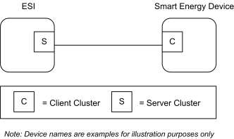
Please note the ESI is defined as the Server due to its role in acting as the proxy for upstream price management systems and subsequent data stores.
10.2.1.1 Revision History ¶
The global ClusterRevision attribute value SHALL be the highest revision number in the table below.
| Rev | Description |
|---|---|
| 1 | mandatory global ClusterRevision attribute added |
| 2 | Updated from SE1.4 version; CCB 1447 2964 2965 |
10.2.1.2 Classification ¶
| Hierarchy | Role | PICS Code | Primary Transaction |
|---|---|---|---|
| Base | Application | SEPR | Type 1 (client to server) |
10.2.1.3 Cluster Identifiers ¶
| Identifier | Name |
|---|---|
| 0x0700 | Price |
10.2.2 Server ¶
10.2.2.1 Dependencies ¶
- Events carried using this cluster include a timestamp with the assumption that target devices maintain a real time clock. Devices can acquire and synchronize their internal clocks via the Time cluster server.
- If a device does not support a real time clock it is assumed that the device will interpret and utilize the “Start Now” value within the Time field.
10.2.2.2 Attributes ¶
For convenience, the attributes defined in this cluster are arranged into sets of related attributes; each set can contain up to 256 attributes. Attribute identifiers are encoded such that the most significant octet specifies the attribute set and the least significant octet specifies the attribute within the set. The currently defined attribute sets are listed in Table 3-142. The Price Cluster is broken down in to Delivered attribute sets 0x00 to 0x7F and Received attribute sets 0x80 to 0xFF.
Table 10-2. Price Cluster Attribute Sets ¶
| Attribute Set Identifier | Description |
|---|---|
| 0x00 | Tier Label (Delivered) |
| 0x01 | Block Threshold (Delivered) |
| 0x02 | Block Period (Delivered) |
| 0x03 | Commodity |
| 0x04 | Block Price Information (Delivered) |
| 0x05 | Extended Price Information (Delivered) |
| 0x06 | Tariff Information Set (Delivered) |
| 0x07 | Billing Information Set (Delivered) |
| 0x08 | Credit Payment Attribute Set |
| 0x80 | Received Tier Label |
| 0x81 | Received Block Threshold |
| 0x82 | Received Block Period |
| 0x83 | Reserved |
| 0x84 | Received Block Price Information |
| 0x85 | Received Extended Price Information |
| 0x86 | Received Tariff Information Set |
| 0x87 | Received Billing Information Set |
10.2.2.2.1 Tier Label (Delivered) Set ¶
Table 10-3. Tier Label Attribute Set ¶
| Id | Name | Type | Length | Access | Default | M |
|---|---|---|---|---|---|---|
| 0x0000 | Tier1PriceLabel | octstr | 1 to 13 Octets | RW | “Tier 1” | O |
| 0x0001 | Tier2PriceLabel | octstr | 1 to 13 Octets | RW | “Tier 2” | O |
| 0x0002 | Tier3PriceLabel | octstr | 1 to 13 Octets | RW | “Tier 3” | O |
| 0x0003 | Tier4PriceLabel | octstr | 1 to 13 Octets | RW | “Tier 4” | O |
| 0x0004 | Tier5PriceLabel | octstr | 1 to 13 Octets | RW | “Tier 5” | O |
| 0x0005 | Tier6PriceLabel | octstr | 1 to 13 Octets | RW | “Tier 6” | O |
| 0x0006 | Tier7PriceLabel | octstr | 1 to 13 Octets | R | “Tier 7” | O |
| 0x0007 | Tier8PriceLabel | octstr | 1 to 13 Octets | R | “Tier 8” | O |
| 0x0008 | Tier9PriceLabel | octstr | 1 to 13 Octets | R | “Tier 9” | O |
| 0x0009 | Tier10PriceLabel | octstr | 1 to 13 Octets | R | “Tier 10” | O |
| 0x000A | Tier11PriceLabel | octstr | 1 to 13 Octets | R | “Tier 11” | O |
| 0x000B | Tier12PriceLabel | octstr | 1 to 13 Octets | R | “Tier 12” | O |
| 0x000C | Tier13PriceLabel | octstr | 1 to 13 Octets | R | “Tier 13” | O |
| 0x000D | Tier14PriceLabel | octstr | 1 to 13 Octets | R | “Tier 14” | O |
| 0x000E | Tier15PriceLabel | octstr | 1 to 13 Octets | R | “Tier 15” | O |
| 0x000F | Tier16PriceLabel | octstr | 1 to 13 Octets | R | “Tier 16” | O |
| 0x0010 | Tier17PriceLabel | octstr | 1 to 13 Octets | R | “Tier 17” | O |
| 0x001n | TierwxPriceLabel | octstr | 1 to 13 Octets | R | “Tier wx” | O |
| 0x002n | TieryzPriceLabel | octstr | 1 to 13 Octets | R | “Tier yz” | O |
| 0x002F | Tier48PriceLabel | octstr | 1 to 13 Octets | R | “Tier 48” | O |
10.2.2.2.1.1 TierNPriceLabel Attributes ¶
The TierNPriceLabel attributes provide a method for utilities to assign a label to the Price Tier declared within the Publish Price command. The TierNPriceLabel attributes are an Octet String field capable of storing a 12 character string (the first octet indicates length) encoded in the UTF-8 format. Example Tier Price Labels are “Normal”, “Shoulder”, “Peak”, “Real Time,” and “Critical”. There are 48 Tier Labels.
Although not prohibited, it is likely (and allowed) that a server will reject an attempt to write to these attributes; if rejected, the server shall return a Default Response with a status of either NOT_AUTHORIZED or READ_ONLY. A client should make provision for a write attempt to be rejected.
10.2.2.2.2 Block Threshold (Delivered) Set ¶
The set of attributes shown in Table 10-4 provides remote access to the Price server Block Thresholds. Block Threshold values are crossed when the CurrentBlockPeriodConsumptionDelivered attribute value is greater than a BlockNThreshold attribute. The number of block thresholds is indicated by the Number of Block Thresholds field in the associated Publish Price command. The number of blocks is one greater than the number of thresholds.
Table 10-4. Block Threshold Attribute Set ¶
| Id | Name | Type | Range | Acc | Def | M |
|---|---|---|---|---|---|---|
| 0x0100 | Block1Threshold | uint48 | 0x000000000000 to 0xFFFFFFFFFFFF | R | - | O |
| 0x0101 | Block2Threshold | uint48 | 0x000000000000 to 0xFFFFFFFFFFFF | R | - | O |
| 0x0102 | Block3Threshold | uint48 | 0x000000000000 to 0xFFFFFFFFFFFF | R | - | O |
| 0x0103 | Block4Threshold | uint48 | 0x000000000000 to 0xFFFFFFFFFFFF | R | - | O |
| 0x0104 | Block5Threshold | uint48 | 0x000000000000 to 0xFFFFFFFFFFFF | R | - | O |
| 0x0105 | Block6Threshold | uint48 | 0x000000000000 to 0xFFFFFFFFFFFF | R | - | O |
| 0x0106 | Block7Threshold | uint48 | 0x000000000000 to 0xFFFFFFFFFFFF | R | - | O |
| 0x0107 | Block8Threshold | uint48 | 0x000000000000 to 0xFFFFFFFFFFFF | R | - | O |
| 0x0108 | Block9Threshold | uint48 | 0x000000000000 to 0xFFFFFFFFFFFF | R | - | O |
| 0x0109 | Block10Threshold | uint48 | 0x000000000000 to 0xFFFFFFFFFFFF | R | - | O |
| 0x010A | Block11Threshold | uint48 | 0x000000000000 to 0xFFFFFFFFFFFF | R | - | O |
| 0x010B | Block12Threshold | uint48 | 0x000000000000 to 0xFFFFFFFFFFFF | R | - | O |
| 0x010C | Block13Threshold | uint48 | 0x000000000000 to 0xFFFFFFFFFFFF | R | - | O |
| 0x010D | Block14Threshold | uint48 | 0x000000000000 to 0xFFFFFFFFFFFF | R | - | O |
| 0x010E | Block15Threshold | uint48 | 0x000000000000 to 0xFFFFFFFFFFFF | R | - | O |
| 0x010F | BlockThresholdCount | uint8 | 0x00 to 0xFF | R | - | O |
| 0x0110 | Tier1Block1Threshold | uint48 | 0x000000000000 to 0xFFFFFFFFFFFF | R | - | O |
| 0x0111 | Tier1Block2Threshold | uint48 | 0x000000000000 to 0xFFFFFFFFFFFF | R | - | O |
| -- | -- | -- | -- | -- | -- | -- |
| 0x011E | Tier1Block15Threshold | uint48 | 0x000000000000 to 0xFFFFFFFFFFFF | R | - | O |
| 0x011F | Tier1BlockThreshold Count | uint8 | 0x00 to 0xFF | R | - | O |
| 0x0120 | Tier2Block1Threshold | uint48 | 0x000000000000 to 0xFFFFFFFFFFFF | R | - | O |
| 0x0121 | Tier2Block2Threshold | uint48 | 0x000000000000 to 0xFFFFFFFFFFFF | R | - | O |
| -- | -- | -- | -- | -- | -- | -- |
| 0x012E | Tier2Block15Threshold | uint48 | 0x000000000000 to 0xFFFFFFFFFFFF | R | - | O |
| 0x012F | Tier2BlockThreshold Count | uint8 | 0x00 to 0xFF | R | - | O |
| -- | -- | -- | -- | -- | -- | -- |
| -- | -- | -- | -- | -- | -- | -- |
| 0x01FE | Tier15Block15Threshold | uint48 | 0x000000000000 to 0xFFFFFFFFFFFF | R | - | O |
| 0x01FF | Tier15BlockThreshold Count | uint8 | 0x00 to 0xFF | R | - | O |
10.2.2.2.2.1 BlockNThreshold ¶
Attributes Block1Threshold through Block15Threshold represent the block threshold values for a given period (typically the billing cycle). These values may be updated by the utility on a seasonal or annual basis. The thresholds are established such that crossing the threshold of energy consumption for the present block activates the next higher block, which can affect the energy rate in a positive or negative manner. The values are absolute and always increasing. The values represent the threshold at the end of a block. The Unit of Measure will be based on the fields defined in the Publish Price command, the formatting being defined by attributes within the Block Period attribute set.
10.2.2.2.2.2 BlockThresholdCount Attribute ¶
Where a single set of thresholds is used, the BlockThresholdCount attribute indicates the number of applicable BlockNThresholds. Where more than one set of thresholds is used, each set will be accompanied by an appropriate TierNBlockThresholdCount attribute (see 10.2.2.2.2.4).
10.2.2.2.2.3 TierNBlockMThreshold Attributes ¶
Attributes Tier1Block1Threshold through Tier15Block15Threshold represent the block threshold values applicable to a specific TOU tier for a given period (typically the billing cycle). These values may be updated by the utility on a seasonal or annual basis. The thresholds are established such that crossing the threshold of energy consumption for the present block activates the next higher block, which can affect the energy rate in a positive or negative manner. The values are absolute and always increasing. The values represent threshold at the end of a block. The Unit of Measure will based on the fields defined in the Publish Price command, the formatting being defined by attributes within the Block Period attribute set.
10.2.2.2.2.4 TierNBlockThresholdCount Attributes ¶
The TierNBlockThresholdCount attributes hold the number of block thresholds applicable to a given tier. These attributes are used in the case when a combination (TOU/Hybrid) tariff has a separate set of thresholds for each TOU tier. Unused TierNBlockThresholdCount attributes shall be set to zero.
10.2.2.2.3 Block Period (Delivered) Set ¶
The set of attributes shown in Table 10-5 provides remote access to the Price server Block Threshold period (typically the billing cycle) information.
Table 10-5. Block Period Attribute Set ¶
| Id | Name | Type | Range | Acc | Def | M |
|---|---|---|---|---|---|---|
| 0x0200 | StartofBlockPeriod | UTC | - | R | - | O |
| 0x0201 | BlockPeriodDuration | uint24 | 0x000000 to 0xFFFFFF | R | - | O |
| 0x0202 | ThresholdMultiplier | uint24 | 0x000000 to 0xFFFFFF | R | - | O |
| 0x0203 | ThresholdDivisor | uint24 | 0x000000 to 0xFFFFFF | R | - | O |
| 0x0204 | BlockPeriod Duration- Type | map8 | R | 0x00 | O |
10.2.2.2.3.1 StartofBlockPeriod Attribute ¶
The StartofBlockPeriod attribute represents the start time of the current block tariff period. A change indicates that a new Block Period is in effect (see sub-clause 10.2.4.3 for further details).
10.2.2.2.3.2 BlockPeriodDuration Attribute ¶
The BlockPeriodDuration attribute represents the current block tariff period duration in units defined by the BlockPeriodDurationType attribute. A change indicates that only the duration of the current Block Period has been modified. A client device shall expect a new Block Period following the expiration of the new duration.
10.2.2.2.3.3 ThresholdMultiplier Attribute ¶
ThresholdMultiplier provides a value to be multiplied against Threshold attributes. If present, this attribute must be applied to all Block Threshold values to derive values that can be compared against the CurrentBlockPeriodConsumptionDelivered attribute within the Metering cluster (see 10.4.2.2.1.13). This attribute must be used in conjunction with the ThresholdDivisor attribute. An attribute value of zero shall result in a unitary multiplier (0x000001).
10.2.2.2.3.4 ThresholdDivisor Attribute ¶
ThresholdDivisor provides a value to divide the result of applying the ThresholdMultiplier attribute to Block Threshold values to derive values that can be compared against the CurrentBlockPeriodConsumptionDelivered attribute within the Metering cluster (see 10.4.2.2.1.13). This attribute must be used in conjunction with the ThresholdMultiplier attribute. An attribute value of zero shall result in a unitary divisor (0x000001).
10.2.2.2.3.5 BlockPeriodDurationType Attribute ¶
The BlockPeriodDurationType attribute indicates the timebase used for the BlockPeriodDuration attribute. Enumerated values for this attribute are shown in Table 10-34. A default value of 0x00 (Minutes) shall be assumed if this attribute is not present.
10.2.2.2.4 Commodity Set ¶
The set of attributes shown in Table 10-6 represents items that are associated with a particular commodity.
Table 10-6. Commodity Attribute Set ¶
| Id | Name | Type | Range | Acc | Default | M |
|---|---|---|---|---|---|---|
| 0x0300 | CommodityType | enum8 | 0x00 to 0xFF | R | - | O |
| 0x0301 | StandingCharge | uint32 | 0x00000000 to 0xFFFFFFFF | R | - | O |
| 0x0302 | ConversionFactor | uint32 | 0x00000000 to 0xFFFFFFFF | R | 0x10000000 | O |
| 0x0303 | ConversionFactorTrailing- Digit | map8 | R | 0x70 | O | |
| 0x0304 | CalorificValue | uint32 | 0x00000000 to 0xFFFFFFFF | R | 0x2625A00 | O |
| 0x0305 | CalorificValueUnit | enum8 | R | 0x1 | O | |
| 0x0306 | CalorificValueTrailingDigit | map8 | R | 0x60 | O |
10.2.2.2.4.1 CommodityType Attribute ¶
CommodityType provides a label for identifying the type of pricing server present. The attribute is an enumerated value representing the commodity. The defined values are represented by the non-mirrored values (0-127) in the MeteringDeviceType attribute enumerations (refer to Table 10-73).
10.2.2.2.4.2 Standing Charge Attribute ¶
The value of the Standing Charge is a daily fixed charge associated with supplying the commodity, measured in base unit of Currency with the decimal point located as indicated by the Trailing Digits field of a Publish Price command (see sub-clause 0). A value of 0xFFFFFFFF indicates field not used.
10.2.2.2.4.3 ConversionFactor Attribute ¶
The conversion factor is used for gas meter and takes into account changes in the volume of gas based on temperature and pressure. The ConversionFactor attribute represents the current active value. The ConversionFactor is dimensionless. The default value for the ConversionFactor is 1, which means no conversion is applied. A price server can advertise a new/different value at any time.
10.2.2.2.4.4 ConversionFactorTrailingDigit Attribute ¶
An 8-bit bitmap used to determine where the decimal point is located in the ConversionFactor attribute. The most significant nibble indicates the number of digits to the right of the decimal point. The least significant nibble is reserved. The ConversionFactorTrailingDigit attribute represents the current active value.
10.2.2.2.4.5 CalorificValue Attribute ¶
The amount of heat generated when a given mass of fuel is completely burned. The CalorificValue is used to convert the measured volume or mass of gas into kWh. The CalorificValue attribute represents the current active value.
10.2.2.2.4.6 CalorificValueUnit Attribute ¶
This attribute defines the unit for the CalorificValue. This attribute is an 8-bit enumerated field. The values and descriptions for this attribute are listed in Table 10-7 below. The CalorificValueUnit attribute represents the current active value.
Table 10-7. Values and Descriptions for the CalorificValueUnit Attribute ¶
| Values | Description |
|---|---|
| 0x01 | MJ/m3 |
| 0x02 | MJ/kg |
10.2.2.2.4.7 CalorificValueTrailingDigit Attribute ¶
An 8-bit bitmap used to determine where the decimal point is located in the CalorificValue attribute. The most significant nibble indicates the number of digits to the right of the decimal point. The least significant nibble is reserved. The CalorificValueTrailingDigit attribute represents the current active value.
10.2.2.2.5 Block Price Information (Delivered) Set ¶
The set of attributes shown in Table 10-8 provide remote access to the block prices. The Block Price Information attribute set supports Block and combined Tier-Block pricing, the number of blocks is one greater than the number of block thresholds defined in the Pricing cluster.
Table 10-8. Block Price Information Attribute Set ¶
| Id | Name | Type | Range | Acc | Def | M |
|---|---|---|---|---|---|---|
| 0x0400 | NoTierBlock1Price | uint32 | 0x00000000 to 0xFFFFFFFF | R | - | O |
| 0x0401 | NoTierBlock2Price | uint32 | 0x00000000 to 0xFFFFFFFF | R | - | O |
| 0x0402 | NoTierBlock3Price | uint32 | 0x00000000 to 0xFFFFFFFF | R | - | O |
| 0x040N | NoTierBlockN+1Price… | uint32 | 0x00000000 to 0xFFFFFFFF | R | - | O |
| 0x040F | NoTierBlock16Price | uint32 | 0x00000000 to 0xFFFFFFFF | R | - | O |
| 0x0410 | Tier1Block1Price | uint32 | 0x00000000 to 0xFFFFFFFF | R | - | O |
| 0x0411 | Tier1Block2Price | uint32 | 0x00000000 to 0xFFFFFFFF | R | - | O |
| 0x0412 | Tier1Block3Price | uint32 | 0x00000000 to 0xFFFFFFFF | R | - | O |
| 0x041N | Tier1BlockN+1Price… | uint32 | 0x00000000 to 0xFFFFFFFF | R | - | O |
| 0x041F | Tier1Block16Price | uint32 | 0x00000000 to 0xFFFFFFFF | R | - | O |
| 0x0420 | Tier2Block1Price | uint32 | 0x00000000 to 0xFFFFFFFF | R | - | O |
| 0x042N | Tier2BlockN+1Price… | uint32 | 0x00000000 to 0xFFFFFFFF | R | - | O |
| 0x042F | Tier2Block16Price | uint32 | 0x00000000 to 0xFFFFFFFF | R | - | O |
| 0x0430 | Tier3Block1Price | uint32 | 0x00000000 to 0xFFFFFFFF | R | - | O |
| 0x043N | Tier3BlockN+1Price… | uint32 | 0x00000000 to 0xFFFFFFFF | R | - | O |
| 0x043F | Tier3Block16Price | uint32 | 0x00000000 to 0xFFFFFFFF | R | - | O |
| 0x0440 | Tier4Block1Price | uint32 | 0x00000000 to 0xFFFFFFFF | R | - | O |
| 0x044N | Tier4BlockN+1Price… | uint32 | 0x00000000 to 0xFFFFFFFF | R | - | O |
| 0x044F | Tier4Block16Price | uint32 | 0x00000000 to 0xFFFFFFFF | R | - | O |
| 0x0450 | Tier5Block1Price | uint32 | 0x00000000 to 0xFFFFFFFF | R | - | O |
| 0x045N | Tier5BlockN+1Price… | uint32 | 0x00000000 to 0xFFFFFFFF | R | - | O |
| 0x045F | Tier5Block16Price | uint32 | 0x00000000 to 0xFFFFFFFF | R | - | O |
| 0x0460 | Tier6Block1Price | uint32 | 0x00000000 to 0xFFFFFFFF | R | - | O |
| 0x046N | Tier6BlockN+1Price… | uint32 | 0x00000000 to 0xFFFFFFFF | R | - | O |
| 0x046F | Tier6Block16Price | uint32 | 0x00000000 to 0xFFFFFFFF | R | - | O |
| 0x0470 | Tier7Block1Price | uint32 | 0x00000000 to 0xFFFFFFFF | R | - | O |
| 0x047N | Tier7BlockN+1Price… | uint32 | 0x00000000 to 0xFFFFFFFF | R | - | O |
| 0x047F | Tier7Block16Price | uint32 | 0x00000000 to 0xFFFFFFFF | R | - | O |
| 0x0480 | Tier8Block1Price | uint32 | 0x00000000 to 0xFFFFFFFF | R | - | O |
| 0x048N | Tier8BlockN+1Price… | uint32 | 0x00000000 to 0xFFFFFFFF | R | - | O |
| 0x048F | Tier8Block16Price | uint32 | 0x00000000 to 0xFFFFFFFF | R | - | O |
| 0x0490 | Tier9Block1Price | uint32 | 0x00000000 to 0xFFFFFFFF | R | - | O |
| 0x049N | Tier9BlockN+1Price … | uint32 | 0x00000000 to 0xFFFFFFFF | R | - | O |
| 0x049F | Tier9Block16Price | uint32 | 0x00000000 to 0xFFFFFFFF | R | - | O |
| 0x04A0 | Tier10Block1Price | uint32 | 0x00000000 to 0xFFFFFFFF | R | - | O |
|---|---|---|---|---|---|---|
| 0x04AN | Tier10BlockN+1Price… | uint32 | 0x00000000 to 0xFFFFFFFF | R | - | O |
| 0x04AF | Tier10Block16Price | uint32 | 0x00000000 to 0xFFFFFFFF | R | - | O |
| 0x04B0 | Tier11Block1Price | uint32 | 0x00000000 to 0xFFFFFFFF | R | - | O |
| 0x04BN | Tier11BlockN+1Price… | uint32 | 0x00000000 to 0xFFFFFFFF | R | - | O |
| 0x04BF | Tier11Block16Price | uint32 | 0x00000000 to 0xFFFFFFFF | R | - | O |
| 0x04C0 | Tier12Block1Price | uint32 | 0x00000000 to 0xFFFFFFFF | R | - | O |
| 0x04CN | Tier12BlockN+1Price… | uint32 | 0x00000000 to 0xFFFFFFFF | R | - | O |
| 0x04CF | Tier12Block16Price | uint32 | 0x00000000 to 0xFFFFFFFF | R | - | O |
| 0x04D0 | Tier13Block1Price | uint32 | 0x00000000 to 0xFFFFFFFF | R | - | O |
| 0x04DN | Tier13BlockN+1Price… | uint32 | 0x00000000 to 0xFFFFFFFF | R | - | O |
| 0x04DF | Tier13Block16Price | uint32 | 0x00000000 to 0xFFFFFFFF | R | - | O |
| 0x04E0 | Tier14Block1Price | uint32 | 0x00000000 to 0xFFFFFFFF | R | - | O |
| 0x04EN | Tier14BlockN+1Price… | uint32 | 0x00000000 to 0xFFFFFFFF | R | - | O |
| 0x04EF | Tier14Block16Price | uint32 | 0x00000000 to 0xFFFFFFFF | R | - | O |
| 0x04F0 | Tier15Block1Price | uint32 | 0x00000000 to 0xFFFFFFFF | R | - | O |
| 0x04FN | Tier15BlockN+1Price… | uint32 | 0x00000000 to 0xFFFFFFFF | R | - | O |
| 0x04FF | Tier15Block16Price | uint32 | 0x00000000 to 0xFFFFFFFF | R | - | O |
10.2.2.2.5.1 TierNBlockNPrice Attributes ¶
Attributes PriceNoTierBlock1 through PriceTier15Block16 represent the price of Energy, Gas, or Water delivered to the premises (i.e. delivered to the customer from the utility) at a specific price tier as defined by a TOU schedule, Block Threshold or a real time pricing period. If optionally provided, attributes shall be initialized prior to the issuance of associated Publish Price commands (see sub-clause 0). The expected practical limit for the number of PriceTierNBlockN attributes supported is 32. The Unit of Measure, Currency and Trailing Digits that apply to this attribute should be obtained from the appropriate fields in a Publish Price command.
10.2.2.2.6 Extended Price Information (Delivered) Set ¶
In case of TOU charging only, the price server allows support for up to 48 TOU rates. To reduce the number of attributes, Tier1Block1Price through Tier15Block1Price attributes are reused to represent rates for tiers 1 to 15. Rates for tiers 16 to 48 are provided in the extended price information set.
Table 10-9. Extended Price Information Set (TOU charging only) ¶
| Id | Name | Type | Range | Acc | Def | M |
|---|---|---|---|---|---|---|
| 0x0500-0x050E | Reserved | |||||
| 0x050F | PriceTier16 | uint32 | 0x00000000 to 0xFFFFFFFF | R | - | O |
| … | PriceTierN | uint32 | 0x00000000 to 0xFFFFFFFF | R | - | O |
| Id | Name | Type | Range | Acc | Def | M |
|---|---|---|---|---|---|---|
| 0x052F | PriceTier48 | uint32 | 0x00000000 to 0xFFFFFFFF | R | - | O |
| 0x0530-0x05FD | Reserved | |||||
| 0x05FE | CPP1 Price | uint32 | 0x00000000 to 0xFFFFFFFF | R | - | O |
| 0x05FF | CPP2 Price | uint32 | 0x00000000 to 0xFFFFFFFF | R | - | O |
10.2.2.2.6.1 PriceTierN Attributes ¶
Attributes PriceTier16 through PriceTier48 represent the price of Energy, Gas, or Water delivered to the premises (i.e. delivered to the customer from the utility) at a specific price tier.
10.2.2.2.6.2 CPP1 Price Attribute ¶
Attribute CPP1 Price represents the price of Energy, Gas, or Water delivered to the premises (i.e. delivered to the customer from the utility) while Critical Peak Pricing ‘CPP1’ is being applied.
10.2.2.2.6.3 CPP2 Price Attribute ¶
Attribute CPP2 Price represents the price of Energy, Gas, or Water delivered to the premises (i.e. delivered to the customer from the utility) while Critical Peak Pricing ‘CPP2’ is being applied.
10.2.2.2.7 Tariff Information (Delivered) Attribute Set ¶
The following set of attributes represents items that are associated with a particular Price Tariff. Please note that the terms tier and rate are used interchangeably here, but do define the same thing.
Table 10-10. Tariff Information Attribute Set ¶
| Id | Name | Type | Range | Acc | Def | M |
|---|---|---|---|---|---|---|
| 0x0610 | TariffLabel | octstr | 1 to 25 Octets | R | 0 | O |
| 0x0611 | NumberofPrice Ti- ersInUse | uint8 | 0 to 15 | R | 0 | O |
| 0x0612 | NumberofBlock ThresholdsInUse | uint8 | 0 to 15 | R | 0 | O |
| 0x0613 | TierBlockMode | enum8 | 0x00 to 0xFF | R | 0xFF | O |
| 0x0614 | Reserved | |||||
| 0x0615 | Unit of Measure | enum8 | 0x00 to 0xFF | R | 0 | O |
| 0x0616 | Currency | uint16 | 0x0000 to 0xFFFF | R | - | O |
| 0x0617 | Price Trailing Digit | map8 | R | 0x00 | O | |
| 0x0618 | Reserved | |||||
| 0x0619 | TariffResolutionPer- iod | enum8 | R | 0 | O | |
| 0x0620 | CO 2 | uint32 | 0x00000000 to 0xFFFFFFFF | R | 185 | O |
| 0x0621 | CO Unit 2 | enum8 | R | 1 | O |
| Id | Name | Type | Range | Acc | Def | M |
|---|---|---|---|---|---|---|
| 0x0622 | CO TrailingDigit 2 | map8 | R | 0 | O |
10.2.2.2.7.1 TariffLabel Attribute ¶
The TariffLabel attribute provides a method for utilities to assign a label to an entire set of tariff information. The TariffLabel attribute is an Octet String capable of storing a 24 character string (the first Octet indicates length) encoded in the UTF-8 format. This attribute is thought of be useful when a commodity supplier may have multiple tariffs. The TariffLabel attribute represents the current active value.
10.2.2.2.7.2 NumberofPriceTiersInUse Attribute ¶
An 8-bit integer which indicates the number of price tiers used while this tariff is active. Valid values are from 0 to 48 reflecting block charging only (no price tiers in use) (0) to 48 price tiers available (48). The NumberofPriceTiersinUse attribute represents the current active value.
10.2.2.2.7.3 NumberofBlockThresholdsInUse Attribute ¶
An 8-bit integer which indicates the total number of block thresholds used in the currently active tariff.
When utilizing TOU charging only, the attribute shall be set to 0 (no thresholds employed).
Where a single set of thresholds is employed, valid values are from 1 to 15 reflecting 1 to 15 block thresholds available. The number of blocks is one greater than the number of block thresholds.
Where the TierBlockMode is set to 2, this attribute indicates the sum of all thresholds employed for all tiers within the currently active tariff.
10.2.2.2.7.4 TierBlockMode Attribute ¶
An 8-bit enumeration indicating how the mixed TOU / Block charging is to be applied. The value stored in this attribute is applicable only in the case where NumberofPriceTiersInUse is greater than one and NumberofBlockThresholdsInUse is greater than zero. Table 10-11 shows possible values.
Table 10-11. TierBlockMode Enumeration ¶
| Values | Description |
|---|---|
| 0x00 | This tariff employs a single set of thresholds. All commodity con- sumption within a block period is summed and the result compared against the thresholds to determine the Current Block. Each TOU tier will have prices for each block, the current TOU price being dependant on the value of the Current Block. See Figure 10-2. |
| 0x01 | This tariff employs a single set of thresholds common across all TOU tiers. During a block period, commodity consumption whilst in each TOU tier is individually summed. The summation for a par- ticular TOU tier is compared against the common thresholds to de- termine the current block. See Figure 10-3. |
| 0x02 | This combination tariff employs an individual set of Thresholds for each TOU tier. During a block period, commodity consumption whilst in each TOU tier is individually summed. The summation for a particular TOU tier is compared against the thresholds for that tier to determine the current block. This is similar in operation to that shown in Figure 10-3 with the exception that the thresholds used can vary from tier to tier. |
| 0xFF | Not Used |
Figure 10-2. Single Threshold Set applied to All Consumption ¶
Rate 1
Rate 3 Rate 2
| Rate 1 | Rate 2 | Rate 3 | |||
| Block T | hreshold 2 | ||||
| Block T | hreshold 1 | ate 1 | ate 2 | ||
| R | R |
kWh
Block 3
Block 2
Block 1
Time [h]
Figure 10-3. Threshold Set applied to Each Tier Consumption ¶
| 1 2 3 1 2 Rate 1 kWh Rate Rate Rate Rate Rate Rate 2 Rate 3 Block Threshold 2 Block Threshold 1 Time [h] | 1 2 3 Rate Rate Rate Block 3 Block 2 Block 1 | ||||||
| Rate 1 | Rate 2 | Rate 3 | Rate 1 | Rate 2 | |||
| Block T | hreshold 2 | ||||||
| Block T | hreshold 1 |
Note: Tiers 1-15 ONLY are available for hybrid Tier/Block tariffing ... Tiers 16-48 are for TOU tariffing only.
10.2.2.2.7.5 Unit of Measure Attribute ¶
An 8-bit enumeration identifying the base unit of measure. The enumeration used for this attribute shall match one of the UnitOfMeasure values using a pure Binary format, as defined in the Metering cluster.
10.2.2.2.7.6 Currency Attribute ¶
An unsigned 16-bit integer containing identifying information concerning the local unit of currency used in the Price cluster. The Currency attribute shall correspond to the Currency field within the PublishPrice command.
The value of the currency attribute should match the values defined by ISO 4217.
10.2.2.2.7.7 PriceTrailingDigit Attribute ¶
An 8-bit BitMap used to determine where the decimal point is located for prices provided in the Standing Charge attribute and the Price Matrix command. The most significant nibble is the Trailing Digit sub-field which indicates the number of digits to the right of the decimal point. The least significant nibble is reserved and shall be 0. The Price Trailing Digit attribute represents the current active value.
10.2.2.2.7.8 TariffResolutionPeriod Attribute ¶
An 8 bit enumeration identifying the resolution period for Block Tariff, Table 10-36 shows all available options.
10.2.2.2.7.9 CO 2 Attribute ¶
Used to calculate the amount of carbon dioxide (CO2) produced from energy use. Natural gas has a conversion factor of about 0.185, e.g. 1,000 kWh of gas used is responsible for the production of 185kg CO2 (0.185 x 1000 kWh). The CO2 attribute represents the current active value.
10.2.2.2.7.10 CO 2Unit Attribute ¶
This attribute is an 8-bit enumeration which defines the unit for the CO2 attribute. The values and descriptions for this attribute are listed in Table 10-12 below. The CO2Unit attribute represents the current active value.
Table 10-12. CO2Unit Enumeration ¶
| Values | Description |
|---|---|
| 0x00 | Reserved for future use |
| 0x01 | kg per kWh |
| 0x02 | kg per Gallon of Gasoline |
| 0x03 | kg per Therm of Natural Gas |
10.2.2.2.7.11 CO 2TrailingDigit Attribute ¶
An 8-bit Bit-Map used to determine where the decimal point is located in the CO2 attribute. The most significant nibble indicates the number of digits to the right of the decimal point. The least significant nibble is reserved. The CO2TrailingDigit attribute represents the current active value.
10.2.2.2.8 Billing Information (Delivered) Attribute Set ¶
The set of attributes shown in Table 10-13 provides remote access to the Price server Billing information.
Table 10-13. Billing Information Attribute Set ¶
| Id | Name | Type | Range | Acc | Def | M |
|---|---|---|---|---|---|---|
| 0x0700 | CurrentBillingPeriodStart | UTC | 0x00000000 to 0xFFFFFFFF | R | - | O |
| 0x0701 | CurrentBillingPeriodDuration | uint24 | 0x000000 to 0xFFFFFF | R | - | O |
| 0x0702 | LastBillingPeriodStart | UTC | 0x00000000 to 0xFFFFFFFF | R | - | O |
| 0x0703 | LastBillingPeriodDuration | uint24 | 0x000000 to 0xFFFFFF | R | - | O |
| 0x0704 | LastBillingPeriodConsolidatedBill | uint32 | 0x00000000 to 0xFFFFFFFF | R | - | O |
10.2.2.2.8.1 CurrentBillingPeriodStart Attribute ¶
The CurrentBillingPeriodStart attribute represents the start time of the current billing period.
10.2.2.2.8.2 CurrentBillingPeriodDuration Attribute ¶
The CurrentBillingPeriodDuration attribute represents the current billing period duration in minutes.
10.2.2.2.8.3 LastBillingPeriodStart Attribute ¶
The LastBillingPeriodStart attribute represents the start time of the last billing period.
10.2.2.2.8.4 LastBillingPeriodDuration Attribute ¶
The LastBillingPeriodDuration attribute is the duration of the last billing period in minutes (start to end of last billing period).
10.2.2.2.8.5 LastBillingPeriodConsolidatedBill Attribute ¶
The LastBillingPeriodConsolidatedBill attribute is an amount for the cost of the energy supplied from the date of the LastBillingPeriodStart attribute and until the duration of the LastBillingPeriodDuration attribute expires, measured in base unit of Currency with the decimal point located as indicated by the Trailing Digits attribute.
10.2.2.2.9 Credit Payment Attribute Set ¶
The Credit Payments Attribute set provides a method for the HAN (IHD) to understand the current status of the credit-only payment made to the energy supplier. These payments are for a credit meter only and do not cover any Prepayment Top up or payment. This attribute set is used to display the bill on the IHD should this service be required. Devices that require this information should use standard commands to read this information.
Table 10-14. Credit Payment Attribute Set ¶
| Id | Name | Type | Range | Acc | Def | M |
|---|---|---|---|---|---|---|
| 0x0800 | CreditPaymentDueDate | UTC | R | - | O | |
| 0x0801 | CreditPaymentStatus | enum8 | 0x00 to 0xFF | R | - | O |
| 0x0802 | CreditPayment Over- DueAmount | int32 | -2147483647 to 2147483647 | R | 0 | O |
| 0x080A | PaymentDiscount | int32 | -2147483647 to 2147483647 | R | - | O |
| 0x080B | PaymentDiscountPeriod | enum8 | 0x00 to 0xFF | R | - | O |
| 0x0810 | CreditPayment#1 | uint32 | 0x00000000 to 0xFFFFFFFF | R | - | O |
| 0x0811 | CreditPaymentDate#1 | UTC | R | - | O | |
| 0x0812 | CreditPaymentRef#1 | Octstr | 1-21 | R | - | O |
| 0x0820 | CreditPayment#2 | uint32 | 0x00000000 to 0xFFFFFFFF | R | - | O |
| 0x0821 | CreditPaymentDate#2 | UTC | R | - | O | |
| 0x0822 | CreditPaymentRef#2 | Octstr | 1-21 | R | - | O |
| 0x0830 | CreditPayment#3 | uint32 | 0x00000000 to 0xFFFFFFFF | R | - | O |
| 0x0831 | CreditPaymentDate#3 | UTC | R | - | O | |
| 0x0832 | CreditPaymentRef#3 | Octstr | 1-21 | R | - | O |
| 0x0840 | CreditPayment#4 | uint32 | 0x00000000 to 0xFFFFFFFF | R | - | O |
| 0x0841 | CreditPaymentDate#4 | UTC | R | - | O | |
| 0x0842 | CreditPaymentRef#4 | Octstr | 1-21 | R | - | O |
| 0x0850 | CreditPayment#5 | uint32 | 0x00000000 to 0xFFFFFFFF | R | - | O |
| 0x0851 | CreditPaymentDate#5 | UTC | R | - | O | |
| 0x0852 | CreditPaymentRef#5 | Octstr | 1-21 | R | - | O |
10.2.2.2.9.1 CreditPaymentdueDate Attribute ¶
The CreditPaymentDueDate attribute indicates the date and time when the next credit payment is due to be paid by the consumer to the supplier.
10.2.2.2.9.2 CreditPaymentStatus Attribute ¶
The CreditPaymentStatus attribute indicates the current status of the last payment. Table 10-15 defines the enumeration values for this attribute.
Table 10-15. CreditPaymentStatus Enumeration ¶
| Value | Status |
|---|---|
| 0x00 | Pending |
| 0x01 | Received / Paid |
| 0x02 | Overdue |
| 0x03 | 2 payments overdue |
| 0x04 | 3 payments overdue |
10.2.2.2.9.3 CreditPaymentOverDueAmount Attribute ¶
This is the total of the consolidated bill amounts accumulated since the last payment.
10.2.2.2.9.4 PaymentDiscount Attribute ¶
The PaymentDiscount attribute indicates the discount that the energy supplier has applied to the consolidated bill.
10.2.2.2.9.5 PaymentDiscountPeriod Attribute ¶
The PaymentDiscountPeriod attribute indicates the period for which this discount shall be applied for. Table 10-16 shows the enumeration values for this attribute.
Table 10-16. PaymentDiscountDuration Enumerations ¶
| Value | Status |
|---|---|
| 0x00 | Current Billing Period |
| 0x01 | Current Consolidated bill |
| 0x02 | One Month |
| 0x03 | One Quarter |
| 0x04 | One Year |
10.2.2.2.9.6 CreditPayment Attribute ¶
The CreditPayment attributes indicate the amount paid by the consumer to the energy supplier. The last 5 values are shown with #1 meaning the most recent. Measured in base unit of Currency with the decimal point located as indicated by the Trailing Digits attribute.
10.2.2.2.9.7 CreditPaymentDate Attribute ¶
The CreditPaymentDate attributes indicate the last time the consumer made a payment to the energy supplier. The last 5 values are shown with #1 meaning the most recent.
10.2.2.2.9.8 CreditPaymentRef Attribute ¶
The CreditPaymentRef attributes indicate the reference number given to the payment by the energy supplier. The last 5 values are shown with #1 meaning the most recent.
10.2.2.2.10 Received Tier Label Attribute Set ¶
Table 10-17. Received Tier Label Attribute Set ¶
| Id | Name | Type | Range | Acc | Def | M |
|---|---|---|---|---|---|---|
| 0x8000 | ReceivedTier1 PriceLabel | octstr | 1 to 13 Oc- tets | RW | “Tier 1” | O |
| 0x800n | ReceivedTierN PriceLabel | octstr | 1 to 13 Oc- tets | RW | “Tier N” | O |
| 0x802F | ReceivedTier48 PriceLabel | octstr | 1 to 13 Oc- tets | RW | “Tier 48” | O |
10.2.2.2.10.1 ReceivedTierNPriceLabel Attributes ¶
The ReceivedTierNPriceLabel attributes provide a method for utilities to assign a label to Received Price Tiers. There are 48 Tier Labels. The format and use of these attributes is the same as for the ‘Delivered’ Price Labels defined in 10.2.2.2.1.
10.2.2.2.11 Received Block Threshold Attribute Set ¶
The following set of attributes provides remote access to the Price server ReceivedBlockThresholds. The number of block thresholds is indicated by the NumberofBlockThresholds field in the associated Publish- TariffInformation command. The number of blocks is one greater than the number of thresholds.
Table 10-18. Received Block Threshold Attribute Set ¶
| Id | Name | Type | Range | Acc | Def | M |
|---|---|---|---|---|---|---|
| 0x8100 | ReceivedBlock1Threshold | uint48 | 0x000000000000 to 0xFFFFFFFFFFFF | R | - | O |
| 0x810n | ReceivedBlockNThreshold | uint48 | 0x000000000000 to 0xFFFFFFFFFFFF | R | - | O |
| 0x810E | ReceivedBlock15Threshold | uint48 | 0x000000000000 to 0xFFFFFFFFFFFF | R | - | O |
10.2.2.2.11.1 ReceivedBlockNThreshold Attributes ¶
The format of these attributes is the same as for the ‘Delivered’ Block Thresholds defined in 10.2.2.2.2.1.
10.2.2.2.12 Received Block Period Attribute Set ¶
The following set of attributes provides remote access to the Price server Received Block Threshold period (typically the billing cycle) information.
Table 10-19. Received Block Period Attribute Set ¶
| Id | Name | Type | Range | Acc | Def | M |
|---|---|---|---|---|---|---|
| 0x8200 | ReceivedStartofBlockPeriod | UTC | - | R | - | O |
| 0x8201 | ReceivedBlockPeriodDuration | uint24 | 0x000000 to 0xFFFFFF | R | - | O |
| 0x8202 | ReceivedThresholdMultiplier | uint24 | 0x000000 to 0xFFFFFF | R | - | O |
| Id | Name | Type | Range | Acc | Def | M |
|---|---|---|---|---|---|---|
| 0x8203 | ReceivedThresholdDivisor | uint24 | 0x000000 to 0xFFFFFF | R | - | O |
10.2.2.2.12.1 ReceivedStartofBlockPeriod Attribute ¶
The format of this attribute is the same as for the ‘Delivered’ StartofBlockPeriod attribute defined in 10.2.2.2.3.1.
10.2.2.2.12.2 ReceivedBlockPeriodDuration Attribute ¶
The format of this attribute is the same as for the ‘Delivered’ BlockPeriodDuration attribute defined in 10.2.2.2.3.2.
10.2.2.2.12.3 ReceivedThresholdMultiplier Attribute ¶
The format of this attribute is the same as for the ‘Delivered’ ThresholdMultiplier attribute defined in 10.2.2.2.3.3.
10.2.2.2.12.4 ReceivedThresholdDivisor Attribute ¶
The format of this attribute is the same as for the ‘Delivered’ ThresholdDivisor attribute defined in 10.2.2.2.3.4.
10.2.2.2.13 Received Block Price Information Attribute Set ¶
Table 10-20. Received Block Price Attribute Set ¶
| Id | Name | Type | Range | Acc | Def | M |
|---|---|---|---|---|---|---|
| 0x8400 | RxNoTierBlock1Price | uint32 | 0x00000000 to 0xFFFFFFFF | R | - | O |
| 0x8401 | RxNoTierBlock2Price | uint32 | 0x00000000 to 0xFFFFFFFF | R | - | O |
| 0x8402 | RxNoTierBlock3Price | uint32 | 0x00000000 to 0xFFFFFFFF | R | - | O |
| 0x840N | RxNoTierBlockN+1Price … | uint32 | 0x00000000 to 0xFFFFFFFF | R | - | O |
| 0x840F | RxNoTierBlock16Price | uint32 | 0x00000000 to 0xFFFFFFFF | R | - | O |
| 0x8410 | RxTier1Block1Price | uint32 | 0x00000000 to 0xFFFFFFFF | R | - | O |
| … | … | … | … | … | … | … |
| 0x84FF | RxTier15Block16Price | uint32 | 0x00000000 to 0xFFFFFFFF | R | - | O |
10.2.2.2.13.1 RxTierNBlockNPrice Attributes ¶
The format and use of these attributes is the same as for the ‘Delivered’ TierNBlockNPrice attributes defined in 10.2.2.2.5.1.
10.2.2.2.14 Received Extended Price Information Attribute Set ¶
In case of TOU charging only, the price server shall support up to 48 TOU rates. To reduce the number of attributes, RxTierNBlock1Price attributes are reused to represent rates for tiers 1 to 15. Rates for tiers 16 to 48 are provided in the Received Extended Price Information Set.
Table 10-21. Received Extended Price Information Attribute Set (TOU charging only) ¶
| Id | Name | Type | Range | Acc | Def | M |
|---|---|---|---|---|---|---|
| 0x850F | ReceivedPri- ceTier16 | uint32 | 0x00000000 to 0xFFFFFFFF | R | - | O |
| 0x8510 | ReceivedPri- ceTier17 | uint32 | 0x00000000 to 0xFFFFFFFF | R | - | O |
| 0x8511 | ReceivedPri- ceTier18 | uint32 | 0x00000000 to 0xFFFFFFFF | R | - | O |
| … | ReceivedPri- ceTierN | uint32 | 0x00000000 to 0xFFFFFFFF | R | - | O |
| 0x852F | ReceivedPri- ceTier48 | uint32 | 0x00000000 to 0xFFFFFFFF | R | - | O |
10.2.2.2.14.1 ReceivedPriceTierN Attributes ¶
The format and use of these attributes is the same as for the ‘Delivered’ PriceTierN attributes defined in 10.2.2.2.6.1.
10.2.2.2.15 Received Tariff Information Attribute Set ¶
The following set of attributes represents items that are associated with a particular Received Price Tariff.
Table 10-22. Received Tariff Information Attribute Set ¶
| Id | Name | Type | Range | Acc | Def | M |
|---|---|---|---|---|---|---|
| 0x8610 | ReceivedTariffLabel | Octstr | 1 to 25 Octets | R | 0 | O |
| 0x8611 | ReceivedNumberof PriceTiersInUse | uint8 | 0 to 15 | R | 0 | O |
| 0x8612 | ReceivedNumberof BlockThreshold- sInUse | uint8 | 0 to 15 | R | 0 | O |
| 0x8613 | ReceivedTierBlock Mode | uint8 | 0 to 1 | R | 0xFF | O |
| 0x8614 | Reserved |
| Id | Name | Type | Range | Acc | Def | M |
|---|---|---|---|---|---|---|
| 0x8615 | ReceivedTariff ResolutionPeriod | enum8 | 0x00 to 0xFF | R | 0x00 | O |
| 0x8625 | ReceivedCO 2 | uint32 | 0x00000000 to 0xFFFFFFFF | R | 185 | O |
| 0x8626 | ReceivedCO Unit 2 | enum8 | R | 1 | O | |
| 0x8627 | ReceivedCO 2 TrailingDigit | map8 | R | 0 | O |
10.2.2.2.15.1 ReceivedTariffLabel Attribute ¶
The format and use of this attribute is the same as for the ‘Delivered’ TariffLabel attribute defined in 10.2.2.2.7.1.
10.2.2.2.15.2 ReceivedNumberofPriceTiersInUse Attribute ¶
The format and use of this attribute is the same as for the ‘Delivered’ NumberofPriceTiersInUse attribute defined in 10.2.2.2.7.2.
10.2.2.2.15.3 ReceivedNumberofBlockThresholdsInUse Attribute ¶
The format and use of this attribute is the same as for the ‘Delivered’ NumberofBlockThresholdsInUse attribute defined in 10.2.2.2.7.3.
10.2.2.2.15.4 ReceivedTierBlockMode Attribute ¶
The format and use of this attribute is the same as for the ‘Delivered’ TierBlockMode attribute defined in 10.2.2.2.7.4.
10.2.2.2.15.5 ReceivedTariffResolutionPeriod Attribute ¶
An 8 bit enumeration identifying the resolution period for Block Tariff, Table 10-36 shows all available options.
10.2.2.2.15.6 ReceivedCO 2 Attribute ¶
The format and use of this attribute is the same as for the ‘Delivered’ CO2 attribute defined in 10.2.2.2.7.9.
10.2.2.2.15.7 ReceivedCO 2Unit Attribute ¶
The format and use of this attribute is the same as for the ‘Delivered’ CO2Unit attribute defined in 10.2.2.2.7.10.
10.2.2.2.15.8 ReceivedCO 2TrailingDigit Attribute ¶
The format and use of this attribute is the same as for the ‘Delivered’ CO2TrailingDigit attribute defined in 10.2.2.2.7.11.
10.2.2.2.16 Received Billing Information Attribute Set ¶
The following set of attributes represents items that are associated with particular Received Billing information.
Table 10-23. Received Billing Information Attribute Set ¶
| Id | Name | Type | Range | Acc | Def | M |
|---|---|---|---|---|---|---|
| 0x8700 | ReceivedCurrentBilling PeriodStart | UTC | 0x00000000 to 0xFFFFFFFF | R | - | O |
| 0x8701 | ReceivedCurrentBilling Period Duration | uint24 | 0x000000 to 0xFFFFFF | R | - | O |
| 0x8702 | ReceivedLastBilling PeriodStart | UTC | 0x00000000 to 0xFFFFFFFF | R | - | O |
| 0x8703 | ReceivedLastBilling PeriodDuration | uint24 | 0x000000 to 0xFFFFFF | R | - | O |
| 0x8704 | ReceivedLastBilling Period ConsolidatedBill | uint32 | 0x00000000 to 0xFFFFFFFF | R | - | O |
10.2.2.2.16.1 ReceivedCurrentBillingPeriodStart Attribute ¶
The format and use of this attribute is the same as for the ‘Delivered’ CurrentBillingPeriodStart attribute defined in 10.2.2.2.8.1.
10.2.2.2.16.2 ReceivedCurrentBillingPeriodDuration Attribute ¶
The format and use of this attribute is the same as for the ‘Delivered’ CurrentBillingPeriodDuration attribute defined in 10.2.2.2.8.2.
10.2.2.2.16.3 ReceivedLastBillingPeriodStart Attribute ¶
The format and use of this attribute is the same as for the ‘Delivered’ LastBillingPeriodStart attribute defined in 10.2.2.2.8.3.
10.2.2.2.16.4 ReceivedLastBillingPeriodDuration Attribute ¶
The format and use of this attribute is the same as for the ‘Delivered’ LastBillingPeriodDuration attribute defined in 10.2.2.2.8.4.
10.2.2.2.16.5 ReceivedLastBillingPeriodConsolidatedBill Attribute ¶
The format and use of this attribute is the same as for the ‘Delivered’ LastBillingPeriodConsolidatedBill attribute defined in 10.2.2.2.8.5.
10.2.2.3 Commands Received ¶
The server side of the Price cluster is capable of receiving the commands listed in Table 10-24.
Table 10-24. Received Command IDs for the Price Cluster ¶
| Command Identifier Field Value | Description | M |
|---|---|---|
| 0x00 | Get Current Price | M |
| 0x01 | Get Scheduled Prices | O |
| 0x02 | Price Acknowledgement | M for SE1.1 and later devices |
| 0x03 | Get Block Period(s) | O |
| 0x04 | GetConversionFactor | O |
| 0x05 | GetCalorificValue | O |
| 0x06 | GetTariffInformation | O |
| 0x07 | GetPriceMatrix | O |
| 0x08 | GetBlockThresholds | O |
| 0x09 | GetCO Value 2 | O |
| 0x0A | GetTierLabels | O |
| 0x0B | GetBillingPeriod | O |
| 0x0C | GetConsolidatedBill | O |
| 0x0D | CPPEventResponse | O |
| 0x0E | GetCreditPayment | O |
| 0x0F | GetCurrencyConversion | O |
| 0x10 | GetTariffCancellation | O |
10.2.2.3.1 Error Handling ¶
If the response to a ‘Get’ command has no data available, then the device should respond using a Default Response with a status of NOT_FOUND.
10.2.2.3.2 Get Current Price Command ¶
This command initiates a Publish Price command (see sub-clause 0) for the current time.
10.2.2.3.2.1 Payload Format ¶
The payload of the Get Current Price command is formatted as shown in Figure 10-4.
Figure 10-4. The Format of the Get Current Price Command Payload ¶
| Octets | 1 |
|---|---|
| Data Type | uint8 |
| Field Name | Command Options |
10.2.2.3.2.1.1 Payload Details ¶
The Command Options Field: The command options field is 8 Bits in length and is formatted as a bit field as shown in Figure 10-5.
Figure 10-5. Get Current Price Command Options Field ¶
| Bits | 0 | 1 to 7 |
|---|---|---|
| Field Name | Requestor Rx On When Idle | Reserved |
The Requestor Rx On When Idle Sub-field: The Requestor Rx On When Idle sub-field has a value of 1 if the requestor’s receiver may be, for all practical purposes, enabled when the device is not actively transmitting, thereby making it very likely that regular broadcasts of pricing information will be received by this device, and 0 otherwise.
A device that publishes price information may use the value of this bit, as received from requestors in its neighborhood, to determine publishing policy. For example, if a device makes a request for current pricing information and the requestor Rx on when idle sub-field of the GetCurrentPrice command payload has a value of 1 (indicating that the device will be likely to receive regular price messages), then the receiving device may store information about the requestor and use it in future publishing operations.
10.2.2.3.2.2 Effect on Receipt ¶
On receipt of this command, the device shall send a Publish Price command (sub-clause 0) for the currently scheduled time.
10.2.2.3.3 Get Scheduled Prices Command ¶
This command initiates a Publish Price command (see sub-clause 0) for available price events. A server device shall be capable of storing five price events at a minimum.
10.2.2.3.3.1 Payload Details ¶
The Get Scheduled Prices command payload shall be formatted as illustrated in Figure 10-6.
Figure 10-6. Format of the Get Scheduled Prices Command Payload ¶
| Octets | 4 | 1 |
|---|---|---|
| Data Type | UTC | uint8 |
| Field Name | Start Time (M) | Number of Events (M) |
Start Time (mandatory): UTC Timestamp representing the minimum ending time for any scheduled or currently active pricing events to be resent. If a command has a Start Time of 0x00000000, replace that Start Time with the current time stamp.
Number of Events (mandatory): Represents the maximum number of events to be sent. A value of 0 indicates no maximum limit140. Example: Number of Events = 1 would return the first event with an EndTime greater than or equal to the value of Start Time field in the Get Scheduled Prices command. (EndTime would be StartTime plus Duration of the event listed in the device’s event table).
10.2.2.3.3.2 When Generated ¶
140 CCB 1447
This command is generated when the client device wishes to verify the available Price Events or after a loss of power/reset occurs and the client device needs to recover currently active, scheduled, or expired Price Events.
A Default Response with status NOT_FOUND shall be returned if there are no events available.
10.2.2.3.3.3 Effect on Receipt ¶
On receipt of this command, the device shall send a Publish Price command (see sub-clause 0) for all currently scheduled price events.
10.2.2.3.4 Price Acknowledgement Command ¶
The Price Acknowledgement command described in Figure 10-7 provides the ability to acknowledge a previously sent Publish Price command. It is mandatory for SE1.1 and later devices. For SE 1.0 devices, the command is optional.
10.2.2.3.4.1 Payload Format ¶
Figure 10-7. Format of the Price Acknowledgement Command Payload ¶
| Octets | 4 | 4 | 4 | 1 |
|---|---|---|---|---|
| Data Type | uint32 | uint32 | UTC | map8 |
| Field Name | Provider ID (M) | Issuer Event ID (M) | Price Ack Time (M) | Control (M) |
10.2.2.3.4.1.1 Payload Details ¶
Provider ID (mandatory): An unsigned 32-bit field containing a unique identifier for the commodity provider.
Issuer Event ID (mandatory): Unique identifier generated by the commodity provider.
Price Ack Time (mandatory): Time price acknowledgement generated.
Control (mandatory): Identifies the Price Control or Block Period Control options for the event. The values for this field are described in Table 10-29 and Table 10-33.
10.2.2.3.4.2 When Generated ¶
This command is generated on receipt of a Publish Price command when the Price Control field of that Publish Price command indicates that a Price Acknowledgement is required (see sub-clause 0 for further details).
10.2.2.3.5 Get Block Period(s) Command ¶
This command initiates a Publish Block Period command (see sub-clause 10.2.2.4.2) for the currently scheduled block periods. A server device shall be capable of storing at least two commands, the current period and a period to be activated in the near future.
10.2.2.3.5.1 Payload Format ¶
Figure 10-8. Format of the Get Block Period(s) Command Payload ¶
| Octets | 4 | 1 | 1 |
|---|---|---|---|
| Data Type | UTC | uint8 | map8 |
| Field Name | Start Time (M) | Number of Events (M) | Tariff Type (O) |
10.2.2.3.5.1.1 Payload Details ¶
Start Time (mandatory): UTC Timestamp representing the minimum ending time for any scheduled or current block period events to be resent. If a command has a Start Time of 0x00000000, replace that Start Time with the current time stamp.
Number of Events (mandatory): An 8 bit integer which indicates the maximum number of Publish Block Period commands that can be sent. Example: Number of Events = 1 would return the first event with an EndTime greater than or equal to the value of Start Time field in the GetBlockPeriod(s) command. (EndTime would be StartTime plus Duration of the event listed in the device’s event table). Number of Events = 0 indicates no maximum limit141.
Tariff Type (mandatory): An 8-bit bitmap identifying the type of tariff published in this command. The least significant nibble represents an enumeration of the tariff type as detailed in Table 10-37 (Generation Meters shall use the ‘Received’ Tariff.). If the TariffType is not specified, the server shall assume that the request is for the ‘Delivered’ Tariff. The most significant nibble is reserved.
10.2.2.3.5.2 When Generated ¶
This command is generated when the client device wishes to verify the available Block Period events or after a loss of power/reset occurs and the client device needs to recover currently active or scheduled Block Periods.
A Default response with status NOT_FOUND shall be returned if there are no events available.
10.2.2.3.5.3 Effect on Receipt ¶
On receipt of this command, the device shall send a Publish Block Period command (sub-clause 10.2.2.4.2) for all currently scheduled periods, up to the maximum number of commands specified.
10.2.2.3.6 GetConversionFactor Command ¶
This command initiates a PublishConversionFactor command(s) for the scheduled conversion factor updates. A server device shall be capable of storing at least two instances, the current and (if available) next instance to be activated in the near future.
10.2.2.3.6.1 Payload Format ¶
141 CCB 1447
Figure 10-9. Format of the GetConversionFactor Command Payload ¶
| Octets | 4 | 4 | 1 |
|---|---|---|---|
| Data Type | UTC | uint32 | uint8 |
| Field Name | Earliest Start Time (M) | Min. Issuer Event ID (M) | Number of Commands (M) |
10.2.2.3.6.2 Payload Details ¶
Earliest Start Time (mandatory): UTC Timestamp indicating the earliest start time of values to be returned by the corresponding PublishConversionFactor command. The first returned PublishConversionFactor command shall be the instance which is active or becomes active at or after the stated Earliest Start Time. If more than one instance is requested, the active and scheduled instances shall be sent with ascending ordered StartTime.
Min. Issuer Event ID (mandatory): A 32-bit integer representing the minimum Issuer Event ID of values to be returned by the corresponding PublishConversionFactor command. A value of 0xFFFFFFFF means not specified; the server shall return values irrespective of the value of the Issuer Event ID.
Number of Commands (mandatory): An 8-bit integer which represents the maximum number of Publish- ConversionFactor commands that the client is willing to receive in response to this command. A value of 0 would indicate A value of 0 indicates no maximum limit142.
10.2.2.3.6.3 Effect on Receipt ¶
A Default response with status NOT_FOUND shall be returned if there are no conversion factor updates available.
10.2.2.3.7 GetCalorificValue Command ¶
This command initiates a PublishCalorificValue command for the scheduled calorific value updates. A server device shall be capable of storing at least two instances, the current and (if available) next instance to be activated in the near future.
Payload Format
Figure 10-10. Format of the GetCalorificValue Command Payload ¶
| Octets | 4 | 4 | 1 |
|---|---|---|---|
| Data Type | UTC | uint32 | uint8 |
| Field Name | Earliest Start Time (M) | Min. Issuer Event ID (M) | Number of Commands (M) |
10.2.2.3.7.1 Payload Details ¶
Earliest Start Time (mandatory): UTC Timestamp indicating the earliest start time of values to be returned by the corresponding PublishCalorificValue command. The first returned PublishCalorificValue command shall be the instance which is active or becomes active at or after the stated Earliest Start Time. If more than one instance is requested, the active and scheduled instances shall be sent with ascending ordered Start Time.
142 CCB 1447
Min. Issuer Event ID (mandatory): A 32-bit integer representing the minimum Issuer Event ID of values to be returned by the corresponding PublishCalorificValue command. A value of 0xFFFFFFFF means not specified; the server shall return values irrespective of the value of the Issuer Event ID.
Number of Commands (mandatory): An 8-bit integer which represents the maximum number of PublishCalorificValue commands that the client is willing to receive in response to this command. A value of 0 indicates no maximum limit143.
10.2.2.3.7.2 Effect on Receipt ¶
A Default Response with status NOT_FOUND shall be returned if there are no calorific value updates available.
10.2.2.3.8 GetTariffInformation Command ¶
This command initiates PublishTariffInformation command(s) for scheduled tariff updates. A server device shall be capable of storing at least two instances, current and the next instance to be activated in the future.
One or more PublishTariffInformation commands are sent in response to this command.
To obtain the complete tariff details, further GetPriceMatrix and GetBlockThesholds commands must be sent using the start time and IssuerTariffID obtained from the appropriate PublishTariffInformation command.
10.2.2.3.8.1 Payload Format ¶
Figure 10-11. Format of the GetTariffInformation Command Payload ¶
| Octets | 4 | 4 | 1 | 1 |
|---|---|---|---|---|
| Data Type | UTC | uint32 | uint8 | map8 |
| Field Name | Earliest Start Time (M) | Min. Issuer Event ID (M) | Number of Commands (M) | Tariff Type (M) |
10.2.2.3.8.2 Payload Details ¶
Earliest Start Time (mandatory): UTC Timestamp indicating the earliest start time of tariffs to be returned by the corresponding PublishTariffInformation command. The first returned PublishTariffInformation command shall be the instance which is active or becomes active at or after the stated EarliestStartTime. If more than one command is requested, the active and scheduled commands shall be sent with ascending ordered StartTime.
Min. Issuer Event ID (mandatory): A 32-bit integer representing the minimum Issuer Event ID of tariffs to be returned by the corresponding PublishTariffInformation command. A value of 0xFFFFFFFF means not specified; the server shall return tariffs irrespective of the value of the Issuer Event ID.
Number of Commands (mandatory): An 8-bit integer which represents the maximum number of Publish- TariffInformation commands that the client is willing to receive in response to this command. A value of 0 would indicate all available PublishTariffInformation commands shall be returned.
Tariff Type (mandatory): An 8-bit bitmap identifying the type of tariff published in this command. The least significant nibble represents an enumeration of the tariff type as detailed in Table 10-37 (Generation Meters shall use the ‘Received’ Tariff.). The most significant nibble is reserved.
10.2.2.3.8.3 Effect on Receipt ¶
143 CCB 1447
A Default response with status NOT_FOUND shall be returned if there are no tariff updates available.
10.2.2.3.9 GetPriceMatrix Command ¶
This command initiates a PublishPriceMatrix command for the scheduled Price Matrix updates. A server device shall be capable of storing at least two instances, current and next instance to be activated in the future.
10.2.2.3.9.1 Payload Format ¶
Figure 10-12. Format of the GetPriceMatrix Command Payload ¶
| Octets | 4 |
|---|---|
| Data Type | uint32 |
| Field Name | Issuer Tariff ID (M) |
10.2.2.3.9.2 Payload Details ¶
Issuer Tariff ID (mandatory): IssuerTariffID indicates the tariff to which the requested Price Matrix belongs.
Note: A Price Matrix instance may require multiple PublishPriceMatrix commands to be transmitted to the client device.
10.2.2.3.9.3 Effect on Receipt ¶
A Default response with status NOT_FOUND shall be returned if there are no Price Matrix updates available.
10.2.2.3.10 GetBlockThresholds Command ¶
This command initiates a PublishBlockThreshold command for the scheduled Block Threshold updates. A server device shall be capable of storing at least two instances, current and next instance to be activated in the future.
10.2.2.3.10.1 Payload Format ¶
Figure 10-13. Format of the GetBlockThresholds Command Payload ¶
| Octets | 4 |
|---|---|
| Data Type | uint32 |
| Field Name | Issuer Tariff ID (M) |
10.2.2.3.10.2 Payload Details ¶
Issuer Tariff ID (mandatory): Issuer Tariff ID indicates the tariff to which the requested Block Thresholds belong.
Note: A Block Threshold instance may require multiple PublishBlockThreshold commands to be transmitted to the client device.
10.2.2.3.10.3 Effect on Receipt ¶
A Default response with status NOT_FOUND shall be returned if there are no Block Threshold updates available.
10.2.2.3.11 GetCO2Value Command ¶
This command initiates PublishCO2Value command(s) for scheduled CO2 conversion factor updates. A server device shall be capable of storing at least two instances, current and (if available) next instance to be activated in the future.
10.2.2.3.11.1 Payload Format ¶
Figure 10-14. Format of the GetCO2Value Command Payload ¶
| Octets | 4 | 4 | 1 | 1 |
|---|---|---|---|---|
| Data Type | UTC | uint32 | uint8 | map8 |
| Field Name | Earliest Start Time (M) | Min. Issuer Event ID (M) | Number of Commands (M) | Tariff Type (O) |
10.2.2.3.11.2 Payload Details ¶
Earliest Start Time (mandatory): UTC Timestamp indicating the earliest start time of values to be returned by the corresponding PublishCO2Value command. The first returned PublishCO2Value command shall be the instance which is active or becomes active at or after the stated EarliestStartTime. If more than one instance is requested, the active and scheduled instances shall be sent with ascending ordered StartTime.
Min. Issuer Event ID (mandatory): A 32-bit integer representing the minimum Issuer Event ID of values to be returned by the corresponding PublishCO2Value command. A value of 0xFFFFFFFF means not specified; the server shall return values irrespective of the value of the Issuer Event ID.
Number of Commands (mandatory): An 8-bit Integer which represents the maximum number of Pub-lishCO2Value commands that the client is willing to receive in response to this command. A value of 0 would indicate all available PublishCO2Value commands shall be returned.
Tariff Type (Optional): An 8-bit bitmap identifying the type of tariff published in this command. The least significant nibble represents an enumeration of the tariff type as detailed in Table 10-37 (Generation Meters shall use the ‘Received’ Tariff). A value of 0xFF means not specified. If the TariffType is not specified, the server shall return all C02 values regardless of tariff type. The most significant nibble is reserved.
10.2.2.3.11.3 Effect on Receipt ¶
A Default response with status NOT_FOUND shall be returned if there are no CO2 conversion factor updates available.
10.2.2.3.12 GetTierLabels Command ¶
This command allows a client to retrieve the tier labels associated with a given tariff; this command initiates a PublishTierLabels command from the server.
10.2.2.3.12.1 Payload Format ¶
Figure 10-15. Format of the GetTierLabels Command Payload ¶
| Octets | 4 |
|---|---|
| Data Type | uint32 |
| Field Name | Issuer Tariff ID (M) |
10.2.2.3.12.2 Payload Details ¶
Issuer Tariff ID (mandatory): Unique identifier generated by the commodity supplier. This is used to identify the tariff that the labels apply to.
10.2.2.3.12.3 Effect on Receipt ¶
A Default response with status NOT_FOUND shall be returned if there are no tier label updates available.
10.2.2.3.13 GetBillingPeriod Command ¶
This command initiates one or more PublishBillingPeriod commands for currently scheduled billing periods.
10.2.2.3.13.1 Payload Format ¶
Figure 10-16. Format of the GetBillingPeriod Command Payload ¶
| Octets | 4 | 4 | 1 | 1 |
|---|---|---|---|---|
| Data Type | UTC | uint32 | uint8 | map8 |
| Field Name | Earliest Start Time (M) | Min. Issuer Event ID (M) | Number of Commands (M) | Tariff Type (O) |
10.2.2.3.13.2 Payload Details ¶
Earliest Start Time (mandatory): UTC Timestamp indicating the earliest start time of billing periods to be returned by the corresponding PublishBillingPeriod command. The first returned PublishBillingPeriod command shall be the instance which is active or becomes active at or after the stated EarliestStartTime. If more than one instance is requested, the active and scheduled instances shall be sent with ascending ordered Start- Time.
Min. Issuer Event ID (mandatory): A 32-bit integer representing the minimum Issuer Event ID of billing periods to be returned by the corresponding PublishBillingPeriod command. A value of 0xFFFFFFFF means not specified; the server shall return periods irrespective of the value of the Issuer Event ID.
Number of Commands (mandatory): An 8 bit Integer which indicates the maximum number of Pub-lishBillingPeriod commands that the client is willing to receive in response to this command. A value of 0 would indicate all available PublishBillingPeriod commands shall be returned.
Tariff Type (optional): An 8-bit bitmap identifying the TariffType of the requested Billing Period information. The least significant nibble represents an enumeration of the tariff type as detailed in Table 10-37 (Generation Meters shall use the ‘Received’ Tariff). A value of 0xFF means not specified. If the TariffType is not specified, the server shall return Billing Period information regardless of its type. The most significant nibble is reserved.
10.2.2.3.13.3 Effect on Receipt ¶
A Default response with status NOT_FOUND shall be returned if there are no scheduled billing periods available.
10.2.2.3.14 GetConsolidatedBill Command ¶
This command initiates one or more PublishConsolidatedBill commands with the requested billing information.
10.2.2.3.14.1 Payload Format ¶
Figure 10-17. Format of the GetConsolidatedBill Command Payload ¶
| Octets | 4 | 4 | 1 | 1 |
|---|---|---|---|---|
| Data Type | UTC | uint32 | uint8 | map8 |
| Field Name | Earliest Start Time (M) | Min. Issuer Event ID (M) | Number of Commands (M) | Tariff Type (O) |
10.2.2.3.14.2 Payload Details ¶
Earliest Start Time (mandatory): UTC Timestamp indicating the earliest start time of billing information to be returned by the corresponding PublishConsolidatedBill command. The first returned PublishConsoli-datedBill command shall be the instance which is active or becomes active at or after the stated EarliestStart- Time. If more than one instance is requested, the active and scheduled instances shall be sent with ascending ordered StartTime.
Min. Issuer Event ID (mandatory): A 32-bit integer representing the minimum Issuer Event ID of billing information to be returned by the corresponding PublishConsolidatedBill command. A value of 0xFFFFFFFF means not specified; the server shall return information irrespective of the value of the Issuer Event ID.
Number of Commands (mandatory): An 8 bit Integer which indicates the maximum number of Publish- ConsolidatedBill commands that can be sent. A value of 0 would indicate all available PublishConsolidated- Bill commands shall be returned.
Tariff Type (Optional): An 8-bit bitmap identifying the type of tariff published in this command. The least significant nibble represents an enumeration of the tariff type as detailed in Table 10-37 (Generation Meters shall use the ‘Received’ Tariff). A value of 0xFF means not specified. If the TariffType is not specified, the server shall return all billing information regardless of tariff type. The most significant nibble is reserved.
10.2.2.3.14.3 Effect on Receipt ¶
A Default response with status NOT_FOUND shall be returned if there is no billing information available.
10.2.2.3.15 CPPEventResponse Command ¶
Note: The CPPEventResponse command in this revision of this specification is provisional and not certifi-able. This feature may change before reaching certifiable status in a future revision of this specification.
The CPPEventResponse command is sent from a Client (IHD) to the ESI to notify it of a Critical Peak Pricing event authorization.
10.2.2.3.15.1 Payload Format ¶
Figure 10-18. Format of the CPPEventResponse Command Payload ¶
| Octets | 4 | 1 |
|---|---|---|
| Data Type | uint32 | enum8 |
| Field Name | Issuer Event ID (M) | CPP Auth (M) |
10.2.2.3.15.2 Payload Details ¶
Issuer Event ID (mandatory): Unique identifier generated by the commodity provider. When new information is provided that replaces older information for the same time period, this field allows devices to determine which information is newer. The value contained in this field is a unique number managed by upstream servers or a UTC based time stamp (UTCTime data type) identifying when the Publish command was issued. Thus, newer information will have a value in the Issuer Event ID field that is larger than older information.
CPP Auth (mandatory): An 8-bit enumeration identifying the status of the CPP event. This field shall contain the ‘Accepted’ or ‘Rejected’ values defined in Table 10-42.
10.2.2.3.15.3 When Generated ¶
The CPPEventResponse command is sent in response to the PublishCPPEvent command, for either the Meter or the IHD, as acceptance or rejection of the CPP event.
10.2.2.3.15.4 Effect on Receipt ¶
When the CPPEventResponse is received by the ESI, it will look at the CPPAuth parameter to determine what action shall be taken next.
The ESI shall resend the PublishCPPEvent command, but with the CPPAuth field now set to the value received in the CPPEventResponse command.
10.2.2.3.16 GetCreditPayment Command ¶
This command initiates PublishCreditPayment commands for the requested credit payment information.
10.2.2.3.16.1 Payload Format ¶
Figure 10-19. Format of the GetCreditPayment Command Payload ¶
| Octets | 4 | 1 |
|---|---|---|
| Data Type | UTC | uint8 |
| Field Name | Latest End Time (M) | NumberOf Records (M) |
10.2.2.3.16.2 Payload Details ¶
Latest End Time (mandatory): UTC timestamp indicating the latest CreditPaymentDate of records to be returned by the corresponding PublishCreditPayment commands. The f i r s t r e tu r n e d PublishCreditPayment command shall be the most recent record with its CreditPaymentDate equal to or older than the Latest End Time provided.
NumberofRecords (mandatory): An 8-bit integer that represents the maximum number of PublishCredit- Payment commands that the client is willing to receive in response to this command. A value of 0 would indicate all available PublishCreditPayment commands shall be returned. If more than one record is requested, the PublishCreditPayment commands should be returned with descending ordered CreditPaymentDate. If fewer records are available than are being requested, only those available are returned.
10.2.2.3.16.3 Effect on Receipt ¶
A Default response with status NOT_FOUND shall be returned if there is no credit payment information available.
10.2.2.3.17 GetCurrencyConversion Command ¶
This command initiates a PublishCurrencyConversion command for the currency conversion factor updates. A server shall be capable of storing both the old and the new currencies.
10.2.2.3.17.1 Payload Details ¶
This command has no payload.
10.2.2.3.17.2 Effect on Receipt ¶
A Default response with status NOT_FOUND shall be returned if there are no currency conversion factor updates available.
10.2.2.3.18 GetTariffCancellation Command ¶
This command initiates the return of the last CancelTariff command held on the associated server.
10.2.2.3.18.1 Payload Details ¶
This command has no payload.
10.2.2.3.18.2 When Generated ¶
This command is generated when the client device wishes to fetch any pending CancelTariff command from the server (see 10.2.2.4.15 for further details). In the case of a BOMD, this may be as a result of the associated Notification flag.
A Default response with status NOT_FOUND shall be returned if there is no CancelTariff command available.
10.2.2.4 Commands Generated ¶
The server side of the Price cluster is capable of generating the commands listed in Table 10-25.
Table 10-25. Generated Command IDs for the Price Cluster ¶
| Command Identifier Field Value | Description | M |
|---|---|---|
| 0x00 | Publish Price | M |
| 0x01 | Publish Block Period | O |
| 0x02 | Publish Conversion Factor | O |
| 0x03 | Publish Calorific Value | O |
| 0x04 | PublishTariffInformation | O |
| 0x05 | PublishPriceMatrix | O |
| 0x06 | PublishBlockThresholds | O |
| 0x07 | PublishCO Value 2 | O |
| 0x08 | PublishTierLabels | O |
| 0x09 | PublishBillingPeriod | O |
| 0x0A | PublishConsolidatedBill | O |
| 0x0B | PublishCPPEvent | O |
| 0x0C | PublishCreditPayment | O |
| 0x0D | PublishCurrencyConversion | O |
| Command Identifier Field Value | Description | M |
|---|---|---|
| 0x0E | CancelTariff | O |
10.2.2.4.1 Publish Price Command ¶
The Publish Price command is generated in response to receiving a Get Current Price command (see subclause 10.2.2.3.2), in response to a Get Scheduled Prices command (see sub-clause 10.2.2.3.3), and when an update to the pricing information is available from the commodity provider, either before or when a TOU price becomes active. Additionally the Publish Price Command is generated as specified in sub-clause 10.2.4.3 when Block Pricing is in effect.
When a Get Current Price or Get Scheduled Prices command is received over a ZigBee Smart Energy network, the Publish Price command should be sent unicast to the requester. In the case of an update to the pricing information from the commodity provider, the Publish Price command should be unicast to all individually registered devices implementing the Price Cluster on the ZigBee Smart Energy network.
Devices capable of receiving this command must be capable of storing and supporting at least two pricing information instances, the current active price and the next price. By supporting at least two pricing information instances, receiving devices will allow the Publish Price command generator to publish the next pricing information during the current pricing period.
Nested and overlapping Publish Price commands are not allowed. The current active price will be replaced if new price information is received by the ESI. In the case of overlapping events, the event with the newer Issuer Event ID takes priority over all nested and overlapping events. All existing events that overlap, even partially, should be removed. The only exception to this is that if an event with a newer Issuer Event ID overlaps with the end of the current active price but is not yet active, the active price is not deleted but its duration is modified to 0xFFFF (until changed) so that the active price ends when the new event begins.
10.2.2.4.1.1 Payload Format ¶
The PublishPrice command payload shall be formatted as illustrated in Figure 10-20.
Figure 10-20. Format of the Publish Price Command Payload ¶
| Octets | 4 | 1-13 | 4 | 4 | 1 | 2 | 1 |
|---|---|---|---|---|---|---|---|
| Data Type | uint32 | octstr | uint32 | UTC | enum8 | uint16 | map8 |
| Field Name | Provider ID (M) | Rate Label (M) | Issuer Event ID (M) | Current Time (M) | Unit of Measure (M) | Currency (M) | Price Trailing Digit & Price Tier (M) |
| Octets | 1 | 4 | 2 | 4 | 1 | 4 | 1 |
|---|---|---|---|---|---|---|---|
| Data Type | map8 | UTC | uint16 | uint32 | uint8 | uint32 | uint8 |
| Field Name | Number of Price Tiers & Register Tier (M) | Start Time (M) | Duration In Minutes (M) | Price (M) | Price Ra- tio (O) | Generation Price (O) | Generation Price Ratio (O) |
| Octets | 4 | 1 | 1 | b 1 | c 1 |
|---|---|---|---|---|---|
| Data Type | uint32 | enum8 | map8 | 8 bit integer | map8 |
| Field Name | Alternate Cost Delivered (O) | Alternate Cost Unit (O) | Alternate Cost Trailing Digit(O) | Number of Block Thresh- olds (O) | Price Control (O) |
| Octets | 4 | 1 | 1 | 1 | 1 |
|---|---|---|---|---|---|
| Data Type | 8 bit integer | enum8 | enum8 | enum8 | enum8 |
| Field Name | Number of Generation Ti- ers(O) | Generation Tier(O) | Extended Number of Price Tiers (O) | Extended Price Tier (O) | Extended Register Tier (O) |
Note: M = Mandatory field, O = Optional field. An optional field SHALL define a value to indicate that it is to be ignored.144
Provider ID (mandatory): An unsigned 32-bit field containing a unique identifier for the commodity provider. This field is thought to be useful in deregulated markets where multiple commodity providers may be available.
Rate Label (mandatory): An Octet String field capable of storing a 12 character string (the first octet indicates length) containing commodity provider- specific information regarding the current billing rate. The String shall be encoded in the UTF-8 format. This field allows differentiation when a commodity provider may have multiple pricing plans.
Issuer Event ID (mandatory): Unique identifier generated by the commodity provider. When new pricing information is provided that replaces older pricing information for the same time period, this field allows devices to determine which information is newer. It is expected that the value contained in this field is a unique number managed by upstream servers or a UTC based time stamp (UTC data type) identifying when the Publish Price command was issued. Thus, newer pricing information will have a value in the Issuer Event ID field that is larger than older pricing information.
Current Time (mandatory): A UTC field containing the current time as determined by the device. This field provides an extra value-added feature for the broadcast price signals.
Unit of Measure (mandatory): An 8-bit enumeration field identifying the commodity as well as its base unit of measure. The enumeration used for this field shall match one of the UnitOfMeasure values using a pure binary format as defined in the Metering cluster (see sub-clause 10.4.2.2.4.1).
Currency (mandatory): An unsigned 16-bit field containing identifying information concerning the local unit of currency used in the price field. This field allows the displaying of the appropriate symbol for a currency (e.g.: $).
The value of the currency field should match the values defined by ISO 4217.
Price Trailing Digit and Price Tier (mandatory): An 8-bit field used to determine where the decimal point is located in the price field and to indicate the current pricing tier as chosen by the commodity provider. The most significant nibble is the Trailing Digit sub-field which indicates the number of digits to the right of the decimal point. The least significant nibble is an enumerated field containing the current Price Tier.
144 CCB 2287 2964 2965 (see 2.3.4 & 2.4 for more information)
Valid values for the Price Tier sub-field are from 1 to 15 reflecting the least expensive tier (1) to the most expensive tiers (15). A value of zero indicates no price tier is in use. This parameter also references the associated TiernPriceLabel attribute assigned to the Price Tier. Table 10-26 depicts the assignments. The meaning of value 0xF is dependant on the value of the optional Extended Price Tier field. Absence of this field, or a value of 0x00 in this field, indicates that the current Price Tier is fifteen, and references the Tier15PriceLabel attribute.. Where the Extended Price Tier field contains a non-zero value, the current Price Tier and TiernPriceLabel attribute are determined by the sum of the values of the Price Tier sub-field and the Extended Price Tier field.
Table 10-26. Price Tier Sub-field Enumerations ¶
| Enumerated Value | Price Tier |
|---|---|
| 0x0 | No Tier Related |
| 0x1 | Reference Tier1PriceLabel |
| 0x2 | Reference Tier2PriceLabel |
| 0x3 | Reference Tier3PriceLabel |
| 0x4 | Reference Tier4PriceLabel |
| 0x5 | Reference Tier5PriceLabel |
| 0x6 | Reference Tier6PriceLabel |
| 0x7 | Reference Tier7PriceLabel |
| 0x8 | Reference Tier8PriceLabel |
| 0x9 | Reference Tier9PriceLabel |
| 0xA | Reference Tier10PriceLabel |
| 0xB | Reference Tier11PriceLabel |
| 0xC | Reference Tier12PriceLabel |
| 0xD | Reference Tier13PriceLabel |
| 0xE | Reference Tier14PriceLabel |
| 0xF | Dependant on the value of the Extended Price Tier field |
Number of Price Tiers & Register Tier (mandatory): An 8-bit bitmap where the most significant nibble is an enumerated sub-field representing the maximum number of price tiers available, and the least significant nibble is an enumerated sub-field indicating the register tier used with the current Price Tier.
Valid values for the Number of Price Tiers sub-field are from 0 to 15 reflecting no tiers in use (0) to fifteen or more tiers available (15). The meaning of value 0xF is dependant on the value of the optional Extended Number of Price Tiers field. Absence of this field, or a value of 0x00 in this field, indicates that maximum number of tiers available is fifteen. Where the Extended Number of Price Tiers field contains a non-zero value, the maximum number of tiers available is determined by the sum of the values of the Number of Price Tiers sub-field and the Extended Number of Price Tiers field.
The Register Tier values correlate which CurrentTierNSummationDelivered attribute, found in sub-clause 10.4.2.2.2 is accumulating usage information. Register Tier enumerated values are listed in Table 10-27. The meaning of value 0xF is dependant on the value of the optional Extended Register Tier field. Absence of this
field, or a value of 0x00 in this field, indicates that usage information is being accumulated in the Cur-rentTier15SummationDelivered attribute. Where the Extended Register Tier field contains a non-zero value, the CurrentTierNSummationDelivered attribute currently accumulating usage information by the sum of the values of the Register Tier sub-field and the Extended Register Tier field.
Both attributes can be used to calculate and display usage and subsequent costs..
Table 10-27. Register Tier Sub-field Enumerations ¶
| Enumerated Value | Register Tier |
|---|---|
| 0x0 | No Tier Related |
| 0x1 | Usage accumulating in CurrentTier1SummationDelivered attribute |
| 0x2 | Usage accumulating in CurrentTier2SummationDelivered attribute |
| 0x3 | Usage accumulating in CurrentTier3SummationDelivered attribute |
| 0x4 | Usage accumulating in CurrentTier4SummationDelivered attribute |
| 0x5 | Usage accumulating in CurrentTier5SummationDelivered attribute |
| 0x6 | Usage accumulating in CurrentTier6SummationDelivered attribute |
| 0x7 | Usage accumulating in CurrentTier7SummationDelivered attribute |
| 0x8 | Usage accumulating in CurrentTier8SummationDelivered attribute |
| 0x9 | Usage accumulating in CurrentTier9SummationDelivered attribute |
| 0xA | Usage accumulating in CurrentTier10SummationDelivered attribute |
| 0xB | Usage accumulating in CurrentTier11SummationDelivered attribute |
| 0xC | Usage accumulating in CurrentTier12SummationDelivered attribute |
| 0xD | Usage accumulating in CurrentTier13SummationDelivered attribute |
| 0xE | Usage accumulating in CurrentTier14SummationDelivered attribute |
| 0xF | Dependant on the value of the Extended Register Tier field |
Start Time (mandatory): A UTC field to denote the time at which the price signal becomes valid. A Start Time of 0x00000000 is a special time denoting “now.”
If the device would send a price with a Start Time of now, adjust the Duration In Minutes field to correspond to the remainder of the price.
Duration In Minutes (mandatory): An unsigned 16-bit field used to denote the amount of time in minutes after the Start Time during which the price signal is valid. Maximum value means “until changed”. If Block Charging only is in use (see sub-clause 10.2.4.3 for further details), the Duration in Minutes field of the Publish Price command shall be set to 0xFFFF indicating the price is valid “until changed”.
Price (mandatory): An unsigned 32-bit field containing the price of the commodity measured in base unit of Currency per Unit of Measure with the decimal point located as indicated by the Price Trailing Digit field when the commodity is delivered to the premises.
Price Ratio (optional): An unsigned 8-bit field that gives the ratio of the price denoted in the Price field to the “normal” price chosen by the commodity provider. This field is thought to be useful in situations where client devices may simply be interested in pricing levels or ratios. The value in this field should be scaled by a factor of 0.1, giving a range of ratios from 0.1 to 25.4. A value of 0xFF indicates the field is not used and 0x00 is an invalid value.
Generation Price (optional): An unsigned 32-bit field containing the price of the commodity measured in base unit of Currency per Unit of Measure with the decimal point located as indicated by the Price Trailing Digit field when the commodity is received from the premises. An example use of this field is in energy markets where the price of electricity from the grid is different than the price of electricity placed on the grid. A value of 0xFFFFFFFF indicates the field is not used.
Generation Price Ratio (optional): An unsigned 8-bit field that gives the ratio of the price denoted in the Generation Price field to the “normal” price chosen by the commodity provider. This field is thought to be useful in situations where client devices may simply be interested in pricing levels or ratios. The value in this field should be scaled by a factor of 0.1, giving a range of ratios from 0.1 to 25.4. A value of 0xFF indicates the field is not used and 0x00 is an invalid value.
Alternate Cost Delivered (optional): An unsigned 32 Integer field that provides a mechanism to describe an alternative measure of the cost of the energy consumed. An example of an Alternate Cost might be the emissions of CO2 for each kWh of electricity consumed providing a measure of the environmental cost. Another example is the emissions of CO2 for each cubic meter of gas consumed (for gas metering). A different value for each price tier may be provided which can be used to reflect the different mix of generation that is associated with different TOU rates. A value of 0xFFFFFFFF indicates the field is not used.
Alternate Cost Unit (optional): An 8-bit enumeration identifying the for the Alternate Cost Delivered field. A value of 0xFF indicates the field is not used.
Table 10-28. Alternate Cost Unit Enumerations ¶
| Values | Description |
|---|---|
| 0x01 | Kg of CO2 per unit of measure |
Alternate Cost Trailing Digit (optional): An 8-bit bitmap field used to determine where the decimal point is located in the alternate cost field. The most significant nibble indicates the number of digits to the right of the decimal point. The least significant nibble is reserved. A value of 0xFF indicates the field is not used.
Number of Block Thresholds (optional): An 8-bit integer which indicates the number of block thresholds available. Valid values are from 0 to 15 reflecting no blocks in use (0) to 15 block thresholds available (15). A value of 0xFF indicates field not used. Any value between 1 and 15 indicates that Block Pricing shall be used, see sub-clause 10.2.4.3 for further details.
For combined Block/TOU charging, where multiple sets of Block Thresholds are being utilized, the field shall indicate the number of block thresholds available in the current price tier.
Price Control (optional): Identifies additional control options for the price event. A value of 0x00 indicates field not used. Note that for ZigBee SE 1.1 and later devices, the Price Acknowledgement command is mandatory, but for SE 1.0 devices, it was optional, so the sender of the Publish Price command should not rely on receiving a Price Acknowledgment command even if the Price Acknowledgement bit in the Price Control Field is set.
If Bit 1 is set, this indicates that the total number of tiers exceeds the 15 specified in the command; this shall indicate to a client complying with this specification that it should read the total number of tiers using the GetTariffInformation command.
The BitMap for this field is described in Table 10-29.
Table 10-29. Price Control Field BitMap ¶
| Bit | Description |
|---|---|
| 0 | 0=Price Acknowledgement not required 1=Price Acknowledgement required |
| 1 | 0=Total Tiers DOES NOT exceed 15 1= Total Tiers exceeds the 15 specified in the com- |
Number of Generation Tiers (optional): Specifies the total number of generation tiers applicable in the current tariff, valid values are 0-48.
Generation Tier (optional): An 8-bit enumerated value specifying the current generation tier. See Table 10-30.
Table 10-30. Generation Tier Enumerations ¶
| Enumerated Value | Description |
|---|---|
| 0x01 | Usage accumulating in CurrentTier1SummationReceived attribute |
| 0x02 | Usage accumulating in CurrentTier2SummationReceived attribute |
| 0x03 | Usage accumulating in CurrentTier3SummationReceived attribute |
| 0x04 | Usage accumulating in CurrentTier4SummationReceived attribute |
| 0x05 | Usage accumulating in CurrentTier5SummationReceived attribute |
| 0x06 | Usage accumulating in CurrentTier6SummationReceived attribute |
| 0x07 | Usage accumulating in CurrentTier7SummationReceived attribute |
| 0x08 | Usage accumulating in CurrentTier8SummationReceived attribute |
| 0x09 | Usage accumulating in CurrentTier9SummationReceived attribute |
| 0x0A | Usage accumulating in CurrentTier10SummationReceived attribute |
| 0x0B | Usage accumulating in CurrentTier11SummationReceived attribute |
| 0x0C | Usage accumulating in CurrentTier12SummationReceived attribute |
| 0x0D | Usage accumulating in CurrentTier13SummationReceived attribute |
| 0x0E | Usage accumulating in CurrentTier14SummationReceived attribute |
| 0x0F | Usage accumulating in CurrentTier15SummationReceived attribute |
| 0x10 | Usage accumulating in CurrentTier16SummationReceived attribute |
| 0x11 | Usage accumulating in CurrentTier17SummationReceived attribute |
| 0x12 | Usage accumulating in CurrentTier18SummationReceived attribute |
| 0x13 | Usage accumulating in CurrentTier19SummationReceived attribute |
| 0x14 | Usage accumulating in CurrentTier20SummationReceived attribute |
| 0x15 | Usage accumulating in CurrentTier21SummationReceived attribute |
| 0x16 | Usage accumulating in CurrentTier22SummationReceived attribute |
| 0x17 | Usage accumulating in CurrentTier23SummationReceived attribute |
| 0x18 | Usage accumulating in CurrentTier24SummationReceived attribute |
| 0x19 | Usage accumulating in CurrentTier25SummationReceived attribute |
| 0x1A | Usage accumulating in CurrentTier26SummationReceived attribute |
| 0x1B | Usage accumulating in CurrentTier27SummationReceived attribute |
| 0x1C | Usage accumulating in CurrentTier28SummationReceived attribute |
| 0x1D | Usage accumulating in CurrentTier29SummationReceived attribute |
| 0x1E | Usage accumulating in CurrentTier30SummationReceived attribute |
| 0x1F | Usage accumulating in CurrentTier31SummationReceived attribute |
| 0x20 | Usage accumulating in CurrentTier32SummationReceived attribute |
| 0x21 | Usage accumulating in CurrentTier33SummationReceived attribute |
| 0x22 | Usage accumulating in CurrentTier34SummationReceived attribute |
| 0x23 | Usage accumulating in CurrentTier35SummationReceived attribute |
| 0x24 | Usage accumulating in CurrentTier36SummationReceived attribute |
| 0x25 | Usage accumulating in CurrentTier37SummationReceivedattribute |
| 0x26 | Usage accumulating in CurrentTier38SummationReceivedattribute |
| 0x27 | Usage accumulating in CurrentTier39SummationReceived attribute |
| 0x28 | Usage accumulating in CurrentTier40SummationReceived attribute |
| 0x29 | Usage accumulating in CurrentTier41SummationReceivedattribute |
| 0x2A | Usage accumulating in CurrentTier42SummationReceived attribute |
| 0x2B | Usage accumulating in CurrentTier43SummationReceived attribute |
| 0x2C | Usage accumulating in CurrentTier44SummationReceived attribute |
| 0x2D | Usage accumulating in CurrentTier45SummationReceived attribute |
| 0x2E | Usage accumulating in CurrentTier46SummationReceived attribute |
| 0x2F | Usage accumulating in CurrentTier47SummationReceived attribute |
| 0x30 | Usage accumulating in CurrentTier48SummationReceived attribute |
Extended Number of Price Tiers (optional): Where the the maximum number of price tiers available exceeds the value of 15 supported by the Number of Price Tiers sub-field, this enumerated field is used in conjunction with the Number of Price Tiers sub-field to indicate the maximum number of price tiers available. Valid values for the Extended Number of Price Tiers field are from 1 to 33, indicating a maximum number of tiers available from 16 to 48 respectively. A value of zero indicates that the maximum number of price tiers available is indicated by the Number of Price Tiers sub-field alone.
Extended Price Tier (optional): Where the current Price Tier exceeds the value of 15 supported by the Price Tier sub-field, this enumerated field is used in conjunction with the Price Tier sub-field to indicate the current Price Tier. Valid values for the Extended Price Tier field are from 1 to 33, indicating a current Price Tier of 16 to 48 respectively as shown in Table 10-31. A value of zero indicates that the current status of the Price Tier is indicated by the Price Tier sub-field alone.
Table 10-31. Extended Price Tier Field Enumerations ¶
| Enumerated Value | Price Tier |
|---|---|
| 0x00 | Refer to Price Tier sub-field |
| 0x01 | Reference Tier16PriceLabel |
| 0x02 | Reference Tier17PriceLabel |
| 0x03 | Reference Tier18PriceLabel |
| 0x04 | Reference Tier19PriceLabel |
| 0x05 | Reference Tier20PriceLabel |
| 0x06 | Reference Tier21PriceLabel |
| 0x07 | Reference Tier22PriceLabel |
| 0x08 | Reference Tier23PriceLabel |
| 0x09 | Reference Tier24PriceLabel |
| 0x0A | Reference Tier25PriceLabel |
| 0x0B | Reference Tier26PriceLabel |
|---|---|
| 0x0C | Reference Tier27PriceLabel |
| 0x0D | Reference Tier28PriceLabel |
| 0x0E | Reference Tier29PriceLabel |
| 0x0F | Reference Tier30PriceLabel |
| 0x10 | Reference Tier31PriceLabel |
| 0x11 | Reference Tier32PriceLabel |
| 0x12 | Reference Tier33PriceLabel |
| 0x13 | Reference Tier34PriceLabel |
| 0x14 | Reference Tier35PriceLabel |
| 0x15 | Reference Tier36PriceLabel |
| 0x16 | Reference Tier37PriceLabel |
| 0x17 | Reference Tier38PriceLabel |
| 0x18 | Reference Tier39PriceLabel |
| 0x19 | Reference Tier40PriceLabel |
| 0x1A | Reference Tier41PriceLabel |
| 0x1B | Reference Tier42PriceLabel |
| 0x1C | Reference Tier43PriceLabel |
| 0x1D | Reference Tier44PriceLabel |
| 0x1E | Reference Tier45PriceLabel |
| 0x1F | Reference Tier46PriceLabel |
| 0x20 | Reference Tier47PriceLabel |
| 0x21 | Reference Tier48PriceLabel |
Extended Register Tier (mandatory): Where the current Register Tier exceeds the value of 15 supported by the Register Tier sub-field, this enumerated field is used in conjunction with the Register Tier sub-field to indicate which CurrentTierNSummationDelivered attribute, found in sub-clause 10.4.2.2.2, is accumulating usage information. Valid values for the Extended Register Tier field are from 1 to 33, indicating a current Register Tier of 16 to 48 respectively as shown in Table 10-32. A value of zero indicates that the current status of the Register Tier is indicated by the Register Tier sub-field alone.
Table 10-32. Extended Register Tier Field Enumerations ¶
| Enumerated Value | Register Tier |
|---|---|
| 0x00 | Refer to Register Tier sub-field |
| 0x01 | Usage accumulating in CurrentTier16SummationDelivered attribute |
| 0x02 | Usage accumulating in CurrentTier17SummationDelivered attribute |
| 0x03 | Usage accumulating in CurrentTier18SummationDelivered attribute |
| 0x04 | Usage accumulating in CurrentTier19SummationDelivered attribute |
| 0x05 | Usage accumulating in CurrentTier20SummationDelivered attribute |
| 0x06 | Usage accumulating in CurrentTier21SummationDelivered attribute |
| 0x07 | Usage accumulating in CurrentTier22SummationDelivered attribute |
| 0x08 | Usage accumulating in CurrentTier23SummationDelivered attribute |
| 0x09 | Usage accumulating in CurrentTier24SummationDelivered attribute |
| 0x0A | Usage accumulating in CurrentTier25SummationDelivered attribute |
| 0x0B | Usage accumulating in CurrentTier26SummationDelivered attribute |
| 0x0C | Usage accumulating in CurrentTier27SummationDelivered attribute |
| 0x0D | Usage accumulating in CurrentTier28SummationDelivered attribute |
| 0x0E | Usage accumulating in CurrentTier29SummationDelivered attribute |
| 0x0F | Usage accumulating in CurrentTier30SummationDelivered attribute |
| 0x10 | Usage accumulating in CurrentTier31SummationDelivered attribute |
| 0x11 | Usage accumulating in CurrentTier32SummationDelivered attribute |
| 0x12 | Usage accumulating in CurrentTier33SummationDelivered attribute |
| 0x13 | Usage accumulating in CurrentTier34SummationDelivered attribute |
| 0x14 | Usage accumulating in CurrentTier35SummationDelivered attribute |
| 0x15 | Usage accumulating in CurrentTier36SummationDelivered attribute |
| 0x16 | Usage accumulating in CurrentTier37SummationDelivered attribute |
| 0x17 | Usage accumulating in CurrentTier38SummationDelivered attribute |
| 0x18 | Usage accumulating in CurrentTier39SummationDelivered attribute |
| 0x19 | Usage accumulating in CurrentTier40SummationDelivered attribute |
| 0x1A | Usage accumulating in CurrentTier41SummationDelivered attribute |
| 0x1B | Usage accumulating in CurrentTier42SummationDelivered attribute |
| 0x1C | Usage accumulating in CurrentTier43SummationDelivered attribute |
| 0x1D | Usage accumulating in CurrentTier44SummationDelivered attribute |
| 0x1E | Usage accumulating in CurrentTier45SummationDelivered attribute |
| 0x1F | Usage accumulating in CurrentTier46SummationDelivered attribute |
| 0x20 | Usage accumulating in CurrentTier47SummationDelivered attribute |
| 0x21 | Usage accumulating in CurrentTier48SummationDelivered attribute |
10.2.2.4.1.2 Effect on Receipt ¶
On receipt of this command, the device is informed of a price event for the specific provider, commodity, and currency indicated.
Should the device choose to change behavior based on the price event, the change of behavior should occur after a random delay between 0 and 5 minutes, to avoid potential spikes that could occur as a result of coordinated behavior changes. Likewise, should a device choose to change behavior based on the expiration of the price event, the change in behavior should occur after a random delay between 0 and 5 minutes.
10.2.2.4.2 Publish Block Period Command ¶
The Publish Block Period command is generated in response to receiving a Get Block Period(s) command (see sub-clause 10.2.2.3.5) or when an update to the block tariff schedule is available from the commodity provider. When the Get Block Period(s) command is received over the ZigBee Smart Energy network, the Publish Block Period command(s) should be sent unicast to the requestor. In the case of an update to the block tariff schedule from the commodity provider, the Publish Block Period command should be unicast to all individually registered devices implementing the Price Cluster on the ZigBee Smart Energy network.
Devices capable of receiving this command must be capable of storing and supporting two block periods, the current active block and the next block. By supporting two block periods, receiving devices will allow the Publish Block Period command generator to publish the next block information during the current block period.
Payload Format
Figure 10-21. Format of the Publish Block Period Command Payload ¶
| Oc- tets | 4 | 4 | 4 | 3 | 1 | 1 | 1 | 1 |
|---|---|---|---|---|---|---|---|---|
| Data Type | uint32 | uint32 | UTC | uint24 | map8 | map8 | map8 | enum8 |
| Field Name | Provider ID (M) | Issuer Event ID (M) | Block Period Start Time (M) | Block Period Duration (M) | Block Period Control (M) | Block Period Duration Type (M) | Tariff Type (M) | Tariff Resolu- tion Pe- riod (M) |
Provider ID (mandatory): An unsigned 32-bit field containing a unique identifier for the commodity provider. This field allows differentiation in deregulated markets where multiple commodity providers may be available.
Issuer Event ID (mandatory): Unique identifier generated by the commodity provider. When new block period information is provided that replaces older information for the same period, this field allows devices to determine which information is newer. It is expected that the value contained in this field is a unique number managed by upstream servers or a UTC based time stamp (UTC data type) identifying when the Publish Block Period command was issued. Thus, newer block period information will have a value in the Issuer Event ID field that is larger than older block information.
Block Period Start Time (mandatory): A UTC field to denote the time at which the block tariff period starts. A start time of 0x00000000 is a special time denoting “now”. If the device would send an event with a Start Time of now, adjust the Duration In Minutes field to correspond to the remainder of the event. A start date/time of 0xFFFFFFFF shall cause an existing PublishBlockPeriod command with the same Provider ID and Issuer Event ID to be cancelled (note that, in markets where permanently active price information is required for billing purposes, it is recommended that a replacement/superseding Publish Block Period command is used in place of this cancellation mechanism).
Where the Duration Timebase is set to a value other than Minutes, the Duration Control sub-field provides further clarification; where Duration Control is set to Start of Timebase, the Block Period Start Time shall be set to 00:00:00 on the applicable date, and where Duration Control is set to End of Timebase, the Block Period Start Time shall be set to 23:59:59 on the applicable date.
Block Period Duration (mandatory): An unsigned 24-bit field to denote the block tariff period. The duration units are defined by the Block Period Duration Type field. Maximum value (0xFFFFFF) means 'until changed'.
Block Period Control (mandatory): Identifies additional control options for the block period event. A value of 0x00 indicates field not used.
The BitMap for this field is described in Table 10-33.
Table 10-33. Block Period Control Field BitMap ¶
| Bit | Description |
|---|---|
| 0 | 1=Price Acknowledgement required 0=Price Acknowledgement not required |
| 1 | 1=Repeating Block 0=Non Repeating Block |
Price Acknowledgement: Indicates whether a Price Acknowledgment command shall be returned on receipt of this Publish Block Period command.
Repeating Block: Indicates whether a block period repeats on expiry. Note that the interaction between Block and Billing periods is out of scope of this specification.
Block Period Duration Type (mandatory): An 8-bit bitmap where the least significant nibble is an enumerated sub-field indicating the time base used for the duration and the most significant nibble is an enumerated sub-field providing duration control.
Enumerated values for the Duration Timebase are shown in Table 10-34:
Table 10-34. Block Period DurationTimebase Enumeration ¶
| Value | Description |
|---|---|
| 0x0 | Minutes (default) |
| 0x1 | Days |
| 0x2 | Weeks |
| 0x3 | Months |
Enumerated values for the Duration Control are shown in Table 10-35:
Table 10-35. Block Period Duration Control Enumeration ¶
| Value | Description |
|---|---|
| 0x0 | Start of Timebase |
| 0x1 | End of Timebase |
| 0x2 | Not Specified |
Where the Duration Timebase is set to a value other than Minutes, the Duration Control sub-field provides further clarification; Start of Timebase indicates that the duration shall run from the START of the respective day, week or month, whereas End of Timebase shall indicate that the duration runs from the END of the respective day, week or month. The Duration Control sub-field shall be set to Not Specified when a timebase of Minutes is in use.
Tariff Type (mandatory): An 8-bit bitmap identifying the type of tariff published in this command. The least significant nibble represents an enumeration of the tariff type as detailed in Table 10-37 (Generation Meters shall use the ‘Received’ Tariff). The most significant nibble is reserved.
Tariff Resolution Period (mandatory): An 8 bit enumeration identifying the resolution period for the block tariff. See Table 10-36:
Table 10-36. Tariff Resolution Period Enumeration ¶
| Value | Description |
|---|---|
| 0x00 | Not Defined |
| 0x01 | Block Period |
| 0x02 | 1 Day |
The Tariff Resolution of Block Period means that the Block Tariff is applied based on calculations to the Block Thresholds defined in the command set without smoothing.
The Tariff resolution period of 1 Day means that the application should apply “daily resolution”, with recalculation of the thresholds through the Block Period to achieve the same result for the end of the Block Period but smoothing out the tariff application for the customer. This is described as follows:
Daily resolution of block tariffs is a method by which customers on a block tariff are charged on the basis of assigning the block thresholds on a day in proportion to the period through the block period. For example, if the Block Period is 90 days and the day is number 45 in the period, then the thresholds which determine the cost to date on that day will be 50% of the thresholds defined for the whole Block period. This creates an averaging effect on the block tariff and prevents the customer from being exposed to one or more potentially large cost changes for many days during the billing period which can create customer concern, particularly in prepayment applications, and replacing these with cost changes during each day which are less apparent, but create the same total charges.
10.2.2.4.3 PublishConversionFactor Command ¶
The PublishConversionFactor command is sent in response to a GetConversionFactor command or if a new conversion factor is available.
Clients shall be capable of storing at least two instances of the Calorific Value, the currently active one and the next one.
Payload Format
Figure 10-22. Format of the PublishConversionFactor Command Payload ¶
| Octets | 4 | 4 | 4 | 1 |
|---|---|---|---|---|
| Data Type | uint32 | UTC | uint32 | map8 |
| Field Name | Issuer Event ID (M) | Start Time (M) | Conversion Factor (M) | Conversion Factor Trailing Digit (M) |
10.2.2.4.3.1 Payload Details ¶
Issuer Event ID (mandatory): Unique identifier generated by the commodity provider.
Start Time (mandatory): A UTC field to denote the time at which the value becomes valid. The value remains valid until replaced by a newer one.
Conversion Factor (mandatory): See Price Cluster Commodity attributes (see sub-clause 10.2.2.2.4.3).
Conversion Factor Trailing Digit (mandatory): See Price Cluster Commodity attributes (see sub-clause 10.2.2.2.4.4).
10.2.2.4.4 PublishCalorificValue Command ¶
The PublishCalorificValue command is sent in response to a GetCalorificValue command or if a new calorific value is available. Clients shall be capable of storing at least two instances of the Calorific Value, the currently active one and the next one.
Payload Format
Figure 10-23. Format of the PublishCalorificValue Command Payload ¶
| Octets | 4 | 4 | 4 | 1 | 1 |
|---|---|---|---|---|---|
| Data Type | uint32 | UTC | uint32 | enum8 | map8 |
| Field Name | Issuer Event ID (M) | Start Time (M) | Calorific Value (M) | Calorific Value Unit (M) | Calorific Value Trail- ing Digit (M) |
10.2.2.4.4.1 Payload Details ¶
Issuer Event ID (mandatory): Unique identifier generated by the commodity provider.
Start Time (mandatory): A UTC field to denote the time at which the value becomes valid. The value remains valid until replaced by a newer one.
Calorific Value (mandatory): See Price Cluster Commodity attributes (see sub- clause 10.2.2.2.4.5).
Calorific Value Unit (mandatory): See Price Cluster Commodity attributes (see sub-clause 10.2.2.2.4.6).
Calorific Value Trailing Digit (mandatory): See Price Cluster Commodity attributes (see sub-clause 10.2.2.2.4.7).
10.2.2.4.5 PublishTariffInformation Command ¶
The PublishTariffInformation command is sent in response to a GetTariffInformation command or if new tariff information is available (including Price Matrix and Block Thresholds).
Clients should be capable of storing at least two instances of the Tariff Information, the currently active and the next one. Note that there may be separate tariff information for consumption delivered and received.
Note that the payload for this command could be up to 61 bytes in length, therefore fragmentation may be required.
10.2.2.4.5.1 Payload Format ¶
Figure 10-24. Format of the PublishTariffInformation Command Payload ¶
| Octets | 4 | 4 | 4 | 4 | 1 | 1..25 | 1 | 1 |
|---|---|---|---|---|---|---|---|---|
| Data Type | uint32 | uint32 | uint32 | UTC | map8 | octstr | uint8 | uint8 |
| Field Name | Pro- vider ID (M) | Issuer Event ID (M) | Issuer Tariff ID (M) | Start Time (M) | Tariff Type / Charging Scheme (M) | Tariff Label (M) | Number of Price Tiers in Use(M) | Number of Block Thresholds in Use(M) |
| 1 | 2 | 1 | 4 | 1 | 3 | 3 |
|---|---|---|---|---|---|---|
| enum8 | uint16 | map8 | uint32 | uint8 | uint24 | uint24 |
| Unit of Meas- ure (M) | Cur- rency (M) | Price Trailing Digit (M) | Stand- ing Charge (M) | TierBlock- Mode (M) | Block Thresh- old Mul- tiplier (M) | Block Thresh- old Divi- sor (M) |
|---|
10.2.2.4.5.2 Payload Details ¶
ProviderID (mandatory): A unique identifier for the commodity supplier. The ProviderID in this command will always be the one stored as the attribute (see 10.10.2.2.1.1 or 10.10.2.2.1.9 depending on TariffType) except for the case where a change of supplier is pending and the new supplier wishes to publish its tariff information in advance.
Issuer Event ID (mandatory): Unique identifier generated by the commodity provider. When new information is provided that replaces older information for the same time period, this field allows devices to determine which information is newer. The value contained in this field is a unique number managed by upstream servers or a UTC based time stamp (UTC data type) identifying when the Publish command was issued. Thus, newer information will have a value in the Issuer Event ID field that is larger than older information.
Issuer Tariff ID (mandatory): Unique identifier generated by the commodity supplier.
Start Time (mandatory): A UTC Time field to denote the time at which the price signal becomes valid. A start date/time of 0x00000000 shall indicate that the command should be executed immediately.
Tariff Type/Charging Scheme (mandatory): An 8-bit bitmap identifying the type of tariff published in this command. The least significant nibble represents an enumeration of the tariff type as detailed in Table 10-37 (Generation Meters shall use the ‘Received’ Tariff), the most significant nibble represents an enumeration specifying the charging scheme as detailed in Table 10-38.
Table 10-37. Tariff Type Enumeration ¶
| Value | Description |
|---|---|
| 0x0 | Delivered Tariff |
| 0x1 | Received Tariff |
| 0x2 | Delivered and Received Tar- iff |
Table 10-38. Tariff Charging Scheme Enumeration ¶
| Value | Description |
|---|---|
| 0x0 | TOU Tariff |
| 0x1 | Block Tariff |
| 0x2 | Block/TOU Tariff with common thresholds |
| 0x3 | Block/TOU Tariff with individual thresholds per tier |
Tariff Label (mandatory): The format and use of this field is the same as for the TariffLabel attribute or ReceivedTariffLabel attribute (depending on TariffType) as defined in 10.2.2.2.7.1 and 10.2.2.2.15.1 respectively.
Number of Price Tiers in Use (mandatory): The format and use of this field is the same as for the NumberofPriceTiersInUse attribute or ReceivedNumberofPriceTiersInUse attribute (depending on TariffType/Charging Scheme) as defined in 10.2.2.2.7.2 and 10.2.2.2.15.2 respectively.
Number of Block Thresholds in Use (mandatory): The format and use of this field is the same as for the NumberofBlockThresholdsInUse attribute or ReceivedNumberofBlockThresholdsInUse attribute (depending on TariffType/Charging Scheme) as defined in 10.2.2.2.7.3 and 10.2.2.2.15.3 respectively.
Unit of Measure (mandatory): The format and use of this field is the same as for the Unit of Measure attribute as defined in 10.2.2.2.7.5.
Currency (mandatory): The format and use of this field is the same as for the Currency attribute as defined in 10.2.2.2.7.6.
Price Trailing Digit (mandatory): The format and use of this field is the same as for the PriceTrailingDigit attribute as defined in 10.2.2.2.7.7.
Standing Charge (mandatory): The format and use of this field is the same as for the StandingCharge attribute as defined in 10.2.2.2.4.2. A value of 0xFFFFFFFF indicates the field is not used. When publishing Received tariffs (according to TariffType) this field should be set to 0xFFFFFFFF.
TierBlockMode (mandatory): The format and use of this field is the same as for the TierBlockMode attribute or ReceivedTierBlockMode attribute (depending on TariffType) as defined in 10.2.2.2.7.4 and 10.2.2.2.15.4 respectively. In case of TOU or Block Charging only, this field is not used and shall be set to 0xFF. For combined Block/TOU charging, this field is mandatory and must be set to a valid value.
BlockThresholdMultiplier (mandatory): BlockThresholdMultiplier provides a value to be multiplied against Threshold parameter(s). If present, this attribute must be applied to all Block Threshold values to derive values that can be compared against the CurrentBlockPeriodConsumptionDelivered attribute within the Metering cluster. This parameter must be used in conjunction with the BlockThresholdDivisor parameter(s). In case no multiplier is defined, this field shall be set to 1.
BlockThresholdDivisor (mandatory): BlockThresholdDivisor provides a value to divide the result of applying the ThresholdMultiplier attribute to Block Threshold values to derive values that can be compared against the CurrentBlockPeriodConsumptionDelivered attribute within the Metering cluster. This attribute must be used in conjunction with the BlockThresholdMultiplier parameter(s). In case no divisor is defined, this field shall be set to 1.
10.2.2.4.5.3 Effect on Receipt ¶
If the client is unable to store this PublishTariffInformation command, the device should respond using a Default Response with a status of INSUFFICIENT_SPACE.
10.2.2.4.6 PublishPriceMatrix Command ¶
The PublishPriceMatrix command is used to publish the Block Price Information Set (up to 15 tiers x 15 blocks) and the Extended Price Information Set (up to 48 tiers). The PublishPriceMatrix command is sent in response to a GetPriceMatrix command.
Clients should be capable of storing at least two instances of the Price Matrix, the currently active and the next one.
There may be a separate Price Matrix for consumption delivered and received; in this case, each Price Matrix will be identified by a different IssuerTariffId value.
The Price server shall send only the number of tiers and blocks as defined in the corresponding Publish- TariffInformation command (NumberofPriceTiersinUse, NumberofBlockThresholdsinUse+1).
The maximum application payload may not be sufficient to transfer all Price Matrix elements in one command. Therefore the ESI may send as many PublishPriceMatrix commands as needed. In this case the first command shall have CommandIndex set to 0, the second to 1 and so on; all associated commands shall use the same value of Issuer Event ID. Note that, in this case, it is the client’s responsibility to ensure that it receives all associated PublishPriceMatrix commands before any of the payloads can be used.
10.2.2.4.6.1 Payload Format ¶
The PublishPriceMatrix command shall be formatted as illustrated in Figure 10-25:
Figure 10-25. Format of the PublishPriceMatrix Command Payload ¶
| Oc- tets | 4 | 4 | 4 | 4 | 1 | 1 | 1 | Variable |
|---|---|---|---|---|---|---|---|---|
| Data Type | uint32 | uint32 | UTC | uint32 | uint8 | uint8 | map8 | Variable |
| Field Name | Pro- vider ID (M) | Issuer Event ID (M) | Start Time (M) | Issuer Tariff ID (M) | Command Index (M) | Total Number of Com- mands (M) | Sub-pay- load Con- trol | Price Ma- trix Sub- payload |
10.2.2.4.6.2 Payload Details ¶
Provider ID (mandatory): An unsigned 32-bit field containing a unique identifier for the commodity provider. This field allows differentiation in deregulated markets where multiple commodity providers may be available.
Issuer Event ID (mandatory): Unique identifier generated by the commodity provider. When new information is provided that replaces older information for the same time period, this field allows devices to determine which information is newer. The value contained in this field is a unique number managed by upstream servers or a UTC based time stamp (UTC data type) identifying when the Publish command was issued. Thus, newer information will have a value in the Issuer Event ID field that is larger than older information.
Start Time (mandatory): A UTC field to denote the time at which the price signal becomes valid. A start date/time of 0x00000000 shall indicate that the command should be executed immediately.
Issuer Tariff ID (mandatory): Unique identifier generated by the commodity supplier. This must match the Issuer Tariff ID sent in the related PublishTariffInformation command.
Command Index (mandatory): The Command Index is used to count the payload fragments in the case that an entire payload does not fit into one message. The Command Index starts at 0 and is incremented for each fragment belonging to the same command.
Total Number of Commands (mandatory): In the case that an entire payload does not fit into one message, the Total Number of Commands field indicates the total number of sub-commands in the message.
Sub-Payload Control (mandatory): An 8-bit bitmap, the least significant bit of which specifies the information type stored in the sub payload (see Table 10-39). The remaining bits are reserved.
Table 10-39. PublishPriceMatrix Sub-Payload Control Bitmap ¶
| Bit | Description |
|---|---|
| 0 | 0 = The information stored in the sub payload is Block only or Block/TOU based 1 = The information stored in the sub payload is TOU based. |
10.2.2.4.6.2.1 PriceMatrix Sub-Payload ¶
Figure 10-26. Format of the PriceMatrix Command Sub-Payload ¶
| Octets | 1 | 4 | 1 | 4 | … |
|---|---|---|---|---|---|
| Data Type | uint8 | uint32 | uint8 | uint32 | … |
| Field Name | Tier/Block ID (n) | Price(n) | Tier/Block ID (n+1) | Price(n+1) | … |
|---|
Tier/Block ID (Mandatory): The Tier/Block ID specifies the TOU Tier or the TOU Tier and Block that the subsequent Price field in the command applies to.If Bit 0 of the Sub-Payload Control field is set to Zero, then the least significant nibble represents a value specifying the block number and the most significant nibble represents the Tier that the subsequent Price field applies to. Valid values for the Block Number sub-field are 0 to 15 reflecting block 1 (0) to block 16(15).Valid values for the Tiers sub-field are from 0 to 15 reflecting no tiers to tier fifteen.
If Bit 0 of the Sub-Payload Control field is set to one, then the field is an 8-bit value specifying the TOU Tier that the subsequent Price field applies to. Valid values are 1 to 48.
Price (Mandatory): This field holds the price information for the Block/TOU or TOU identified by the previous Tier/Block ID field. The price information is provided in a base unit of Currency with the decimal point located as indicated by the Trailing Digits field of a PublishTariffInformation command or by the attribute defined in the Tariff Information Attribute Set.
NOTE: The number of blocks in use is one greater than the number of block thresholds in use. For TOU charging only (number of block thresholds in use = 0, number of blocks in use = 1), the price information of block 1, tier 1 to 15 shall be used.
10.2.2.4.7 PublishBlockThresholds Command ¶
The PublishBlockThresholds command is sent in response to a GetBlockThresholds command.
Clients should be capable of storing at least two instances of the Block Thresholds, the currently active and the next one.
There may be a separate set of Block Thresholds for consumption delivered and received; in this case, each set of Block Thresholds will be identified by a different IssuerTariffId value.
The price server shall send only the number of block thresholds in use (NumberofBlockThresholdsInUse) as defined in the PublishTariffInformation command.
The maximum application payload may not be sufficient to transfer all thresholds in one command. In this case the Price server may send two consecutive PublishBlockThreshold commands (CommandIndex set to 0 and 1 respectively); both commands shall use the same value of Issuer Event ID. Note that, in this case, it is the client’s responsibility to ensure that it receives all associated PublishBlockThreshold commands before any of the payloads can be used.
10.2.2.4.7.1 Payload Format ¶
The PublishBlockThresholds command shall be formatted as illustrated in Figure 10-27:
Figure 10-27. Format of the PublishBlockThresholds Command Payload ¶
| Octets | 4 | 4 | 4 | 4 | 1 | 1 | 1 | Variable |
|---|---|---|---|---|---|---|---|---|
| Data Type | uint32 | uint32 | UTC | uint32 | uint8 | uint8 | map8 | Variable |
| Field Name | Provider ID (M) | Issuer Event ID (M) | Start Time (M) | Issuer Tariff ID (M) | Command Index (M) | Total Number of Commands (M) | Sub- payload Control (M) | Block Threshold Sub-payload |
10.2.2.4.7.2 Payload Details ¶
Provider ID (mandatory): An unsigned 32-bit field containing a unique identifier for the commodity provider. This field allows differentiation in deregulated markets where multiple commodity providers may be available.
Issuer Event ID (mandatory): Unique identifier generated by the commodity provider. When new information is provided that replaces older information for the same time period, this field allows devices to determine which information is newer. The value contained in this field is a unique number managed by upstream servers or a UTC based time stamp (UTC data type) identifying when the Publish command was issued. Thus, newer information will have a value in the Issuer Event ID field that is larger than older information.
Start Time (mandatory): A UTC field to denote the time at which the price signal becomes valid. A start date/time of 0x00000000 shall indicate that the command should be executed immediately.
Issuer Tariff ID (mandatory): Unique identifier generated by the commodity supplier. This must match the Issuer Tariff ID sent in the related PublishTariffInformation command.
Command Index (mandatory): The Command Index is used to count the payload fragments in the case where the entire payload does not fit into one message. The Command Index starts at 0 and is incremented for each fragment belonging to the same command.
Total Number of Commands (mandatory): In the case where the entire payload does not fit into one message, the Total Number of Commands field indicates the total number of sub-commands in the message.
Sub-Payload Control (Mandatory): The Sub-Payload Control bitmap specifies the usage of the information contained within the Block Threshold Sub-Payload (see Table 10-40).
Table 10-40. PublishBlockThresholds Sub-Payload Control Bitmap ¶
| Bit | Description |
|---|---|
| 0 | 0 = Block Thresholds supplied apply to a specific TOU tier. 1 = Block Thresholds supplied apply to all TOU tiers or when Block Only charging is in operation |
10.2.2.4.7.2.1 BlockThreshold Sub-Payload ¶
The BlockThreshold Sub-Payload consists of multiple sets of data which consist of a Tier ID, Block Threshold Count and the threshold values associated with the stated Tier. The number of thresholds contained in any one set is identified in the NumberOfBlockThresholds sub-field.
Figure 10-28. Format of the BlockThreshold Command Sub-Payload ¶
| Octets | 1 | 6 | … | 6 | 1 | 6 | … | 6 | … |
|---|---|---|---|---|---|---|---|---|---|
| Data Type | map8 | uint48 | … | uint48 | map8 | uint48 | … | uint48 | … |
| Field Name | Tier / Number- OfBlock Thresh- olds (M) | Block Threshold 1 (M) | … | Block Threshold n (M) | Tier / Number- OfBlock Thresh- olds (M) | Block Thresh- old 1 | … | Block Threshold n | … |
Tier/NumberOfBlockThresholds: The Tier/NumberOfBlockThresholds field is an 8 bitmap. The format of the bitmap is decided by bit0 of the sub-payload control field.
If Bit0 of the Sub-Payload Control field is 0, then the least significant nibble represents a value specifying the number of thresholds to follow in the command. The most significant nibble represents the Tier that the subsequent block threshold values apply to.
If Bit0 of the Sub-Payload Control field is 1, then the most significant nibble is unused and should be set to 0.
Valid values for the NumberOfBlockThresholds sub-field are 0 to 15 reflecting no block in use (0) to block 15(15).Valid values for the Tiers sub-field are from 0 to 15 reflecting no tier to tier fifteen.
If the thresholds for a particular tier (Bit0 of the Sub-Payload Control field is 0) or the total number of thresholds (Bit0 of the Sub-Payload Control field is 1) will not fit into a single PublishBlockThresholds command, then the value of this NumberOfBlockThresholds sub-field shall indicate the number of thresholds of the relevant type contained within this particular command only.
BlockThreshold: The Block Thresholds represent the threshold values applicable to an individual block period and, where applicable, to a particular tier.
The thresholds are established such that crossing the threshold of energy consumption for the present block activates the next higher block, which can affect the energy rate in a positive or negative manner. The values are absolute and always increasing. The values represent the threshold at the end of a block. The Unit of Measure will be based on the fields defined in the PublishTariffInformation command, the formatting being defined by ThresholdDivisor and ThresholdMultiplier.
10.2.2.4.8 PublishCO2Value Command ¶
The PublishCO2Value command is sent in response to a GetCO2Value command or if a new CO2 conversion factor is available.
Clients should be capable of storing at least two instances of the CO2 conversion factor, the currently active and the next one.
10.2.2.4.8.1 Payload Format ¶
The PublishCO2Value command shall be formatted as illustrated in Figure 10-29:
Figure 10-29. Format of the PublishCO2Value Command Payload ¶
| Oc- tets | 4 | 4 | 4 | 1 | 4 | 1 | 1 |
|---|---|---|---|---|---|---|---|
| Data Type | uint32 | uint32 | UTC | map8 | uint32 | enum8 | map8 |
| Field Name | Provider ID (M) | Issuer Event ID (M) | Start Time (M) | Tariff Type (M) | CO Value 2 (M) | CO Value 2 Unit (M) | CO Value 2 Trailing Digit (M) |
10.2.2.4.8.2 Payload Details ¶
Provider ID (mandatory): An unsigned 32-bit field containing a unique identifier for the commodity provider. This field allows differentiation in deregulated markets where multiple commodity providers may be available.
Issuer Event ID (mandatory): Unique identifier generated by the commodity provider. When new information is provided that replaces older information for the same time period, this field allows devices to determine which information is newer. The value contained in this field is a unique number managed by upstream servers or a UTC based time stamp (UTC data type) identifying when the Publish command was issued. Thus, newer information will have a value in the Issuer Event ID field that is larger than older information.
Start Time (mandatory): A UTC field to denote the time at which the CO2 value becomes valid. A start date/time of 0x00000000 shall indicate that the command should be executed immediately. A start date/time of 0xFFFFFFFF shall cause an existing PublishCO2Value command with the same Provider ID and Issuer Event ID to be cancelled (note that, in markets where permanently active price information is required for billing purposes, it is recommended that a replacement/superseding PublishCO2Value command is used in place of this cancellation mechanism).
Tariff Type (mandatory): An 8-bit bitmap identifying the type of tariff published in this command. The least significant nibble represents an enumeration of the tariff type as detailed in Table 10-37 (Generation Meters shall use the ‘Received’ Tariff). The most significant nibble is reserved.
CO2 Value (mandatory): The format and use of this field is the same as for the CO2 attribute or ReceivedCO2 attribute (depending on TariffType) as defined in 10.2.2.2.7.9 and 10.2.2.2.15.6 respectively. A value of 0xFFFFFFFF indicates field not used.
CO2 Unit (mandatory): The format and use of this field is the same as for the CO2Unit attribute or ReceivedCO2Unit attribute (depending on TariffType) as defined in 10.2.2.2.7.10 and 10.2.2.2.15.7 respectively. A value of 0xFF indicates field not used.
CO2 Trailing Digit (mandatory): The format and use of this field is the same as for the CO2TrailingDigit attribute or ReceivedCO2TrailingDigit attribute (depending on TariffType) as defined in 10.2.2.2.7.11 and 10.2.2.2.15.8 respectively. A value of 0xFF indicates field not used.
10.2.2.4.9 PublishTierLabels Command ¶
The PublishTierLabels command is generated in response to receiving a GetTierLabels command or when there is a tier label change.
10.2.2.4.9.1 Payload Format ¶
Figure 10-30. Format of the PublishTierLabels Command Payload ¶
| Octets | 4 | 4 | 4 | 1 | 1 | 1 | 1 | 1-13 |
|---|---|---|---|---|---|---|---|---|
| Data Type | uint32 | uint32 | uint32 | uint8 | uint8 | uint8 | uint8 | octstr |
| Field Name | Pro- vider ID (M) | Issuer Event ID (M) | Issuer Tariff ID (M) | Com- mand In- dex (M) | Total Number of Com- mands (M) | Number of Labels (M) | Tier ID | TierLabel |
| Octets | … | 1 | 1-13 |
|---|---|---|---|
| Data Type | … | uint8 | octstr |
| Field Name | … | Tier ID (number of labels - 1) | TierLabel (number of labels -1) |
10.2.2.4.9.2 Payload Details ¶
Provider ID (mandatory): An unsigned 32-bit field containing a unique identifier for the commodity provider. This field allows differentiation in deregulated markets where multiple commodity providers may be available.
Issuer Event ID (mandatory): Unique identifier generated by the commodity provider. When new information is provided that replaces older information for the same time period, this field allows devices to determine which information is newer. It is expected that the value contained in this field is a unique number managed by upstream servers or a UTC based time stamp (UTC data type) identifying when the Publish command was issued. Thus, newer information will have a value in the Issuer Event ID field that is larger than older information.
Issuer Tariff ID (mandatory): Unique identifier generated by the commodity supplier. This is used to identify the tariff that the labels apply to.
Command Index (mandatory): The Command Index is used to count the payload fragments in the case where the entire payload does not fit into one message. The Command Index starts at 0 and is incremented for each fragment belonging to the same command.
Total Number of Commands (mandatory): In the case where the entire payload does not fit into one message, the Total Number of Commands field indicates the total number of sub-commands in the message.
Number of Labels (mandatory): The number of Tier ID/Tier Label sets contained within the command.
Tier ID (mandatory): The tier number that the associated Tier Label applies to.
Tier Label (mandatory): Octet String field capable of storing a 12 character string (the first character indicates the string length, represented in hexadecimal format) encoded in the UTF-8 format.
10.2.2.4.10 PublishBillingPeriod Command ¶
The PublishBillingPeriod command is generated in response to receiving a GetBillingPeriod(s) command or when an update to the Billing schedule is available from the commodity supplier.
Nested and overlapping PublishBillingPeriod commands are not allowed. In the case of overlapping billing periods, the period with the newer IssuerEventID takes priority over all nested and overlapping periods. All existing periods that overlap, even partially, should be removed. Note however that there may be separate billing schedules for consumption delivered and received.
10.2.2.4.10.1 Payload Format ¶
Figure 10-31. Format of the PublishBillingPeriod Command Payload ¶
| Octets | 4 | 4 | 4 | 3 | 1 | 1 |
|---|---|---|---|---|---|---|
| Data Type | uint32 | uint32 | UTC | uint24 | map8 | map8 |
| Field Name | Provider ID (M) | Issuer Event ID (M) | Billing Pe- riod Start Time (M) | Billing Pe- riod Dura- tion (M) | Billing Pe- riod Duration Type (M) | Tariff Type (M) |
10.2.2.4.10.2 Payload Details ¶
Provider ID (mandatory): An unsigned 32-bit field containing a unique identifier for the commodity provider. This field allows differentiation in deregulated markets where multiple commodity providers may be available.
Issuer Event ID (mandatory): Unique identifier generated by the commodity provider. When new information is provided that replaces older information for the same time period, this field allows devices to determine which information is newer. The value contained in this field is a unique number managed by upstream servers or a UTC based time stamp (UTC data type) identifying when the Publish command was issued. Thus, newer information will have a value in the Issuer Event ID field that is larger than older information.
Billing Period Start Time (mandatory): A UTC field to denote the time at which the billing period starts. A start time of 0x00000000 is a special time denoting “now”. A start date/time of 0xFFFFFFFF shall cause an existing PublishBillingPeriod command with the same Provider ID and Issuer Event ID to be cancelled (note that, in markets where permanently active price information is required for billing purposes, it is recommended that a replacement/superseding PublishBillingPeriod command is used in place of this cancellation mechanism).
Billing Period Duration (mandatory): An unsigned 24-bit field to denote the billing period duration. The duration units are defined by the Billing Period Duration Type field.
Billing periods are always repeating, i.e. after BillingPeriodDuration has elapsed since a BillingPeriodStart- Time, a new billing period will start with the same duration.
Billing Period Duration Type (mandatory): An 8-bit bitmap where the least significant nibble is an enumerated sub-field indicating the time base used for the duration and the most significant nibble is an enumerated sub-field providing duration control. Enumerated values for the Duration Timebase are shown in Table 10-34. Enumerated values for the Duration Control are shown in Table 10-35.
Tariff Type (mandatory): An 8-bit bitmap identifying the type of tariff published in this command. The least significant nibble represents an enumeration of the tariff type as detailed in Table 10-37 (Generation Meters shall use the ‘Received’ Tariff). The most significant nibble is reserved.
10.2.2.4.11 PublishConsolidatedBill Command ¶
The PublishConsolidatedBill command is used to make consolidated billing information from previous billing periods available to other end devices. This command is issued in response to a GetConsolidatedBill command or if new billing information is available.
Nested and overlapping PublishConsolidatedBill commands are not allowed. In the case of overlapping consolidated bills, the bill with the newer IssuerEventID takes priority over all nested and overlapping bills. All existing bills that overlap, even partially, should be removed. Note however that there may be separate consolidated bills for consumption delivered and received.
A server device shall be capable of storing five consolidated bill command events as a minimum.
10.2.2.4.11.1 Payload Format ¶
Figure 10-32. Format of the PublishConsolidatedBill Command Payload ¶
| Octets | 4 | 4 | 4 | 3 | 1 | 1 | 4 | 2 | 1 |
|---|---|---|---|---|---|---|---|---|---|
| Data Type | uint32 | uint32 | UTC | uint24 | map8 | map8 | uint32 | uint16 | map8 |
| Field Name | Provider ID (M) | Issuer Event ID (M) | Billing Period Start Time (M) | Billing Period Duration (M) | Billing Period Duration Type (M) | Tariff Type (M) | Consolidated Bill (M) | Currency (M) | Bill Trailing Digit (M) |
10.2.2.4.11.2 Payload Details ¶
Provider ID (mandatory): An unsigned 32-bit field containing a unique identifier for the commodity provider. This field allows differentiation in deregulated markets where multiple commodity providers may be available.
Issuer Event ID (mandatory): Unique identifier generated by the commodity provider. When new information is provided that replaces older information for the same time period, this field allows devices to determine which information is newer. The value contained in this field is a unique number managed by upstream servers or a UTC based time stamp (UTC data type) identifying when the Publish command was issued. Thus, newer information will have a value in the Issuer Event ID field that is larger than older information.
Billing Period Start Time (mandatory): A UTC field containing the start time of the related billing period. A start date/time of 0x00000000 shall indicate that the command should be executed immediately. A start date/time of 0xFFFFFFFF shall cause an existing PublishConsolidatedBill command with the same Provider ID and Issuer Event ID to be cancelled (note that, in markets where permanently active price information is required for billing purposes, it is recommended that a replacement/superseding PublishConsolidatedBill command is used in place of this cancellation mechanism).
Billing Period Duration (mandatory): An unsigned 24-bit field denoting the duration of the related billing period. The duration units are defined by the Billing Period Duration Type field.
Billing Period Duration Type (mandatory): An 8-bit bitmap where the least significant nibble is an enumerated sub-field indicating the time base used for the duration and the most significant nibble is an enumerated sub-field providing duration control. Enumerated values for the Duration Timebase are shown in Table 10-34. Enumerated values for the Duration Control are shown in Table 10-35.
Tariff Type (mandatory): An 8-bit bitmap identifying the type of tariff published in this command. The least significant nibble represents an enumeration of the tariff type as detailed in Table 10-37 (Generation Meters shall use the ‘Received’ Tariff). The most significant nibble is reserved.
Consolidated Bill (mandatory): An unsigned 32-bit field containing the consolidated bill value for the stated billing period. The Consolidated Bill field should be provided in the same currency as used in the Price cluster.
Currency (mandatory): An unsigned 16-bit field containing identifying information concerning the local unit of currency used in the Consolidated Bill field.
The value of the currency field should match the values defined by ISO 4217.
BillTrailingDigit (mandatory): An 8-bit field used to determine where the decimal point is located in the Consolidated Bill field. The most significant nibble contains the Trailing Digit sub-field which indicates the number of digits to the right of the decimal point.
10.2.2.4.12 PublishCPPEvent Command ¶
Note: The PublishCPPEvent command in this revision of this specification is provisional and not certifiable. This feature may change before reaching certifiable status in a future revision of this specification.
The PublishCPPEvent command is sent from an ESI to its Price clients to notify them of a Critical Peak Pricing (CPP) event.
10.2.2.4.12.1 Payload Format ¶
Figure 10-33. Format of the PublishCPPEvent Command Payload ¶
| Octets | 4 | 4 | 4 | 2 | 1 | 1 | 1 |
|---|---|---|---|---|---|---|---|
| Data Type | uint32 | uint32 | UTC | uint16 | map8 | enum8 | enum8 |
| Field Name | Provider ID (M) | Issuer Event ID (M) | Start Time (M) | Duration in Minutes (M) | Tariff Type (M) | CPP Price Tier (M) | CPP Auth (M) |
10.2.2.4.12.2 Payload Details ¶
Provider ID (mandatory): An unsigned 32-bit field containing a unique identifier for the commodity provider. This field allows differentiation in deregulated markets where multiple commodity providers may be available.
Issuer Event ID (mandatory): Unique identifier generated by the commodity provider. When new information is provided that replaces older information for the same time period, this field allows devices to determine which information is newer. The value contained in this field is a unique number managed by upstream servers or a UTC based time stamp (UTC data type) identifying when the Publish command was issued. Thus, newer information will have a value in the Issuer Event ID field that is larger than older information.
Start Time (mandatory): A UTC field to denote the time at which the CPP event begins. A start date/time of 0x00000000 shall indicate that the command should be executed immediately. A start date/time of 0xFFFFFFFF shall cause an existing PublishCPPEvent command with the same Provider ID and Issuer Event ID to be cancelled (note that, in markets where permanently active price information is required for billing purposes, it is recommended that a replacement/superseding PublishCPPEvent command is used in place of this cancellation mechanism).
Duration in Minutes: Defines the duration of the CPP event.
Tariff Type (mandatory): An 8-bit bitmap identifying the type of tariff published in this command. The least significant nibble represents an enumeration of the tariff type as detailed in Table 10-37 (Generation Meters shall use the ‘Received’ Tariff). The most significant nibble is reserved.
CPP Price Tier (mandatory): An 8-bit enumeration identifying the price tier associated with this CPP event. The price(s) contained in the active price matrix for that price tier will override the normal pricing scheme. Prices ‘CPP1’ and ‘CPP2’ are reserved for this purposes (see 10.2.2.2.6 for further details).
Table 10-41. CPP Price Tier Enumeration ¶
| Value | Description |
|---|---|
| 0 | ‘CPP1’ |
| 1 | ‘CPP2’ |
CPP Auth (mandatory): An 8-bit enumeration identifying the status of the CPP event:
Table 10-42. CPP Auth Enumeration ¶
| Value | Description |
|---|---|
| 0 | Pending |
| 1 | Accepted |
| 2 | Rejected |
| 3 | Forced |
10.2.2.4.12.3 When Generated ¶
The PublishCPPEvent command is generated when the energy provider has requested the consumer to accept a CPP, when the consumer has accepted the CPP, or if the ESI has received a CPPEventResponse command. See Figure 10-34.
Figure 10-34. CPP Event Flow ¶
CPP EVENT AUTHORISED
CPP EVENT REJECTED
CPP EVENT FORCED
| Meter ESI IHD Backhaul request for a CPP set to “Pending” PublishCPPEvent PublishCPPEvent Consumer Authorises the CPP Event. to “Accept” CPPEventResponce CPP Auth set to “Accept” PublishCPPEvent PublishCPPEvent Temporary override of current tariff with CPP | |||
| CPP A to “Ac PublishCPPEvent orary ide of t tariff CPP | |||
| Cons Authori CPP to “A | umer ses the Event. ccept” | ||
| Temp overr curren with | orary ide of t tariff CPP |
| Meter ESI IHD Backhaul request for a CPP set to “Pending” PublishCPPEvent PublishCPPEvent Consumer Authorises the CPP Event. to “Reject” CPPEventResponce CPP Auth set to “Rejected” PublishCPPEvent PublishCPPEvent CPP Event rejected | |||
| Cons Authori CPP to “R | umer ses the Event. eject” | ||
| CPP reje | Event cted |
| Meter ESI IHD Backhaul request for a CPP set to “Forced” PublishCPPEvent PublishCPPEvent Temporary override of current tariff with CPP | IHD | |
| Temp overr curren with | orary ide of t tariff CPP |
| Back reques CPP “Pen | haul t for a set to ding” |
|---|
| Back reques CPP “Pen | haul t for a set to ding” |
|---|
| Back reques CPP s “Forc | haul t for a et to ed” |
|---|
| CPP A to “Ac | uth set cept” |
|---|
| CPP A to “Rej | uth set ected” |
|---|
10.2.2.4.12.4 Effect on Receipt ¶
When the PublishCPPEvent command is received, the IHD or Meter shall act in one of two ways:
It shall notify the consumer that there is a CPP event that requires acknowledgment. The acknowledgement shall be either to accept the CPPEvent or reject the CPPEvent (in which case it shall send the CPPEventResponse command, with the CPPAuth parameter set to Accepted or Rejected). It is recommended that the CPP event is ignored until a consumer either accepts or rejects the event.
The CPPAuth parameter is set to “Forced”, in which case the CPPEvent has been accepted.
10.2.2.4.13 PublishCreditPayment Command ¶
The PublishCreditPayment command is used to update the credit payment information when available.
Nested and overlapping PublishCreditPayment commands are not allowed. In the case of overlapping credit payments, the payment with the newer Issuer Event ID takes priority over all nested and overlapping payments. All existing payments that overlap, even partially, should be removed.
A server device shall be capable of storing five credit payments command events as a minimum.
10.2.2.4.13.1 Payload Format ¶
Figure 10-35. Format of the PublishCreditPayment Command Payload ¶
| Oc- tets | 4 | 4 | 4 | 4 | 1 | 4 | 4 | 1-21 |
|---|---|---|---|---|---|---|---|---|
| Data Type | uint32 | uint32 | UTC | uint32 | enum8 | uint32 | UTC | octstr |
| Field Name | Provider ID (M) | Issuer Event ID (M) | Credit Pay- ment Due Date (M) | Credit Payment Overdue Amount (M) | Credit Pay- ment Status (M) | Credit Payment (M) | Credit Pay- ment Date (M) | Credit Pay- ment Ref (M) |
|---|
10.2.2.4.13.2 Payload Details ¶
Provider ID (mandatory): An unsigned 32-bit field containing a unique identifier for the commodity provider. This field allows differentiation in deregulated markets where multiple commodity providers may be available.
Issuer Event ID (mandatory): Unique identifier generated by the commodity provider. When new information is provided that replaces older information for the same time period, this field allows devices to determine which information is newer. The value contained in this field is a unique number managed by upstream servers or a UTC based time stamp (UTC data type) identifying when the Publish command was issued. Thus, newer information will have a value in the Issuer Event ID field that is larger than older information.
Credit Payment Due Date (mandatory): A UTC field containing the time that the next credit payment is due. See also section 10.2.2.2.9.1.
Credit Payment Overdue Amount (mandatory): An unsigned 32-bit field denoting the current amount this is overdue from the consumer. This field should be provided in the same currency as used in the Price cluster. See also section 10.2.2.2.9.3.
Credit Payment Status (mandatory): An 8-bit enumeration identifying the current credit payment status. Refer to section 10.2.2.2.9.2 for the format of this enumeration.
Credit Payment (mandatory): An unsigned 32-bit field denoting the last credit payment. This field should be provided in the same currency as used in the Price cluster. See also section 10.2.2.2.9.6.
Credit Payment Date (mandatory): A UTC field containing the time at which the last credit payment was made. See also section 10.2.2.2.9.7.
Credit Payment Ref (mandatory): A string of between 0-20 octets used to denote the last credit payment reference used by the energy supplier. See also section 10.2.2.2.9.8.
10.2.2.4.14 PublishCurrencyConversion Command ¶
The PublishCurrencyConversion command is sent in response to a GetCurrencyConversion command or when a new currency becomes available.
10.2.2.4.14.1 Payload Format ¶
The PublishCurrencyConversion command shall be formatted as illustrated in the figure below:
Figure 10-36. Format of the PublishCurrencyConversion Command Payload ¶
| Oc- tets | 4 | 4 | 4 | 2 | 2 | 4 | 1 | 4 |
|---|---|---|---|---|---|---|---|---|
| Data Type | uint32 | uint32 | UTC | uint16 | uint16 | uint32 | map8 | map32 |
| Field Name | Provider ID (M) | Issuer Event ID (M) | Start Time (M) | Old Cur- rency (M) | New Cur- rency (M) | Conver- sion Fac- tor (M) | Conver- sion Fac- tor Trail- ing Digit (M) | Currency Change Control Flags (M) |
10.2.2.4.14.2 Payload Details ¶
Provider ID (mandatory): An unsigned 32-bit field containing a unique identifier for the commodity provider. This field allows differentiation in deregulated markets where multiple commodity providers may be available.
Issuer Event ID (mandatory): Unique identifier generated by the commodity provider. When new information is provided that replaces older information for the same time period, this field allows devices to determine which information is newer. The value contained in this field is a unique number managed by upstream servers or a UTC based time stamp (UTC data type) identifying when the Publish command was issued. Thus, newer information will have a value in the Issuer Event ID field that is larger than older information.
Start Time (mandatory): A UTC field to denote the time at which the new currency becomes valid. A start date/time of 0x00000000 shall indicate that the command should be executed immediately. A start date/time of 0xFFFFFFFF shall cause an existing but pending PublishCurrencyConversion command with the same Provider ID and Issuer Event ID to be cancelled.
Old Currency (mandatory): An unsigned 16-bit field containing identifying information concerning the old local unit of currency used in the Price cluster. The value of the Old Currency field should match the values defined by ISO 4217.
New Currency (mandatory): An unsigned 16-bit field containing identifying information concerning the new local unit of currency used in the Price cluster. The value of the New Currency field should match the values defined by ISO 4217.
Conversion Factor (mandatory): The format and use of this field is the same as for the ConversionFactor attribute as defined in 10.2.2.2.4.3.
Conversion Factor Trailing Digit (mandatory): The format and use of this field is the same as for the ConversionFactorTrailingDigit attribute as defined in 10.2.2.2.4.4.
Currency Change Control Flags (mandatory): A 32-bit mask that denotes the functions that are required to be carried out on processing of this command. See Table 10-43 below:
Table 10-43. Currency Change Control ¶
| Bits | Description |
|---|---|
| 0 | 1 = Clear Billing Information 0 = Do Not Clear Billing Information |
| 1 | 1 = Convert Billing Information using the New Currency 0 = Do Not Convert Billing Information |
| 2 | 1 = Clear Old Consumption Data 0 = Do Not Clear Old Consumption Data |
| 3 | 1 = Convert Old Consumption Data using the New Cur- rency 0 = Do Not Convert Old Consumption Data |
10.2.2.4.15 CancelTariff Command ¶
The CancelTariff command indicates that all data associated with a particular tariff instance should be discarded.
In markets where permanently active price information is required for billing purposes, it is recommended that replacement/superseding PublishTariffInformation, PublishPriceMatrix, PublishBlockThresholds and PublishTierLabels commands are used in place of a CancelTariff command.
10.2.2.4.15.1 Payload Format ¶
The CancelTariff command shall be formatted as illustrated in Figure 10-37:
Figure 10-37. Format of the CancelTariff Command Payload ¶
| Octets | 4 | 4 | 1 |
|---|---|---|---|
| Data Type | uint32 | uint32 | map8 |
| Field Name | Provider ID (M) | Issuer Tariff ID (M) | Tariff Type (M) |
10.2.2.4.15.2 Payload Details ¶
Provider ID (mandatory): An unsigned 32-bit field containing a unique identifier for the commodity provider. This field allows differentiation in deregulated markets where multiple commodity providers may be available.
Issuer Tariff ID (mandatory): Unique identifier generated by the commodity Supplier. All parts of a tariff instance shall have the same Issuer Tariff ID.
Tariff Type (mandatory): An 8-bit bitmap identifying the type of tariff to be cancelled by this command. The least significant nibble represents an enumeration of the tariff type as detailed in Table 10-37 (Generation Meters shall use the ‘Received’ Tariff). The most significant nibble is reserved.
10.2.2.4.15.3 Effect on Receipt ¶
On receipt of this command, a client device shall discard all instances of PublishTariffInformation, Publish- PriceMatrix, PublishBlockThresholds and PublishTierLabels commands associated with the stated Provider ID, Tariff Type and Issuer Tariff ID.
10.2.3 Client ¶
10.2.3.1 Dependencies ¶
Events carried using this cluster include a timestamp with the assumption that target devices maintain a real time clock. Devices can acquire and synchronize their internal clocks via the Time cluster server.
If a device does not support a real time clock it is assumed that the device will interpret and utilize the “Start Now” 0x00000000 value within the Time field.
Note: The Price Client Cluster Attributes in this revision of this specification are provisional and not certifiable. These features may change before reaching certifiable status in a future revision of this specification.
10.2.3.2 Attributes ¶
Table 10-44. Price Client Cluster Attributes ¶
| Id | Name | Type | Range | Acc | Def | M |
|---|---|---|---|---|---|---|
| 0x0000 | PriceIncreaseRandomizeMinutes | uint8 | 0x00 to 0x3C | RW | 0x05 | O |
| 0x0001 | PriceDecreaseRandomizeMinutes | uint8 | 0x00 to 0x3C | RW | 0x0F | O |
| 0x0002 | CommodityType | enum8 | 0x00 to 0xFF | R | - | O |
10.2.3.2.1 PriceIncreaseRandomizeMinutes Attribute ¶
The PriceIncreaseRandomizeMinutes attribute represents the maximum amount of time to be used when randomizing the response to a price increase. Note that although the granularity of the attribute is in minutes, it is recommended the granularity of the randomization used within a responding device be in seconds or smaller. If a device responds to a price increase it must choose a random amount of time, in seconds or smaller, between 0 and PriceIncreaseRandomizeMinutes minutes. The device must implement that random amount of time before or after the price change. How and if a device will respond to a price increase is up to the manufacturer. Whether to respond before or after the price increase is also up to the manufacturer.
As an example, a water heater with a PriceIncreaseRandomizeMinutes set to 6 could choose to lower its set point 315 seconds (but not more than 360 seconds) before the price increases.
The valid range for this attribute is 0x00 to 0x3C.
If PriceIncreaseRandomizeMinutes or PriceDecreaseRandomizeMinutes attributes are not supported by the client, then it should use the default values for the attributes as specified in the Price Client Cluster Attribute table.
10.2.3.2.2 PriceDecreaseRandomizeMinutes Attribute ¶
The PriceDecreaseRandomizeMinutes attribute represents the maximum number of minutes to be used when randomizing the response to a price decrease. Note that although the granularity of the attribute is in minutes, it is recommended the granularity of the randomization used within a responding device be in seconds or smaller. If a device responds to a price decrease it must choose a random amount of time, in seconds or smaller, between 0 and PriceDecreaseRandomizeMinutes minutes and implement that random amount of time before or after the price change. How and if a device will respond to a price decrease is up to the manufacturer. Whether to respond before or after the price decrease is also up to the manufacturer.
As an example, a dishwasher with a PriceDecreaseRandomizeMinutes set to 15 could choose to start its wash cycle 723 seconds (but not more than 900 seconds) after the price decreases.
The valid range for this attribute is 0x00 to 0x3C.
10.2.3.2.3 CommodityType Attribute ¶
CommodityType provides a label for identifying the type of pricing client present. The attribute is an enumerated value representing the commodity. The defined values are represented by the non-mirrored values (0-127) in the MeteringDeviceType attribute enumerations (refer to Table 10-73).
10.2.3.3 Commands Received ¶
The client receives the cluster-specific response commands detailed in sub-clause 3.18.2.2.
10.2.3.4 Commands Generated ¶
The client generates the cluster-specific commands detailed in sub-clause 10.2.2.3, as required by the application.
10.2.4 Application Guidelines ¶
10.2.4.1 Registering for Commands ¶
Devices should use bind request to register for unsolicited Publish Price, Display Message and Load Control Event commands.
10.2.4.2 Attribute Reporting ¶
Attribute reporting may be used for sending information in the Price Server Cluster Attributes table. The Price Cluster attributes can be polled periodically for updates. Polling should not occur more frequently than recommended in 10.4.4.2. Use of the Report Attribute command without report configuration may be used for unsolicited notification of an attribute value change. Sleepy devices may have to poll.
10.2.4.3 Block Tariffs ¶
Upon reaching the Start Time of a received Publish Price command, a device's behavior will depend on the values of the Number of Block Thresholds and Number of Price Tiers fields. A client device needing to determine if it should use Block Pricing shall send a Get Current Price command to the Price server and check the Number of Block Thresholds in the Publish Price response. Any value between 1 and 15 indicates that Block Pricing shall be used.
The prices for a commodity being delivered to the premises shall be taken from the Block Pricing Information Attribute Set whenever Block Pricing is active.
10.2.4.3.1 TOU Charging Only ¶
Indicated by the Number of Block Thresholds field being set to zero. Charging shall be according to the price fields within the Publish Price command itself.
10.2.4.3.2 Block Charging Only ¶
Indicated by the Number of Price Tiers fields being set to zero while the Number of Block Thresholds is between 0x01 and 0x0F.
A server shall not update the Block Threshold and Block Price attribute sets of an active Block Period. Updates to these attribute sets can only be done by creating a new Block Period. The server may create a new active Block Period by updating either Block Period Start Time (attribute StartOfBlockPeriod) alone or Block Period Duration in Minutes (attribute BlockPeriodDuration) followed by Block Period Start Time (attribute StartOfBlockPeriod) along with updating other attributes as desired.
When a server transmits a Publish Price command it shall additionally fill fields necessary to support backwards compatibility with clients that may not support Block Charging. The Price field shall be set according to the Block Price Information Attribute Set. The Duration in Minutes field shall be set to 0xFFFF indicating the price is valid “until changed”.
A server shall additionally transmit a Publish Price command to clients under the following conditions:
- At the start of a Block Period
- When it is notified that a Block Threshold has been crossed
- When Block Period Start Time or Block Period Duration in Minutes have changed to indicate a new active block period A client may cache attributes from the Block Threshold, Block Period, Block Price, and Billing Period attribute sets. Cached attributes are valid only during the active Block Period when received. Upon reaching Block Period Start Time or detecting a new active Block Period, the client should retrieve updated values for cached attributes. A client shall check for a new active Block Period on receipt of an asynchronous Publish Price command (i.e. not required on a Publish Price command in response to Get Current Price) by checking Block Period Start Time and Block Period Duration in Minutes for update. Additionally, it shall infrequently (e.g. once an hour) query the StartOfBlockPeriod and BlockPeriodDuration attributes to verify that the Block Period has not ended early.
10.2.4.3.3 Block/TOU Combination Charging ¶
The Number of Block Thresholds and Number of Price Tiers fields will both be set to non-zero values, indicating the number of blocks and number of tiers respectively being used. The start of a Block period shall be indicated by the value of the Block Period Start Time field within a Publish Block Period command. If the currently active parameters are not already available on the client device then, upon reaching the Block Period Start Time, the attributes for the required number of Block Thresholds, together with the Block Prices for all required blocks for the selected tier should be fetched from the server. The Block Period Duration in Minutes field shall indicate the length of the block period.
A Publish Price command will be received for the start of each new TOU period during a block period. At this point the attributes for the Block Prices for all required blocks for the newly activated tier should be fetched from the server.
Devices shall cater for both ‘blocks in tiers’ and ‘tiers in blocks’ models. In either case, the relevant prices will be defined in the Block Pricing Information Attribute Set. The ‘tiers in blocks’ model will always implement a single set of block thresholds, whereas the ‘blocks in tiers’ model may implement different thresholds for each tier.
10.2.4.3.4 Application Guidelines for Block Pricing under Specific Events ¶
HAN device not communicating with meter for extended period of time:
In this situation, when the HAN device reconnects with the meter, it will need to read the Block Information Set to calculate the correct cost for the given period. This is done by applying the prices for each block/tier combination to the consumption information for each block/tier combination. If a block period has passed while the HAN device was not communicating with the meter, then the prior period consumption information will not be known and the prior period cost cannot be calculated by the HAN device.
Meter installation or swap-out:
The new meter will need to be configured with the appropriate block thresholds, pricing, and block duration by the utility. If this does not occur precisely at the start of that customer's billing period, the utility will need to (a) pro-rate these amounts over the remaining billing period duration and (b) decide how to handle the initial portion of the period. Any information from the initial part of the billing period will be lost when the new meter is installed. As such, HAN devices may not display accurate information for this billing period and utilities should advise customers of this situation. As a typical meter lifetime is expected to be in the range of 10 to 20 years, this event is expected to be rare.
10.2.4.4 Handling of Enhanced Tariffs ¶
In ‘Traditional’ Smart Energy networks, the back-haul connection and Price server are incorporated into the meter. Fiscal accounting is out of scope of the Zigbee network. Indicative pricing information, determined by the utility or by an ESI using information supplied by the utility, is communicated from the Price server to other Smart Energy devices, using a Publish Price command, whenever the price changes.
In Smart Energy networks where the meter is detached from the back-haul connection, the meter often being battery-powered and therefore unable to communicate for the majority of the time, and specifically where a Prepayment meter is required to perform independent accounting functionality, there is a need for the meter to have local access to current price and price scheduling information at all times. The optional ‘Enhanced’ tariff mechanism described in this section provides functionality to satisfy this requirement.
An enhanced tariff consists of a number of commands. Depending on the mode of operation, an associated TOU calendar may also be required. PublishBlockThresholds and PublishPriceMatrix commands always include the number of block thresholds in use and number of blocks / tiers in use respectively. It is the responsibility of a client to fetch all parts belonging to a tariff after it has received an unsolicited PublishTariffInformation command. A client shall ensure that it successfully receives all commands associated with a tariff before any of the data for that tariff can be used. It is recommended that a client checks that the data received across all commands is valid.
Whenever a new tariff is made available to a Price Server, it shall send an unsolicited PublishTariffInformation command to its bound clients (BOMDs shall be notified via notification flags). Other parts of the tariff (PriceMatrix and BlockThresholds) are not sent unsolicited; the clients shall send corresponding GetPriceMatrix and GetBlockThresholds commands, as applicable, to fetch the required information from the server.
The Price Cluster supports different charging modes:
TOU charging
Block charging
TOU/Block combination charging
10.2.4.4.1 Block Charging ¶
In case of Block charging, the following information needs to be transferred from server to client:
PublishTariffInformation
PublishPriceMatrix (noTierBlock1 .. noTierBlockN)
PublishBlockThresholds
PublishBlockPeriod
In addition, a Gas-ESI may send a PublishConversionFactor or PublishCalorificValue command along with a tariff update, but does not necessarily need to.
10.2.4.4.2 TOU Charging ¶
In case of TOU charging, the following price information needs to be transferred from server to client:
PublishTariffInformation
PublishPriceMatrix (Tier1Block1 ... TierNBlock1)
PublishCalendar (see 10.9 for further details)
In addition, a Gas-ESI may send a PublishConversionFactor or PublishCalorificValue command along with a tariff update, but does not necessarily need to.
Note: the TOU Calendar and the Tariff are linked by the start time and not by any IDs.
10.2.4.4.3 TOU/Block Charging ¶
In case of TOU/Block charging, the following price information needs to be transferred from server to client:
PublishTariffInformation
PublishPriceMatrix (Tier1Block1 ... TierNBlockM)
PublishBlockThresholds
PublishBlockPeriod
PublishCalendar (see 10.9 for further details)
In addition, a Gas-ESI may send a PublishConversionFactor or PublishCalorificValue command along with a tariff update, but does not necessarily need to.
10.2.4.4.4 Critical Peak Pricing ¶
Note: The following application guidelines that pertain to Critical Peak Pricing in this revision of this specification are provisional and not certifiable. This text may change before reaching certifiable status in a future revision of this specification.
The following additional guidelines hold for the usage of CPP events:
The price tiers used for CPP events (via the PublishCPPEvent command) are treated in the price matrix just like the ones used in the TOU Calendar. In fact, nothing prevents a tariff scheme where the same price is employed at regular times through the TOU calendar and ad-hoc via CPP events. Two prices are reserved in the price matrix for CPP events, ‘CPP1’ and ‘CPP2’
ESIs conforming to these specifications need to send out a Publish Price command along with the PublishCPPEvent command, for Smart Energy devices that do not support the latter.
10.2.4.4.5 Generation Charging ¶
All Generation meters shall use the ‘Received’ sections of the Price cluster to publish the tariff information, and the Received section of the Metering Cluster.
10.3 Demand Response and Load Control ¶
10.3.1 Overview ¶
Please see Chapter 2 for a general cluster overview defining cluster architecture, revision, classification, identification, etc.
This cluster provides an interface to the functionality of Smart Energy Demand Response and Load Control. Devices targeted by this cluster include thermostats and devices that support load control.
Figure 10-38. Demand Response/Load Control Cluster Client Server Example ¶
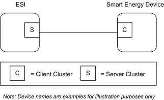
Please note the ESI is defined as the Server due to its role in acting as the proxy for upstream demand response/load control management systems and subsequent data stores.
10.3.1.1 Revision History ¶
The global ClusterRevision attribute value SHALL be the highest revision number in the table below.
| Rev | Description |
|---|---|
| 1 | mandatory global ClusterRevision attribute added |
| 2 | Updated from SE1.4 version; CCB 1291 1297 1447 1513 1880 2287 2964 2965 |
10.3.1.2 Classification ¶
| Hierarchy | Role | PICS Code | Primary Transaction |
|---|---|---|---|
| Base | Application | DRLC | Type 1 (client to server) |
10.3.1.3 Cluster Identifiers ¶
| Identifier | Name |
|---|---|
| 0x0701 | Demand Response and Load Control |
10.3.2 Server ¶
By default the ESI will be labeled as the Server side in the cluster descriptions, being able to initiate load control commands to other devices in the network.
10.3.2.1 Dependencies ¶
A server device shall be capable of storing at least two load control events.
Events carried using this cluster include a timestamp with the assumption that target devices maintain a realtime clock. Devices can acquire and synchronize their internal clocks with the ESI as described in sub-clause 3.12.
If a device does not support a real-time clock, it is assumed the device will ignore all values within the Time field except the “Start Now” value.
Additionally, for devices without a real-time clock, it is assumed those devices will utilize a method (i.e. ticks, countdowns, etc.) to approximate the correct duration period.
10.3.2.2 Attributes ¶
There are no attributes for the Demand Response and Load Control Cluster server.
10.3.2.3 Commands Generated ¶
The command IDs generated by the Demand Response and Load Control cluster server are listed in Table 10-45.
Table 10-45. Command IDs for the Demand Response and Load Control Server ¶
| Command Identifier | Description | M |
|---|---|---|
| 0x00 | Load Control Event | M |
| 0x01 | Cancel Load Control Event | M |
| 0x02 | Cancel All Load Control Events | M |
10.3.2.3.1 Load Control Event Command ¶
10.3.2.3.1.1 Payload Format ¶
The Load Control Event command payload shall be formatted as illustrated in Figure 10-39.
Figure 10-39. Format of the Load Control Event Command Payload ¶
| Octets | 4 | 2 | 1 | 4 | 2 | 1 | 1 |
|---|---|---|---|---|---|---|---|
| Data Type | uint32 | map16 | uint8 | UTC | uint16 | uint8 | uint8 |
| Field Name | Issuer Event ID (M) | Device Class (M) | Utility Enrollment Group (M) | Start Time (M) | Duration in Minutes (M) | Criticality Level (M) | Cooling Temperature Offset (O) |
| Octets | 1 | 2 | 2 | 1 | 1 | 1 |
|---|---|---|---|---|---|---|
| Data Type | uint8 | int16 | int16 | int8 | uint8 | map8 |
| Field Name | Heating Temperature Offset (O) | Cooling Temperature Set Point (O) | Heating Temperature Set Point (O) | Average Load Adjust- ment Percentage (O) | Duty Cy- cle (O) | Event Control (M) |
Note: M = Mandatory field, O = Optional field. An optional field SHALL define a value to indicate that it is to be ignored.145
10.3.2.3.1.1.1 Payload Details ¶
Issuer Event ID (mandatory): Unique identifier generated by the Energy provider. The value of this field allows matching of Event reports with a specific Demand Response and Load Control event. The expected value contained in this field shall be a unique number managed by upstream systems or a UTC based time stamp (UTC data type) identifying when the Load Control Event was issued.
In the case where two Load Control Events overlap, the newer event shall have a higher Issuer Event ID than the old event, and an event with a higher Issuer Event ID shall supersede one with a lower ID if the Device Class and/or Utility Enrollment Group overlap between the two events.146
145 CCB 2287 2964 2965 (see 2.3.4 & 2.4 for more information) 146 CCB 1291
Device Class (mandatory): Bit encoded field representing the Device Class to apply the current Load Control Event. Each bit, if set individually or in combination, indicates the class device(s) needing to participate in the event. (Note that the participating device may be different than the controlling device. For instance, a thermostat may act on behalf of an HVAC compressor or furnace and/or Strip Heat/Baseboard Heater and should take action on their behalf, as the thermostat itself is not subject to load shed but controls devices that are subject to load shed.) The encoding of this field is in Table 10-46.
Table 10-46. Device Class Field BitMap/Encoding ¶
| Bit | Description |
|---|---|
| 0 | HVAC Compressor or Furnace |
| 1 | Strip Heaters/Baseboard Heaters |
| 2 | Water Heater |
| 3 | Pool Pump/Spa/Jacuzzi |
| 4 | Smart Appliances |
| 5 | Irrigation Pump |
| 6 | Managed Commercial & Industrial (C&I) loads |
| 7 | Simple misc. (Residential On/Off) loads |
| 8 | Exterior Lighting |
| 9 | Interior Lighting |
| 10 | Electric Vehicle |
| 11 | Generation Systems |
Device manufacturers shall recognize the Device Class or set of Devices Classes that corresponds to its functionality. For example, a thermostat (PCT) may react when Bit 0 is set since it controls the HVAC and/or furnace. Another example is a device that acts like an EMS where it controls exterior lights, interior lights, and simple misc. load control devices. In this case the EMS would react when Bits 7, 8, or 9 are set individually or in combination.
If a 2nd DRLC event is received with a higher Event ID than the 1st and Device Classes overlap, the 2nd event shall supersede the first event.
Utility Enrollment Group (mandatory): The Utility Enrollment Group field can be used in conjunction with the Device Class bits. It provides a mechanism to direct Load Control Events to groups of Devices. Example, by assigning two different groups relating to either Demand Response programs or geographic areas, Load Control Events can be further directed for a sub-set of Device Classes (i.e. Device Class Bit 0 and Utility Enrollment Group #1 vs. Device Class Bit0 and Utility Enrollment Group #2). 0x00 addresses all groups, and values 0x01 to 0xFF address individual groups that match. Please refer to sub-clause 10.3.3.2.1 for further details.
If the Device Class and/or Utility Enrollment Group fields do not apply to your End Device, the Load Control Event command shall be ignored by either dropping the message and not replying at all or by sending back a Default Response message with a SUCCESS status code.
If a 2nd DRLC event is received with a higher Event ID than the 1st and Utility Enrollment Group fields overlap, the 2nd event shall supersede the first event.
Start Time (mandatory): UTC Timestamp representing when the event is scheduled to start. A start time of 0x00000000 is a special time denoting “now.” Where the Start Time is “now”, any subsequent re-transmission of the event should continue to use a Start Time of “now”, however the Duration in Minutes field shall be adjusted to take into account any event time that has already elapsed (Internally, a DRLC server should note the actual Start Time used in order to maintain an ordered list of DRLC events in its buffer).
Duration In Minutes (mandatory): Duration of this event in number of minutes. Maximum value is 1440 (one day).
When choosing a duration value, consideration should be given to the functionality and capabilities of the device(s) for which the event is destined (see description of Duty Cycle field for further details).
Criticality Level (mandatory): This field defines the level of criticality of this event. The action taken by load control devices for an event can be solely based on this value, or combination with other Load Control Event fields supported by this device. For example, additional fields such as Average Load Adjustment Percentage, Duty Cycle, Cooling Temperature Offset, Heating Temperature Offset, Cooling Temperature Set Point or Heating Temperature Set Point can be used in combination with the Criticality level. Criticality levels are listed in Table 10-47.
Table 10-47. Criticality Levels ¶
| Criticality Level | Level Description | Participation |
|---|---|---|
| 1 | Green | Voluntary |
| 2 | 1 | Voluntary |
| 3 | 2 | Voluntary |
| 4 | 3 | Voluntary |
| 5 | 4 | Voluntary |
| 6 | 5 | Voluntary |
| 7 | Emergency | Mandatory |
| 8 | Planned Outage | Mandatory |
| 9 | Service Disconnect | Mandatory |
| 0x0A to 0x0F | Utility Defined | Utility Defined |
The criticality level 0x0 and 0x10 to 0xFF are reserved for future profile changes and not used.
“Green” event, level 0x01, may be used to denote that the energy delivered uses an abnormal amount from non-“green” sources. Participation in this event is voluntary.
The criticality levels 0x02 through 0x06 (Levels 1 through 5) indicate progressively increasing levels of load reduction are being requested by the utility. Participation in these events is voluntary.
The criticality level 0x07 is used to indicate an “Emergency” event. Participation in this event is mandatory, as defined by the utility. The expected response to this event is termination of all non-essential energy use, as defined by the utility. Exceptions to participation in this event type must be managed by the utility.
The criticality level 0x08 is used to indicate a “Planned Outage” event. Participation in this event is mandatory, as defined by the utility. The expected response to this event is termination of delivery of all nonessential energy, as defined by the utility. Exceptions to participation in this event type must be managed by the utility.
The criticality level 0x09 is used to indicate a “Service Disconnect” event. Participation in this event is mandatory, as defined by the utility. The expected response to this event is termination of delivery of all nonessential energy, as defined by the utility. Exceptions to participation in this event type must be managed by the utility.
Levels 0x0A to 0x0F are available for Utility Defined criticality levels.
Cooling Temperature Offset (optional): Requested offset to apply to the normal cooling setpoint at the time of the start of the event in + 0.1 ºC.
Heating Temperature Offset (optional): Requested offset to apply to the normal heating setpoint at the time of the start of the event in + 0.1 ºC.
The Cooling and Heating Temperature Offsets represent a temperature change (Delta Temperature) that will be applied to both the associated heating and cooling set points. The temperature offsets (Delta Temperatures) will be calculated per the Local Temperature in the Thermostat. The calculated temperature will be interpreted as the number of degrees to be added to the cooling set point and subtracted from the heating set point. Sequential demand response events are not cumulative. The Offset shall be applied to the normal setpoint.
Each offset represents the temperature offset (Delta Temperature) in degrees Celsius, as follows: Delta Temperature Offset / 10 = delta temperature in degrees Celsius. Where 0.00°C <= temperature <= 25.4 ºC, corresponding to a Temperature in the range 0x00 to 0x0FE. The maximum resolution this format allowed is 0.1 ºC.
A DeltaTemperature of 0xFF indicates that the temperature offset is not used.
If a temperature offset is sent that causes the heating or cooling temperature set point to exceed the limit boundaries that are programmed into the thermostat, the thermostat should respond by setting the temperature at the limit.
Cooling Temperature Set Point (optional): Requested cooling set point in 0.01 degrees Celsius.
Heating Temperature Set Point (optional): Requested heating set point in 0.01 degrees Celsius.
Cooling and heating temperature set points will be defined and calculated per the LocalTemperature attribute in the Thermostat Cluster (see Chapter 6).
These fields represent the temperature in degrees Celsius, as follows:
Cooling Temperature Set Point / 100 = temperature in degrees Celsius
where -273.15°C <= temperature <= 327.67°C, corresponding to a Cooling and/or Heating Temperature Set Point in the range 0x954d to 0x7fff
The maximum resolution this format allows is 0.01°C.
A Cooling or Heating Temperature Set Point of 0x8000 indicates that the temperature set point is not used.
If a temperature is sent that exceeds the temperature limit boundaries that are programmed into the thermostat, the thermostat should respond by setting the temperature at the limit.
The thermostat shall not use a Cooling or Heating Temperature Set Point that causes the device to use more energy than the normal setting.
When both a Temperature Offset and a Temperature Set Point are provided, the thermostat may use either as defined by the device manufacturer. The thermostat should use the setting that provides the lowest energy consumption.
Average Load Adjustment Percentage (optional): Defines a maximum energy usage limit as a percentage of the client implementations specific average energy usage. The load adjustment percentage is added to 100% creating a percentage limit applied to the client implementations specific average energy usage. A - 10% load adjustment percentage will establish an energy usage limit equal to 90% of the client implementations specific average energy usage. Each load adjustment percentage is referenced to the client implementations specific average energy usage. There are no cumulative effects.
The range of this field is -100 to +100 with a resolution of 1 percent. A -100% value equals a total load shed. A 0% value will limit the energy usage to the client implementation’s specific average energy usage. A +100% value will limit the energy usage to double the client implementation’s specific average energy usage.
A value of 0x80 indicates the field is not used. All other values are reserved for future use.
Duty Cycle (optional): Defines the maximum On state duty cycle as a percentage of time. Example, if the value is 80, the device would be in an “on state” for 80% of the time for the duration of the event. Range of the value is 0 to 100. A value of 0xFF indicates the field is not used. All other values are reserved for future use.
Duty cycle control is a device specific issue and shall be managed by the device manufacturer. It is expected that the duty cycle of the device under control will span the shortest practical time period in accordance with the nature of the device under control and the intent of the request for demand reduction. For typical Device Classes, three minutes for each 10% of duty cycle is recommended. It is expected that the load “off state” will precede the “on state”.
To avoid physical damage, some devices may limit how rapidly they can be cycled between on and off states ("minimum on/off time"). If a Load Control Event duration is too short, or the combination of duration and duty cycle would require switching states too quickly, these devices may be unable to react as expected to the event. How a device reacts to an event that would violate the device's minimum on/off time is presently a vendor-specific decision. Operators issuing Load Control Events should be aware of the typical capabilities of classes of devices in their market, and specify their event duration and duty cycle parameters as appropriate.
Event Control (mandatory): Identifies additional control options for the event. The BitMap for this field is described in Table 10-48.
Table 10-48. Event Control Field BitMap ¶
| Bit | Description |
|---|---|
| 0 | 1= Randomize Start time, 0=Randomized Start not Applied |
| 1 | 1= Randomize Duration time, 0=Randomized Duration not Applied147 |
Notes:
The randomization attributes will be used in combination with these two bits to determine if the Event Start (and hence Stop) and/or Event Duration are to be randomized. By default devices will randomize the start but not duration of an event; the start and end of an event will be randomized by the same amount thus ensuring that events are of equal length for all customers148. Refer to sub-clause 10.3.3.2.2 and sub-clause 10.3.3.2.3 for the settings of these values.
When wanting to shed load quickly in an emergency, start randomization is typically not applied. Duration randomization may be applied in order to slowly add load back onto the network at the end of the event. In this emergency case, DR events will not be of equal length149.
10.3.2.3.1.1.2 When Generated ¶
This command is generated when the ESI wants to control one or more load control devices, usually as the result of an energy curtailment command from the Smart Energy network.
10.3.2.3.1.1.3 Responses to Load Control Event ¶
The server receives the cluster-specific commands detailed in sub-clause 10.3.3.3.1.
147 CCB 1513 148 CCB 1513 149 CCB 1513
10.3.2.3.2 Cancel Load Control Event Command ¶
10.3.2.3.2.1 Payload Format ¶
The Cancel Load Control Event command payload shall be formatted as illustrated in Figure 10-40.
Figure 10-40. Format of the Cancel Load Control Event Payload ¶
| Octets | 4 | 2 | 1 | 1 | 4 |
|---|---|---|---|---|---|
| Data Type | uint32 | map16 | uint8 | map8 | UTC |
| Field Name | Issuer Event ID | Device Class (M) | Utility Enrollment Group (M) | Cancel Control (M) | Effective Time (M) |
10.3.2.3.2.1.1 Payload Details ¶
Issuer Event ID (mandatory): Unique identifier generated by the Energy provider. The value of this field allows matching of Event reports with a specific Demand Response and Load Control event. It is expected the value contained in this field is a unique number managed by upstream systems or a UTC based time stamp (UTC data type) identifying when the Load Control Event was issued.
Device Class (mandatory): Bit encoded field representing the Device Class to apply the current Load Control Event. Each bit, if set individually or in combination, indicates the class device(s) needing to participate in the event. (Note that the participating device may be different than the controlling device. For instance, a thermostat may act on behalf of an HVAC compressor or furnace and/or Strip Heat/Baseboard Heater and should take action on their behalf, as the thermostat itself is not subject to load shed but controls devices that are subject to load shed.) The encoding of the Device Class is listed in Table 10-46. It is recommended that the value of this field matches that originally specified in the event being cancelled.
Utility Enrollment Group (mandatory): The Utility Enrollment Group field can be used in conjunction with the Device Class bits. It provides a mechanism to direct Load Control Events to groups of Devices. Example, by assigning two different groups relating to either Demand Response programs or geographic areas, Load Control Events can be further directed for a sub-set of Device Classes (i.e. Device Class Bit 0 and Utility Enrollment Group #1 vs. Device Class Bit0 and Utility Enrollment Group #2). 0x00 addresses all groups, and values 0x01 to 0xFF address individual groups that match. Please refer to sub-clause 10.3.2.3.2.1 for further details. It is recommended that the value of this field matches that originally specified in the event being cancelled.
If the Device Class and/or Utility Enrollment Group fields don't apply to your End Device, the Cancel Load Control Event command is ignored.
Device Class and/or Utility Group fields must be the same for a Cancel Load Control Event command as they were for the command to create the event. Should these fields be different there is no defined behavior for how DRLC servers should maintain their tables for replying to Get Scheduled Events commands.
Cancel Control (mandatory): The encoding of the Cancel Control is listed in Table 10-49.
Table 10-49. Cancel Control ¶
| Bit | Description |
|---|---|
| 0 | To be used when the Event is currently in process and acted upon as specified by the Effec- tive Time field of the Cancel Load Control Event command. A value of Zero (0) indicates that randomization is overridden and the event should be termi- nated immediately at the Effective Time. A value of One (1) indicates the event should end using randomization settings in the origi- nal event. |
Where the Cancel Control field indicates that randomization is to be used, the receiving device should first check whether Duration Time was to be randomized and, if so, termination of the event should be adjusted according to the value of the DurationRandomizationMinutes attribute.
If Duration Time was not to be randomized, but the Event Control field in the original command indicated that Start Randomization was to be used, termination of the event should be adjusted according to the value of the StartRandomizationMinutes attribute.
If the Event Control field in the original command specified that randomization was not to be used, an event shall be terminated immediately.150
Effective Time (mandatory): UTC Timestamp representing when the canceling of the event is scheduled to start. An effective time of 0x00000000 is a special time denoting “now.” If the device would send an event with an Effective Time of now, adjust the Duration In Minutes field to correspond to the remainder of the event.
Note: This field is deprecated; a Cancel Load Control command shall now take immediate effect. A value of 0x00000000 shall be used in all Cancel Load Control commands
10.3.2.3.2.1.2 When Generated ¶
This command is generated when the ESI wants to cancel previously scheduled control of one or more load control devices, usually as the result of an energy curtailment command from the Smart Energy network.
10.3.2.3.2.1.3 Responses to Cancel Load Control Event ¶
The server receives the cluster-specific commands detailed in sub-clause 10.3.3.3.1.
Note: If the Cancel Load Control Event command is received after the event has ended, the device shall reply using the “Report Event Status Command” with an Event Status of “Rejected -Invalid Cancel Command (Undefined Event)”.
10.3.2.3.3 Cancel All Load Control Events Command ¶
10.3.2.3.3.1 Payload Format ¶
The Cancel All Load Control Events command payload shall be formatted as illustrated in Table 10-50.
Table 10-50. Format of the Cancel All Load Control Events Command Payload ¶
| Octets | 1 |
|---|---|
| Data Type | map8 |
| Field Name | Cancel Control |
10.3.2.3.3.1.1 Payload Details ¶
Cancel Control: The encoding of the Cancel Control is listed in Table 10-51.
150 CCB 1513
Table 10-51. Cancel All Command Cancel Control Field ¶
| Bit | Description |
|---|---|
| 0 | To be used when the Event is currently in process and a cancel command is received. A value of Zero (0) indicates that randomization is overridden and the event should be ter- minated immediately. A value of One (1) indicates the event should end using randomization settings in the origi- nal event. |
Where the Cancel Control field indicates that randomization is to be used, the receiving device should first check whether Duration Time was to be randomized and, if so, termination of the event should be adjusted according to the value of the DurationRandomizationMinutes attribute.
If Duration Time was not to be randomized, but the Event Control field in the original command indicated that Start Randomization was to be used, termination of the event should be adjusted according to the value of the StartRandomizationMinutes attribute.
If the Event Control field in the original command specified that randomization was not to be used, an event shall be terminated immediately.151
10.3.2.3.3.2 When Generated ¶
This command is generated when the ESI wants to cancel all events for control device(s).
10.3.2.3.3.3 Responses to Cancel All Load Control Events ¶
The server receives the cluster-specific commands detailed in sub-clause 10.3.3.1. The Cancel All Load Control Events command is processed by the device as if individual Cancel Load Control Event commands were received for all of the currently stored events in the device. The device will respond with a “Report Event Status Command” for each individual load control event canceled.
10.3.2.4 Commands Received ¶
The server receives the cluster-specific commands detailed in sub-clause 10.3.3.
10.3.3 Client ¶
This section identifies the attributes and commands provided by Client devices.
10.3.3.1 Dependencies ¶
Devices receiving and acting upon Load Control Event commands must be capable of storing and supporting at least three unique instances of events. As a highly recommended recovery mechanism, when maximum storage of events has been reached and additional Load Control Events are received that are unique (not superseding currently stored events), devices should ignore additional Load Control Events and when storage becomes available, utilize the GetScheduledEvents command to retrieve any previously ignored events.
Events carried using this cluster include a timestamp with the assumption that target devices maintain a real time clock. Devices can acquire and synchronize their internal clocks with the ESI as described in the Time cluster sub-clause 3.12.
Devices MAY ‘drop’ events received before they have received and resolved time (‘dropping’ an event is defined as sending a default response with status code SUCCESS).
151 CCB 1513
If a device does not support a real time clock, it is assumed the device will ignore all values within the Time field except the “Start Now” value.
Additionally, for devices without a real time clock it is assumed those devices will utilize a method (i.e. ticks, countdowns, etc.) to approximate the correct duration period.
10.3.3.2 Client Cluster Attributes ¶
Table 10-52. Demand Response Client Cluster Attributes ¶
| Id | Name | Type | Range | Acc | Default | M |
|---|---|---|---|---|---|---|
| 0x0000 | UtilityEnrollmentGroup | uint8 | 0x00 to 0xFF | RW | 0x00 | M |
| 0x0001 | StartRandomization Minutes152 | uint8 | 0x00 to 0x3C | RW | 0x1E | M |
| 0x0002 | DurationRandomization Minutes153 | uint8 | 0x00 to 0x3C | RW | 0x00154 | M |
| 0x0003 | DeviceClassValue | uint16 | 0x0000 to 0xFFFF | RW | - | M |
10.3.3.2.1 UtilityEnrollmentGroup Attribute ¶
The UtilityEnrollmentGroup provides a method for utilities to assign devices to groups. In other words, Utility defined groups provide a mechanism to arbitrarily group together different sets of load control or demand response devices for use as part of a larger utility program. The definition of the groups, implied usage, and their assigned values are dictated by the Utilities and subsequently used at their discretion, therefore outside the scope of this specification. The valid range for this attribute is 0x00 to 0xFF, where 0x00 (the default value) indicates the device is a member of all groups and values 0x01 to 0xFF indicates that the device is member of that specified group.
10.3.3.2.2 StartRandomizationMinutes Attribute ¶
The StartRandomizationMinutes155 represents the maximum number of minutes to be used when randomizing the start of an event. As an example, if StartRandomizationMinutes156 is set for 3 minutes, the device could randomly select 2 minutes (but never greater than the 3 minutes) for this event, causing the start of the event to be delayed by two minutes. The valid range for this attribute is 0x00 to 0x3C where 0x00 indicates start event randomization is not performed. When Duration Randomization is not applied (as defined by the Event Control field), an event will be the same length for all customers; any randomization applied to the start of an event will therefore be reflected on the end of the event157.
152 CCB 1880 153 CCB 1513 1880 154 CCB 1513 155 CCB 1880 156 CCB 1880 157 CCB 1513
Duration158RandomizationMinutes Attribute
10.3.3.2.3 ¶
The DurationRandomizationMinutes159 attribute represents the maximum number of minutes to be used when randomizing the duration of an event. As an example, if DurationRandomizationMinutes160 is set for 3 minutes, the device could randomly select one minute (but never greater than 3 minutes) for this event, causing the duration of the event to be extended by one minute. The valid range for this attribute is 0x00 to 0x3C where 0x00 (the default value) indicates event duration randomization is not performed. When Duration Randomization is enabled, DR events will NOT be of equal length for all customers161.
When an event’s Event Control field indicates that both Start and Duration randomization are to be used, the start of the event will be delayed by the chosen Start Randomization period, then the duration of the event extended the chosen Duration Randomization period. The end of the event will be delayed by the sum of the 2 chosen randomization periods. Note that this would not be standard practice.162
10.3.3.2.4 DeviceClassValue Attribute ¶
The DeviceClassValue attribute identifies which bits the device will match in the Device Class fields. Please refer to Table 10-46 for further details. Although the attribute has a RW access property, the device is permitted to refuse to change the DeviceClass by setting the status field of the corresponding write attribute status record to NOT_AUTHORIZED.
Although, for backwards compatibility, the Type cannot be changed, this 16-bit integer should be treated as if it were a 16-bit bitmap.
Device Class and/or Utility Enrollment Group fields are to be used as filters for deciding to accept or ignore a Load Control Event or a Cancel Load Control Event command. There is no requirement for a device to store or remember the Device Class and/or Utility Enrollment Group once the decision to accept the event has been made. A consequence of this is that devices that accept multiple device classes may have an event created for one device class superseded by an event created for another device class.
In-Home Displays should report the device classes that they are interested in. An IHD that wishes to display all possible Load Control Events, even for classes not yet defined, should indicate a device class of 0xFFFF; this will allow DRLC servers to optimize the number of DRLC events they unicast, such that they are only sent to those devices that are interested in them.
10.3.3.3 Commands Generated ¶
The command IDs generated by the Demand Response and Load Control client cluster are listed in Table 10-53.
Table 10-53. Generated Command IDs for the Demand Response and Load Control Client ¶
| Command Identifier Field Value | Description | M |
|---|---|---|
| 0x00 | Report Event Status | M |
| 0x01 | Get Scheduled Events | M |
158 CCB 1513 159 CCB 1513 160 CCB 1513 1880 161 CCB 1513 162 CCB 1513
10.3.3.3.1 Report Event Status Command ¶
10.3.3.3.1.1 Payload Format ¶
The Report Event Status command payload shall be formatted as illustrated in Figure 10-41.
Figure 10-41. Format of the Report Event Status Command Payload ¶
| Octets | 4 | 1 | 4 | 1 | 2 | 2 |
|---|---|---|---|---|---|---|
| Data Type | uint32 | uint8 | UTC | uint8 | uint16 | uint16 |
| Field Name | Issuer Event ID (M) | Event Sta- tus (M) | Event Status Time (M) | Criticality Level Applied (M) | Cooling Temperature Set Point Applied (O) | Heating Temperature Set Point Applied (O) |
| Octets | 1 | 1 | 1 | 1 | 42 |
|---|---|---|---|---|---|
| Data Type | int8 | uint8 | map8 | uint8 | opaque |
| Field Name | Average Load Adjustment Percentage Ap- plied (O) | Duty Cycle Applied (O) | Event Control (M) | Signature Type (M) | Signature (O) |
10.3.3.3.1.1.1 Payload Details ¶
Issuer Event ID (mandatory): Unique identifier generated by the Energy provider. The value of this field allows matching of Event reports with a specific Demand Response and Load Control event. It is expected the value contained in this field is a unique number managed by upstream systems or a UTC based time stamp (UTC data type) identifying when the Load Control Event was issued.
Event Status (mandatory): Table 10-54 lists the valid values returned in the Event Status field.
Table 10-54. Event Status Field Values ¶
| Value | Description |
|---|---|
| 0x01 | Load Control Event command received |
| 0x02 | Event started |
| 0x03 | Event completed |
| 0x04 | User has chosen to “Opt-Out”, user will not participate in this event |
| 0x05 | User has chosen to “Opt-In”, user will participate in this event |
| 0x06 | The event has been cancelled |
| 0x07 | The event has been superseded |
| 0x08 | Event partially completed with User “Opt-Out” |
| 0x09 | Event partially completed due to User “Opt-In” |
| 0x0A | Event completed, no User participation (Previous “Opt-Out”) |
| 0xF8 | Rejected -Invalid Cancel Command (Default) |
| 0xF9 | Rejected -Invalid Cancel Command (Invalid Effective Time) |
| 0xFB | Rejected -Event was received after it had expired (Current Time > Start Time + Duration) |
| 0xFD | Rejected -Invalid Cancel Command (Undefined Event) |
| 0xFE | Load Control Event command Rejected |
Should a device issue one or more “OptOut” or “OptIn” RES commands during an event that is eventually cancelled, the event shall be recorded as a cancelled event (Status = 0x06) at its effective time.
Should a device issue one or more “OptOut” or “OptIn” RES commands during an event that is not cancelled, the event shall be recorded as partially completed based on the last RES command sent (Status = 0x08 or 0x09).
When a device returns a status of 0xFD (Rejected -Invalid Cancel Command (Undefined Event)), all optional fields should report their “Ignore” values.
When a device receives a duplicate RES command, it should ignore the duplicate commands. Please note: As a recommended best practice, ESI applications should provide a mechanism to assist in filtering duplicate messages received on the WAN.
Event Status Time (mandatory): UTC Timestamp representing when the event status occurred. This field shall not use the value of 0x00000000.
Criticality Level Applied (mandatory): Criticality Level value applied by the device, see the corresponding field in the Load Control Event command for more information.
Cooling Temperature Set Point Applied (optional): Cooling Temperature Set Point value applied by the device, see the corresponding field in the Load Control Event command for more information. The value 0x8000 means that this field has not been used by the end device.
Heating Temperature Set Point Applied (optional): Heating Temperature Set Point value applied by the device, see the corresponding field in the Load Control Event command for more information. The value 0x8000 means that this field has not been used by the end device.
Average Load Adjustment Percentage Applied (optional): Average Load Adjustment Percentage value applied by the device, see the corresponding field in the Load Control Event command for more information. The value 0x80 means that this field has not been used by the end device.
Duty Cycle Applied (optional): Defines the maximum On state duty cycle applied by the device. The value 0xFF means that this field has not been used by the end device. Refer to sub-clause 10.3.2.3.1.1.1.
Event Control (mandatory): Identifies additional control options for the event. Refer to sub-clause 10.3.2.3.1.1.1.
Signature Type (mandatory): An 8-bit Unsigned integer enumerating the type of algorithm used to create the Signature. The enumerated values are shown in Table 10-55:
Table 10-55. Enumerated Values of Signature Types ¶
| Enumerated Value | Signature Type |
|---|---|
| 0x00 | No Signature |
| 0x01 | ECDSA |
If the signature field is not used, the signature type shall be set to 0x00, which will be used to indicate “no signature.” The signature field shall be filled with (48) 0xFF values.
Signature (optional ): A non-repudiation signature created by using the Matyas-Meyer-Oseas hash function (specified in Annex B.6 in [Z1]) used in conjunction with ECDSA. The signature creation process will occur in two steps:
Pass the first ten fields, which includes all fields up to the Signature field, of the Report Event Status command (listed in Figure 10-41) through ECDSA using the device's ECC Private Key, generating the signature (r,s).
Note: ECDSA internally uses the MMO hash function in place of the internal SHA-1 hash function.
Concatenate ECDSA signature components (r,s) and place into the Signature field within the Report Event Status command.
Note: the lengths of r and s are implicit, based on the curve used. Verifying the signature will require breaking the signature field back into the discrete components r and s, based on the length.
10.3.3.3.1.2 When Generated ¶
This command is generated when the client device detects a change of state for an active Load Control event. (The transmission of this command should be delayed after a random delay between 0 and 5 seconds, to avoid a potential storm of packets.)
10.3.3.3.2 Get Scheduled Events Command ¶
This command is used to request that Load Control Events are re-issued to the requesting device. When received by the Server, matching Load Control Event commands (see sub-clause 10.3.2.3.1) shall be sent covering active and scheduled Load Control Events. Events shall be sorted by Start Time and sent with earliest Start Time first. Events with the same Start Time shall be further sorted by Issuer Event ID and sent with least Issuer Event ID first163.
10.3.3.3.2.1 Payload Format ¶
The Get Scheduled Events command payload shall be formatted as illustrated in Figure 10-42.
163 CCB 1297
Figure 10-42. Format of the Get Scheduled Events Command Payload ¶
| Octets | 4 | 1 | 0/4a |
|---|---|---|---|
| Data Type | UTC | uint8 | uint32 |
| Field Name | Start Time (M) | Number of Events (M) | Issuer Event ID (O) |
a. CCB 1297
Start Time (mandatory): UTC Timestamp representing the minimum Start Time of events that shall be matched and sent by the Server. A Start Time of 0x00000000 has no special meaning164.
Number of Events (mandatory): Represents the maximum number of events to be sent. A value of 0 indicates no maximum limit165. Example: Number of Events = 1 would return the first event with a Start Time greater than or equal to the value of Start Time field in the Get Scheduled Events command166.
Issuer Event ID (optional): A value of 0xFFFFFFFF indicates this field will not be used. Represents the minimum Issuer Event ID of events to be matched and sent by the server with the same Start Time as the Get Scheduled Events command. Events starting after the specified Start Time are not filtered by this field and shall be matched and sent as normal.167
Note: While the Issuer Event ID field is optional there are cases where support is required for correct operation. For example, a client using a non-zero Number of Events shall use Issuer Event ID when there may be more events with the same Start Time than it can retrieve in a single request. Similarly a server storing multiple events with the same Start Time shall support Issuer Event ID to allow all clients reliable access.168
10.3.3.3.2.2 When Generated ¶
This command is generated when the client device wishes to verify the available Load Control Events. It may also be generated after a loss of power, on reset, joining to a network, or any other case where the client device needs to recover currently active or scheduled Load Control Events169.
A Default Response with status NOT_FOUND shall be returned when there are no events available.
10.3.3.4 Commands Received ¶
The client receives the cluster-specific commands detailed in sub-clause 10.3.2.
10.3.3.5 Attribute Reporting ¶
Attribute reporting is not expected to be used for this cluster. The Client side attributes are not expected to be changed by the Client, only used during Client operations.
10.3.4 Application Guidelines ¶
The criticality level is sent by the utility to the load control device to indicate how much load reduction is requested. The utility is not required to use all of the criticality levels that are described in this specification. A load control device is not required to provide a unique response to each criticality level that it may receive.
164 CCB 1297 165 CCB 1447 166 CCB 1297 167 CCB 1297 168 CCB 1297 169 CCB 1297
The Average Load Adjustment Percentage, temperature offsets, and temperature set points are used by load control devices and energy management systems on a “voluntary” or “optional” basis. These devices are not required to use the values that are provided by the utility. They are provided as a recommendation by the utility.
The load control device shall, in a manner that is consistent with this specification, accurately report event participation by way of the Report Event Status message.
The Average Load Adjustment Percentage is sent by the utility to the load control device to indicate how much load reduction is requested. The load control device may respond to this information in a unique manner as defined by the device manufacturer.
The Duty Cycle is sent by the utility to the load control device to indicate the maximum “On state” for a device. The control device may respond to this information in a unique manner as defined by the device manufacturer.
The cooling temperature offset may be sent by the utility to the load shed control to indicate how much indoor cooling temperature offset is requested. Response of a load control device to this information is not mandatory. The control device may respond to this information in a unique manner as defined by the device manufacturer.
The heating temperature offset may be sent by the utility to the load control device to indicate how much indoor heating temperature offset is requested. The control device may respond to this information in a unique manner as defined by the device manufacturer.
The cooling temperature may be sent by the utility to the load control device to indicate the indoor cooling temperature setting that is requested. The control device may respond to this information in a unique manner as defined by the device manufacturer.
The heating temperature may be sent by the utility to the load control device to indicate the indoor heating temperature setting that is requested. The control device may respond to this information in a unique manner as defined by the device manufacturer.
Note: The most recent Load Control Event supersedes any previous Load Control Event command for the set of Device Classes and groups for a given time. Nested events and overlapping events are not allowed. The current active event will be terminated if a new event is started with an overlapping Device Class and Utility Enrollment Group.
10.3.4.1 Load Control Rules, Server ¶
10.3.4.1.1 Load Control Server, Identifying Use of SetPoint and Offset Fields ¶
The use of the fields, Heating and Cooling Temperature Set Points and Heating and Cooling Temperature Offsets is optional. All fields in the payload must be populated. Non-use of these fields by the Server is indicated by using the following values: 0x8000 for Set Points and 0xFF for Offsets. When any of these four fields are indicated as optional, they shall be ignored by the client.
10.3.4.1.2 Load Control Server, Editing of Scheduled Events ¶
Editing of a scheduled demand response event is not allowed. Editing of an active demand response event is not allowed. Nested events and overlapping events are not allowed. The current active event will be terminated if a new event is started.
10.3.4.2 Load Control Rules, Client ¶
Start and Duration170 Randomization
10.3.4.2.1 ¶
When shedding loads (turning a load control device off), the load control device will optionally apply start time randomization based on the values specified in the Event Control Bits and the Client’s Start Randomization Minutes attribute. By default, devices will apply a random delay as specified by the default value for start randomization, but typically not apply duration171 randomization, as defined in the Demand Response Client Cluster Attributes table (Table 10-52); as a result, events will be equal length for all customers.
Normally, any randomization applied to the start of a load control event will be carried forward when ending the load control event. As an alternative, ending of a load control event may be varied independently of the start by randomizing the duration of an event via use of the DurationRandomizationMinutes attribute172.
10.3.4.2.2 Editing of DR Control Parameters ¶
In Load Control Device and energy management systems, editing of the demand response control parameters while participating in an active demand response event is not allowed.
10.3.4.2.3 Response to Price Events + Load Control Events ¶
The residential system's response to price driven events will be considered in addition to the residential system's response to demand response events. Demand response events which require that the residential system is turned off have priority over price driven events. Demand response events which require that the residential system go to a fixed setting point have priority over price driven events. In this case, the thermostat shall not use a Cooling or Heating Temperature Set Point that causes the device to use more energy than the price driven event setting.
10.3.4.2.4 Opt-Out Messages ¶
An event override message, “opt-out”, will be sent by the load control device or energy management system if the operator chooses not to participate in a demand response event by taking action to override the programmed demand reduction response. The override message will be sent at the start of the event. In the case where the event has been acknowledged and started, the override message will be sent when the override occurs.
10.3.4.2.5 Thermostat/HVAC Controls ¶
A residential HVAC system will be allowed to change mode, from off to Heat, off to Cool, Cool to Heat, or Heat to Cool, during a voluntary event which is currently active. The HVAC control must acknowledge the event, as if it was operating, in that mode, at the start of the event. The HVAC control must obey the event rules that would have been enforced if the system had been operating in that mode at the start of the active event.
An event override message, “opt-out”, will be sent by the load control device or energy management system if the operator chooses not to participate in a demand response event by taking action to override the programmed demand reduction response. The override message will be sent at the start of the event. In the case where the event has been acknowledged and started, the override message will be sent when the override occurs.
170 CCB 1513 171 CCB 1513 172 CCB 1513
10.3.4.2.6 Demand Response and Load Control Transaction Examples ¶
The example in Figure 10-43 depicts the transactions that would take place for two events, one that is successful and another that is overridden by the user.
Figure 10-43. Example of Both a Successful and an Overridden Load Curtailment Event ¶
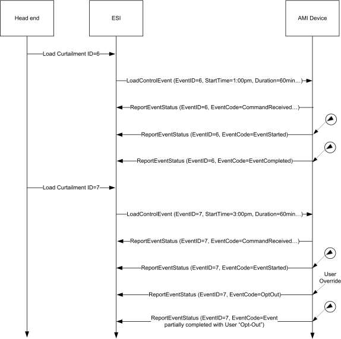
The example in Figure 10-44 depicts the transactions that would take place when an event is superseded by an event that is eventually cancelled.
Figure 10-44. Example of a Load Curtailment Superseded and Another Cancelled ¶
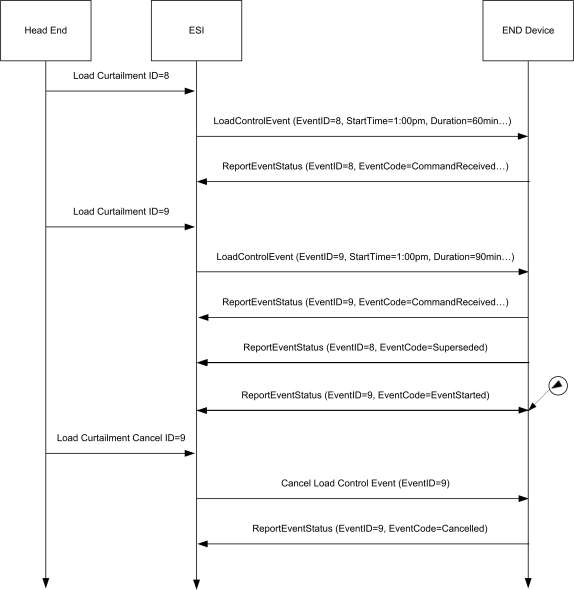
Refer to section 10.3.5 for more information regarding the management and behavior of overlapping events.
10.3.5 Rules and Guidelines for Overlapping Events ¶
This section describes multiple scenarios that Demand Response and Load Control devices may encounter over the Smart Energy network. The examples describe situations of overlapping events that are acceptable and where overlapping events that will be superseded due to conflicts.
10.3.5.1 Definitions ¶
Start Time – “Start Time” field contained within the Load Control Event packet indicating when the event should start. Please note, a “Start Time” value of 0x00000000 denotes “now” and the device should use its current time as the “Start Time.”
Duration – “Duration” field contained within the Load Control Event packet indicating how long the event should occur.
End Time – Time when Event completes as calculated by adding Duration to Start Time.
Scheduled Period – Represents the time between the Start Time and the End Time of the event.
Effective Start Time -Represents time at which a specific device starts a load control event based on the Start Time plus any randomization offsets.
Effective End Time – Represents time at which a specific device ends a load control event based on the Start Time plus Duration, plus any randomization offsets (from Start and/or Duration Randomization)173.
Effective Scheduled Period – Represents the time between the Effective Start Time and the Effective End Time.
Overlapping Event – Defined as an event where the Scheduled Period covers part or all of an existing, previously scheduled event.
Successive Events – Defined as two events where the scheduled End Time of the first event is equal to the Start Time of a subsequent scheduled event.
Nested Events – Defined as two events where the scheduled Start Time and End Time of the second event falls during the Scheduled Period of the first scheduled event and the second event is of shorter duration than the first event.
10.3.5.2 Rules and Guidelines ¶
The depicted behaviors and required application management decisions are driven from the following guidance and rule set:
- Upstream Demand Response/Load Control systems and/or the ESI shall prevent mismanaged scheduling of Overlapping Events or Nested Events. It is recognized Upstream Demand Response/Load Control systems and/or the ESI will need to react to changing conditions on the grid by sending Overlapping Events or Nested Events to supersede previous directives. But those systems must have the proper auditing and management rules to prevent a cascading set of error conditions propagated by improperly scheduled events.
- When needed, Upstream Demand Response/Load Control systems and/or the ESI may resolve any event scheduling conflicts by performing one of the following processes:
- Canceling individual events starting with the earliest scheduled event and re-issuing a new set of events.
- Canceling all scheduled events and re-issuing a new set of events.
- Sending Overlapping Events or Nested Events to supersede previous directives. It is recommended that process 2.c is used for most situations since it can allow a smoother change between two sets of directives, but no way does it negate the responsibilities identified in rule #1.
3. When an End Device receives an event with the End Time in the past (End Time < Current Time),
this event is ignored and a Report Event Status command is returned with the Event Status set to 0xFB (Rejected -Event was received after it had expired).
173 CCB 1513
4. When an End Device receives an event with a Start Time in the past and an End Time in the future
((Start Time < Current Time) AND (End Time > Current Time)), the event is processed immediately. The Effective Start Time is calculated using the Current Time as the Start Time. Original End Time is preserved.
5. Regardless of the state of an event (scheduled or executing), when an End Device detects an Over-
lapping Event condition the latest Overlapping Event will take precedence over the previous event. Depending on the state of the event (scheduled or executing), one of the following steps shall take place:
- If the previous event is scheduled and not executing, the End Device returns a Report Event Status command (referencing the previous event) with the Event Status set to 0x07 (the event has been superseded). After the Report Event Status command is successfully sent, the End Device can remove the previous event schedule.
- If the previous event is executing, the End Device shall change directly from its current state to the requested state at the Effective Start Time of the Overlapping Event (Note: Rule #4 effects Effective Start Time). The End Device returns a Report Event Status command (referencing the previous event) with the Event Status set to 0x07 (the event has been superseded).
6. Randomization shall not cause event conflicts or unmanaged gaps. To clarify:
- When event start randomization is requested, time periods between the Start Time of an event and the Effective Start Time, a device should either maintain its current state or apply changes which contribute to energy saving. Preference would be to maintain current state.
- When event start and/or duration174 randomization is used and the Effective End Time overlaps the Effective Start Time of a Successive Event, the Effective Start Time takes precedence. Events are not reported as superseded, End devices should report event status as it would a normal set of Successive Events.
- It is recommended devices apply the same Start and Duration175 Randomization values for con- secutive events to help prevent unexpected gaps between events.
- Devices shall not artificially create a gap between Successive Events.
7. It is permissible to have gaps when events are not Successive Events or Overlapping Events.
8. If multiple device classes are identified for an event, future events for individual device classes (or
a subset of the original event) that cause an Overlapping Event will supersede the original event strictly for that device class (or a subset of the original event). Note: Rule #5 applies to all Over-lapping Events.
10.3.5.3 Event Examples ¶
Smart Energy devices which act upon Demand Response and Load Control events shall use the following examples for understanding and managing overlapping and superseded events. Within those examples, references to multiple device classes will be used. Figure 10-45 depicts a representation of those devices in a Smart Energy network.
174 CCB 1513 175 CCB 1513
Figure 10-45. Smart Energy Device Class Reference Example ¶
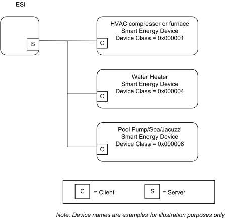
10.3.5.3.1 Correct Overlapping Events for Different Device Classes ¶
Figure 10-46 depicts a correct series of DR/LC events for device class of 0x000001 (reference for the ¶
BitMap definition) with an event scheduled for another device class during the same period.
Figure 10-46. Correctly Overlapping Events ¶
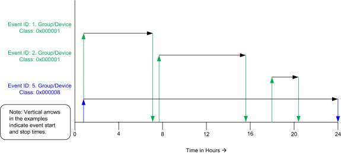
In Figure 10-46, Device Class 0x000001 receives a sequence of 3 unique DR/LC events to be scheduled and acted upon. During this same 24 hour period, Device Class 0x000008 receives one scheduled DR/LC event that spans across the same time period as the events scheduled for Device Class 0x0000001. Because both Device Classes are unique, there are no conflicts due to Overlapping Events.
10.3.5.3.2 Correct Superseded Event for a Device Class ¶
Figure 10-47 depicts a correct series of DR/LC events for device class of 0x000001 (reference for the ¶
BitMap definition) where an event is scheduled then later superseded.
Figure 10-47. Correct Superseding of Events ¶
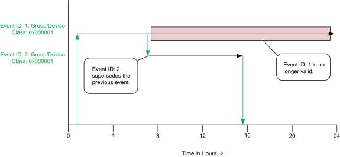
In Figure 10-47, Device Class 0x000001 receives DR/LC Event ID#1 setup for a 24 hour Scheduled Period, which later is superseded by DR/LC Event ID#2, invalidating the remainder of Event ID#1, which is cancelled.
10.3.5.3.3 Superseding Events for Subsets of Device Classes ¶
Figure 10-48 depicts a correct series of DR/LC events for device class of 0x000001 (reference for the ¶
BitMap definition) with an event scheduled for another device class during the same time period.
Figure 10-48. Superseded Event for a Subset of Device Classes ¶
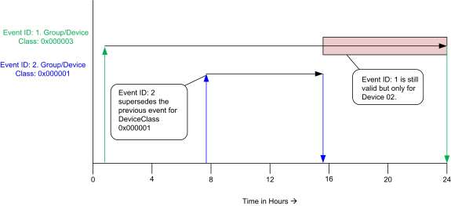
In Figure 10-48, Device Class 0x000003 receives DR/LC Event ID#1 setup for a 24 hour Scheduled Period, which is targeted for both Device Class 0x000002 and 0x000001 (OR’ed == 0x000003). In the example, Event ID#2 is issued only for Device Class 0x000001, invalidating the remainder of Event ID#1 for that device class. DR/LC Event ID#1 is still valid for Device Class 0x000002, which in the example should run to completion.
10.3.5.3.4 Ending Randomization Between Events ¶
Figure 10-49 depicts two standard events with start and/or duration randomization where the Effective End ¶
Time of the first event is overlapped by a second scheduled DR/LC event for device class of 0x000001 (reference for the BitMap definition)176.
Figure 10-49. Ending Randomization Between Events ¶
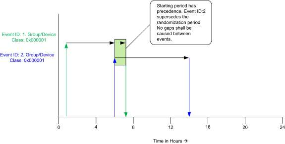
176 CCB 1513
In Figure 10-49, Device Class 0x000001 receives a DR/LC Event ID#1 with a start and/or duration177 randomization setting (please refer to sub-clause 10.3.2.3.1.1.1 for more detail). A second DR/LC (Event ID#2) is issued with a starting time which matches the ending time of DR/LC Event ID#1. In this situation, the Start Time of Event ID#2 has precedence. Event ID#1 is not reported as superseded.
10.3.5.3.5 Start Randomization Between Events ¶
Figure 10-50 depicts an Effective Start Time that overlaps a previously scheduled DR/LC event for device ¶
class of 0x000001 (reference for the BitMap definition).
Figure 10-50. Start Randomization Between Events ¶
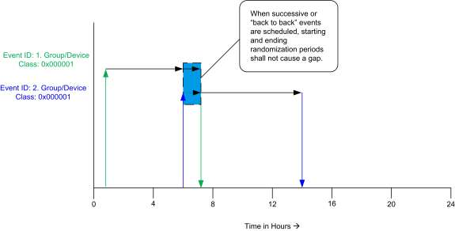
In Figure 10-50, Device Class 0x000001 receives a DR/LC Event ID#1 with a duration178 randomization setting (please refer to sub-clause 10.3.2.3.1.1.1 for more detail). Effective End Time of Event ID#1 is not known. A second DR/LC (Event ID#2) is issued with a starting randomization setting, which has an Effective Start Time that could overlap or start after the Effective End Time of DR/LC Event ID#1. In this situation, the Effective Start Time of Event ID#2 has precedence but the DR/LC device must also prevent any artificial gaps caused by the Effective Start Time of Event ID#2 and Effective End Time of Event ID#1.
10.3.5.3.6 Acceptable Gaps Caused by Start and Stop Randomization of Events ¶
Figure 10-51 depicts an acceptable gap between two scheduled DR/LC events for device class of 0x000001 ¶
(reference for the BitMap definition) using both starting and ending randomization with both events.
177 CCB 1513 178 CCB 1513
Figure 10-51. Acceptable Gaps with Start and Stop Randomization ¶
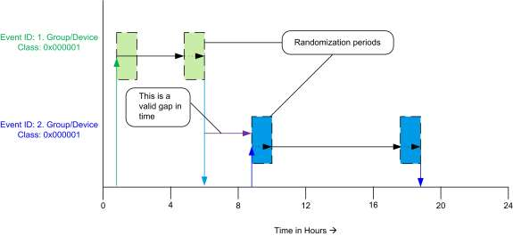
In Figure 10-51, Device Class 0x000001 receives a DR/LC Event ID#1 with both a starting and ending randomization setting. (Please refer to sub-clause 10.3.2.3.1.1.1 for more detail). A second DR/LC Event ID#2 is also issued with both a starting and ending randomized setting. The primary configuration to note in this example is the Effective End Time of DR/LC Event ID#1 completes well in advance of the Effective Start Time of DR/LC Event ID#2. In this scenario, regardless of randomization, a gap is naturally created by the scheduling of the events and is acceptable.
10.4 Metering ¶
10.4.1 Overview ¶
Please see Chapter 2 for a general cluster overview defining cluster architecture, revision, classification, identification, etc.
The Metering Cluster provides a mechanism to retrieve usage information from Electric, Gas, Water, and
potentially Thermal metering devices. These devices can operate on either battery or mains power, and can have a wide variety of sophistication. The Metering Cluster is designed to provide flexibility while limiting
capabilities to a set number of metered information types. More advanced forms or data sets from metering devices will be supported in the Smart Energy Tunneling Cluster, which will be defined in sub-clause 10.6.
The following figures identify three configurations as examples utilizing the Metering Cluster.
In Figure 10-52, the metering device is the source of information provided via the Metering Cluster Server.
Figure 10-52. Standalone ESI Model with Mains Powered Metering Device ¶
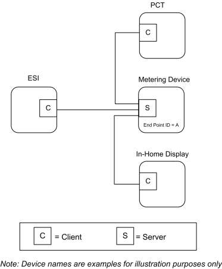
In the example shown in Figure 10-53, the metering device is running on battery power and its duty cycle for providing information is unknown. It’s expected the ESI will act like a mirrored image or a mailbox
(Client) for the metering device data, allowing other Smart Energy devices to gain access to the metering device’s data (provided via an image of its Metering Cluster).
Figure 10-53. Standalone ESI Model with Battery Powered Metering Device ¶
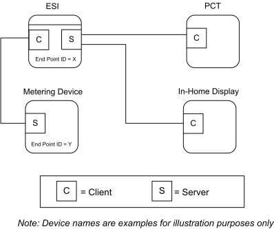
In the example shown in Figure 10-54, much like the previous example in Figure 10-53, the external metering device is running on battery power and its duty cycle for providing information is unknown. It’s expected the ESI will act like a Client side mailbox for the external metering device data, allowing other Smart Energy devices to gain access to the metering device’s data (provided via an image of its Metering Cluster). Since the ESI can also contain an integrated metering device where its information is also conveyed through
the Metering Cluster, each device (external metering device mailbox and integrated meter) will be available via independent EndPoint IDs. Other Smart Energy devices that need to access the information must understand the ESI cluster support by performing service discoveries. It can also identify if an Endpoint ID is a mailbox/ mirror of a metering device by reading the MeteringDeviceType attribute (refer to sub-clause 10.4.2.2.4.7).
Figure 10-54. ESI Model with Integrated Metering Device ¶
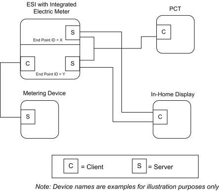
In the above examples (Figure 10-53 and Figure 10-54), it is expected the ESI would perform Attribute
Reads (or configure Attribute Reporting) and use the GetProfile command to receive the latest information whenever the Metering Device (EndPoint Z) wakes up. When received, the ESI will update its mailbox
(EndPoint ID Y in Figure 10-53 and Figure 10-54) to reflect the latest data available. A metering device using the mirror is also allowed (and recommended) to push metering data updates to the ESI via Report Attribute commands as described in sub-clause 10.4.4.4.
Other Smart Energy devices can access EndPoint Y in the ESI to receive the latest information just as they
would to access information in the ESI’s integrated Electric meter (as in Figure 10-54, EndPoint X) and other Metering devices (as in Figure 10-52, EndPoint A).
10.4.1.1 Revision History ¶
The global ClusterRevision attribute value SHALL be the highest revision number in the table below.
| Rev | Description |
|---|---|
| 1 | mandatory global ClusterRevision attribute added |
| 2 | Updated from SE1.4 version; CCB 1655 1679 1886 2010 2023 2183 2199 2286 2477 |
10.4.1.2 Classification ¶
| Hierarchy | Role | PICS Code | Primary Transaction |
|---|---|---|---|
| Base | Application | SEMT | Type 1 (client to server) |
10.4.1.3 Cluster Identifiers ¶
| Identifier | Name |
|---|---|
| 0x0702 | Metering (Smart Energy) |
10.4.2 Server ¶
10.4.2.1 Dependencies ¶
Subscribed reporting of Metering attributes.
10.4.2.2 Attributes ¶
For convenience, the attributes defined in this specification are arranged into sets of related attributes; each set can contain up to 256 attributes. Attribute identifiers are encoded such that the most significant octet specifies the attribute set and the least significant octet specifies the attribute within the set. The currently defined attribute sets are listed in Table 10-56.
Note: Certain attributes within this cluster are provisionary and not certifiable. Refer to the individual attribute sets for details of the relevant attributes.
Table 10-56. Metering Cluster Server Attribute Sets ¶
| Attribute Set Identifier | Description |
|---|---|
| 0x00 | Reading Information Set |
| 0x01 | TOU Information Set |
| 0x02 | Meter Status |
| 0x03 | Formatting |
| 0x04 | Historical Consumption |
| 0x05 | Load Profile Configuration |
| 0x06 | Supply Limit |
| 0x07 | Block Information (Delivered) |
| 0x08 | Alarms |
| 0x09 | Block Information (Received) |
| 0x0A | Meter Billing Attribute Set |
| 0x0B | Supply Control Attribute Set |
| 0x0C | Alternative Historical Consumption |
10.4.2.2.1 Reading Information Set ¶
The set of attributes shown in Table 10-57 provides a remote access to the reading of the Electric, Gas, or Water metering device. A reading must support at least one register which is the actual total summation of the delivered quantity (kWh, m³, ft³, ccf, US gl).
Please note: In the following attributes, the term “Delivered” refers to the quantity of Energy, Gas, or Water that was delivered to the customer from the utility. Likewise, the term “Received” refers to the quantity of Energy, Gas, or Water that was received by the utility from the customer.
Note: Metering Cluster Reading Attribute 0x12 in this revision of this specification is provisionary and not certifiable. This feature set may change before reaching certifiable status in a future revision of this specification.
Table 10-57. Reading Information Attribute Set ¶
| Id | Name | Type | Range | Acc | Def | M |
|---|---|---|---|---|---|---|
| 0x0000 | CurrentSummationDelivered | uint48 | 0x000000000000 to 0xFFFFFFFFFFFF | R | - | M |
| 0x0001 | CurrentSummationReceived | uint48 | 0x000000000000 to 0xFFFFFFFFFFFF | R | - | O |
| 0x0002 | CurrentMaxDemandDelivered | uint48 | 0x000000000000 to 0xFFFFFFFFFFFF | R | - | O |
| 0x0003 | CurrentMaxDemandReceived | uint48 | 0x000000000000 to 0xFFFFFFFFFFFF | R | - | O |
| 0x0004 | DFTSummation | uint48 | 0x000000000000 to 0xFFFFFFFFFFFF | R | - | O |
| 0x0005 | DailyFreezeTime | uint16 | 0x0000 to 0x173B | R | 0x0000 | O |
| 0x0006 | PowerFactor | int8 | -100 to +100 | R | 0x00 | O |
| 0x0007 | ReadingSnapShotTime | UTC | R | - | O | |
| 0x0008 | CurrentMaxDemandDeliveredTime | UTC | R | - | O | |
| 0x0009 | CurrentMaxDemandReceivedTime | UTC | R | - | O | |
| 0x000A | DefaultUpdatePeriod | uint8 | 0x00 to 0xFF | R | 0x1E | O |
| 0x000B | FastPollUpdatePeriod | uint8 | 0x00 to 0xFF | R | 0x05 | O |
| 0x000C | CurrentBlockPeriodConsumptionDelivered | uint48 | 0x000000000000 to 0xFFFFFFFFFFFF | R | - | O |
| 0x000D | DailyConsumptionTarget | uint24 | 0x000000 to 0xFFFFFF | R | - | O |
| 0x000E | CurrentBlock | enum8 | 0x00 to 0x10 | R | - | O |
| 0x000F | ProfileIntervalPeriod | enum8 | 0x00 to 0xFF | R | - | O |
| Id | Name | Type | Range | Acc | Def | M |
|---|---|---|---|---|---|---|
| 0x0010 | Deprecated179 | |||||
| 0x0011 | PresetReadingTime | uint16 | 0x0000 to 0x173B | R | 0x0000 | O |
| 0x0012 | SummationDeliveredPerReport180 | uint16 | 0x0000 to 0xFFFF | R | - | O |
| 0x0013 | FlowRestriction | uint8 | 0x00 to 0xFF | R | - | O |
| 0x0014 | Supply Status | enum8 | 0x00 to 0xFF | R | - | O |
| 0x0015 | CurrentInletEnergyCarrierSummation | uint48 | 0x000000000000 to 0xFFFFFFFFFFFF | R | - | O181 |
| 0x0016 | CurrentOutletEnergyCarrierSummation | uint48 | 0x000000000000 to 0xFFFFFFFFFFFF | R | - | O |
| 0x0017 | InletTemperature | int24 | -8,388,607 to 8,388,607 | R | - | O182 |
| 0x0018 | OutletTemperature | int24 | -8,388,607 to 8,388,607 | R | - | O183 |
| 0x0019 | ControlTemperature | int24 | -8,388,607 to 8,388,607 | R | - | O |
| 0x001A | CurrentInletEnergyCarrierDemand | int24 | -8,388,607 to 8,388,607 | R | - | O |
| 0x001B | CurrentOutletEnergyCarrierDemand | int24 | -8,388,607 to 8,388,607 | R | - | O |
| 0x001C | PreviousBlockPeriodConsumptionDelivered | uint48 | 0x000000000000 to 0xFFFFFFFFFFFF | R | - | O |
| 0x001D | CurrentBlockPeriod ConsumptionReceived | uint48 | 0x000000000000 to 0xFFFFFFFFFFFF | R | - | O |
| 0x001E | CurrentBlockReceived | enum8 | 0x00 – 0xFF | R | - | O |
| 0x001F | DFTSummation Received | uint48 | 0x000000000000 to 0xFFFFFFFFFFFF | R | - | O |
| 0x0020 | ActiveRegisterTier Delivered | enum8 | 0 - 48 | R | - | O |
179 CCB 1886 180 CCB 1655 181 CCB 1999 182 CCB 1999 183 CCB 1999
| Id | Name | Type | Range | Acc | Def | M |
|---|---|---|---|---|---|---|
| 0x0021 | ActiveRegisterTier Received | enum8 | 0 - 48 | R | - | O |
| 0x0022 | LastBlockSwitchTime | UTC | R | - | O |
10.4.2.2.1.1 CurrentSummationDelivered Attribute ¶
CurrentSummationDelivered represents the most recent summed value of Energy, Gas, or Water delivered and consumed in the premises. CurrentSummationDelivered is mandatory and must be provided as part of the minimum data set to be provided by the metering device. CurrentSummationDelivered is updated continuously as new measurements are made.
10.4.2.2.1.2 CurrentSummationReceived Attribute ¶
CurrentSummationReceived represents the most recent summed value of Energy, Gas, or Water generated and delivered from the premises. If optionally provided, CurrentSummationReceived is updated continuously as new measurements are made.
10.4.2.2.1.3 CurrentMaxDemandDelivered Attribute ¶
CurrentMaxDemandDelivered represents the maximum demand or rate of delivered value of Energy, Gas, or Water being utilized at the premises. If optionally provided, CurrentMaxDemandDelivered is updated continuously as new measurements are made.
10.4.2.2.1.4 CurrentMaxDemandReceived Attribute ¶
CurrentMaxDemandReceived represents the maximum demand or rate of received value of Energy, Gas, or Water being utilized by the utility. If optionally provided, CurrentMaxDemandReceived is updated continuously as new measurements are made.
10.4.2.2.1.5 DFTSummation Attribute ¶
DFTSummation represents a snapshot of attribute CurrentSummationDelivered captured at the time indicated by attribute DailyFreezeTime. If optionally provided, DFTSummation is updated once every 24 hours and captured at the time set in sub-clause 10.4.2.2.1.6.
10.4.2.2.1.6 DailyFreezeTime Attribute ¶
DailyFreezeTime represents the time of day when DFTSummation is captured. DailyFreezeTime is an unsigned 16-bit value representing the hour and minutes for DFT. The byte usages are:
Bits 0 to 7: Range of 0 to 0x3B representing the number of minutes past the top of the hour.
Bits 8 to 15: Range of 0 to 0x17 representing the hour of the day (in 24-hour format). Note that midnight shall be represented as 00:00 only.
10.4.2.2.1.7 PowerFactor Attribute ¶
PowerFactor contains the Average Power Factor ratio in 1/100ths. Valid values are 0 to 99.
10.4.2.2.1.8 ReadingSnapShotTime Attribute ¶
The ReadingSnapShotTime attribute represents the last time all of the CurrentSummationDelivered, CurrentSummationReceived, CurrentMaxDemandDelivered, and CurrentMaxDemandReceived attributes that are supported by the device were updated.
10.4.2.2.1.9 CurrentMaxDemandDeliveredTime Attribute ¶
The CurrentMaxDemandDeliveredTime attribute represents the time when CurrentMaxDemandDelivered reading was captured.
10.4.2.2.1.10 CurrentMaxDemandReceivedTime Attribute ¶
The CurrentMaxDemandReceivedTime attribute represents the time when CurrentMaxDemandReceived reading was captured.
10.4.2.2.1.11 DefaultUpdatePeriod Attribute ¶
The DefaultUpdatePeriod attribute represents the interval (seconds) at which the InstantaneousDemand attribute is updated when not in fast poll mode. InstantaneousDemand may be continuously updated as new measurements are acquired, but at a minimum InstantaneousDemand must be updated at the DefaultUpdate- Period. The DefaultUpdatePeriod may apply to other attributes as defined by the device manufacturer.
10.4.2.2.1.12 FastPollUpdatePeriod Attribute ¶
The FastPollUpdatePeriod attribute represents the interval (seconds) at which the InstantaneousDemand attribute is updated when in fast poll mode. InstantaneousDemand may be continuously updated as new measurements are acquired, but at a minimum, InstantaneousDemand must be updated at the FastPollUpdatePeriod. The FastPollUpdatePeriod may apply to other attributes as defined by the device manufacturer.
10.4.2.2.1.13 CurrentBlockPeriodConsumptionDelivered Attribute ¶
The CurrentBlockPeriodConsumptionDelivered attribute represents the most recent summed value of Energy, Gas or Water delivered and consumed in the premises during the Block Tariff Period.
The CurrentBlockPeriodConsumptionDelivered is reset at the start of each Block Tariff Period.
10.4.2.2.1.14 DailyConsumptionTarget Attribute ¶
The DailyConsumptionTarget attribute is a daily target consumption amount that can be displayed to the consumer on a HAN device, with the intent that it can be used to compare to actual daily consumption (e.g. compare to the CurrentDayConsumptionDelivered).
This may be sent from the utility to the ESI, or it may be derived. Although intended to be based on Block Thresholds, it can be used for other targets not related to blocks. The formatting will be based on the HistoricalConsumptionFormatting attribute.
Example: If based on a Block Threshold, the DailyConsumptionTarget could be calculated based on the number of days specified in the Block Tariff Period and a given Block Threshold as follows: DailyConsumptionTarget = BlockNThreshold / ((BlockPeriodDuration /60) / 24). Example: If the target is based on a Block1Threshold of 675kWh and where 43200 BlockThresholdPeriod is the number of minutes in the billing period (30 days), the ConsumptionDailyTarget would be 675 / ((43200 / 60) / 24) = 22.5 kWh per day.
10.4.2.2.1.15 CurrentBlock Attribute ¶
When Block Tariffs are enabled, CurrentBlock is an 8-bit Enumeration which indicates the currently active block. If blocks are active then the current active block is based on the CurrentBlockPeriodConsumptionDelivered and the block thresholds. Block 1 is active when the value of CurrentBlockPeriodConsumptionDelivered is less than or equal to the184 Block1Threshold value; Block 2 is active when CurrentBlock- PeriodConsumptionDelivered is greater than Block1Threshold value and less than or equal to the185Block2Threshold value, and so on. Block 16 is active when the value of CurrentBlockPeriodConsumptionDelivered is greater than Block15Threshold value.
Table 10-58. Block Enumerations ¶
| Enumerated Value | Register Block |
|---|---|
| 0x00 | No Blocks in use |
| 0x01 | Block1 |
| 0x02 | Block2 |
| 0x03 | Block3 |
| 0x04 | Block4 |
| 0x05 | Block5 |
| 0x06 | Block6 |
| 0x07 | Block7 |
| 0x08 | Block8 |
| 0x09 | Block9 |
| 0x0A | Block10 |
| 0x0B | Block11 |
| 0x0C | Block12 |
| 0x0D | Block13 |
| 0x0E | Block14 |
| 0x0F | Block15 |
| 0x10 | Block16 |
10.4.2.2.1.16 ProfileIntervalPeriod Attribute ¶
The ProfileIntervalPeriod attribute is currently included in the Get Profile Response command payload, but does not appear in an attribute set. This represents the duration of each interval. ProfileIntervalPeriod represents the interval or time frame used to capture metered Energy, Gas, and Water consumption for profiling purposes. The enumeration for this field shall match one of the ProfileIntervalPeriod values defined in subclause 10.4.2.3.1.1.1.186
10.4.2.2.1.17 ¶
10.4.2.2.1.18 PresetReadingTime Attribute ¶
184 CCB 1679 185 CCB 1679 186 CCB 1886
The PresetReadingTime attribute represents the time of day (in quarter hour increments) at which the meter will wake up and report a register reading even if there has been no consumption for the previous 24 hours. PresetReadingTime is an unsigned 16-bit value representing the hour and minutes. The byte usages are:
Bits 0 to 7: Range of 0 to 0x3B representing the number of minutes past the top of the hour.
Bits 8 to 15: Range of 0 to 0x17 representing the hour of the day (in 24-hour format).
E.g.: A setting of 0x172D would represent 23:45 hours or 11:45 pm; a setting of 0x071E would represent 07:30 hours or 7:30 am. A setting of 0xFFFF indicates this feature is disabled. The use of Attribute Reporting Configuration is optional.
Summation DeliveredPerReport 187 Attribute
10.4.2.2.1.19 ¶
The SummationDeliveredPerReport attribute represents the summation increment per report from the water or gas meter. For example a gas meter might be set to report its register reading for every time 1 cubic meter of gas is used. For a water meter it might report the register value every 10 liters of water usage. The value of this attribute is defined by UnitofMeasure, the formatting by the SummationFormatting attribute. Note that the value of this attribute will be the same as that used when configuring Attribute Reporting by value change (as opposed to by time).188
10.4.2.2.1.20 FlowRestriction Attribute ¶
The FlowRestriction attribute represents the volume per minute limit set in the flow restrictor. This applies to water but not for gas. A setting of 0xFF indicates this feature is disabled.
10.4.2.2.1.21 SupplyStatus Attribute ¶
The SupplyStatus attribute represents the state of the supply at the customer's premises. The enumerated values for this field are outlined in Table 10-59.
187 CCB 1655 188 CCB 1655
Table 10-59. Supply Status Attribute Enumerations ¶
| Enumerated Value | Status |
|---|---|
| 0x00 | Supply OFF |
| 0x01 | Supply OFF/ARMED |
| 0x02 | Supply ON |
10.4.2.2.1.22 CurrentInletEnergyCarrierSummation Attribute ¶
CurrentInletEnergyCarrierSummation is the current integrated volume of a given energy carrier measured on the inlet. The formatting and unit of measure for this value is specified in the EnergyCarrierUnitOfMeasure and EnergyCarrierSummationFormatting attributes (refer to Table 10-71).
The Energy consumption registered in CurrentSummationDelivered is not necessarily a direct function of this value. The quality of the energy carrier may vary from day to day, e.g. Gas may have different quality.
For heat and cooling meters the energy carrier is water at high or low temperature, the energy withdrawn from such a system is a function of the flow and the inlet and outlet temperature.
10.4.2.2.1.23 CurrentOutletEnergyCarrierSummation Attribute ¶
CurrentOutletEnergyCarrierSummation is the current integrated volume of a given energy carrier measured on the outlet. The formatting and unit of measure for this value is specified in the EnergyCarrierUnitOf- Measure and EnergyCarrierSummationFormatting attributes (refer to Table 10-71).
10.4.2.2.1.24 InletTemperature Attribute ¶
InletTemperature is the temperature measured on the energy carrier inlet.
The formatting and unit of measure for this value is specified in the TemperatureUnitOfMeasure and TemperatureFormatting attributes (refer to Table 10-71).
10.4.2.2.1.25 OutletTemperature Attribute ¶
OutletTemperature is the temperature measured on the energy carrier outlet.
The formatting and unit of measure for this value is specified in the TemperatureUnitOfMeasure and TemperatureFormatting attributes (refer to Table 10-71).
10.4.2.2.1.26 ControlTemperature Attribute ¶
ControlTemperature is a reference temperature measured on the meter used to validate the Inlet/Outlet temperatures.
The formatting and unit of measure for this value is specified in the TemperatureUnitOfMeasure and TemperatureFormatting attributes (refer to Table 10-71).
10.4.2.2.1.27 CurrentInletEnergyCarrierDemand Attribute ¶
CurrentInletEnergyCarrierDemand is the current absolute demand on the energy carrier inlet.
The formatting and unit of measure for this value is specified in the EnergyCarrierUnitOfMeasure and EnergyCarrierDemandFormatting attributes (refer to Table 10-71).
For a heat or cooling meter this will be the current absolute flow rate measured on the inlet.
10.4.2.2.1.28 CurrentOutletEnergyCarrierDemand Attribute ¶
CurrentOutletEnergyCarrierDemand is the current absolute demand on the energy carrier outlet.
The formatting and unit of measure for this value is specified in the EnergyCarrierUnitOfMeasure and EnergyCarrierDemandFormatting attributes (refer to Table 10-71).
For a heat or cooling meter this will be the current absolute flow rate measured on the outlet.
10.4.2.2.1.29 PreviousBlockPeriodConsumptionDelivered Attribute ¶
The PreviousBlockPeriodConsumptionDelivered attribute represents the total value of Energy, Gas or Water delivered and consumed in the premises at the end of the previous Block Tariff Period. If supported, the PreviousBlockPeriodConsumptionDelivered attribute is updated at the end of each Block Tariff Period.
10.4.2.2.1.30 CurrentBlockPeriodConsumptionReceived Attribute ¶
The CurrentBlockPeriodConsumptionReceived attribute represents the most recent summed value of Energy, Gas or Water received by the energy supplier from the premises during the Block Tariff Period. The CurrentBlockPeriodConsumptionReceived attribute is reset at the start of each Block Tariff Period.
10.4.2.2.1.31 CurrentBlockReceived Attribute ¶
When Block Tariffs are enabled, CurrentBlockReceived is an 8-bit Enumeration which indicates the currently active block. If blocks are active then the current active block is based on the CurrentBlockPeriod- ConsumptionReceived and the block thresholds. Block 1 is active when the value of CurrentBlockPeriod- ConsumptionReceived is less than or equal to the Block1Threshold value; Block 2 is active when Cur-rentBlockPeriodConsumptionReceived is greater than Block1Threshold value and less than or equal to the Block2Threshold value, and so on. Block 16 is active when the value of CurrentBlockPeriodConsumption- Received is greater than Block15Threshold value. Refer to Table 10-58 for block enumerations.
10.4.2.2.1.32 DFTSummationReceived Attribute ¶
DFTSummationReceived represents a snapshot of attribute CurrentSummationReceived captured at the time indicated by the DailyFreezeTime attribute (see 10.4.2.2.1.6).
If optionally provided, DFTSummationReceived is updated once every 24 hours and captured at the time set in the DailyFreezeTime attribute (see 10.4.2.2.1.6).
10.4.2.2.1.33 ActiveRegisterTierDelivered Attribute ¶
The ActiveRegisterTierDelivered attribute indicates the current register tier that the energy consumed is being accumulated against. Valid values for this attribute are defined in Table 10-27.
10.4.2.2.1.34 ActiveRegisterTierReceived Attribute ¶
The ActiveRegisterTierReceived attribute indicates the current register tier that the energy generated is being accumulated against. Valid values for this attribute are defined in Table 10-30
10.4.2.2.1.35 LastBlockSwitchTime Attribute ¶
This attribute allows other devices to determine the time at which a meter switches from one block to another.
When Block Tariffs are enabled, the LastBlockSwitchTime attribute represents the timestamp of the last update to the CurrentBlock attribute, as a result of the consumption exceeding a threshold, or the start of a new block period and/or billing period.
If, at the start of a new block period and/or billing period, the value of the CurrentBlock attribute is still set to Block1 (0x01), the CurrentBlock attribute value will not change but the LastBlockSwitchTime attribute shall be updated to indicate this change.
10.4.2.2.2 Summation TOU Information Set ¶
The set of attributes shown in Table 10-60 provides a remote access to the Electric, Gas, or Water metering device’s Time of Use (TOU) readings.
Table 10-60. TOU Information Attribute Set ¶
| Id | Name | Type | Range | Acc | Def | M |
|---|---|---|---|---|---|---|
| 0x0100 | CurrentTier1SummationDelivered | uint48 | 0x000000000000 to 0xFFFFFFFFFFFF | R | - | O |
| 0x0101 | CurrentTier1SummationReceived | uint48 | 0x000000000000 to 0xFFFFFFFFFFFF | R | - | O |
| 0x0102 | CurrentTier2SummationDelivered | uint48 | 0x000000000000 to 0xFFFFFFFFFFFF | R | - | O |
| 0x0103 | CurrentTier2SummationReceived | uint48 | 0x000000000000 to 0xFFFFFFFFFFFF | R | - | O |
| 0x0104 | CurrentTier3SummationDelivered | uint48 | 0x000000000000 to 0xFFFFFFFFFFF | R | - | O |
| 0x0105 | CurrentTier3SummationReceived | uint48 | 0x000000000000 to 0xFFFFFFFFFFFF | R | - | O |
| 0x0106 | CurrentTier4SummationDelivered | uint48 | 0x000000000000 to 0xFFFFFFFFFFFF | R | - | O |
| 0x0107 | CurrentTier4SummationReceived | uint48 | 0x000000000000 to 0xFFFFFFFFFFFF | R | - | O |
| 0x0108 | CurrentTier5SummationDelivered | uint48 | 0x000000000000 to 0xFFFFFFFFFFFF | R | - | O |
| 0x0109 | CurrentTier5SummationReceived | uint48 | 0x000000000000 to 0xFFFFFFFFFFFF | R | - | O |
| 0x010A | CurrentTier6SummationDelivered | uint48 | 0x000000000000 to 0xFFFFFFFFFFFF | R | - | O |
| 0x010B | CurrentTier6SummationReceived | uint48 | 0x000000000000 to 0xFFFFFFFFFFFF | R | - | O |
| 0x010C | CurrentTier7SummationDelivered | uint48 | 0x000000000000 to 0xFFFFFFFFFFFF | R | - | O |
| 0x010D | CurrentTier7SummationReceived | uint48 | 0x000000000000 to 0xFFFFFFFFFFFF | R | - | O |
| 0x010E | CurrentTier8SummationDelivered | uint48 | 0x000000000000 to 0xFFFFFFFFFFFF | R | - | O |
| Id | Name | Type | Range | Acc | Def | M |
|---|---|---|---|---|---|---|
| 0x010F | CurrentTier8SummationReceived | uint48 | 0x000000000000 to 0xFFFFFFFFFFFF | R | - | O |
| 0x0110 | CurrentTier9SummationDelivered | uint48 | 0x000000000000 to 0xFFFFFFFFFFFF | R | - | O |
| 0x0111 | CurrentTier9SummationReceived | uint48 | 0x000000000000 to 0xFFFFFFFFFFFF | R | - | O |
| 0x0112 | CurrentTier10SummationDelivered | uint48 | 0x000000000000 to 0xFFFFFFFFFFFF | R | - | O |
| 0x0113 | CurrentTier10SummationReceived | uint48 | 0x000000000000 to 0xFFFFFFFFFFFF | R | - | O |
| 0x0114 | CurrentTier11SummationDelivered | uint48 | 0x000000000000 to 0xFFFFFFFFFFFF | R | - | O |
| 0x0115 | CurrentTier11SummationReceived | uint48 | 0x000000000000 to 0xFFFFFFFFFFFF | R | - | O |
| 0x0116 | CurrentTier12SummationDelivered | uint48 | 0x000000000000 to 0xFFFFFFFFFFFF | R | - | O |
| 0x0117 | CurrentTier12SummationReceived | uint48 | 0x000000000000 to 0xFFFFFFFFFFFF | R | - | O |
| 0x0118 | CurrentTier13SummationDelivered | uint48 | 0x000000000000 to 0xFFFFFFFFFFFF | R | - | O |
| 0x0119 | CurrentTier13SummationReceived | uint48 | 0x000000000000 to 0xFFFFFFFFFFFF | R | - | O |
| 0x011A | CurrentTier14SummationDelivered | uint48 | 0x000000000000 to 0xFFFFFFFFFFFF | R | - | O |
| 0x011B | CurrentTier1SummationReceived | uint48 | 0x000000000000 to 0xFFFFFFFFFFFF | R | - | O |
| 0x011C | CurrentTier15SummationDelivered | uint48 | 0x000000000000 to 0xFFFFFFFFFFFF | R | - | O |
| 0x011D | CurrentTier15SummationReceived | uint48 | 0x000000000000 to 0xFFFFFFFFFFFF | R | - | O |
| Id | Name | Type | Range | Acc | Def | M |
|---|---|---|---|---|---|---|
| 0x011E | CurrentTier16SummationDelivered | uint48 | 0x000000000000 to 0xFFFFFFFFFFFF | R | - | O |
| 0x011F | CurrentTier16SummationReceived | uint48 | 0x000000000000 to 0xFFFFFFFFFFFF | R | - | O |
| 0x0120 | CurrentTier17SummationDelivered | uint48 | 0x000000000000 to 0xFFFFFFFFFFFF | R | - | O |
| 0x0121 | CurrentTier17SummationReceived | uint48 | 0x000000000000 to 0xFFFFFFFFFFFF | R | - | O |
| … | … | … | … | … | … | … |
| 0x015E | CurrentTier48SummationDelivered | uint48 | 0x000000000000 to 0xFFFFFFFFFFFF | R | - | O |
| 0x015F | CurrentTier48SummationReceived | uint48 | 0x000000000000 to 0xFFFFFFFFFFFF | R | - | O |
| 0x01FC | CPP1SummationDelivered | uint48 | 0x000000000000 to 0xFFFFFFFFFFFF | R | - | O |
| 0x01FE | CPP2SummationDelivered | uint48 | 0x000000000000 to 0xFFFFFFFFFFFF | R | - | O |
10.4.2.2.2.1 CurrentTierNSummationDelivered Attributes ¶
Attributes CurrentTier1SummationDelivered through CurrentTierNSummationDelivered represent the most
recent summed value of Energy, Gas, or Water delivered to the premises (i.e. delivered to the customer from the utility) at a specific price tier as defined by a TOU schedule or a real time pricing period. If optionally provided, attributes CurrentTier1SummationDelivered through CurrentTierNSummationDelivered are updated continuously as new measurements are made.
10.4.2.2.2.2 CurrentTierNSummationReceived Attributes ¶
Attributes CurrentTier1SummationReceived through CurrentTierNSummationReceived represent the most
recent summed value of Energy, Gas, or Water provided by the premises (i.e. received by the utility from the customer) at a specific price tier as defined by a TOU schedule or a real time pricing period. If optionally provided, attributes CurrentTier1SummationReceived through CurrentTierNSummationReceived are updated continuously as new measurements are made.
10.4.2.2.2.3 CPP1SummationDelivered Attribute ¶
CPP1SummationDelivered represents the most recent summed value of Energy, Gas, or Water delivered to
the premises (i.e. delivered to the customer from the utility) while Critical Peak Price ‘CPP1’ was being applied. If optionally provided, attribute CPP1SummationDelivered is updated continuously as new measurements are made.
10.4.2.2.2.4 CPP2SummationDelivered Attribute ¶
CPP2SummationDelivered represents the most recent summed value of Energy, Gas, or Water delivered to
the premises (i.e. delivered to the customer from the utility) while Critical Peak Price ‘CPP2’ was being
applied. If optionally provided, attribute CPP2SummationDelivered is updated continuously as new measurements are made.
10.4.2.2.3 Meter Status Attribute Set ¶
The Meter Status Attribute Set is defined in Table 10-61.
Table 10-61. Meter Status Attribute Set ¶
| Id | Name | Type | Range | Acc | Def | M |
|---|---|---|---|---|---|---|
| 0x0200 | Status | map8 | 0x00 to 0xFF | R | 0x00 | M |
| 0x0201 | RemainingBatteryLife | uint8 | 0x00 to 0xFF | R | - | O |
| 0x0202 | HoursInOperation | uint24 | 0x000000 to 0xFFFFFF | R | - | O189 |
| 0x0203 | HoursInFault | uint24 | 0x000000 to 0xFFFFFF | R | - | O |
| 0x0204 | Extended Status | map64 | 0x0000000000000000 to 0xFFFFFFFFFFFFFFF F | R | - | O |
| 0x0205 | Remaining BatteryLife in Days | uint16 | 0x0000 to 0xFFFF | R | - | O |
| 0x0206 | CurrentMeterID | octstr | R | - | O | |
| 0x0207 | AmbientConsumption Indicator | enum8 | 0x00 – 0x02 | R | - | O |
10.4.2.2.3.1 Status Attribute ¶
The Status attribute provides indicators reflecting the current error conditions found by the metering device. This attribute is an 8-bit field where when an individual bit is set, an error or warning condition exists. The behavior causing the setting or resetting each bit is device specific. In other words, the application within the metering device will determine and control when these settings are either set or cleared. Depending on the commodity type, the bits of this attribute will take on different meaning. Table 10-62 through Table 10-65 show the bit mappings for the Status attribute for Electricity, Gas, Water and Heating/Cooling, respectively. A battery-operated meter will report any change in state of the Status when it wakes up via a Report Attributes command. The ESI is expected to make alarms available to upstream systems together with consumption data collected from the battery operated meter.
Table 10-62. Mapping of the Status Attribute (Electricity) ¶
| Bit 7 | Bit 6 | Bit 5 | Bit 4 | Bit 3 | Bit 2 | Bit 1 | Bit 0 |
|---|
189 CCB 1999
| Reserved | Service Disconnect Open | Leak Detect | Power Quality | Power Failure | Tamper Detect | Low Battery | Check Meter |
|---|
The definitions of the Electricity Status bits are:
Service Disconnect Open: Set to true when the service have been disconnected to this premises.
Leak Detect: Set to true when a leak has been detected.
Power Quality: Set to true if a power quality event has been detected such as a low voltage, high voltage.
Power Failure: Set to true during a power outage.
Tamper Detect: Set to true if a tamper event has been detected.
Low Battery: Set to true when the battery needs maintenance.
Check Meter: Set to true when a non fatal problem has been detected on the meter such as a measurement error, memory error, and self check error.
Table 10-63. Meter Status Attribute (Gas) ¶
| Bit 7 | Bit 6 | Bit 5 | Bit 4 | Bit 3 | Bit 2 | Bit 1 | Bit 0 |
|---|---|---|---|---|---|---|---|
| Reverse Flow | Service Disconnect | Leak Detect | Low Pressure | Not Defined | Tamper Detect | Low Battery | Check Meter |
The definitions of the Gas Status bits are:
Reverse Flow: Set to true if flow detected in the opposite direction to normal (from consumer to supplier).
Service Disconnect: Set to true when the service has been disconnected to this premises. Ex. The valve is in the closed position preventing delivery of gas.
Leak Detect: Set to true when a leak has been detected.
Low Pressure: Set to true when the pressure at the meter is below the meter's low pressure threshold value.
Tamper Detect: Set to true if a tamper event has been detected.
Low Battery: Set to true when the battery needs maintenance.
Check Meter: Set to true when a non fatal problem has been detected on the meter such as a measurement error, memory error, or self check error.
Table 10-64. Meter Status Attribute (Water) ¶
| Bit 7 | Bit 6 | Bit 5 | Bit 4 | Bit 3 | Bit 2 | Bit 1 | Bit 0 |
|---|---|---|---|---|---|---|---|
| Reverse Flow | Service Disconnect | Leak Detect | Low Pressure | Pipe Empty | Tamper Detect | Low Battery | Check Meter |
The definitions of the Water Status bits are:
Reverse Flow: Set to true if flow detected in the opposite direction to normal (from consumer to supplier).
Service Disconnect: Set to true when the service has been disconnected to this premises. Ex. The valve is in the closed position preventing delivery of water.
Leak Detect: Set to true when a leak has been detected.
Low Pressure: Set to true when the pressure at the meter is below the meter's low pressure threshold value.
Pipe Empty: Set to true when the service pipe at the meter is empty and there is no flow in either direction.
Tamper Detect: Set to true if a tamper event has been detected.
Low Battery: Set to true when the battery needs maintenance.
Check Meter: Set to true when a non fatal problem has been detected on the meter such as a measurement error, memory error, or self check error.
Table 10-65. Meter Status Attribute (Heat and Cooling) ¶
| Bit 7 | Bit 6 | Bit 5 | Bit 4 | Bit 3 | Bit 2 | Bit 1 | Bit 0 |
|---|---|---|---|---|---|---|---|
| Flow Sensor | Service Disconnect | Leak Detect | Burst Detect | Temperature Sensor | Tamper Detect | Low Battery | Check Meter |
The definitions of the Heat and Cooling Status bits are:
Flow Sensor: Set to true when an error is detected on a flow sensor at this premises.
Service Disconnect: Set to true when the service has been disconnected to this premises. Ex. The valve is in the closed position preventing delivery of heat or cooling.
Leak Detect: Set to true when a leak has been detected.
Burst Detect: Set to true when a burst is detected on pipes at this premises.
Temperature Sensor: Set to true when an error is detected on a temperature sensor at this premises.
Tamper Detect: Set to true if a tamper event has been detected.
Low Battery: Set to true when the battery needs maintenance.
Check Meter: Set to true when a non fatal problem has been detected on the meter such as a measurement error, memory error, or self check error.
Note: It is not necessary to set aside Bit 7 as an “Extension Bit” for future expansion. If extra status bits are required an Extended Meter Status attribute may be added to support additional status values.
10.4.2.2.3.2 RemainingBatteryLife Attribute ¶
RemainingBatteryLife represents the estimated remaining life of the battery in % of capacity. A setting of 0xFF indicates this feature is disabled. The range 0 - 100 where 100 = 100%, 0xFF = Unknown.
10.4.2.2.3.3 HoursInOperation Attribute ¶
HoursInOperation is a counter that increments once every hour during operation. This may be used as a check for tampering.
Note: For meters that are not electricity meters turning off the meter does not necessarily prevent delivery of energy—but the meter might not be able to measure it.
10.4.2.2.3.4 HoursInFault Attribute ¶
HoursInFault is a counter that increments once every hour when the device is in operation with a fault detected. This may be used as a check for tampering.
Note: For meters that are not electricity meters turning off the meter does not necessarily prevent delivery of energy—but the meter might not be able to measure it.
10.4.2.2.3.5 ExtendedStatus Attribute ¶
The ExtendedStatus attribute reflects the state of items in a meter that the standard Status attribute cannot show. The Extended Status BitMap is split into two groups of flags: general flags and metering type specific flags. Flags are currently defined for electricity and gas meters; flag definitions for other commodities will be added as and when their usage is agreed.
These flags are set and reset by the meter autonomously; they cannot be reset by other devices. The mapping is as defined in the tables below. A meter which implements the attribute but does not implement a specific flag internally will simply have the corresponding bit always set to 0.
Table 10-66. General Flags of the Extended Status BitMap ¶
| Bit | Flag name / Description |
|---|---|
| 0 | Meter Cover Removed |
| 1 | Strong Magnetic Field detected |
| 2 | Battery Failure |
| 3 | Program Memory Error |
| 4 | RAM Error |
| 5 | NV Memory Error |
| 6 | Measurement System Error |
| 7 | Watchdog Error |
| 8 | Supply Disconnect Failure |
| 9 | Supply Connect Failure |
| 10 | Measurement SW Changed/Tampered |
| 11 | Clock Invalid |
| 12 | Temperature Exceeded |
| 13 | Moisture Detected |
The definitions of the General Extended Status bits are:
Meter Cover Removed: Set to true when the device detects the meter cover being removed.
Strong Magnetic Field detected: Set to true when the device detects presence of a strong magnetic field.
Battery Failure: Set to true when the device detects that its battery has failed.
Program Memory Error: Set to true when the device detects an error within its program (non-volatile) memory.
RAM Error: Set to true when the device detects an instance of a Random Access Memory (RAM) error within the device memory.
NV Memory Error: Set to true when the device detects an instance of a Non Volatile (NV) memory error within the device memory - this is a fatal meter error that will require the meter replacement.
Measurement System Error: Set to true when the device detects an error within its measurement system.
Watchdog Error: Set to true when the device has detected an instance of a watchdog reset event (following a catastrophic fault within the device).
Supply Disconnect Failure: Set to true when the device has detected that the valve has not closed as expected (for gas) or the contactor has not opened as expected (for electricity).
Supply Connect Failure: Set to true when the device has detected that the valve has not opened as expected (for gas) or the contactor has not closed as expected (for electricity).
Measurement SW Changed/Tampered: Set to true when the device detects that its measurement software has changed.
Clock Invalid: Set to true when the device detects that its internal clock is invalid.
Temperature Exceeded: Set to true when the metering device’s temperature exceeds a predefined limit. There are various reasons for temperature rise in metering devices.
Moisture Detected: Set to true when a sensor has detected the presence of moisture e.g. moisture in a gas line which can cause a drop in gas pressure, or moisture detected in the sealed component area within a water meter.
Table 10-67. Electricity -Meter specific Flags of the Extended Status BitMap ¶
| Bit | Flag name / Description |
|---|---|
| 24 | Terminal Cover Removed |
| 25 | Incorrect Polarity |
| 26 | Current with No Voltage |
| 27 | Limit Threshold Exceeded |
| 28 | Under Voltage |
| 29 | Over Voltage |
The definitions of the Electricity-Meter-Specific Extended Status bits are:
Terminal Cover Removed: Set to true when the device detects that its terminal cover has been removed.
Incorrect Polarity: Set to true when the electricity meter detects incorrect polarity on the electricity supply.
Current with No Voltage: Set to true when the meter has been tampered with, to disconnect the measurement function from the supply. Electricity is still flowing but not being recorded.
Limit Threshold Exceeded: Set to true when the electricity meter detects that the load has exceeded the load limit threshold.
Under Voltage: Set to true when the electricity meter indicates that the voltage measurement over the voltage measurement period is lower than the voltage threshold.
Over Voltage: Set to true when the electricity meter indicates that the voltage measurement over the voltage measurement period is higher than the voltage threshold.
Table 10-68. Gas-Meter specific Flags of the Extended Status BitMap ¶
| Bit | Flag name / Description |
|---|---|
| 24 | Battery Cover Removed |
| 25 | Tilt Tamper |
| 26 | Excess Flow |
The definitions of the Gas-Meter-Specific Extended Status bits are:
Battery Cover Removed: Set to true when the gas meter detects that its battery cover has been removed.
Tilt Tamper: Set to true when the meter detects a change in its physical properties (i.e. that it is being tilted; the tilt sensor has been activated or otherwise tampered with).
Excess Flow: Set to true when the gas meter detects excess flow (e.g. when local supply restoration is attempted).
10.4.2.2.3.6 RemainingBatteryLifeinDays Attribute ¶
RemainingBatteryLifeInDays attribute represents the estimated remaining life of the battery in days of capacity. The range is 0 – 0xFFFE, where 0xFFFF represents 'Invalid', 'Unused' and 'Disabled'.
10.4.2.2.3.7 CurrentMeterID Attribute ¶
CurrentMeterID attribute is the current id for the Meter. This could be the current firmware version supported on the meter.
10.4.2.2.3.8 AmbientConsumptionIndicator Attribute ¶
The AmbientConsumptionIndicator attribute is an 8-bit enumeration which provides a simple (i.e. Low/Medium/High) indication of the amount of a commodity being consumed within the premises. The status is achieved by comparing the current value of the InstantaneousDemand attribute (see 10.4.2.2.5.1) with low/medium and medium/high thresholds. The status is defined in Table 10-69:
Table 10-69. LowMediumHighStatus Attribute ¶
| Enumeration | Description |
|---|---|
| 0x00 | Low Energy usage |
| 0x01 | Medium Energy usage |
| 0x02 | High Energy usage |
The thresholds which are used to determine the value of this attribute are themselves defined as attributes within section 10.10.2.2.4.1 and section 10.10.2.2.4.2
10.4.2.2.4 Formatting ¶
The following set of attributes provides the ratios and formatting hints required to transform the received summations, consumptions, temperatures, or demands/ rates into displayable values. If the Multiplier and Divisor attribute values are non-zero, they are used in conjunction with the SummationFormatting, ConsumptionFormatting, DemandFormatting, and TemperatureFormatting attributes.
Equations required to accomplish this task are defined below:
Summation = Summation received * Multiplier / Divisor (formatted using SummationFormatting)
Consumption = Consumption received * Multiplier / Divisor (formatted using ConsumptionFormatting)
Demand = Demand received * Multiplier / Divisor (formatted using DemandFormatting)
Temperature = Temperature received * Multiplier / Divisor
If the Multiplier and Divisor attribute values are zero, just the formatting hints defined in SummationFormatting, ConsumptionFormatting, DemandFormatting and TemperatureFormatting attributes are used.
The summation received, consumption received, demand received, and temperature received variables used above can be replaced by any of the attributes listed in sub-clauses 10.4.2.2.4.4, 10.4.2.2.4.5, 10.4.2.2.4.6, 10.4.2.2.4.11, 10.4.2.2.4.12, and 10.4.2.2.4.14.
Table 10-70 shows examples that demonstrate the relation between these attributes. ¶
Table 10-70. Formatting Examples ¶
| Attribute | Example 1 | Example 2 | Example 3 |
|---|---|---|---|
| Value as transmitted and received | 52003 | 617 | 23629 |
| Unit of Measure | kWh | CCF | kWh |
| Multiplier | 1 | 2 | 6 |
| Divisor | 1000 | 100 | 10000 |
| Number of Digits to the left of the Decimal Point | 5 | 4 | 5 |
| Number of Digits to the right of the Decimal Point | 0 | 2 | 3 |
| Suppress leading zeros | False | False | True |
| Displayed value | 00052 | 0012.34 | 14.177 |
The Consumption Formatting Attribute Set is defined in Table 10-71.
Table 10-71. Formatting Attribute Set ¶
| Id | Name | Type | Range | Acc | Def | M |
|---|---|---|---|---|---|---|
| 0x0300 | UnitofMeasure | enum8 | 0x00 to0xFF | R | 0x00 | M |
| 0x0301 | Multiplier | uint24 | 0x000000 to 0xFFFFFF | R | - | O |
| 0x0302 | Divisor | uint24 | 0x000000 to 0xFFFFFF | R | - | O |
| 0x0303 | SummationFormatting | map8 | 0x00 to 0xFF | R | - | M |
| 0x0304 | DemandFormatting | map8 | 0x00 to 0xFF | R | - | O |
| 0x0305 | HistoricalConsumptionFormatting | map8 | 0x00 to 0xFF | R | - | O |
| 0x0306 | MeteringDeviceType | map8 | 0x00 to 0xFF | R | - | M |
| 0x0307 | SiteID | octstr | 1 to 33 octets | R | - | O |
| 0x0308 | MeterSerialNumber | octstr | 1 to 25 octets | R | - | O |
| Id | Name | Type | Range | Acc | Def | M |
|---|---|---|---|---|---|---|
| 0x0309 | EnergyCarrierUnitOfMeasure | enum8 | 0x00 to 0xFF | R | - | O190 |
| 0x030A | EnergyCarrierSummationFormatting | map8 | 0x00 to 0xFF | R | - | O191 |
| 0x030B | EnergyCarrierDemandFormatting | map8 | 0x00 to 0xFF | R | - | O |
| 0x030C | TemperatureUnitOfMeasure | enum8 | 0x00 to 0xFF | R | - | O192 |
| 0x030D | TemperatureFormatting | map8 | 0x00 to 0xFF | R | - | O193 |
| 0x030E | ModuleSerialNumber | octstr | 1 to 25 octets | R | - | O |
| 0x030F | OperatingTariffLabel Delivered | octstr | 1 to 25 octets | R | - | O |
| 0x0310 | OperatingTariffLabel Received | octstr | 1 to 25 octets | R | - | O |
| 0x0311 | CustomerIDNumber | octstr | 1 to 25 octets | R | - | O |
| 0x0312 | AlternativeUnitof Measure | enum8 | 0x00 to0xFF | R | 0x00 | O |
| 0x0313 | AlternativeDemandFormatting | map8 | 0x00 to 0xFF | R | - | O |
| 0x0314 | AlternativeConsumptionFormatting | map8 | 0x00 to 0xFF | R | - | O |
10.4.2.2.4.1 UnitofMeasure Attribute ¶
190 CCB 1999 191 CCB 1999 192 CCB 1999 193 CCB 1999
UnitofMeasure provides a label for the Energy, Gas, or Water being measured by the metering device. The units of measure applies to all summations, consumptions/ profile interval and demand/rate supported by this cluster other than those specifically identified as being based upon the EnergyCarrierUnitOfMeasure or the AlternativeUnitofMeasure. Other measurements such as the power factor are self describing. This attribute is an 8-bit enumerated field. The bit descriptions for this Attribute are listed in Table 10-72.
Table 10-72. UnitofMeasure Attribute Enumerations ¶
| Values | Description |
|---|---|
| 0x00 | kWh (Kilowatt Hours) & kW (Kilowatts) in pure binary format |
| 0x01 | 3 3 m (Cubic Meter) & m /h (Cubic Meter per Hour) in pure binary format |
| 0x02 | 3 3 ft (Cubic Feet) & ft /h (Cubic Feet per Hour) in pure binary format |
| 0x03 | ccf ((100 or Centum) Cubic Feet) & ccf/h ((100 or Centum) Cubic Feet per Hour) in pure binary format |
| 0x04 | US gl (US Gallons) & US gl/h (US Gallons per Hour) in pure binary format. |
| 0x05 | IMP gl (Imperial Gallons) & IMP gl/h (Imperial Gallons per Hour) in pure binary format |
| 0x06 | BTUs & BTU/h in pure binary format |
| 0x07 | Liters & l/h (Liters per Hour) in pure binary format |
| 0x08 | kPA (gauge) in pure binary format |
| 0x09 | kPA (absolute) in pure binary format |
| 0x0A | mcf (1000 Cubic Feet) & mcf/h (1000 Cubic feet per hour) in pure binary format |
| 0x0B | Unitless in pure binary format |
| 0x0C | MJ (Mega Joule) and MJ/s (Mega Joule per second (MW)) in pure binary format |
| 0x0D | kVar & kVarh in Binary Format |
| 0x80 | kWh (Kilowatt Hours) & kW (Kilowatts) in BCD format |
| 0x81 | 3 3 m (Cubic Meter) & m /h (Cubic Meter per Hour) in BCD format |
| 0x82 | 3 3 ft (Cubic Feet) & ft /h (Cubic Feet per Hour) in BCD format |
| 0x83 | ccf ((100 or Centum) Cubic Feet) & ccf/h ((100 or Centum) Cubic Feet per Hour) in BCD format |
| 0x84 | US gl (US Gallons) & US gl/h (US Gallons per Hour) in BCD format |
| 0x85 | IMP gl (Imperial Gallons) & IMP gl/h (Imperial Gallons per Hour) in BCD format |
| 0x86 | BTUs & BTU/h in BCD format |
| 0x87 | Liters & l/h (Liters per Hour) in BCD format |
| 0x88 | kPA (gauge) in BCD format |
| 0x89 | kPA (absolute) in BCD format |
| 0x8A | mcf (1000 Cubic Feet) & mcf/h (1000 Cubic Feet per Hour) in BCD format |
| 0x8B | unitless in BCD format |
| 0x8C | MJ (Mega Joule) and MJ/s (Mega Joule per second (MW)) in BCD format |
| Values | Description |
|---|---|
| 0x8D | kVar & kVarh in BCD Format |
Note: When using BCD for meter reads, the values A to F are special values or indicators denoting “Opens”, “Shorts”, and etc. conditions when reading meter register hardware. Any SE device displaying the BCD based values to end users should use a non-decimal value to replace the A to F. In other words, a device could use an “*” in place of the special values or indicators.
10.4.2.2.4.2 Multiplier Attribute ¶
Multiplier provides a value to be multiplied against a raw or uncompensated sensor count of Energy, Gas, or Water being measured by the metering device. If present, this attribute must be applied against all summation, consumption and demand values to derive the delivered and received values expressed in the unit of measure specified. This attribute must be used in conjunction with the Divisor attribute.
10.4.2.2.4.3 Divisor Attribute ¶
Divisor provides a value to divide the results of applying the Multiplier Attribute against a raw or uncompensated sensor count of Energy, Gas, or Water being measured by the metering device. If present, this attribute must be applied against all summation, consumption and demand values to derive the delivered and received values expressed in the unit of measure specified. This attribute must be used in conjunction with the Multiplier attribute.
10.4.2.2.4.4 SummationFormatting Attribute ¶
SummationFormatting provides a method to properly decipher the number of digits and the decimal location of the values found in the Summation Information Set of attributes. This attribute is to be decoded as follows:
Bits 0 to 2: Number of Digits to the right of the Decimal Point.
Bits 3 to 6: Number of Digits to the left of the Decimal Point.
Bit 7: If set, suppress leading zeros.
This attribute shall be used against the following attributes:
- CurrentSummationDelivered
- CurrentSummationReceived
- SummationDeliveredPerReport194
- TOU Information attributes
- DFTSummation
- Block Information attributes
10.4.2.2.4.5 DemandFormatting Attribute ¶
DemandFormatting provides a method to properly decipher the number of digits and the decimal location of the values found in the Demand-related attributes. This attribute is to be decoded as follows:
Bits 0 to 2: Number of Digits to the right of the Decimal Point.
Bits 3 to 6: Number of Digits to the left of the Decimal Point.
Bit 7: If set, suppress leading zeros.
194 CCB 1655
This attribute shall be used against the following attributes:
- CurrentMaxDemandDelivered
- CurrentMaxDemandReceived
- InstantaneousDemand
10.4.2.2.4.6 HistoricalConsumptionFormatting Attribute ¶
HistoricalConsumptionFormatting provides a method to properly decipher the number of digits and the decimal location of the values found in the Historical Consumption Set of attributes. This attribute is to be decoded as follows:
Bits 0 to 2: Number of Digits to the right of the Decimal Point.
Bits 3 to 6: Number of Digits to the left of the Decimal Point.
Bit 7: If set, suppress leading zeros.
This attribute shall be used against the following attributes:
- CurrentDayConsumptionDelivered
- CurrentDayConsumptionReceived
- PreviousDayConsumptionDelivered
- PreviousDayConsumptionReceived
- CurrentPartialProfileIntervalValue
- Intervals
- DailyConsumptionTarget
- CurrentDayConsumptionDelivered
- CurrentDayConsumptionReceived
- PreviousDayNConsumptionDelivered
- PreviousDayNConsumptionReceived
- CurrentWeekConsumptionDelivered
- CurrentWeekConsumptionReceived
- PreviousWeekNConsumptionDelivered
- PreviousWeekNConsumptionReceived
- CurrentMonthConsumptionDelivered
- CurrentMonthConsumptionReceived
- PreviousMonthNConsumptionDelivered
- PreviousMonthNConsumptionReceived
10.4.2.2.4.7 MeteringDeviceType Attribute ¶
MeteringDeviceType provides a label for identifying the type of metering device present. The attribute are values representing Energy, Gas, Water, Thermal, Heat, Cooling, and mirrored metering devices. The defined values are represented in Table 10-73. (Note that these values represent an Enumeration, and not an 8-bit bitmap as indicated in the attribute description. For backwards compatibility reasons, the data type has not been changed, though the data itself should be treated like an enum.)
Where a mirror is provided for a battery-powered metering device, the mirror shall assume the relevant 'Mirrored Metering' device type (127-142) whilst the meter itself shall utilize the 'Metering' device type (1 to 15). It shall be the responsibility of the device providing the mirror to modify the Device Type
shown on the mirror to that of a 'Mirrored Metering' device.
Table 10-73. MeteringDeviceType Attribute ¶
| Values | Description |
|---|---|
| 0 | Electric Metering |
| 1 | Gas Metering |
| 2 | Water Metering |
| 3 | Thermal Metering (deprecated) |
| 4 | Pressure Metering |
| 5 | Heat Metering |
| 6 | Cooling Metering |
| 7 | End Use Measurement Device (EUMD) for metering electric vehicle charging |
| 8 | PV Generation Metering |
| 9 | Wind Turbine Generation Metering |
| 10 | Water Turbine Generation Metering |
| 11 | Micro Generation Metering |
| 12 | Solar Hot Water Generation Metering |
| 13 | Electric Metering Element/Phase 1 |
| 14 | Electric Metering Element/Phase 2 |
| 15 | Electric Metering Element/Phase 3 |
| 127 | Mirrored Electric Metering |
| 128 | Mirrored Gas Metering |
| 129 | Mirrored Water Metering |
| 130 | Mirrored Thermal Metering (deprecated) |
| 131 | Mirrored Pressure Metering |
| 132 | Mirrored Heat Metering |
| 133 | Mirrored Cooling Metering |
| 134 | Mirrored End Use Measurement Device (EUMD) for metering electric vehicle charging |
| 135 | Mirrored PV Generation Metering |
| 136 | Mirrored Wind Turbine Generation Metering |
| 137 | Mirrored Water Turbine Generation Metering |
| 138 | Mirrored Micro Generation Metering |
| 139 | Mirrored Solar Hot Water Generation Metering |
| Values | Description |
|---|---|
| 140 | Mirrored Electric Metering Element/Phase 1 |
| 141 | Mirrored Electric Metering Element/Phase 2 |
| 142 | Mirrored Electric Metering Element/Phase 3 |
Note: Heat and cooling meters are used for measurement and billing of heat (and cooling) delivered through liquid (water) based central heating systems. The consumers are typically billed by the kWh, calculated from the flow and the temperatures in and out.
10.4.2.2.4.8 SiteID Attribute ¶
The SiteID is an Octet String field capable of storing a 32 character string (the first octet indicates length) encoded in UTF-8 format. The SiteID is a text string, known in the UK as the MPAN number for electricity, MPRN for gas and 'Stand Point' in South Africa. These numbers specify the meter point location in a standardized way. The field is defined to accommodate the number of characters typically found in the UK and Europe (16 digits). Generally speaking the field is numeric but is defined for the possibility of an alphanumeric format by specifying an octet string.
10.4.2.2.4.9 MeterSerialNumber Attribute ¶
The MeterSerialNumber is an Octet String field capable of storing a 24 character string (the first octet indicates length) encoded in UTF-8 format. It is used to provide a unique identification of the metering device.
10.4.2.2.4.10 EnergyCarrierUnitOfMeasure Attribute ¶
The EnergyCarrierUnitOfMeasure specifies the unit of measure that the EnergyCarrier is measured in. This unit of measure is typically a unit of volume or flow and cannot be an amount of energy. The enumeration of this attribute is otherwise identical to the UnitofMeasure attribute (Table 10-72).
10.4.2.2.4.11 EnergyCarrierSummationFormatting Attribute ¶
EnergyCarrierSummationFormatting provides a method to properly decipher the number of digits and the decimal location of the values found in the Summation- related attributes.
This attribute is to be decoded as follows:
Bits 0 to 2: Number of Digits to the right of the Decimal Point.
Bits 3 to 6: Number of Digits to the left of the Decimal Point.
Bit 7: If set, suppress leading zeros.
This attribute shall be used in relation with the following attributes:
- CurrentInletEnergyCarrierSummation
- CurrentOutletEnergyCarrierSummation
10.4.2.2.4.12 EnergyCarrierDemandFormatting Attribute ¶
EnergyCarrierDemandFormatting provides a method to properly decipher the number of digits and the decimal location of the values found in the Demand-related attributes.
This attribute is to be decoded as follows:
Bits 0 to 2: Number of Digits to the right of the Decimal Point.
Bits 3 to 6: Number of Digits to the left of the Decimal Point.
Bit 7: If set, suppress leading zeros.
This attribute shall be used in relation with the following attributes:
- CurrentInletEnergyCarrierDemand
- CurrentOutletEnergyCarrierDemand
- CurrentDayMaxEnergyCarrierDemand
- PreviousDayMaxEnergyCarrierDemand
- CurrentMonthMaxEnergyCarrierDemand
- CurrentMonthMinEnergyCarrierDemand
- CurrentYearMinEnergyCarrierDemand
- CurrentYearMaxEnergyCarrierDemand
10.4.2.2.4.13 TemperatureUnitOfMeasure Attribute ¶
The TemperatureUnitOfMeasure specifies the unit of measure that temperatures are measured in. The enumeration of this attribute is shown in Table 10-74.
Table 10-74. TemperatureUnitOfMeasure Enumeration ¶
| Values | Description |
|---|---|
| 0x00 | K (Degrees Kelvin) in pure Binary format. |
| 0x01 | °C (Degrees Celsius) in pure Binary format. |
| 0x02 | °F (Degrees Fahrenheit) in pure Binary format. |
| 0x80 | K (Degrees Kelvin) in BCD format. |
| 0x81 | °C (Degrees Celsius) in BCD format. |
| 0x82 | °F (Degrees Fahrenheit) in BCD format. |
10.4.2.2.4.14 TemperatureFormatting Attribute ¶
TemperatureFormatting provides a method to properly decipher the number of digits and the decimal location of the values found in the Temperature-related attributes. This attribute is to be decoded as follows:
Bits 0 to 2: Number of Digits to the right of the Decimal Point.
Bits 3 to 6: Number of Digits to the left of the Decimal Point.
Bit 7: If set, suppress leading zeros.
This attribute shall be used in relation with the following attributes:
- InletTemperature
- OutletTemperature
- ControlTemperature
10.4.2.2.4.15 ModuleSerialNumber Attribute ¶
The ModuleSerialNumber attribute represents the serial number (unique identifier) of the meter module. It is an Octet String field capable of storing a 24 character string (the first Octet indicates length) encoded in UTF-8 format. It shall be used to uniquely identify the meter communications module.
10.4.2.2.4.16 OperatingTariffLabelDelivered Attribute ¶
The OperatingTariffLabelDelivered attribute is the meter’s version of the TariffLabel attribute that is found within the Tariff Information attribute set of the Price Cluster. It is used to identify the current consumption tariff operating on the meter. See section 10.2.2.2.7.1. The attribute is an Octet String field capable of storing a 24 character string (the first Octet indicates length) encoded in UTF-8 format.
10.4.2.2.4.17 OperatingTariffLabelReceived Attribute ¶
The OperatingTariffLabelReceived attribute is the meter’s version of the ReceivedTariffLabel attribute that is found within the Tariff Information attribute set of the Price Cluster. It is used to identify the current generation tariff operating on the meter. See section 10.2.2.2.15.1. The attribute is an Octet String field capable of storing a 24 character string (the first Octet indicates length) encoded in UTF-8 format.
10.4.2.2.4.18 CustomerIDNumber Attribute ¶
The CustomerIDNumber attribute provides a customer identification which may be used to confirm the customer at the premises. The attribute is an Octet String field capable of storing a 24 character string (not including the first Octet which indicates length) encoded in UTF-8 format.
10.4.2.2.4.19 AlternativeUnitofMeasure Attribute ¶
Unless stated otherwise, the AlternativeUnitofMeasure attribute provides a base for the attributes in the Alternative Historical Consumption attribute set defined in Table 10-92.
The AlternativeUnitofMeasure attribute shall be supported if any of the attributes within the Alternative Historical Consumption attribute set are to be used.
The AlternativeUnitofMeasure attribute shall be set to a value that is different to the UnitOfMeasure attribute.
The AlternativeUnitofMeasure attribute is an 8-bit enumerated field. The possible values for this attribute are listed in Table 10-72.
10.4.2.2.4.20 AlternativeDemandFormatting Attribute ¶
AlternativeDemandFormatting provides a method to properly decipher the number of digits and the decimal location of the values found in the Alternative Demand-related attributes. This attribute is to be decoded as follows:
Bits 0 to 2: Number of Digits to the right of the Decimal Point.
Bits 3 to 6: Number of Digits to the left of the Decimal Point.
Bit 7: If set, suppress leading zeros.
This attribute shall be used against the following attribute:
- AlternativeInstantaneousDemand
10.4.2.2.4.21 AlternativeConsumptionFormatting Attribute ¶
AlternativeConsumptionFormatting provides a method to properly decipher the number of digits and the decimal location of the consumption values found in the Alternative Historical Consumption Set of attrib-
utes. This attribute is to be decoded as follows:
Bits 0 to 2: Number of Digits to the right of the Decimal Point.
Bits 3 to 6: Number of Digits to the left of the Decimal Point.
Bit 7: If set, suppress leading zeros.
This attribute shall be used against the following attributes:
- CurrentDayAlternativeConsumptionDelivered •
CurrentDayAlternativeConsumptionReceived •
PreviousDayAlternativeConsumptionDelivered •
PreviousDayAlternativeConsumptionReceived •
CurrentAlternativePartialProfileIntervalValue •
PreviousDayNAlternativeConsumptionDelivered •
PreviousDayNAlternativeConsumptionReceived •
CurrentWeekAlternativeConsumptionDelivered •
CurrentWeekAlternativeConsumptionReceived •
PreviousWeekNAlternativeConsumptionDelivered •
PreviousWeekNAlternativeConsumptionReceived •
CurrentMonthAlternativeConsumptionDelivered •
CurrentMonthAlternativeConsumptionReceived •
PreviousMonthNAlternativeConsumptionDelivered •
PreviousMonthNAlternativeConsumptionReceived
10.4.2.2.5 Historical Consumption Attribute ¶
The Historical Consumption attribute set allows historical information to be presented in a base defined by the UnitofMeasure attribute (see 10.4.2.2.4.1). The Historical Attribute Set is defined in Table 10-75.
Table 10-75. Historical Consumption Attribute Set ¶
| Id | Name | Type | Range | Acc | Def | M |
|---|---|---|---|---|---|---|
| 0x0400 | InstantaneousDemand | int24 | -8,388,607 to 8,388,607 | R | 0 | O |
| 0x0401 | CurrentDayConsumptionDelivered | uint24 | 0x000000 to 0xFFFFFF | R | - | O |
| 0x0402 | CurrentDayConsumptionReceived | uint24 | 0x000000 to 0xFFFFFF | R | - | O |
| 0x0403 | PreviousDayConsumptionDelivered | uint24 | 0x000000 to 0xFFFFFF | R | - | O |
| 0x0404 | PreviousDayConsumptionReceived | uint24 | 0x000000 to 0xFFFFFF | R | - | O |
| 0x0405 | CurrentPartialProfileIntervalStartTimeDelivered | UTC | R | - | O | |
| 0x0406 | CurrentPartialProfileIntervalStartTi- meReceived | UTC | R | - | O | |
| 0x0407 | CurrentPartialProfileIntervalValueDelivered | uint24 | 0x000000 to 0xFFFFFF | R | - | O |
| 0x0408 | CurrentPartialProfileIntervalValueReceived | uint24 | 0x000000 to 0xFFFFFF | R | - | O |
| 0x0409 | CurrentDayMaxPressure | uint48 | 0x000000 000000 to 0xFFFFFF FFFFFF | R | - | O |
| 0x040a | CurrentDayMinPressure | uint48 | 0x000000 000000 to 0xFFFFFF FFFFFF | R | - | O |
| Id | Name | Type | Range | Acc | Def | M |
|---|---|---|---|---|---|---|
| 0x040b | PreviousDayMaxPressure | uint48 | 0x000000 000000 to 0xFFFFFF FFFFFF | R | - | O |
| 0x040c | PreviousDayMinPressure | uint48 | 0x000000 000000 to 0xFFFFFF FFFFFF | R | - | O |
| 0x040d | CurrentDayMaxDemand | int24 | -8,388,607 to 8,388,607 | R | - | O |
| 0x040e | PreviousDayMaxDemand | int24 | -8,388,607 to 8,388,607 | R | - | O |
| 0x040f | CurrentMonthMaxDemand | int24 | -8,388,607 to 8,388,607 | R | - | O |
| 0x0410 | CurrentYearMaxDemand | int24 | -8,388,607 to 8,388,607 | R | - | O |
| 0x0411 | CurrentDayMaxEnergyCarrierDemand | int24 | -8,388,607 to 8,388,607 | R | - | O |
| 0x0412 | PreviousDayMaxEnergyCarrierDemand | int24 | -8,388,607 to 8,388,607 | R | - | O |
| 0x0413 | CurrentMonthMaxEnergyCarrierDemand | int24 | -8,388,607 to 8,388,607 | R | - | O |
| 0x0414 | CurrentMonthMinEnergyCarrierDemand | int24 | -8,388,607 to 8,388,607 | R | - | O |
| 0x0415 | CurrentYearMaxEnergyCarrierDemand | int24 | -8,388,607 to 8,388,607 | R | - | O |
| 0x0416 | CurrentYearMinEnergyCarrierDemand | int24 | -8,388,607 to 8,388,607 | R | - | O |
| 0x0420 | PreviousDay2ConsumptionDelivered | uint24 | 0x000000 to 0xFFFFFF | R | - | O |
| 0x0421 | PreviousDay2ConsumptionReceived | uint24 | 0x000000 to 0xFFFFFF | R | - | O |
| 0x0422 | PreviousDay3ConsumptionDelivered | uint24 | 0x000000 to 0xFFFFFF | R | - | O |
| 0x0423 | PreviousDay3ConsumptioReceived | uint24 | 0x000000 to 0xFFFFFF | R | - | O |
| 0x0424 | PreviousDay4ConsumptionDelivered | uint24 | 0x000000 to 0xFFFFFF | R | - | O |
| 0x0425 | PreviousDay4ConsumptionReceived | uint24 | 0x000000 to 0xFFFFFF | R | - | O |
| 0x0426 | PreviousDay5ConsumptionDelivered | uint24 | 0x000000 to 0xFFFFFF | R | - | O |
| 0x0427 | PreviousDay5ConsumptionReceived | uint24 | 0x000000 to 0xFFFFFF | R | - | O |
| 0x0428 | PreviousDay6ConsumptionDelivered | uint24 | 0x000000 to 0xFFFFFF | R | - | O |
| Id | Name | Type | Range | Acc | Def | M |
|---|---|---|---|---|---|---|
| 0x0429 | PreviousDay6ConsumptionReceived | uint24 | 0x000000 to 0xFFFFFF | R | - | O |
| 0x042a | PreviousDay7ConsumptionDelivered | uint24 | 0x000000 to 0xFFFFFF | R | - | O |
| 0x042b | PreviousDay7ConsumptionReceived | uint24 | 0x000000 to 0xFFFFFF | R | - | O |
| 0x042c | PreviousDay8ConsumptionDelivered | uint24 | 0x000000 to 0xFFFFFF | R | - | O |
| 0x042d | PreviousDay8ConsumptionReceived | uint24 | 0x000000 to 0xFFFFFF | R | - | O |
| 0x0430 | CurrentWeekConsumptionDelivered | uint24 | 0x000000 to 0xFFFFFF | R | - | O |
| 0x0431 | CurrentWeekConsumptionReceived | uint24 | 0x000000 to 0xFFFFFF | R | - | O |
| 0x0432 | PreviousWeekConsumptionDelivered | uint24 | 0x000000 to 0xFFFFFF | R | - | O |
| 0x0433 | PreviousWeekConsumptionReceived | uint24 | 0x000000 to 0xFFFFFF | R | - | O |
| 0x0434 | PreviousWeek2ConsumptionDelivered | uint24 | 0x000000 to 0xFFFFFF | R | - | O |
| 0x0435 | PreviousWeek2ConsumptionReceived | uint24 | 0x000000 to 0xFFFFFF | R | - | O |
| 0x0436 | PreviousWeek3ConsumptionDelivered | uint24 | 0x000000 to 0xFFFFFF | R | - | O |
| 0x0437 | PreviousWeek3ConsumptionReceived | uint24 | 0x000000 to 0xFFFFFF | R | - | O |
| 0x0438 | PreviousWeek4ConsumptionDelivered | uint24 | 0x000000 to 0xFFFFFF | R | - | O |
| 0x0439 | PreviousWeek4ConsumptionReceived | uint24 | 0x000000 to 0xFFFFFF | R | - | O |
| 0x043a | PreviousWeek5ConsumptionDelivered | uint24 | 0x000000 to 0xFFFFFF | R | - | O |
| 0x043b | PreviousWeek5ConsumptionReceived | uint24 | 0x000000 to 0xFFFFFF | R | - | O |
| 0x0440 | CurrentMonthConsumptionDelivered | uint32 | 0x00000000 to 0xFFFFFFFF | R | - | O |
| 0x0441 | CurrentMonthConsumptionReceived | uint32 | 0x00000000 to 0xFFFFFFFF | R | - | O |
| 0x0442 | PreviousMonthConsumptionDelivered | uint32 | 0x00000000 to 0xFFFFFFFF | R | - | O |
| 0x0443 | PreviousMonthConsumptionReceived | uint32 | 0x00000000 to 0xFFFFFFFF | R | - | O |
| Id | Name | Type | Range | Acc | Def | M |
|---|---|---|---|---|---|---|
| 0x0444 | PreviousMonth2ConsumptionDelivered | uint32 | 0x00000000 to 0xFFFFFFFF | R | - | O |
| 0x0445 | PreviousMonth2ConsumptionReceived | uint32 | 0x00000000 to 0xFFFFFFFF | R | - | O |
| 0x0446 | PreviousMonth3ConsumptionDelivered | uint32 | 0x00000000 to 0xFFFFFFFF | R | - | O |
| 0x0447 | PreviousMonth3ConsumptionReceived | uint32 | 0x00000000 to 0xFFFFFFFF | R | - | O |
| 0x0448 | PreviousMonth4ConsumptionDelivered | uint32 | 0x00000000 to 0xFFFFFFFF | R | - | O |
| 0x0449 | PreviousMonth4ConsumptionReceived | uint32 | 0x00000000 to 0xFFFFFFFF | R | - | O |
| 0x044a | PreviousMonth5ConsumptionDelivered | uint32 | 0x00000000 to 0xFFFFFFFF | R | - | O |
| 0x044b | PreviousMonth5ConsumptionReceived | uint32 | 0x00000000 to 0xFFFFFFFF | R | - | O |
| 0x044c | PreviousMonth6ConsumptionDelivered | uint32 | 0x00000000 to 0xFFFFFFFF | R | - | O |
| 0x044d | PreviousMonth6ConsumptionReceived | uint32 | 0x00000000 to 0xFFFFFFFF | R | - | O |
| 0x044e | PreviousMonth7ConsumptionDelivered | uint32 | 0x00000000 to 0xFFFFFFFF | R | - | O |
| 0x044f | PreviousMonth7ConsumptionReceived | uint32 | 0x00000000 to 0xFFFFFFFF | R | - | O |
| 0x0450 | PreviousMonth8ConsumptionDelivered | uint32 | 0x00000000 to 0xFFFFFFFF | R | - | O |
| 0x0451 | PreviousMonth8ConsumptionReceived | uint32 | 0x00000000 to 0xFFFFFFFF | R | - | O |
| 0x0452 | PreviousMonth9ConsumptionDelivered | uint32 | 0x00000000 to 0xFFFFFFFF | R | - | O |
| 0x0453 | PreviousMonth9ConsumptionReceived | uint32 | 0x00000000 to 0xFFFFFFFF | R | - | O |
| 0x0454 | PreviousMonth10ConsumptionDelivered | uint32 | 0x00000000 to 0xFFFFFFFF | R | - | O |
| 0x0455 | PreviousMonth10ConsumptionReceived | uint32 | 0x00000000 to 0xFFFFFFFF | R | - | O |
| 0x0456 | PreviousMonth11ConsumptionDelivered | uint32 | 0x00000000 to 0xFFFFFFFF | R | - | O |
| 0x0457 | PreviousMonth11ConsumptionReceived | uint32 | 0x00000000 to 0xFFFFFFFF | R | - | O |
| 0x0458 | PreviousMonth12ConsumptionDelivered | uint32 | 0x00000000 to 0xFFFFFFFF | R | - | O |
| Id | Name | Type | Range | Acc | Def | M |
|---|---|---|---|---|---|---|
| 0x0459 | PreviousMonth12ConsumptionReceived | uint32 | 0x00000000 to 0xFFFFFFFF | R | - | O |
| 0x045a | PreviousMonth13ConsumptionDelivered | uint32 | 0x00000000 to 0xFFFFFFFF | R | - | O |
| 0x045b | PreviousMonth13ConsumptionReceived | uint32 | 0x00000000 to 0xFFFFFFFF | R | - | O |
| 0x045c | Historical Freeze Time | uint16 | 0x0000 to 0x173B | R | 0x0000 | O |
10.4.2.2.5.1 InstantaneousDemand Attribute ¶
InstantaneousDemand represents the current Demand of Energy, Gas, or Water delivered or received at the premises. Positive values indicate demand delivered to the premises where negative values indicate demand received from the premises. InstantaneousDemand is updated continuously as new measurements are made. The frequency of updates to this field is specific to the metering device, but should be within the range of once every second to once every 5 seconds.
10.4.2.2.5.2 CurrentDayConsumptionDelivered Attribute ¶
CurrentDayConsumptionDelivered represents the summed value of Energy, Gas, or Water delivered to the premises since the Historical Freeze Time (HFT). If optionally provided, CurrentDayConsumptionDelivered is updated continuously as new measurements are made. If the optional HFT attribute is not available, default to midnight local time.
10.4.2.2.5.3 CurrentDayConsumptionReceived Attribute ¶
CurrentDayConsumptionReceived represents the summed value of Energy, Gas, or Water received from the premises since the Historical Freeze Time (HFT). If optionally provided, CurrentDayConsumptionReceived is updated continuously as new measurements are made. If the optional HFT attribute is not available, default to midnight local time.
10.4.2.2.5.4 PreviousDayConsumptionDelivered Attribute ¶
PreviousDayConsumptionDelivered represents the summed value of Energy, Gas, or Water delivered to the premises within the previous 24 hour period starting at the Historical Freeze Time (HFT). If optionally provided, PreviousDayConsumptionDelivered is updated every HFT. If the optional HFT attribute is not available, default to midnight local time.
10.4.2.2.5.5 PreviousDayConsumptionReceived Attribute ¶
PreviousDayConsumptionReceived represents the summed value of Energy, Gas, or Water received from the premises within the previous 24 hour period starting at the Historical Freeze Time (HFT). If optionally provided, PreviousDayConsumptionReceived is updated is updated every HFT. If the optional HFT attribute is not available, default to midnight local time.
10.4.2.2.5.6 CurrentPartialProfileIntervalStartTimeDelivered Attribute ¶
CurrentPartialProfileIntervalStartTimeDelivered represents the start time of the current Load Profile interval being accumulated for commodity delivered.
10.4.2.2.5.7 CurrentPartialProfileIntervalStartTimeReceived Attribute ¶
CurrentPartialProfileIntervalStartTimeReceived represents the start time of the current Load Profile interval being accumulated for commodity received.
10.4.2.2.5.8 CurrentPartialProfileIntervalValueDelivered Attribute ¶
CurrentPartialProfileIntervalValueDelivered represents the value of the current Load Profile interval being accumulated for commodity delivered.
10.4.2.2.5.9 CurrentPartialProfileIntervalValueReceived Attribute ¶
CurrentPartialProfileIntervalValueReceived represents the value of the current Load Profile interval being accumulated for commodity received.
10.4.2.2.5.10 CurrentDayMaxPressure Attribute ¶
CurrentDayMaxPressure is the maximum pressure reported during a day from the water or gas meter.
10.4.2.2.5.11 PreviousDayMaxPressure Attribute ¶
PreviousDayMaxPressure represents the maximum pressure reported during the previous day from the water or gas meter.
10.4.2.2.5.12 CurrentDayMinPressure Attribute ¶
CurrentDayMinPressure is the minimum pressure reported during a day from the water or gas meter.
10.4.2.2.5.13 PreviousDayMinPressure Attribute ¶
PreviousDayMinPressure represents the minimum pressure reported during the previous day from the water or gas meter.
10.4.2.2.5.14 CurrentDayMaxDemand Attribute ¶
CurrentDayMaxDemand represents the maximum demand or rate of delivered value of Energy, Gas, or Water being utilized at the premises.
10.4.2.2.5.15 PreviousDayMaxDemand Attribute ¶
PreviousDayMaxDemand represents the maximum demand or rate of delivered value of Energy, Gas, or Water being utilized at the premises.
Note: At the end of a day the metering device will transfer the CurrentDayMaxPressure into PreviousDay- MaxPressure, CurrentDayMinPressure into PreviousDayMinPressure and CurrentDayMaxDemand into PreviousDayMaxDemand.
10.4.2.2.5.16 CurrentMonthMaxDemand Attribute ¶
CurrentMonthMaxDemand is the maximum demand reported during a month from the meter.
For electricity, heat and cooling meters this is the maximum power reported in a month.
10.4.2.2.5.17 CurrentYearMaxDemand Attribute ¶
CurrentYearMaxDemand is the maximum demand reported during a year from the meter.
For electricity, heat and cooling meters this is the maximum power reported in a year.
10.4.2.2.5.18 CurrentDayMaxEnergyCarrierDemand Attribute ¶
CurrentDayMaxEnergyCarrierDemand is the maximum energy carrier demand reported during a day from the meter.
Note: At the end of a day the meter will transfer the CurrentDayMaxEnergyCarrierDemand into PreviousDayMaxEnergyCarrierDemand.
For heat and cooling meters this is the maximum flow rate on the inlet reported in a day.
10.4.2.2.5.19 PreviousDayMaxEnergyCarrierDemand Attribute ¶
PreviousDayMaxEnergyCarrierDemand is the maximum energy carrier demand reported during the previous day from the meter.
10.4.2.2.5.20 CurrentMonthMaxEnergyCarrierDemand Attribute ¶
CurrentMonthMaxEnergyCarrierDemand is the maximum energy carrier demand reported during a month from the meter.
For heat and cooling meters this is the maximum flow rate on the inlet reported in a month.
10.4.2.2.5.21 CurrentMonthMinEnergyCarrierDemand Attribute ¶
CurrentMonthMinEnergyCarrierDemand is the minimum energy carrier demand reported during a month from the meter.
For heat and cooling meters this is the minimum flow rate on the inlet reported in a month.
Note: This attribute may be used to detect leaks if there has been no flow rate of zero in the last month.
10.4.2.2.5.22 CurrentYearMaxEnergyCarrierDemand Attribute ¶
CurrentYearMaxEnergyCarrierDemand is the maximum energy carrier demand reported during a year from the meter.
For heat and cooling meters this is the maximum flow rate on the inlet reported in a year.
10.4.2.2.5.23 CurrentYearMinEnergyCarrierDemand Attribute ¶
CurrentYearMinEnergyCarrierDemand is the minimum energy carrier demand reported during a year from the heat meter.
For heat and cooling meters this is the minimum flow rate on the inlet reported in a year.
Note: This attribute may be used to detect leaks if there has been no flow rate of zero in the last year.
10.4.2.2.5.24 PreviousDayNConsumptionDelivered Attribute ¶
PreviousDayNConsumptionDelivered represents the summed value of Energy, Gas, or Water delivered to the premises within the previous 24 hour period starting at the Historical Freeze Time (HFT). If the optional HFT attribute is not available, default to midnight local time.
10.4.2.2.5.25 PreviousDayNConsumptionReceived Attribute ¶
PreviousDayNConsumptionReceived represents the summed value of Energy, Gas, or Water received from the premises within the previous 24 hour period starting at the Historical Freeze Time (HFT). If the optional HFT attribute is not available, default to midnight local time.
10.4.2.2.5.26 CurrentWeekConsumptionDelivered Attribute ¶
CurrentWeekConsumptionDelivered represents the summed value of Energy, Gas, or Water delivered to the premises since the Historical Freeze Time (HFT) on Monday to the last HFT read. If optionally provided, CurrentWeekConsumptionDelivered is updated continuously as new measurements are made. If the optional HFT attribute is not available, default to midnight local time.
10.4.2.2.5.27 CurrentWeekConsumptionReceived Attribute ¶
CurrentWeekConsumptionReceived represents the summed value of Energy, Gas, or Water received from the premises since the Historical Freeze Time (HFT) on Monday to the last HFT read. If optionally provided, CurrentWeekConsumptionReceived is updated continuously as new measurements are made. If the optional HFT attribute is not available, default to midnight local time.
10.4.2.2.5.28 PreviousWeekNConsumptionDelivered Attribute ¶
PreviousWeekNConsumptionDelivered represents the summed value of Energy, Gas, or Water delivered to the premises within the previous week period starting at the Historical Freeze Time (HFT) on the Monday to the Sunday. If the optional HFT attribute is not available, default to midnight local time.
10.4.2.2.5.29 PreviousWeekNConsumptionReceived Attribute ¶
PreviousWeekNConsumptionReceived represents the summed value of Energy, Gas, or Water received from the premises within the previous week period starting at the Historical Freeze Time (HFT) on the Monday to the Sunday. If the optional HFT attribute is not available, default to midnight local time.
10.4.2.2.5.30 CurrentMonthConsumptionDelivered Attribute ¶
CurrentMonthConsumptionDelivered represents the summed value of Energy, Gas, or Water delivered to the premises since the Historical Freeze Time (HFT) on the 1st of the month to the last HFT read. If optionally provided, CurrentMonthConsumptionDelivered is updated continuously as new measurements are made. If the optional HFT attribute is not available, default to midnight local time.
10.4.2.2.5.31 CurrentMonthConsumptionReceived Attribute ¶
CurrentMonthConsumptionReceived represents the summed value of Energy, Gas, or Water received from the premises since the Historical Freeze Time (HFT) on the 1st of the month to the last HFT read. If optionally provided, CurrentMonthConsumptionReceived is updated continuously as new measurements are made. If the optional HFT attribute is not available, default to midnight local time.
10.4.2.2.5.32 PreviousMonthNConsumptionDelivered Attribute ¶
PreviousMonthNConsumptionDelivered represents the summed value of Energy, Gas, or Water delivered to the premises within the previous Month period starting at the Historical Freeze Time (HFT) on the 1st of the month to the last day of the month. If the optional HFT attribute is not available, default to midnight local time.
10.4.2.2.5.33 PreviousMonthNConsumptionReceived Attribute ¶
PreviousMonthNConsumptionReceived represents the summed value of Energy, Gas, or Water received from the premises within the previous month period starting at the Historical Freeze Time (HFT) on the 1st of the month to the last day of the month. If the optional HFT attribute is not available, default to midnight local time.
10.4.2.2.5.34 HistoricalFreezeTime Attribute ¶
HistoricalFreezeTime (HFT) represents the time of day, in Local Time, when Historical Consumption attributes and/or Alternative Historical Consumption attributes are captured. HistoricalFreezeTime is an unsigned 16-bit value representing the hour and minutes for HFT. The byte usages are:
Bits 0 to 7: Range of 0 to 0x3B representing the number of minutes past the top of the hour.
Bits 8 to 15: Range of 0 to 0x17 representing the hour of the day (in 24-hour format). Note that midnight shall be represented as 00:00 only.
10.4.2.2.6 Load Profile Configuration ¶
The Load Profile Configuration Attribute Set is defined in Table 10-76.
Table 10-76. Load Profile Configuration Attribute Set ¶
| Identifier | Name | Type | Range | Acc | Default | M |
|---|---|---|---|---|---|---|
| 0x0500 | MaxNumberOfPeriodsDeliv- ered | uint8 | 0x00 to 0xFF | R | 0x18 | O |
10.4.2.2.6.1 MaxNumberOfPeriodsDelivered Attribute ¶
MaxNumberofPeriodsDelivered represents the maximum number of intervals the device is capable of returning in one Get Profile Response command. It is required MaxNumberofPeriodsDelivered fit within the default Fragmentation ASDU size of 128 bytes, or an optionally agreed upon larger Fragmentation ASDU size supported by both devices. Please refer to [Z1] for further details on Fragmentation settings.
10.4.2.2.7 Supply Limit Attributes ¶
This set of attributes is used to implement a “Supply Capacity Limit” program where the demand at the premises is limited to a preset consumption level over a preset period of time. Should this preset limit be exceeded the meter could interrupt supply to the premises or to devices within the premises. The supply limit information in this attribute set can be used by In-Home Displays, PCTs, or other devices to display a warning when the supply limit is being approached. The Supply Limit Attribute Set is defined in Table 10-77.
Table 10-77. Supply Limit Attribute Set ¶
| Id | Name | Type | Range | Acc | Def | M |
|---|---|---|---|---|---|---|
| 0x0600 | CurrentDemandDelivered | uint24 | 0x000000 to 0xFFFFFF | R | O | |
| 0x0601 | DemandLimit | uint24 | 0x000000 to 0xFFFFFF | R | O | |
| 0x0602 | DemandIntegrationPeriod | uint8 | 0x01 to 0xFF | R | - | O |
| 0x0603 | NumberOfDemandSubinter- | uint8 | 0x01 to 0xFF | R | - | O |
| 0x0604 | DemandLimitArmDuration | uint16 | 0x0000 to | R | 0x003C | O |
| 0x0605 | LoadLimitSupplyState | enum8 | 0x00 to 0xFF | R | 0x00 | O |
| 0x0606 | LoadLimitCounter | uint8 | 0x00 to 0xFF | R | 0x01 | O |
| 0x0607 | SupplyTamperState | enum8 | 0x00 to 0xFF | R | 0x00 | O |
| 0x0608 | SupplyDepletionState | enum8 | 0x00 to 0xFF | R | 0x00 | O |
| 0x0609 | SupplyUncontrolled FlowState | enum8 | 0x00 to 0xFF | R | 0x00 | O |
10.4.2.2.7.1 CurrentDemandDelivered Attribute ¶
CurrentDemandDelivered represents the current Demand of Energy, Gas, or Water delivered at the premises. CurrentDemandDelivered may be continuously updated as new measurements are acquired, but at a minimum CurrentDemandDelivered must be updated at the end of each integration sub- period, which can be obtained by dividing the DemandIntegrationPeriod by the NumberOfDemandSubintervals.
This attribute shall be adjusted using the Multiplier and Divisor attributes found in the Formatting Attribute Set and can be formatted using the DemandFormatting attribute. The final result represents an engineering value in the unit defined by the UnitofMeasure attribute.
10.4.2.2.7.2 DemandLimit Attribute ¶
DemandLimit reflects the current supply demand limit set in the meter. This value can be compared to the CurrentDemandDelivered attribute to understand if limits are being approached or exceeded.
Adjustment and formatting of this attribute follow the same rules as the CurrentDemandDelivered.
A value of “0xFFFFFF” indicates “demand limiting” is switched off.
10.4.2.2.7.3 DemandIntegrationPeriod Attribute ¶
DemandIntegrationPeriod is the number of minutes over which the CurrentDemandDelivered attribute is calculated. Valid range is 0x01 to 0xFF. 0x00 is a reserved value.
10.4.2.2.7.4 NumberOfDemandSubintervals Attribute ¶
NumberOfDemandSubintervals represents the number of subintervals used within the DemandIntegration- Period. The subinterval duration (in minutes) is obtained by dividing the DemandIntegrationPeriod by the NumberOfDemandSubintervals. The CurrentDemandDelivered attribute is updated at each subinterval. Valid range is 0x01 to 0xFF. 0x00 is a reserved value.
As a Rolling Demand example, DemandIntegrationPeriod could be set at 30 (for 30 minute period) and NumberOfDemandSubintervals could be set for 6. This would provide 5 minute (30/6 = 5) subinterval periods.
As a Block Demand example, DemandIntegrationPeriod could be set at 30 (for 30 minute period) and NumberOfDemandSubintervals could be set for 1. This would provide a single 30 minute subinterval period.
10.4.2.2.7.5 DemandLimitArmDuration Attribute ¶
An unsigned 16-bit integer that defines the length of time, in seconds, that the supply shall be disconnected if the DemandLimit attribute is enabled and the limit is exceeded. At the end of the time period the meter shall move to the ARMED status. This will allow the user to reconnect the supply.
10.4.2.2.7.6 LoadLimitSupplyState Attribute ¶
The LoadLimitSupplyState attribute indicates the required status of the supply once device is in a load limit state. The enumerated values for this field are outlined in Table 10-114.
10.4.2.2.7.7 LoadLimitCounter Attribute ¶
An unsigned 8-bit integer used for counting the number of times that the demand limit has exceeded the set threshold.
This attribute shall be reset to zero on receipt of a ResetLoadLimitCounter command (see 10.4.3.3.1.11 for further details).
10.4.2.2.7.8 SupplyTamperState Attribute ¶
The SupplyTamperState indicates the required status of the supply following the detection of a tamper event within the metering device. The enumerated values for this field are outlined in Table 10-114
10.4.2.2.7.9 SupplyDepletionState Attribute ¶
The SupplyDepletionState indicates the required status of the supply following detection of a depleted battery within the metering device. The enumerated values for this field are outlined in Table 10-114.
10.4.2.2.7.10 SupplyUncontrolledFlowState Attribute ¶
The SupplyUncontrolledFlowState indicates the required status of the supply following detection of an uncontrolled flow event within the metering device. The enumerated values for this field are outlined in Table 10-114.
10.4.2.2.8 Block Information Set (Delivered) ¶
The set of attributes shown in Table 10-78 provides a remote access to the Electric, Gas, or Water metering device's block readings. The Block Information attribute set supports Block pricing and combined Tier-Block pricing, the number of blocks is one greater than the number of block thresholds defined in the Pricing cluster.
This attribute set is ONLY for Energy, Gas or Water delivered to and consumed within the premises.
Table 10-78. Block Information Attribute Set (Delivered) ¶
| Id | Name | Type | Range | Acc | Def | M |
|---|---|---|---|---|---|---|
| 0x0700 | CurrentNoTierBlock1SummationDelivered | uint48 | 0x000000000000 to 0xFFFFFFFFFFFF | R | - | O |
| 0x0701 | CurrentNoTierBlock2SummationDelivered | uint48 | 0x000000000000 to 0xFFFFFFFFFFFF | R | - | O |
| 0x0702 | CurrentNoTierBlock3SummationDelivered | uint48 | 0x000000000000 to 0xFFFFFFFFFFFF | R | - | O |
| 0x070N | CurrentNoTierBlockN+1SummationDelivered… | uint48 | 0x000000000000 to 0xFFFFFFFFFFFF | R | - | O |
| 0x070f | CurrentNoTierBlock16SummationDelivered | uint48 | 0x000000000000 to 0xFFFFFFFFFFFF | R | - | O |
| 0x0710 | CurrentTier1Block1SummationDelivered | uint48 | 0x000000000000 to 0xFFFFFFFFFFFF | R | - | O |
| 0x0711 | CurrentTier1Block2SummationDelivered | uint48 | 0x000000000000 to 0xFFFFFFFFFFFF | R | - | O |
| 0x0712 | CurrentTier1Block3SummationDelivered | uint48 | 0x000000000000 to 0xFFFFFFFFFFFF | R | - | O |
| 0x071N | CurrentTier1BlockN+1SummationDelivered… | uint48 | 0x000000000000 to 0xFFFFFFFFFFFF | R | - | O |
| 0x071f | CurrentTier1Block16SummationDelivered | uint48 | 0x000000000000 to 0xFFFFFFFFFFFF | R | - | O |
| 0x0720 | CurrentTier2Block1SummationDelivered | uint48 | 0x000000000000 to 0xFFFFFFFFFFFF | R | - | O |
| 0x072N | CurrentTier2BlockN+1SummationDelivered… | uint48 | 0x000000000000 to 0xFFFFFFFFFFFF | R | - | O |
| 0x072f | CurrentTier2Block16SummationDelivered | uint48 | 0x000000000000 to 0xFFFFFFFFFFFF | R | - | O |
| 0x0730 | CurrentTier3Block1SummationDelivered | uint48 | 0x000000000000 to 0xFFFFFFFFFFFF | R | - | O |
| Id | Name | Type | Range | Acc | Def | M |
|---|---|---|---|---|---|---|
| 0x073N | CurrentTier3BlockN+1SummationDelivered… | uint48 | 0x000000000000 to 0xFFFFFFFFFFFF | R | - | O |
| 0x073f | CurrentTier3Block16SummationDelivered | uint48 | 0x000000000000 to 0xFFFFFFFFFFFF | R | - | O |
| 0x0740 | CurrentTier4Block1SummationDelivered | uint48 | 0x000000000000 to 0xFFFFFFFFFFFF | R | - | O |
| 0x074N | CurrentTier4BlockN+1SummationDelivered… | uint48 | 0x000000000000 to 0xFFFFFFFFFFFF | R | - | O |
| 0x074f | CurrentTier4Block16SummationDelivered | uint48 | 0x000000000000 to 0xFFFFFFFFFFFF | R | - | O |
| 0x0750 | CurrentTier5Block1SummationDelivered | uint48 | 0x000000000000 to 0xFFFFFFFFFFFF | R | - | O |
| 0x075N | CurrentTier5BlockN+1SummationDelivered… | uint48 | 0x000000000000 to 0xFFFFFFFFFFFF | R | - | O |
| 0x075f | CurrentTier5Block16SummationDelivered | uint48 | 0x000000000000 to 0xFFFFFFFFFFFF | R | - | O |
| 0x0760 | CurrentTier6Block1SummationDelivered | uint48 | 0x000000000000 to 0xFFFFFFFFFFFF | R | - | O |
| 0x076N | CurrentTier6BlockN+1SummationDelivered… | uint48 | 0x000000000000 to 0xFFFFFFFFFFFF | R | - | O |
| 0x076f | CurrentTier6Block16SummationDelivered | uint48 | 0x000000000000 to 0xFFFFFFFFFFFF | R | - | O |
| 0x0770 | CurrentTier7Block1SummationDelivered | uint48 | 0x000000000000 to 0xFFFFFFFFFFFF | R | - | O |
| 0x077N | CurrentTier7BlockN+1SummationDelivered… | uint48 | 0x000000000000 to 0xFFFFFFFFFFFF | R | - | O |
| 0x077f | CurrentTier7Block16SummationDelivered | uint48 | 0x000000000000 to 0xFFFFFFFFFFFF | R | - | O |
| 0x0780 | CurrentTier8Block1SummationDelivered | uint48 | 0x000000000000 to 0xFFFFFFFFFFFF | R | - | O |
| 0x078N | CurrentTier8BlockN+1SummationDelivered… | uint48 | 0x000000000000 to 0xFFFFFFFFFFFF | R | - | O |
| 0x078f | CurrentTier8Block16SummationDelivered | uint48 | 0x000000000000 to 0xFFFFFFFFFFFF | R | - | O |
| 0x0790 | CurrentTier9Block1SummationDelivered | uint48 | 0x000000000000 to 0xFFFFFFFFFFFF | R | - | O |
| 0x079N | CurrentTier9BlockN+1SummationDelivered… | uint48 | 0x000000000000 to 0xFFFFFFFFFFFF | R | - | O |
| Id | Name | Type | Range | Acc | Def | M |
|---|---|---|---|---|---|---|
| 0x079f | CurrentTier9Block16SummationDelivered | uint48 | 0x000000000000 to 0xFFFFFFFFFFFF | R | - | O |
| 0x07a0 | CurrentTier10Block1SummationDelivered | uint48 | 0x000000000000 to 0xFFFFFFFFFFFF | R | - | O |
| 0x07aN | CurrentTier10BlockN+1SummationDelivered… | uint48 | 0x000000000000 to 0xFFFFFFFFFFFF | R | - | O |
| 0x07af | CurrentTier10Block16SummationDelivered | uint48 | 0x000000000000 to 0xFFFFFFFFFFFF | R | - | O |
| 0x07b0 | CurrentTier11Block1SummationDelivered | uint48 | 0x000000000000 to 0xFFFFFFFFFFFF | R | - | O |
| 0x07bN | CurrentTier11BlockN+1SummationDelivered… | uint48 | 0x000000000000 to 0xFFFFFFFFFFFF | R | - | O |
| 0x07bf | CurrentTier11Block16SummationDelivered | uint48 | 0x000000000000 to 0xFFFFFFFFFFFF | R | - | O |
| 0x07C0 | CurrentTier12Block1SummationDelivered | uint48 | 0x000000000000 to 0xFFFFFFFFFFFF | R | - | O |
| 0x07cN | CurrentTier12BlockN+1SummationDelivered… | uint48 | 0x000000000000 to 0xFFFFFFFFFFFF | R | - | O |
| 0x07cf | CurrentTier12Block16SummationDelivered | uint48 | 0x000000000000 to 0xFFFFFFFFFFFF | R | - | O |
| 0x07d0 | CurrentTier13Block1SummationDelivered | uint48 | 0x000000000000 to 0xFFFFFFFFFFFF | R | - | O |
| 0x07dN | CurrentTier13BlockN+1SummationDelivered… | uint48 | 0x000000000000 to 0xFFFFFFFFFFFF | R | - | O |
| 0x07df | CurrentTier13Block16SummationDelivered | uint48 | 0x000000000000 to 0xFFFFFFFFFFFF | R | - | O |
| 0x07e0 | CurrentTier14Block1SummationDelivered | uint48 | 0x000000000000 to 0xFFFFFFFFFFFF | R | - | O |
| 0x07eN | CurrentTier14BlockN+1SummationDelivered… | uint48 | 0x000000000000 to 0xFFFFFFFFFFFF | R | - | O |
| 0x07ef | CurrentTier14Block16SummationDelivered | uint48 | 0x000000000000 to 0xFFFFFFFFFFFF | R | - | O |
| 0x07f0 | CurrentTier15Block1SummationDelivered | uint48 | 0x000000000000 to 0xFFFFFFFFFFFF | R | - | O |
| Id | Name | Type | Range | Acc | Def | M |
|---|---|---|---|---|---|---|
| 0x07fN | CurrenTier15BlockN+1SummationDelivered… | uint48 | 0x000000000000 to 0xFFFFFFFFFFFF | R | - | O |
| 0x07ff | CurrentTier15Block16SummationDelivered | uint48 | 0x000000000000 to 0xFFFFFFFFFFFF | R | - | O |
10.4.2.2.8.1 CurrentTierNBlockNSummationDelivered Attributes ¶
Attributes CurrentNoTierBlock1SummationDelivered through CurrentTier15Block16SummationDelivered represent the most recent summed value of Energy, Gas, or Water delivered to the premises (i.e. delivered to the customer from the utility) at a specific price tier as defined by a TOU schedule, Block Threshold or a real time pricing period. If optionally provided, attributes CurrentNoTierBlock1SummationDelivered through CurrentTier15Block16SummationDelivered are updated continuously as new measurements are made.
Note: SummationFormatting shall be used against the Block Information attribute set. The expected practical limit for the number of Block attributes supported is 64. The CurrentTierNBlockNSummationDelivered attributes are reset at the start of each Block Threshold Period.
10.4.2.2.9 Alarms Set ¶
The set of attributes shown in Table 10-79 provides a means to control which alarms may be generated from the meter.
Table 10-79. Alarm Attribute Set ¶
| Id | Name | Type | Range | Acc | Default | M |
|---|---|---|---|---|---|---|
| 0x0800 | Generic Alarm Mask | map16 | 0x0000 - 0xffff | RW | 0xffff | O |
| 0x0801 | Electricity Alarm Mask | map32 | 0x00000000 - 0xffffffff | RW | 0xffffffff | O |
| 0x0802 | Generic Flow/Pressure Alarm Mask | map16 | 0x0000 - 0xffff | RW | 0xffff | O |
| 0x0803 | Water Specific Alarm Mask | map16 | 0x0000 - 0xffff | RW | 0xffff | O |
| 0x0804 | Heat and Cooling Specific Alarm Mask | map16 | 0x0000 - 0xffff | RW | 0xffff | O |
| 0x0805 | Gas Specific AlarmMask | map16 | 0x0000 - 0xffff | RW | 0xffff | O |
| 0x0806 | ExtendedGenericAlarmMask | map48 | 0x000000000000 - 0xffffffffffff | RW | 0xffffffffffff | O |
| 0x0807 | ManufacturerAlarmMask | map16 | 0x0000 - 0xffff | RW | 0xffff | O |
10.4.2.2.9.1 AlarmMask Attributes ¶
The AlarmMask attributes of the Alarm Attribute Set specify whether each of the alarms listed in the corresponding alarm group in Table 10-80 through Table 10-88 is enabled. When the bit number corresponding to the alarm number (minus the group offset) is set to 1, the alarm is enabled, else it is disabled. Bits not corresponding to a code in the respective table are reserved.
10.4.2.2.9.2 Alarm Codes ¶
The alarm codes are organized in logical groups corresponding to the meter type as listed in Table 10-80. The three main alarm groups are: Generic, Electricity, and Flow/ Pressure. The Flow/Pressure Alarm Group is further divided into Generic Flow/Pressure, Water Specific, Heat and Cooling Specific, and Gas Specific. It is left for the manufacturer to select which (if any) alarm codes to support.
Table 10-80. Alarm Code Groups ¶
| Alarm Code | Alarm Condition |
|---|---|
| 00-0F | Generic Alarm Group |
| 10-2F | Electricity Alarm Group |
| 30-6F | Flow/Pressure Alarm Group which is sub-divided as: 30-3F - Generic Flow/Pressure Alarm Group 40-4F - Water Specific Alarm Group 50-5F - Heat and Cooling Specific Alarm Group 60-6F - Gas Specific Alarm Group |
| 70-AF | Extended Generic Alarm Group |
| B0-BF | Manufacturer Specific Alarm Group |
The generic Alarm Group maps the status from the MeterStatus attribute into a corresponding alarm. Hence, depending on the meter type, an alarm belonging to the Generic Alarm Group may have a different meaning. See sub-clause 10.4.2.2.3. In the case of overlap of alarm codes from the Generic Alarm Group with codes in other groups, e.g. Burst Detect, it is recommended to only use the code of the Generic Alarm Group, as shown in Table 10-81.
Table 10-81. Generic Alarm Group ¶
| Alarm Code | Alarm Condition |
|---|---|
| 00 | Check Meter |
| 01 | Low Battery |
| 02 | Tamper Detect |
| 03 | Electricity: Power Failure Gas: Not Defined Water: Pipe Empty Heat/Cooling: Temperature Sensor |
| 04 | Electricity: Power Quality Gas: Low Pressure Water: Low Pressure Heat/Cooling: Burst Detect |
| 05 | Leak Detect |
| 06 | Service Disconnect |
| 07 | Electricity: Reserved Gas: Reverse Flow Water: Reverse Flow Heat/Cooling: Flow Sensor |
| Alarm Code | Alarm Condition |
|---|---|
| 08 | Meter Cover Removed |
| 09 | Meter Cover Closed |
| 0A | Strong Magnetic Field |
| 0B | No Strong Magnetic Field |
| 0C | Battery Failure |
| 0D | Program Memory Error |
| 0E | RAM Error |
| 0F | NV Memory Error |
The Electricity Alarm Group defines alarms specific for electricity meters as defined in Table 10-82.
Table 10-82. Electricity Alarm Group ¶
| Alarm Code | Alarm Condition |
|---|---|
| 10 | Low Voltage L1 |
| 11 | High Voltage L1 |
| 12 | Low Voltage L2 |
| 13 | High Voltage L2 |
| 14 | Low Voltage L3 |
| 15 | High Voltage L3 |
| 16 | Over Current L1 |
| 17 | Over Current L2 |
| 18 | Over Current L3 |
| 19 | Frequency too Low L1 |
| 1A | Frequency too High L1 |
| 1B | Frequency too Low L2 |
| 1C | Frequency too High L2 |
| 1D | Frequency too Low L3 |
| 1E | Frequency too High L3 |
| 1F | Ground Fault |
| 20 | Electric Tamper Detect |
| 21 | Incorrect Polarity |
| 22 | Current No Voltage |
| 23 | Under Voltage |
| Alarm Code | Alarm Condition |
|---|---|
| 24 | Over Voltage |
| 25 | Normal Voltage |
| 26 | PF Below Threshold |
| 27 | PF Above Threshold |
| 28 | Terminal Cover Removed |
| 29 | Terminal Cover Closed |
| 2A-2F | Reserved |
The Generic Flow/Pressure Alarm Group defines alarms specific for Flow/Pressure based meters i.e. Water, Heat, Cooling, or Gas meters as defined in Table 10-83.
Table 10-83. Generic Flow/Pressure Alarm Group ¶
| Alarm Code | Alarm Condition |
|---|---|
| 30 | Burst detect |
| 31 | Pressure too low |
| 32 | Pressure too high |
| 33 | Flow sensor communication error |
| 34 | Flow sensor measurement fault |
| 35 | Flow sensor reverse flow |
| 36 | Flow sensor air detect |
| 37 | Pipe empty |
| 38-3F | Reserved |
The Water Specific Alarm Group defines alarms specific for Water meters as defined in Table 10-84.
Table 10-84. Water Specific Alarm Group ¶
| Alarm Code | Alarm Condition |
|---|---|
| 40-4F | Reserved |
The Heat and Cooling Specific Alarm Group defines alarms specific for Heat or Cooling meters as defined in Table 10-85.
Table 10-85. Heat and Cooling Specific Alarm Group ¶
| Alarm Code | Alarm Condition |
|---|---|
| 50 | Inlet Temperature Sensor Fault |
| 51 | Outlet Temperature Sensor |
| 52-5F | Reserved |
The Gas Specific Alarm Group defines alarms specific for Gas meters as defined in Table 10-86.
Table 10-86. Gas Specific Alarm Group ¶
| Alarm Code | Alarm Condition |
|---|---|
| 60 | Tilt Tamper |
| 61 | Battery Cover Removed |
| 62 | Battery Cover Closed |
| 63 | Excess Flow |
| 64 | Tilt Tamper Ended |
| 65-6F | Reserved |
The Extended Generic Alarm Group is an additional set of generic meter alarms, as defined in Table 10-87.
Table 10-87. Extended Generic Alarm Group ¶
| Alarm Code | Alarm Condition |
|---|---|
| 70 | Measurement System Error |
| 71 | Watchdog Error |
| 72 | Supply Disconnect Failure |
| 73 | Supply Connect Failure |
| 74 | Measurment Software Changed |
| 75 | DST enabled |
| 76 | DST disabled |
| 77 | Clock Adj Backward (the internal clock has ap- plied a negative adjustment) |
| 78 | Clock Adj Forward (the internal clock has ap- plied a positive adjustment) |
| 79 | Clock Invalid |
| 7A | Communication Error HAN |
| 7B | Communication OK HAN |
| 7C | Meter Fraud Attempt |
| 7D | Power Loss |
| Alarm Code | Alarm Condition |
|---|---|
| 7E | Unusual HAN Traffic |
| 7F | Unexpected Clock Change |
| 80 | Comms Using Unauthenticated Component |
| 81 | Error Reg Clear |
| 82 | Alarm Reg Clear |
| 83 | Unexpected HW Reset |
| 84 | Unexpected Program Execution |
| 85 | EventLog Cleared |
| 86 | Limit Threshold Exceeded |
| 87 | Limit Threshold OK |
| 88 | Limit Threshold Changed |
| 89 | Maximum Demand Exceeded |
| 8A | Profile Cleared |
| 8B | Sampling Buffer cleared |
| 8C | Battery Warning |
| 8D | Wrong Signature |
| 8E | No Signature |
| 8F | Unauthorised Action from HAN |
| 90 | Fast Polling Start |
| 91 | Fast Polling End |
| 92 | Meter Reporting Interval Changed |
| 93 | Disconnect Due to Load Limit |
| 94 | Meter Supply Status Register Changed |
| 95 | Meter Alarm Status Register Changed |
| 96 | Extended Meter Alarm Status Register Changed. |
| 97 - AF | Reserved |
The Manufacturer Specific Alarm Group defines alarms specific for any meters as defined in Table 10-88. These are used for meter specific functionality that is not covered by the current Smart Energy specification.
Table 10-88. Manufacturer Specific Alarm Group ¶
| Alarm Code | Alarm Condition |
|---|---|
| B0 | Manufacturer Specific A |
| B1 | Manufacturer Specific B |
| B2 | Manufacturer Specific C |
| B3 | Manufacturer Specific D |
|---|---|
| B4 | Manufacturer Specific E |
| B5 | Manufacturer Specific F |
| B6 | Manufacturer Specific G |
| B7 | Manufacturer Specific H |
| B8 | Manufacturer Specific I |
| B9 - BF | Reserved |
| C0 – C4 | Reserved (command based events) |
| C5 – FF | Reserved |
10.4.2.2.10 Block Information Attribute Set (Received) ¶
The following set of attributes provides a remote access to the Electric, Gas, or Water metering devices block readings. The Block Information attribute set supports Block pricing and combined Tier-Block pricing, the number of blocks is one greater than the number of block thresholds defined in the Pricing cluster.
This attribute set is ONLY for Energy generated from the premises and received by the utility.
Table 10-89. Block Information Attribute Set (Received) ¶
| Id | Name | Type | Range | Acc | Def | M |
|---|---|---|---|---|---|---|
| 0x0900 | CurrentNoTierBlock1SummationReceived | uint48 | 0x000000000000 to 0xFFFFFFFFFFFF | R | - | O |
| 0x0901 | CurrentNoTierBlock2SummationReceived | uint48 | 0x000000000000 to 0xFFFFFFFFFFFF | R | - | O |
| 0x0902 | CurrentNoTierBlock3SummationReceived | uint48 | 0x000000000000 to 0xFFFFFFFFFFFF | R | - | O |
| … | … | … | … | … | … | … |
| 0x090f | CurrentNoTierBlock16SummationReceived | uint48 | 0x000000000000 to 0xFFFFFFFFFFFF | R | - | O |
| 0x0910 | CurrentTier1Block1SummationReceived | uint48 | 0x000000000000 to 0xFFFFFFFFFFFF | R | - | O |
| 0x0911 | CurrentTier1Block2SummationReceived | uint48 | 0x000000000000 to 0xFFFFFFFFFFFF | R | - | O |
| 0x0912 | CurrentTier1Block3SummationReceived | uint48 | 0x000000000000 to 0xFFFFFFFFFFFF | R | - | O |
| … | … | … | … | … | … | … |
| 0x091f | CurrentTier1Block16SummationReceived | uint48 | 0x000000000000 to 0xFFFFFFFFFFFF | R | - | O |
| 0x0920 | CurrentTier2Block1SummationReceived | uint48 | 0x000000000000 to 0xFFFFFFFFFFFF | R | - | O |
| Id | Name | Type | Range | Acc | Def | M |
|---|---|---|---|---|---|---|
| … | … | … | … | … | … | … |
| 0x092f | CurrentTier2Block16SummationReceived | uint48 | 0x000000000000 to 0xFFFFFFFFFFFF | R | - | O |
| 0x0930 | CurrentTier3Block1SummationReceived | uint48 | 0x000000000000 to 0xFFFFFFFFFFFF | R | - | O |
| … | … | … | … | … | … | … |
| 0x093f | CurrentTier3Block16SummationReceived | uint48 | 0x000000000000 to 0xFFFFFFFFFFFF | R | - | O |
| 0x0940 | CurrentTier4Block1SummationReceived | uint48 | 0x000000000000 to 0xFFFFFFFFFFFF | R | - | O |
| … | … | … | … | … | … | … |
| 0x094f | CurrentTier4Block16SummationReceived | uint48 | 0x000000000000 to 0xFFFFFFFFFFFF | R | - | O |
| 0x0950 | CurrentTier5Block1SummationReceived | uint48 | 0x000000000000 to 0xFFFFFFFFFFFF | R | - | O |
| … | … | … | … | … | … | … |
| 0x095f | CurrentTier5Block16SummationReceived | uint48 | 0x000000000000 to 0xFFFFFFFFFFFF | R | - | O |
| 0x0960 | CurrentTier6Block1SummationReceived | uint48 | 0x000000000000 to 0xFFFFFFFFFFFF | R | - | O |
| … | … | … | … | … | … | … |
| 0x096f | CurrentTier6Block16SummationReceived | uint48 | 0x000000000000 to 0xFFFFFFFFFFFF | R | - | O |
| 0x0970 | CurrentTier7Block1SummationReceived | uint48 | 0x000000000000 to 0xFFFFFFFFFFFF | R | - | O |
| … | … | … | … | … | … | … |
| 0x097f | CurrentTier7Block16SummationReceived | uint48 | 0x000000000000 to 0xFFFFFFFFFFFF | R | - | O |
| 0x0980 | CurrentTier8Block1SummationReceived | uint48 | 0x000000000000 to 0xFFFFFFFFFFFF | R | - | O |
| … | … | … | … | … | … | … |
| 0x098f | CurrentTier8Block16SummationReceived | uint48 | 0x000000000000 to 0xFFFFFFFFFFFF | R | - | O |
| 0x0990 | CurrentTier9Block1SummationReceived | uint48 | 0x000000000000 to 0xFFFFFFFFFFFF | R | - | O |
| … | … | … | … | … | … | … |
| Id | Name | Type | Range | Acc | Def | M |
|---|---|---|---|---|---|---|
| 0x099f | CurrentTier9Block16SummationReceived | uint48 | 0x000000000000 to 0xFFFFFFFFFFFF | R | - | O |
| 0x09a0 | CurrentTier10Block1SummationReceived | uint48 | 0x000000000000 to 0xFFFFFFFFFFFF | R | - | O |
| … | … | … | … | … | … | … |
| 0x09af | CurrentTier10Block16SummationReceived | uint48 | 0x000000000000 to 0xFFFFFFFFFFFF | R | - | O |
| 0x09b0 | CurrentTier11Block1SummationReceived | uint48 | 0x000000000000 to 0xFFFFFFFFFFFF | R | - | O |
| … | … | … | … | … | … | … |
| 0x09bf | CurrentTier11Block16SummationReceived | uint48 | 0x000000000000 to 0xFFFFFFFFFFFF | R | - | O |
| 0x09c0 | CurrentTier12Block1SummationReceived | uint48 | 0x000000000000 to 0xFFFFFFFFFFFF | R | - | O |
| … | … | … | … | … | … | … |
| 0x09cf | CurrentTier12Block16SummationReceived | uint48 | 0x000000000000 to 0xFFFFFFFFFFFF | R | - | O |
| 0x09d0 | CurrentTier13Block1SummationReceived | uint48 | 0x000000000000 to 0xFFFFFFFFFFFF | R | - | O |
| … | … | … | … | … | … | … |
| 0x09df | CurrentTier13Block16SummationReceived | uint48 | 0x000000000000 to 0xFFFFFFFFFFFF | R | - | O |
| 0x09e0 | CurrentTier14Block1SummationReceived | uint48 | 0x000000000000 to 0xFFFFFFFFFFFF | R | - | O |
| … | … | … | … | … | … | … |
| 0x09ef | CurrentTier14Block16SummationReceived | uint48 | 0x000000000000 to 0xFFFFFFFFFFFF | R | - | O |
| 0x09f0 | CurrentTier15Block1SummationReceived | uint48 | 0x000000000000 to 0xFFFFFFFFFFFF | R | - | O |
| … | … | … | … | … | … | … |
| 0x09ff | CurrentTier15Block16SummationReceived | uint48 | 0x000000000000 to 0xFFFFFFFFFFFF | R | - | O |
10.4.2.2.10.1 CurrentTierNBlockNSummationReceived Attributes ¶
Attributes CurrentNoTierBlock1SummationReceived through CurrentTier15Block16SummationReceived represent the most recent summed value of Energy, Gas, or Water received from the premises (i.e. to the utility from the customer) at a specific price tier as defined by a TOU schedule, Block Threshold or a real time pricing period. If optionally provided, attributes CurrentNoTierBlock1SummationReceived through CurrentTier15Block16SummationReceived are updated continuously as new measurements are made.
Note: SummationFormatting shall be used against the Block Information attribute set. The practical limit for the number of Block attributes supported is 32. The CurrentTierNBlockNSummationReceived attributes are reset at the start of each Block Threshold Period.
10.4.2.2.11 Meter Billing Attribute Set ¶
The billing information within this attribute set is created on the metering device. The information in this attribute set is intended for use by simple IHDs.
Table 10-90. Meter Billing Attribute Set ¶
| Id | Name | Type | Range | Acc | Def | M |
|---|---|---|---|---|---|---|
| 0x0a00 | BillToDateDelivered | uint32 | 0x00000000 to 0xFFFFFFFF | R | 0x00000000 | O |
| 0x0a01 | BillToDateTimeStampDelivered | UTC | R | 0 | O | |
| 0x0a02 | ProjectedBillDelivered | uint32 | 0x00000000 to 0xFFFFFFFF | R | 0x00000000 | O |
| 0x0a03 | ProjectedBillTimeStampDeliv- ered | UTC | R | 0 | O | |
| 0x0a04 | BillDeliveredTrailingDigit | map8 | R | O | ||
| 0x0a10 | BillToDateReceived | uint32 | 0x00000000 to 0xFFFFFFFF | R | 0x00000000 | O |
| 0x0a11 | BillToDateTimeStampReceived | UTC | R | 0 | O | |
| 0x0a12 | ProjectedBillReceived | uint32 | 0x00000000 to 0xFFFFFFFF | R | 0x00000000 | O |
| 0x0a13 | ProjectedBillTimeStampReceived | UTC | R | 0 | O | |
| 0x0a14 | BillReceivedTrailingDigit | map8 | R | O |
10.4.2.2.11.1 BillToDateDelivered Attribute ¶
BillToDateDelivered provides a value for the costs in the current billing period. This attribute is measured in a base unit of Currency with the decimal point located as indicated by the BillDeliveredTrailingDigit attribute.
10.4.2.2.11.2 BillToDateTimeStampDelivered Attribute ¶
The UTC timestamp when the associated BillToDateDelivered attribute was last updated.
10.4.2.2.11.3 ProjectedBillDelivered Attribute ¶
ProjectedBillDelivered provides a value indicating what the estimated state of the account will be at the end of the billing period based on past consumption. This attribute is measured in a base unit of Currency with the decimal point located as indicated by the BillDeliveredTrailingDigit attribute.
10.4.2.2.11.4 ProjectedBillTimeStampDelivered Attribute ¶
The UTC timestamp when the associated ProjectedBillDelivered attribute was last updated.
10.4.2.2.11.5 BillDeliveredTrailingDigit Attribute ¶
An 8-bit BitMap used to determine where the decimal point is located in the BillToDateDelivered and ProjectedBillDelivered attributes. The most significant nibble indicates the number of digits to the right of the decimal point. The least significant nibble is reserved and shall be 0. The BillDeliveredTrailingDigit attribute represents the current active value.
10.4.2.2.11.6 BillToDateReceived Attribute ¶
BillToDateReceived provides a value for the costs in the current billing period. This attribute is measured in a base unit of Currency with the decimal point located as indicated by the BillReceivedTrailingDigit attribute.
10.4.2.2.11.7 BillToDateTimeStampReceived Attribute ¶
The UTC timestamp when the associated BillToDateReceived attribute was last updated.
10.4.2.2.11.8 ProjectedBillReceived Attribute ¶
ProjectedBillReceived provides a value indicating what the estimated state of the account will be at the end of the billing period based on past generation. This attribute is measured in a base unit of Currency with the decimal point located as indicated by the BillReceivedTrailingDigit attribute.
10.4.2.2.11.9 ProjectedBillTimeStampReceived Attribute ¶
The UTC timestamp when the associated ProjectedBillReceived attribute was last updated.
10.4.2.2.11.10 BillReceivedTrailingDigit Attribute ¶
An 8-bit BitMap used to determine where the decimal point is located in the BillToDateReceived and ProjectedBillReceived attributes. The most significant nibble indicates the number of digits to the right of the decimal point. The least significant nibble is reserved and shall be 0. The BillReceivedTrailingDigit attribute represents the current active value.
10.4.2.2.12 Supply Control Attribute Set ¶
Table 10-91. Supply Control Attribute Set ¶
| Id | Name | Type | Range | Acc | Def | M |
|---|---|---|---|---|---|---|
| 0x0b00 | ProposedChangeSupply Imple- mentationTime | UTC | R | - | O | |
| 0x0b01 | ProposedChange SupplyStatus | enum8 | 0x00 to 0xFF | R | - | O |
| 0x0b10 | Uncontrolled Flow Threshold | uint16 | R | - | O | |
| 0x0b11 | Uncontrolled Flow Threshold Unit of Measure | enum8 | R | - | O | |
| 0x0b12 | Uncontrolled Flow Multiplier | uint16 | R | 0x0001 | O |
| Id | Name | Type | Range | Acc | Def | M |
|---|---|---|---|---|---|---|
| 0x0b13 | Uncontrolled Flow Divisor | uint16 | R | 0x0001 | O | |
| 0x0b14 | Flow Stabilisation Period | uint8 | R | - | O | |
| 0x0b15 | Flow Measurement Period | uint16 | R | - | O |
10.4.2.2.12.1 ProposedChangeSupplyImplementationTime Attribute ¶
The ProposedChangeImplementationTime attribute indicates the time at which a proposed change to the supply is to be implemented. If there is no change of supply pending, this attribute will be set to 0xFFFFFFFF.
10.4.2.2.12.2 ProposedChangeSupplyStatus Attribute ¶
The ProposedChangeSupplyStatus indicates the proposed status of the supply once the change to the supply has be been implemented. The enumerated values of this field are outlined in Table 10-102.
10.4.2.2.12.3 Uncontrolled Flow Threshold Attribute ¶
The Uncontrolled Flow Threshold attribute indicates the threshold above which a flow meter (e.g. Gas or Water) shall detect an uncontrolled flow. A value of 0x0000 indicates the feature in unused.
10.4.2.2.12.4 Uncontrolled Flow Threshold Unit of Measure Attribute ¶
The Uncontrolled Flow Threshold Unit of Measure attribute indicates the unit of measure used in conjunction with the Uncontrolled Flow Threshold attribute. The enumeration used for this field shall match one of the UnitOfMeasure values using a pure binary format as defined in this cluster (see sub-clause 10.4.2.2.4.1).
10.4.2.2.12.5 Uncontrolled Flow Multiplier Attribute ¶
The Uncontrolled Flow Multiplier attribute indicates the multiplier, to be used in conjunction with the Uncontrolled Flow Threshold and Uncontrolled Flow Divisor attributes, to determine the true flow threshold value. A value of 0x0000 is not allowed.
10.4.2.2.12.6 Uncontrolled Flow Divisor Attribute ¶
The Uncontrolled Flow Divisor attribute indicates the divisor, to be used in conjunction with the Uncontrolled Flow Threshold and Uncontrolled Flow Multiplier attributes, to determine the true flow threshold value. A value of 0x0000 is not allowed.
10.4.2.2.12.7 Flow Stabilisation Period Attribute ¶
The Flow Stabilisation Period attribute indicates the time given to allow the flow to stabilize. It is defined in units of tenths of a second.
10.4.2.2.12.8 Flow Measurement Period Attribute ¶
The Flow Measurement Period attribute indicates the period over which the flow is measured and compared against the Uncontrolled Flow Threshold attribute. It is defined in units of 1 second.
10.4.2.2.13 Alternative Historical Consumption Attribute Set ¶
The Alternative Historical Attribute Set allows historical information to be presented in a base defined by the AlternativeUnitofMeasure (see 10.4.2.2.4.19) and in a format defined by the AlternativeDemandFormatting and AlternativeConsumptionFormatting attributes (see 10.4.2.2.4.20 and 10.4.2.2.4.21 respectively). The attributes within this set are defined in Table 10-92.
Table 10-92. Alternative Historical Consumption Attribute Set ¶
| Id | Name | Type | Range | Acc | Def | M |
|---|---|---|---|---|---|---|
| 0x0c00 | AlternativeInstantaneousDemand | int24 | -8,388,607 to 8,388,607 | R | 0 | O |
| 0x0c01 | CurrentDayAlternativeConsumptionDelivered | uint24 | 0x000000 to 0xFFFFFF | R | - | O |
| 0x0c02 | CurrentDayAlternative ConsumptionReceived | uint24 | 0x000000 to 0xFFFFFF | R | - | O |
| 0x0c03 | PreviousDayAlternativeConsumptionDeliv- ered | uint24 | 0x000000 to 0xFFFFFF | R | - | O |
| 0x0c04 | PreviousDayAlternativeConsumptionReceived | uint24 | 0x000000 to 0xFFFFFF | R | - | O |
| 0x0c05 | CurrentAlternativePartialProfileInterval StartTimeDelivered | UTC | R | - | O | |
| 0x0c06 | CurrentAlternativePartialProfileInterval StartTimeReceived | UTC | R | - | O | |
| 0x0c07 | CurrentAlternativePartialProfileInterval ValueDelivered | uint24 | 0x000000 to 0xFFFFFF | R | - | O |
| 0x0c08 | CurrentAlternativePartialProfileInterval ValueReceived | uint24 | 0x000000 to 0xFFFFFF | R | - | O |
| 0x0c09 | CurrentDayAlternativeMaxPressure | uint48 | 0x000000 000000 to 0xFFFFFF FFFFFF | R | - | O |
| 0x0c0a | CurrentDayAlternativeMinPressure | uint48 | 0x000000 000000 to 0xFFFFFF FFFFFF | R | - | O |
| 0x0c0b | PreviousDayAlternativeMaxPressure | uint48 | 0x000000 000000 to 0xFFFFFF FFFFFF | R | - | O |
| 0x0c0c | PreviousDayAlternativeMinPressure | uint48 | 0x000000 000000 to 0xFFFFFF FFFFFF | R | - | O |
| 0x0c0d | CurrentDayAlternativeMaxDemand | int24 | -8,388,607 to 8,388,607 | R | - | O |
| 0x0c0e | PreviousDayAlternativeMaxDemand | int24 | -8,388,607 to 8,388,607 | R | - | O |
| 0x0c0f | CurrentMonthAlternativeMaxDemand | int24 | -8,388,607 to 8,388,607 | R | - | O |
| 0x0c10 | CurrentYearAlternativeMaxDemand | int24 | -8,388,607 to 8,388,607 | R | - | O |
| Id | Name | Type | Range | Acc | Def | M |
|---|---|---|---|---|---|---|
| 0x0c20 | PreviousDay2AlternativeConsumption Delivered | uint24 | 0x000000 to 0xFFFFFF | R | - | O |
| 0x0c21 | PreviousDay2AlternativeConsumption Received | uint24 | 0x000000 to 0xFFFFFF | R | - | O |
| 0x0c22 | PreviousDay3AlternativeConsumption Delivered | uint24 | 0x000000 to 0xFFFFFF | R | - | O |
| 0x0c23 | PreviousDay3AlternativeConsumption Received | uint24 | 0x000000 to 0xFFFFFF | R | - | O |
| 0x0c24 | PreviousDay4AlternativeConsumption Delivered | uint24 | 0x000000 to 0xFFFFFF | R | - | O |
| 0x0c25 | PreviousDay4AlternativeConsumption Received | uint24 | 0x000000 to 0xFFFFFF | R | - | O |
| 0x0c26 | PreviousDay5AlternativeConsumption Delivered | uint24 | 0x000000 to 0xFFFFFF | R | - | O |
| 0x0c27 | PreviousDay5AlternativeConsumption Received | uint24 | 0x000000 to 0xFFFFFF | R | - | O |
| 0x0c28 | PreviousDay6AlternativeConsumption Delivered | uint24 | 0x000000 to 0xFFFFFF | R | - | O |
| 0x0c29 | PreviousDay6AlternativeConsumption Received | uint24 | 0x000000 to 0xFFFFFF | R | - | O |
| 0x0c2a | PreviousDay7AlternativeConsumption Delivered | uint24 | 0x000000 to 0xFFFFFF | R | - | O |
| 0x0c2b | PreviousDay7AlternativeConsumption Received | uint24 | 0x000000 to 0xFFFFFF | R | - | O |
| 0x0c2c | PreviousDay8AlternativeConsumption Delivered | uint24 | 0x000000 to 0xFFFFFF | R | - | O |
| 0x0c2d | PreviousDay8AlternativeConsumption Received | uint24 | 0x000000 to 0xFFFFFF | R | - | O |
| 0x0c30 | CurrentWeekAlternativeConsumption Delivered | uint24 | 0x000000 to 0xFFFFFF | R | - | O |
| 0x0c31 | CurrentWeekAlternativeConsumption Received | uint24 | 0x000000 to 0xFFFFFF | R | - | O |
| 0x0c32 | PreviousWeekAlternativeConsumption Delivered | uint24 | 0x000000 to 0xFFFFFF | R | - | O |
| 0x0c33 | PreviousWeekAlternativeConsumption Received | uint24 | 0x000000 to 0xFFFFFF | R | - | O |
| 0x0c34 | PreviousWeek2AlternativeConsumption Delivered | uint24 | 0x000000 to 0xFFFFFF | R | - | O |
| Id | Name | Type | Range | Acc | Def | M |
|---|---|---|---|---|---|---|
| 0x0c35 | PreviousWeek2AlternativeConsumption Received | uint24 | 0x000000 to 0xFFFFFF | R | - | O |
| 0x0c36 | PreviousWeek3AlternativeConsumption Delivered | uint24 | 0x000000 to 0xFFFFFF | R | - | O |
| 0x0c37 | PreviousWeek3AlternativeConsumption Received | uint24 | 0x000000 to 0xFFFFFF | R | - | O |
| 0x0c38 | PreviousWeek4AlternativeConsumption Delivered | uint24 | 0x000000 to 0xFFFFFF | R | - | O |
| 0x0c39 | PreviousWeek4AlternativeConsumption Received | uint24 | 0x000000 to 0xFFFFFF | R | - | O |
| 0x0c3a | PreviousWeek5AlternativeConsumption Delivered | uint24 | 0x000000 to 0xFFFFFF | R | - | O |
| 0x0c3b | PreviousWeek5AlternativeConsumption Received | uint24 | 0x000000 to 0xFFFFFF | R | - | O |
| 0x0c40 | CurrentMonthAlternativeConsumption Delivered | uint32 | 0x00000000 to 0xFFFFFFFF | R | - | O |
| 0x0c41 | CurrentMonthAlternativeConsumption Received | uint32 | 0x00000000 to 0xFFFFFFFF | R | - | O |
| 0x0c42 | PreviousMonthAlternativeConsumption Delivered | uint32 | 0x00000000 to 0xFFFFFFFF | R | - | O |
| 0x0c43 | PreviousMonthAlternativeConsumption Received | uint32 | 0x00000000 to 0xFFFFFFFF | R | - | O |
| 0x0c44 | PreviousMonth2AlternativeConsumption Delivered | uint32 | 0x00000000 to 0xFFFFFFFF | R | - | O |
| 0x0c45 | PreviousMonth2AlternativeConsumption Received | uint32 | 0x00000000 to 0xFFFFFFFF | R | - | O |
| 0x0c46 | PreviousMonth3AlternativeConsumption Delivered | uint32 | 0x00000000 to 0xFFFFFFFF | R | - | O |
| 0x0c47 | PreviousMonth3AlternativeConsumption Received | uint32 | 0x00000000 to 0xFFFFFFFF | R | - | O |
| 0x0c48 | PreviousMonth4AlternativeConsumption Delivered | uint32 | 0x00000000 to 0xFFFFFFFF | R | - | O |
| 0x0c49 | PreviousMonth4AlternativeConsumption Received | uint32 | 0x00000000 to 0xFFFFFFFF | R | - | O |
| 0x0c4a | PreviousMonth5AlternativeConsumption Delivered | uint32 | 0x00000000 to 0xFFFFFFFF | R | - | O |
| 0x0c4b | PreviousMonth5AlternativeConsumption Received | uint32 | 0x00000000 to 0xFFFFFFFF | R | - | O |
| Id | Name | Type | Range | Acc | Def | M |
|---|---|---|---|---|---|---|
| 0x0c4c | PreviousMonth6AlternativeConsumption Delivered | uint32 | 0x00000000 to 0xFFFFFFFF | R | - | O |
| 0x0c4d | PreviousMonth6AlternativeConsumption Received | uint32 | 0x00000000 to 0xFFFFFFFF | R | - | O |
| 0x0c4e | PreviousMonth7AlternativeConsumption Delivered | uint32 | 0x00000000 to 0xFFFFFFFF | R | - | O |
| 0x0c4f | PreviousMonth7AlternativeConsumption Received | uint32 | 0x00000000 to 0xFFFFFFFF | R | - | O |
| 0x0c50 | PreviousMonth8 AlternativeConsumption Delivered | uint32 | 0x00000000 to 0xFFFFFFFF | R | - | O |
| 0x0c51 | PreviousMonth8AlternativeConsumption Received | uint32 | 0x00000000 to 0xFFFFFFFF | R | - | O |
| 0x0c52 | PreviousMonth9AlternativeConsumption Delivered | uint32 | 0x00000000 to 0xFFFFFFFF | R | - | O |
| 0x0c53 | PreviousMonth9AlternativeConsumption Received | uint32 | 0x00000000 to 0xFFFFFFFF | R | - | O |
| 0x0c54 | PreviousMonth10AlternativeConsumption Delivered | uint32 | 0x00000000 to 0xFFFFFFFF | R | - | O |
| 0x0c55 | PreviousMonth10AlternativeConsumption Received | uint32 | 0x00000000 to 0xFFFFFFFF | R | - | O |
| 0x0c56 | PreviousMonth11AlternativeConsumption Delivered | uint32 | 0x00000000 to 0xFFFFFFFF | R | - | O |
| 0x0c57 | PreviousMonth11AlternativeConsumption Received | uint32 | 0x00000000 to 0xFFFFFFFF | R | - | O |
| 0x0c58 | PreviousMonth12AlternativeConsumption Delivered | uint32 | 0x00000000 to 0xFFFFFFFF | R | - | O |
| 0x0c59 | PreviousMonth12AlternativeConsumption Received | uint32 | 0x00000000 to 0xFFFFFFFF | R | - | O |
| 0x0c5a | PreviousMonth13AlternativeConsumption Delivered | uint32 | 0x00000000 to 0xFFFFFFFF | R | - | O |
| 0x0c5b | PreviousMonth13AlternativeConsumption Received | uint32 | 0x00000000 to 0xFFFFFFFF | R | - | O |
10.4.2.2.13.1 AlternativeInstantaneousDemand Attribute ¶
AlternativeInstantaneousDemand represents the current Demand delivered or received at the premises. Positive values indicate demand delivered to the premises where negative values indicate demand received from the premises. AlternativeInstantaneousDemand is updated continuously as new measurements are made. The frequency of updates to this field is specific to the metering device, but should be within the range of once every second to once every 5 seconds.
10.4.2.2.13.2 CurrentDayAlternativeConsumptionDelivered Attribute ¶
CurrentDayAlternativeConsumptionDelivered represents the summed value delivered to the premises since the Historical Freeze Time (HFT). If optionally provided, CurrentDayAlternativeConsumptionDelivered is updated continuously as new measurements are made. If the optional HFT attribute is not available, default to midnight local time.
10.4.2.2.13.3 CurrentDayAlternativeConsumptionReceived Attribute ¶
CurrentDayAlternativeConsumptionReceived represents the summed value received from the premises since the Historical Freeze Time (HFT). If optionally provided, CurrentDayAlternativeConsumptionReceived is updated continuously as new measurements are made. If the optional HFT attribute is not available, default to midnight local time.
10.4.2.2.13.4 PreviousDayAlternativeConsumptionDelivered Attribute ¶
PreviousDayAlternativeConsumptionDelivered represents the summed value delivered to the premises within the previous 24 hour period starting at the lternative Historical Freeze Time (HFT). If optionally provided, PreviousDayAlternativeConsumptionDelivered is updated every HFT. If the optional HFT attribute is not available, default to midnight local time.
10.4.2.2.13.5 PreviousDayAlternativeConsumptionReceived Attribute ¶
PreviousDayAlternativeConsumptionReceived represents the summed value received from the premises within the previous 24 hour period starting at the Historical Freeze Time (HFT). If optionally provided, PreviousDayAlternativeConsumptionReceived is updated every HFT. If the optional HFT attribute is not available, default to midnight local time.
10.4.2.2.13.6 CurrentAlternativePartialProfileIntervalStartTimeDelivered ¶
Attribute
CurrentAlternativePartialProfileIntervalStartTimeDelivered represents the start time of the current Load Profile interval being accumulated for commodity delivered.
10.4.2.2.13.7 CurrentAlternativePartialProfileIntervalStartTimeReceived At- ¶
tribute
CurrentAlternativePartialProfileIntervalStartTimeReceived represents the start time of the current Load Profile interval being accumulated for commodity received.
10.4.2.2.13.8 CurrentAlternativePartialProfileIntervalValueDelivered At- ¶
tribute
CurrentAlternativePartialProfileIntervalValueDelivered represents the value of the current Load Profile interval being accumulated for commodity delivered.
10.4.2.2.13.9 CurrentAlternativePartialProfileIntervalValueReceived At- ¶
tribute
CurrentAlternativePartialProfileIntervalValueReceived represents the value of the current Load Profile interval being accumulated for commodity received.
10.4.2.2.13.10 CurrentDayAlternativeMaxPressure Attribute ¶
CurrentDayAlternativeMaxPressure is the maximum pressure reported during a day from the water or gas meter.
10.4.2.2.13.11 PreviousDayAlternativeMaxPressure Attribute ¶
PreviousDayAlternativeMaxPressure represents the maximum pressure reported during previous day from the water or gas meter.
10.4.2.2.13.12 CurrentDayAlternativeMinPressure Attribute ¶
CurrentDayAlternativeMinPressure is the minimum pressure reported during a day from the water or gas meter.
10.4.2.2.13.13 PreviousDayAlternativeMinPressure Attribute ¶
PreviousDayAlternativeMinPressure represents the minimum pressure reported during previous day from the water or gas meter.
10.4.2.2.13.14 CurrentDayAlternativeMaxDemand Attribute ¶
CurrentDayAlternativeMaxDemand represents the maximum demand or rate of delivered value of Energy, Gas, or Water being utilized at the premises.
10.4.2.2.13.15 PreviousDayAlternativeMaxDemand Attribute ¶
PreviousDayAlternativeMaxDemand represents the maximum demand or rate of delivered value of Energy, Gas, or Water being utilized at the premises.
Note: At the end of a day the metering device will transfer the CurrentDayAlternativeMaxPressure into PreviousDayAlternativeMaxPressure, CurrentDayAlternativeMinPressure into PreviousDayAlternativeMin- Pressure and CurrentDayAlternativeMaxDemand into PreviousDayAlternativeMaxDemand.
10.4.2.2.13.16 CurrentMonthAlternativeMaxDemand Attribute ¶
CurrentMonthAlternativeMaxDemand is the maximum demand reported during a month from the meter.
For electricity, heat and cooling meters this is the maximum power reported in a month.
10.4.2.2.13.17 CurrentYearAlternativeMaxDemand Attribute ¶
CurrentYearAlternativeMaxDemand is the maximum demand reported during a year from the meter.
For electricity, heat and cooling meters this is the maximum power reported in a year.
10.4.2.2.13.18 PreviousDayNAlternativeConsumptionDelivered Attribute ¶
PreviousDayNAlternativeConsumptionDelivered represents the summed value delivered to the premises within the previous 24 hour period starting at the Historical Freeze Time (HFT). If the optional HFT attribute is not available, default to midnight local time.
10.4.2.2.13.19 PreviousDayNAlternativeConsumptionReceived Attribute ¶
PreviousDayNAlternativeConsumptionReceived represents the summed value received from the premises within the previous 24 hour period starting at the Historical Freeze Time (HFT). If the optional HFT attribute is not available, default to midnight local time.
10.4.2.2.13.20 CurrentWeekAlternativeConsumptionDelivered Attribute ¶
CurrentWeekAlternativeConsumptionDelivered represents the summed value delivered to the premises since the Historical Freeze Time (HFT) on Monday to the last HFT read. If optionally provided, Cur-rentWeekAlternativeConsumptionDelivered is updated continuously as new measurements are made. If the optional HFT attribute is not available, default to midnight local time.
10.4.2.2.13.21 CurrentWeekAlternativeConsumptionReceived Attribute ¶
CurrentWeekAlternativeConsumptionReceived represents the summed value received from the premises since the Historical Freeze Time (HFT) on Monday to the last HFT read. If optionally provided, Cur-rentWeekAlternativeConsumptionReceived is updated continuously as new measurements are made. If the optional HFT attribute is not available, default to midnight local time.
10.4.2.2.13.22 PreviousWeekNAlternativeConsumptionDelivered Attribute ¶
PreviousWeekNAlternativeConsumptionDelivered represents the summed value delivered to the premises within the previous week period starting at the Historical Freeze Time (HFT) on the Monday to the Sunday. If the optional HFT attribute is not available, default to midnight local time.
10.4.2.2.13.23 PreviousWeekNAlternativeConsumptionReceived Attribute ¶
PreviousWeekNAlternativeConsumptionReceived represents the summed value received from the premises within the previous week period starting at the Historical Freeze Time (HFT) on the Monday to the Sunday. If the optional HFT attribute is not available, default to midnight local time.
10.4.2.2.13.24 CurrentMonthAlternativeConsumptionDelivered Attribute ¶
CurrentMonthAlternativeConsumptionDelivered represents the summed value delivered to the premises since the Historical Freeze Time (HFT) on the 1st of the month to the last HFT read. If optionally provided, CurrentMonthAlternativeConsumptionDelivered is updated continuously as new measurements are made. If the optional HFT attribute is not available, default to midnight local time.
10.4.2.2.13.25 CurrentMonthAlternativeConsumptionReceived Attribute ¶
CurrentMonthAlternativeConsumptionReceived represents the summed value received from the premises since the Historical Freeze Time (HFT) on the 1st of the month to the last HFT read. If optionally provided, CurrentMonthAlternativeConsumptionReceived is updated continuously as new measurements are made. If the optional HFT attribute is not available, default to midnight local time.
10.4.2.2.13.26 PreviousMonthNAlternativeConsumptionDelivered Attrib- ¶
ute
PreviousMonthNAlternativeConsumptionDelivered represents the summed value delivered to the premises within the previous Month period starting at the Historical Freeze Time (HFT) on the 1st of the month to the last day of the month. If the optional HFT attribute is not available, default to midnight local time.
10.4.2.2.13.27 PreviousMonthNAlternativeConsumptionReceived Attribute ¶
PreviousMonthNAlternativeConsumptionReceived represents the summed value received from the premises within the previous month period starting at the Historical Freeze Time (HFT) on the 1st of the month to the last day of the month. If the optional HFT attribute is not available, default to midnight local time.
10.4.2.3 Server Commands ¶
10.4.2.3.1 Commands Generated ¶
The command IDs generated by the Metering server cluster are listed in Table 10-93.
Table 10-93. Generated Command IDs for the Metering Server ¶
| Id | Name | M |
|---|---|---|
| 0x00 | Get Profile Response | O |
| 0x01 | Request Mirror | O |
| Id | Name | M |
|---|---|---|
| 0x02 | Remove Mirror | O |
| 0x03 | Request Fast Poll Mode Response | O |
| 0x04 | ScheduleSnapshot Response | O |
| 0x05 | TakeSnapshotResponse | O |
| 0x06 | Publish Snapshot | O |
| 0x07 | GetSampledData Response | O |
| 0x08 | ConfigureMirror | O |
| 0x09 | ConfigureNotification Scheme | O |
| 0x0A | ConfigureNotification Flag | O |
| 0x0B | GetNotifiedMessage | O |
| 0x0C | Supply Status Response | O |
| 0x0D | StartSamplingResponse | O |
10.4.2.3.1.1 Get Profile Response Command ¶
10.4.2.3.1.1.1 Payload Format ¶
The Get Profile Response command payload shall be formatted as illustrated in Figure 10-55.
Figure 10-55. Format of the Get Profile Response Command Payload ¶
| Octets | 4 | 1 | 1 | 1 | Variable |
|---|---|---|---|---|---|
| Data Type | UTC | enum8 | enum8 | uint8 | Series of uint24s |
| Field Name | EndTime | Status | ProfileInter- valPeriod | NumberOfPeri- odsDelivered | Intervals |
10.4.2.3.1.1.2 Payload Details ¶
EndTime: 32-bit value (in UTC) representing the end time of the most chronologically recent interval being requested. Example: Data collected from 2:00 PM to 3:00 PM would be specified as a 3:00 PM interval (end time). It is important to note that the current interval accumulating is not included in most recent block but can be retrieved using the CurrentPartialProfileIntervalValue attribute.
Status: Table 10-94 lists the valid values returned in the Status field.
Table 10-94. Status Field Values ¶
| Value | Description |
|---|---|
| 0x00 | Success |
| 0x01 | Undefined Interval Channel requested |
| Value | Description |
|---|---|
| 0x02 | Interval Channel not supported |
| 0x03 | Invalid End Time |
| 0x04 | More periods requested than can be returned |
| 0x05 | No intervals available for the requested time |
ProfileIntervalPeriod: Represents the interval or time frame used to capture metered Energy, Gas, and Water consumption for profiling purposes. ProfileIntervalPeriod is an enumerated field representing the timeframes listed in Table 10-95.
Table 10-95. ProfileIntervalPeriod Timeframes ¶
| Enumerated Value | Timeframe |
|---|---|
| 0 | Daily |
| 1 | 60 minutes |
| 2 | 30 minutes |
| 3 | 15 minutes |
| 4 | 10 minutes |
| 5 | 7.5 minutes |
| 6 | 5 minutes |
| 7 | 2.5 minutes |
| 8 | 1 minute |
NumberofPeriodsDelivered: Represents the number of intervals the device is returning. Please note the number of periods returned in the Get Profile Response command can be calculated when the packets are received and can replace the usage of this field. The intent is to provide this information as a convenience.
Intervals: Series of interval data captured using the period specified by the ProfileIntervalPeriod field. The content of the interval data depends of the type of information requested using the Channel field in the Get Profile Command, and will represent the change in that information since the previous interval. Data is organized in a reverse chronological order, the most recent interval is transmitted first and the oldest interval is transmitted last. Invalid intervals should be marked as 0xFFFFFF.
When Generated
10.4.2.3.1.1.3 ¶
This command is generated when the Client command GetProfile is received. Please refer to sub-clause 10.4.3.3.1.1.
10.4.2.3.1.2 Request Mirror Command ¶
This command is used to request the ESI to mirror Metering Device data.
10.4.2.3.1.2.1 Payload Details ¶
There are no fields for this command.
10.4.2.3.1.2.2 Effect on Receipt ¶
On receipt of this command, the Client195 shall send a RequestMirrorReponse command (see sub-clause 10.4.3.3.1.2).
10.4.2.3.1.3 Remove Mirror Command ¶
This command is used to request the ESI to remove its mirror of Metering Device data. The device sending the Remove Mirror command to the ESI shall send the command to the mirror endpoint to be removed. Only the device that created the mirror on the ESI or the ESI itself should be allowed to remove the mirror from the ESI.
10.4.2.3.1.3.1 Payload Details ¶
There are no fields for this command.
10.4.2.3.1.3.2 Effect on Receipt ¶
On receipt of this command, the Client196 shall send a MirrorRemoved command (see sub-clause 10.4.3.3.1.3).
10.4.2.3.1.4 Request Fast Poll Mode Response Command ¶
10.4.2.3.1.4.1 Payload Format ¶
The Request Fast Poll Mode Response command payload shall be formatted as illustrated in Figure 10-56.
Figure 10-56. Format of the Request Fast Poll Mode Response Command Payload ¶
| Octets | 1 | 4 |
|---|---|---|
| Data Type | uint8 | UTC |
| Field Name | Applied Update Period (seconds) (M) | Fast Poll Mode End Time (M) |
10.4.2.3.1.4.2 Payload Details ¶
Applied Update Period: The period at which metering data shall be updated. This may be different than the requested fast poll. If the Request Fast Poll Rate is less than Fast Poll Update Period Attribute, it shall use the Fast Poll Update Period Attribute. Otherwise, the Applied Update Period shall be greater than or equal to the minimum Fast Poll Update Period Attribute and less than or equal to the Requested Fast Poll Rate.
Fast Poll Mode End Time: UTC time that indicates when the metering server will terminate fast poll mode and resume updating at the rate specified by DefaultUpdatePeriod. For example, one or more metering clients may request fast poll mode while the metering server is already in fast poll mode. The intent is that the fast poll mode will not be extended since this scenario would make it possible to be in fast poll mode longer than 15 minutes.
10.4.2.3.1.4.3 When Generated ¶
This command is generated when the client command Request Fast Poll Mode is received.
10.4.2.3.1.4.4 Effect on Receipt ¶
On receipt of this command, the device may request or receive updates not to exceed the Applied Update Period until Fast Poll Mode End Time.
195 CCB 2199 196 CCB 2199
10.4.2.3.1.5 ScheduleSnapshotResponse Command ¶
This command is generated in response to a ScheduleSnapshot command, and is sent to confirm whether the requested snapshot schedule has been set up. See section 10.4.4.5 for further details.
10.4.2.3.1.5.1 Payload Format ¶
Figure 10-57. Format of the ScheduleSnapshotResponse Command Payload ¶
| Octets | 4 | Variable |
|---|---|---|
| Data Type | uint32 | |
| Field Name | Issuer Event ID (M) | Snapshot Response Payload (M) |
10.4.2.3.1.5.2 Payload Details ¶
Issuer Event ID (mandatory): Unique identifier generated by the commodity provider. The value contained in this field indicates the value allocated to the ScheduleSnapshot command for which this response is generated.
10.4.2.3.1.5.3 Snapshot Response Payload ¶
The ScheduleSnapshotResponse payload may contain several instances of the sub-payload defined in Figure 10-58. Each instance is an acknowledgment from the device for a scheduled snapshot and the ability for the device to support that type of snapshot.
Figure 10-58. Format of the Snapshot Response Payload Sub-Payload ¶
| Octets | 1 | 1 |
|---|---|---|
| Data Type | uint8 | uint8 |
| Field Name | Snapshot Schedule ID (M) | Snapshot Schedule Confirma- tion (M) |
Snapshot Schedule ID (mandatory): The unique ID of the Snapshot schedule; a range of 1-254 is supported (see 10.4.3.3.1.5.2 for further details).
Snapshot Schedule Confirmation (mandatory): This provides confirmation for the Snapshot schedule; enumerations are defined in Table 10-96.
Table 10-96. Snapshot Schedule Confirmation ¶
| Enumeration | Description |
|---|---|
| 0x00 | Accepted |
| 0x01 | Snapshot Type not supported |
| 0x02 | Snapshot Cause not supported |
| 0x03 | Snapshot Schedule Not Currently Availa- ble |
| 0x04 | Snapshot Schedules not supported by de- vice |
| 0x05 | Insufficient space for snapshot schedule |
10.4.2.3.1.6 TakeSnapshotResponse Command ¶
This command is generated in response to a TakeSnapshot command, and is sent to confirm whether the requested snapshot has been accepted and successfully taken. See section 10.4.4.5for further details.
10.4.2.3.1.6.1 Payload Format ¶
Figure 10-59. Format of the TakeSnapshotResponse Command Payload ¶
| Octets | 4 | 1 |
|---|---|---|
| Data Type | uint32 | uint8 |
| Field Name | Snapshot ID (M) | Snapshot Confirmation (M) |
10.4.2.3.1.6.2 Payload Details ¶
Snapshot ID (mandatory): Unique identifier allocated by the device creating the snapshot. The value contained in this field indicates the TakeSnapshot command for which this response is generated.
Snapshot Confirmation (mandatory): This is the acknowledgment from the device that it can support this required type of snapshot. The enumerations are defined in Table 10-97.
Table 10-97. Snapshot Confirmation ¶
| Enumeration | Description |
|---|---|
| 0x00 | Accepted |
| 0x01 | Snapshot Cause not supported |
10.4.2.3.1.7 Publish Snapshot Command ¶
This command is generated in response to a GetSnapshot command or when a new snapshot is created. It is used to return a single snapshot to the client. See section 10.4.4.5 for further details.
10.4.2.3.1.7.1 Payload Format ¶
Figure 10-60. Format of the Publish Snapshot Command Payload ¶
| Oc- tets | 4 | 4 | 1 | 1 | 1 | 4 | 1 | Variable |
|---|---|---|---|---|---|---|---|---|
| Data Type | uint32 | UTC | uint8 | uint8 | uint8 | map32 | enum8 | Snapshot type depend- ent |
| Field Name | Snap- shot ID (M) | Snap- shot Time (M) | Total Snap- shots Found (M) | Com- mand In- dex (M) | Total Number of Com- mands (M) | Snap- shot Cause (M) | Snap- shot Payload Type (M) | Snapshot Sub- Payload (M) |
10.4.2.3.1.7.2 Payload Details ¶
Snapshot ID (mandatory): Unique identifier allocated by the device creating the snapshot.
Snapshot Time (mandatory): This is a 32 bit value (in UTC Time) representing the time at which the data snapshot was taken.
Total Snapshots Found (mandatory): An 8-bit Integer indicating the number of snapshots found, based on the search criteria defined in the associated GetSnapshot command. If the value is greater than 1, the client is able to request the next snapshot by incrementing the Snapshot Offset field in an otherwise repeated GetSnapshot command.
Command Index (mandatory): The CommandIndex is used to count the payload fragments in the case where the entire payload (snapshot) does not fit into one message. The CommandIndex starts at 0 and is incremented for each fragment belonging to the same command.
Total Number of Commands (mandatory): In the case where the entire payload (snapshot) does not fit into one message, the Total Number of Commands field indicates the total number of sub-commands that will be returned.
Snapshot Cause (mandatory): A 32-bit BitMap indicating the cause of the snapshot. The snapshot cause values are listed in Table 10-98.
Table 10-98. Snapshot Cause BitMap ¶
| Bit | Cause Description |
|---|---|
| 0 | General |
| 1 | End of Billing Period |
| 2 | End of Block Period |
| 3 | Change of Tariff Infor- mation |
| 4 | Change of Price Matrix |
| 5 | Change of Block Thresholds |
| 6 | Change of CV |
| 7 | Change of CF |
| 8 | Change of Calendar |
| 9 | Critical Peak Pricing |
| 10 | Manually Triggered from Client |
| 11 | End of Resolve Period |
| 12 | Change of Tenancy |
| 13 | Change of Supplier |
| 14 | Change of (Meter) Mode |
| 15 | Debt Payment |
| 16 | Scheduled Snapshot |
| 17 | OTA Firmware Download |
| 18 | Reserved for Prepayment cluster |
| 19 | Reserved for Prepayment cluster |
| 20 – 31 | Reserved |
SnapshotPayloadType (mandatory): The SnapshotPayloadType is an 8-bit enumerator defining the format of the SnapshotSub-Payload in this message. The different snapshot types are listed in Table 10-99. The server selects the SnapshotPayloadType based on the charging scheme in use.
Table 10-99. Snapshot Payload Type ¶
| Enumeration | Description | Charging Scheme |
|---|---|---|
| 0 | TOU Information Set DeliveredRegisters | TOU charging only |
| 1 | TOU Information Set Received Registers | TOU charging only |
| 2 | Block Tier Information Set Delivered | Block/TOU charging |
| 3 | Block Tier Information Set Received | Block/TOU charging |
|---|---|---|
| 4 | TOU Information Set Delivered (No Billing) | TOU charging only |
| 5 | TOU Information Set Received (No Billing) | TOU charging only |
| 6 | Block Tier Information Set Delivered (No Bill- ing) | Block/TOU charging |
| 7 | Block Tier Information Set Received (No Bill- ing) | Block/TOU charging |
| 128 | Data Unavailable | The data for this snapshot is cur- rently unavailable; if used, there is currently no subsequent snap- shot data. |
If the snapshot is taken by the server due to a change of Tariff Information (cause = 3) which involves a change in charging scheme then two snapshots shall be taken, the first according to the charging scheme being dismissed, the second to the scheme being introduced.
SnapshotSub-Payload (mandatory): the format of the SnapshotSub-Payload differs depending on the SnapshotPayloadType, as shown below. Note that, where the entire payload (snapshot) does not fit into one message, only the leading (non-Sub-Payload) fields of the Snapshot payload are repeated in each command; the SnapshotSub-Payload is divided over the required number of commands. Figure 10-61 explains this further.
Figure 10-61. Snapshot Utilizing Multiple Commands ¶
Snapshot as a single command, exceeds the maximum payload size
| Publish Snapshot Payload | SnapshotSubPayload |
|---|
Publish Snapshot, command Index 0
| Publish Snapshot Payload | SnapshotSubPayload 1 |
|---|
Publish Snapshot, command Index 1
| Publish Snapshot Payload | SnapshotSubPayload 2 |
|---|
a SnapshotPayloadType 0 = TOU Information Delivered Set
Figure 10-62. TOU Information Delivered Snapshot Sub-Payload ¶
| 6 | 4 | 4 | 4 | 4 | 1 | 1 | Variable |
|---|---|---|---|---|---|---|---|
| uint48 | uint32 | UTC | uint32 | UTC | map8 | uint8 | Series of uint48 |
| Current Summa- tion Deliv- ered (M) | BillTo- Date De- livered (M) | BillToDate TimeStamp Delivered (M) | Projected Bill Deliv- ered (M) | Projected- Bill TimeStamp Delivered (M) | Bill Deliv- ered Trailing Digit (M) | Num- ber of Tiers in Use (M) | Tier Summa- tion (M) |
Current Summation Delivered (mandatory): An unsigned 48-bit integer that returns the value of the CurrentSummationDelivered attribute at the stated snapshot timestamp.
BillToDateDelivered (mandatory): An unsigned 32-bit integer that provides a value for the costs in the current billing period. This value is measured in a base unit of Currency with the decimal point located as indicated by the BillDeliveredTrailingDigit field.
BillToDateTimeStampDelivered (mandatory): A UTC timestamp that indicates when the value of the associated BillToDateDelivered parameter was last updated.
ProjectedBillDelivered (mandatory): An unsigned 32-bit integer that provides a value indicating what the estimated state of the account will be at the end of the billing period based on past consumption. This attribute is measured in a base unit of Currency with the decimal point located as indicated by the BillDeliveredTrailingDigit field.
ProjectedBillTimeStampDelivered (mandatory): A UTC timestamp that indicates when the associated ProjectedBillDelivered parameter was last updated.
BillDeliveredTrailingDigit (mandatory): An 8-bit BitMap used to determine where the decimal point is located in the BillToDateDelivered and ProjectedBillDelivered fields. The most significant nibble indicates the number of digits to the right of the decimal point. The least significant nibble is reserved and shall be 0.
Number of Tiers in Use (mandatory): An 8-bit integer representing the number of tiers in use at the time the snapshot was taken.
TierSummation (mandatory): The Publish Snapshot command contains N elements of CurrentTierNSummationDelivered attributes from the TOU Information Set. The Metering server shall send only the number of tiers in use, as stated in this command. The first element of the TOU Information Set (Delivered), is CurrentTier1Summation. For the following elements, the tier index is incremented until the number of tiers in use is reached.
b SnapshotPayloadType 1 = TOU Information Received Set
Figure 10-63. TOU Information Received Snapshot Sub-Payload ¶
| 6 | 4 | 4 | 4 | 4 | 1 | 1 | Variable |
|---|---|---|---|---|---|---|---|
| uint48 | uint32 | UTC | uint32 | UTC | map8 | uint8 | Series of uint48 |
| Current Summa- tion Re- ceived (M) | BillTo- Date Re- ceived (M) | BillToDate TimeStamp Received (M) | Pro- jected Bill Re- ceived (M) | Projected- Bill TimeStamp Received (M) | Bill Re- ceived Trailing Digit (M) | Number of Tiers in Use (M) | Tier Summa- tion (M) |
Current Summation Received (mandatory): An unsigned 48-bit integer that returns the value of the CurrentSummationReceived attribute at the stated snapshot timestamp. A value of 0xFFFFFFFFFFFF means not available.
BillToDateReceived (mandatory): An unsigned 32-bit integer that provides a value for the costs in the current billing period. This value is measured in a base unit of Currency with the decimal point located as indicated by the BillReceivedTrailingDigit field.
BillToDateTimeStampReceived (mandatory): A UTC timestamp that indicates when the value of the associated BillToDateReceived parameter was last updated.
ProjectedBillReceived (mandatory): An unsigned 32-bit integer that provides a value indicating what the estimated state of the account will be at the end of the billing period based on past generation. This attribute is measured in a base unit of Currency with the decimal point located as indicated by the BillReceivedTrailingDigit field.
ProjectedBillTimeStampReceived (mandatory): A UTC timestamp that indicates when the associated ProjectedBillReceived parameter was last updated.
BillReceivedTrailingDigit (mandatory): An 8-bit BitMap used to determine where the decimal point is located in the BillToDateReceived and ProjectedBillReceived fields. The most significant nibble indicates the number of digits to the right of the decimal point. The least significant nibble is reserved and shall be 0.
Number of Tiers in Use (mandatory): An 8-bit integer representing the number of tiers in use at the time the snapshot was taken.
TierSummation (mandatory): The Publish Snapshot command contains N elements of CurrentTierNSummationReceived attributes from the TOU Information Set. The Metering server shall send only the number of tiers in use, as stated in this command. The first element of the TOU Information Set (Received), is CurrentTier1Summation. For the following elements, the tier index is incremented until the number of tiers in use is reached.
c SnapshotPayloadType 2 = Block Information Delivered Set
Figure 10-64. Block Information Delivered Snapshot Sub-Payload ¶
| 6 | 4 | 4 | 4 | 4 | 1 |
|---|---|---|---|---|---|
| uint48 | uint32 | UTC | uint32 | UTC | map8 |
| Current Summation Delivered (M) | BillTo- Date De- livered (M) | BillToDate TimeStamp Delivered (M) | Projected Bill Delivered (M) | ProjectedBill TimeStamp Delivered (M) | Bill Delivered Trailing Digit (M) |
| 1 | Variable | 1 | Variable |
|---|---|---|---|
| uint8 | Series of uint48 | map8 | Series of uint48 |
| Number of Tiers in Use (M) | Tier Summation (M) | Number of Tiers and Block Thresholds in Use (M) | Tier Block Summation (M) |
Current Summation Delivered (mandatory): An unsigned 48-bit integer that returns the value of the CurrentSummationDelivered attribute at the stated snapshot timestamp.
BillToDateDelivered (mandatory): An unsigned 32-bit integer that provides a value for the costs in the current billing period. This value is measured in a base unit of Currency with the decimal point located as indicated by the BillDeliveredTrailingDigit field.
BillToDateTimeStampDelivered (mandatory): A UTC timestamp that indicates when the value of the associated BillToDateDelivered parameter was last updated.
ProjectedBillDelivered (mandatory): An unsigned 32-bit integer that provides a value indicating what the estimated state of the account will be at the end of the billing period based on past consumption. This attribute is measured in a base unit of Currency with the decimal point located as indicated by the BillDeliveredTrailingDigit field.
ProjectedBillTimeStampDelivered (mandatory): A UTC timestamp that indicates when the associated ProjectedBillDelivered parameter was last updated.
BillDeliveredTrailingDigit (mandatory): An 8-bit BitMap used to determine where the decimal point is located in the BillToDateDelivered and ProjectedBillDelivered fields. The most significant nibble indicates the number of digits to the right of the decimal point. The least significant nibble is reserved and shall be 0.
Number of Tiers in Use (mandatory): An 8-bit integer representing the number of tiers in use at the time the snapshot was taken.
TierSummation (mandatory): The Publish Snapshot command contains N elements of CurrentTierNSummationDelivered attributes from the TOU Information Set. The Metering server shall send only the number of tiers in use, as stated in this command. The first element of the TOU Information Set (Delivered), is CurrentTier1Summation. For the following elements, the tier index is incremented until the number of tiers in use is reached.
Number of Tiers and Block Thresholds in Use (mandatory): An 8-bit BitMap representing the number of tiers and block thresholds in use at the time the snapshot was taken. The most significant nibble defines the number of tiers in use, whereas the least significant nibble indicates the number of block thresholds in use.
TierBlockSummation (T,B): The Publish Snapshot command contains N elements of the Block Information Attribute Set (Delivered). The metering server shall send only the number of Tiers and Blocks in use as stated in this command. The Block Information Attribute Set has two dimensions, the row – tier index (T) and the block – column index (B).
The first element of the Tier Block Summation field is CurrentTier1Block1SummationDelivered attribute. For the following elements, the block index is incremented until the number of blocks in use is reached. Then the tier index is incremented and the block index starts at 1 again. This continues until the stated number of tiers in use is reached.
d SnapshotPayloadType 3 = Block Information Received Set
Figure 10-65. Block Information Received Snapshot Sub-Payload ¶
| 6 | 4 | 4 | 4 | 4 | 1 |
|---|---|---|---|---|---|
| uint48 | uint32 | UTC | uint32 | UTC | map8 |
| Current Summation Received (M) | BillToDate Received (M) | BillToDate TimeStamp Received (M) | Projected Bill Received (M) | ProjectedBill TimeStamp Received (M) | Bill Re- ceived Trail- ing Digit (M) |
| 1 | Variable | 1 | Variable |
|---|---|---|---|
| uint8 | Series of uint48 | map8 | Series of uint48 |
| Number of Tiers in Use (M) | Tier Summation (M) | Number of Tiers and Block Thresholds in Use (M) | Tier Block Summation (M) |
|---|
Current Summation Received (mandatory): An unsigned 48-bit integer that returns the value of the CurrentSummationReceived attribute at the stated snapshot timestamp. A value of 0xFFFFFFFFFFFF means not available.
BillToDateReceived (mandatory): An unsigned 32-bit integer that provides a value for the costs in the current billing period. This value is measured in a base unit of Currency with the decimal point located as indicated by the BillReceivedTrailingDigit field.
BillToDateTimeStampReceived (mandatory): A UTC timestamp that indicates when the value of the associated BillToDateReceived parameter was last updated.
ProjectedBillReceived (mandatory): An unsigned 32-bit integer that provides a value indicating what the estimated state of the account will be at the end of the billing period based on past generation. This attribute is measured in a base unit of Currency with the decimal point located as indicated by the BillReceivedTrailingDigit field.
ProjectedBillTimeStampReceived (mandatory): A UTC timestamp that indicates when the associated ProjectedBillReceived parameter was last updated.
BillReceivedTrailingDigit (mandatory): An 8-bit BitMap used to determine where the decimal point is located in the BillToDateReceived and ProjectedBillReceived fields. The most significant nibble indicates the number of digits to the right of the decimal point. The least significant nibble is reserved and shall be 0.
Number of Tiers in Use (mandatory): An 8-bit integer representing the number of tiers in use at the time the snapshot was taken.
TierSummation (mandatory): The Publish Snapshot command contains N elements of CurrentTierNSummationReceived attributes from the TOU Information Set. The Metering server shall send only the number of tiers in use, as stated in this command. The first element of the TOU Information Set (Received) is CurrentTier1Summation. For the following elements, the tier index is incremented until the number of tiers in use is reached.
Number of Tiers and Block Thresholds in Use (mandatory): An 8-bit BitMap representing the number of tiers and block thresholds in use at the time the snapshot was taken. The most significant nibble defines the number of tiers in use, whereas the least significant nibble indicates the number of block thresholds in use.
TierBlockSummation (T,B): The Publish Snapshot command contains N elements of the Block Information Attribute Set (Received). The metering server shall send only the number of Tiers and Blocks in use as stated in this command. The Block Information Attribute Set has two dimensions, the row – tier index (T) and the block – column index (B).
The first element of the Tier Block Summation field is CurrentTier1Block1SummationReceived attribute. For the following elements, the block index is incremented until the number of blocks in use is reached. Then the tier index is incremented and the block index starts at 1 again. This continues until the stated number of tiers in use is reached.
e SnapshotPayloadType 4 = TOU Information Set Delivered (No Billing)
Figure 10-66. TOU Information Delivered (No Billing) Snapshot Sub-Payload ¶
| 6 | 1 | Variable |
|---|---|---|
| uint48 | uint8 | Series of uint48 |
| Current Summa- tion De- livered (M) | Number of Tiers in Use (M) | Tier Summa- tion (M) |
|---|
Current Summation Delivered (mandatory): An unsigned 48-bit integer that returns the value of the CurrentSummationDelivered attribute at the stated snapshot timestamp.
Number of Tiers in Use (mandatory): An 8-bit integer representing the number of tiers in use at the time the snapshot was taken.
TierSummation (mandatory): The Publish Snapshot command contains N elements of CurrentTierNSummationDelivered attributes from the TOU Information Set. The Metering server shall send only the number of tiers in use, as stated in this command. The first element of the TOU Information Set (Delivered) is CurrentTier1Summation. For the following elements, the tier index is incremented until the number of tiers in use is reached.
f SnapshotPayloadType 5 = TOU Information Set Received (No Billing)
Figure 10-67. TOU Information Received (No Billing) Snapshot Sub-Payload ¶
| 6 | 1 | Variable |
|---|---|---|
| uint48 | uint8 | Series of uint48 |
| Current Summa- tion Re- ceived (M) | Number of Tiers in Use (M) | Tier Summa- tion (M) |
Current Summation Received (mandatory): An unsigned 48-bit integer that returns the value of the CurrentSummationReceived attribute at the stated snapshot timestamp. A value of 0xFFFFFFFFFFFF means not available.
Number of Tiers in Use (mandatory): An 8-bit integer representing the number of tiers in use at the time the snapshot was taken.
TierSummation (mandatory): The Publish Snapshot command contains N elements of CurrentTierNSummationReceived attributes from the TOU Information Set. The Metering server shall send only the number of tiers in use, as stated in this command. The first element of the TOU Information Set (Received), is CurrentTier1Summation. For the following elements, the tier index is incremented until the number of tiers in use is reached.
g SnapshotPayloadType 6 = Block Tier Information Set Delivered (No Billing)
Figure 10-68. Block Information Delivered (No Billing) Snapshot Sub-Payload ¶
| 6 | 1 | Variable | 1 | Variable |
|---|---|---|---|---|
| uint48 | uint8 | Series of uint48 | map8 | Series of uint48 |
| Current Summation Delivered (M) | Number of Ti- ers in Use (M) | Tier Summation (M) | Number of Tiers and Block Thresholds in Use (M) | Tier Block Summation (M) |
|---|
Current Summation Delivered (mandatory): An unsigned 48-bit integer that returns the value of the CurrentSummationDelivered attribute at the stated snapshot timestamp.
Number of Tiers in Use (mandatory): An 8-bit integer representing the number of tiers in use at the time the snapshot was taken.
TierSummation (mandatory): The Publish Snapshot command contains N elements of CurrentTierNSummationDelivered attributes from the TOU Information Set. The Metering server shall send only the number of tiers in use, as stated in this command. The first element of the TOU Information Set (Delivered), is CurrentTier1Summation. For the following elements, the tier index is incremented until the number of tiers in use is reached.
Number of Tiers and Block Thresholds in Use (mandatory): An 8-bit BitMap representing the number of tiers and block thresholds in use at the time the snapshot was taken. The most significant nibble defines the number of tiers in use, whereas the least significant nibble indicates the number of block thresholds in use.
TierBlockSummation (T,B): The Publish Snapshot command contains N elements of the Block Information Attribute Set (Delivered). The metering server shall send only the number of Tiers and Blocks in use as stated in this command. The Block Information Attribute Set has two dimensions, the row – tier index (T) and the block – column index (B).
The first element of the Tier Block Summation field is CurrentTier1Block1SummationDelivered attribute. For the following elements, the block index is incremented until the number of blocks in use is reached. Then the tier index is incremented and the block index starts at 1 again. This continues until the stated number of tiers in use is reached.
h SnapshotPayloadType 7 = Block Tier Information Set Received (No Billing)
Figure 10-69. Block Information Received (No Billing) Snapshot Sub-Payload ¶
| 6 | 1 | Variable | 1 | Variable |
|---|---|---|---|---|
| uint48 | uint8 | Series of uint48 | map8 | Series of uint48 |
| Current Summation Received (M) | Number of Ti- ers in Use (M) | Tier Summation (M) | Number of Tiers and Block Thresholds in Use (M) | Tier Block Summation (M) |
Current Summation Received (mandatory): An unsigned 48-bit integer that returns the value of the CurrentSummationReceived attribute at the stated snapshot timestamp. A value of 0xFFFFFFFFFFFF means not available.
Number of Tiers in Use (mandatory): An 8-bit integer representing the number of tiers in use at the time the snapshot was taken.
TierSummation (mandatory): The Publish Snapshot command contains N elements of CurrentTierNSummationReceived attributes from the TOU Information Set. The Metering server shall send only the number of tiers in use, as stated in this command. The first element of the TOU Information Set (Received), is CurrentTier1Summation. For the following elements, the tier index is incremented until the number of tiers in use is reached.
Number of Tiers and Block Thresholds in Use (mandatory): An 8-bit BitMap representing the number of tiers and block thresholds in use at the time the snapshot was taken. The most significant nibble defines the number of tiers in use, whereas the least significant nibble indicates the number of block thresholds in use.
TierBlockSummation (T,B): The Publish Snapshot command contains N elements of the Block Information Attribute Set (Received). The metering server shall send only the number of Tiers and Blocks in use as stated in this command. The Block Information Attribute Set has two dimensions, the row – tier index (T) and the block – column index (B).
The first element of the Tier Block Summation field is CurrentTier1Block1SummationReceived attribute. For the following elements, the block index is incremented until the number of blocks in use is reached. Then the tier index is incremented and the block index starts at 1 again. This continues until the stated number of tiers in use is reached.
10.4.2.3.1.7.3 When Generated ¶
A Publish Snapshot command is generated in response to GetSnapshot command or when a new snapshot is created. The device shall send a single Publish Snapshot command according to the search criteria defined in the associated GetSnapshot command. A Default Response with status NOT_FOUND shall be returned if there is no appropriate snapshot data available.
10.4.2.3.1.8 GetSampledDataResponse Command ¶
This command is used to send the requested sample data to the client. It is generated in response to a Get- SampledData command (see 10.4.3.3.1.9).
10.4.2.3.1.8.1 Payload Format ¶
Figure 10-70. Format of the GetSampledDataResponse Command Payload ¶
| Octets | 2 | 4 | 1 | 2 | 2 | Variable |
|---|---|---|---|---|---|---|
| Data Type | uint16 | UTC | enum8 | uint16 | uint16 | Series of uint24197 |
| Field Name | Sample ID (M) | SampleS- tart Time (M) | Sample- Type (M) | Sample- Request Inter- val (M) | NumberOfSam- ples (M) | Samples (M) |
10.4.2.3.1.8.2 Payload Details ¶
SampleID (mandatory): Unique identifier allocated to this Sampling session. This field allows devices to match response data with the appropriate request. See 10.4.2.3.1.14 for further details.
SampleStartTime (mandatory): A UTC Time field to denote the time of the first sample returned in this response.
SampleType (mandatory): An 8 bit enumeration that identifies the type of data being sampled. Possible values are defined in the following table:
Table 10-100. Sample Type Enumerations ¶
| Enumeration | Description |
|---|---|
| 0 | Consumption Delivered |
| 1 | Consumption Received |
| 2 | Reactive Consumption |
197 SIGNED 24-bit values shall be used for samples of Instantaneous Demand.
| Delivered | |
| 3 | Reactive Consumption Received |
| 4 | InstantaneousDemand |
SampleRequestInterval (mandatory): An unsigned 16-bit field representing the interval or time in seconds between samples.
NumberOfSamples (mandatory): Represents the number of samples being requested. This value cannot exceed the size stipulated in the MaxNumberofSamples field in the StartSampling command. If more samples are requested than can be delivered, the GetSampleDataResponse command will return the number of samples equal to MaxNumberofSamples field. If fewer samples are available for the time period, only those available shall be returned.
Samples (mandatory): Series of data samples captured using the interval specified by the Sample- RequestInterval field in the StartSampling command. Each sample contains the change in the relevant data since the previous sample, except for Instantaneous Demand where each (signed 24-bit) sample is a snapshot of the current value. Data is organised in a chronological order, the oldest sample is transmitted first and the most recent sample is transmitted last. Invalid samples should be marked as 0xFFFFFF.
10.4.2.3.1.8.3 When Generated ¶
A GetSampledDataResponse command is generated in response to GetSampledData command. A Default Response with status NOT_FOUND shall be returned if there is no appropriate Sample data available.
10.4.2.3.1.9 ConfigureMirror Command ¶
Where ‘Two Way Mirroring’ is being implemented, this command shall be sent to the mirror once the mirror has been created. The command allows a BOMD to provide the operational configuration of the associated Mirror. Note that this command is not required for a traditional ‘One way’ mirror (see 10.4.4.4.3 for further details).
10.4.2.3.1.9.1 Payload Format ¶
Figure 10-71. Format of the ConfigureMirror Command Payload ¶
| Octets | 4 | 3 | 1 | 1 |
|---|---|---|---|---|
| Data Type | uint32 | uint24 | Boolean | uint8 |
| Field Name | Issuer Event ID (M) | Reporting In- terval (M) | Mirror Notification Reporting (M) | Notification Scheme (M) |
10.4.2.3.1.9.2 Payload Details ¶
Issuer Event ID (mandatory): Unique identifier generated by the device being mirrored. When new information is provided that replaces older information, this field allows devices to determine which information is newer. It is recommended that the value contained in this field is a UTC based time stamp (UTCTime data type) identifying when the command was issued. Thus, newer information will have a value in the Issuer Event ID field that is larger than older information.
Reporting Interval (mandatory): An unsigned 24-bit integer to denote the interval, in seconds, at which a mirrored meter intends to use the ReportAttribute command.
Mirror Notification Reporting (mandatory): A Boolean used to advise a BOMD how the Notification flags should be acquired (see below).
When Mirror Notification Reporting is set, the MirrorReportAttributeResponse command is enabled. In that case, the Metering client on the mirror endpoint shall respond to the last or only ReportAttribute command with the MirrorReportAttributeResponse. This is shown in Figure 10-72:
Figure 10-72. MirrorReportAttributeResponse Command Enabled ¶
Meter EP
Mirror EP
Report Attribute Cmd(s)

APS Ack

Mirror Report Attribute Response Cmd
APS Ack
Although not shown, MAC data polling will be required
NOTES:
On powering up, the BOMD will send one or more Report Attribute commands to the Metering client on the mirror endpoint. The last attribute to be reported to the mirror shall be an Attribute Reporting Status attribute, as defined in section Chapter 2.
If MirrorReportAttributeResponse is enabled, the server does not need to request an APS ACK. If the server requests an APS ACK, the Metering client on the mirror endpoint shall respond first with an APS ACK and then send the MirrorReportAttributeResponse.
If Mirror Notification Reporting is set to FALSE, the MirrorReportAttributeResponse command shall not be enabled; the Metering server may poll the Notification flags by means of a normal ReadAttribute command, as shown in Figure 10-73:
Figure 10-73. MirrorReportAttributeResponse Command Disabled ¶

Meter EP
Mirror EP
Report Attribute Cmd(s)

APS Ack

At the request of the meter
Read Attribute Cmd
APS Ack
Read Attribute Response Cmd
APS Ack
Although not shown, MAC data polling will be required

Notification Scheme (mandatory): This unsigned 8-bit integer allows for the pre-loading of the Notification Flags bit mapping to commands. The following schemes are currently supported within the Smart Energy Standard:-
Figure 10-74. NotificationScheme Enumerations ¶
| Value | Description |
|---|---|
| 0x00 | No Notification Scheme Defined |
| 0x01 | Predefined Notification Scheme A |
| 0x02 | Predefined Notification Scheme B |
| 0x03 – 0x80 | Reserved |
| 0x81 – 0xFE | For MSP Requirements |
| 0xFF | Reserved |
10.4.2.3.1.9.3 When Generated ¶
The ConfigureMirror command is generated in response to the RequestMirrorResponse command when the Mirror has been created.
10.4.2.3.1.9.4 Effect on Receipt ¶
On receipt of the ConfigureMirror command, the mirror will understand if the MirrorReportAttributeResponse command should be sent, and if there is a scheme for the Notifications flags. The Mirror will also understand the interval at which the Meter shall report to the mirror.
A Default Response with status INVALID_FIELD shall be returned if the required Notification Scheme is not supported by the Mirroring device.
10.4.2.3.1.10 ConfigureNotificationScheme Command ¶
Note: The ConfigureNotificationScheme command in this revision of this specification is provisional and not certifiable. This feature may change before reaching certifiable status in a future revision of this specification.
Where ‘Two Way Mirroring’ is being implemented, and a non-default Notification Scheme is to be used, this command shall be sent to the mirror once the mirror has been created. The command allows a BOMD to provide details of the required Notification Scheme to the associated mirror, and should be used in conjunction with the associated ConfigureNotificationFlags command (see 10.4.2.3.1.11). No default schemes are allowed to be overwritten (see 10.4.4.4.3.4 and 10.4.4.4.3.5 for further details); generic schemes should use one of the reserved values 0x03 – 0x80, MSP schemes should use one of the values 0x081-0x0FE (see Figure 10-74). Section 10.4.4.4.3.3 provides further details.
10.4.2.3.1.10.1 Payload Format ¶
Figure 10-75. Format of the ConfigureNotificationScheme Command Payload ¶
| Octets | 4 | 1 | 4 |
|---|---|---|---|
| Data Type | uint32 | uint8 | map32 |
| Field Name | Issuer Event ID (M) | Notification Scheme (M) | Notification Flag Order (M) |
10.4.2.3.1.10.2 Payload Details ¶
Issuer Event ID (mandatory): Unique identifier generated by the device being mirrored. When new information is provided that replaces older information, this field allows devices to determine which information is newer. It is recommended that the value contained in this field is a UTC based time stamp (UTCTime data type) identifying when the command was issued. Thus, newer information will have a value in the Issuer Event ID field that is larger than older information.
Notification Scheme (mandatory): An unsigned 8-bit integer that allows for the pre-loading of the Notification Flags bit mapping to commands. Figure 10-74 details the schemes that are currently supported within the Smart Energy Standard.
Notification Flag Order (mandatory): A 32-bit bitmap, consisting of 8 nibbles which define the Notification Flag attributes (and order) to be returned in a MirrorReportAttributeResponse command. The values to be returned in each nibble are defined in Table 10-101.
Table 10-101. Notification Flags Order ¶
| Value | Waiting Command |
|---|---|
| 0 | NotificationFlag1 |
| 1 | NotificationFlag2 |
| 2 | NotificationFlag3 |
|---|---|
| 3 | NotificationFlag4 |
| 4 | NotificationFlag5 |
| 5 | NotificationFlag6 |
| 6 | NotificationFlag7 |
| 7 | NotificationFlag8 |
| 8 –E | Reserved |
| F | Blank / No Notification Flag |
10.4.2.3.1.10.3 When Generated ¶
The ConfigureNotificationScheme command is generated when a new scheme is required.
10.4.2.3.1.10.4 Effect on Receipt ¶
On receipt of the ConfigureNotificationScheme command, the mirror shall store the NotificationScheme information, and wait for the associated ConfigureNotificationFlags command. Until all of the ConfigureNotificationFlags commands have been received, the two-way mirror functionality should be disabled. The Notification Flag Order parameter will allow the mirror to determine when all of the ConfigureNotificationFlags commands have been received.
10.4.2.3.1.11 ConfigureNotificationFlags Command ¶
Note: The ConfigureNotificationFlags command in this revision of this specification is provisional and not certifiable. This feature may change before reaching certifiable status in a future revision of this specification.
Where ‘Two Way Mirroring’ is being implemented, and a non-default Notification Scheme is to be used, the ConfigureNotificationFlags command allows a BOMD to set the commands relating to the bit value for each NotificationFlags#N attribute that the scheme is proposing to use. This command should be used in conjunction with the associated ConfigureNotificationScheme command (see 10.4.2.3.1.10). No predefined schemes are allowed to be overwritten (see 10.4.4.4.3.4 and 10.4.4.4.3.5 for further details). Section 10.4.4.4.3.3 provides further details.
10.4.2.3.1.11.1 Payload Format ¶
Figure 10-76. Format of the ConfigureNotificationFlags Command Payload ¶
| Octets | 4 | 1 | 2 | Variable |
|---|---|---|---|---|
| Data Type | uint32 | uint8 | uint16 | - |
| Field Name | Issuer Event ID (M) | Notification Scheme (M) | Notification Flag Attribute ID (M) | Bit Field Allocation |
10.4.2.3.1.11.2 Payload Details ¶
Issuer Event ID (mandatory): Unique identifier generated by the device being mirrored. When new information is provided that replaces older information, this field allows devices to determine which information is newer. It is recommended that the value contained in this field is a UTC based time stamp (UTCTime data type) identifying when the command was issued. Thus, newer information will have a value in the Issuer Event ID field that is larger than older information.
Notification Scheme (mandatory): An unsigned 8-bit integer that allows for the pre-loading of the Notification Flags bit mapping to commands. Figure 10-74 details the schemes that are currently supported within the Smart Energy Standard.
Notification Flag Attribute ID (mandatory): An unsigned 16-bit integer that denotes the attribute id of the Notification flag (2-8) that will be configured for this Notification scheme.
Bit Field Allocation (mandatory): The bit field allocation sub payload is defined in Figure 10-77. The bit order is defined by the position of sub-payload within the command.
Figure 10-77. Format of the Bit Field Allocation Command Sub Payload ¶
| 2 | 2 | 1 | 1 to 32 | ||
| uint16 | uint16 | uint8 | uint8 | uint8 | |
| Cluster ID | Manufacturer Code | No. of Commands | Command 1 Identifier | … | Command n Identifier |
Cluster ID (mandatory): An unsigned 16-bit integer that denotes the Cluster id of the Notification flag that will be configured for this Notification scheme.
Manufacturer Code (mandatory): An unsigned 16-bit integer that denotes the Manufacturer Code to be used with these command IDs that are configured for this Notification flag within this Notification scheme.
No of Commands (mandatory): An unsigned 8-bit integer that indicates the number of command identifiers contained within this sub payload.
Command ID (mandatory): An unsigned 8-bit integer that denotes the command that is to be used. The command id should be used with the cluster id to reference the command(s).
10.4.2.3.1.11.3 When Generated ¶
This command is sent once the mirror has been created, and the ConfigureNotificationScheme command has been sent up the top level of the scheme. There is a ConfigureNotificationFlags command for each attribute that the scheme is proposing to use. No default schemes are allowed to be overwritten.
10.4.2.3.1.11.4 Effect on Receipt ¶
Once all ConfigureNotificationFlags commands have been received, a fully populated scheme will be available, and two way mirroring can then be enabled.
10.4.2.3.1.12 GetNotifiedMessage Command ¶
The GetNotifiedMessage command is used only when a BOMD is being mirrored. This command provides a method for the BOMD to notify the Mirror message queue that it wants to receive commands that the Mirror has queued. The Notification flags set within the command shall inform the mirror of the commands that the BOMD is requesting.
10.4.2.3.1.12.1 Payload Format ¶
Figure 10-78. Format of the GetNotifiedMessage Command Payload ¶
| Octets | 1 | 2 | 4 |
|---|---|---|---|
| Data Type | uint8 | uint16 | map32 |
| Field Name | Notification Scheme (M) | Notification Flag Attribute ID (M) | Notification Flags #N (M) |
|---|
10.4.2.3.1.12.2 Payload Details ¶
Notification Scheme (mandatory): An unsigned 8-bit integer that allows for the pre-loading of the Notification Flags bit mapping to commands. Figure 10-74 details the schemes that are currently supported within the Smart Energy Standard.
Notification Flag Attribute ID (mandatory): An unsigned 16-bit integer that denotes the attribute id of the notification flag (1-8) that is included in this command.
Notification Flags #N (mandatory): The Notification Flags attribute/parameter indicating the command being requested. See 10.4.3.2.1.1 and 10.4.3.2.1.2 for further details.
10.4.2.3.1.12.3 When Generated ¶
The GetNotifiedMessage command is generated in response to the flags that have been set within the NotificationFlags#N attribute/parameter within the MirrorReportAttributeResponse command. The BOMD shall be in control of when it sends this command and what commands it shall request. This command should only be generated when there is no specific “GET” command to be used to fetch the information i.e. if the scheme supports GetProfile & GetProfileResponse, the attribute could be configured to inform the BOMD that the mirror requires some load profile information. Therefore, by setting the flag in this command, the BOMD is requesting that the GetProfile command is now sent to it.
The BOMD may choose not to initiate the process if the battery level does not allow it, or if the request is sent too often.
10.4.2.3.1.12.4 Effect on Receipt ¶
Dependent on the flags set within the command, the Mirror shall send down the appropriate command to the BOMD.
10.4.2.3.1.13 Supply Status Response Command ¶
This command is transmitted by a Metering Device in response to a Change Supply command.
10.4.2.3.1.13.1 Payload Format ¶
Figure 10-79. Format of the Supply Status Response Command Payload ¶
| Octets | 4 | 4 | 4 | 1 |
|---|---|---|---|---|
| Data Type | uint32 | uint32 | UTC | enum8 |
| Field Name | Provider ID (M) | Issuer Event ID (M) | Implementa- tion Date/Time (M) | Supply Status (af- ter implementa- tion) (M) |
10.4.2.3.1.13.2 Payload Details ¶
Provider ID (mandatory): An unsigned 32-bit field containing a unique identifier for the commodity provider to whom this command relates.
Issuer Event ID (mandatory): Unique identifier generated by the commodity provider. When new information is provided that replaces older information for the same time period, this field allows devices to determine which information is newer. The value contained in this field is a unique number managed by upstream servers or a UTC based time stamp (UTCTime data type) identifying when the command was issued. Thus, newer information will have a value in the Issuer Event ID field that is larger than older information.
Implementation Date/Time (mandatory): A UTC Time field to indicate the date at which the originating command was to be applied.
Supply Status (mandatory): An 8-bit enumeration field indicating the status of the energy supply controlled by the Metering Device following implementation of the originating command. The enumerated values for this field are outlined in Table 10-102.
Table 10-102. Supply Status Field Enumerations ¶
| Enumerated Value | Status |
|---|---|
| 0x00 | Supply OFF |
| 0x01 | Supply OFF / ARMED |
| 0x02 | Supply ON |
10.4.2.3.1.13.3 When Generated ¶
This command is transmitted by a Metering Device to indicate that a Change Supply command has been successfully executed. It shall be sent if an acknowledgment is requested in the originating command (see sub-clause 10.4.3.3.1.12).
10.4.2.3.1.14 Start Sampling Response Command ¶
This command is transmitted by a Metering Device in response to a StartSampling command.
10.4.2.3.1.14.1 Payload Format ¶
The StartSamplingResponse command payload shall be formatted as illustrated in Figure 10-80.
Figure 10-80. Format of the StartSamplingResponse Command Payload ¶
| Octets | 2 |
|---|---|
| Data Type | uint16 |
| Field Name | Sample ID |
10.4.2.3.1.14.2 Payload Details ¶
Sample ID: 16 Bit Unsigned Integer indicating the ID allocated by the Metering Device for the requested Sampling session. If the Metering Device is unable to support a further Sampling session, Sample ID shall
be returned as 0xFFFF. If valid, the Sample ID shall be used for all further communication regarding this Sampling session.
NOTE that the Metering Device may reserve a Sample ID of 0x0000 in order to provide an alternative mechanism for retrieving Profile data. This mechanism will allow an increased number of samples to be returned than is available via the existing (automatically started) Profile mechanism.
10.4.3 Client ¶
10.4.3.1 Dependencies ¶
No additional dependencies.
10.4.3.2 Attributes ¶
For convenience, the attributes defined in this specification are arranged into sets of related attributes; each set can contain up to 256 attributes. Attribute identifiers are encoded such that the most significant Octet specifies the attribute set and the least significant Octet specifies the attribute within the set. The currently defined attribute sets are listed in Table 10-103.
Table 10-103. Metering Cluster Client Attribute Sets ¶
| Attribute Set Identifier | Description |
|---|---|
| 0x00 | Notification Attribute Set |
10.4.3.2.1 Notification Attribute Set ¶
The Notification Attribute Set is used to notify battery operated mirrored devices (BOMDs) that the ESI or other HAN device has pending information which should be fetched.
Only clients on a mirror endpoint shall support this attribute set.
When commands / attributes are received into the ESI from the HES or other HAN devices, the ESI will store the corresponding information and set the appropriate bits in the Notification Flag attributes (BitMaps). The ESI shall reset the bit as soon as a ‘Get’ command with the corresponding message type is received and all commands of the appropriate type have been retrieved (this is to allow for multiple commands of the same type).
Table 10-104. Notification Attribute Set ¶
| Identi- fier | Name | Type | Range | Ac- cess | De- fault | Manda- tory / Op- tional |
|---|---|---|---|---|---|---|
| 0x0000 | FunctionalNotification- Flags | map32 | 0x00000000 - 0xFFFFFFFF | Read | 0 | O |
| 0x0001 | NotificationFlags2 | map32 | 0x00000000 - 0xFFFFFFFF | Read | 0 | O |
| 0x0002 | NotificationFlags3 | map32 | 0x00000000 - 0xFFFFFFFF | Read | 0 | O |
| 0x0003 | NotificationFlags4 | map32 | 0x00000000 - 0xFFFFFFFF | Read | 0 | O |
| 0x0004 | NotificationFlags5 | map32 | 0x00000000 - 0xFFFFFFFF | Read | 0 | O |
| 0x0005 | NotificationFlags6 | map32 | 0x00000000 - 0xFFFFFFFF | Read | 0 | O |
| 0x0006 | NotificationFlags7 | map32 | 0x00000000 - 0xFFFFFFFF | Read | 0 | O |
| 0x0007 | NotificationFlags8 | map32 | 0x00000000 - 0xFFFFFFFF | Read | 0 | O |
10.4.3.2.1.1 FunctionalNotificationFlags Attribute ¶
The FunctionalNotificationFlags attribute is implemented as a set of bit flags which are have a predefined action associated with a bit that is not based on a specific command, but may require the Mirrored device to trigger some additional functionality within the system. The Bit Flags are defined as shown below:
Table 10-105. Functional Notification Flags ¶
| Bit Number | Waiting Command |
|---|---|
| 0 | New OTA Firmware |
| 1 | CBKE Update Request |
| 2 | Time Sync |
| 3 | Reserved |
| 4 | Stay Awake Request HAN |
| 5 | Stay Awake Request WAN |
| 6-8 | Push Historical Metering Data Attribute Set |
| 9-11 | Push Historical Prepayment Data Attribute Set |
| 12 | Push All Static Data - Basic Cluster |
| 13 | Push All Static Data - Metering Cluster |
| 14 | Push All Static Data - Prepayment Cluster |
| 15 | NetworkKeyActive |
| 16 | Display Message |
| 17 | Cancel All Messages |
| 18 | Change Supply |
| 19 | Local Change Supply |
| 20 | SetUncontrolledFlowThreshold |
| 21 | Tunnel Message Pending |
| 22 | Get Snapshot |
| 23 | Get Sampled Data |
| 24 | New Sub-GHz Channel Masks Available |
| 25 | Energy Scan Pending |
| 26 | Channel Change Pending |
| 27-31 | Reserved |
New OTA Firmware Flag: will be set by the ESI, when the ESI has new OTA Firmware to send to the BOMD. The BOMD can then make the decision on when it starts the OTA upgrade request.
CBKE Update Request Flag: requests the BOMD to initiate the CBKE process with the Trust Center to replace the link key currently in use.
Time Sync Request Flag: requests the BOMD to initiate the time synchronization process with the Time server.
The Stay Awake Request Flags: will be set by the ESI when the ESI wants to send a command. There are two types of the Stay Awake requests, one for HAN requests and one for WAN requests; an implementation may react differently depending on the source of the request:
HAN requests: The HAN Stay Awake flag should only be used for commands that originate from HAN and not from the ESI that is supporting the commodity of the Mirrored device.
WAN requests: The WAN Stay Awake flag should only be used for commands that originate from the backhaul network.
Table 10-106. Example Usage of Stay Awake Request Flags ¶
Waiting Command
Schedule Snapshot
Take Snapshot
Start Logging
Get Logging
Get Profile
GetEventLog
ClearEventLog
Reset Demand limit Counter
Read Attribute
Write Attribute
Table 10-106 shows example usage of the Stay Awake Request flags. The most likely use is when profile ¶
data or snapshots are required. The commands shown require additional parameters to be sent by the requesting device to solicit the correct response from the receiver.
A battery operated meter should read the Notification Flags regularly or enable the MirrorReportAttributeResponse command. If the StayAwakeRequest flag is set, the battery operated meter shall poll its parent node at least three times for pending messages. The polling interval shall be configurable and not less than 250 ms.
The ESI shall try to send commands after the BOMD has pushed meter readings or read the Notification Flags. After reception of a command, the BOMD shall read the NotificationFlags again. If the ESI has successfully transmitted all pending commands, it shall reset the StayAwakeRequest flag.
Nevertheless, the BOMD can decide to go to sleep if the StayAwakeRequest flag is not reset after consecutive reads of the NotificationFlags attribute or if it is required by its power supply constraints.
Push Historical Metering Data Attribute Set: This notification flag requests the BOMD to push a sub set of the historical consumption information found within the Metering cluster’s ‘Historical Consumption Attribute Set’. The format of the bits is defined within Table 10-107.
Table 10-107. Push Historical Metering Data Definition ¶
| Bit8 | Bit7 | Bit6 | Description |
|---|---|---|---|
| 0 | 0 | 1 | The Meter shall push up the attributes that relate to the “Day” from the Metering cluster and that the device supports |
| 0 | 1 | 0 | The Meter shall push up the attributes that relate to the “Week” from the Metering cluster and that the device supports |
| 1 | 1 | 0 | The Meter shall push up the attributes that relate to the “Month” from the Metering cluster and that the device supports |
| 1 | 1 | 1 | The Meter shall push up the attributes that relate to the “Year” from the Metering cluster and that the device supports |
Push Historical Payment Data attribute Set: This notification flag requests the BOMD to push a sub set of the historical consumption cost information found within the Prepayment cluster’s ‘Historical Cost Consumption Attribute Set’. The format of the bits is defined within Table 10-108.
Table 10-108. Push Historical Payment Data Attribute Definition ¶
| Bit11 | Bit10 | Bit9 | Description |
|---|---|---|---|
| 0 | 0 | 1 | The Meter shall push up the attributes that relate to the “Day” from the Prepayment cluster and that the device supports |
| 0 | 1 | 0 | The Meter shall push up the attributes that relate to the “Week” from the Prepayment cluster and that the device supports |
| 1 | 1 | 0 | The Meter shall push up the attributes that relate to the “Month” from the Prepayment cluster and that the device supports |
| 1 | 1 | 1 | The Meter shall push up the attributes that relate to the “Year” from the Prepayment cluster and that the device supports |
Push All Static Data - Basic Cluster: This notification flag requests the BOMD to push all of the attributes within the Basic cluster that are supported by the mirrored meter.
Push all static Data - Metering Cluster: This notification flag requests the BOMD to push all of the attributes within the Metering cluster that are supported by the mirrored meter.
Push All Static Data - Prepayment Cluster: This notification flag requests the BOMD to push all of the attributes within the Prepayment cluster that are supported by the mirrored meter.
Network Key Active: When this notification flag has been set, the meter shall check with the TC to update the network key.
Display Message: When this notification flag has been set, the meter shall send a Get Last Message command to the associated Messaging cluster server (see 10.5.3.3.1 for further details).
Cancel All Messages: When this notification flag has been set, the meter shall send a GetMessageCancellation command to the associated Messaging cluster server (see 10.5.3.3.3 for further details).
Change Supply Message: When this notification flag has been set, the meter shall send a GetNotifiedMessage command to the mirror.
Local Change Supply Message: When this notification flag has been set, the meter shall send a GetNotifiedMessage command to the mirror.
SetUncontrolledFlowThreshold Message: When this notification flag has been set, the meter shall send a GetNotifiedMessage command to the mirror.
Tunnel Message Pending: When set, this notification flag indicates to the BOMD that a message is pending retrieval via the tunnel. If any message(s) is/are pending, then the flag shall be cleared when the last pending message is retrieved.
Get Snapshot Message: When this notification flag has been set, the meter shall send a GetNotifiedMessage command to the mirror.
Get Sampled Data Message: When this notification flag has been set, the meter shall send a GetNotified- Message command to the mirror.
New Sub-GHz Channel Masks Available Flag: will be set by the ESI when the ESI has new Sub-GHz channel masks available for the BOMD. The meter shall fetch the latest Sub-GHz channel mask attributes from the ESI.
Energy Scan Pending Flag: will be set by the ESI when the ESI requires the BOMD to remain asleep and not reawaken for a period equal to the device’s Reporting Interval following the current activity i.e. unsolicited wake-ups shall be suppressed during this period. See [Z9] section 5.14.7 for further details.
Channel Change Pending Flag: will be set by the ESI when the Coordinator’s Network Manager intends to change the operating sub-GHz channel. When this flag has been set, the BOMD shall read the Sub-GHz cluster Channel Change server attribute to determine the new sub-GHz page/channel. See [Z9] section 5.14.7 for further details.
10.4.3.2.1.2 NotificationFlags Attribute ¶
NotificationFlags2 to NotificationFlags8 are 32-bit bitmaps that each represent a series of flags. Each flag represents an outstanding command that the Mirror is holding on behalf of the BOMD. Each flag represents a different command. The format of these attributes is dictated by the scheme that is currently in operation.
10.4.3.3 Client Commands ¶
10.4.3.3.1 Commands Generated ¶
The command IDs generated by the Metering client cluster are listed in Table 10-109.
Table 10-109. Generated Command IDs for the Metering Client ¶
| Command Identifier Field Value | Description | M |
|---|---|---|
| 0x00 | Get Profile | O |
| 0x01 | Request Mirror Response | O |
| 0x02 | Mirror Removed | O |
| 0x03 | Request Fast Poll Mode | O |
| 0x04 | ScheduleSnapshot | O |
| 0x05 | TakeSnapshot | O |
| 0x06 | GetSnapshot | O |
| 0x07 | StartSampling | O |
| 0x08 | GetSampledData | O |
| 0x09 | MirrorReport AttributeResponse | O |
| 0x0A | ResetLoadLimit Counter | O |
| 0x0B | Change Supply | O |
| 0x0C | Local Change Supply | O |
| 0x0D | SetSupplyStatus | O |
| 0x0E | SetUncontrolledFlowThreshold | O |
10.4.3.3.1.1 Get Profile Command ¶
The Get Profile command payload shall be formatted as illustrated in Figure 10-81.
Figure 10-81. Format of the Get Profile Command Payload ¶
| Octets | 1 | 4 | 1 |
|---|---|---|---|
| Data Type | enum8 | UTC | uint8 |
| Field Name | Interval Channel | End Time | NumberOfPeriods |
10.4.3.3.1.1.1 Payload Details ¶
Interval Channel: Enumerated value used to select the quantity of interest returned by the GetProfileReponse command. The Interval Channel values are listed in Table 10-110.
Table 10-110. Interval Channel Values ¶
| Enumerated Value | Description |
|---|---|
| 0 | Consumption Delivered |
| 1 | Consumption Received |
| 2 | Reactive Consumption Delivered |
| 3 | Reactive Consumption Received |
| 4 | Reserved198 |
EndTime: 32-bit value (in UTC) used to select an Intervals block from all the Intervals blocks available. The Intervals block returned is the most recent block with its EndTime equal or older to the one provided. The most recent Intervals block is requested using an End Time set to 0x00000000, subsequent Intervals block are requested using an End time set to the EndTime of the previous block - (number of intervals of the previous block * ProfileIntervalPeriod).
NumberofPeriods: Represents the number of intervals being requested. This value cannot exceed the size stipulated in the MaxNumberOfPeriodsDelivered attribute. If more intervals are requested than can be delivered, the GetProfileResponse will return the number of intervals equal to MaxNumberOfPeriodsDelivered. If fewer intervals are available for the time period, only those available are returned.
10.4.3.3.1.1.2 When Generated ¶
The GetProfile command is generated when a client device wishes to retrieve a list of captured Energy, Gas or water consumption for profiling purposes. Due to the potentially large amount of profile data available, the client device should store previously gathered data and only request the most current data. When initially gathering significant amounts of historical interval data, the GetProfile command should not be issued any more frequently than 7.5 seconds to prevent overwhelming the ZigBee network.
10.4.3.3.1.1.3 Command Processing Response ¶
If failure occurs in recognizing or processing the payload of the GetProfile command, the appropriate enumerated status code(as defined in Chapter 2) will be returned. On success, a non-Default Response is returned without a status code.
10.4.3.3.1.1.4 Effect on Receipt ¶
198 This value is reserved so that the Interval Channel enumerations align with those for the Sample Type
On receipt of this command, the device shall send a GetProfileReponse command (see sub-clause 10.4.2.3.1.1).
10.4.3.3.1.2 Request Mirror Response Command ¶
The Request Mirror Response Command allows the ESI to inform a sleepy Metering Device it has the ability to store and mirror its data.
10.4.3.3.1.2.1 Payload Format ¶
The Request Mirror Response command payload shall be formatted as illustrated in Figure 10-82.
Figure 10-82. Format of the Request Mirror Response Command Payload ¶
| Octets | 2 |
|---|---|
| Data Type | uint16 |
| Field Name | EndPoint ID |
10.4.3.3.1.2.2 Payload Details ¶
EndPoint ID: 16 Bit Unsigned Integer indicating the End Point ID to contain the Metering Devices meter data. Valid End Point ID values are 0x0001 to 0x00F0. If the ESI is able to mirror the Metering Device data, the low byte of the unsigned 16 bit integer shall be used to contain the eight bit EndPoint ID. If the ESI is unable to mirror the Metering Device data, EndPoint ID shall be returned as 0xFFFF. All other EndPoint ID values are reserved. If valid, the Metering device shall use the EndPoint ID to forward its metered data.
10.4.3.3.1.3 Mirror Removed Command ¶
The Mirror Removed Command allows the ESI to inform a sleepy Metering Device mirroring support has been removed or halted.
10.4.3.3.1.3.1 Payload Format ¶
The Mirror Removed command payload shall be formatted as illustrated in Figure 10-83.
Figure 10-83. Format of the Mirror Removed Command Payload ¶
| Octets | 2 |
|---|---|
| Data Type | uint16 |
| Field Name | Removed EndPoint ID |
10.4.3.3.1.3.2 Payload Details ¶
Removed EndPoint ID: 16 Bit Unsigned Integer indicating the End Point ID previously containing the Metering Device’s meter data.
10.4.3.3.1.4 Request Fast Poll Mode Command ¶
10.4.3.3.1.4.1 Payload Format ¶
The Request Fast Poll Mode shall be formatted as illustrated in Figure 10-84.
Figure 10-84. Format of the Request Fast Poll Mode Command Payload ¶
| Octets | 1 | 1 |
|---|---|---|
| Data Type | uint8 | uint8 |
| Field Name | Fast Poll Update Period (seconds) | Duration (minutes) |
10.4.3.3.1.4.2 Payload Details ¶
Fast Poll Update Period: Desired fast poll period not to be less than the FastPollUpdatePeriod attribute.
Duration: Desired duration for the server to remain in fast poll mode not to exceed 15 minutes as specified in sub-clause 10.4.4.2.
10.4.3.3.1.4.3 When Generated ¶
The Request Fast Poll Mode command is generated when the metering client wishes to receive near realtime updates of InstantaneousDemand. Fast poll mode shall only be requested as a result of user interaction (for example, the pushing of a button or activation of fast poll mode by a menu choice).
10.4.3.3.1.4.4 Effect on Receipt ¶
The metering device may continuously update InstantaneousDemand as measurements are acquired, but at a minimum InstantaneousDemand must be updated at the end of each FastPollUpdatePeriod.
10.4.3.3.1.5 ScheduleSnapshot Command ¶
This command is used to set up a schedule of when the device shall create snapshot data. See section 10.4.4.5 for further details. It is recommended that schedules are persisted across a reboot.
10.4.3.3.1.5.1 Payload Format ¶
Figure 10-85. Format of the ScheduleSnapshot Command Payload ¶
| Octets | 4 | 1 | 1 | Variable |
|---|---|---|---|---|
| Data Type | uint32 | uint8 | uint8 | |
| Field Name | Issuer Event ID (M) | Command Index (M) | Total Number of Commands (M) | Snapshot Schedule Payload (M) |
10.4.3.3.1.5.2 Payload Details ¶
Issuer Event ID (mandatory): Unique identifier generated by the commodity provider. When new information is provided that replaces older information for the same time period, this field allows devices to determine which information is newer. The value contained in this field is a unique number managed by upstream servers or a UTC based time stamp (UTCTime data type) identifying when the snapshot command was issued. Thus, newer information will have a value in the Issuer Event ID field that is larger than older information.This is required when the snapshot data needs to be transmitted over several messages, allowing for the client to easily identify the set of messages that form a group.
Command Index (mandatory): The CommandIndex is used to count the payload fragments for the case where the entire payload does not fit into one message. The CommandIndex starts at 0 and is incremented for each fragment belonging to the same command.
Total Number of Commands (mandatory): In the case where the entire payload does not fit into one message, the Total Number of Commands field indicates the total number of sub-commands in the message.
SnapshotSchedulePayload (mandatory):
Figure 10-86. SnapshotSchedulePayload Format ¶
| 1 | 4 | 3 | 1 | 4 |
|---|---|---|---|---|
| uint8 | UTC | uint24 | enum8 | map32 |
| Snapshot Schedule ID (M) | Snapshot Start Time (M) | Snapshot Schedule (M) | Snapshot Payload Type (M) | Snapshot Cause (M) |
Snapshot Schedule ID (mandatory): The unique ID of the Snapshot schedule; a range of 1-254 is supported, denoting a maximum of 254 different schedules that could be set up within the device.
Snapshot Start Time (mandatory): The Snapshot Start Time denotes the date/time when the Snapshot schedule is to start.
Snapshot Schedule (mandatory): A 24-bit value indicating the schedule that should be used for the snapshot. The snapshot schedule bit field is formatted as indicated in Table 10-111.
Table 10-111. Snapshot Schedule BitMap ¶
| Bit | Description |
|---|---|
| 0-19 | The frequency that the snapshot should be taken in. The format of the duration is defined by bits 20-21 |
| 20-21 | Frequency Type of the Snapshot 00 = Day 01 = Week 10 = Month 11 = Reserved |
| 22-23 | Wild-card Frequency of the Snapshot 00 = Start of 01 = End of 10 = Wild-card not used 11 = Reserved |
SnapshotPayloadType (mandatory): The SnapshotPayloadType is an 8-bit enumerator defining the format of the SnapshotPayload required. The different snapshot types are listed in Table 10-99. The server selects the SnapshotPayloadType based on the charging scheme in use.
Snapshot Cause (mandatory): A 32-bit BitMap indicating the cause of the snapshot. The snapshot cause values are listed in Table 10-98.
10.4.3.3.1.6 TakeSnapshot Command ¶
This command is used to instruct the cluster server to take a single snapshot. See section 10.4.4.5 for further details.
10.4.3.3.1.6.1 Payload Format ¶
Figure 10-87. Format of the TakeSnapshot Command Payload ¶
| Octets | 4 |
|---|---|
| Data Type | map32 |
| Field Name | Snapshot Cause (M) |
|---|
10.4.3.3.1.6.2 Payload Details ¶
Snapshot Cause (mandatory): A 32-bit BitMap indicating the cause of the snapshot. The snapshot cause values are listed in Table 10-98. Note that the Manually Triggered from Client flag shall additionally be set for all Snapshots triggered in this manner.
10.4.3.3.1.6.3 Effect on Receipt ¶
On receipt of this command, the server shall take and store a snapshot with cause 10 (Manually Triggered from Client) set in addition to the requested cause (see Table 10-98).
10.4.3.3.1.7 GetSnapshot Command ¶
This command is used to request snapshot data from the cluster server. See section 10.4.4.5 for further details.
10.4.3.3.1.7.1 Payload Format ¶
Figure 10-88. Format of the GetSnapshot Command Payload ¶
| Octets | 4 | 4 | 1 | 4 |
|---|---|---|---|---|
| Data Type | UTC | UTC | uint8 | map32 |
| Field Name | Earliest Start Time (M) | Latest End Time (M) | Snapshot Offset (M) | Snapshot Cause (M) |
10.4.3.3.1.7.2 Payload Details ¶
Earliest Start Time (mandatory): A UTC Timestamp indicating the earliest time of a snapshot to be returned by a corresponding Publish Snapshot command. Snapshots with a time stamp equal to or greater than the specified Earliest Start Time shall be returned.
Latest End Time (mandatory): A UTC Timestamp indicating the latest time of a snapshot to be returned by a corresponding Publish Snapshot command. Snapshots with a time stamp less than the specified Latest End Time shall be returned.
Snapshot Offset (mandatory): Where multiple snapshots satisfy the selection criteria specified by the other fields in this command, this field identifies the individual snapshot to be returned. An offset of zero (0x00) indicates that the first snapshot satisfying the selection criteria should be returned, 0x01 the second, and so on.
Snapshot Cause (mandatory): This field is used to select only snapshots that were taken due to a specific cause. The allowed values are listed in Table 10-98. Setting this field to 0xFFFFFFFF indicates that all snapshots should be selected, irrespective of the cause.
10.4.3.3.1.7.3 Effect on Receipt ¶
On receipt of this command, the server shall respond with one or more Publish Snapshot commands representing the first (or next) snapshot meeting the selection criteria and Snapshot Offset value detailed in this command. Details of the Publish Snapshot command are detailed in sub-clause 10.4.2.3.1.7.
A Default Response with status NOT_FOUND shall be returned if the server does not have a snapshot which satisfies the received parameters (e.g. no snapshot with a timestamp between the Earliest Start Time and the Latest End Time).
10.4.3.3.1.8 StartSampling Command ¶
The sampling mechanism allows a set of samples of the specified type of data to be taken, commencing at the stipulated start time. This mechanism may run concurrently with the capturing of profile data, and may refer to the same parameters, albeit possibly at a different sampling rate.
10.4.3.3.1.8.1 Payload Format ¶
Figure 10-89. Format of the StartSampling Command Payload ¶
| Octets | 4 | 4 | 1 | 2 | 2 |
|---|---|---|---|---|---|
| Data Type | uint32 | UTC | enum8 | uint16 | uint16 |
| Field Name | Issuer Event ID (M) | StartSamplin g Time (M) | SampleType (M) | Sample- Request Inter- val (M) | MaxNumberof Samples (M) |
10.4.3.3.1.8.2 Payload Details ¶
Issuer Event ID (mandatory): Unique identifier generated by the commodity provider. When new information is provided that replaces older information for the same time period, this field allows devices to determine which information is newer. The value contained in this field is a unique number managed by upstream servers or a UTC based time stamp (UTCTime data type) identifying when the command was issued. Thus, newer information will have a value in the Issuer Event ID field that is larger than older information. Commands should be ignored if the value of the Issuer Event ID is equal to or less than the previous value; a device MAY return a Default Response command in this case199.
StartSamplingTime (mandatory): A UTC Time field to denote the time at which the sampling should start. A start Date/Time of 0x00000000 shall indicate that the command should be executed immediately. A start Date/Time of 0xFFFFFFFF shall cause an existing StartSampling command with the same Issuer Event ID to be cancelled.
SampleType (mandatory): An 8 bit enumeration that identifies the type of data being sampled. Possible values are defined in Table 10-100.
SampleRequestInterval (mandatory): An unsigned 16-bit field representing the interval or time in seconds between samples.
MaxNumberofSamples (mandatory): A 16 bit unsigned integer that represents the number of samples to be taken.
10.4.3.3.1.8.3 Effect on Receipt ¶
On receipt of the StartSampling command, in all cases except for the cancellation of a session,200 the Metering Device shall respond with a StartSamplingResponse command indicating the Sample ID allocated to this Sampling session. If the Metering Device is unable to support a further Sampling session, Sample ID shall
be returned as 0xFFFF. See 10.4.2.3.1.14 for further details. When responding to the cancellation of a session (StartSamplingTime = 0xFFFFFFFF), the Metering Device shall send either a StartSamplingResponse command as detailed above or alternatively a Default Response command201.
10.4.3.3.1.9 GetSampledData Command ¶
This command is used to request sampled data from the server. Note that it is the responsibility of the client to ensure that it does not request more samples than can be held in a single command payload.
199 CCB 2010 200 CCB 2286 201 CCB 2286
10.4.3.3.1.9.1 Payload Format ¶
Figure 10-90. Format of the GetSampledData Command Payload ¶
| Octets | 2 | 4 | 1 | 2 |
|---|---|---|---|---|
| Data Type | uint16 | UTC | enum8 | uint16 |
| Field Name | SampleID (M) | Earliest- SampleTime (M) | Sample- Type (M) | NumberOfSam- ples (M) |
10.4.3.3.1.9.2 Payload Details ¶
SampleID (mandatory): Unique identifier allocated to this Sampling session. This field allows devices to match response data with the appropriate request. See 10.4.2.3.1.14 for further details.
EarliestSampleTime (mandatory): A UTC Timestamp indicating the earliest time of a sample to be returned. Samples with a timestamp equal to or greater than the specified EarliestSampleTime shall be returned.
SampleType (mandatory): An 8 bit enumeration that identifies the required type of sampled data. Possible values are defined in Table 10-100.
NumberOfSamples (mandatory): Represents the number of samples being requested, This value cannot exceed the size stipulated in the MaxNumberofSamples field in the StartSampling command. If more samples are requested than can be delivered, the GetSampledDataResponse command will return the number of samples equal to the MaxNumberofSamples field. If fewer samples are available for the time period, only those available are returned.
10.4.3.3.1.9.3 Effect on Receipt ¶
On receipt of this command, the server shall respond with a GetSampledDataResponse command containing the samples meeting the selection criteria detailed in this command. Details of the GetSampledDataResponse command are detailed in sub-clause 10.4.2.3.1.8.
A Default Response with status NOT_FOUND shall be returned if the server does not have sample data which satisfies the received parameters.
10.4.3.3.1.10 MirrorReportAttributeResponse Command ¶
This command is sent in response to the ReportAttribute command when the MirrorReporting attribute is set.
10.4.3.3.1.10.1 Payload Format ¶
Figure 10-91. Format of the MirrorReportAttributeResponse Command Payload ¶
| Octets | 1 | Variable |
|---|---|---|
| Data Type | uint8 | map32 |
| Field Name | Notification Scheme (M) | Notification Flags #N (M) |
10.4.3.3.1.10.2 Payload Details ¶
The payload of this command is defined within the ConfigureNotificationScheme command.
Notification Scheme (mandatory): An unsigned 8-bit integer that allows for the pre-loading of the Notification Flags bit mapping to commands. Figure 10-74 details the schemes that are currently supported within the Smart Energy Standard.
Notification Flags #N (mandatory): see sections 10.4.3.2.1.1 and 10.4.3.2.1.2.
10.4.3.3.1.10.3 When Generated ¶
The MirrorReportAttributeResponse command is generated in response to the ReportAttribute command when the MirrorReporting attribute is set. The MirrorReportAttributeResponse command is sent from the Mirror to the meter.
10.4.3.3.1.10.4 Effect on Receipt ¶
On receipt of the MirrorReportAttributeResponse, the meter shall check the flags contained within the payload. It is then up to the meter to request any information that is waiting on the ESI.
10.4.3.3.1.11 ResetLoadLimitCounter Command ¶
The ResetLoadLimitCounter command shall cause the LoadLimitCounter attribute to be reset (see 10.4.2.2.7.7 for further details).
10.4.3.3.1.11.1 Payload Format ¶
Figure 10-92. Format of the ResetLoadLimitCounter Command Payload ¶
| Octets | 4 | 4 |
|---|---|---|
| Data Type | uint32 | uint32 |
| Field Name | Provider ID (M) | Issuer Event ID (M) |
10.4.3.3.1.11.2 Payload Details ¶
Provider ID (mandatory): An unsigned 32-bit field containing a unique identifier for the commodity provider.
Issuer Event ID (mandatory): Unique identifier generated by the commodity provider. This field allows devices to determine if a new command has been issued. The value contained in this field is a unique number managed by upstream servers or a UTC based time stamp (UTCTime data type) identifying when the command was issued. Thus, a newer command will have a value in the Issuer Event ID field that is larger than previous versions of the command.
10.4.3.3.1.12 Change Supply Command ¶
This command is sent from the Head-end or ESI to the Metering Device to instruct it to change the status of the valve or load switch, i.e. the supply.
10.4.3.3.1.12.1 Payload Format ¶
Figure 10-93. Format of the Change Supply Command Payload ¶
| Octets | 4 | 4 | 4 | 4 | 1 | 1 |
|---|---|---|---|---|---|---|
| Data Type | uint32 | uint32 | UTC | UTC | enum8 | map8 |
| Field Name | Provider ID (M) | Issuer Event ID (M) | Request Date/ Time (M) | Implementa- tion Date/Time (M) | Proposed Supply Status (after Implementa- tion) | Supply Control Bits |
10.4.3.3.1.12.2 Payload Details ¶
Provider ID (mandatory): An unsigned 32-bit field containing a unique identifier for the commodity provider to whom this command relates.
Issuer Event ID (mandatory): Unique identifier generated by the commodity provider. When new information is provided that replaces older information for the same time period, this field allows devices to determine which information is newer. The value contained in this field is a unique number managed by upstream servers or a UTC based time stamp (UTCTime data type) identifying when the command was issued. Thus, newer information will have a value in the Issuer Event ID field that is larger than older information.
Request Date/Time (mandatory): A UTC Time field to indicate the date and time at which the supply change was requested.
Implementation Date/Time (mandatory): A UTC Time field to indicate the date at which the supply change is to be applied. An Implementation Date/Time of 0x00000000 shall indicate that the command should be executed immediately. An Implementation Date/Time of 0xFFFFFFFF shall cause an existing but pending Change Supply command with the same Provider ID and Issuer Event ID to be cancelled (the status of the supply will not change but the Proposed Change Supply Implementation Time attribute shall be reset to zero).
Proposed Supply Status (after Implementation): An 8-bit enumeration field indicating the status of the energy supply controlled by the Metering Device following implementation of this command. The enumerated values for this field are outlined in Table 10-102.
Supply Control Bits: An 8-bit BitMap where the least significant nibble defines the Supply Control bits, the encoding of which is outlined in Table 10-112:
Table 10-112. Supply Control Bits ¶
| Bits | Description |
|---|---|
| 0 | Acknowledge Required |
| 1 | Reserved |
| 2 | Reserved |
| 3 | Reserved |
Acknowledge Required: Indicates that a Supply Status Response command is to be sent in response to this command. Note that the Supply Status Response command will only be returned to the originator when the Change Supply command has been successfully executed.
10.4.3.3.1.12.3 When Generated ¶
A Head-end or ESI may send an INTERRUPT, ARM or (if allowed) RESTORE command to a metering device.
The execution of an INTERRUPT or ARM command may be delayed, as indicated by the Implementation Date/Time field; these commands shall only come from a Head-End via an ESI. A subsequent command with a new Implementation Date/Time shall override an existing delayed command. A new command with an Implementation Date/Time of 0x00000000 shall be executed immediately, but shall not cancel an existing delayed command; to override an existing delayed command with a command to be executed immediately, a command to cancel the existing command should first be sent followed by the new command to be executed immediately (see notes on Implementation Date/ Time field in 10.4.3.3.1.12.2 for further details).
The addition of credit or selection of Emergency credit shall not cause a delayed INTERRUPT command to be cancelled (these will be cancelled by the Head-End and a new supply control command sent down).
10.4.3.3.1.12.4 Effect on Receipt ¶
If required, a Supply Status Response command shall be returned to the originator when the Change Supply command has been successfully executed (see 10.4.2.3.1.13 for further details). Where the Supply Status Response command is NOT enabled, a Default Response message may be returned in response to the Change Supply command (subject to the setting of the associated Disable Default Response bit in the received command)202.
A Default Response, indicating ‘Unauthorized’ (NOT_AUTHORIZED), shall be immediately returned to an originator requesting a supply change that is not allowed in the current application.
A Default Response, indicating ‘Unavailable’ (UNSUP_COMMAND203), shall be immediately returned to an originator requesting a supply change by a metering device that is incapable of carrying out the action (e.g. an INTERRUPT command to a metering device that has no contactor).
A Default Response, indicating INVALID_VALUE, shall be immediately returned to an originator requesting a supply change containing a non-zero Implementation Date/Time that is less than or equal to the current date/time (i.e. is in the past).
10.4.3.3.1.13 Local Change Supply Command ¶
This command is a simplified version of the Change Supply command, intended to be sent from an IHD to a meter as the consequence of a user action on the IHD. Its purpose is to provide a local disconnection/reconnection button on the IHD in addition to the one on the meter.
10.4.3.3.1.13.1 Payload Format ¶
Figure 10-94. Format of the Local Change Supply Command Payload ¶
| Octets | 1 |
|---|---|
| Data Type | enum8 |
| Field Name | Proposed Supply Status |
10.4.3.3.1.13.2 Payload Details ¶
Proposed Supply Status: An 8-bit enumeration field indicating the status of the energy supply controlled by the Metering Device following implementation of this command. The enumerated values for this field are outlined in Table 10-113:
Table 10-113. Local Change Supply: Supply Status Field Enumerations ¶
| Enumerated Value | Description |
|---|---|
| 0x00 | Reserved |
| 0x01 | Supply OFF / ARMED |
| 0x02 | Supply ON |
10.4.3.3.1.13.3 When Generated ¶
An IHD may only request an OFF/ARMED or ON status for the supply. This corresponds to a local disconnection or reconnection (from Armed state) of the supply, similar to what can be achieved with a button normally present on electricity meters equipped with a contactor.
10.4.3.3.1.13.4 Effect on Receipt ¶
No Supply Status Response command shall be returned to the originator.
202 CCB 2023 203 CCB 2477 new name for status code cleanup
A Default Response, indicating ‘Unauthorized’ (NOT_AUTHORIZED), shall be immediately returned to an originator requesting a supply change that is not allowed in the current application.
A Default Response, indicating ‘Unavailable’ (UNSUP_COMMAND204), shall be immediately returned to an originator requesting a supply change by a metering device that is incapable of carrying out the action (e.g. an INTERRUPT command to an electricity meter that has no contactor or to a gas meter for which this command is not allowed).
10.4.3.3.1.14 SetSupplyStatus Command ¶
This command is used to specify the required status of the supply following the occurance of certain events on the meter. The meter shall check these requirements to understand whether the supply should be disabled or enabled following one of these events.
10.4.3.3.1.14.1 Payload Format ¶
Figure 10-95. Format of the SetSupplyStatus Command Payload ¶
| Octets | 4 | 1 | 1 | 1 | 1 |
|---|---|---|---|---|---|
| Data Type | uint32 | enum8 | enum8 | enum8 | enum8 |
| Field Name | Issuer Event ID (M) | Supply Tamper State (M): | SupplyDeple- tion State (M): | Supply Uncontrolled FlowState (M): | LoadLimit Supply State (M): |
10.4.3.3.1.14.2 Payload Details ¶
Issuer Event ID (mandatory): Unique identifier generated by the commodity provider. When new information is provided that replaces older information for the same time period, this field allows devices to determine which information is newer. The value contained in this field is a unique number managed by upstream servers or a UTC based time stamp (UTCTime data type) identifying when the command was issued. Thus, newer information will have a value in the Issuer Event ID field that is larger than older information.
SupplyTamperState (mandatory): The SupplyTamperState indicates the required status of the supply following the detection of a tamper event within the metering device. The enumerated values for this field are outlined in Table 10-114.
SupplyDepletionState (mandatory): The SupplyDepletionState indicates the required status of the supply following detection of a depleted battery within the metering device. The enumerated values for this field are outlined in Table 10-114.
SupplyUncontrolledFlowState (mandatory): The SupplyUncontrolledFlowState indicates the required status of the supply following detection of an uncontrolled flow event within the metering device. The enumerated values for this field are outlined in Table 10-114.
LoadLimitSupplyState (mandatory): The LoadLimitSupplyState indicates the required status of the supply once the device is in a load limit state. The enumerated values for this field are outlined in Table 10-114.
Table 10-114. SetSupplyStatus: Field Enumerations ¶
| Enumerated Value | Description |
|---|---|
| 0x00 | Supply OFF |
| 0x01 | Supply OFF / ARMED |
| 0x02 | Supply ON |
| 0x03 | Supply UNCHANGED |
204 CCB 2477 new name for status code cleanup
10.4.3.3.1.15 SetUncontrolledFlowThreshold Command ¶
This command is used to update the ‘Uncontrolled Flow Rate’ configuration data used by flow meters.
10.4.3.3.1.15.1 Payload Format ¶
Figure 10-96. Format of the SetUncontrolledFlowThreshold Command Payload ¶
| Octets | 4 | 4 | 2 | 1 | 2 | 2 |
|---|---|---|---|---|---|---|
| Data Type | uint32 | uint32 | uint16 | enum8 | uint16 | uint16 |
| Field Name | Provider ID (M) | Issuer Event ID (M) | Uncon- trolled Flow Threshold (M) | Unit of Measure (M) | Multiplier (M) | Divisor (M) |
| Octets | 1 | 2 |
|---|---|---|
| Data Type | uint8 | uint16 |
| Field Name | Stabilisa- tion Period (M) | Measurement Period (M) |
10.4.3.3.1.15.2 Payload Details ¶
Provider ID (mandatory): An unsigned 32-bit field containing a unique identifier for the commodity provider to whom this command relates.
Issuer Event ID (mandatory): Unique identifier generated by the commodity provider. When new information is provided that replaces older information for the same time period, this field allows devices to determine which information is newer. The value contained in this field is a unique number managed by upstream servers or a UTC based time stamp (UTCTime data type) identifying when the command was issued. Thus, newer information will have a value in the Issuer Event ID field that is larger than older information.
Uncontrolled Flow Threshold (mandatory): The threshold above which a flow meter (e.g. Gas or Water) shall detect an uncontrolled flow. A value of 0x0000 indicates the feature in unused.
Unit of Measure (mandatory): An enumeration indicating the unit of measure to be used in conjunction with the Uncontrolled Flow Threshold attribute. The enumeration used for this field shall match one of the UnitOfMeasure values using a pure binary format as defined in the Metering cluster (see sub-clause 10.4.2.2.4.1).
Multiplier (mandatory): An unsigned 16-bit value indicating the multiplier, to be used in conjunction with the Uncontrolled Flow Threshold and Divisor fields, to determine the true flow threshold value. A value of 0x0000 is not allowed.
Divisor (mandatory): An unsigned 16-bit value indicating the divisor, to be used in conjunction with the Uncontrolled Flow Threshold and Multiplier fields, to determine the true flow threshold value. A value of 0x0000 is not allowed.
Stabilisation Period (mandatory): An unsigned 8-bit value indicating the time given to allow the flow to stabilize. It is defined in units of tenths of a second.
Measurement Period (mandatory): An unsigned 16-bit value indicating the period over which the flow is measured and compared against the Uncontrolled Flow Threshold value. It is defined in units of 1 second.
10.4.4 Metering Application Guidelines ¶
10.4.4.1 Attribute Reporting ¶
Attribute reporting may be used for sending information in the Reading Information, TOU Information, Meter Status, and Historical Consumption attribute sets. Use of the Report Attribute command without report configuration may be used for unsolicited notification of an attribute value change. Sleepy devices may have to poll.
10.4.4.2 Fast Polling or Reporting for Monitoring Energy Savings ¶
Client devices, such as an energy gateway, smart thermostat, or in-home displays can monitor changes to energy saving settings within the premises and give users near real time feedback and results. The Metering cluster can support this by using Attribute Reporting and sending updates at a much faster rate for a short period of time. Client devices can also perform a series of Attribute reads to accomplish the same task. In either case, requests or updates shall be limited to a maximum rate of once every two seconds for a maximum period of 15 minutes. These limitations are required to ensure Smart Energy profile based devices do not waste available bandwidth or prevent other operations within the premises.
10.4.4.3 Metering Data Updates ¶
The frequency and timeliness of updating metering data contained in the Metering Cluster attributes and Profile Intervals is up to the individual Metering device manufacturer’s capabilities. As a best practice recommendation, updates of the metering data should not cause delivery of the information to end devices more often than once every 30 seconds. End devices should also not request information more often than once every 30 seconds. The Fast Polling attributes and commands shall be used by client devices requesting information more often than once every 30 seconds.
10.4.4.3.1 Fast Polling Periods ¶
Since the DefaultUpdatePeriod specifies the normal update interval and FastPollUpdatePeriod specifies the fastest possible update interval, it is recommended that metering clients read these attributes to determine the optimal normal/fast polling interval and the optimal fast poll period to request. Client devices shall not request data more frequent than FastPollUpdatePeriod or the AppliedUpdatePeriod.
10.4.4.4 Mirroring ¶
The SE Profile specifies Mirror support in the Metering cluster to store and provide access to data from metering devices on battery power. Devices with resources to support mirroring advertize the capability using the Basic Attribute Physical Environment.
10.4.4.4.1 Discovery ¶
The SE standard does not prescribe how Mirroring is implemented. Devices may query the Basic Cluster attribute PhysicalEnvironment to determine Mirrored device capacity prior to CBKE (see sub-clause 10.4.4.4.2). This would allow a battery based end device to discover if an ESI has capacity to mirror data prior to the process of joining the network in a secure manner, thereby reducing retry attempts. This would also enhance the service discovery of the ZDO Match Descriptor that would be used to determine if an endpoint can request the setup and removal of a mirrored Metering cluster. Once a device has joined the network and performed CBKE, it can then request setup of a mirrored metering cluster. ZDO Discovery should be supported to allow HAN devices to discover the mirror endpoints; only active mirror endpoints shall be discoverable. This process may need to be repeated in the case of a Trust Center swap-out (refer
to [Z9] for further information).
10.4.4.4.2 Mirror Attributes ¶
The mandatory Basic, Metering, and (where applicable) Prepayment attributes shall be supported. The Basic Cluster PhysicalEnvironment attribute shall be supported on ESIs supporting mirroring functionality; an enumerated value of 0x01 shall indicate that the device currently has the capacity to provide a mirror to an end device; if a device’s capacity to provide a mirror has already been used and it cannot support further mirrors, an enumerated value of 0x00 shall be used205. The Report Attribute command shall be used to push data to the mirror. Only the metering device that has been granted a mirror on a certain endpoint is allowed to push data to that endpoint. The NOT_AUTHJORIZED return status code shall be used to provide access control. The use of a Report Configuration shall not be required to generate Report Attribute Command.
Manufacturers will design and manufacture devices to meet customer requirement specifications that will state the functionality of the battery powered meter and therefore devices supporting mirroring in the field will also have to support those requirements through an appropriate choice of optional attributes. Battery powered devices will report attributes to the mirror as required by the customer specification. In the event that the mirror is out of memory space or cannot support the attribute it shall respond ATTRIBUTE_UN- SUPPORTED back to the battery-powered meter. The same response (ATTRIBUTE_UNSUPPORTED) will be sent to a device querying the mirror for an attribute it doesn't support. A device querying the mirror for an attribute that is supported but not yet available (the battery powered meter hasn't yet sent the attribute) shall receive a response ATTRIBUTE_UNAVAILABLE from the mirror.
10.4.4.4.3 Two Way Mirror for BOMD ¶
The primary purpose of a mirror is to present data from a sleepy battery operated mirrored device (BOMD), to a HAN, when communication to the BOMD is not available. However, there is also a need to pass data to the BOMD in these circumstances.
In Zigbee terms, the device providing a mirror has to be a trusted device. There will be APS security between originating device and mirror, and between mirror and BOMD. Messages that require end-to-end security must be secured by other means.
Any device on the HAN wishing to communicate with a BOMD must do so via the mirror. The mirror and the BOMD must support the Notification Attribute Set of the Metering cluster, designed to allow the BOMD to establish if there any messages waiting on the mirror for collection.There are 4 mechanisms provided to allow information destined for a BOMD to be transferred to the BOMD:-
For several required actions, the Notification Flag conveys all required information. Many of the bits within the Functional Notification Flags attribute utilize this method; the Push All Static Data - Metering Cluster bit is an example of this.
205 CCB 2183
For those clusters where the BOMD is a client (e.g. Price, Calendar, Device Management), the flags in the Notification Attribute Set allow the BOMD to quickly determine if there is any new information of interest to the BOMD. This information is normally sent from the backhaul (i.e. the Head End System). Upon waking, and having acquired the status of the relevant Notification Flags, the BOMD will fetch those commands matching the set flags by sending the appropriate ‘get’ command(s) to the associated ESI endpoint. (Note that the associated data will usually be held on the device providing the ESI; therefore the associated get/publish commands could be utilized multiple times). It is recommended that a ‘binding-type’ mechanism is used internally within the mirroring device to link the ESI and Mirror endpoints.
Where a cluster server is located on the BOMD (e.g. Metering, Prepayment and Basic clusters), pre-specified transient commands sent from cluster clients will have to be buffered on the Mirror until such time as the BOMD awakes and can fetch them. Upon waking, and having acquired the status of the relevant Notification Flags, the BOMD will fetch those commands matching the set flags by sending a GetNotifiedMessage command to the Mirror endpoint. In this case, the Mirror shall remember the address of the device initially originating the command, so that any response can be returned, via the mirror, to that device. As an example, the handling of a (Prepayment cluster) Consumer Top Up command utilizes this method.
Non-specified transient commands, destined for cluster servers located on a BOMD, will also have to be buffered on the Mirror until such time as the BOMD awakes. In this case, the appropriate ‘Stay Awake’ Notification flag will be set (to advise the BOMD to remain awake for a longer period) and, once the mirroring device recognizes that the BOMD is awake, it shall attempt to push those buffered commands to the BOMD as soon as possible. Attempts to transfer these commands shall be repeated until such time as the command(s) is/are successfully moved to the BOMD (this may not be within the same BOMD wake period). The Mirror shall again remember the address of the device initially originating the command, so that any response can be returned, via the mirror, to that device. As an example, the handling of a (Metering cluster) Get Profile command utilizes this method.
Figure 10-97. Example of Data flow from IHD to Gas meter ¶
Smart Gas
Mirror
Device
Sends Command
Data pending for the Gas Meter is held within the Mirror and the appropriate flag is set on the Metering Client Meter wake up for
APS ack schedule push of data
Report Attribute Command
(Notification Flags) Report Attribute Command
APS Ack Meter Seeing New Data decided what commands it must get now
GetXXXX Command APS Ack
GETXXXX Command response APS Ack
Meter Updates Status due to command payload
| (Optional Command Response) |
|---|
| Dependant on command |
APS Ack
(Optional Command Response) Dependant on command
APS Ack
Report Attribute Command
(Notification Flags) Report Attribute Command
APS Ack
The example in Figure 10-97 shows how data is transferred from a HAN device (e.g. IHD) to a BOMD (e.g. gas meter) via the mirror. There are a number of commands that will be sent from the IHD to meter, for example:
Credit Top Up
Emergency Credit Select
Local Change Supply
The sequence of events is as follows:
The IHD sends a command to the Mirror
The mirror “caches” the command and sets the appropriate notification flag, to signal that data is waiting. The mirror also returns a Default Response to the initiating device with a status code of NOTIFICA- TION_PENDING. If the command buffer on the mirror is already full, the mirror shall instead return a Default Response to the initiating device with a status code of INSUFFICIENT_SPACE.
The gas meter wakes up and polls for a notification
The notification is returned
This may be all that is required (e.g. a request to update static data on the mirror).
The meter requests the data according to the Notification flag that was raised
The mirror sends the command that was originally received from the IHD
The meter may update data on the mirror in order to indicate to the device intitiating the command that its action has been carried out.
A mirror that caches a command on behalf of a HAN device, prior to that command being sent to a BOMD, may choose to time out that command after an appropriate period of time. The timeout period may be configurable based on the operator of the network and is not defined by this specification. If the mirror chooses to timeout a cached command, then it shall send a Default Response to the originator of the message with the same Transaction Sequence Number as received in the cached command. The Default Response shall contain the status code of TIMEOUT.
10.4.4.4.3.1 Responses to an Initiating Device ¶
Commands that have been buffered on a Mirror may trigger a Default Response or command-specific responses to be returned once the command has reached and been actioned by the BOMD. In turn, these responses should be communicated to the device originally initiating the buffered command.
In order to ensure that these responses are correctly relayed back to the device initiating the original command, it is recommended that:-
The mirroring device, if supporting Two-way Mirroring, be able to store information that can be used to track the originator of a command stored in the buffer when the command is retrieved by the BOMD. This information should include, as a minimum, the device address, endpoint and Transaction Sequence Number (TSN) of the original command, for the purposes of relaying a response back to the originator. The TSN used when the buffered command is forwarded to the BOMD should also be included in the stored information for the purpose of matching the information to any associated response. The BOMD shall include the TSN of a forwarded buffered command in any associated response. A TSN in the ZCL header is only 8 bits and this may not provide enough information to produce a unique ID (or unique enough); if this is considered to be insufficient information, the mirroring device could also store the cluster and command id.
The mirroring device should relay the ZCL payload of the buffered command to the BOMD using a newly generated ZCL command (i.e. using the address and security associated with the BOMD).
The payload of a response from the BOMD to the retrieved buffered command, should be relayed to the originating device in a newly generated response which utilizes the information stored by the mirroring device as detailed in point 1. This shall include the TSN of the command received from the originating HAN device.
All commands retrieved by the BOMD using the notification flag mechanism should support a ZCL default response in cases where an explicit response is not defined (this is the normal mode of operation; however the default response can be disabled).
10.4.4.4.3.2 Unsolicited Commands from a BOMD ¶
Where a command is sent unsolicited from a cluster server on a BOMD, the BOMD should publish that command to the mirror and the mirror should then publish that command to all associated client devices that have bound to the respective server on the mirror.
Client devices wishing to receive unsolicited commands published from a BOMD shall bind to the respective server(s) on the BOMD mirror.
10.4.4.4.3.3 Configuring a Two Way Mirror ¶
When utilizing a two-way mirror with a BOMD, certain configuration data must be passed from the BOMD to the mirror once the mirror endpoint has been activated:-Under normal circumstances, a BOMD will utilize one of the predefined Notification Schemes that will be pre-loaded onto the mirror. In this case, only a ConfigureMirror command will be required; this command will advise the mirror of the reporting interval to be used, the required mechanism to be used to acquire Notification Flag status, and the predefined Notification Scheme to be used.
Predefined Notification schemes cannot be modified. If a BOMD wishes to modify an existing predefined scheme, or utilize a new generic or MSP Notification Scheme, then the associated two-way mirror must be configured with information defining the new scheme before that scheme can be used. New generic schemes should use one of the reserved values 0x03–0x80, MSP schemes should use one of the values 0x081-0x0FE (see Figure 10-74).
A BOMD can configure a new Notification Scheme on a mirror once that mirror has been created (endpoint known). The BOMD shall send a ConfigureNotificationScheme command to the mirror, together with associated ConfigureNotificationFlags command(s), before transmitting a ConfigureMirror command that utilizes the new Notification Scheme. On receipt of the ConfigureNotificationScheme command, the mirror shall store the NotificationScheme information, and wait for the associated ConfigureNotificationFlags commands. Until all of the ConfigureNotificationFlags commands have been received, the two-way mirror functionality should be disabled. The Notification Flag Order parameter in the ConfigureNotificationScheme command will allow the mirror to determine when all of the ConfigureNotificationFlags commands have been received.
10.4.4.4.3.4 Predefined Notification Scheme A ¶
Notification Scheme A is a predefined scheme for the order of the bit strings within each of the Notification- Flag#N attributes. See sections 10.4.2.3.1.10 and 10.4.2.3.1.11 for configuration of other schemes. Refer to section 10.4.4.4.3 for details on the usage of these Notification Flags.
10.4.4.4.3.4.1 MirrorReportAttributeResponse Command Format ¶
The format for Notification Scheme A is 0x0FFFFFFF meaning that the first and only Notification flag to be transmitted within the MirrorReportAttributeResponse command will be the FunctionalNotificationFlags attribute.
FunctionalNotificationFlags Attribute: Defined in section 10.4.3.2.1.1.
10.4.4.4.3.5 Predefined Notification Scheme B ¶
Notification Scheme B is a predefined scheme for the order of the bit strings within each of the Notification- Flag#N attributes. See sections 10.4.2.3.1.10 and 10.4.2.3.1.11 for configuration of other schemes. Refer to section 10.4.4.4.3 for details on the usage of these Notification Flags.
10.4.4.4.3.5.1 MirrorReportAttributeResponse Command Format ¶
The format for Notification Scheme B is 0x01234FFF meaning the first Notification flag to be transmitted within the MirrorReportAttributeResponse command will be the FunctionalNotificationFlags attribute followed by NotificationFlags2 to NotificationFlags5.
FunctionalNotificationFlags Attribute: Defined in section 10.4.3.2.1.1.
NotificationFlags2 Attribute: The NotificationFlags2 attribute shall be configured to support the Price cluster and is implemented as a set of bit flags which are defined as shown below:
Table 10-115. Notification Flags 2 ¶
| Bit Number | Waiting Command |
|---|---|
| 0 | PublishPricea |
| 1 | PublishBlockPeriod |
| 2 | PublishTariffInformation |
| 3 | PublishConversionFactor |
| 4 | PublishCalorificValue |
| 5 | PublishCO2Value |
| Bit Number | Waiting Command |
|---|---|
| 6 | PublishBillingPeriod |
| 7 | PublishConsolidatedBill |
| 8 | PublishPriceMatrix |
| 9 | PublishBlockThresholds |
| 10 | PublishCurrencyConversion |
| 11 | Reserved |
| 12 | PublishCreditPaymentInfo |
| 13 | PublishCPPEvent |
| 14 | PublishTierLabels |
| 15 | CancelTariff |
| 16-31 | Reserved for future expansion |
a A Publish Price command may result from more than one ‘Get’ command; for clarity, a GetCurrentPrice command should be sent when this flag is set, and a GetScheduledPrices command MAY also be sent.
NotificationFlags3 Attribute: The NotificationFlags3 attribute shall be configured to support the Calendar cluster and is implemented as a set of bit flags which are defined as shown below:
Table 10-116. Notification Flags 3 ¶
| Bit Number | Waiting Command |
|---|---|
| 0 | PublishCalendar |
| 1 | PublishSpecialDays |
| 2 | PublishSeasons |
| 3 | PublishWeek |
| 4 | PublishDay |
| 5 | CancelCalendar |
| 6-31 | Reserved for future expansion |
NotificationFlags4 Attribute: The NotificationFlags4 attribute shall be configured to support the Prepayment cluster and is implemented as a set of bit flags which are defined as shown below:
Table 10-117. Notification Flags 4 ¶
| Bit Number | Waiting Command |
|---|---|
| 0 | Select Available Emergency Credit |
| 1 | Change Debt |
| 2 | Emergency Credit Setup |
| 3 | Consumer Top Up |
| 4 | Credit Adjustment |
| 5 | Change Payment Mode |
| 6 | Get Prepay Snapshot |
| 7 | Get Top Up Log |
| 8 | Set Low Credit Warning Level |
| 9 | Get Debt Repayment Log |
| 10 | Set Maximum Credit Limit |
| 11 | Set Overall Debt Cap |
|---|---|
| 12 – 31 | Reserved for future expansion |
NotificationFlags5 Attribute: The NotificationFlags5 attribute shall be configured to support the Device Management cluster and is implemented as a set of bit flags which are defined as shown below:
Table 10-118. Notification Flags 5 ¶
| Bit Number | Waiting Command |
|---|---|
| 0 | Publish Change of Tenancy |
| 1 | Publish Change of Supplier |
| 2 | Request New Password 1 Response |
| 3 | Request New Password 2 Response |
| 4 | Request New Password 3 Response |
| 5 | Request New Password 4 Response |
| 6 | UpdateSiteID |
| 7 | ResetBatteryCounter |
| 8 | UpdateCIN |
| 9 - 31 | Reserved for future expansion |
NotificationFlags6 Attribute: This attribute is not supported, with any bits set.
NotificationFlags7 Attribute: This attribute is not supported, with any bits set.
NotificationFlags8 Attribute: This attribute is not supported, with any bits set.
10.4.4.5 An Introduction to Snapshots ¶
Where a permanent back-haul connection is not guaranteed, there are occasions when the values of data items need to be frozen for purposes such as consumer billing. The Snapshot mechanism is provided to satisfy this requirement.
Snapshots can be triggered in a number of ways:-
Automatically as a result of certain activities (e.g. end of billing period, change of tariff, change of supplier)
At pre-defined points using the ScheduleSnapshot command (and confirmed via a ScheduleSnapshotResponse command)
As a manual/one-off action using the TakeSnapshot command (and confirmed via a TakeSnapshotResponse command)
A Publish Snapshot command should be generated whenever a new Snapshot is created. Details of stored Snapshots can be requested using the GetSnapshot command; the content(s) of the required Snapshot(s) will then be returned using one or more Publish Snapshot commands.
It is recommended that Snapshot data is persisted across a reboot.
10.4.4.6 Supply Control ¶
The Supply Control functionality allows a Head-end System to remotely control the status of the valve or contactor within a meter. The states of supply status are necessary due to the safety requirements in certain countries, these are:
ON
OFF
ARMED
The ARMED state is to allow for a remote restoration of the supply that requires action by the consumer (such as pressing a button on the meter or the IHD). This is to ensure the supply is not restored remotely whilst in an unsafe situation. The three corresponding commands derived from IEC 62055 are:
RESTORE
INTERRUPT
ARM
10.5 Messaging ¶
10.5.1 Overview ¶
This cluster provides an interface for passing text messages between ZigBee devices. Messages are expected to be delivered via the ESI and then unicast to all individually registered devices implementing the Messaging Cluster on the ZigBee network, or just made available to all devices for later pickup. Nested and overlapping messages are not allowed. The current active message will be replaced if a new message is received by the ESI.
Figure 10-98. Messaging Cluster Client/Server Example ¶

Please note the ESI is defined as the Server due to its role in acting as the proxy for upstream message management systems and subsequent data stores.
10.5.1.1 Revision History ¶
The global ClusterRevision attribute value SHALL be the highest revision number in the table below.
| Rev | Description |
|---|---|
| 1 | mandatory global ClusterRevision attribute added |
| 2 | Updated from SE1.4 version; CCB 1819 |
10.5.1.2 Classification ¶
| Hierarchy | Role | PICS Code | Primary Transaction |
|---|---|---|---|
| Base | Application | SEMS | Type 1 (client to server) |
10.5.1.3 Cluster Identifiers ¶
| Identifier | Name |
|---|---|
| 0x0703 | Messaging (Smart Energy) |
10.5.2 Server ¶
10.5.2.1 Dependencies ¶
None.
10.5.2.2 Attributes ¶
None
10.5.2.3 Commands Generated ¶
The command IDs generated by the Messaging server cluster are listed in Table 10-119.
Table 10-119. Generated Command IDs for the Messaging Server ¶
| Command Identifier Field Value | Description | M |
|---|---|---|
| 0x00 | Display Message | M |
| 0x01 | Cancel Message | M |
| 0x02 | Display Protected Message | O |
| 0x03 | Cancel All Messages | O |
10.5.2.3.1 Display Message Command ¶
10.5.2.3.1.1 Payload Format ¶
The Display Message command payload shall be formatted as illustrated in Figure 10-99.
Figure 10-99. Format of the Display Message Command Payload ¶
| Octets | 4 | 1 | 4 | 2 | Variable | 1 |
|---|---|---|---|---|---|---|
| Data Type | uint32 | map8 | UTC | uint16 | string | map8 |
| Field Name | Message ID (M) | Message Control (M) | Start Time (M) | Duration In Minutes (M) | Message (M) | Extended Message Control (O) |
10.5.2.3.1.1.1 Payload Details ¶
Message ID: A unique unsigned 32-bit number identifier for this message. It’s expected the value contained in this field is a unique number managed by upstream systems or a UTC based time stamp (UTC data type) identifying when the message was issued.
MessageControl: An 8-bit bitmap field indicating control information related to the message. Bit encoding of this field is outlined in Table 10-120.
Table 10-120. Message Control Field Bit Map ¶
| Bits | Enumeration | Val | Description |
|---|---|---|---|
| 0 to 1 | Normal transmission only | 0 | Send message through normal command function to client. |
| Normal and Inter- PAN transmission DEPRECATED | 1 | Send message through normal command function to client and pass message onto the Inter- PAN transmission mechanism. DEPRECATED | |
| Inter- PAN transmission only DEPRECATED | 2 | Send message through the Inter- PAN transmission mecha- nism. DEPRECATED | |
| Reserved | 3 | Reserved value for future use. | |
| 2 to 3 | Low | 0 | Message to be transferred with a low level of importance. |
| Medium | 1 | Message to be transferred with a medium level of importance. | |
| High | 2 | Message to be transferred with a high level of importance. | |
| Critical | 3 | Message to be transferred with a critical level of importance. | |
| 4 | Reserved | N/A | This bit is reserved for future use. |
| 5 | Enhanced Confirmation Required | 0 | Message Confirmation not required. |
| 1 | Message Confirmation required. | ||
| 6 | Reserved | N/A | This bit is reserved for future use. |
| 7 | Message Confirmation | 0 | Message Confirmation not required. |
| Bits | Enumeration | Val | Description |
|---|---|---|---|
| 1 | Message Confirmation required. |
Use of the Inter-PAN transmission mechanism within the Messaging cluster is now deprecated. A command where bits 0 to 1 indicate that it is for “Inter- PAN transmission only” shall be dropped; a Default Response command with a status of INVALID_FIELD shall be returned.
The Message Confirmation bit indicates the message originator requests a confirmation of receipt from a Utility Customer. If confirmation is required, the device should display the message or alert the user until it is either confirmed via a button, by selecting a confirmation option on the device, or the message expires. Confirmation is typically used when the Utility is sending down information such as a disconnection notice, or prepaid billing information.
The Enhanced Confirmation Required bit indicates that information is to be included in the confirmation of receipt from a Utility Customer (‘YES’, ‘NO’ or a text string). Earlier devices may treat bit 5 as reserved. In this case, these devices will assume that this bit is set to 0 (only basic confirmation required). Note that the Message Confirmation bit shall always be set whenever the Enhanced Confirmation Required bit is set.
Note: It is desired that the device provide a visual indicator (flashing display or indicate with its LEDs as examples) that a message requiring confirmation is being displayed, and requires confirmation.
Start Time (mandatory): A UTC field to denote the time at which the message becomes valid. A Start Time of 0x00000000 is a special time denoting “now.” If the device would send an event with a Start Time of now, adjust the Duration In Minutes field to correspond to the remainder of the event.
Duration In Minutes (mandatory): An unsigned 16-bit field is used to denote the amount of time in minutes after the Start Time during which the message is displayed. A Maximum value of 0xFFFF means “until changed”.
Message (mandatory): A string containing the message to be delivered. The String shall be encoded in the UTF-8 format. Devices will have the ability to choose the methods for managing messages that are larger than can be displayed (truncation, scrolling, etc.).
For supporting larger messages sent over the SE Profile network, both devices must agree upon a common Fragmentation ASDU Maximum Incoming Transfer Size. Please refer to [Z1] for further details on Fragmentation settings.
Any message that needs truncation shall truncate on a UTF-8 character boundary. The SE secure payload is 59 bytes for the Message field in a non- fragmented, non-source routed Display Message packet (11 bytes for other Display Message fields). Devices using fragmentation can send a message larger than this. Reserving bytes for source route will reduce this.
ExtendedMessageControl (optional): An 8-bit BitMap field indicating additional control and status information for a given message. Bit encoding of this field is shown in Table 10-121:
Table 10-121. Extended Message Control Field Bit Map ¶
| Bit | Enumeration | Value | Description |
|---|---|---|---|
| Bit 0 | Message Confirmation Status | 0 | Message has not been confirmed |
| 1 | Message has been confirmed | ||
| Bits 1 - 7 | Reserved for future use |
The Message Confirmation Status bit allows the confirmation state of a message to be communicated in the event that there are multiple IHD’s (or other Messaging cluster client devices) on a network.
The server shall initially transmit a message requiring a confirmation with the Message Confirmation Status bit reset (0) to indicate the message had not yet been confirmed (the Message Confirmation bit of the MessageControl field will be set to indicate a confirmation is required).
When the message is confirmed on one of the multiple IHDs in the premises, a Message Confirmation command will be returned to the server. At this point, the server shall re-transmit the original message, but with the Message Confirmation Status bit now set (1) to indicate that the message has been confirmed. This will indicate to other clients that the message no longer requires a confirmation.
10.5.2.3.2 Cancel Message Command ¶
The Cancel Message command described in Figure 10-100 provides the ability to cancel the sending or acceptance of previously sent messages. When this message is received the recipient device has the option of clearing any display or user interfaces it supports, or has the option of logging the message for future reference.
Figure 10-100. Format of the Cancel Message Command Payload ¶
| Octets | 4 | 1 |
|---|---|---|
| Data Type | uint32 | map8 |
| Field Name | Message ID (M) | Message Control (M) |
10.5.2.3.2.1 Payload Details ¶
Message ID (mandatory): A unique unsigned 32-bit number identifier for the message being cancelled. It’s expected the value contained in this field is a unique number managed by upstream systems or a UTC based time stamp (UTC data type) identifying when the message was originally issued.
MessageControl (mandatory): This field is deprecated and should be set to 0x00.
10.5.2.3.3 Display Protected Message Command ¶
The Display Protected Message command is for use with messages that are protected by a password or PIN.
10.5.2.3.3.1 Payload Format ¶
The payload for this command shall be the same as that for a conventional Display Message command. See 10.5.2.3.1.1.1 for payload details.
10.5.2.3.4 Cancel All Messages Command ¶
Note: The Cancel All Messages command in this revision of this specification is provisional and not certifiable. This feature may change before reaching certifiable status in a future revision of this specification.
The Cancel All Messages command indicates to a client device that it should cancel all display messages currently held by it.
10.5.2.3.4.1 Payload Format ¶
Figure 10-101. Format of the Cancel All Messages Command Payload ¶
| Oc- tets | 4 |
|---|---|
| Data Type | UTC |
| Field Name | Implementa- tion Date/Time (M) |
|---|
10.5.2.3.4.2 Payload Details ¶
Implementation Date/Time (mandatory): A UTC Time field to indicate the date/time at which all existing display messages should be cleared.
10.5.3 Client ¶
10.5.3.1 Dependencies ¶
None.
10.5.3.2 Attributes ¶
None
10.5.3.3 Commands Generated ¶
The command IDs generated by the Messaging cluster are listed in Table 10-122.
Table 10-122. Messaging Client Commands ¶
| Id | Description | M |
|---|---|---|
| 0x00 | Get Last Message | M |
| 0x01 | Message Confirmation | M |
| 0x02 | GetMessageCancellation |
10.5.3.3.1 GetLastMessage Command ¶
This command has no payload.
10.5.3.3.1.1 Effect on Receipt ¶
On receipt of this command, the device shall send a Display Message or Display Protected Message command as appropriate (refer to sub-clauses 10.5.2.3.1 and 10.5.2.3.3). A Default Response with status NOT_FOUND shall be returned if no message is available.
10.5.3.3.2 MessageConfirmation Command ¶
The Message Confirmation command described in Figure 10-102 provides an indication that a Utility Customer has acknowledged and/or accepted the contents of a message previously received from the Messaging cluster server206. Enhanced Message Confirmation commands shall contain an answer of ‘NO’, ‘YES’ and/or a message confirmation string.
If the optional Message Confirmation Response is required, the Message Confirmation Control field shall also be present.
206 CCB 1819
Figure 10-102. Format of the Message Confirmation Command Payload ¶
| Octets | 4 | 4 | 1 | 1-21 |
|---|---|---|---|---|
| Data Type | uint32 | UTC | map8 | octstr |
| Field Name | Message ID (M) | Confirmation Time (M) | Message Confirmation Control (O) | Message Confirmation Response (O) |
10.5.3.3.2.1 Payload Details ¶
Message ID (mandatory): A unique unsigned 32-bit number identifier for the message being confirmed.
Confirmation Time (mandatory): UTC of user confirmation of message.
Message Confirmation Control (optional): An 8-bit BitMap field indicating the simple confirmation that is contained within the response. Bit encoding of this field is outlined in Table 10-123. Message Confirmation Control; if this optional field is not available, a default value of 0x00 shall be used.
Table 10-123. Message Confirmation Control ¶
| Bit | Enumeration | Value | Description |
|---|---|---|---|
| 0 | ‘NO’ Returned | The answer is ‘NO’ | |
| 1 | ‘YES’ Returned | The answer is ‘YES’ | |
| Bits 2 - 7 | Reserved |
Message Confirmation Response (optional): An Octet String containing the message to be returned. The first Octet indicates length. The string shall be encoded in the UTF-8 format. If this optional field is not available, a default value of 0x00 shall be used.
10.5.3.3.3 GetMessageCancellation Command ¶
Note: The GetMessageCancellation command in this revision of this specification is provisional and not certifiable. This feature may change before reaching certifiable status in a future revision of this specification.
This command initiates the return of the first (and maybe only) Cancel All Messages command held on the associated server, and which has an implementation time equal to or later than the value indicated in the payload.
10.5.3.3.3.1 Payload Format ¶
Figure 10-103. Format of the GetMessageCancellation Command Payload ¶
| Oc- tets | 4 |
|---|---|
| Data Type | UTC |
| Field Name | Earliest Implementa- tion Time (M) |
10.5.3.3.3.2 Payload Details ¶
Earliest Implementation Time (mandatory): UTC Timestamp indicating the earliest implementation time of a Cancel All Messages command to be returned.
10.5.3.3.3.3 When Generated ¶
This command is generated when the client device wishes to fetch any pending Cancel All Messages command from the server (see 10.5.2.3.4 for further details). In the case of a BOMD, this may be as a result of the associated Notification flag.
A Default response with status NOT_FOUND shall be returned if there is no Cancel All Messages command available that satisfies the requested criteria.
10.5.4 Application Guidelines ¶
For Server and Client transactions, refer to Figure 10-104.
Figure 10-104. Client/Server Message Command Exchanges ¶
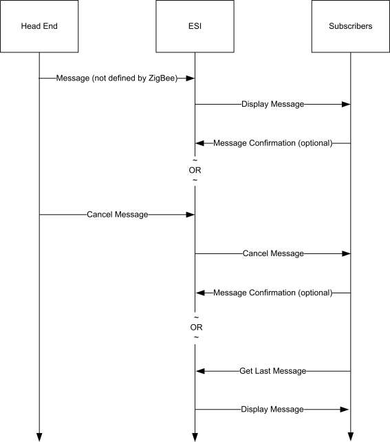
10.6 Tunneling ¶
Note: The optional support for flow control within the cluster in this revision of this specification is provisionary and not certifiable. This feature set may change before reaching certifiable status in a future revision of this specification.
10.6.1 Overview ¶
The tunneling cluster provides an interface for tunneling protocols. It is comprised of commands and attributes required to transport any existing metering communication protocol within the payload of standard ZigBee frames (including the handling of issues such as addressing, fragmentation and flow control). Examples for such protocols are DLMS/COSEM, IEC61107, ANSI C12, M-Bus, ClimateTalk, etc.
The tunneling foresees the roles of a server and a client taking part in the data exchange. Their roles are defined as follows:
Client: Requests a tunnel from the server and closes the tunnel if it is no longer needed.
Server: Provides and manages tunnels to the clients.
Figure 10-105. A Client Requests a Tunnel from a Server to Exchange Complex Data in Both Directions ¶
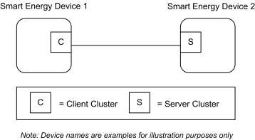
The data exchange through the tunnel is symmetric. This means both client and server provide the commands to transfer data (TransferData). And both must make sure that only the partner to which the tunnel has been built up is granted RW access to it (e.g. tunnel identifier protection through checking the MAC address).
Sleepy devices either close the tunnel immediately after they have pushed their data through it, or leave it open in which case an attribute in the server (CloseTunnelTimeout) decides whether the tunnel is closed from the server side during the sleeping phase or not. It is recommended that battery-powered (sleepy) devices fulfil the role of the Tunneling cluster client (and therefore have control over when they request a tunnel from the server).
If data is transferred to a non-existent or wrong tunnel identifier, the receiver generates an error message (TransferDataError).
The server may support more than one tunneling protocol. The type of tunnel to be opened is a mandatory parameter (ProtocolID) of the tunnel request (RequestTunnel) that the client needs to send to the server in order to set up a new tunnel. The response from the server (RequestTunnelResponse) will contain a parameter with the status of the tunnel (TunnelStatus). If the tunnel request was successful, a unique identifier (TunnelID) is returned within the response. In an error case (e.g. the requested protocol is not supported) the status contains the type of error. The optional GetSupportedTunnelProtocols command provides a way to read out the supported protocols from the server. If the GetSupportedTunnelProtocols command is not supported then either the client knows the supported protocols a priori or it has to try several times using different ProtocolIDs until the server responds with the tunnel status Success.
The tunneling cluster adds optional support for flow control to handle streaming protocols such as IEC61107. If implemented, flow control messages are provided to control the data flow and send acknowledges to data messages on application level. However, flow control is an optional feature and disabled per default. In the default case, the acknowledge messages (AckTransferData) must not be sent in order to reduce complexity and prevent from unneeded overhead.
The following sequence describes a typical usage:
- The client issues a service discovery to find devices which support the tunneling server cluster. The discovery may either be directed to one device, if its address is known, or be a broadcast (MatchSimpleDescriptor).
- The response to the discovery from the server contains an endpoint number (SimpleDescriptor). Us- ing this endpoint, the client directs a tunnel request to a given server. Together with the request, the client is required to provide an enumeration with the ID of the protocol that shall be tunneled. There is the possibility to request tunnels for manufacturer specific protocols. In this case, the ProtocolID has to be followed by a ZigBee ManufacturerCode to open the tunnel. An additional parameter for FlowControlSupport accompanies the request, together with an indication of the client’s incoming
buffer size (RequestTunnel (ProtocolID, ManufacturerCode, FlowControlSupport, MaximumIn-
comingTransferSize)).
3. If the server supports the protocol, it allocates the required resources, assigns a tunnel identifier and
returns the ID number within the response including an additional tunnel status that the command was successful and the server’s incoming buffer size. If the command failed, the status contains the reason in form of an error code (RequestTunnelResponse (TunnelID, TunnelStatus, MaximumIn-comingTransferSize)). The tunnel identifier number would then be invalid in this case.
4. Both server and client may exchange data (TransferData(Data)). In case the optional flow control
is utilized, each data transfer is acknowledged (AckTransferData(NumberOfOctetsLeft)). Additionally, there is the possibility to stop (AckTransferData(0)) and resume (ReadyData(Number- OfOctetsLeft) the data transfer.
5. After the transfer has been successfully completed, the client closes the tunnel again freeing the
tunnel identifier in the server (CloseTunnel(TunnelID)). If not, the server closes the tunnel by itself after CloseTunnelTimeout seconds.
The following sequence diagrams show the client/server model and the typical usage of the cluster without flow control (Figure 10-106) and with flow control (Figure 10-107).
Figure 10-106. SE Device 1 (Client) Requests a Tunnel from SE Device 2 (Server) to Transfer Data Without Flow ¶
Control (Default)
Smart Energy
Smart Energy Device 1
Device 2
RequestTunnel (ProtocolID, ManufacturerCode, FlowControlSupport, MaximumIncomingTransferSize)
EndPoint = xx
RequestTunnelResponse(TunnelID, TunnelStatus, MaximumIncomingTransferSize)
TransferData (TunnellID, Data)
TransferData (TunnellID, Data)
CloseTunnel (TunnellID)
Figure 10-107. SE Device 1 (Client) Requests a Tunnel from SE Device 2 (Server) to Transfer Data with Flow ¶
Control
Smart Energy Smart Energy
Device 2 Device 1
EndPoint = xx RequestTunnel (ProtocolID, ManufacturerCode, FlowControlSupport, MaximumIncomingTransferSize)
RequestTunnelResponse(TunnelID, TunnelStatus, MaximumIncomingTransferSize)
TransferData (TunnellID, Data)
NumberOfBytesLeft = 0 AckTransferData (TunnellID, NumberOfBytesLeft) wait with Tx
TransferData (TunnellID, Data)
AckTransferData (TunnellID, NumberOfBytesLeft)
ReadyData (TunnellID, NumberOfBytesLeft)
TransferData (TunnellID, Data)
AckTransferData (TunnellID, NumberOfBytesLeft)
CloseTunnel (TunnellID) With flow control
10.6.1.1 Revision History ¶
The global ClusterRevision attribute value SHALL be the highest revision number in the table below.
| Rev | Description |
|---|---|
| 1 | mandatory global ClusterRevision attribute added |
| 2 | Updated from SE1.4 version; CCB 1955 |
10.6.1.2 Classification ¶
| Hierarchy | Role | PICS Code |
|---|---|---|
| Base | Application | SETUN |
10.6.1.3 Cluster Identifiers ¶
| Identifier | Name |
|---|---|
| 0x0704 | Tunneling (Smart Energy) |
10.6.2 Server ¶
10.6.2.1 Dependencies ¶
This cluster requires APS fragmentation [Z1] to be implemented, with maximum transfer sizes defined by the device's negotiated input buffer sizes.
10.6.2.2 Attributes ¶
Table 10-124. Tunneling Cluster Attributes ¶
| Identi- fier | Name | Type | Range | Ac- cess | Default | M |
|---|---|---|---|---|---|---|
| 0x0000 | CloseTun- | uint16 | 0x0001- | R | 0xFFFF | M |
10.6.2.2.1 CloseTunnelTimeout Attribute ¶
CloseTunnelTimeout defines the minimum number of seconds that the server waits on an inactive tunnel before closing it on its own and freeing its resources (without waiting for the CloseTunnel command from the client). Inactive means here that the timer is re-started with each new reception of a command. 0x0000 is an invalid value.
10.6.2.3 Parameters ¶
Table 10-125 contains a summary of all parameters passed to or returned by the server commands. These ¶
values are considered as parameters (and not attributes) in order to facilitate the handling of the tunneling cluster for both the client and the server side. The parameters cannot be read or written via global commands. The detailed description of these parameters can be found in the according command sections of the document.
Table 10-125. Cluster Parameters Passed Through Commands ¶
| Name | Type | Range | Default | M |
|---|---|---|---|---|
| ProtocolID | enum8 | 0x01 – 0xFF | 0 | M |
| ManufacturerCode | uint16 | 0x0000 – 0xFFFF | 0 | M |
| FlowControlSupport | bool | 0 or 1 | 0 | M |
| MaximumIncoming TransferSize | uint16 | 0x0000 – 0xFFFF | 1500 | M |
| TunnelID | uint16 | 0x0000 – 0xFFFF | (Return value) | M |
| Data | octstr | - | - | M |
| NumberOfOctetsLeft | uint16 | 0x0000 – 0xFFFF | - | M |
| TunnelStatus | uint8 | 0x00 – 0x04 | - | M |
| Name | Type | Range | Default | M |
|---|---|---|---|---|
| TransferDataStatus | uint8 | 0x00 – 0x01 | - | M |
10.6.2.4 Commands Received ¶
Table 10-126 lists cluster-specific commands received by the server. ¶
Table 10-126. Cluster-specific Commands Received by the Server ¶
| Command Identifier FieldValue | Description | M |
|---|---|---|
| 0x00 | RequestTunnel | M |
| 0x01 | CloseTunnel | M |
| 0x02 | TransferData | M |
| 0x03 | TransferDataError | M |
| 0x04 | AckTransferData | O |
| 0x05 | ReadyData | O |
| 0x06 | GetSupportedTunnelProtocols | O |
10.6.2.4.1 RequestTunnel Command ¶
RequestTunnel is the client command used to setup a tunnel association with the server. The request payload specifies the protocol identifier for the requested tunnel, a manufacturer code in case of proprietary protocols and the use of flow control for streaming protocols.
10.6.2.4.1.1 Payload Format ¶
Figure 10-108. Format of the RequestTunnel Command Payload ¶
| Octets | 1 | 2 | 1 | 2 |
|---|---|---|---|---|
| Data Type | enum8 | uint16 | bool | uint16 |
| Field Name | ProtocolID (M) | Manufacturer Code (M) | FlowControl Support (M) | Maximum Incoming TransferSize |
10.6.2.4.1.2 Payload Details ¶
ProtocolID: An enumeration representing the identifier of the metering communication protocol for which the tunnel is requested. Table 10-127 lists the possible values for the ProtocolID. The values above 199 may be used for manufacturer-specific protocols.
Table 10-127. ProtocolID Enumerations ¶
| Values | Description |
|---|---|
| 0 | DLMS/COSEM (IEC 62056) |
| 1 | IEC 61107 |
| 2 | ANSI C12 |
| Values | Description |
|---|---|
| 3 | M-BUS |
| 4 | SML |
| 5 | ClimateTalk |
| 6 | GB-HRGP |
| 7 | IP v4207 |
| 8 | IP v6208 |
| 200 to 254 | Manufacturer-defined protocols |
Manufacturer Code: A code that is allocated by the ZigBee Alliance, relating the manufacturer to a device and – for the tunneling - a manufacturer specific protocol. The parameter is ignored when the ProtocolID value is less than 200. This allows for 55 manufacturer-defined protocols for each manufacturer to be defined. A value of 0xFFFF indicates that the Manufacturer Code is not used.
FlowControlSupport: A Boolean type parameter that indicates whether flow control support is requested from the tunnel (TRUE) or not (FALSE). The default value is FALSE (no flow control).
MaximumIncomingTransferSize: A value that defines the size, in octets, of the maximum data packet that can be transferred to the client in the payload of a single TransferData command.
10.6.2.4.1.3 When Generated ¶
Is never generated by the server.
10.6.2.4.1.4 Effect on Receipt ¶
Triggers a process within the server to allocate resources and build up a new tunnel. A RequestTunnelResponse is generated and sent back to the client containing the result of the RequestTunnel command.
10.6.2.4.2 CloseTunnel Command ¶
Client command used to close the tunnel with the server. The parameter in the payload specifies the tunnel identifier of the tunnel that has to be closed. The server leaves the tunnel open and the assigned resources allocated until the client sends the CloseTunnel command or the CloseTunnelTimeout fires.
10.6.2.4.2.1 Payload Format ¶
Figure 10-109. Format of the CloseTunnel Command Payload ¶
| Octets | 2 |
|---|---|
| Data Type | uint16 |
| Field Name | TunnelID (M) |
10.6.2.4.2.2 Payload Details ¶
207 CCB 1955 208 CCB 1955
TunnelID: The identifier of the tunnel that shall be closed. It is the same number that has been previously returned in the response to a RequestTunnel command. Valid numbers range between 0..65535 and must correspond to a tunnel that is still active and maintained by the server.
10.6.2.4.2.3 When Generated ¶
This command is never generated by the server.
10.6.2.4.2.4 Effect on Receipt ¶
In case the given TunnelID is correct, the server closes the tunnel and frees the resources. The associated tunnel is no longer maintained. If the TunnelID value does not match an active tunnel on the server, the server shall return a Default Response with status NOT_FOUND.
10.6.2.4.3 TransferData Command ¶
Command that indicates (if received) that the client has sent data to the server. The data itself is contained within the payload.
10.6.2.4.3.1 Payload Format ¶
Figure 10-110. Format of the TransferData Command Payload ¶
| Octets | 2 | Variable |
|---|---|---|
| Data Type | uint16 | opaque |
| Field Name | TunnelID (M) | Data (M) |
10.6.2.4.3.2 Payload Details ¶
TunnelID: A number between 0..65535 that uniquely identifies the tunnel that has been allocated in the server triggered through the RequestTunnel command. This ID must be used to send data through the tunnel or passed with any commands concerning that specific tunnel.
Data: Series of octets containing the data to be transferred through the tunnel in the format of the communication protocol for which the tunnel has been requested and opened. The payload contains the assembled data exactly as it was sent by the client. Theoretically, its length is solely limited through the fragmentation algorithm and the RX/TX transfer buffer sizes within the communication partners. The content of the payload is up to the application sending the data. It is neither guaranteed, that it contains a complete PDU nor is any other assumption on its internal format made. This is left up to the implementer of the specific protocol tunnel behavior.
10.6.2.4.3.3 When Generated ¶
Is generated whenever the server wants to tunnel protocol data to the client.
10.6.2.4.3.4 Effect on Receipt ¶
Indicates that the server has received tunneled protocol data from the client.
10.6.2.4.4 TransferDataError Command ¶
This command is generated by the receiver of a TransferData command if the tunnel status indicates that something is wrong. There are three cases in which TransferDataError is sent:
- The TransferData received contains a TunnelID that does not match to any of the active tunnels of the receiving device. This could happen if a (sleeping) device sends a TransferData command to a tunnel that has been closed by the server after the CloseTunnelTimeout.
- The TransferData received contains a proper TunnelID of an active tunnel, but the device sending the data does not match to it.
- The TransferData received contains more data than indicated by the MaximumIncomingTransfer- Size of the receiving device.
10.6.2.4.4.1 Payload Format ¶
Figure 10-111. Format of the TransferDataError Command Payload ¶
| Octets | 2 | 1 |
|---|---|---|
| Data Type | uint16 | uint8 |
| Field Name | TunnelID (M) | TransferDataStatus (M) |
10.6.2.4.4.2 Payload Details ¶
TunnelID: A number between 0..65535 that uniquely identifies the tunnel that has been allocated in the server triggered through the RequestTunnel command. This ID must be used for the data transfer through the tunnel or passed with any commands concerning that specific tunnel.
TransferDataStatus: The TransferDataStatus parameter indicates the error that occurred within the receiver after the last TransferData command.
The TransferDataStatus values are shown in Table 10-128.
Table 10-128. TransferDataStatus Values ¶
| Value | Description | Remarks |
|---|---|---|
| 0x00 | No such tunnel | The TransferData command contains a TunnelID of a non-existent tunnel. |
| 0x01 | Wrong device | The TransferData command contains a TunnelID that does not match the device sending the data. |
| 0x02 | Data overflow | The TransferData command contains more data than indicated by the MaximumIncomingTransferSize of the receiving device |
10.6.2.4.4.3 When Generated ¶
Is generated if the server wants to tell the client that there was something wrong with the last TransferData command.
10.6.2.4.4.4 Effect on Receipt ¶
Indicates that the client wants to tell the server that there was something wrong with the last TransferData command.
10.6.2.4.5 AckTransferData Command ¶
Command sent in response to each TransferData command in case – and only in case – flow control has been requested by the client in the TunnelRequest command and is supported by both tunnel endpoints. The response payload indicates the number of octets that may still be received by the receiver.
10.6.2.4.5.1 Payload Format ¶
Figure 10-112. Format of the AckTransferData Command Payload ¶
| Octets | 2 | 2 |
|---|---|---|
| Data Type | uint16 | uint16 |
| Field Name | TunnelID (M) | NumberOfBytesLeft (M) |
10.6.2.4.5.2 Payload Details ¶
TunnelID: A number between 0..65535 that uniquely identifies the tunnel that has been allocated in the server triggered through the RequestTunnel command. This ID must be used for the data transfer through the tunnel or passed with any commands concerning that specific tunnel.
NumberOfBytesLeft: Indicates the number of bytes that may still be received by the initiator of this command (receiver). It is most likely the remaining size of the buffer holding the data that is sent over Transfer- Data. As an example: A value of 150 indicates that the next TransferData command must not contain more than 150 bytes of payload or data will get lost. A value of 0 indicates that there is no more space left in the receiver and the sender should completely stop sending data. After the reception of a ReadyData command, the sender may continue its data transfer.
10.6.2.4.5.3 When Generated ¶
If flow control is on, the command is issued by the server to inform the client that the last TransferData command has been successfully received and how much space is left to receive further data.
10.6.2.4.5.4 Effect on Receipt ¶
If flow control is on, the reception of this command indicates that the client wants to inform the server that the last TransferData command has been successfully received and how much space is left to receive further data.
10.6.2.4.6 ReadyData Command ¶
The ReadyData command is generated – after a receiver had to stop the dataflow using the AckTransfer- Data(0) command – to indicate that the device is now ready to continue receiving data. The parameter NumberOfOctetsLeft gives a hint on how much space is left for the next data transfer. The ReadyData command is only issued if flow control is enabled.
10.6.2.4.6.1 Payload Format ¶
Figure 10-113. Format of the ReadyData Command Payload ¶
| Octets | 2 | 2 |
|---|---|---|
| Data Type | uint16 | uint16 |
| Field Name | TunnelID (M) | NumberOfOctetsLeft (M) |
10.6.2.4.6.2 Payload Details ¶
TunnelID: A number between 0..65535 that uniquely identifies the tunnel that has been allocated in the server triggered through the RequestTunnel command. This ID must be used for the data transfer through the tunnel or passed with any commands concerning that specific tunnel.
NumberOfOctetsLeft: Indicates the number of octets that may be received by the initiator of this command (receiver). It is most likely the remaining size of the buffer holding the data that is sent over Transfer- Data. As an example: A value of 150 indicates that the next TransferData command must not contain more than 150 bytes of payload or data will get lost. The value must be larger than 0. As for its exact value, it is up to the implementer of the cluster to decide what flow control algorithm shall be applied.
10.6.2.4.6.3 When Generated ¶
If generated by the server, this command informs the client that it may now continue to send and how much space is left within the server to receive further data.
10.6.2.4.6.4 Effect on Receipt ¶
If received by the server, this command informs the server that it may now continue to send and how much space is left within the client to receive further data.
10.6.2.4.7 Get Supported Tunnel Protocols Command ¶
Get Supported Tunnel Protocols is the client command used to determine the tunnel protocols supported on another device.
10.6.2.4.7.1 Payload Format ¶
Figure 10-114. Format of the Get Supported Tunnel Protocols Command Payload ¶
| Octets | 1 |
|---|---|
| Data Type | uint8 |
| Field Name | Protocol Offset |
10.6.2.4.7.2 Payload Details ¶
Protocol Offset: Where there are more protocols supported than can be returned in a single Supported Tunnel Protocols Response command, this field allows an offset to be specified on subsequent Get Supported Tunnel Protocols commands. An offset of zero (0x00) should be used for an initial (or only) Get Supported Tunnel Protocols command (indicating that the returned list of protocols should commence with first available protocol). As a further example, if 10 protocols had previously been returned, the next Get Supported Tunnel Protocols command should use an offset of 10 (0x0A) to indicate the 11th available protocol should be the first returned in the next response.
10.6.2.4.7.3 Effect on Receipt ¶
On receipt of this command, a device will respond with a Supported Tunnel Protocols Response command, indicating the tunnel protocols it supports (see sub- clause 10.6.2.5.6 for further details).
10.6.2.5 Commands Generated ¶
Table 10-129 lists commands that are generated by the server. ¶
Table 10-129. Cluster-Specific Commands Sent by the Server ¶
| Command Identifier FieldValue | Description | M |
|---|---|---|
| 0x00 | RequestTunnelResponse | M |
| 0x01 | TransferData | M |
| 0x02 | TransferDataError | M |
| 0x03 | AckTransferData | O |
| 0x04 | ReadyData | O |
| 0x05 | Supported Tunnel Protocols Response | O |
| 0x06 | TunnelClosureNotification | O |
10.6.2.5.1 RequestTunnelResponse Command ¶
RequestTunnelResponse is sent by the server in response to a RequestTunnel command previously received from the client. The response contains the status of the RequestTunnel command and a tunnel identifier corresponding to the tunnel that has been set-up in the server in case of success.
10.6.2.5.1.1 Payload Format ¶
Figure 10-115. Format of the RequestTunnelResponse Command Payload ¶
| Octets | 2 | 1 | 2 |
|---|---|---|---|
| Data Type | uint16 | uint8 | uint16 |
| Field Name | TunnelID (M) | TunnelStatus (M) | Maximum Incoming TransferSize (M) |
10.6.2.5.1.2 Payload Details ¶
TunnelID: A number between 0..65535 that uniquely identifies the tunnel that has been allocated in the server triggered through the RequestTunnel command. This ID must now be used to send data through this tunnel (TunnelID, TransferData) and is also required to close the tunnel again (CloseTunnel). If the command has failed, the TunnelStatus contains the reason of the error and the TunnelID is set to 0xFFFF.
TunnelStatus: The TunnelStatus parameter indicates the server’s internal status after the execution of a RequestTunnel command.
The TunnelStatus values are shown in Table 10-130.
Table 10-130. TunnelStatus Values ¶
| Value | Description | Remarks |
|---|---|---|
| 0x00 | Success | The tunnel has been opened and may now be used to transfer data in both directions. |
| 0x01 | Busy | The server is busy and cannot create a new tunnel at the moment. The cli- ent may try again after a recommended timeout of 3 minutes. |
| 0x02 | No more tunnel IDs | The server has no more resources to setup requested tunnel. Clients should close any open tunnels before retrying. |
| 0x03 | Protocol not supported | The server does not support the protocol that has been requested in the ProtocolID parameter of the RequestTunnel command. |
| 0x04 | Flow control not supported | Flow control has been requested by the client in the RequestTunnel com- mand but cannot be provided by the server (missing resources or no sup- port). |
MaximumIncomingTransferSize: A value that defines the size, in octets, of the maximum data packet that can be transferred to the server in the payload of a single TransferData command.
10.6.2.5.1.3 When Generated ¶
Is generated in reply to a RequestTunnel command to inform the client about the result of the request.
10.6.2.5.1.4 Effect on Receipt ¶
Should never be received by the server.
10.6.2.5.2 TransferData Command ¶
Command that transfers data from server to the client. The data itself has to be placed within the payload.
10.6.2.5.2.1 Payload Format ¶
Figure 10-116. Format of the TransferData Command Payload ¶
| Octets | 2 | Variable |
|---|---|---|
| Data Type | uint16 | opaque |
| Field Name | TunnelID (M) | Data (M) |
10.6.2.5.2.2 Payload Details ¶
TunnelID: A number between 0..65535 that uniquely identifies the tunnel that has been allocated in the server triggered through the RequestTunnel command. This ID must be used for the data transfer through the tunnel or passed with any commands concerning that specific tunnel.
Data: Series of octets containing the data to be transferred through the tunnel in the format of the communication protocol for which the tunnel has been requested and opened. The payload containing the assembled data exactly as it has been sent away by the client. Theoretically, its length is solely limited through the fragmentation algorithm and the RX/TX transfer buffer sizes within the communication partners. The content of the payload is up to the application sending the data. It is not guaranteed that it contains a complete PDU, nor is any assumption to be made on its internal format (which is left up to the implementer of the specific tunnel protocol).
10.6.2.5.2.3 When Generated ¶
Is generated when the server wants to tunnel protocol data to the client.
10.6.2.5.2.4 Effect on Receipt ¶
Indicates that the server has received tunneled protocol data from the client.
10.6.2.5.3 TransferDataError Command ¶
See sub-clause 10.6.2.4.4.
10.6.2.5.4 AckTransferData Command ¶
See sub-clause 10.6.2.4.5.
10.6.2.5.5 ReadyData Command ¶
See sub-clause 10.6.2.4.6.
10.6.2.5.6 Supported Tunnel Protocols Response Command ¶
Supported Tunnel Protocols Response is sent in response to a Get Supported Tunnel Protocols command previously received. The response contains a list of tunnel protocols supported by the device; the payload of the response should be capable of holding up to 16 protocols.
10.6.2.5.6.1 Payload Format ¶
Figure 10-117. Format of the Supported Tunnel Protocols Response Command Payload ¶
| Octets | 1 | 1 | 3 | … | 3 |
|---|---|---|---|---|---|
| Data Type | bool | uint8 | |||
| Field Name | Protocol List Complete | Protocol Count | Protocol 1 | … | Protocol n |
where each protocol field shall be formatted as:
Figure 10-118. Format of the Supported Tunnel Protocols Response Command Protocol Fields ¶
| Octets | 2 | 1 |
|---|---|---|
| Data Type | uint16 | enum8 |
| Field Name | Manufacturer Code | Protocol ID |
10.6.2.5.6.2 Payload Details ¶
Protocol List Complete: The Protocol List Complete field is a Boolean; a value of 0 indicates that there are more supported protocols available (if more than 16 protocols are supported). A value of 1 indicates that the list of supported protocols is complete.
Protocol Count: The number of Protocol fields contained in the response.
Manufacturer Code: A code that is allocated by the ZigBee Alliance, relating the manufacturer to a device and - for tunneling - a manufacturer specific protocol. A value of 0xFFFF indicates a standard (i.e. nonmanufacturer specific) protocol
Protocol ID: An enumeration representing the identifier of the metering communication protocol for the supported tunnel. Table 10-127 lists the possible values for standard protocols
10.6.2.5.6.3 When Generated ¶
Is generated in reply to a Get Supported Tunnel Protocols command, to indicate the tunnel protocols supported by the device
10.6.2.5.7 TunnelClosureNotification Command ¶
TunnelClosureNotification is sent by the server to indicate that a tunnel has been closed due to expiration of a CloseTunnelTimeout.
10.6.2.5.7.1 Payload Format ¶
Figure 10-119. Format of the TunnelClosureNotification Command Payload ¶
| Octets | 2 |
|---|---|
| Data Type | uint16 |
| Field Name | TunnelID (M) |
10.6.2.5.7.2 Payload Details ¶
TunnelID: The identifier of the tunnel that has been closed. It is the same number that has been previously returned in the response to a RequestTunnel command. Valid numbers range between 0..65535 and must correspond to a tunnel that was still active and maintained by the server.
10.6.2.5.7.3 When Generated ¶
The command is sent by a server when a tunnel is closed due to expiration of CloseTunnelTimeout. It is sent unicast to the client that had originally requested that tunnel.
10.6.3 Client ¶
10.6.3.1 Dependencies ¶
This cluster requires APS fragmentation [Z1] to be implemented, with maximum transfer sizes defined by the device's negotiated input buffer sizes.
10.6.3.2 Attributes ¶
The client has no cluster specific attributes.
10.6.3.3 Commands Received ¶
The client receives the cluster-specific response commands detailed in 10.6.2.5.
10.6.3.4 Commands Generated ¶
The client generates the cluster-specific commands detailed in 0, as required by the application.
10.7 Key Establishment ¶
10.7.1 Scope and Purpose ¶
This section specifies a cluster that contains commands and attributes necessary for managing secure communication between ZigBee devices.
This section should be used in conjunction with the ZigBee Cluster Library, Foundation Specification (see Chapter 2), which gives an overview of the library and specifies the frame formats and general commands used therein.
This version is specifically for inclusion in the Smart Energy profile. The document which originates from [Z10] will continue to be developed in a backward-compatible manner as a more general secure communication cluster for ZigBee applications as a whole.
10.7.2 General Description ¶
10.7.2.1 Introduction ¶
As previously stated, this document describes a cluster for managing secure communication. The cluster is for Key Establishment.
10.7.2.2 Security Credentials ¶
Key Establishment requires that the device utilize pre-installed security credentials that are unique to the device. Depending on the number of cryptographic suites that the device supports, there may be multiple credentials installed. It is assumed that the device is capable of managing this and to provide the corresponding credentials based on what suite is being actively used. The mechanism for negotiating the Key Establishment suite is described in section 10.7.3.1.1.
10.7.2.3 Network Security ¶
The Key Establishment Cluster has been designed to be used where the underlying network security cannot be trusted. As such, no information that is confidential information will be transported.
10.7.2.4 Key Establishment ¶
To allow integrity and confidentiality of data passed between devices, cryptographic schemes need to be deployed. The cryptographic scheme deployed in the ZigBee Specification for frame integrity and confidentiality is based upon a variant of the AES-CCM described in [N3] called AES-CCM*. This relies on the existence of secret keying material shared between the involved devices. There are methods to distribute this secret keying material in a trusted manner. However, these methods are generally not scalable or communication may be required with a trusted key allocation party over an insecure medium. This leads to the requirement for automated key establishment schemes to overcome these problems.
Key establishment schemes can be affected using either a key agreement scheme or a key transport scheme. The key establishment scheme described in this document uses a key agreement scheme, therefore key transport schemes will not be considered further in this document.
A key agreement scheme is where both parties contribute to the shared secret and therefore the secret keying material to be established is not sent directly; rather, information is exchanged between both parties that allows each party to derive the secret keying material. Key agreement schemes may use either symmetric key or asymmetric key (public key) techniques. The party that begins a key agreement scheme is called the initiator, and the other party is called the responder.
Key establishment using key agreement involves an initiator and a responder and four steps:
- Establishment of a trust relationship
- Exchange of ephemeral data
- Use of this ephemeral data to derive secret keying material using key agreement
- Confirmation of the secret keying material. There are two basic types of key establishment that can be implemented:
- Symmetric Key Key Establishment
- Public Key Key Establishment
10.7.2.5 Symmetric Key Key Establishment ¶
Symmetric Key Key Establishment (SKKE) is based upon establishing a link key based on a shared secret (master key). If the knowledge of the shared secret is compromised, the established link key can also be compromised. If the master key is publicly known or is set to a default value, it is known as Unprotected Key Establishment (UKE). SKKE is the key establishment method used in the ZigBee specification therefore it will not be considered any further.
10.7.2.6 Public Key Key Establishment ¶
Public Key Key Establishment (PKKE) is based upon establishing a link key based on shared static and ephemeral public keys. As the public keys do not require any secrecy, the established link key cannot be compromised by knowledge of them.
As a device's static public key is used as part of the link key creation, it can either be transported independently to the device's identity where binding between the two is assumed, or it can be transported as part of a implicit certificate signed by a Certificate Authority, which provides authentication of the binding between the device's identity and its public key as part of the key establishment process. This is called Certificate-Based Key Establishment (CBKE) and is discussed in more detail in sub-clause 10.7.6.2.
CBKE provides the most comprehensive form of Key Establishment and therefore will be the method specified in this cluster.
The purpose of the key agreement scheme as described in this document is to produce shared secret keying material which can be subsequently used by devices using AES-CCM* the cryptographic scheme deployed in the ZigBee Specification or for any proprietary security mechanism implemented by the application.
10.7.2.7 General Exchange ¶
Figure 10-120 shows an overview of the general exchange which takes place between initiator and responder ¶
to perform key establishment.
Figure 10-120. Overview of General Exchange ¶
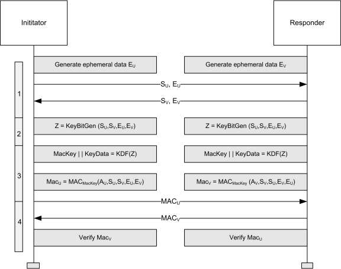
The functions are:
- Exchange Static and Ephemeral Data
- Generate Key Bitstream
- Derive MAC key and Key Data 4. Confirm Key using MAC The functions shown in Figure 10-120 depend on the Key Establishment mechanism.
10.7.2.7.1 Exchange Static and Ephemeral Data ¶
Figure 10-120 shows static data SU and SV. For PKKE schemes, this represents a combination of the 64-bit ¶
device address [Z11] and the device’s static public key. The identities are needed by the MAC scheme and the static public keys are needed by the key agreement scheme.
Figure 10-120 also shows ephemeral data EU and EV. For PKKE schemes, this represents the public key of a ¶
randomly generated key pair.
The static and ephemeral data SU and EU are sent to V and the static and ephemeral data SV and EV and are sent to U.
10.7.2.7.2 Generate Key Bitstream ¶
Figure 10-120 shows the KeyBitGen function for generating the key bitstream. The function's four param- ¶
eters are the identifiers and the ephemeral data for both devices. This ensures the same key is generated at both ends.
For PKKE schemes, this is the ECMQV key agreement schemes specified in Section 6.2 of SEC1 [O1]. The static data SU represents the static public key Q1,U of party U, the static data SV represents the static
public key Q1,V of party V, the ephemeral data EU represents the ephemeral public key Q2,U of party U and
the ephemeral data EV represents the ephemeral public key Q2,V of party V.
10.7.2.7.3 Derive MAC Key and Key Data ¶
Figure 10-120 shows the KDF (KeyDerivation Function) for generating the MAC Key and key data. The ¶
MAC Key is used with a keyed hash message authentication function to generate a MAC and the key data is the shared secret, e.g. the link key itself required for frame protection.
For PKKE schemes, this is the key derivation function as specified in Section 3.6.1 of SEC1 [O1]. Note there is no SharedInfo parameter of the referenced KDF, i.e. it is a null octet string of length 0.
Figure 10-120 also shows generation of the MAC using the MAC Key derived using the KDF using a ¶
message comprised of both static data SU and SV and ephemeral data EU and EV plus an additional component
A which is different for initiator and responder.
For PKKE schemes, this is the MAC scheme specified in section 3.7 of SEC1 [O1]. The MAC in the reference is the keyed hash function for message authentication specified in sub-clause 10.7.6.2.2.6 and the message M is a concatenation of the identity (the 64-bit device address [E1]) of U, the identity of V and pointcompressed octet-string representations of the ephemeral public keys of parties U and V. The order of concatenation depends on whether it is the initiator or responder. The additional component A is the single octet 0216 for the initiator and 0316 for the responder.
10.7.2.7.4 Confirm Key Using MAC ¶
Figure 10-120 shows MACs MACU and MACV. ¶
The MAC MACU is sent to V and the MAC MACV is sent to U. U and V both calculate the corresponding
MAC and compare it with the data received.
10.7.3 Overview ¶
Please see Chapter 2 for a general cluster overview defining cluster architecture, revision, classification, identification, etc.
Figure 10-121. Typical Usage of the Key Establishment Cluster ¶
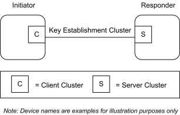
This cluster provides attributes and commands to perform mutual authentication and establish keys between two ZigBee devices. Figure 10-122 depicts a diagram of a successful key establishment negotiation.
Figure 10-122. Key Establishment Command Exchange ¶
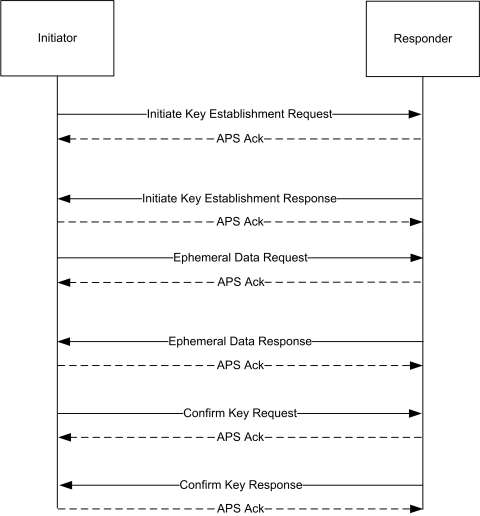
As depicted above, all Key Establishment messages should be sent with APS retries enabled. A failure to receive an ACK in a timely manner can be seen as a failure of key establishment. No Terminate Key Establishment should be sent to the partner of device that has timed out the operation.
The initiator can initiate the key establishment with any active endpoint on the responder device that supports the key establishment cluster. The endpoint can be either preconfigured or discovered, for example, by using ZDO Match-Desc-req. A link key successfully established using key establishment is valid for all endpoints on a particular device. The responder shall respond to the initiator using the source endpoint of the initiator's messages as the destination endpoint of the responder's messages.
It is expected that the time it takes to perform the various cryptographic computations of the key establishment cluster may vary greatly based on the device. Therefore rather than set static timeouts, the Initiate Key Establishment Request and Response messages will contain approximate values for how long the device will take to generate the ephemeral data and how long the device will take to generate confirm key message.
A device performing key establishment can use this information in order to choose a reasonable timeout for its partner during those operations. The timeout should also take into consideration the time it takes for a message to traverse the network including APS retries. A minimum transmission time of 2 seconds is recommended.
For the Initiate Key Establishment Response message, it is recommended the initiator wait at least 2 seconds before timing out the operation. It is not expected that generating an Initiate Key Establishment Response will take significant time compared to generating the Ephemeral Data and Confirm Key messages.
10.7.3.1.1 Negotiating the Key Establishment Suite ¶
Devices may support multiple cryptographic key establishment suites and therefore the client and server must agree on the suite that is to be used. Devices shall only advertise the suites that they support and have security credentials for.
The client device is expected to negotiate the key establishment suite with the server, which will be used for the rest of the key establishment exchange. The initiating device (client) may perform a Read Attribute request on the KeyEstablishmentSuite attribute of the server. It will then compare its local value of the attribute to the server’s value to determine the common set of suites that are supported by both. The client shall choose the common suite with the highest bit value and then send the Initiate Key Establishment Request message using that suite. If no common suites are supported, the device shall leave the network.
10.7.3.2 Revision History ¶
The global ClusterRevision attribute value SHALL be the highest revision number in the table below.
| Rev | Description |
|---|---|
| 1 | mandatory global ClusterRevision attribute added |
| 2 | Updated from SE1.4 version |
10.7.3.3 Classification ¶
| Hierarchy | Role | PICS Code |
|---|---|---|
| Base | Application | SEKE |
10.7.3.4 Cluster Identifiers ¶
| Identifier | Name |
|---|---|
| 0x0800 | Key Establishment (Smart Energy) |
10.7.4 Server ¶
10.7.4.1 Dependencies ¶
None.
10.7.4.2 Attributes ¶
For convenience, the attributes defined in this specification are arranged into sets of related attributes; each set can contain up to 16 attributes. Attribute identifiers are encoded such that the most significant three nibbles specify the attribute set and the least significant nibble specifies the attribute within the set. The currently defined attribute sets are listed in Table 10-131.
Table 10-131. Key Establishment Attribute Sets ¶
| Attribute Set Identifier | Description |
|---|---|
| 0x000 | Information |
10.7.4.2.1 Information ¶
The Information attribute set contains the attributes summarized in Table 10-132.
Table 10-132. Information Attribute Sets ¶
| Id | Name | Type | Range | Access | Default | M |
|---|---|---|---|---|---|---|
| 0x0000 | KeyEstablishmentSuite | enum16 | 0x0000 - 0xFFFF | R | 0x0000 | M |
10.1.1.1.1.1.1.1 KeyEstablishmentSuite Attribute ¶
The KeyEstablishmentSuite attribute is 16-bits in length and specifies all the cryptographic schemes for key establishment on the device. A device shall set the corresponding bit to 1 for every cryptographic scheme that is supports. All other cryptographic schemes and reserved bits shall be set to 0.
Although, for backwards compatibility, the Type cannot be changed, this 16-bit Enumeration should be treated as if it were a 16-bit BitMap.
Table 10-133. Values of the KeyEstablishmentSuite Attribute ¶
| Bits | Description |
|---|---|
| 0 | Certificate-based Key Establishment Cryptographic Suite 1 (“Crypto Suite 1”) |
| 1 | Certificate-based Key Establishment Cryptographic Suite 2 (“Crypto Suite 2”) |
10.7.4.2.1.1 Commands Received ¶
The server side of the key establishment cluster is capable of receiving the commands listed in Table 10-134.
Table 10-134. Received Command IDs for the Key Establishment Cluster Server ¶
| Command Identi- fier Field Value | Description | M |
|---|---|---|
| 0x00 | Initiate Key EstablishmentRequest | M |
| 0x01 | Ephemeral Data Request | M |
| 0x02 | Confirm Key Data Request | M |
| 0x03 | Terminate Key Establishment | M |
10.7.4.2.1.1.1 Initiate Key Establishment Request Command ¶
The Initiate Key Establishment Request command allows a device to initiate key establishment with another device. The sender shall indicate the identity information and key establishment protocol information that it wishes to use to the receiving device.
10.1.1.1.1.1.1.2 Payload Format ¶
The Initiate Key Establishment Request command payload shall be formatted as illustrated in Figure 10-123.
Figure 10-123. Initiate Key Establishment Request Command Payload ¶
| Octets | 2 | 1 | 1 | Variable |
|---|---|---|---|---|
| Data Type | map16 | uint8 | uint8 | opaque |
| Field Name | Key Establish- ment suite | Ephemeral Data Generate Time | Confirm Key Generate Time | Identity (IDU) |
Key Establishment Suite: This will be the type of KeyEstablishmentSuite that the initiator is requesting for the Key Establishment Cluster. For ‘Crypto Suite 1’ this will be 0x0001. For ‘Crypto Suite 2’ this will be 0x0002. Only one suite shall be indicated in the command.
Ephemeral Data Generate Time: This value indicates approximately how long the initiator device will take in seconds to generate the Ephemeral Data Request command. The valid range is 0x00 to 0xFE.
Confirm Key Generate Time: This value indicates approximately how long the initiator device will take in seconds to generate the Confirm Key Request command. The valid range is 0x00 to 0xFE.
Identity field: The identity field shall be the block of octets containing the implicit certificate CERTU. For KeyEstablishmentSuite = 0x0001 (‘Crypto Suite 1’), the certificate is specified in sub-clause 10.7.6.2.2. For KeyEstablishmentSuite = 0x0002 (‘Crypto Suite 2’) the certificate is specified in sub-clause 10.7.6.2.3.
10.1.1.1.1.1.1.3 Effect on Receipt ¶
If the device does not currently have the resources to respond to a key establishment request it shall send a Terminate Key Establishment command with the result value set to NO_RESOURCES and the Wait Time field shall be set to an approximation of the time that must pass before the device will have the resources to process a new Key Establishment Request.
If the receiving device does not support the cryptographic suite specified in the message, it shall send a Terminate Key Establishment message with the status of UNSUPPORTED_SUITE.
If the KeyEstablishmentSuite field of the message has more than a single bit selected in the bitmap, the receiving device shall send a Terminate Key Establishment message with the status of BAD_MESSAGE.
The receiving device shall extract the Issuer field of the implicit certificate received in the message. It shall then examine all locally installed certificates using the same Cryptographic suite specified in the received message and compare the Issuer field contained within the certificate to the issuer within the received certificate. If no locally installed certificates match the issuer in the received certificate, the device shall send a Terminate Key Establishment command with the result set to UNKNOWN_ISSUER.
If the implicit certificate received in the message is for the ‘Crypto Suite 2’ Cipher Suite, then the receiving device shall check the status of the KeyUsage field and, if the Key Agreement flag is NOT set, shall send a Terminate Key Establishment message with the status of INVALID_CERTIFICATE. The receiving device shall also check the Type, Curve and Hash fields of such a certificate, and send a Terminate Key Establishment message with the status of INVALID_CERTIFICATE if any of these fields contains an invalid value.
If the device accepts the request it shall send an Initiate Key Establishment Response command containing its own identity information. It shall set the Key Establishment suite to the same value as in the received Initiate Key Establishment Request message. The identity information shall correspond to the same suite as specified in the Key Establishment suite. The device should verify the certificate belongs to the address that the device is communicating with. The binding between the identity of the communicating device and its address is verifiable using an out-of-band method.
For all future server messages within the current key establishment negotiation, the Key Establishment suite value received in this message shall be utilized. If the client receives a Terminate Key Establishment message, or times out the operation, the key establishment suite value must be renegotiated.
10.7.4.2.1.1.2 Ephemeral Data Request Command ¶
The Ephemeral Data Request command allows a device to communicate its ephemeral data to another device and request that the device send back its own ephemeral data.
10.1.1.1.1.1.1.4 Payload Format ¶
Figure 10-124. Ephemeral Data Request Command Payload ¶
| Octets | Variable |
|---|---|
| Data Type | opaque |
| Field Name | Ephemeral Data (QEU) |
10.1.1.1.1.1.1.5 Effect on Receipt ¶
If the device is not currently in the middle of negotiating Key Establishment with the sending device when it receives this message, it shall send back a Terminate Key Establishment message with a result of BAD_MESSAGE. If the device is in the middle of Key Establishment with the sender but did not receive this message in response to an Initiate Key Establishment Response command, it shall send back a Terminate Key Establishment message with a result of BAD_MESSAGE. If the device can process the request it shall respond by generating its own ephemeral data and sending an Ephemeral Data Response command containing that value.
The length of the frame shall correlate to the current key establishment suite that has been negotiated by the client and server (refer to Table 10-143 for relevant sizes). If the data is shorter than the expected length according to the cryptographic suite, the responder shall send back a Terminate Key Establishment message with a result of BAD_MES- SAGE.
10.7.4.2.1.1.3 Confirm Key Request Command ¶
The Confirm Key Request command allows the initiator sending device to confirm the key established with the responder receiving device based on performing a cryptographic hash using part of the generated keying material and the identities and ephemeral data of both parties.
10.1.1.1.1.1.1.6 Payload Format ¶
The Confirm KeyRequest command payload shall be formatted as illustrated in Figure 10-125.
Figure 10-125. Confirm Key Request Command Payload ¶
| Octets | 16 |
|---|---|
| Data Type | opaque |
| Field Name | Secure Message Authentication Code (MACU) |
Secure Message Authentication Code field: The Secure Message Authentication Code field shall be the octet representation of MACU as specified in sub-clause 10.7.6.2.
10.1.1.1.1.1.1.7 Effect on Receipt ¶
If the device is not currently in the middle of negotiating Key Establishment with the sending device when it receives this message, it shall send back a Terminate Key Establishment message with a result of BAD_MESSAGE. If the device is in the middle of Key Establishment with the sender but did not receive this message in response to an Ephemeral Data Response command, it shall send back a Terminate Key Establishment message with a result of BAD_MESSAGE.
On receipt of the Confirm Key Request command the responder device shall compare the received MACU value with its own reconstructed version of MACU. If the two match the responder shall send back MACV by generating an appropriate Confirm Key Response command. If the two do not match, the responder shall send back a Terminate Key Establishment with a result of BAD_KEY_CONFIRM and terminate the key establishment.
10.7.4.2.1.1.4 Terminate Key Establishment Command ¶
The Terminate Key Establishment command may be sent by either the initiator or responder to indicate a failure in the key establishment exchange.
10.1.1.1.1.1.1.8 Payload Format ¶
The Terminate Key Establishment command payload shall be formatted as illustrated in Figure 10-126.
Figure 10-126. Terminate Key Establishment Command Payload ¶
| Octets | 1 | 1 | 2 |
|---|---|---|---|
| Data Type | enum8 | uint8 | map16 |
| Field Name | Status Code | Wait Time | KeyEstablishmentSuite |
Status Field: The Status field shall be one of the error codes in Table 10-135.
Table 10-135. Terminate Key Establishment Command Status Field ¶
| Enumeration | Value | Description |
|---|---|---|
| UNKNOWN IS- SUER | 0x01 | The Issuer field within the key establishment partner's certificate is unknown to the sending device, and it has terminated the key estab- lishment. |
| BAD KEY CON- FIRM | 0x02 | The device could not confirm that it shares the same key with the corresponding device and has terminated the key establishment. |
| BAD MESSAGE | 0x03 | The device received a bad message from the corresponding device (e.g. message with bad data, an out of sequence number, or a message with a bad format) and has terminated the key establishment. |
| NO RESOURCES | 0x04 | The device does not currently have the internal resources necessary to perform key establishment and has terminated the exchange. |
| UNSUP- PORTED SUITE | 0x05 | The device does not support the specified key establishment suite in the partner's Initiate Key Establishment message. |
| INVALID CERTIFI- CATE | 0x06 | The received certificate specifies a type, curve, hash, or other param- eter that is either unsupported by the device or invalid |
Wait Time: This value indicates the minimum amount of time in seconds the initiator device should wait before trying to initiate key establishment again. The valid range is 0x00 to 0xFE.
KeyEstablishmentSuite: This value will be set the value of the KeyEstablishmentSuite attribute. It indicates the list of key exchange methods that the device supports.
10.1.1.1.1.1.1.9 Effect on Receipt ¶
On receipt of the Terminate Key Establishment command the device shall terminate key establishment with the sender. If the device receives a status of BAD_MESSAGE or NO_RESOURCES it shall wait at least the time specified in the Wait Time field before trying to re-initiate Key Establishment with the device.
If the device receives a status of UNSUPPORTED_SUITE it should examine the KeyEstablishmentSuite field to determine if another suite can be used that is supported by the partner device. It may re-initiate key establishment using that one of the supported suites after waiting the amount of time specified in the Wait Time field. If the device does not support any of the types in the KeyEstablishmentSuite field, it should not attempt key establishment again with that device.
If the device receives a status of UNKNOWN_ISSUER or BAD_KEY_CONFIRM the device should not attempt key establishment again with the device, as it is unlikely that another attempt will be successful.
10.7.4.2.1.2 Commands Generated ¶
The server generates the commands detailed in sub-clause 10.7.5.3, as well as those used for reading and writing attributes.
10.7.5 Client ¶
10.7.5.1 Dependencies ¶
The Key Establishment client cluster has no dependencies.
10.7.5.2 Attributes ¶
For convenience, the attributes defined in this specification are arranged into sets of related attributes; each set can contain up to 16 attributes. Attribute identifiers are encoded such that the most significant three nibbles specify the attribute set and the least significant nibble specifies the attribute within the set. The currently defined attribute sets are listed in Table 10-136.
Table 10-136. Key Establishment Attribute Sets ¶
| Attribute Set Identifier | Description |
|---|---|
| 0x000 | Information |
10.7.5.2.1 Information ¶
The Information attribute set contains the attributes summarized in Table 10-137.
Table 10-137. Attributes of the Information Attribute Set ¶
| Id | Name | Type | Range | Acc | Default | M |
|---|---|---|---|---|---|---|
| 0x0000 | KeyEstablishmentSuite | enum16 | 0x0000 – 0xFFFF | R | 0x0000 | M |
10.7.5.2.1.1 KeyEstablishmentSuite Attribute ¶
The KeyEstablishmentSuite attribute is 16-bits in length and specifies ALL the cryptographic schemes for key establishment on the device. A device shall set the corresponding bit to 1 for every cryptographic scheme that is supports. All other cryptographic schemes and reserved bits shall be set to 0. This attribute shall be set to one of the non-reserved values listed in Table 10-138.
Although, for backwards compatibility, the Type cannot be changed, this 16-bit Enumeration should be treated as if it were a 16-bit BitMap.
Table 10-138. Values of the KeyEstablishmentSuite Attribute ¶
| KeyEstablishmentSuite | Description |
|---|---|
| 0 | Certificate-based Key Establishment Cryptographic Suite 1 (“Crypto Suite 1”) |
| 1 | Certificate-based Key Establishment Cryptographic Suite 2 (“Crypto Suite 2”) |
10.7.5.3 Commands Received ¶
The client side of the Key Establishment cluster is capable of receiving the commands listed in Table 10-139.
Table 10-139. Received Command IDs for the Key Establishment Cluster Client ¶
| Command Identifier Field Value | Description | M |
|---|---|---|
| 0x00 | Initiate Key Establishment Response | M |
| 0x01 | Ephemeral Data Response | M |
| 0x02 | Confirm Key Data Response | M |
| 0x03 | Terminate Key Establishment | M |
10.7.5.3.1 Initiate Key Establishment Response Command ¶
The Initiate Key Establishment Response command allows a device to respond to a device requesting the initiation of key establishment with it. The sender will transmit its identity information and key establishment protocol information to the receiving device.
10.7.5.3.1.1 Payload Format ¶
The Initiate Key Establishment Response command payload shall be formatted as illustrated in Figure 10-127.
Figure 10-127. Initiate Key Establishment Response Command Payload ¶
| Octets | 2 | 1 | 1 | Variable |
|---|---|---|---|---|
| Data Type | map16 | uint8 | uint8 | opaque |
| Field Name | Requested Key Es- tablishment suite | Ephemeral Data Generate Time | Confirm Key Generate Time | Identity (IDU) |
Requested Key Establishment Suite: This will be the type of KeyEstablishmentSuite that the initiator has requested be used for the key establishment exchange. The responder device shall set a single bit in the bitmask indicating that it has accepted the requested suite; all other bits shall be set to zero.
Ephemeral Data Generate Time: This value indicates approximately how long in seconds the responder device takes to generate the Ephemeral Data Response message. The valid range is 0x00 to 0xFE.
Confirm Key Generate Time: This value indicates approximately how long the responder device will take in seconds to generate the Confirm Key Response message. The valid range is 0x00 to 0xFE.
Identity field: The Identity field shall be the block of octets containing the implicit certificate CERTU. For KeyEstablishmentSuite = 0x0001 (‘Crypto Suite 1’), the certificate is specified in sub-clause 10.7.6.2.2. For KeyEstablishmentSuite = 0x0002 (‘Crypto Suite 2’), the certificate is specified in sub-clause 10.7.6.2.3.
10.7.5.3.1.2 Effect on Receipt ¶
If the device is not currently in the middle of negotiating Key Establishment with the sending device when it receives this message, it shall send back a Terminate Key Establishment message with a result of BAD_MESSAGE. If the device is in the middle of Key Establishment with the sender but did not receive this message in response to an Initiate Key Establishment Request command, it shall send back a Terminate Key Establishment message with a result of BAD_MESSAGE.
If the receiving device does not support the key establishment suite specified in the message, it shall send a Terminate Key Establishment message with the status of UNSUPPORTED_SUITE.
If the Requested Key Establishment Suite field of the message has more than a single bit selected in the bitmap, the receiving device shall send a Terminate Key Establishment message with the status of BAD_MESSAGE.
On receipt of this command the device shall check the Issuer field of the device's implicit certificate. If the Issuer field does not contain a value that corresponds to a known Certificate Authority, the device shall send a Terminate Key Establishment command with the status value set to UNKNOWN_ISSUER. If the device does not currently have the resources to respond to a key establishment request it shall send a Terminate Key Establishment command with the status value set to NO_RESOURCES and the Wait Time field shall be set to an approximation of the time that must pass before the device has the resources to process the request.
The receiver shall verify that the KeyEstablishmentSuite in the Initiate Key Establishment Response matches the value that was sent in the Initiate Key Establishment Request. If the values do not match then the device shall send a Terminate Key Establishment Request with UNSUPPORTED_SUITE.
If the implicit certificate received in the message is for the ‘Crypto Suite 2’ Cipher Suite, then the receiving device shall check the status of the KeyUsage field and, if the Key Agreement flag is NOT set, shall send a Terminate Key Establishment message with the status of INVALID_CERTIFICATE. The receiving device shall also check the Type, Curve and Hash fields of such a certificate, and send a Terminate Key Establishment message with the status of INVALID_CERTIFICATE if any of these fields contains an invalid value.
If the device accepts the response it shall send an Ephemeral Data Request command. The device should verify the certificate belongs to the address that the device is communicating with. The binding between the identity of the communicating device and its address is verifiable using out-of-band method.
For all future client messages within the current key establishment negotiation, the Key Establishment suite value received in this message shall be utilized. If the client receives a Terminate Key Establishment message, or times out the operation, the key establishment suite value must be renegotiated.
10.7.5.3.2 Ephemeral Data Response Command ¶
The Ephemeral Data Response command allows a device to communicate its ephemeral data to another device that previously requested it.
10.7.5.3.2.1 Payload Format ¶
Figure 10-128. Ephemeral Data Response Command Payload ¶
| Octets | Variable |
|---|---|
| Data Type | opaque |
| Field Name | Ephemeral Data (QEV) |
10.7.5.3.2.2 Effect on Receipt ¶
If the device is not currently in the middle of negotiating Key Establishment with the sending device when it receives this message, it shall send back a Terminate Key Establishment message with a result of BAD_MESSAGE. If the device is in the middle of Key Establishment with the sender but did not receive this message in response to an Ephemeral Data Request command, it shall send back a Terminate Key Establishment message with a result of BAD_MESSAGE.
The length of the frame shall correlate to the current key establishment suite that has been negotiated by the client and server (refer to Table 10-143 for relevant sizes). If the length of the Ephemeral Data is shorter than the expected length according to the cryptographic suite, the responder shall send back a Terminate Key Establishment message with a result of BAD_MESSAGE.
On receipt of this command if the device can handle the request it shall perform key generation, key derivation, and MAC generation. If successful it shall generate an appropriate Confirm Key Request command, otherwise it shall generate a Terminate Key Establishment with a result value of NO_RESOURCES.
10.7.5.3.3 Confirm Key Response Command ¶
The Confirm Key Response command allows the responder to verify the initiator has derived the same secret key. This is done by sending the initiator a cryptographic hash generated using the keying material and the identities and ephemeral data of both parties.
10.7.5.3.3.1 Payload Format ¶
The Confirm Key Response command payload shall be formatted as illustrated in Figure 10-129.
Figure 10-129. Confirm Key Response Command Payload ¶
| Octets | 16 |
|---|---|
| Data Type | opaque |
| Field Name | Secure Message Authentication Code (MACV) |
Secure Message Authentication Code field: The Secure Message Authentication Code field shall be the octet representation of MACV as specified in sub-clause 10.7.6.2.
10.7.5.3.3.2 Effect on Receipt ¶
If the device is not currently in the middle of negotiating Key Establishment with the sending device when it receives this message, it shall send back a Terminate Key Establishment message with a result of BAD_MESSAGE. If the device is in the middle of Key Establishment with the sender but did not receive this message in response to a Confirm Key Request command, it shall send back a Terminate Key Establishment message with a result of BAD_MESSAGE.
On receipt of the Confirm Key Response command the initiator device shall compare the received MACV value with its own reconstructed version of the MACV. If the two match then the initiator can consider the key establishment process to be successful. If the two do not match, the initiator should send a Terminate Key Establishment command with a result of BAD_KEY_CONFIRM.
10.7.5.3.4 Terminate Key Establishment Command ¶
The Terminate Key Establishment command may be sent by either the initiator or responder to indicate a failure in the key establishment exchange.
10.7.5.3.4.1 Payload Format ¶
Figure 10-130. Terminate Key Establishment Command Payload ¶
| Octets | 1 | 1 | 2 |
|---|---|---|---|
| Data Type | enum8 | uint8 | map16 |
| Field Name | Status Code | Wait Time | KeyEstablishmentSuite |
Status field: The Status field shall be one of the error codes shown in Table 10-140.
Table 10-140. Terminate Key Establishment Command Status Field ¶
| Enumeration | Value | Description |
|---|---|---|
| UNKNOWN ISSUER | 0x01 | The Issuer field within the key establishment partner's cer- tificate is unknown to the sending device, and it has termi- nated the key establishment. |
| BAD KEY CONFIRM | 0x02 | The device could not confirm that it shares the same key with the corresponding device and has terminated the key establishment. |
| BAD MESSAGE | 0x03 | The device received a bad message from the corresponding device (e.g. message with bad data, an out of sequence number, or a message with a bad format) and has terminated the key establishment. |
| NO RESOURCES | 0x04 | The device does not currently have the internal resources necessary to perform key establishment and has terminated the exchange. |
| UNSUPPORTED SUITE | 0x05 | The device does not support the specified key establishment suite in the partner's Initiate Key Establishment message. |
| INVALID CERTIFI- CATE | 0x06 | The received certificate specifies a type, curve, hash, or other parameter that is either unsupported by the device or invalid |
Wait Time: This value indicates the minimum amount of time in seconds the initiator device should wait before trying to initiate key establishment again. The valid range is 0x00 to 0xFE.
KeyEstablishmentSuite: This value will be set to the value of the KeyEstablishmentSuite attribute. It indicates the list of key exchange methods that the device supports.
10.7.5.3.4.2 Effect on Receipt ¶
On receipt of the Terminate Key Establishment command the device shall terminate key establishment with the sender. If the device receives a status of BAD_MESSAGE or NO_RESOURCES it shall wait at least the time specified in the Wait Time field before trying to re-initiate Key Establishment with the device.
If the device receives a status of UNKNOWN_SUITE it should examine the KeyEstablishmentSuite field to determine if another suite can be used that is supported by the partner device. It may re-initiate key establishment using that one of the supported suites after waiting the amount of time specified in the Wait Time field. If the device does not support any of the types in the KeyEstablishmentSuite field, it should not attempt key establishment again with that device.
If the device receives a status of UNKNOWN_ISSUER or BAD_KEY_CONFIRM the device should not attempt key establishment again with the device, as it is unlikely that another attempt will be successful.
10.7.5.4 Commands Generated ¶
The client generates the commands detailed in sub-clause 10.7.4.2.1.1, as well as those used for reading and writing attributes.
10.7.6 Application Implementation ¶
10.7.6.1 Network Security for Smart Energy Networks ¶
The underlying network security for Smart Energy networks is assumed to be ZigBee Standard security using pre-configured link keys.
A temporary link key for a joining device is produced by performing the cryptographic hash function on a random number assigned to the joining device (e.g. serial number) and the device identifier, which is the device's 64-bit IEEE address [Z11].
The joining device's assigned random number is then conveyed to the utility via an out-of-band mechanism (e.g. telephone call, or web site registration). The utility then commissions the Trust Center at the premises where the joining device is by installing the temporary link key on the Trust Center on the back channel.
When the joining device powers up, it will also create a temporary link key as above and therefore at the time of joining both the joining device and the Trust Center have the same temporary link key, which can be used to transport the network key securely to the joining device.
At this point, the device will be considered joined and authenticated as far as network security is concerned. The secure communication cluster can now be invoked to replace the temporary link key with a more secure link key based on public key cryptography.
10.7.6.2 Certificate-Based Key Establishment ¶
The Certificate-Based Key-Establishment (CBKE) solution uses public-key technology with digital certificates and root keys. Each device has a private key and a digital certificate that is signed by a Certificate Authority (CA).
The digital certificate includes:
- Reconstruction data for the device's public key
- The device's extended 64-bit IEEE address
- Profile specific information (e.g., the device class, network id, object type, validity date, etc.)
Certificates provide a mechanism for cryptographically binding a public key to a device's identity and characteristics.
Trust for a CBKE solution is established by provisioning a CA root key and a digital certificate to each device. A CA root key is the public key paired with the CA's private key. A CA uses its private key to sign digital certificates and the CA root key is used to verify these signatures. The trustworthiness of a public key is confirmed by verifying the CA's signature of the digital certificate. Certificates can be issued either by the device manufacturer, the device distributor, or the end customer. For example, in practical situations, the CA may be a computer (with appropriate key management software) that is kept physically secure at the end customer's facility or by a third-party.
At the end of successful completion of the CBKE protocol the following security services are offered:
- Both devices share a secret link key.
- Implicit Key Authentication: Both devices know with whom they share this link key.
- Key Confirmation: Each device knows that the other device actually has computed the key correctly.
- No Unilateral Key Control: No device has complete control over the shared link key that is established.
Perfect Forward Secrecy: If the private key gets compromised none of future and past communica- •
tions are exposed.
- Known Key Security resilience: Each shared link key created per session is unique.
10.7.6.2.1 Notation and Representation ¶
10.7.6.2.1.1 Strings and String Operations ¶
A string is a sequence of symbols over a specific set (e.g., the binary alphabet {0,1} or the set of all octets). The length of a string is the number of symbols it contains (over the same alphabet). The rightconcatenation of two strings x and y of length m and n respectively (notation: x || y), is the string z of length m+n that coincides with x on its leftmost m symbols and with y on its rightmost n symbols. An octet is a bit string of length 8.
10.7.6.2.1.2 Integers and Their Representation ¶
Throughout this specification, the representation of integers as bit strings or octet strings shall be fixed. All integers shall be represented as binary strings in most- significant-bit first order and as octet strings in mostsignificant-octet first order. This representation conforms to the convention in Section 2.3 of SEC1 [O1].
10.7.6.2.1.3 Entities ¶
Throughout this specification, each entity shall be a DEV and shall be uniquely identified by its 64-bit IEEE device address [Z11]. The parameter entlen shall have the integer value 64.
10.7.6.2.2 Cryptographic Suite 1 Building Blocks ¶
The following cryptographic primitives and data elements are defined for use with the CBKE ‘Crypto Suite 1’ Cipher suite protocol specified in this document.
10.7.6.2.2.1 Elliptic-Curve Domain Parameters ¶
The elliptic curve domain parameters used by this Cryptographic suite shall be those for the curve “sect 163k1” as specified in section 3.4.1 of SEC2 [O2].
All elliptic-curve points (and operations in this section) used by the ‘Crypto Suite 1’ Cipher Suite shall be (performed) on this curve.
10.7.6.2.2.2 Elliptic-Curve Point Representation ¶
All elliptic-curve points in the Cryptographic Suite 1 shall be represented as point compressed octet strings as specified in sections 2.3.3 and 2.3.4 of SEC1 [O1]. Thus, each elliptic-curve point Cryptographic Suite 1 can be represented in 22 bytes.
10.7.6.2.2.3 Elliptic-Curve Key Pair ¶
An elliptic-curve-key pair consists of an integer d and a point Q on the curve determined by multiplying the generating point G of the curve by this integer (i.e., Q=dG) as specified in section 3.2.1 of SEC1 [O1]. Here, Q is called the public key, whereas d is called the private key; the pair (d, Q) is called the key pair. Each private key shall be represented as specified in section 2.3.7 of SEC1 [O1]. Each public key shall be represented as defined in sub-clause 10.7.6.2.1.2 of this document.
10.7.6.2.2.4 ECC Implicit Certificates ¶
The exact format of the 48-byte implicit certificate ICU used with CBKE scheme shall be specified as follows:
ICU = PublicReconstrKey || Subject || Issuer || ProfileAttributeData
Where,
- PublicReconstrKey: the 22-byte representation of the public-key reconstruction data BEU as speci- fied in the implicit certificate generation protocol, which is an elliptic-curve point as specified in sub-clause 10.7.6.2.2.2 (see SEC4 [O1]);
- Subject: the 8-byte identifier of the entity U that is bound to the public-key reconstruction data BEU during execution of the implicit certificate generation protocol (i.e., the extended, 64-bit IEEE 802.15.4 address [E1] of the device that purportedly owns the private key corresponding to the public key that can be reconstructed with PublicReconstrKey);
- Issuer: the 8-byte identifier of the CA that creates the implicit certificate during the execution of the implicit certificate generation protocol (the so-called Certificate Authority).
- ProfileAttributeData: the 10-byte sequence of octets that can be used by a ZigBee profile for any purpose. The first two bytes of this sequence is reserved as a profile identifier, which must be defined by another ZigBee standard.
- The string IU as specified in Step 6 of the actions of the CA in the implicit certificate generation protocol (see section SEC4 [O2]) shall be the concatenation of the Subject, Issuer, and ProfileAt-tributeData: IU = Subject || Issuer || ProfileAttributeData
10.7.6.2.2.5 Block-Cipher ¶
The block-cipher used in this specification shall be the Advanced Encryption Standard AES-128, as specified in FIPS Pub 197 [N4]. This block-cipher has a key size that is equal to the block size, in bits, i.e., keylen= 128.
10.7.6.2.2.6 Cryptographic Hash Function ¶
The cryptographic hash function used in this specification shall be the blockcipher based cryptographic hash function specified in Annex B.6 in [Z1], with the following instantiations:
- Each entity shall use the block-cipher E as specified in sub-clause B.1.1 in [Z1].
- All integers and octets shall be represented as specified in sub-clause 10.7.6.2.1. The Matyas-Meyer-Oseas hash function (specified in Annex B.6 in [Z1]) has a message digest size hashlen that is equal to the block size, in bits, of the established blockcipher.
10.7.6.2.2.7 Keyed Hash Function for Message Authentication ¶
The keyed hash message authentication code (HMAC) used in this specification shall be HMAC, as specified in the FIPS Pub 198 [N5] with the following instantiations:
- Each entity shall use the cryptographic hash H function as specified in sub-clause 10.7.6.2.2.6;
- The block size B shall have the integer value 16 (this block size specifies the length of the data in- tegrity key, in bytes, that is used by the keyed hash function, i.e., it uses a 128-bit data integrity key). This is also MacKeyLen, the length of MacKey.
- The output size HMAClen of the HMAC function shall have the same integer value as the message digest parameter hashlen as specified in sub-clause 10.7.6.2.2.6.
10.7.6.2.2.8 Derived Shared Secret ¶
The derived shared secret KeyData is the output of the key establishment. KeyData shall have length Key- DataLen of 128 bits.
10.7.6.2.3 Cryptographic Suite 2 Building Blocks ¶
The elliptic curve domain parameters used by this Cipher suite shall be those for the curve “sect283k1” as specified in section 3.4.1 of SEC2 [O2].
All elliptic-curve points (and operations in this section) used by the ‘Crypto Suite 2’ Cipher Suite shall be (performed) on this curve.
10.7.6.2.3.1 Elliptic-Curve Point Representation ¶
All elliptic-curve points in the ‘Crypto Suite 2’ Cipher Suite shall be represented as point compressed octet strings as specified in sections 2.3.3 and 2.3.4 of SEC1 [O1]. Thus, each elliptic-curve point can be represented in 37 bytes.
10.7.6.2.3.2 Elliptic-Curve Key Pair ¶
An elliptic-curve-key pair consists of an integer d and a point Q on the curve determined by multiplying the generating point G of the curve by this integer (i.e., Q=dG) as specified in section 3.2.1 of SEC1 [O1]. Here, Q is called the public key, whereas d is called the private key; the pair (d, Q) is called the key pair. Each private key shall be represented as specified in section 2.3.7 of SEC1 [O1]. Each public key shall be represented as defined in sub-clause 10.7.6.2.1.2 of this document.
10.7.6.2.3.3 ECC Implicit Certificates ¶
The exact format of the Cryptographic Suite 2 74-byte implicit certificate ICU used with CBKE scheme
follows the definitions given in SEC 4 [O3] for the minimal encoding scheme (MES) and shall be specified as follows:
ICU = Type || SerialNo || Curve || Hash || Issuer || ValidFrom || ValidTo || Subject || KeyUsage || PublicReconstrKey
where
Type: is a 1-byte enumeration indicating whether the implicit certificate contains extensions. For the ‘Crypto Suite 2’ Cipher Suite this shall be 0x00 indicating no extensions are used;
SerialNo: is an 8-byte representation of the certificate Serial Number;
Curve: is a 1-byte elliptic curve identifier. For the ‘Crypto Suite 2’ Cipher Suite this shall be 0x0D indicating the sect283k1 curve is used;
Hash: is a 1-byte hash identifier. For the ‘Crypto Suite 2’ Cipher Suite, this shall be 0x08 indicating that AES-MMO is used;
Issuer: the 8-byte address of the CA that creates the implicit certificate during the execution of the implicit certificate generation protocol (the Certificate Authority);
ValidFrom: the 5-byte Unix time from which the certificate is valid (this signed 40-bit integer matches that defined in SEC4 [O3]). For conversion between Unix and Zigbee time, the Zigbee Epoch (January 1, 2000) equates to 946,684,800 seconds in Unix time. NOTE that this field is currently reserved and should be set to a default value of 0;
ValidTo: a 4-byte number giving the seconds from the ValidFrom time for which the certificate is considered valid. A number less than 0xFFFFFFFF gives the number in seconds while 0xFFFFFFFF indicates an infinite number of seconds;
Subject: the 8-byte identifier of the entity U that is bound to the public-key reconstruction data BEU during execution of the implicit certificate generation protocol (i.e., the extended, 64-bit IEEE 802.15.4 address [E1] of the device that purportedly owns the private key corresponding to the public key that can be reconstructed with PublicReconstrKey);
KeyUsage: 1-byte identifier indicating the key usage. The complete bit string is defined in SEC4 [O3], the bits relevant to the ‘Crypto Suite 2’ Cipher Suite are:-
Table 10-141. Values of the KeyUsage Field ¶
| Bits | Description |
|---|---|
| 0 | Reserved |
| 1 | Reserved |
| 2 | Reserved |
| 3 | Key Agreement |
| 4 | Reserved |
| 5 | Reserved |
| 6 | Reserved |
| 7 | Digital Signature |
For usage of the ‘Crypto Suite 2’ Cipher Suite for Key Establishment, bit 3 shall be set;
PublicReconstrKey: the 37-byte representation of the public-key reconstruction data BEU as specified in the implicit certificate generation protocol, which is an elliptic-curve point as specified in sub-clause 10.7.6.2.2.2 (see SEC4 [O3]).
The specification for ICu is further summarized in the following tabular form:
Table 10-142. ECC Implicit Certificate format ¶
| Bytes | Name | Description |
|---|---|---|
| 1 | Type | Type of certificate = 0, implicit no extensions |
| 8 | SerialNo | Serial Number of the certificate |
| 1 | Curve | Curve identifier (sect283k1 is 13 or byte value 0x0D) |
| 1 | Hash | Hash identifier (AES-MMO is byte value 0x08) |
| 8 | Issuer | 8 byte identifier, 64-bit IEEE 802.15.4 address |
| 5 | ValidFrom | 40-bit Unix time from which the certificate is valid |
| 4 | ValidTo | 32-bit # of seconds from the ValidFrom time for which the certificate is considered valid (0xFFFFFFFF = infinite) |
| 8 | SubjectID | 8 byte identifier, 64-bit IEEE 802.15.4 address |
| 1 | KeyUsage | Bit flag indicating key usage (0x88 = digital signature or key agreement allowed) |
| 37 | PublicKey | 37-byte compressed public key value from which the public key of the Subject is reconstructed. |
Note that the 74-byte certificate will necessitate the use of fragmentation with associated commands.
10.7.6.2.3.4 Block-Cipher ¶
Refer to section 10.7.6.2.2.5 for definition.
10.7.6.2.3.5 Cryptographic Hash Function ¶
Refer to section 10.7.6.2.2.6 for definition.
10.7.6.2.3.6 Keyed Hash Function for Message Authentication ¶
Refer to section 10.7.6.2.2.7 for definition.
10.7.6.2.3.7 Derived Shared Secret ¶
Refer to section 10.7.6.2.2.8 for definition.
10.7.6.2.4 Certificate-Based Key-Establishment ¶
The CBKE method is used when the authenticity of both parties involved has not been established and where implicit authentication of both parties is required prior to key agreement.
The CBKE protocol has an identical structure to the PKKE protocol, except that implicit certificates are used rather than manual certificates. The implicit certificate protocol used with CBKE shall be the implicit certificate scheme with associated implicit certificate generation scheme and implicit certificate processing transformation as specified in SEC4 [O1], with the following instantiations:
- Each entity shall be a DEV;
- Each entity’s identifier shall be its 64-bit device address [Z11]]; the parameter entlen shall have the integer value 64;
- Each entity shall use the cryptographic hash function as specified in sub-clause 10.7.6.2.2.6; The following additional information shall have been unambiguously established between devices operating the implicit certificate scheme:
- Each entity shall have obtained information regarding the infrastructure that will be used for the operation of the implicit certificate scheme - including a certificate format and certificate generation and processing rules (see SEC4 [O1]);
- Each entity shall have access to an authentic copy of the elliptic-curve public keys of one or more certificate authorities that act as CA for the implicit certificate scheme (SEC4 [O1]). The methods by which this information is to be established are outside the scope of this standard. The methods used during the CBKE protocol are described below. The parameters used by these methods are described in Table 10-143.
Table 10-143. Parameters Used by Methods of the CBKE Protocol ¶
| Parameter | Size (Octets) | Description | |
| ‘Crypto Suite 1’ | ‘Crypto Suite 2’ | ||
| CERTU | 48 | 74 | The initiator device's implicit certificate used to trans- fer the initiator device’s public key (denoted Q1,U in the Elliptic Curve MQV scheme in SEC1 [O1]) and the initiator device’s identity. |
| CERTV | 48 | 74 | The responder device's implicit certificate used to transfer the responder device’s public key (denoted Q1,V in the Elliptic Curve MQV scheme in SEC1 [O1]) and the responder device’s identity. |
| QEU | 22 | 37 | The ephemeral public key generated by the initiator device (denoted Q 2,U in the Elliptic Curve MQV scheme in SEC1 [O1]). |
| QEV | 22 | 37 | The ephemeral public key generated by the responder device (denoted Q2V in the Elliptic Curve MQV scheme in SEC1 |
| MACU | 16 | 16 | The secure message authentication code generated by the initiator device (where the message M is (0216 || IDU || IDV || QEU || QEV) and IDU and IDV are the initiator and responder device entities respectively as specified in sub-clause C.4.2.2.3 and QEU and QEV are the point-compressed elliptic curve points representing the ephemeral public keys of the initiator and responder respectively as specified in sub-clause 10.7.6.2.2.2. See also section 3.7 of SEC1 [O1]). |
| MACV | 16 | 16 | The secure message authentication code generated by the responder device (where the message M is (0316 || IDV || IDU || QEV || QEU) and IDV and IDU are the responder and initiator device entities respectively as specified in sub-clause C.4.2.2.3 and QEV and QEU are the point- compressed elliptic curve points representing the ephemeral public keys of the responder and initiator respectively as specified in sub-clause 10.7.6.2.2.3. See also section 3.7 of SEC1 [O1]). |
10.7.6.2.4.1 Exchange Ephemeral Data ¶
10.7.6.2.4.1.1 Initiator ¶
The initiator device's implicit certificate CERTU and a newly generated ephemeral public key QEU are transferred to the responder device using the Initiate Key Establishment command via the Key Establishment Cluster Client.
10.7.6.2.4.1.2 Responder ¶
The responder device's implicit certificate CERTV and a newly generated ephemeral public key QEV are transferred to the initiator device using the Initiate Key Establishment response command via the Key Establishment Cluster Server.
10.7.6.2.4.2 Validate Implicit Certificates ¶
10.7.6.2.4.2.1 Initiator ¶
The initiator device’s Key Establishment Cluster Client processes the Initiate Key Establishment response command. The initiator device examines CERTV (formatted as ICV as described in sub-clause 10.7.6.2.2.4),
confirms that the Subject identifier is the purported owner of the certificate, and runs the certificate processing steps described in section SEC4 [O2].
10.7.6.2.4.2.2 Responder ¶
The responder device’s Key Establishment Cluster Server processes the Initiate Key Establishment command. The responder device examines CERTU (formatted as ICU as described in sub-clause 10.7.6.2.2.4),
confirms that the Subject identifier is the purported owner of the certificate, and runs the certificate processing steps described in section SEC 4 [O2].
10.7.6.2.4.3 Derive Keying Material ¶
10.7.6.2.4.3.1 Initiator ¶
The initiator performs the Elliptic Curve MQV scheme as specified in section 6.2 of SEC1 [O1] with the following instantiations:
- The elliptic curve domain parameters shall be as specified in sub-clause 10.7.6.2.2.1;
- The KDF shall use the cryptographic hash function specified in sub-clause 10.7.6.2.2.2;
- The static public key Q1,U shall be the static public key of the initiator;
- The ephemeral public key Q2,U shall be an ephemeral public key of the initiator generated as part of this transaction;
- The static public key Q1,V shall be the static public key of the responder obtained from the re- sponder’s certificate communicated to the initiator by the responder;
- The ephemeral public key Q2,V shall be based on the point-compressed octet string representation QEV of an ephemeral key of the responder communicated to the initiator by the responder;
- The KDF parameter keydatalen shall be MacKeyLen + KeyDataLen, where MacKeyLen is the length of MacKey and KeyDataLen is the length of KeyData;
- The parameter SharedInfo shall be the empty string. The initiator device derives the keying material MacKey and KeyData from the output K as specified in section 3.6.1 of SEC1 [O1] by using MacKey as the leftmost MacKeyLen octets of K and KeyData as the rightmost KeyDataLen octets of K. KeyData is used subsequently as the shared secret and MacKey is used for key confirmation.
10.7.6.2.4.3.2 Responder ¶
The responder performs the Elliptic Curve MQV scheme as specified in section 6.2 of SEC1 [O1] with the following instantiations:
- The elliptic curve domain parameters shall be as specified in sub-clause 10.7.6.2.2.1;
- The KDF shall use the cryptographic hash function specified in sub-clause 10.7.6.2.2.2;
3. The static public key Q1,U shall be the static public key of the initiator obtained from the initiator’s
certificate communicated to the responder by the initiator;
4. The ephemeral public key Q2,U shall be based on the point-compressed octet string representation
QEU of an ephemeral key of the initiator communicated to the responder by the initiator;
5. The static public key Q1,V shall be the static public key of the responder;
6. The ephemeral public key Q2,V shall be an ephemeral public key of the responder generated as part
of this transaction;
7. The KDF parameter keydatalen shall be MacKeyLen + KeyDataLen, where MacKeyLen is the
length of MacKey and KeyDataLen is the length of KeyData;
8. The parameter SharedInfo shall be the empty string.
The responder device derives the keying material MacKey and KeyData from the output K as specified in section 3.6.1 of SEC1 [O1] by using MacKey as the leftmost MacKeyLen octets of K and KeyData as the rightmost KeyDataLen octets of K. KeyData is used subsequently as the shared secret and MacKey is used for key confirmation.
10.7.6.2.4.4 Confirm Keys ¶
10.7.6.2.4.4.1 Initiator ¶
The initiator device uses MacKey to compute its message authentication code MACU and sends it to the responder device by using the Confirm Key command via the Key Establishment Cluster Client.
The initiator device uses MacKey to confirm the authenticity of the responder by calculating MACV and comparing it with that sent by the responder.
10.7.6.2.4.4.2 Responder ¶
The responder device uses MacKey to compute its message authentication code MACV and sends it to the initiator device by using the Confirm Key response command via the Key Establishment Cluster Server.
The responder device uses MacKey to confirm the authenticity of the initiator by calculating MACU and comparing it with that sent by the initiator.
10.7.7 Key Establishment Test Vectors for Crypto- ¶
graphic Suite 1
The following details the key establishment exchange data transformation and validation of test vectors for a pair of Smart Energy devices using Certificate based key exchange (CBKE) using Elliptical Curve Cryptography (ECC).
10.7.7.1 Preconfigured Data ¶
Each device is expected to have been preinstalled with security information prior to initiating key establishment. The preinstalled data consists of the Certificate Authority's Public Key, a device specific certificate, and a device specific private key.
10.7.7.1.1 CA Public Key ¶
The following is the Certificate Authority's Public Key.
02 00 FD E8 A7 F3 D1 08 42 24 96 2A 4E 7C 54 E6 9A C3 F0 4D A6 B8
10.7.7.1.2 Responder Data ¶
The following is the certificate for device 1. The device has an IEEE of (>) 0000000000000001, and will be the responder.
03 04 5F DF C8 D8 5F FB 8B 39 93 CB 72 DD CA A5 5F 00 B3 E8 7D 6D 00 00 00 00 00 00 00 01 54 45 53 54 53 45 43 41 01 09 00 06 00 00 00 00 00 00
The certificate has the following data embedded within it:
| Public Key Reconstruction Data | 03 04 5F DF C8 D8 5F FB 8B 39 93 CB 72 DD CA A5 5F 00 B3 E8 7D 6D |
| Subject (IEEE) | 00 00 00 00 00 00 00 01 |
| Issuer | 54 45 53 54 53 45 43 41 |
| Attributes | 01 09 00 06 00 00 00 00 00 00 |
The private key for device 1 is as follows:
00 b8 a9 00 fc ad eb ab bf a3 83 b5 40 fc e9 ed 43 83 95 ea a7
The public key for device 1 is as follows:
03 02 90 a1 f5 c0 8d ad 5f 29 45 e3 35 62 0c 7a 98 fa c4 66 66 a1
10.7.7.1.3 Initiator Data ¶
The following is the certificate for device 2. The device has an IEEE of (>) 0000000000000002, and will be the initiator.
02 06 15 E0 7D 30 EC A2 DA D5 80 02 E6 67 D9 4B C1 B4 22 39 83 07 00 00 00 00 00 00 00 02 54 45 53 54 53 45 43 41 01 09 00 06 00 00 00 00 00 00
The certificate has the following data embedded within it:
| Public Key Reconstruction Data | 02 06 15 E0 7D 30 EC A2 DA D5 80 02 E6 67 D9 4B C1 B4 22 39 83 07 |
| Subject (IEEE) | 00 00 00 00 00 00 00 02 |
| Issuer | 54 45 53 54 53 45 43 41 |
|---|---|
| Attributes | 01 09 00 06 00 00 00 00 00 00 |
The private key for device 2 is as follows:
01 E9 DD B5 58 0C F7 2E CE 7F 21 5F 0A E5 94 E4 8D F3 E7 FE E8
The public key for device 2 is:
03 02 5B BA 38 D0 C7 B5 43 6B 68 DF 72 8F 09 3E 7A 1D 6C 43 7E 6D
10.7.7.2 Key Establishment Messages ¶
Figure 10-131 shows the basic flow of messages back and forth between the initiator and the responder ¶
performing key establishment using the Key Establishment Cluster.
Figure 10-131. Key Establishment Command Exchange ¶

10.7.7.2.1 Initiate Key Establishment Request ¶
The following is the APS message sent by the initiator (device 2) to the responder (device 1) for the initiate key establishment request.
40 0A 00 08 09 01 0A 01 01 00 00 01 00 03 06 02 06 15 E0 7D 30 EC A2 DA D5 80 02 E6 67 D9 4B C1 B4 22 39 83 07 00 00 00 00 00 00 00 02 54 45 53 54 53 45 43 41 01 09 00 06 00 00 00 00 00 00
APS Header
| Frame Control | 0x40 |
|---|---|
| Destination Endpoint | 0x0A |
| Cluster Identifier | 0x0800 |
|---|---|
| Profile ID | 0x0109 |
| Source Endpoint | 0x0A |
| APS Counter | 0x01 |
ZCL Header
| Frame Control | 0x01 | Client to Server |
|---|---|---|
| Sequence Number | 0x00 | |
| Command Identifier | 0x00 | Initiate Key Establishment Request |
| Key Establishment Suite | 0x0001 | ECMQV |
| Ephemeral Data Generate Time | 0x03 | |
| Confirm Key Generate Time | 0x06 | |
| Identity (IDU) | * | Device 2’s certificate |
10.7.7.2.2 Initiate Key Establishment Response ¶
The following is the APS message sent by the responder (device 1) to the initiator (device 2) for the initiate key establishment response.
40 0A 00 08 09 01 0A 01 09 00 00 01 00 03 06 03 04 5F DF C8 D8 5F FB 8B 39 93 CB 72 DD CA A5 5F 00 B3 E8 7D 6D 00 00 00 00 00 00 00 01 54 45 53 54 53 45 43 41 01 09 00 06 00 00 00 00 00 00
APS Header
| Frame Control | 0x40 |
|---|---|
| Destination Endpoint | 0x0A |
| Cluster Identifier | 0x0800 |
| Profile ID | 0x0109 |
| Source Endpoint | 0x0A |
| APS Counter | 0x01 |
ZCL Header
| Frame Control | 0x09 | Server to Client |
|---|---|---|
| Sequence Number | 0x00 |
| Command Identifier | 0x00 | Initiate Key Establishment Response |
|---|---|---|
| Key Establishment Suite | 0x0001 | ECMQV |
| Ephemeral Data Generate Time | 0x03 | |
| Confirm Key Generate Time | 0x06 | |
| Identity (IDV) | * | Device 1’s certificate |
10.7.7.2.3 Ephemeral Data Request ¶
The following is the APS message sent by the initiator to the responder for the ephemeral data request.
40 0A 00 08 09 01 0A 02 01 01 01 03 00 E1 17 C8 6D 0E 7C D1 28 B2 F3 4E 90 76 CF F2 4A F4 6D 72
APS Header
| Frame Control | 0x40 |
|---|---|
| Destination Endpoint | 0x0A |
| Cluster Identifier | 0x0800 |
| Profile ID | 0x0109 |
| Source Endpoint | 0x0A |
| APS Counter | 0x02 |
ZCL Header
| Frame Control | 0x01 | Client to Server |
|---|---|---|
| Sequence Number | 0x01 | |
| Command Identifier | 0x01 | Ephemeral Data Request |
| Ephemeral Data (QEU) | 03 00 E1 17 C8 6D 0E 7C D1 28 B2 F3 4E 90 76 CF F2 4A F4 6D 72 88 |
10.7.7.2.4 Ephemeral Data Response ¶
The following is the APS message sent by the responder to the initiator for the ephemeral data response.
40 0A 00 08 09 01 0A 02 09 01 01 03 06 AB 52 06 22 01 D9 95 B8 B8 59 1F 3F 08 6A 3A 2E 21 4D 84 5E
APS Header
| Frame Control | 0x40 |
|---|---|
| Destination Endpoint | 0x0A |
| Cluster Identifier | 0x0800 |
| Profile ID | 0x0109 |
| Source Endpoint | 0x0A |
| APS Counter | 0x02 |
ZCL Header
| Frame Control | 0x09 | Server to Client |
|---|---|---|
| Sequence Number | 0x01 | |
| Command Identifier | 0x01 | Ephemeral Data Response |
| Ephemeral Data (QEV) | 03 06 AB 52 06 22 01 D9 95 B8 B8 59 1F 3F 08 6A 3A 2E 21 4D 84 5E |
10.7.7.2.5 Confirm Key Request ¶
The following is the APS message sent by the initiator to the responder for the confirm key request.
40 0A 00 08 09 01 0A 03 01 02 02 B8 2F 1F 97 74 74 0C 32 F8 0F CF C3 92 1B 64 20
APS Header
| Frame Control | 0x40 |
|---|---|
| Destination Endpoint | 0x0A |
| Cluster Identifier | 0x0800 |
| Profile ID | 0x0109 |
| Source Endpoint | 0x0A |
| APS Counter | 0x02 |
ZCL Header
| Frame Control | 0x01 | Client to Server |
|---|---|---|
| Sequence Number | 0x02 | |
| Command Identifier | 0x02 | Confirm Key Request |
| Secure Message Authentication Code (MACU) | B8 2F 1F 97 74 74 0C 32 F8 0F CF C3 92 1B 64 20 |
10.7.7.2.6 Confirm Key Response ¶
The following is the APS message sent by the responder to the initiator for the confirm key response.
40 0A 00 08 09 01 0A 03 09 02 02 79 D5 F2 AD 1C 31 D4 D1 EE 7C B7 19 AC 68 3C 3C
APS Header
| Frame Control | 0x40 |
|---|---|
| Destination Endpoint | 0x0A |
| Cluster Identifier | 0x0800 |
| Profile ID | 0x0109 |
| Source Endpoint | 0x0A |
| APS Counter | 0x02 |
ZCL Header
| Frame Control | 0x09 | Server to Client |
|---|---|---|
| Sequence Number | 0x02 | |
| Command Identifier | 0x02 | Confirm Key Response |
| Secure Message Authentication Code (MACV) | 79 D5 F2 AD 1C 31 D4 D1 EE 7C B7 19 AC 68 3C 3C |
10.7.7.3 Data Transformation ¶
The following are the various values used by the subsequent transformation.
| U | Initiator |
|---|---|
| V | Responder |
| M(U) | Initiator Message Text (0x02) |
| M(V) | Responder Message Text (0x03) |
| ID(U) | Initiator's Identifier (IEEE address) |
| ID(V) | Responder's Identifier (IEEE address) |
| E(U) | Initiator's Ephemeral Public Key |
| E(V) | Responder's Ephemeral Public Key |
| E-P(U) | Initiator's Ephemeral Private Key |
| E-P(V) | Responder's Ephemeral Private Key |
| CA | Certificate Authority's Public Key |
| Cert(U) | Initiator's Certificate |
| Cert(V) | Responder's Certificate |
|---|---|
| Private(U) | Initiator's Private Key |
| Private(V) | Responder's Private Key |
| Shared Data | A pre-shared secret. NULL in Key Establishment |
| Z | A shared secret |
Note: '||' stands for bitwise concatenation
10.7.7.3.1 ECMQV Primitives ¶
It is assumed that an ECC library is available for creating the shared secret given the local private key, local ephemeral public & private key, remote device's certificate, remote device's ephemeral public key, and the certificate authority's public key. Further it is assumed that this library has been separately validated with a set of ECC test vectors. Those test vectors are outside the scope of this document.
10.7.7.3.2 Key Derivation Function (KDF) ¶
Once a shared secret (Z) is established, a transform is done to create a SMAC (Secure Message Authentication Code) and a shared ZigBee Key.
10.7.7.3.3 Initiator Transform ¶
Upon receipt of the responder's ephemeral data response, the initiator has all the data necessary to calculate the shared secret and derive the data for the confirm key request (SMAC).
10.7.7.3.3.1 Ephemeral Data ¶
| Public Key | 03 00 E1 17 C8 6D 0E 7C D1 28 B2 F3 4E 90 76 CF F2 4A F4 6D 72 88 |
| Private Key | 00 13 D3 6D E4 B1 EA 8E 22 73 9C 38 13 70 82 3F 40 4B FF 88 62 |
10.7.7.3.3.2 Step Summary ¶
1. Derive the Shared Secret using the ECMQV primitives
- Z = ECC_GenerateSharedSecret( Private(U), E(U), E-P(U), Cert(V), E(V), CA )
- Derive the Keying data
- Hash-1 = Z || 00 00 00 01 || SharedData
- Hash-2 = Z || 00 00 00 02 || SharedData
- Parse KeyingData as follows
- MacKey = First 128 bits (Hash-1) of KeyingData
- KeyData = Second 128 bits (Hash-2) of KeyingData
4. Create MAC(U)
1. MAC(U) = MAC(MacKey) { M(U) || ID(U) || ID(V) || E(U) || E(V) }
5. Send MAC(U) to V.
6. Receive MAC(V) from V.
7. Calculate MAC(V)'
1. MAC(V) = MAC(MacKey) { M(V) || ID(V) || ID(U) || E(V) || E(U) }
8. Verify MAC(V)' is the same as MAC(V).
10.7.7.3.3.3 Detailed Steps ¶
1. Derive the Shared Secret using the ECMQV primitives
- Z = ECC_GenerateSharedSecret( Private(U), E(U), E-P(U), Cert(V), E(V), CA ) 00 E0 D2 C3 CC D5 C1 06 A8 9C 4F 6C C2 6A 5F 7E C9 DF 78 A7 BE
- Derive the Keying data
- Hash-1 = Z || 00 00 00 01 || SharedData Concatenation 00 E0 D2 C3 CC D5 C1 06 A8 9C 4F 6C C2 6A 5F 7E C9 DF 78 A7 BE 00 00 00 01 Hash 90 F9 67 B2 2C 83 57 C1 0C 1C 04 78 8D E9 E8 48
- Hash-2 = Z || 00 00 00 02 || SharedData Concatenation 00 E0 D2 C3 CC D5 C1 06 A8 9C 4F 6C C2 6A 5F 7E C9 DF 78 A7 BE 00 00 00 02 Hash 86 D5 8A AA 99 8E 2F AE FA F9 FE F4 96 06 54 3A
- Parse KeyingData as follows
- MacKey = First 128 bits (Hash-1) of KeyingData
- KeyData = Second 128 bits (Hash-2) of KeyingData
4. Create MAC(U)
1. MAC(U) = MAC(MacKey) { M(U) || ID(U) || ID(V) || E(U) || E(V) }
Concatenation
02 00 00 00 00 00 00 00 02 00 00 00 00 00 00 00 01 03 00 E1 17 C8 6D 0E 7C D1 28 B2 F3 4E 90 76 CF F2 4A F4 6D 72 88 03 06 AB 52 06 22 01 D9 95 B8 B8 59 1F 3F 08 6A 3A 2E 21 4D 84 5E 88 00 10
Hash
B8 2F 1F 97 74 74 0C 32 F8 0F CF C3 92 1B 64 20
5. Send MAC(U) to V.
6. Receive MAC(V) from V.
7. Calculate MAC(V)'
1. MAC(V) = MAC(MacKey) { M(V) || ID(V) || ID(U) || E(V) || E(U) }
Concatenation
03 00 00 00 00 00 00 00 01 00 00 00 00 00 00 00 02 03 06 AB 52 06 22 01 D9 95 B8 B8 59 1F 3F 08 6A 3A 2E 21 4D 84 5E 03 00 E1 17 C8 6D 0E 7C D1 28 B2 F3 4E 90 76 CF F2 4A F4 6D 72 88 88 00 10
Hash
79 D5 F2 AD 1C 31 D4 D1 EE 7C B7 19 AC 68 3C 3C
8. Verify MAC(V)' is the same as MAC(V).
10.7.7.3.4 Responder Transform ¶
Upon receipt of the initiator's confirm key request, the responder has all the data necessary to calculate the shared secret, validate the initiator's confirm key message, and derive the data for the confirm key response (SMAC).
10.7.7.3.4.1 Ephemeral Data ¶
| Public Key | 03 06 AB 52 06 22 01 D9 95 B8 B8 59 1F 3F 08 6A 3A 2E 21 4D 84 5E |
| Private Key | 03 D4 8C 72 10 DD BC C4 FB 2E 5E 7A 0A A1 6A 0D B8 95 40 82 0B |
10.7.7.3.4.2 Step Summary ¶
1. Derive the Shared Secret using the ECMQV primitives
- Z = ECC_GenerateSharedSecret( Private(V), E(V), E-P(V), Cert(U), E(U), CA )
- Derive the Keying data
- Hash-1 = Z || 00 00 00 01 || SharedData
- Hash-2 = Z || 00 00 00 02 || SharedData
- Parse KeyingData as follows
- MacKey = First 128 bits (Hash-1) of KeyingData
- KeyData = Second 128 bits (Hash-2) of KeyingData
4. Create MAC(V)
1. MAC(V) = MAC(MacKey) { M(V) || ID(V) || ID(U) || E(V) || E(U) }
5. Calculate MAC(U)'
1. MAC(U) = MAC(MacKey) { M(U) || ID(U) || ID(V) || E(U) || E(V) }
6. Verify MAC(U) is the same as MAC(U).
7. Send MAC(V) to U.
10.7.7.3.4.3 Detailed Steps ¶
1. Derive the Shared Secret using the ECMQV primitives
- Z = ECC_GenerateSharedSecret( Private(U), E(U), E-P(U), Cert(V), E(V), CA ) 00 E0 D2 C3 CC D5 C1 06 A8 9C 4F 6C C2 6A 5F 7E C9 DF 78 A7 BE
- Derive the Keying data
- Hash-1 = Z || 00 00 00 01 || SharedData Concatenation 00 E0 D2 C3 CC D5 C1 06 A8 9C 4F 6C C2 6A 5F 7E C9 DF 78 A7 BE 00 00 00 01 Hash 90 F9 67 B2 2C 83 57 C1 0C 1C 04 78 8D E9 E8 48
- Hash-2 = Z || 00 00 00 02 || SharedData Concatenation 00 E0 D2 C3 CC D5 C1 06 A8 9C 4F 6C C2 6A 5F 7E C9 DF 78 A7 BE 00 00 00 02 Hash 86 D5 8A AA 99 8E 2F AE FA F9 FE F4 96 06 54 3A
- Parse KeyingData as follows
- MacKey = First 128 bits (Hash-1) of KeyingData
- KeyData = Second 128 bits (Hash-2) of KeyingData
4. Create MAC(V)
1. MAC(V) = MAC(MacKey) { M(V) || ID(V) || ID(U) || E(V) || E(U) }
Concatenation
03 00 00 00 00 00 00 00 01 00 00 00 00 00 00 00 02 03 06 AB 52 06 22 01 D9 95 B8 B8 59 1F 3F 08 6A 3A 2E 21 4D 84 5E 03 00 E1 17 C8 6D 0E 7C D1 28 B2 F3 4E 90 76 CF F2 4A F4 6D 72 88 88 00 10
Hash
79 D5 F2 AD 1C 31 D4 D1 EE 7C B7 19 AC 68 3C 3C
5. Calculate MAC(V)'
1. MAC(U) = MAC(MacKey) { M(U) || ID(U) || ID(V) || E(U) || E(V) }
Concatenation
02 00 00 00 00 00 00 00 02 00 00 00 00 00 00 00 01 03 00 E1 17 C8 6D 0E 7C D1 28 B2 F3 4E 90 76 CF F2 4A F4 6D 72 88 03 06 AB 52 06 22 01 D9 95 B8 B8 59 1F 3F 08 6A 3A 2E 21 4D 84 5E 88 00 10
Hash
B8 2F 1F 97 74 74 0C 32 F8 0F CF C3 92 1B 64 20
6. Verify MAC(V) is the same as MAC(V).
7. Send MAC(V) to U.
10.7.8 Key Establishment Test Vectors for Crypto- ¶
graphic Suite 2
The following details the key establishment exchange data transformation and validation of test vectors for a pair of Smart Energy devices using Certificate based key exchange (CBKE) using Elliptical Curve Cryptography (ECC).
10.7.8.1 Preconfigured Data ¶
Each device is expected to have been preinstalled with security information prior to initiating key establishment. The preinstalled data consists of the Certificate Authority's Public Key, a device specific certificate, and a device specific private key.
10.7.8.1.1 CA Public Key ¶
The following is the Certificate Authority's Public Key:
02 07 A4 45 02 2D 9F 39 f4 9B DC 38 38 00 26 A2 7A 9E 0A 17 99 31 3A B2 8C 5C 1A 1C 6B 60 51 54 DB 1D FF 67 52
10.7.8.1.2 Responder Data ¶
The following is the certificate for device 1. The device has an EUI-64 address of 0A:0B:0C:0D:0E:0F:10:11, and will be the responder.
Certificate:
00 26 22 A5 05 E8 93 8F 27 0D 08 11 12 13 14 15 16 17 18 00 52 92 A3 5B FF FF FF FF 0A 0B 0C 0D 0E 0F 10 11 88 03 03 B4 E9 DC 54 3A 64 33 3C 98 23 08 02 2B 54 E6 7E 2F 15 F5 32 55 1B 0A 11 E2 E2 C1 C1 D3 09 7A 43 24 E7 ED
The certificate has the following data embedded within it:
| Certificate Type | 00 |
|---|---|
| Certificate Serial No: | 26 22 A5 05 E8 93 8F 27 |
| Curve: | 0D (sect283k1) |
| Hash: | 08 (zigbee-aes-mmo) |
| IssuerID: | 11 12 13 14 15 16 17 18 |
| ValidFrom: | 00 52 92 A3 5B |
| ValidUntil: | FF FF FF FF |
| SubjectID: | 0A 0B 0C 0D 0E 0F 10 11 |
| KeyUsage | 88 |
| PublicKeyReconstructionPoint | 03 03 B4 E9 DC 54 3A 64 33 3C 98 23 08 02 2B 54 E6 7E 2F 15 F5 32 55 1B 0A 11 E2 E2 C1 C1 D3 09 7A 43 24 E7 ED |
The private key for device 1 is as follows:
01 51 CD 0D BC B8 04 74 BF 7A C9 FE EB E3 9C 7A 32 A6 35 18 93 8F CA 97 54 AA E1 32 BC 9C 73 BE
94 A7 E1 BE
The public key for device 1 is as follows:
02 02 F4 FA 2A 30 40 43 3C 68 20 29 9D 18 2A 10 42 E4 14 04 E3 37 C5 7F 47 71 6B 42 DF AF 97 0F 15 80 A0 4C 9B
10.7.8.1.3 Initiator Data ¶
The following is the certificate for device 2. The device has an EUI-64 address of 0A:0B:0C:0D:0E:0F:10:12, and will be the initiator.
Certificate:
00 84 A9 33 B3 7F 01 8D EC 0D 08 11 12 13 14 15 16 17 18 00 52 92 A3 8A FF FF FF FF 0A 0B 0C 0D 0E 0F 10 12 88 03 07 62 77 E2 F7 E2 25 2B 16 A0 E9 2B 6E 87 71 BB 3F 20 79 46 CB D4 A4 5D 9A 9D F6 ED AB 8C 79 6A 48 E8 9D EC
The certificate has the following data embedded within it:
| Certificate Type | 00 |
|---|---|
| Certificate Serial No: | 84 A9 33 B3 7F 01 8D EC |
| Curve: | 0D (sect283k1) |
| Hash: | 08 (zigbee-aes-mmo) |
| IssuerID: | 11 12 13 14 15 16 17 18 |
| ValidFrom: | 00 52 92 A3 8A |
| ValidUntil: | FF FF FF FF |
| SubjectID: | 0A 0B 0C 0D 0E 0F 10 12 |
| KeyUsage | 88 |
| PublicKeyReconstructionPoint | 03 07 62 77 E2 F7 E2 25 2B 16 A0 E9 2B 6E 87 71 BB 3F 20 79 46 CB D4 A4 5D 9A 9D F6 ED AB 8C 79 6A 48 E8 9D EC |
The private key for device 2 is as follows:
00 F2 56 1A DB 39 EF 49 C1 D6 2E F5 18 6C 6E 0C 15 8A 5A 45 BF CE 38 66 09 31 AC C3 69 45 92 D5 AC DE 90 06
The public key for device 2 is as follows:
03 03 0E 56 F7 AD E8 66 E7 63 72 76 4B A2 0A 9F F1 FE 4C AE 52 2F 94 83 9E 70 F2 AD FC 1C A3 E9 7F 4D DC AF 2E
10.7.8.2 Key Establishment Messages ¶
The following is the basic flow of messages back and forth between the initiator and the responder performing key establishment using the Key Establishment Cluster.
Figure 10-132. Key Establishment Command Exchange ¶
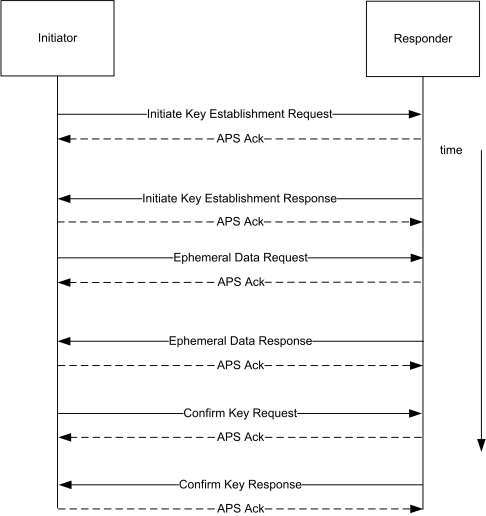
10.7.8.2.1 Initiate Key Establishment Request ¶
The following is the APS message sent by the initiator (device 2) to the responder (device 1) for the initiate key establishment request.
40 0A 00 08 09 01 0A 01 01 00 00 02 00 03 06 00 84 A9 33 B3 7F 01 8D EC 0D 08 11 12 13 14 15 16 17 18 00 52 92 A3 8A FF FF FF FF 0A 0B 0C 0D 0E 0F 10 12 88 03 07 62 77 E2 F7 E2 25 2B 16 A0 E9 2B 6E 87 71 BB 3F 20 79 46 CB D4 A4 5D 9A 9D F6 ED AB 8C 79 6A 48 E8 9D EC
APS Header
| Frame Control | 0x40 |
|---|---|
| Destination Endpoint | 0x0A |
| Cluster Identifier | 0x0800 |
| Profile ID | 0x0109 |
| Source Endpoint | 0x0A |
|---|---|
| APS Counter | 0x01 |
ZCL Header
| Frame Control | 0x01 | Client to Server |
|---|---|---|
| Sequence Number | 0x00 | |
| Command Identifier | 0x00 | Initiate Key Establishment Request |
| Requested Security Suite | 0x0002 | CBKE-ECMQV-V2 |
| Ephemeral Data Generate Time | 0x03 | |
| Confirm Key Generate Time | 0x06 | |
| Identity (IDU) | * | Device 2's certificate |
10.7.8.2.2 Initiate Key Establishment Response ¶
The following is the APS message sent by the responder (device 1) to the initiator (device 2) for the initiate key establishment response.
40 0A 00 08 09 01 0A 01 09 00 00 02 00 03 06 00 26 22 A5 05 E8 93 8F 27 0D 08 11 12 13 14 15 16 17 18 00 52 92 A3 5B FF FF FF FF 0A 0B 0C 0D 0E 0F 10 11 88 03 03 B4 E9 DC 54 3A 64 33 3C 98 23 08 02 2B 54 E6 7E 2F 15 F5 32 55 1B 0A 11 E2 E2 C1 C1 D3 09 7A 43 24 E7 ED
APS Header
| Frame Control | 0x40 |
|---|---|
| Destination Endpoint | 0x0A |
| Cluster Identifier | 0x0800 |
| Profile ID | 0x0109 |
| Source Endpoint | 0x0A |
| APS Counter | 0x01 |
ZCL Header
| Frame Control | 0x09 | Server to Client |
|---|---|---|
| Sequence Number | 0x00 | |
| Command Identifier | 0x00 | Initiate Key Establishment Response |
| Accepted Security Suite | 0x0002 | CBKE-ECMQV-V2 |
| Ephemeral Data Generate Time | 0x03 | |
| Confirm Key Generate Time | 0x06 | |
| Identity (IDV) | * | Device 1's certificate |
10.7.8.2.3 Ephemeral Data Request ¶
The following is the APS message sent by the initiator to the responder for the ephemeral data request.
40 0A 00 08 09 01 0A 02 01 01 01 03 05 F3 39 4E 15 68 06 60 EE CA A3 67 88 D9 B6 F3 12 B9 71 CE 2C 96 17 57 0B F7 DF CD 21 C9 72 01 77 62 C3 32
APS Header
| Frame Control | 0x40 |
|---|---|
| Destination Endpoint | 0x0A |
| Cluster Identifier | 0x0800 |
| Profile ID | 0x0109 |
| Source Endpoint | 0x0A |
| APS Counter | 0x02 |
ZCL Header
| Frame Control | 0x01 | Client to Server |
|---|---|---|
| Sequence Number | 0x01 | |
| Command Identifier | 0x01 | Ephemeral Data Request |
| Ephemeral Data (QEU) | 03 05 F3 39 4E 15 68 06 60 EE CA A3 67 88 D9 B6 F3 12 B9 71 CE 2C 96 17 57 0B F7 DF CD 21 C9 72 01 77 62 C3 32 |
10.7.8.2.4 Ephemeral Data Response ¶
The following is the APS message sent by the responder to the initiator for the ephemeral data response.
40 0A 00 08 09 01 0A 02 09 01 01 03 00 9A 51 31 CF 5B 92 A0 16 37 8C 0F 7F 28 4E CD 47 F9 40 10 F8 75 D4 3B F1 E9 A6 54 74 AD BF C6 36 96 A9 30
APS Header
| Frame Control | 0x40 |
|---|---|
| Destination Endpoint | 0x0A |
| Cluster Identifier | 0x0800 |
| Profile ID | 0x0109 |
| Source Endpoint | 0x0A |
| APS Counter | 0x02 |
ZCL Header
| Frame Control | 0x09 | Server to Client |
|---|---|---|
| Sequence Number | 0x01 | |
| Command Identifier | 0x01 | Ephemeral Data Response |
| Ephemeral Data (QEV) | 03 00 9A 51 31 CF 5B 92 A0 16 37 8C 0F 7F 28 4E CD 47 F9 40 10 F8 75 D4 3B F1 E9 A6 54 74 AD BF C6 36 96 A9 30 |
10.7.8.2.5 Confirm Key Request ¶
The following is the APS message sent by the initiator to the responder for the confirm key request.
40 0A 00 08 09 01 0A 03 01 02 02 BF 7E 1A 26 D4 EF 70 38 B5 68 13 E4 65 A1 31 C9
APS Header
| Frame Control | 0x40 |
|---|---|
| Destination Endpoint | 0x0A |
| Cluster Identifier | 0x0800 |
| Profile ID | 0x0109 |
| Source Endpoint | 0x0A |
| APS Counter | 0x03 |
ZCL Header
| Frame Control | 0x01 | Client to Server |
|---|---|---|
| Sequence Number | 0x02 | |
| Command Identifier | 0x02 | Confirm Key Request |
| Secure Message Authentication Code (MACU) | BF 7E 1A 26 D4 EF 70 38 B5 68 13 E4 65 A1 31 C9 |
10.7.8.2.6 Confirm Key Response ¶
The following is the APS message sent by the responder to the initiator for the confirm key response.
40 0A 00 08 09 01 0A 03 09 02 02 C5 B4 32 A9 99 5A 09 2F 44 49 F8 36 13 93 00 64
APS Header
| Frame Control | 0x40 |
|---|---|
| Destination Endpoint | 0x0A |
| Cluster Identifier | 0x0800 |
| Profile ID | 0x0109 |
| Source Endpoint | 0x0A |
| APS Counter | 0x03 |
|---|
ZCL Header
| Frame Control | 0x09 | Server to Client |
|---|---|---|
| Sequence Number | 0x02 | |
| Command Identifier | 0x02 | Confirm Key Response |
| Secure Message Authentication Code (MACV) | C5 B4 32 A9 99 5A 09 2F 44 49 F8 36 13 93 00 64 |
10.7.8.3 Data Transformation ¶
The following are the various values used by the subsequent transformation.
| U | Initiator |
|---|---|
| V | Responder |
| M(U) | Initiator Message Text (0x02) |
| M(V) | Responder Message Text (0x03) |
| ID(U) | Initiator's Identifier (IEEE address) |
| ID(V) | Responder's Identifier (IEEE address) |
| E(U) | Initiator's Ephemeral Public Key |
| E(V) | Responder's Ephemeral Public Key |
| E-P(U) | Initiator's Ephemeral Private Key |
| E-P(V) | Responder's Ephemeral Private Key |
| CA | Certificate Authority's Public Key |
| Cert(U) | Initiator's Certificate |
| Cert(V) | Responder's Certificate |
| Private(U) | Initiator's Private Key |
| Private(V) | Responder's Private Key |
| Shared Data | A pre-shared secret. NULL in Key Establishment. |
| Z | A shared secret |
Note: '||' stands for bitwise concatenation
10.7.8.3.1 ECMQV Primitives ¶
It is assumed that an ECC library is available for creating the shared secret given the local private key, local ephemeral public & private key, remote device's certificate, remote device's ephemeral public key, and the certificate authority's public key. Further it is assumed that this library has been separately validated with a set of ECC test vectors. Those test vectors are outside the scope of this document.
10.7.8.3.2 Key Derivation Function (KDF) ¶
Once a shared secret (Z) is established, a transform is done to create a SMAC (Secure Message Authentication Code) and a shared Zigbee Key.
10.7.8.3.3 Initiator Transform ¶
Upon receipt of the responder's ephemeral data response, the initiator has all the data necessary to calculate the shared secret and derive the data for the confirm key request (SMAC).
10.7.8.3.3.1 Ephemeral Data ¶
| Public Key | 03 05 F3 39 4E 15 68 06 60 EE CA A3 67 88 D9 B6 F3 12 B9 71 CE 2C 96 17 57 0B F7 DF CD 21 C9 72 01 77 62 C3 32 |
| Private Key | 00 13 D3 6D E4 B1 EA 8E 22 73 9C 38 13 70 82 3F 40 4B FF 88 62 B5 21 FE CA 98 71 FB 36 91 84 6D 36 13 04 B4 |
10.7.8.3.3.2 Step Summary ¶
1. Derive the Shared Secret using the ECMQV primitives
- Z = ECC_GenerateSharedSecret( Private(U), E(U), E-P(U), Cert(V), E(V), CA )
- Derive the Keying data
- Hash-1 = Z || 00 00 00 01 || SharedData
- Hash-2 = Z || 00 00 00 02 || SharedData
- Parse KeyingData as follows
- MacKey = First 128 bits (Hash-1) of KeyingData
- KeyData = Second 128 bits (Hash-2) of KeyingData
4. Create MAC(U)
1. MAC(U) = MAC(MacKey) { M(U) || ID(U) || ID(V) || E(U) || E(V) }
5. Send MAC(U) to V.
6. Receive MAC(V) from V.
7. Calculate MAC(V)'
1. MAC(V) = MAC(MacKey) { M(V) || ID(V) || ID(U) || E(V) || E(U) }
8. Verify MAC(V)' is the same as MAC(V).
10.7.8.3.3.3 Detailed Steps ¶
1. Derive the Shared Secret using the ECMQV primitives
1. Z = ECC_GenerateSharedSecret( Private(U), E(U), E-P(U), Cert(V), E(V), CA )
04 F7 72 4A 9A 77 B2 1D 27 47 CC EF 68 A4 57 E4 52 46 C4 BE 9F 66 FD 94 25 22 7B CB 2C C5 18 0E A9 CC CB 9A
2. Derive the Keying data
- Hash-1 = Z || 00 00 00 01 || SharedData Concatenation 04 F7 72 4A 9A 77 B2 1D 27 47 CC EF 68 A4 57 E4 52 46 C4 BE 9F 66 FD 94 25 22 7B CB 2C C5 18 0E A9 CC CB 9A 00 00 00 01 Hash ED 38 0A 00 29 66 00 FB 6B 89 30 25 DE 5F D1 37
- Hash-2 = Z || 00 00 00 02 || SharedData Concatenation 04 F7 72 4A 9A 77 B2 1D 27 47 CC EF 68 A4 57 E4 52 46 C4 BE 9F 66 FD 94 25 22 7B CB 2C C5 18 0E A9 CC CB 9A 00 00 00 02 Hash AA 46 89 C7 0B E0 FA F0 C9 BE 53 4A BD 9F 4C DC
- Parse KeyingData as follows
1. MacKey = First 128 bits (Hash-1) of KeyingData 2. KeyData = Second 128 bits (Hash-2) of KeyingData
4. Create MAC(U)
1. MAC(U) = MAC(MacKey) { M(U) || ID(U) || ID(V) || E(U) || E(V) }
Concatenation 02 0a 0b 0c 0d 0e 0f 10 12 0a 0b 0c 0d 0e 0f 10 11 03 05 F3 39 4E 15 68 06 60 EE CA A3 67 88 D9 B6 F3 12 B9 71 CE 2C 96 17 57 0B F7 DF CD 21 C9 72 01 77 62 C3 32 03 00 9A 51 31 CF 5B 92 A0 16 37 8C 0F 7F 28 4E CD 47 F9 40 10 F8 75 D4 3B F1 E9 A6 54 74 AD BF C6 36 96 A9 30
Hash BF 7E 1A 26 D4 EF 70 38 B5 68 13 E4 65 A1 31 C9
5. Send MAC(U) to V.
6. Receive MAC(V) from V.
7. Calculate MAC(V)'
1. MAC(V) = MAC(MacKey) { M(V) || ID(V) || ID(U) || E(V) || E(U) }
Concatenation 03 0a 0b 0c 0d 0e 0f 10 11 0a 0b 0c 0d 0e 0f 10 12 03 00 9A 51 31 CF 5B 92 A0 16 37 8C 0F 7F 28 4E CD 47 F9 40 10 F8 75 D4 3B F1 E9 A6 54 74 AD BF C6 36 96 A9 30 03 05 F3 39 4E 15 68 06 60 EE CA A3 67 88 D9 B6 F3 12 B9 71 CE 2C 96 17 57 0B F7 DF CD 21 C9 72 01 77 62 C3 32
Hash C5 B4 32 A9 99 5A 09 2F 44 49 F8 36 13 93 00 64
8. Verify MAC(V)' is the same as MAC(V).
10.7.8.3.4 Responder Transform ¶
Upon receipt of the initiator's confirm key request, the responder has all the data necessary to calculate the shared secret, validate the initiator's confirm key message, and derive the data for the confirm key response (SMAC).
10.7.8.3.4.1 Ephemeral Data ¶
| Public Key | 03 00 9A 51 31 CF 5B 92 A0 16 37 8C 0F 7F 28 4E CD 47 F9 40 10 F8 75 D4 3B F1 E9 A6 54 74 AD BF C6 36 96 A9 30 |
| Private Key | 03 D4 8C 72 10 DD BC C4 FB 2E 5E 7A 0A A1 6A 0D B8 95 40 82 0B 8D C0 91 AB 52 1E A8 24 AF E1 17 CA DE 99 5B |
10.7.8.3.4.2 Step Summary ¶
1. Derive the Shared Secret using the ECMQV primitives
- Z = ECC_GenerateSharedSecret( Private(V), E(V), E-P(V), Cert(U), E(U), CA )
- Derive the Keying data
1. Hash-1 = Z || 00 00 00 01 || SharedData 2. Hash-2 = Z || 00 00 00 02 || SharedData
3. Parse KeyingData as follows
1. MacKey = First 128 bits (Hash-1) of KeyingData 2. KeyData = Second 128 bits (Hash-2) of KeyingData
4. Create MAC(V)
1. MAC(V) = MAC(MacKey) { M(V) || ID(V) || ID(U) || E(V) || E(U) }
5. Calculate MAC(U)'
1. MAC(U) = MAC(MacKey) { M(U) || ID(U) || ID(V) || E(U) || E(V) }
6. Verify MAC(U)' is the same as MAC(U).
7. Send MAC(V) to U
10.7.8.3.4.3 Detailed Steps ¶
1. Derive the Shared Secret using the ECMQV primitives
- Z = ECC_GenerateSharedSecret( Private(V), E(V), E-P(V), Cert(U), E(U), CA ) 04 F7 72 4A 9A 77 B2 1D 27 47 CC EF 68 A4 57 E4 52 46 C4 BE 9F 66 FD 94 25 22 7B CB 2C C5 18 0E A9 CC CB 9A
- Derive the Keying data
1. Hash-1 = Z || 00 00 00 01 || SharedData
Concatenation 04 F7 72 4A 9A 77 B2 1D 27 47 CC EF 68 A4 57 E4 52 46 C4 BE 9F 66 FD 94 25 22 7B CB 2C C5 18 0E A9 CC CB 9A 00 00 00 01
Hash ED 38 0A 00 29 66 00 FB 6B 89 30 25 DE 5F D1 37
2. Hash-2 = Z || 00 00 00 02 || SharedData
Concatenation 04 F7 72 4A 9A 77 B2 1D 27 47 CC EF 68 A4 57 E4 52 46 C4 BE 9F 66 FD 94 25 22 7B CB 2C C5 18 0E A9 CC CB 9A 00 00 00 02
Hash AA 46 89 C7 0B E0 FA F0 C9 BE 53 4A BD 9F 4C DC
3. Parse KeyingData as follows
1. MacKey = First 128 bits (Hash-1) of KeyingData 2. KeyData = Second 128 bits (Hash-2) of KeyingData
4. Create MAC(V)
1. MAC(V) = MAC(MacKey) { M(V) || ID(V) || ID(U) || E(V) || E(U) }
Concatenation 03 0a 0b 0c 0d 0e 0f 10 11 0a 0b 0c 0d 0e 0f 10 12 03 00 9A 51 31 CF 5B 92 A0 16 37 8C 0F 7F 28 4E CD 47 F9 40 10 F8 75 D4 3B F1 E9 A6 54 74 AD BF C6 36 96 A9 30 03 05 F3 39 4E 15 68 06 60 EE CA A3 67 88 D9 B6 F3 12 B9 71 CE 2C 96 17 57 0B F7 DF CD 21 C9 72 01 77 62 C3 32
Hash C5 B4 32 A9 99 5A 09 2F 44 49 F8 36 13 93 00 64
5. Calculate MAC(U)'
1. MAC(U) = MAC(MacKey) { M(U) || ID(U) || ID(V) || E(U) || E(V) }
Concatenation 02 0a 0b 0c 0d 0e 0f 10 12 0a 0b 0c 0d 0e 0f 10 11 03 05 F3 39 4E 15 68 06 60 EE CA A3 67 88 D9 B6 F3 12 B9 71 CE 2C 96 17 57 0B F7 DF CD 21 C9 72 01 77 62 C3 32 03 00 9A 51 31 CF 5B 92 A0 16 37 8C 0F 7F 28 4E CD 47 F9 40 10 F8 75 D4 3B F1 E9 A6 54 74 AD BF C6 36 96 A9 30
6. Verify MAC(U)' is the same as MAC(U).
7. Send MAC(V) to U
10.8 Prepayment209 ¶
10.8.1 Overview ¶
Please see Chapter 2 for a general cluster overview defining cluster architecture, revision, classification, identification, etc.
The Prepayment Cluster provides the facility to pass messages relating to the accounting functionality of a meter between devices on the HAN. It allows for the implementation of a system conforming to the set of standards relating to Payment Electricity Meters (IEC 62055) and also for the case where the accounting function is remote from the meter. Prepayment is used in situations where the supply of a service may be interrupted or enabled under the control of the meter or system in relation to a payment tariff. The accounting process may be within the meter or elsewhere in the system. The amount of available credit is decremented as the service is consumed and is incremented through payments made by the consumer. Such a system allows the consumer to better manage their energy consumption and reduces the risk of bad debt owing to the supplier.
In the case where the accounting process resides within the meter, credit updates are sent to the meter from the ESI. Such messages are out of scope of this cluster. The cluster allows credit status to be made available to other devices on the HAN for example to enable the consumers to view their status on an IHD. It also allows them to select emergency credit if running low and also, where local markets allow, restoring their supply remotely from within the HAN.
In the case where the accounting process resides in the head end (Central Wallet scheme), the metering system provides usage information to the head end for it to calculate the state of available credit in the consumer’s account. The head end will pass down to the metering system data that will be of use to the consumer, for distribution on the HAN. The head end will also send commands to interrupt or restore the supply depending on the state of the account.
In either case, there will be the need to display credit status and this may be in monetary terms or in energy terms. If running in monetary mode, the units of measure will be defined in the Price Cluster, if in energy terms, the unit of measure will be defined in the Metering Cluster.
209 NEW CERTIFIABLE CLUSTER IN THIS LIBRARY
Figure 10-133. Prepayment Cluster Client Server Example ¶
Smart Energy Device
Metering Device
C
S
C
S
= Server = Client
Note: Device names are examples for illustration purposes only
10.8.1.1 Revision History ¶
The global ClusterRevision attribute value SHALL be the highest revision number in the table below.
| Rev | Description |
|---|---|
| 1 | mandatory global ClusterRevision attribute added; Added from SE1.4; CCB 2052 |
10.8.1.2 Classification ¶
| Hierarchy | Role | PICS Code | Primary Transaction |
|---|---|---|---|
| Base | Application | SEPP | Type 1 (client to server) |
10.8.1.3 Cluster Identifiers ¶
| Identifier | Name |
|---|---|
| 0x0705 | Prepayment (Smart Energy) |
10.8.2 Server ¶
10.8.2.1 Dependencies ¶
- Events carried using this cluster include a timestamp with the assumption that target devices maintain a real time clock. Devices can acquire and synchronize their internal clocks via the Time cluster server.
- Use of the Price cluster is Mandatory when using the Prepayment cluster in Currency mode.
- The Calendar cluster shall be used to set up the Friendly Credit period that the prepayment meter shall use (see 10.9 for further details).
- Use of the Metering cluster is Mandatory when using the Prepayment cluster in any mode.
- Use of the Device Management cluster is mandatory when using the disconnection function within the Prepayment cluster.
10.8.2.2 Attributes ¶
For convenience, the attributes defined in this specification are arranged into sets of related attributes; each set can contain up to 256 attributes. Attribute identifiers are encoded such that the most significant Octet specifies the attribute set and the least significant Octet specifies the attribute within the set. The currently defined attribute sets are listed in the following Table 10-144.
Table 10-144. Prepayment Cluster Server Attribute Sets ¶
| Attribute Set Identifier | Description |
|---|---|
| 0x00 | Prepayment Information Set |
| 0x01 | Top-up Attribute Set |
| 0x02 | Debt Attribute Set |
| 0x03 | Reserved |
| 0x04 | Alarms Set |
| 0x05 | Historical Cost Consumption Information Set |
10.8.2.2.1 Prepayment Information Attribute Set ¶
The following set of attributes provides access to the standard information relating to a Prepayment meter.
Table 10-145. Prepayment Information Attribute Set ¶
| Id | Name | Type | Range | Acc | Def | M |
|---|---|---|---|---|---|---|
| 0x0000 | Payment Control Configuration | map16 | 0x0000 to 0xFFFF | R | 0x0000 | M |
| 0x0001 | Credit Remaining | int32 | -2147483647 to 2147483647 | R | - | O |
| 0x0002 | Emergency Credit Remaining | int32 | -2147483647 to 2147483647 | R | - | O |
| 0x0003 | Credit Status | map8 | 0x00 to 0x40 | R | 0x00 | O |
| 0x0004 | CreditRemaining TimeStamp | UTC | R | - | O | |
| 0x0005 | Accumulated Debt | int32 | -2147483647 to 2147483647 | R | - | O |
| Id | Name | Type | Range | Acc | Def | M |
|---|---|---|---|---|---|---|
| 0x0006 | OverallDebtCap | int32 | -2147483647 to 2147483647 | R | - | O |
| 0x0010 | EmergencyCredit Limit/Allowance | uint32 | 0x00000000 to 0xFFFFFFFF | R | - | O |
| 0x0011 | EmergencyCredit Threshold | uint32 | 0x00000000 to 0xFFFFFFFF | R | - | O |
| 0x0020 | TotalCreditAdded | uint48 | 0x000000000000 to 0xFFFFFFFFFFFF | R | - | O |
| 0x0021 | MaxCreditLimit | uint32 | 0x00000000 to 0xFFFFFFFF | R | - | O |
| 0x0022 | MaxCreditPerTopUp | uint32 | 0x00000000 to 0xFFFFFFFF | R | - | O |
| 0x0030 | FriendlyCredit Warning | uint8 | 0x00 to 0xFF | R | 0x0A | O |
| 0x0031 | LowCredit Warning | uint32 | 0x00000000 to 0xFFFFFFFF | R | - | O |
| 0x0032 | IHDLow CreditWarning | uint32 | 0x00000000 to 0xFFFFFFFF | RW | - | O |
| 0x0033 | InterruptSuspend Time | uint8 | 0x00 to 0xFF | R | 60 | O |
| 0x0034 | RemainingFriendlyCreditTime | uint16 | 0x0000 to 0xFFFF | R | - | O |
| 0x0035 | NextFriendly CreditPeriod | UTC | R | - | O | |
| 0x0040 | CutOffValue | int32 | -2147483647 to 2147483647 | R | - | O |
| 0x0080 | TokenCarrierID | octstr | 1 to 21 Octets | RW | - | O |
10.8.2.2.1.1 PaymentControl Configuration Attribute ¶
The PaymentControlConfiguration attribute represents the payment mechanisms currently enabled within the Metering Device. Bit encoding of this field is outlined in Table 10-146.
Table 10-146. Payment Control Configuration Attribute ¶
| Bit | Description |
|---|---|
| 0 | Disconnection Enabled |
| 1 | Prepayment Enabled |
| 2 | Credit Management Enabled |
| 3 | |
| 4 | Credit Display Enabled |
| 5 | |
| 6 | Account Base |
| 7 | Contactor Fitted |
| 8 | Standing Charge Configuration |
| 9 | Emergency Standing Charge Configuration |
| 10 | Debt Configuration |
| 11 | Emergency Debt Configuration |
Examples for the setting of this attribute:
| Mode of Operation | Description | Bits | ||||||||||
| 0 | 1 | 2 | 3 | 4 | 5 | 6 | 7 | 8 | 9 | 10 | ||
| Credit Only | The meter is not fitted with a ser- vice interrupt device or the inter- rupt device is disabled. The meter does have an accounting func- tion. | 0 | 0 | 1 | 0 | X | 0 | 1 | 0 | 0 | 0 | 0 |
| Credit with disconnect fitted | The meter is fitted with a service interrupt device which can be op- erated using the supply interrupt command.(for example, this mode allows the supply to the premises to be interrupted in the case of a change of tenancy). | 1 | 0 | 1 | 0 | X | 0 | 1 | 1 | 0 | 0 | 0 |
| Prepayment | The meter is fitted with a service interrupt device which can be op- erated using the supply interrupt command. The accounting func- tion is enabled to allow the con- sumer’s account balance to be shown in monetary values and when it reaches zero or a prede- fined limit, the supply will be in- terrupted by the meter. Addition- ally, the meter will respond to re- mote supply interruption com- mands | 1 | 1 | 1 | 0 | 1 | 0 | 0 | 1 | X | X | X |
Disconnection Enabled: Indicates whether the metering device is to disconnect the energy supply on expiry of available credit.
Prepayment Enabled: Indicates if the meter is a ‘prepayment’ meter; if this value is 0, the meter is considered to be a ‘credit’ meter.
Credit Management Enabled: Indicates whether the metering device should manage accounting functionality according to available tariff information.
Credit Display Enabled: Indicates whether the metering device should display the credit status.
Account Base: Indicates whether the metering device is running in Monetary (0) or Unit based (1) units. If Monetary based, the unit of measure is defined in the Price cluster, if Unit based, the unit of measure is defined in the Metering cluster
Contactor Fitted: Indicates whether the metering device is fitted with a Contactor i.e. is capable if disconnecting the energy supply.
Standing Charge Configuration: Indicates whether the standing charge collection is halted when the prepaid credit is exhausted.
Emergency Standing Charge Configuration: Indicates whether the standing charge collection is halted when the device is in Emergency Credit mode.
Debt Configuration: Indicates whether the debt collection is halted when the prepaid credit is exhausted.
Emergency Debt Configuration: Indicates whether the debt is collected when the device is in Emergency Credit mode.
10.8.2.2.1.2 Credit Remaining Attribute ¶
The Credit Remaining attribute represents the amount of credit remaining on the Metering Device. If Monetary-based, this attribute is measured in a base unit of Currency with the decimal point located as indicated by the Trailing Digits field, as defined in the Price cluster. If Unit-based, the unit of measure is as defined in the Metering cluster (see sub-clause 10.4.2.2.4.1).
10.8.2.2.1.3 Emergency Credit Remaining Attribute ¶
The Emergency Credit Remaining attribute represents the amount of Emergency Credit still available on the Metering Device. If Monetary-based, this attribute is measured in a base unit of Currency with the decimal point located as indicated by the Trailing Digits field, as defined in the Price cluster. If Unit-based, the unit of measure is as defined in the Metering cluster (see sub-clause 10.4.2.2.4.1).
10.8.2.2.1.4 Credit Status Attribute ¶
The Credit Status attribute represents the current status of credit within the Metering Device. Bit encoding of this field is outlined in Table 10-147. Explanation of the use of this attribute can be found in section 10.8.4.1.
Table 10-147. Credit Status Attribute ¶
| Bit | Description |
|---|---|
| 0 | Credit OK |
| 1 | Low Credit |
| 2 | Emergency Credit Enabled |
| 3 | Emergency Credit Available |
| 4 | Emergency Credit Selected |
| 5 | Emergency Credit In Use |
| 6 | Credit Exhausted |
10.8.2.2.1.5 CreditRemainingTimeStamp Attribute ¶
The UTC time at which the Credit Remaining attribute was last populated.
10.8.2.2.1.6 AccumulatedDebt Attribute ¶
The AccumulatedDebt attribute represents the total amount of debt remaining on the Metering Device. This attribute is always Monetary based and, as such, this attribute is measured in a base unit of Currency with the decimal point located as indicated by the Trailing Digits field, as defined in the Price cluster.
10.8.2.2.1.7 OverallDebtCap Attribute ¶
The OverallDebtCap attribute represents the total amount of debt that can be taken from top-ups (in the case of multiple instantiated top-up based debts on the Metering Device). This attribute is configured to the required limit per unit time (fixed globally in the application at one week) that the consumer pays off against their debts. This attribute is always a monetary value, and as such this attribute is measured in a base unit of Currency with the decimal point located as indicated by the Trailing Digits field, as defined in the Price cluster.
As an example, a consumer has a single Percentage Based debt in operation, with a collection rate of 20% and an OverallDebtCap of £5 per week. He buys £5 credit every day. Table 10-148 shows the resultant allocation of the amounts purchased:
Table 10-148. OverallDebtCap Example ¶
| Amount Purchased | Amount to Debt | Amount to Credit | |
| Monday | £5 | 20% = £1 | £4 |
| Tuesday | £5 | 20% = £1 | £4 |
| Wednesday | £5 | 20% = £1 | £4 |
| Thursday | £5 | 20% = £1 | £4 |
| Friday | £5 | 20% = £1 | £4 |
| Saturday | £5 | Cap reached | £5 |
| Sunday | £5 | Cap reached | £5 |
Once the cap value has been reached during a week then no further amounts are deducted from the purchases.
As an extension of the example, if the customer purchased £50 credit on the Monday, the meter would take £5 (not £10) and would also not take any further debt payments from any other purchases made in the same week.
10.8.2.2.1.8 EmergencyCreditLimit/Allowance Attribute ¶
The EmergencyCreditLimit/Allowance attribute may be updated by the utility company. This is the amount of Emergency Credit available to loan to the consumer when the remaining balance goes below the low credit threshold. If Monetary based, then this attribute is measured in base unit of Currency with the decimal point located as indicated by the Trailing Digits field, as defined in the Price cluster. If Unit based, the unit of measure is as defined in the Metering cluster (see sub-clause 10.4.2.2.4.1).
10.8.2.2.1.9 EmergencyCreditThreshold Attribute ¶
When credit (or emergency credit) falls below this threshold, an alarm is raised to warn the consumer of imminent supply interruption and, if available, to offer Emergency Credit. If Monetary based, the unit of measure is the same as that defined in the Price cluster. If Unit based, the unit of measure is as defined in the Metering cluster (see sub-clause 10.4.2.2.4.1).
10.8.2.2.1.10 TotalCreditAdded Attribute ¶
An unsigned 48-bit integer value indicating running total of credit topped up to date. If Monetary based, this attribute is measured in a base unit of Currency with the decimal point located as indicated by the Trailing Digits field, as defined in the Price cluster. If Unit based, the unit of measure is as defined in the Metering cluster (see sub-clause 10.4.2.2.4.1). At change of Tenant or Supplier, this attribute shall be reset to zero.
10.8.2.2.1.11 MaxCreditLimit Attribute ¶
An unsigned 32-bit integer value indicating the maximum credit balance allowed on a meter. Any further top-up amount that will cause the meter to exceed this limit will be rejected. This value can be stated in currency (as per the Price cluster) or in units (unit of measure will be defined in the Metering cluster) depending on the Prepayment mode of operation defined in section 10.8.2.2.1.1 (Payment Control Configura-tion attribute). A value of 0xFFFFFFFF shall indicate that this limit is disabled and that all further top-ups should be permitted.
10.8.2.2.1.12 MaxCreditPerTopUp Attribute ¶
An unsigned 32-bit integer value indicating the maximum credit per top-up. Any single top-up greater than this threshold will cause the meter to reject the top-up. This value can be stated in currency (as per the Price cluster) or in units (unit of measure will be defined in the Metering cluster) depending on the Prepayment mode of operation defined in section 10.8.2.2.1.1 (Payment Control Configuration attribute). A value of 0xFFFFFFFF shall indicate that this parameter is disabled and that there should be no limit on the amount of allowed credit in a top-up.
10.8.2.2.1.13 FriendlyCreditWarning Attribute ¶
An unsigned 8-bit integer value indicating the amount of time, in minutes, before the Friendly Credit Period End Warning alarm flag is triggered. The default value is 10 mins before the currently active Friendly Credit period is due to end.
10.8.2.2.1.14 LowCreditWarningLevel Attribute ¶
An unsigned 32 bit integer that defines the utility low credit value below which the Low Credit warning should sound. The Low Credit warning shall be triggered when the value between the remaining credit and the disconnection point falls below this value. Falling below this value shall trigger the Low Credit warning alert within this cluster. The value is in a base unit of Currency (as per the Price cluster) or in Units (as per the Metering cluster). The attribute is set from the backhaul connection.
10.8.2.2.1.15 IHDLowCreditWarningLevel Attribute ¶
An unsigned 32 bit integer that is defined by the consumer for a low credit value below which a Low Credit warning should sound. The Low Credit warning shall be triggered when the value between the remaining credit and the disconnection point falls below this value. This shall not trigger the Low Credit warning alert within this cluster. The value is in a base unit of Currency (as per the Price cluster) or in Units (as per the Metering cluster).
10.8.2.2.1.16 InterruptSuspendTime Attribute ¶
When the end of a configured non-disconnect period is reached and the supply is to be interrupted due to insufficient credit being available, the meter will provide visual and audible alerts and the interruption will be suspended for a further period of minutes defined by this attribute. If no payments are applied to the meter during this period, or if insufficient credit is added, then, at the end of this period, an alert will be provided and the supply will then be interrupted.
10.8.2.2.1.17 RemainingFriendlyCreditTime Attribute ¶
An unsigned 16-bit integer value indicating the amount of time remaining, in minutes, in a currently active Friendly Credit period. A value of zero shall indicate that no period is currently active (i.e. 0 = expired/no minutes left).
10.8.2.2.1.18 NextFriendlyCreditPeriod Attribute ¶
The UTC time at which the next Friendly Credit period is due to commence.
10.8.2.2.1.19 CutOffValue Attribute ¶
This attribute is a signed 32 bit integer that shall either be zero or a negative value (in all known cases). This allowance is measured in base unit of Currency with the decimal point located as indicated by the Trailing Digits field, as defined in the Price cluster. If Unit based, the unit of measure is as defined in the Metering cluster (see sub-clause 10.4.2.2.4.1).
This attribute represents a threshold relating to the absolute value of the CreditRemaining attribute, that when reached (when credit is decrementing) causes the supply of service to be disconnected. There can be several types of credit within a payment metering system of which there are 2 specified in this specification (Credit and EmergencyCredit). The CreditRemaining attribute shall contain the net worth of a consumers account within the meter, consolidating all active credit types (both Credit and EmergencyCredit if in use). As Emer-gencyCredit is effectively a loan from the supplier it becomes a liability once it is used, and when it is exhausted will force the RemainingCredit to a negative value. There are a number of other factors that can affect the way a prepayment meter works and which values are displayed to the end consumer. However, when a meter’s EmergencyCredit has run out, the CreditRemaining value shall contain the total liability of the consumer (that he is required to pay before EmergencyCredit shall be available again) as a negative value.
10.8.2.2.1.20 TokenCarrierId Attribute ¶
The TokenCarrierId attribute provides a method for utilities to publish the payment card number that is used with this meter set. The TokenCarrierId attribute is an Octet String capable of storing a 20 character string (the first Octet indicates length) encoded in the UTF-8 format. The TokenCarrierId attribute represents the current active value for the property.
10.8.2.2.2 Top-up Attribute Set ¶
The following set of attributes provides access to previous successful credit top-ups on a prepayment meter. #1 is the most recent, based on time.
Table 10-149. Top-up Attribute Set ¶
| Id | Name | Type | Range | Acc | Def | M |
|---|---|---|---|---|---|---|
| 0x0100 | Top up Date/Time #1 | UTC | R | - | O | |
| 0x0101 | Top up Amount #1 | int32 | -2147483647 to 2147483647 | R | - | O |
| 0x0102 | Originating Device #1 | enum8 | 0x00 to 0xFF | R | - | O |
| Id | Name | Type | Range | Acc | Def | M |
|---|---|---|---|---|---|---|
| 0x0103 | Top up Code #1 | octstr | 1 to 26 Octets | R | - | O |
| 0x0110 | Top up Date/Time #2 | UTC | R | - | O | |
| 0x0111 | Top up Amount #2 | int32 | -2147483647 to 2147483647 | R | - | O |
| 0x0112 | Originating Device #2 | enum8 | 0x00 to 0xFF | R | - | O |
| 0x0113 | Top up Code #2 | octstr | 1 to 26 Octets | R | - | O |
| 0x0120 | Top up Date/Time #3 | UTC | R | - | O | |
| 0x0121 | Top up Amount #3 | int32 | -2147483647 to 2147483647 | R | - | O |
| 0x0122 | Originating Device #3 | enum8 | 0x00 to 0xFF | R | - | O |
| 0x0123 | Top up Code #3 | octstr | 1 to 26 Octets | R | - | O |
| 0x0130 | Top up Date/Time #4 | UTC | R | - | O | |
| 0x0131 | Top up Amount #4 | int32 | -2147483647 to 2147483647 | R | - | O |
| 0x0132 | Originating Device #4 | enum8 | 0x00 to 0xFF | R | - | O |
| 0x0133 | Top up Code #4 | octstr | 1 to 26 Octets | R | - | O |
| 0x0140 | Top up Date/Time #5 | UTC | R | - | O | |
| 0x0141 | Top up Amount #5 | int32 | -2147483647 to 2147483647 | R | - | O |
| 0x0142 | Originating Device #5 | enum8 | 0x00 to 0xFF | R | - | O |
| 0x0143 | Top up Code #5 | octstr | 1 to 26 Octets | R | - | O |
10.8.2.2.2.1 Top up Date/Time Attribute ¶
The Top up Date/Time attribute represents the time that the credit was topped up on the Metering Device. There are five records containing this attribute, one for each of the last five top-ups.
10.8.2.2.2.2 Top up Amount Attribute ¶
The Top up Amount attribute represents the amount of credit that was added to the Metering Device during the top up. If Monetary-based, this attribute is measured in a base unit of Currency with the decimal point located as indicated by the Trailing Digits field, as defined in the Price cluster. If Unit-based, the unit of measure is as defined in the Metering cluster (see sub-clause 10.4.2.2.4.1). There are five records containing this attribute, one for each of the last five top-ups.
10.8.2.2.2.3 Originating Device Attribute ¶
The Originating Device attribute represents the SE device that was the source of the top-up command. The enumerated values of this field are outlined in Table 10-162. There are five records containing this attribute, one for each of the last five top-ups.
10.8.2.2.2.4 Originating Device Attribute ¶
The Top up Code attribute represents any encrypted number that was used to apply the credit to the meter; the octet string shall be as it was received, i.e. not decoded. There are five records containing this attribute, one for each of the last five top-ups.
10.8.2.2.3 Debt Attribute Set ¶
The following set of attributes provides access to information on debt held on a Prepayment meter.
Table 10-150. Debt Attribute Set ¶
| Id | Name | Type | Range | Acc | Def | M |
|---|---|---|---|---|---|---|
| 0x0210 | DebtLabel#1 | octstr | 1 to 13 Octets | R | - | O |
| 0x0211 | DebtAmount#1 | uint32 | 0x00000000 to 0xFFFFFFFF | R | - | O |
| 0x0212 | DebtRecovery Method#1 | enum8 | 0x00 to 0xFF | R | - | O |
| 0x0213 | DebtRecovery StartTime#1 | UTC | R | - | O | |
| 0x0214 | DebtRecovery CollectionTime#1 | uint16 | 0x0000 – 0x05A0 | R | 0 | O |
| 0x0216 | DebtRecovery Frequency#1 | enum8 | 0x00 to 0xFF | R | - | O |
| 0x0217 | DebtRecovery Amount#1 | uint32 | 0x00000000 to 0xFFFFFFFF | R | - | O |
| 0x0219 | DebtRecovery TopUpPercentage#1 | uint16 | 0x0000 – 0x2710 | R | 0 | O |
| 0x0220 | DebtLabel#2 | octstr | 1 to 13 Octets | R | - | O |
| 0x0221 | DebtAmount#2 | uint32 | 0x00000000 to 0xFFFFFFFF | R | - | O |
| 0x0222 | DebtRecovery Method#2 | enum8 | 0x00 to 0xFF | R | - | O |
| 0x0223 | DebtRecovery StartTime#2 | UTC | R | - | O | |
| 0x0224 | DebtRecovery CollectionTime#2 | uint16 | 0x0000 – 0x05A0 | R | 0 | O |
| 0x0226 | DebtRecovery Frequency#2 | enum8 | 0x00 to 0xFF | R | - | O |
| 0x0227 | DebtRecovery Amount#2 | uint32 | 0x00000000 to 0xFFFFFFFF | R | - | O |
| Id | Name | Type | Range | Acc | Def | M |
|---|---|---|---|---|---|---|
| 0x0229 | DebtRecovery TopUpPercentage#2 | uint16 | 0x0000 – 0x2710 | R | 0 | O |
| 0x0230 | DebtLabel#3 | octstr | 1 to 13 Octets | R | - | O |
| 0x0231 | DebtAmount#3 | uint32 | 0x00000000 to 0xFFFFFFFF | R | - | O |
| 0x0232 | DebtRecovery Method#3 | enum8 | 0x00 to 0xFF | R | - | O |
| 0x0233 | DebtRecovery StartTime#3 | UTC | R | - | O | |
| 0x0234 | DebtRecovery CollectionTime#3 | uint16 | 0x0000 – 0x05A0 | R | 0 | O |
| 0x0236 | DebtRecovery Frequency#3 | enum8 | 0x00 to 0xFF | R | - | O |
| 0x0237 | DebtRecovery Amount#3 | uint32 | 0x00000000 to 0xFFFFFFFF | R | - | O |
| 0x0239 | DebtRecovery TopUpPercentage#3 | uint16 | 0x0000 – 0x2710 | R | 0 | O |
10.8.2.2.3.1 DebtLabel#N Attribute ¶
The DebtLabel#n attribute provides a method for utilities to assign a name to a particular type of debt. The DebtLabel#n attribute is an Octet String field capable of storing a 12 character string (the first Octet indicates length) encoded in the UTF-8 format. This applies to all debt recovery methods.
10.8.2.2.3.2 DebtAmount#N Attribute ¶
An unsigned 32-bit field to denote the amount of Debt remaining on the Metering Device. This parameter shall be measured in base unit of Currency with the decimal point located as indicated by the Trailing Digits field, as defined in the Price Cluster.
10.8.2.2.3.3 DebtRecoveryMethod#N Attribute ¶
An enumerated attribute denoting the debt recovery method used for this debt type. The enumerated values for this field are outlined in Table 10-151 (Time based, Percentage based and Catch-Up based). This applies to all debt recovery methods.
Table 10-151. Debt Recovery Method Enumerations ¶
| Enumerated Value | Recovery Method |
|---|---|
| 0x00 | Time Based |
| 0x01 | Percentage Based |
| 0x02 | Catch-Up Based (Fixed Period) |
10.8.2.2.3.4 DebtRecoveryStartTime#N Attribute ¶
A UTC Time field to denote the time at which the debt collection should start. This applies to all debt recovery methods.
10.8.2.2.3.5 DebtRecoveryCollectionTime#N Attribute ¶
An unsigned 16-bit field denoting the time of day when the debt collection takes place. It is encoded as the number of minutes after midnight and has a valid range 0 ... 1440 with a default value of 0. This applies to all debt recovery methods.
10.8.2.2.3.6 DebtRecoveryFrequency#N Attribute ¶
The DebtRecoveryFrequency#N attribute represents the period over which each DebtRecoveryAmount#N is recovered. The enumerated values of this field are outlined in Table 10-152.
Table 10-152. Recovery Frequency Field Enumerations ¶
| Enumerated Value | Recovery Period |
|---|---|
| 0x00 | Per Hour |
| 0x01 | Per Day |
| 0x02 | Per Week |
| 0x03 | Per Month |
| 0x04 | Per Quarter |
10.8.2.2.3.7 DebtRecoveryAmount#N Attribute ¶
The DebtRecoveryAmount#N attribute represents the amount of Debt recovered each period specified by DebtRecoveryFrequency#N, measured in base unit of Currency with the decimal point located as indicated by the Trailing Digits field, as defined in the Price Cluster. This attribute only applies to Time based and Catch-Up based debt recovery. A value of 0 indicates not used.
10.8.2.2.3.8 DebtRecoveryTopUpPercentage#N Attribute ¶
An unsigned 16-bit field used in Percentage based recovery to denote the percentage from a top- up amount to be deducted from the debt. For example, if the DebtRecoveryTopUpPercentage#N is set to 10% and the customer topped up the device with 10 units of Currency, then 1 unit is deducted from the amount being topped up and paid towards the debt recovery, i.e the device is credited with only 9 units of currency. The percentage is always in the following format xxx.xx. The default is 0.00% and maximum value is 100.00%.
10.8.2.2.4 Supply Control Set ¶
The Supply Control functionality has been moved to the Metering cluster (see section 10.4 for further details).
10.8.2.2.5 Alarms Attribute Set ¶
The following set of attributes provides a means to control which prepayment alarms may be generated from the meter.
Table 10-153. Alarm Attribute Set ¶
| Id | Name | Type | Range | Acc | Def | M |
|---|---|---|---|---|---|---|
| 0x0400 | PrepaymentAlarmStatus | map16 | 0x0000 - 0xffff | R | 0x0000 | O |
| 0x0401 | PrepayGenericAlarmMask | map16 | 0x0000 - 0xffff | RW | 0xFFFF | O |
| 0x0402 | PrepaySwitchAlarmMask | map16 | 0x0000 - 0xffff | RW | 0xFFFF | O |
| Id | Name | Type | Range | Acc | Def | M |
|---|---|---|---|---|---|---|
| 0x0403 | PrepayEventAlarmMask | map16 | 0x0000 - 0xffff | RW | 0xFFFF | O |
10.8.2.2.5.1 Prepayment Alarm Status Attribute ¶
The PrepaymentAlarmStatus attribute provides indicators reflecting the current error conditions found by the prepayment metering device. This attribute is a 16-bit field where when an individual bit is set, an error or warning condition exists. The behaviour causing the setting or resetting of each bit is device specific. In other words, the application within the prepayment metering device will determine and control when these settings are either set or cleared. The ESI should make alarms available to upstream systems, together with consumption data collected from a battery operated meter.
Table 10-154. Prepayment Alarm Status Indicators ¶
| Bit field | Alarm Condition | Meaning / Description |
|---|---|---|
| 0 | Low Credit Warning | An alarm triggered by a configured threshold. |
| 1 | Top Up Code Error | The Top up code has been sent but it is too long or short for the meter |
| 2 | Top Up Code Already Used | The Top up code has been sent but the credit value for this top up code has already been applied and this is a duplicate request. |
| 3 | Top Up Code Invalid | The Top up code is a correct length but is not a valid top up code. |
| 4 | Friendly Credit In Use | The meter is in a Friendly Credit period and Friendly Credit is being used due to no actual credit being available on the meter. |
| 5 | Friendly Credit Period End Warning | This is triggered when the time remaining in a Friendly Credit period falls below the value of the FriendlyCreditWarning attribute (default 1hr) and the above Friendly Credit In Use flag is set. |
| 6 | EC Available | An alarm triggered when Emergency credit is available to be selected |
| 7 | Unauthorised Energy Use | GAS: Valve Fault and unauthorised gas is being provided to the home ELECTRICITY: Disconnection Fault and unauthorised electricity is be- ing provided to the house. |
| 8 | Disconnected Supply Due to Credit | Supply has been disconnected due to no credit on meter. Cleared by ad- dition of credit or by selecting Emergency Credit |
| 9 | Disconnected Supply Due to Tamper | Supply has been disconnected due to a tamper detect on the meter. It can also be due to a fault on the meter that is not covered by another flag. |
| 10 | Disconnected Supply Due to HES | This is normally due to the HES cutting the supply |
| 11 | Physical Attack | Physical attack on the Prepayment Meter |
| 12 | Electronic Attack | Electronic attack on the Prepayment Meter |
| 13 | Manufacture Alarm Code A | Manufacture Alarm Code A |
| 14 | Manufacture Alarm Code B | Manufacture Alarm Code B |
10.8.2.2.5.2 Alarm Mask Attributes ¶
The Alarm Mask attributes of the Alarms Attribute Set specify whether each of the alarms listed in the corresponding alarm group in Table 10-155 through Table 10-158 is enabled. When the bit number corresponding to the alarm number (minus the group offset) is set to 1, the alarm is enabled, else it is disabled. Bits not corresponding to a code in the respective table are reserved.
10.8.2.2.5.3 Alarm Codes ¶
The alarm codes are organised in logical groups corresponding to the types of activity as listed below. The three main alarm groups are: GenericAlarmMask, PrepaySwitchAlarmMask, and PrepayEventAlarmMask.
Table 10-155. Alarms Code Group ¶
| Enumerated Alarm Codes | Alarm Condition |
|---|---|
| 0x00 – 0x0F | PrePayGenericAlarmGroup |
| 0x10 – 0x1F | PrepaySwitchAlarmGroup |
| 0x20 – 0x4F | PrepayEventAlarmGroup |
The Alarms that can be enabled/disabled in the PrepayGenericAlarmGroup are as follows:
Table 10-156. PrepayGenericAlarmGroup ¶
| Enumerated Alarm Code | Alarm Condition |
|---|---|
| 0x00 | Low Credit (for all types of credit) |
| 0x01 | No Credit (Zero Credit) |
| 0x02 | Credit Exhausted |
| 0x03 | Emergency Credit Enabled |
| 0x04 | Emergency Credit Exhausted |
| 0x05 | IHD Low Credit Warning |
| 0x06 | Event Log Cleared |
The Alarms that can be enabled/disabled in the PrepaySwitchAlarmGroup are as follows:
Table 10-157. PrepaySwitchAlarmGroup ¶
| Enumerated Alarm Code | Alarm Condition |
|---|---|
| 0x10 | Supply ON |
| 0x11 | Supply ARM |
| 0x12 | Supply OFF |
| 0x13 | Disconnection Failure (Shut Off Mechanism Fail) |
| 0x14 | Disconnected due to Tamper Detected. |
| 0x15 | Disconnected due to Cut off Value. |
| 0x16 | Remote Disconnected. |
The Alarms that can be enabled/disabled in the PrepayEventAlarmGroup are as follows:
Table 10-158. PrepayEventAlarmGroup ¶
| Enumerated Alarm Code | Alarm Condition |
|---|---|
| 0x20 | Physical Attack on the Prepay Meter |
| 0x21 | Electronic Attack on the Prepay Meter |
| 0x22 | Discount Applied |
| 0x23 | Credit Adjustment |
| 0x24 | Credit Adjustment Fail |
| 0x25 | Debt Adjustment |
| 0x26 | Debt Adjustment Fail |
| 0x27 | Mode Change |
| 0x28 | Topup Code Error |
| 0x29 | Topup Already Used |
| 0x2A | Topup Code Invalid |
| 0x2B | Friendly Credit In Use |
| 0x2C | Friendly Credit Period End Warning |
| 0x2D | Friendly Credit Period End |
| 0x30 | ErrorRegClear |
| 0x31 | AlarmRegClear |
| 0x32 | Prepay Cluster Not Found |
| 0x41 | ModeCredit2Prepay |
| 0x42 | ModePrepay2Credit |
| 0x43 | ModeDefault |
10.8.2.2.6 Historical Cost Consumption Information Set ¶
Table 10-159. Historical Cost Consumption Information Attribute Set ¶
| Id | Name | Type | Range | Acc | Def | M |
|---|---|---|---|---|---|---|
| 0x0500 | HistoricalCostConsumption Formatting | map8 | 0x00 to 0xFF | R | - | O |
| 0x0501 | ConsumptionUnitofMeasurement | enum8 | 0x00 to 0xFF | R | 0x00 | O |
| 0x0502 | CurrencyScalingFactor | enum8 | 0x00 to 0xFF | R | - | O |
| 0x0503 | Currency | uint16 | 0x0000 to 0xFFFF | R | - | O |
| 0x051C | CurrentDay CostConsumptionDelivered | uint48 | 0x000000000000 to 0xFFFFFFFFFFFF | R | - | O |
| 0x051D | CurrentDay CostConsumptionReceived | uint48 | 0x000000000000 to 0xFFFFFFFFFFFF | R | - | O |
| 0x051E | PreviousDay CostConsumptionDeliv- ered | uint48 | 0x000000000000 to 0xFFFFFFFFFFFF | R | - | O |
| Id | Name | Type | Range | Acc | Def | M |
|---|---|---|---|---|---|---|
| 0x051F | PreviousDay CostConsumptionReceived | uint48 | 0x000000000000 to 0xFFFFFFFFFFFF | R | - | O |
| 0x0520 | PreviousDay2 CostConsumptionDeliv- ered | uint48 | 0x000000000000 to 0xFFFFFFFFFFFF | R | - | O |
| 0x0521 | PreviousDay2 CostConsumptionRe- ceived | uint48 | 0x000000000000 to 0xFFFFFFFFFFFF | R | - | O |
| 0x0522 | PreviousDay3 CostConsumptionDeliv- ered | uint48 | 0x000000000000 to 0xFFFFFFFFFFFF | R | - | O |
| 0x0523 | PreviousDay3 CostConsumptionRe- ceived | uint48 | 0x000000000000 to 0xFFFFFFFFFFFF | R | - | O |
| 0x0524 | PreviousDay4 CostConsumptionDeliv- ered | uint48 | 0x000000000000 to 0xFFFFFFFFFFFF | R | - | O |
| 0x0525 | PreviousDay4 CostConsumptionRe- ceived | uint48 | 0x000000000000 to 0xFFFFFFFFFFFF | R | - | O |
| 0x0526 | PreviousDay5 CostConsumptionDeliv- ered | uint48 | 0x000000000000 to 0xFFFFFFFFFFFF | R | - | O |
| 0x0527 | PreviousDay5 CostConsumptionRe- ceived | uint48 | 0x000000000000 to 0xFFFFFFFFFFFF | R | - | O |
| 0x0528 | PreviousDay6 CostConsumptionDeliv- ered | uint48 | 0x000000000000 to 0xFFFFFFFFFFFF | R | - | O |
| 0x0529 | PreviousDay6 CostConsumptionRe- ceived | uint48 | 0x000000000000 to 0xFFFFFFFFFFFF | R | - | O |
| 0x052A | PreviousDay7 CostConsumptionDeliv- ered | uint48 | 0x000000000000 to 0xFFFFFFFFFFFF | R | - | O |
| 0x052B | PreviousDay7 CostConsumptionRe- ceived | uint48 | 0x000000000000 to 0xFFFFFFFFFFFF | R | - | O |
| 0x052C | PreviousDay8 CostConsumptionDeliv- ered | uint48 | 0x000000000000 to 0xFFFFFFFFFFFF | R | - | O |
| 0x052D | PreviousDay8 CostConsumptionRe- ceived | uint48 | 0x000000000000 to 0xFFFFFFFFFFFF | R | - | O |
| 0x0530 | CurrentWeek CostConsumptionDeliv- ered | uint48 | 0x000000000000 to 0xFFFFFFFFFFFF | R | - | O |
| 0x0531 | CurrentWeek CostConsumptionRe- ceived | uint48 | 0x000000000000 to 0xFFFFFFFFFFFF | R | - | O |
| 0x0532 | PreviousWeek CostConsumptionDeliv- ered | uint48 | 0x000000000000 to 0xFFFFFFFFFFFF | R | - | O |
| 0x0533 | PreviousWeek CostConsumptionRe- ceived | uint48 | 0x000000000000 to 0xFFFFFFFFFFFF | R | - | O |
| Id | Name | Type | Range | Acc | Def | M |
|---|---|---|---|---|---|---|
| 0x0534 | PreviousWeek2 CostConsumptionDeliv- ered | uint48 | 0x000000000000 to 0xFFFFFFFFFFFF | R | - | O |
| 0x0535 | PreviousWeek2 CostConsumptionRe- ceived | uint48 | 0x000000000000 to 0xFFFFFFFFFFFF | R | - | O |
| 0x0536 | PreviousWeek3 CostConsumptionDeliv- ered | uint48 | 0x000000000000 to 0xFFFFFFFFFFFF | R | - | O |
| 0x0537 | PreviousWeek3 CostConsumptionRe- ceived | uint48 | 0x000000000000 to 0xFFFFFFFFFFFF | R | - | O |
| 0x0538 | PreviousWeek4 CostConsumptionDeliv- ered | uint48 | 0x000000000000 to 0xFFFFFFFFFFFF | R | - | O |
| 0x0539 | PreviousWeek4 CostConsumptionRe- ceived | uint48 | 0x000000000000 to 0xFFFFFFFFFFFF | R | - | O |
| 0x053A | PreviousWeek5 CostConsumptionDeliv- ered | uint48 | 0x000000000000 to 0xFFFFFFFFFFFF | R | - | O |
| 0x053B | PreviousWeek5 CostConsumptionRe- ceived | uint48 | 0x000000000000 to 0xFFFFFFFFFFFF | R | - | O |
| 0x0540 | CurrentMonth CostConsumptionDeliv- ered | uint48 | 0x000000000000 to 0xFFFFFFFFFFFF | R | - | O |
| 0x0541 | CurrentMonth CostConsumptionRe- ceived | uint48 | 0x000000000000 to 0xFFFFFFFFFFFF | R | - | O |
| 0x0542 | PreviousMonth CostConsumptionDeliv- ered | uint48 | 0x000000000000 to 0xFFFFFFFFFFFF | R | - | O |
| 0x0543 | PreviousMonth CostConsumptionRe- ceived | uint48 | 0x000000000000 to 0xFFFFFFFFFFFF | R | - | O |
| 0x0544 | PreviousMonth2 CostConsumptionDe- livered | uint48 | 0x000000000000 to 0xFFFFFFFFFFFF | R | - | O |
| 0x0545 | PreviousMonth2 CostConsumptionRe- ceived | uint48 | 0x000000000000 to 0xFFFFFFFFFFFF | R | - | O |
| 0x0546 | PreviousMonth3 CostConsumptionDe- livered | uint48 | 0x000000000000 to 0xFFFFFFFFFFFF | R | - | O |
| 0x0547 | PreviousMonth3 CostConsumptionRe- ceived | uint48 | 0x000000000000 to 0xFFFFFFFFFFFF | R | - | O |
| 0x0548 | PreviousMonth4 CostConsumptionDe- livered | uint48 | 0x000000000000 to 0xFFFFFFFFFFFF | R | - | O |
| 0x0549 | PreviousMonth4 CostConsumptionRe- ceived | uint48 | 0x000000000000 to 0xFFFFFFFFFFFF | R | - | O |
| 0x054A | PreviousMonth5 CostConsumptionDe- livered | uint48 | 0x000000000000 to 0xFFFFFFFFFFFF | R | - | O |
| Id | Name | Type | Range | Acc | Def | M |
|---|---|---|---|---|---|---|
| 0x054B | PreviousMonth5 CostConsumptionRe- ceived | uint48 | 0x000000000000 to 0xFFFFFFFFFFFF | R | - | O |
| 0x054C | PreviousMonth6 CostConsumptionDe- livered | uint48 | 0x000000000000 to 0xFFFFFFFFFFFF | R | - | O |
| 0x054D | PreviousMonth6 CostConsumptionRe- ceived | uint48 | 0x000000000000 to 0xFFFFFFFFFFFF | R | - | O |
| 0x054E | PreviousMonth7 CostConsumptionDe- livered | uint48 | 0x000000000000 to 0xFFFFFFFFFFFF | R | - | O |
| 0x054F | PreviousMonth7 CostConsumptionRe- ceived | uint48 | 0x000000000000 to 0xFFFFFFFFFFFF | R | - | O |
| 0x0550 | PreviousMonth8 CostConsumptionDe- livered | uint48 | 0x000000000000 to 0xFFFFFFFFFFFF | R | - | O |
| 0x0551 | PreviousMonth8 CostConsumptionRe- ceived | uint48 | 0x000000000000 to 0xFFFFFFFFFFFF | R | - | O |
| 0x0552 | PreviousMonth9 CostConsumptionDe- livered | uint48 | 0x000000000000 to 0xFFFFFFFFFFFF | R | - | O |
| 0x0553 | PreviousMonth9 CostConsumptionRe- ceived | uint48 | 0x000000000000 to 0xFFFFFFFFFFFF | R | - | O |
| 0x0554 | PreviousMonth10 CostConsumptionDe- livered | uint48 | 0x000000000000 to 0xFFFFFFFFFFFF | R | - | O |
| 0x0555 | PreviousMonth10 CostConsumptionRe- ceived | uint48 | 0x000000000000 to 0xFFFFFFFFFFFF | R | - | O |
| 0x0556 | PreviousMonth11 CostConsumptionDe- livered | uint48 | 0x000000000000 to 0xFFFFFFFFFFFF | R | - | O |
| 0x0557 | PreviousMonth11 CostConsumptionRe- ceived | uint48 | 0x000000000000 to 0xFFFFFFFFFFFF | R | - | O |
| 0x0558 | PreviousMonth12 CostConsumptionDe- livered | uint48 | 0x000000000000 to 0xFFFFFFFFFFFF | R | - | O |
| 0x0559 | PreviousMonth12 CostConsumptionRe- ceived | uint48 | 0x000000000000 to 0xFFFFFFFFFFFF | R | - | O |
| 0x055A | PreviousMonth13 CostConsumptionDe- livered | uint48 | 0x000000000000 to 0xFFFFFFFFFFFF | R | - | O |
| 0x055B | PreviousMonth13 CostConsumptionRe- ceived | uint48 | 0x000000000000 to 0xFFFFFFFFFFFF | R | - | O |
| 0x055C | Historical Freeze Time | uint16 | 0x0000 to 0x173C | R | 0x0000 | O |
10.8.2.2.6.1 HistoricalCostConsumptionFormatting Attribute ¶
HistoricalCostConsumptionFormatting provides a method to properly decipher the decimal point location for the values found in the Historical Cost Consumption Set of attributes. The most significant nibble indicates the number of digits to the left of the decimal point, the least significant nibble the number of digits to the right.
This attribute shall be used against the following attributes:
- CurrentDayCostConsumptionDelivered •
CurrentDayCostConsumptionReceived •
PreviousDayNCostConsumptionDelivered •
PreviousDayNCostConsumptionReceived •
CurrentWeekCostConsumptionDelivered •
CurrentWeekCostConsumptionReceived •
PreviousWeekNCostConsumptionDelivered •
PreviousWeekNCostConsumptionReceived •
CurrentMonthCostConsumptionDelivered •
CurrentMonthCostConsumptionReceived •
PreviousMonthNCostConsumptionDelivered •
PreviousMonthNCostConsumptionReceived
10.8.2.2.6.2 ConsumptionUnitofMeasurement Attribute ¶
ConsumptionUnitofMeasurement provides a label for the Energy, Gas, or Water being measured by the metering device. This attribute is an 8-bit enumerated field. The bit descriptions for this attribute are listed in
Table 10-72. ¶
This attribute shall be used against the following attributes:
- CurrentDayCostConsumptionDelivered •
CurrentDayCostConsumptionReceived •
PreviousDayNCostConsumptionDelivered •
PreviousDayNCostConsumptionReceived •
CurrentWeekCostConsumptionDelivered •
CurrentWeekCostConsumptionReceived •
PreviousWeekNCostConsumptionDelivered •
PreviousWeekNCostConsumptionReceived •
CurrentMonthCostConsumptionDelivered •
CurrentMonthCostConsumptionReceived •
PreviousMonthNCostConsumptionDelivered •
PreviousMonthNCostConsumptionReceived
10.8.2.2.6.3 CurrencyScalingFactor Attribute ¶
CurrencyScalingFactor provides a scaling factor for the Currency attribute for the Energy, Gas, or Water being measured by the metering device. This attribute is an 8-bit enumeration, the enumerated values for which are outlined in Table 10-160. Note that this attribute will allow for a different resolution for historical values compared to values in the Price cluster.
This attribute shall be used against the following attributes:
- CurrentDayCostConsumptionDelivered •
CurrentDayCostConsumptionReceived •
PreviousDayNCostConsumptionDelivered •
PreviousDayNCostConsumptionReceived •
CurrentWeekCostConsumptionDelivered •
CurrentWeekCostConsumptionReceived •
PreviousWeekNCostConsumptionDelivered
- PreviousWeekNCostConsumptionReceived •
CurrentMonthCostConsumptionDelivered •
CurrentMonthCostConsumptionReceived •
PreviousMonthNCostConsumptionDelivered •
PreviousMonthNCostConsumptionReceived
Table 10-160. CurrencyScalingFactor Enumerations ¶
| Enumerated Value | Scaling Factor |
|---|---|
| 0x00 | x 10-6 |
| 0x01 | x 10-5 |
| 0x02 | x 10-4 |
| 0x03 | x 10-3 |
| 0x04 | x 10-2 |
| 0x05 | x 10-1 |
| 0x06 | x 1 |
| 0x07 | x 10 |
| 0x08 | x 100 |
| 0x09 | x 103 |
| 0x0A | x 104 |
| 0x0B | x 105 |
| 0x0C | x 106 |
10.8.2.2.6.4 Currency Attribute ¶
The Currency attribute provides the currency for the Energy, Gas, or Water being measured by the prepayment device. The value of the attribute should match one of the values defined by ISO 4217. This unsigned 16-bit value indicates the currency in which the following attributes are represented:
- CurrentDayCostConsumptionDelivered •
CurrentDayCostConsumptionReceived •
PreviousDayNCostConsumptionDelivered •
PreviousDayNCostConsumptionReceived •
CurrentWeekCostConsumptionDelivered •
CurrentWeekCostConsumptionReceived •
PreviousWeekNCostConsumptionDelivered •
PreviousWeekNCostConsumptionReceived •
CurrentMonthCostConsumptionDelivered •
CurrentMonthCostConsumptionReceived •
PreviousMonthNCostConsumptionDelivered •
PreviousMonthNCostConsumptionReceived
10.8.2.2.6.5 CurrentDayCostConsumptionDelivered Attribute ¶
CurrentDayCostConsumptionDelivered represents the summed value of Energy, Gas, or Water delivered to the premises since the HFT. If optionally provided, CurrentDayCostConsumptionDelivered is updated continuously as new measurements are made. If the optional Historical Freeze Time attribute is not available, default to midnight local time.
10.8.2.2.6.6 CurrentDayCostConsumptionReceived Attribute ¶
CurrentDayCostConsumptionReceived represents the summed value of Energy, Gas, or Water received from the premises since the HFT. If optionally provided, CurrentDayCostConsumptionReceived is updated continuously as new measurements are made. If the optional Historical Freeze Time attribute is not available, default to midnight local time.
10.8.2.2.6.7 PreviousDayNCostConsumptionDelivered Attribute ¶
PreviousDayNCostConsumptionDelivered represents the summed value of Energy, Gas, or Water delivered to the premises within the previous 24 hour period starting at the HFT. If the optional Historical Freeze Time attribute is not available, default to midnight local time.
10.8.2.2.6.8 PreviousDayNCostConsumptionReceived Attribute ¶
PreviousDayNCostConsumptionReceived represents the summed value of Energy, Gas, or Water received from the premises within the previous 24 hour period starting at the HFT. If the optional Historical Freeze Time attribute is not available, default to midnight local time.
10.8.2.2.6.9 CurrentWeekCostConsumptionDelivered Attribute ¶
CurrentWeekCostConsumptionDelivered represents the summed value of Energy, Gas, or Water delivered to the premises since the HFT on Monday to the last HFT read. If optionally provided, CurrentWeekCost- ConsumptionDelivered is updated continuously as new measurements are made. If the optional Historical Freeze Time attribute is not available, default to midnight local time.
10.8.2.2.6.10 CurrentWeekCostConsumptionReceived Attribute ¶
CurrentWeekCostConsumptionReceived represents the summed value of Energy, Gas, or Water received from the premises since the HFT on Monday to the last HFT read. If optionally provided, CurrentWeekCost- ConsumptionReceived is updated continuously as new measurements are made. If the optional Historical Freeze Time attribute is not available, default to midnight local time.
10.8.2.2.6.11 PreviousWeekNCostConsumptionDelivered Attribute ¶
PreviousWeekNCostConsumptionDelivered represents the summed value of Energy, Gas, or Water delivered to the premises within the previous week period starting at the HFT on the Monday to the Sunday. If the optional Historical Freeze Time attribute is not available, default to midnight local time.
10.8.2.2.6.12 PreviousWeekNCostConsumptionReceived Attribute ¶
PreviousWeekNCostConsumptionReceived represents the summed value of Energy, Gas, or Water received from the premises within the previous week period starting at the HFT on the Monday to the Sunday. If the optional Historical Freeze Time attribute is not available, default to midnight local time.
10.8.2.2.6.13 CurrentMonthCostConsumptionDelivered Attribute ¶
CurrentMonthCostConsumptionDelivered represents the summed value of Energy, Gas, or Water delivered to the premises since the HFT on the 1st of the month to the last HFT read. If optionally provided, Current- MonthCostConsumptionDelivered is updated continuously as new measurements are made. If the optional Historical Freeze Time attribute is not available, default to midnight local time.
10.8.2.2.6.14 CurrentMonthCostConsumptionReceived Attribute ¶
CurrentMonthCostConsumptionReceived represents the summed value of Energy, Gas, or Water received from the premises since the HFT on the 1st of the month to the last HFT read. If optionally provided, Cur-rentMonthCostConsumptionReceived is updated continuously as new measurements are made. If the optional Historical Freeze Time attribute is not available, default to midnight local time.
10.8.2.2.6.15 PreviousMonthNCostConsumptionDelivered Attribute ¶
PreviousMonthNCostConsumptionDelivered represents the summed value of Energy, Gas, or Water delivered to the premises within the previous Month period starting at the HFT on the 1st of the month to the last
day of the month. If the optional Historical Freeze Time attribute is not available, default to midnight local time.
10.8.2.2.6.16 PreviousMonthNCostConsumptionReceived Attribute ¶
PreviousMonthNCostConsumptionReceived represents the summed value of Energy, Gas, or Water received from the premises within the previous month period starting at the HFT on the 1st of the month to the last day of the month. If the optional Historical Freeze Time attribute is not available, default to midnight local time.
10.8.2.2.6.17 HistoricalFreezeTime Attribute ¶
HistoricalFreezeTime represents the time of day, in Local Time, when Historical Cost Consumption attributes are captured. HistoricalFreezeTime is an unsigned 16-bit value representing the hour and minutes for HFT. The byte usages are:
Bits 0 to 7: Range of 0 to 0x3B representing the number of minutes past the top of the hour.
Bits 8 to 15: Range of 0 to 0x17 representing the hour of the day (in 24-hour format).
10.8.2.3 Commands Received ¶
Table 10-161 lists cluster-specific commands that are received by the server. ¶
Table 10-161. Cluster -specific Commands Received by the Server ¶
| Command Identifier FieldValue | Description | M |
|---|---|---|
| 0x00 | Select Available Emergency Credit | O |
| 0x02 | Change Debt | O |
| 0x03 | Emergency Credit Setup | O |
| 0x04 | Consumer Top Up | O |
| 0x05 | CreditAdjustment | O |
| 0x06 | Change Payment Mode | O |
| 0x07 | Get Prepay Snapshot | O |
| 0x08 | Get Top Up Log | O |
| 0x09 | Set Low Credit Warning Level | O |
| 0x0A | Get Debt Repayment Log | O |
| 0x0B | Set Maximum Credit Limit | O |
| 0x0C | Set Overall Debt Cap | O |
10.8.2.3.1 Select Available Emergency Credit Command ¶
This command is sent to the Metering Device to activate the use of any Emergency Credit available on the Metering Device.
10.8.2.3.1.1 Payload Format ¶
Figure 10-134. Format of the Select Available Emergency Credit Command Payload ¶
| Octets | 4 | 1 |
|---|---|---|
| Data Type | UTC | enum8 |
| Field Name | Command Issue Date/ Time (M) | Originating Device (M) |
10.8.2.3.1.2 Payload Details ¶
Command Issue Date/Time (mandatory): A UTC field to indicate the date and time at which the selection command was issued.
Originating Device (mandatory): An 8-bit enumeration field identifying the SE device issuing the selection command, using the lower byte of the Device ID defined in [Z9], and summarized in
Table 10-162. ¶
Table 10-162. Originating Device Field Enumerations ¶
| Enumerated Value | Device |
|---|---|
| 0x00 | Energy Service Interface |
| 0x01 | Meter |
| 0x02 | In-Home Display Device |
10.8.2.3.1.3 Effect on Receipt ¶
A Mirroring device receiving this command shall return a Default Response with a status code of NOTIFI- CATION_PENDING. If the command buffer on the mirror is already full, the mirror shall instead return a Default Response to the initiating device with a status code of INSUFFICIENT_SPACE. The Mirroring device may timeout the buffered message, in which case it shall return a Default Response with a status code of TIMEOUT (see 10.4.4.4.3 for further details).
10.8.2.3.2 Change Supply Command ¶
The Change Supply command has been moved to the Metering cluster (see 10.4 for further details).
10.8.2.3.3 Change Debt Command ¶
The ChangeDebt command is sent to the Metering Device to change the debt values.
10.8.2.3.3.1 Payload Format ¶
Figure 10-135. Format of the Change Debt Command Payload ¶
| Octets | 4 | 1-13 | 4 | 1 | 1 | 4 | 2 |
|---|---|---|---|---|---|---|---|
| Data Type | uint32 | octstr | int32 | enum8 | enum8 | UTC | uint16 |
| Field Name | Issuer Event ID (M) | Debt Label (M) | Debt Amount (M) | Debt Recovery Method (M) | Debt Amount Type (M) | Debt Recovery Start Time (M) | Debt Recovery Collection Time (M) |
| 1 | 4 | 2 |
|---|
| enum8 | int32 | uint16 |
|---|---|---|
| Debt Recovery Frequency (M) | Debt Recovery Amount (M) | Debt Recovery Bal- ance Percentage (M) |
10.8.2.3.3.2 Payload Details ¶
Issuer Event Id (mandatory): Unique identifier generated by the commodity provider. When new information is provided that replaces older information for the same time period, this field allows devices to determine which information is newer. The value contained in this field is a unique number managed by upstream servers or a UTC based time stamp (UTC data type) identifying when the command was issued. Thus, newer information will have a value in the Issuer Event ID field that is larger than older information.
DebtLabel (mandatory): The format and use of this field is the same as for the DebtLabel#N attribute as defined in 10.8.2.2.3.1. A value of 0xFF in the first Octet (length) shall indicate that the value of this parameter shall remain unchanged on the Metering device following receipt of this command.
DebtAmount (mandatory): The format and use of this field is the same as for the DebtAmount#N attribute as defined in 10.8.2.2.3.2. A DebtAmount of 0xFFFFFFFF shall indicate that the value of this parameter shall remain unchanged on the Metering device following receipt of this command.
DebtRecoveryMethod (mandatory): The format and use of this field is the same as for the DebtRecov-eryMethod#N attribute as defined in 10.8.2.2.3.3. A DebtRecoveryMethod of 0xFF shall indicate that the value of this parameter shall remain unchanged on the Metering device following receipt of this command.
DebtAmountType (mandatory): An 8-bit enumeration field identifying the type of debt information to be issued within this command. The Types are detailed in Table 10-163 below:
Table 10-163. Debt Amount Type Field Enumerations ¶
| Enumerated Value | Debt Type |
|---|---|
| 0x00 | Type 1 Absolute |
| 0x01 | Type 1 Incremental |
| 0x02 | Type 2 Absolute |
| 0x03 | Type 2 Incremental |
| 0x04 | Type 3 Absolute |
| 0x05 | Type 3 Incremental |
DebtRecoveryStartTime (mandatory): The format and use of this field is the same as for the DebtRecov-eryStartTime#N attribute as defined in 10.8.2.2.3.4. A DebtRecoveryStartTime of 0xFFFFFFFF shall indicate that the value of this parameter shall remain unchanged on the Metering device following receipt of this command.
DebtRecoveryCollectionTime (mandatory): The format and use of this field is the same as for the DebtRecoveryCollectionTime#N attribute as defined in 10.8.2.2.3.5. A DebtRecoveryCollectionTime of 0xFFFF shall indicate that the value of this parameter shall remain unchanged on the Metering device following receipt of this command.
DebtRecoveryFrequency (mandatory): The format and use of this field is the same as for the DebtRecov-eryFrequency#N attribute as defined in 10.8.2.2.3.6. A DebtRecoveryFrequency of 0xFF shall indicate that the value of this parameter shall remain unchanged on the Metering device following receipt of this command. Note that the value of this field is unused when the DebtRecoveryMethod is set to Percentage Based.
DebtRecoveryAmount (mandatory): The format and use of this field is the same as for the DebtRecov-eryAmount#N attribute as defined in 10.8.2.2.3.7. A DebtRecoveryAmount of 0xFFFFFFFF shall indicate that the value of this parameter shall remain unchanged on the Metering device following receipt of this command.
DebtRecoveryBalancePercentage (mandatory): The format and use of this field is the same as for the DebtRecoveryTopUpPercentage#N attribute as defined in 10.8.2.2.3.8. A DebtRecoveryBalancePercentage of 0xFFFF shall indicate that the value of this parameter shall remain unchanged on the Metering device following receipt of this command.
10.8.2.3.3.3 When Generated ¶
This command is generated when there is a change to the debt, which the Head End System requires to be sent down to the meter.
10.8.2.3.4 Emergency Credit Setup Command ¶
This command provides a method to set up the parameters for the Emergency Credit.
10.8.2.3.4.1 Payload Format ¶
Figure 10-136. Format of the Emergency Credit Setup Command Payload ¶
| Octets | 4 | 4 | 4 | 4 |
|---|---|---|---|---|
| Data Type | uint32 | UTC | uint32 | uint32 |
| Field Name | Issuer Event ID (M) | Start Time (M) | Emergency Credit Limit (M) | Emergency Credit Threshold (M) |
10.8.2.3.4.2 Payload Details ¶
Issuer Event ID (mandatory): Unique identifier generated by the commodity provider. When new information is provided that replaces older information for the same time period, this field allows devices to determine which information is newer. The value contained in this field is a unique number managed by upstream servers or a UTC based time stamp (UTC data type) identifying when the command was issued. Thus, newer information will have a value in the Issuer Event ID field that is larger than older information.
Start Time (mandatory): A UTC field to denote the time at which the Emergency Credit settings become valid. A start date/time of 0x00000000 shall indicate that the command should be executed immediately. A start date/time of 0xFFFFFFFF shall cause an existing but pending Emergency Credit Setup command with the same Issuer Event ID to be cancelled.
Emergency Credit Limit (allowance) (mandatory): An unsigned 32-bit field to denote the Emergency Credit limit on the Metering Device, measured in base unit of Currency (as per the Price cluster) or in Units (as per the Metering cluster) with the decimal point located as indicated by the TrailingDigits field, as defined in the Price cluster. When no Emergency Credit has been used, this is the value defined within the EmergencyCreditRemaining attribute (10.8.2.2.1.3).
Emergency Credit Threshold (mandatory): An unsigned 32-bit field to denote the amount of credit remaining on the Metering Device below which the Emergency Credit facility can be selected. The value is measured in base unit of Currency (as per the Price cluster) or in Units (as per the Metering cluster) with the decimal point located as indicated by the TrailingDigits field, as defined in the Price cluster.
10.8.2.3.4.3 When Generated ¶
The Emergency Credit Setup command is used when the Head End System has a requirement to change the Prepayment configuration on the meter.
10.8.2.3.5 Consumer Top Up Command ¶
The Consumer Top Up command is used by the IHD and the ESI as a method to apply credit top up values to a prepayment meter.
10.8.2.3.5.1 Payload Format ¶
Figure 10-137. Format of the Consumer Top Up Command Payload ¶
| Octets | 1 | 1-26 |
|---|---|---|
| Data Type | enum8 | octstr |
| Field Name | Originating Device (M) | TopUp Code (M) |
10.8.2.3.5.2 Payload Details ¶
Originating Device (mandatory): An 8 bit enumeration field identifying the Smart Energy device issuing the selection command, as defined in Table 10-162.
Top Up Code (mandatory): An octet string of between 1 and 26 characters (the first character indicates the string length).
10.8.2.3.5.3 When Generated ¶
The Consumer Top Up command shall be generated when a new Top-up amount of credit has been purchased from the energy supplier and is required to be sent to the Meter. Alternatively, the command can be used to transfer an instruction such as to connect or disconnect the supply, enable a particular display sequence, or other action via an appropriate Top Up (UTRN) Code.
10.8.2.3.5.4 Effect on Receipt ¶
The meter shall update the Top Up Date/Time#1, Top Up Amount#1 and the Originating Device#1 attributes on the valid processing of this command. It shall then send the ConsumerTopUpResponse command to all devices bound to the cluster.
A Mirroring device receiving this command shall return a Default Response with a status code of NOTIFI- CATION_PENDING. If the command buffer on the mirror is already full, the mirror shall instead return a Default Response to the initiating device with a status code of INSUFFICIENT_SPACE. The Mirroring device may timeout the buffered message, in which case it shall return a Default Response with a status code of TIMEOUT (see 10.4.4.4.3 for further details).
10.8.2.3.6 Credit Adjustment Command ¶
The Credit Adjustment command is sent to update the Credit Remaining attribute on a Prepayment meter. It shall only be sent from an ESI to the Meter.
10.8.2.3.6.1 Payload Format ¶
Figure 10-138. Format of the Credit Adjustment Command Payload ¶
| Octets | 4 | 4 | 1 | 4 |
|---|---|---|---|---|
| Data Type | uint32 | UTC | enum8 | int32 |
| Field Name | Issuer Event ID (M) | Start Time (M) | Credit Adjustment Type (M) | Credit Adjustment Value (M) |
10.8.2.3.6.2 Payload Details ¶
Issuer Event ID (mandatory): Unique identifier generated by the commodity provider. When new information is provided that replaces older information for the same time period, this field allows devices to determine which information is newer. The value contained in this field is a unique number managed by upstream servers or a UTC based time stamp (UTC data type) identifying when the command was issued. Thus, newer information will have a value in the Issuer Event ID field that is larger than older information.
Start Time (mandatory): A UTC field to denote the time at which the credit adjustment settings become valid. A start date/time of 0x00000000 shall indicate that the command should be executed immediately. A start date/time of 0xFFFFFFFF shall cause an existing but pending Credit Adjustment command with the same Issuer Event ID to be cancelled.
Credit Adjustment Type (mandatory): An 8-bit enumeration field identifying the type of credit adjustment to be issued out within this command. The Types are detailed within Table 10-164 below.
Table 10-164. Credit Type Field Enumerations ¶
| Enumerated Value | Credit Type |
|---|---|
| 0x00 | Credit Incremental |
| 0x01 | Credit Absolute |
Credit Adjustment Value (mandatory): A signed 32-bit field to denote the value of the credit adjustment, measured in base unit of Currency (as per the Price cluster) or in Units (as per the Metering cluster) with the decimal point located as indicated by the TrailingDigits field, as defined in the Price cluster. This can be a positive or negative value.
10.8.2.3.6.3 When Generated ¶
The Credit Adjustment command shall be sent to the meter when the ESI has a new credit adjustment value for the meter.
10.8.2.3.6.4 Effect on Receipt ¶
The Credit Adjustment Value shall be used to update the Credit Remaining attribute to the correct value.
10.8.2.3.7 Change Payment Mode Command ¶
This command is sent to a Metering Device to instruct it to change its mode of operation, e.g. from Credit to Prepayment.
10.8.2.3.7.1 Payload Format ¶
Figure 10-139. Format of the Change Payment Mode Command Payload ¶
| Octets | 4 | 4 | 4 | 2 | 4 |
|---|---|---|---|---|---|
| Data Type | uint32 | uint32 | UTC | map16 | int32 |
| Field Name | Provider ID (M) | Issuer Event ID (M) | Implementa- tion Date/Time (M) | Proposed Payment Control Configura- tion (M) | Cut Off Value (M) |
10.8.2.3.7.2 Payload Details ¶
Provider ID (mandatory): An unsigned 32 bit field containing a unique identifier for the commodity supplier to whom this command relates.
Issuer Event ID (mandatory): Unique identifier generated by the commodity provider. When new information is provided that replaces older information for the same time period, this field allows devices to determine which information is newer. The value contained in this field is a unique number managed by upstream servers or a UTC based time stamp (UTC data type) identifying when the command was issued. Thus, newer information will have a value in the Issuer Event ID field that is larger than older information.
Implementation Date/Time (mandatory): A UTC field to indicate the date from which the payment mode change is to be applied. An Implementation Date/Time value of 0x00000000 shall indicate that the command should be executed immediately. An Implementation Date/Time value of 0xFFFFFFFF shall cause an existing but pending Change Payment Mode command with the same Provider ID and Issuer Event ID to be cancelled.
Proposed Payment Control Configuration (mandatory): An 16-bit BitMap indicating the actions required in relation to switching the payment mode. Bit encoding of this field is outlined in Table 10-146.
Cut off Value (mandatory): The format and use of this field is the same as for the CutOffValue attribute as defined in 10.8.2.2.1.19. A CutOffValue of 0xFFFFFFFF shall indicate that the value of this parameter shall remain unchanged on the Metering device following receipt of this command.
10.8.2.3.7.3 When Generated ¶
The Change Payment Mode command shall be sent from the Energy Supplier, via the ESI, only when the need to change the mode of the meter arises.
10.8.2.3.7.4 Effect on Receipt ¶
On receipt of the ChangePaymentMode command, the meter shall send the ChangePaymentModeResponse. The meter should create all snapshots required before the mode is changed and transmit these to the ESI. It should then also create all required snapshots and request valid Price, TOU and Prepayment information (refer to sections 10.4.2.3.1.7 and 10.8.2.4.2 for further details).
10.8.2.3.8 Get Prepay Snapshot Command ¶
This command is used to request the cluster server for snapshot data.
10.8.2.3.8.1 Payload Format ¶
Figure 10-140. Format of the Get Prepay Snapshot Command Payload ¶
| Octets | 4 | 4 | 1 | 4 |
|---|---|---|---|---|
| Data Type | UTC | UTC | uint8 | map32 |
| Field Name | Earliest Start Time (M) | Latest End Time (M) | Snapshot Offset (M) | Snapshot Cause (M) |
10.8.2.3.8.2 Payload Details ¶
Earliest Start Time (mandatory): A UTC Timestamp indicating the earliest time of a snapshot to be returned by a corresponding Publish Prepay Snapshot command. Snapshots with a time stamp equal to or greater than the specified Earliest Start Time shall be returned.
Latest End Time (mandatory): A UTC Timestamp indicating the latest time of a snapshot to be returned by a corresponding Publish Prepay Snapshot command. Snapshots with a time stamp less than the specified Latest End Time shall be returned.
Snapshot Offset (mandatory): Where multiple snapshots satisfy the selection criteria specified by the other fields in this command, this field identifies the individual snapshot to be returned. An offset of zero
(0x00) indicates that the first snapshot satisfying the selection criteria should be returned, 0x01 the second, and so on.
Snapshot Cause (mandatory): This field is used to request only snapshots for a specific cause. The allowable values are listed in Table 10-167. Setting the type to 0xFFFFFFFF indicates that all snapshots should be transmitted, irrespective of the cause.
10.8.2.3.8.3 Effect on Receipt ¶
On receipt of this command, the server will respond with the appropriate data as detailed in sub-clause 10.8.2.4.2.
A Default Response with status NOT_FOUND shall be returned if the server does not have a snapshot which satisfies the received parameters (e.g. no snapshot with a timestamp between the Earliest Start Time and the Latest End Time).
10.8.2.3.9 Get Top Up Log ¶
This command is sent to the Metering Device to retrieve the log of Top Up codes received by the meter.
10.8.2.3.9.1 Payload Format ¶
Figure 10-141. Format of the Get Top Up Log Command Payload ¶
| Octets | 4 | 1 |
|---|---|---|
| Data Type | UTC | uint8 |
| Field Name | Latest EndTime (M) | Number of Rec- ords(M) |
10.8.2.3.9.2 Payload Details ¶
Latest End Time (mandatory): UTC timestamp indicating the latest TopUp Time of Top Up records to be returned by the corresponding Publish Top Up Log commands. The f i r s t r e tu r n e d Top Up record shall be the most recent record with its TopUp Time equal to or older than the Latest End Time provided.
Number of Records (mandatory): An 8-bit integer which represents the maximum number of records that the client is willing to receive in response to this command. A value of 0 would indicate all available records shall be returned. The first returned Top Up record shall be the most recent one in the log.
10.8.2.3.9.3 Effect on Receipt ¶
On receipt of this command, the server will respond with Publish Top Up Log commands satisfying the specified criteria, as detailed in sub-clause 10.8.2.4.5.
A Default Response with status NOT_FOUND shall be returned if the server does not have any Top Up records which satisfy the received parameters (e.g. TopUp Time later than the Latest End Time provided).
10.8.2.3.10 Set Low Credit Warning Level ¶
This command is sent from client to a Prepayment server to set the warning level for low credit.
10.8.2.3.10.1 Payload Format ¶
Figure 10-142. Format of the Set Low Credit Warning Level Command Payload ¶
| Octets | 4 |
|---|---|
| Data Type | uint32 |
| Field Name | Low Credit Warning Level (M) |
10.8.2.3.10.2 Payload Details ¶
Low Credit Warning Level (mandatory): An unsigned 32 bit integer that defines the consumer Low Credit value, in base unit of Currency (as per the Price cluster) or in Units (as per the Metering cluster), below which Low Credit warning should sound. The Low Credit warning shall be triggered when the credit remaining on the meter falls below thevalue of the Low Credit Warning Level above the disconnection point; this shall trigger the Low Credit Warning alert within this cluster.
10.8.2.3.11 Get Debt Repayment Log Command ¶
This command is used to request the contents of the Repayment log.
10.8.2.3.11.1 Payload Format ¶
Figure 10-143. Format of the GetDebtRepaymentLog Command Payload ¶
| Octets | 4 | 1 | 1 |
|---|---|---|---|
| Data Type | UTC | uint8 | enum8210 |
| Field Name | Latest EndTime (M) | Number of Debts (M) | Debt Type |
10.8.2.3.11.2 Payload Details ¶
Latest End Time (mandatory): UTC timestamp indicating the latest Collection Time of debt repayment records to be returned by the corresponding Publish Debt Log commands. The first returned debt repayment record shall be the most recent record with its Collection Time equal to or older than the Latest End Time provided.
Number of Debts (mandatory): An 8-bit integer which represents the maximum number of debt repayment records that the client is willing to receive in response to this command. A value of 0 would indicate all available records shall be returned. The first returned debt repayment record shall be the most recent one in the log.
Debt Type (mandatory): An 8-bit enumeration field identifying the type of debt record(s) to be returned:
Table 10-165. Debt Type Field Enumerations ¶
| Enumerated Value | Debt Type |
|---|---|
| 0x00 | Debt 1 |
| 0x01 | Debt 2 |
| 0x02 | Debt 3 |
| 0xFF | All Debts |
10.8.2.3.11.3 Effect on Receipt ¶
210 CCB 2052
On receipt of this command, the server will respond with Publish Debt Log commands satisfying the specified criteria, as detailed in sub-clause 10.8.2.4.6.
A Default Response with status NOT_FOUND shall be returned if the server does not have any debt records which satisfy the received parameters (e.g. Collection Time later than the Latest End Time provided).
10.8.2.3.12 Set Maximum Credit Limit ¶
This command is sent from a client to the Prepayment server to set the maximum credit level allowed in the meter.
10.8.2.3.12.1 Payload Format ¶
Figure 10-144. Format of the Set Maximum Credit Level Command Payload ¶
| Oc- tets | 4 | 4 | 4 | 4 | 4 |
|---|---|---|---|---|---|
| Data Type | uint32 | uint32 | UTC | uint32 | uint32 |
| Field Name | Provider ID (M) | Issuer Event ID (M) | Implementa- tion Date/Time (M) | Maximum Credit Level (M) | Maximum Credit Per Top Up (M) |
10.8.2.3.12.2 Payload Details ¶
Provider ID (mandatory): An unsigned 32 bit field containing a unique identifier for the commodity supplier to whom this command relates.
Issuer Event ID (mandatory): Unique identifier generated by the commodity provider. When new information is provided that replaces older information for the same time period, this field allows devices to determine which information is newer. The value contained in this field is a unique number managed by upstream servers or a UTC based time stamp (UTC data type) identifying when the command was issued. Thus, newer information will have a value in the Issuer Event ID field that is larger than older information.
Implementation Date/Time (mandatory): A UTC field to indicate the date from which the maximum credit level is to be applied. An Implementation Date/Time of 0x00000000 shall indicate that the command should be executed immediately. An Implementation Date/Time of 0xFFFFFFFF shall cause an existing but pending Set Maximum Credit Limit command with the same Provider ID and Issuer Event ID to be cancelled.
Maximum Credit Level (mandatory): An unsigned 32 bit integer value indicating the maximum credit balance allowed on a meter. Any further top-up amount that will cause the meter to exceed this limit will be rejected. This value can be stated in currency (as per the Price cluster) or in units (unit of measure will be defined in the Metering cluster) depending on the Prepayment mode of operation defined in section 10.8.2.2.1.1 (Payment Control Configuration attribute). A value of 0xFFFFFFFF will indicate that this limit is to be disabled and that all further top-ups should be permitted.
MaximumCreditPerTopUp (mandatory): An unsigned 32-bit integer value indicating the maximum credit per top-up. Any single top-up greater than this threshold will cause the meter to reject the top-up. This value can be stated in currency (as per the Price cluster) or in units (unit of measure will be defined in the Metering cluster) depending on the Prepayment mode of operation defined in section 10.8.2.2.1.1 (Pay-ment Control Configuration attribute). A value of 0xFFFFFFFF will indicate that this parameter is to be disabled and that there should be no limit on the amount of credit allowed in a top-up.
10.8.2.3.13 Set Overall Debt Cap ¶
This command is sent from a client to the Prepayment server to set the overall debt cap allowed in the meter.
10.8.2.3.13.1 Payload Format ¶
Figure 10-145. Format of the Set Overall Debt Cap Command Payload ¶
| Octets | 4 | 4 | 4 | 4 |
|---|---|---|---|---|
| Data Type | uint32 | uint32 | UTC | int32 |
| Field Name | Provider ID (M) | Issuer Event ID (M) | Implementation Date/Time (M) | Overall Debt Cap |
10.8.2.3.13.2 Payload Details ¶
Provider ID (mandatory): An unsigned 32 bit field containing a unique identifier for the commodity supplier to whom this command relates.
Issuer Event ID (mandatory): Unique identifier generated by the commodity provider. When new information is provided that replaces older information for the same time period, this field allows devices to determine which information is newer. The value contained in this field is a unique number managed by upstream servers or a UTC based time stamp (UTC data type) identifying when the command was issued. Thus, newer information will have a value in the Issuer Event ID field that is larger than older information.
Implementation Date/Time (mandatory): A UTC field to indicate the date from which the overall debt cap is to be applied. An Implementation Date/Time of 0x00000000 shall indicate that the command should be executed immediately. An Implementation Date/Time of 0xFFFFFFFF shall cause an existing but pending Set Overall Debt Cap command with the same Provider ID and Issuer Event ID to be cancelled.
Overall Debt Cap : A signed 32 bit integer that defines the total amount of debt that can be taken from top-ups (in the case of multiple instantiated top-up based debts on the Metering Device) (see 10.8.2.2.1.7). This field is always a monetary value, and as such the field is measured in a base unit of Currency with the decimal point located as indicated by the Trailing Digits field, as defined in the Price cluster.
10.8.2.4 Commands Generated ¶
Table 10-166 lists commands that are generated by the server. ¶
Table 10-166. Cluster -specific Commands Sent by the Server ¶
| Command Identifier Field Value | Description | Mandatory/ Optional |
|---|---|---|
| 0x00 | Reserved | O |
| 0x01 | Publish Prepay Snapshot | O |
| 0x02 | Change Payment Mode Response | O |
| 0x03 | Consumer Top Up Response | O |
| 0x05 | Publish Top Up Log | O |
| 0x06 | Publish Debt Log | O |
10.8.2.4.1 Supply Status Response Command ¶
The Supply Status Response command has been moved to the Metering cluster (see 10.4 for further details).
10.8.2.4.2 Publish Prepay Snapshot Command ¶
This command is generated in response to a GetPrepaySnapshot command or when a new snapshot is created. It is used to return a single snapshot to the client.
10.8.2.4.2.1 Payload Format ¶
Figure 10-146. Format of the Publish Prepay Snapshot Command Payload ¶
| Oc- tets | 4 | 4 | 1 | 1 | 1 | 4 | 1 | Varia- ble |
|---|---|---|---|---|---|---|---|---|
| Data Type | uint32 | UTC | uint8 | uint8 | uint8 | map32 | enum8 | Variable |
| Field Name | Snap- shot ID (M) | Snap- shot Time (M) | Total Snap- shots Found (M) | Com- mand In- dex (M) | Total Number of Com- mands (M) | Snap- shot Cause (M) | Snapshot Payload Type (M) | Snap- shot Payload (M) |
10.8.2.4.2.2 Payload Details ¶
Snapshot ID (mandatory): Unique identifier allocated by the device creating the snapshot.
Snapshot Time (mandatory): This is a 32 bit value (in UTC) representing the time at which the data snapshot was taken.
Total Snapshots Found (mandatory): An 8-bit Integer indicating the number of snapshots found, based on the search criteria defined in the associated GetPrepaySnapshot command. If the value is greater than 1, the client is able to request the next snapshot by incrementing the Snapshot Offset field in an otherwise repeated GetPrepaySnapshot command.
Command Index (mandatory): The Command Index is uses to count the payload fragments in the case where the entire payload does not fit into one message. The Command Index starts at 0 and is incremented for each fragment belonging to the same command.
Total Number of Commands (mandatory): In the case where the entire payload does not fit into one message, the Total Number of Commands field indicates the total number of sub-commands in the message.
Snapshot Cause (mandatory): A 32-bit BitMap indicating the cause of the snapshot. The snapshot cause values are listed in Table 10-167.
Table 10-167. Snapshot Payload Cause ¶
| Bit | Description |
|---|---|
| 0 | General |
| 1 | End of Billing Period |
| 2 | Reserved for Metering cluster |
| 3 | Change of Tariff Information |
| 4 | Change of Price Matrix |
| 5 | Reserved for Metering cluster |
| 6 | Reserved for Metering cluster |
|---|---|
| 7 | Reserved for Metering cluster |
| 8 | Reserved for Metering cluster |
| 9 | Reserved for Metering cluster |
| 10 | Manually Triggered from Client |
| 11 | Reserved for Metering cluster |
| 12 | Change of Tenancy |
| 13 | Change of Supplier |
| 14 | Change of Meter Mode |
| 15 | Reserved for Metering cluster |
| 16 | Reserved for Metering cluster |
| 17 | Reserved for Metering cluster |
| 18 | TopUp addition |
| 19 | Debt/Credit addition |
NOTE: Where applicable, these Prepayment snapshots shall be taken in conjunction with the associated snapshots in the Metering cluster.
SnapshotPayloadType (mandatory): The SnapshotPayloadType is an 8-bit enumerator defining the format of the SnapshotPayload in this message. The different snapshot types are listed in Table 10-168. The server selects the SnapshotPayloadType based on the charging scheme in use.
Table 10-168. Snapshot Payload Type ¶
| Enumeration | Description |
|---|---|
| 0x00 | Debt/Credit Status |
| 0xFF | Not used |
SnapshotPayload (mandatory): the format of the SnapshotPayload differs depending on the Snapshot- PayloadType.
10.8.2.4.2.2.1 SnapshotPayloadType = Debt/Credit Status ¶
Figure 10-147. Format of the Debt/Credit Status SnapshotPayloadType ¶
| Octets | 4 | 4 | 4 | 4 | 4 | 4 |
|---|---|---|---|---|---|---|
| Data Type | int32 | uint32 | uint32 | uint32 | int32 | int32 |
| Field Name | Accumu- lated Debt (M) | Type 1 Debt Remain- ing (M) | Type 2 Debt Remain- ing (M) | Type 3 Debt Remain- ing (M) | Emergency Credit Remaining (M) | Credit Remaining (M) |
Accumulated Debt (mandatory): The AccumulatedDebt field represents the total amount of debt remaining on the Metering Device, measured in a base unit of Currency with the decimal point located as indicated by the Trailing Digits field, as defined in the Price cluster.
Type 1 Debt Remaining (mandatory): The Type1DebtRemaining field represents the amount of Type 1 debt remaining on the Metering Device, measured in base unit of Currency with the decimal point located as indicated by the TrailingDigits field, as defined in the Price cluster.
Type 2 Debt Remaining (mandatory): The Type2DebtRemaining field represents the amount of Type 2 debt remaining on the Metering Device, measured in base unit of Currency with the decimal point located as indicated by the TrailingDigits field, as defined in the Price cluster.
Type 3 Debt Remaining (mandatory): The Type3DebtRemaining field represents the amount of Type 3 debt remaining on the Metering Device, measured in base unit of Currency with the decimal point located as indicated by the TrailingDigits field, as defined in the Price cluster.
Emergency Credit Remaining (mandatory): The EmergencyCreditRemaining field represents the amount of Emergency Credit still available on the Metering Device. If Monetary based, this field is measured in a base unit of Currency (as per the Price cluster) or in Units (as per the Metering cluster), with the decimal point located as indicated by the TrailingDigits field, as defined in the Price cluster. If Unit based, the unit of measure is as defined in the Metering cluster (see sub-clause 10.4.2.2.4.1).
Credit Remaining (mandatory): The CreditRemaining field represents the amount of credit remaining on the Metering Device. If Monetary based, this field is measured in a base unit of Currency (as per the Price cluster) or in Units (as per the Metering cluster), with the decimal point located as indicated by the Trailing- Digits field, as defined in the Price cluster. If Unit based, the unit of measure is as defined in the Metering cluster (see sub-clause 10.4.2.2.4.1).
10.8.2.4.3 Change Payment Mode Response Command ¶
This command is sent in response to the ChangePaymentMode command. The ChangePaymentModeRe-sponse command shall only inform the ESI of the current default setting that would affect the meter when entering into Prepayment/PAYG or Credit mode. Should these values require changing then other commands within the Prepayment & Price cluster should be used.
10.8.2.4.3.1 Payload Format ¶
Figure 10-148. Format of the Change Payment Mode Response Command Payload ¶
| Octets | 1 | 4 | 4 | 4 |
|---|---|---|---|---|
| Data Type | map8 | uint32 | uint32 | uint32 |
| Field Name | Friendly Credit (M) | Friendly Credit Calendar ID (M) | Emergency Credit Limit (M) | Emergency Credit Threshold (M) |
10.8.2.4.3.2 Payload Details ¶
Friendly Credit (mandatory): An 8-bit BitMap to show if the meter has a Friendly Credit calendar and that this calendar shall be enabled.
Table 10-169. Friendly Credit BitMap ¶
| Bit | Description |
|---|---|
| 0 | Friendly credit enabled |
Friendly Credit Calendar ID (mandatory): An unsigned 32-bit field to denote the IssuerCalendarID that shall be used for the friendly credit periods. The IssuerCalendarID can be found within the TOU cluster (see 10.9).
Emergency Credit Limit/Allowance (mandatory): An unsigned 32-bit field to denote the emergency credit limit on the Metering Device, measured in base unit of Currency with the decimal point located as indicated by the TrailingDigits field, as defined in the Price cluster. Should no emergency credit have been used, this is the value defined within the EmergencyCreditRemaining attribute (10.8.2.2.1.3).
Emergency Credit Threshold (mandatory): An unsigned 32-bit field to denote the amount of credit remaining on the Metering Device below which the Emergency Credit facility can be selected. The value is measured in base unit of Currency with the decimal point located as indicated by the TrailingDigits field, as defined in the Price cluster.
10.8.2.4.3.3 When Generated ¶
The ChangePaymentModeResponse command is generated in response to a ChangePaymentMode command.
10.8.2.4.4 Consumer Top Up Response Command ¶
The Metering device responds either with the following values in the case of a credit token received:
- Meter’s enumerated status, after receiving the top up, in the Result Type field
- Received Top up token’s credit value in the Top Up Value field
- The source of the top up, enumerated in the Source of Top up field
- The credit remaining on the meter, after the addition of this Top Up, in the Credit Remaining field,
OR, in the case of a connect/disconnect Top Up (UTRN) code, with the following:
- Supply status, after processing of the token, enumerated in the Result Type field
- Top up token’s credit value SET TO ZERO in the Top Up Value field
- The source of the top up, enumerated in the Source of Top up field
- The credit remaining on the meter, after the addition of this Top Up, in the Credit Remaining field
10.8.2.4.4.1 Payload Format ¶
Figure 10-149. Format of the Consumer Top Up Response Command Payload ¶
| Octets | 1 | 4 | 1 | 4 |
|---|---|---|---|---|
| Data Type | enum8 | int32 | enum8 | int32 |
| Field Name | Result Type (M) | Top Up Value (M) | Source of Top up (M) | Credit Remaining (M) |
10.8.2.4.4.2 Payload Details ¶
Result Type (mandatory): An 8-bit enumerated value indicating whether the Metering Device accepted or rejected the top up. Enumerated values are described in Table 10-170
Table 10-170. Result Type Field Enumerations ¶
| Enumerated Value | Result Type Description |
|---|---|
| 0x00 | Accepted |
| 0x01 | Rejected-Invalid Top Up |
| 0x02 | Rejected-Duplicate Top Up |
| 0x03 | Rejected-Error |
| 0x04 | Rejected-Max Credit Reached |
| 0x05 | Rejected-Keypad Lock |
| 0x06 | Rejected-Top Up Value Too Large |
| 0x10 | Accepted – Supply Enabled |
|---|---|
| 0x11 | Accepted – Supply Disabled |
| 0x12 | Accepted – Supply Armed |
Top up Value (mandatory): A signed 32-bit integer field representing the Top Up value available in the top up content. If it is Monetary based, this field is measured in a base unit of Currency with the decimal point located as indicated by the Trailing Digits field, as defined in the Price cluster. If Unit based, the unit of measure is as defined in the Metering cluster (see sub-clause 10.4.2.2.4.1). If Result Type is other than Accepted, this field has a maximum value (0xFFFFFFFF) which indicates an invalid Top Up value.
Source of Top Up (mandatory): An 8-bit enumeration indicating the device that has issued the top up (see
Table 10-162 for applicable enumerations). ¶
Credit Remaining (mandatory): The Credit Remaining field represents the amount of credit remaining on the Metering Device after addition of a top up. If Monetary based, this field is measured in a base unit of Currency with the decimal point located as indicated by the Trailing Digits field, as defined in the Price cluster. If Unit based, the unit of measure is as defined in the Metering cluster (see sub-clause 0). In case of Result Type other than Accepted, the Credit Remaining field has a maximum value (0xFFFFFFFF) representing invalid credit remaining.
10.8.2.4.4.3 When Generated ¶
The ConsumerTopUpResponse command is generated in response to a ConsumerTopUp command.
10.8.2.4.5 Publish Top Up Log Command ¶
This command is used to send the Top Up Code Log entries to the Prepayment client. The command shall be sent in response to a Get Top Up Log command and MAY be sent unsolicited whenever a new Top Up code is received and successfully processed211. When the command is being sent a the result of a Top Up, the Top Up Payload shall contain details for that Top Up only. Where the Top Up Payload contains details for more than one log entry, they are sent most recent entry first.
10.8.2.4.5.1 Payload Format ¶
Figure 10-150. Format of the Publish Top Up Log Command Payload ¶
| Octets | 1 | 1 | Variable |
|---|---|---|---|
| Data Type | uint8 | uint8 | Variable |
| Field Name | Command Index (M) | Total Number of Commands (M) | Top Up Payload |
10.8.2.4.5.2 Payload Details ¶
Command Index (mandatory): The Command Index is used to count the payload fragments in the case where the entire payload does not fit into one message. The Command Index starts at 0 and is incremented for each fragment belonging to the same command212.
211 CCB 2009 212 CCB 2081
Total Number of Commands (mandatory): In the case that an entire payload does not fit into one message, the Total Number of Commands field indicates the total number of sub-commands in the message.
10.8.2.4.5.2.1 Top Up Payload Details ¶
Figure 10-151. Format of the Top Up Payload ¶
| Oc- tets | 1..26 | 4 | 4 | 1..26 | 4 | 4 | 1..26 | 4 | 4 |
|---|---|---|---|---|---|---|---|---|---|
| Data Type | octstr | int32 | UTC | octstr | int32 | UTC | octstr | int32 | UTC |
| Field Name | TopUp Code (M) | TopUp Amount (M) | TopUp Time (M) | TopUp Code +1 (M) | TopUp Amount + 1 (M) | TopUp Time + 1 (M) | TopUp Code +n (M) | TopUp Amount + n (M) | TopUp Time + n (M) |
TopUp Code (mandatory): This is the value of the Top Up code stored in the log.
TopUp Amount (mandatory): This is the amount of credit that was added to the Metering Device during this Top Up.
TopUp Time (mandatory): This is the UTC Timestamp when the Top Up was applied to the Metering Device.
10.8.2.4.6 Publish Debt Log Command ¶
This command is used to send the contents of the Repayment Log.
10.8.2.4.6.1 Payload Format ¶
Figure 10-152. Format of the Publish Debt Log Command Payload ¶
| Octets | 1 | 1 | Variable |
|---|---|---|---|
| Data Type | uint8 | uint8 | Variable |
| Field Name | Command Index (M) | Total Number of Commands (M) | Debt Payload (M) |
10.8.2.4.6.2 Payload Details ¶
Command Index (mandatory): The Command Index is used to count the payload fragments in the case where the entire payload does not fit into one message. The Command Index starts at 0 and is incremented for each fragment belonging to the same command213.
Total Number of Commands (mandatory): In the case that an entire payload does not fit into one message, the Total Number of Commands field indicates the total number of sub-commands in the message.
Debt Payload (mandatory): The Debt Payload shall contain one or more debt records, each of which shall be of the following format:-
Figure 10-153. Format of a Debt Payload Record ¶
| Octets | 4 | 4 | 1 | 4 |
|---|---|---|---|---|
| Data Type | UTC | uint32 | enum8 | uint32 |
213 CCB 2081
| Field Name | Collection Time (M) | Amount Collected (M) | Debt Type (M) | Outstanding Debt (M) |
|---|
Collection Time (mandatory): An UTC field identifying the time when the collection occurred.
Amount Collected (mandatory): An unsigned 32-bit field to denote the amount of debt collected at this time. This parameter shall be measured in base unit of Currency with the decimal point located as indicated by the Trailing Digits field, as defined in the Price cluster.
Debt Type (mandatory): An 8-bit enumeration field identifying the type of debt the record refers to. The enumerations are defined in Table 10-165.
Outstanding Debt (mandatory): An unsigned 32-bit field to denote the amount of debt still outstanding after the debt was collected. This parameter shall be measured in base unit of Currency with the decimal point located as indicated by the Trailing Digits field, as defined in the Price cluster.
10.8.3 Client ¶
10.8.3.1 Dependencies ¶
- Events carried using this cluster include a timestamp with the assumption that target devices maintain a real time clock. Devices can acquire and synchronize their internal clocks via the Time cluster server.
10.8.3.2 Attributes ¶
The client has no attributes.
10.8.3.3 Commands Received ¶
The client receives the cluster-specific response commands detailed in 10.8.2.4.
10.8.3.4 Commands Generated ¶
The client generates the cluster-specific commands detailed in 10.8.2.3, as required by the application.
10.8.4 Application Guidelines ¶
10.8.4.1 Credit Status Attribute ¶
The purpose of the Credit Status attribute is to describe to any device on the HAN, what the status of a meter operating in Prepayment mode may be at any point in time. There are a number of important functionalities in Prepayment meters, and a variety of implementations depending on the manufacturer and their chosen system, however this attribute is designed to pick up the lowest common denominator of statuses that would be important to an end user looking to glean information about their meter in the HAN. For example, has their meter run out of credit, is Emergency Credit available or has Emergency Credit been selected?
The diagram below describes the manner in which this attribute SHOULD be used when describing these statuses and others. This guidance note is not designed to prescribe how any Prepayment meter logic works, but merely to get a common understanding of the meter status to the end users’ interface device. It is entirely up to device manufacturers to decide how to best use this information and display it.
Figure 10-154. Prepayment Credit Status Attribute Explained ¶
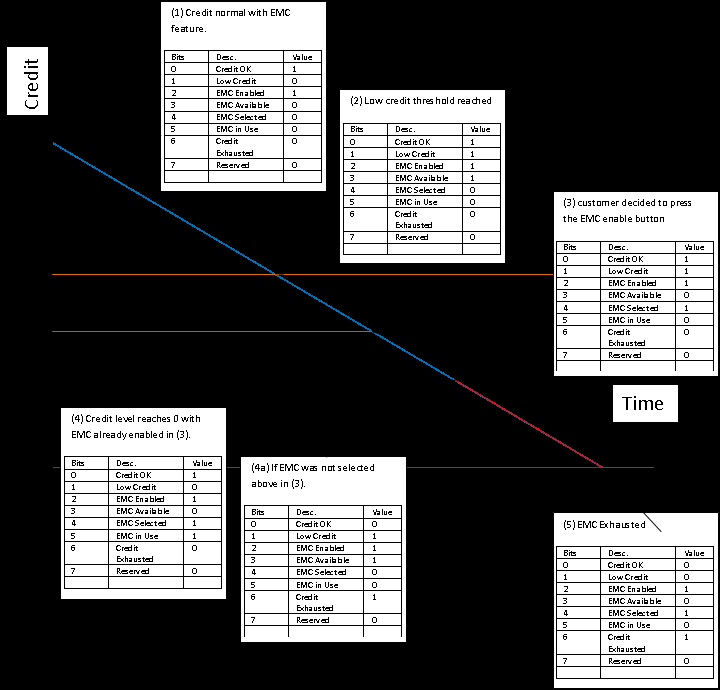
10.8.4.1.1 Statuses Explained - an Example ¶
Below is a brief explanation of each status noted on the diagram above in order to give a better indication of what the meter is doing at any given point. Imagine that the diagonal blue line represents the customer’s credit, and when it turns into a plum colored diagonal line below the Time-Axis, the reader can assume that the meter is in negative credit, and Emergency Credit may or may not be invoked depending on the use case.
The definitions of functionality below are modeled on the current understanding of Prepayment functionality. However there could well be a situation when meters are not disconnected when reaching the zero credit point, or indeed when Emergency Credit has been exhausted. This description is designed to aid understanding only and not specify meter functionality (see Figure 10-154):
- At this stage the meter has customer credit and has the Emergency Credit feature enabled. This means that when the meter reaches the Low Credit threshold, Emergency Credit will be available to be selected by the end user.
- At this point the meter still has customer credit available, but the meter has now reached the Low Credit threshold. This means that the end user may, should they choose to do so, select to engage the Emergency Credit. This will allow the meter to pass into a predefined amount of negative credit, without disconnection, when the meter credit reaches zero. The Emergency Credit can be selected at any point below the Low Credit threshold, but if this is not done before the customer’s credit reaches zero then the meter will disconnect the supply.
- Same as above except this is demonstrating the point at which the end user actually engages the Emergency Credit function, and in doing so making Emergency Credit no longer available for selection again.
- Meter reaches zero credit with Emergency Credit function engaged. This means that the option to engage Emergency Credit functionality is not available to the end user (as he has already done it), but the meter is still connected and ‘Credit OK’ remains set because Emergency Credit is available. a. In this case the end user has decided not to engage Emergency Credit functionality before the credit level reaches zero, thereby removing the ‘Credit OK’ flag once the available credit has reached zero. The Emergency Credit function is still available, but requires end user interaction in order to engage it.
- At this point Emergency Credit is exhausted and the meter is assumed to have disconnected (this may not be the case depending on the supplier’s requirements). There is no available credit or Emergency Credit, and it is not possible for the end user to engage the Emergency Credit function. At this point in time, when all credit is exhausted, the meter and IHD will need to display the “debt to clear”. This is the amount of credit that must be put onto the meter in order to exceed the Low Credit warning threshold and get the meter back on supply, with Emergency Credit available again (credit above zero will get the lights back on but Emergency Credit will not be available until credit is above the Low Credit Warning Threshold). The ‘debt to clear’ will be transmitted by way of the Credit Remaining register (as it will be a negative number at this time, made up of the debt that the meter has accrued while in Emergency Credit).
8. If Standing Charge, debt repayment charges and energy charges are normally being paid, these
may not all be charged during an Emergency Credit period, but will still accrue in the background until Emergency Credit is exhausted (at point 5). Depending on energy supplier preference, it SHALL be configurable whether or not Emergency Credit is used to pay debt charges. The Emergency Credit value, along with debt charges accrued in the background while Emergency Credit was in operation, will be added to the ‘debt to clear’ register in the meter when Emergency Credit is exhausted, and displayed on the Credit Remaining register as a negative number.
10.9 Calendar214 ¶
10.9.1 Overview ¶
Please see Chapter 2 for a general cluster overview defining cluster architecture, revision, classification, identification, etc.
214 NEW CERTIFIABLE CLUSTER IN THIS LIBRARY
The Calendar cluster implements commands to transfer calendar information within the premises. The calendar information is distributed by an ESI.
Figure 10-155. Calendar Cluster Client Server Example ¶
Smart Energy ESI
Device
C
S
C
S
= Client
= Server
Note: Device names are examples for illustration purposes only
The server shall be able to store at least two instances of the calendar, typically the current and the next one. It is recommended that a client is also capable of storing 2 instances. It is also recommended that a Calendar server may additionally store at least one previous instance of the calendar.
The Calendar server shall send unsolicited PublishCalendar and PublishSpecialDays commands to its clients if they are bound to it. Other calendar items such as Day Profiles, Week Profiles and Season information shall not be sent unsolicited. The clients shall send corresponding Get… commands to fetch the information from the server as necessary. The Calendar server shall publish new calendars, to clients that have bound to receive them, as soon as they become available. Devices with limited resources, and which cannot therefore handle multiple calendars, should NOT ‘register’ (i.e. bind to the server) to receive unsolicited Calendar cluster commands. If there is no next calendar available, a Default Response shall be returned with status NOT_FOUND; the ESI shall publish the information as soon as it gets it from the HES. Devices (particularly battery-powered devices) should regularly check for updates to calendar items.
The Calendar must be replaced as a whole; only the Special Day Table can be changed independently. To uniquely identify the parts of a calendar, an Issuer Calendar ID is used. All parts belonging to the same calendar must have the same Issuer Calendar ID. All parts of a particular calendar shall be successfully retrieved from the server before a client can use that calendar. It is anticipated that a change to any part of a calendar, other than a Special Day Table, will result in a new calendar and a new Issuer Calendar ID.
The Calendar cluster will support all of the following calendar types:
- Delivered
- Received
- Delivered and Received
- Friendly Credit
- Auxiliary Load Switch
Each calendar has three associated tables, a Season table, a Week Profile table and a Day Profile table. These are described in Table 10-171. In addition, there is a Special Day Table which allows special days to be defined (days where a special switching behavior overrides the normal operation). Each entry in the Special
Day table contains a date together with the Day ID for a Day Profile (in the associated Calendar’s Day Profile table) to be used on that date.
Table 10-171. Calendar Data Structures ¶
| Table | Description |
|---|---|
| Season Table | Contains a list of Seasons defined by their starting date and a reference to the Week Profile to be executed. The list is arranged according to Season Start Date. The Week ID Ref defines the Week Profile active in this Season. If no season is defined, it is expected that the calendar will have one repeating Week Profile. NOTE: A 'Season', while normally considered to be a 3 or 6 month period, could be used for other arbitrary periods e.g. monthly or quarterly. The minimum reso- lution is 1 day, although a week would normally be the smallest interval. |
| Week Profile Ta- ble | Contains an array of Week Profiles to be used in the different Seasons. For each Week Profile, the Day Profile for every day of a week is identified. Monday to Sunday reference the Day ID of the Day Profile to be used for the corresponding day. The same Day Profile may be used for more than one day of the week. If no Week Profile is defined, it is expected that the calendar will have one repeating Day Profile. |
| Day Profile Table | Contains an array of Day Profiles, identified by their Day ID. Each Day Profile contains a list of scheduled actions and is defined by a script to be executed at the corresponding activation time (Start Time). The list is arranged according to Start Time. |
| Special Day Ta- ble | Defines special dates. On such dates, a special switching behavior overrides the normal one defined by the Season and Week Profile Tables. The Day Profile referenced through the Day ID in the Special Days Table acti- vates the Day Schedule of the corresponding Day Profile. |
All dates and times shall be defined according to UTC, Standard or Local time. Alternatively, the Season Table may be used to accommodate requirements such as daylight saving.
Figure 10-156 shows a recommended Calendar command sequence (noting that this sequence is for a main- ¶
powered Smart Energy Device) :
Figure 10-156. Recommended Calendar Command Sequence ¶
Head
Smart Energy ESI End
Device
New Calendar
PublishCalendar command
GetDayProfiles command
PublishDayProfile command
GetWeekProfiles command
PublishWeekProfile command
GetSeasons command
PublishSeasons command
GetSpecialDays commanda
PublishSpecialDays commanda
New Special Days
PublishSpecialDays command
aAlthough not necessary, it is thought wise to check for updates when a new calendar is published
10.9.1.1 Revision History ¶
The global ClusterRevision attribute value SHALL be the highest revision number in the table below.
| Rev | Description |
|---|---|
| 1 | mandatory global ClusterRevision attribute added; Added from SE1.4; CCB 2068 |
10.9.1.2 Classification ¶
| Hierarchy | Role | PICS Code | Primary Transaction |
|---|---|---|---|
| Base | Application | SECA | Type 1 (client to server) |
10.9.1.3 Cluster Identifiers ¶
| Identifier | Name |
|---|---|
| 0x0707 | Calendar (Smart Energy) |
10.9.2 Server ¶
10.9.2.1 Dependencies ¶
A device implementing the Calendar server shall also implement the Price server. A device implementing the Calendar client shall also implement the Price client. The commodity type of a Calendar server shall be inferred from that of the corresponding Price server (i.e. located on the same device/endpoint). It is expected that the TOU calendar and tariff information of the Price cluster is provided by the same utility supplier. The ProviderID for the TOU calendar shall be obtained from the Tariff Information Set of the Price Cluster.
10.9.2.2 Attributes ¶
For convenience, the attributes defined in this cluster are arranged into sets of related attributes; each set can contain up to 256 attributes. Attribute identifiers are encoded such that the most significant Octet specifies the attribute set and the least significant Octet specifies the attribute within the set. The currently defined attribute sets are listed in the following Table 10-172.
Table 10-172. Calendar Cluster Server Attribute Sets ¶
| Attribute Set Identi- fier | Description |
|---|---|
| 0x00 | Auxiliary Switch Label Attribute Set |
10.9.2.2.1 Auxiliary Switch Label Attribute Set ¶
Table 10-173. Auxiliary Switch Label Attribute Set ¶
| Id | Name | Type | Range | Acc | Def | M |
|---|---|---|---|---|---|---|
| 0x0000 | AuxSwitch1Label | octstr | 1 to 23 Octets | RW | “Auxiliary 1” | O |
| 0x0001 | AuxSwitch2Label | octstr | 1 to 23 Octets | RW | “Auxiliary 2” | O |
| 0x0002 | AuxSwitch3Label | octstr | 1 to 23 Octets | RW | “Auxiliary 3” | O |
| 0x0003 | AuxSwitch4Label | octstr | 1 to 23 Octets | RW | “Auxiliary 4” | O |
| 0x0004 | AuxSwitch5Label | octstr | 1 to 23 Octets | RW | “Auxiliary 5” | O |
| 0x0005 | AuxSwitch6Label | octstr | 1 to 23 Octets | RW | “Auxiliary 6” | O |
| Id | Name | Type | Range | Acc | Def | M |
|---|---|---|---|---|---|---|
| 0x0006 | AuxSwitch7Label | octstr | 1 to 23 Octets | RW | “Auxiliary 7” | O |
| 0x0007 | AuxSwitch8Label | octstr | 1 to 23 Octets | RW | “Auxiliary 8” | O |
10.9.2.2.1.1 AuxSwitchNLabel Attributes ¶
The AuxSwitchNLabel attributes provide a method for assigning a label to an Auxiliary Switch. The AuxSwitchNLabel attributes are Octet String fields capable of storing 22-character strings (the first Octet indicates length) encoded in the UTF-8 format.
10.9.2.3 Commands Generated ¶
Table 10-174 lists commands that are generated by the server. ¶
Table 10-174. Cluster-specific Commands Sent by the Server ¶
| Command Identifier Field Value | Description | Mandatory / Optional |
|---|---|---|
| 0x00 | PublishCalendar | M |
| 0x01 | PublishDayProfile | M |
| 0x02 | PublishWeekProfile | M |
| 0x03 | PublishSeasons | M |
| 0x04 | PublishSpecialDays | M |
| 0x05 | CancelCalendar | O |
10.9.2.3.1 PublishCalendar Command ¶
The PublishCalendar command is published in response to a GetCalendar command or if new calendar information is available. The Calendar must be replaced as a whole; only the Special Day Table can be changed independently. All parts of a calendar instance shall have the same Calendar ID.
Nested and overlapping calendars are not allowed. In the case of overlapping calendars of the same type (calendar type), the calendar with the newer IssuerCalendarID takes priority over all nested and overlapping calendars. All existing calendar instances that overlap, even partially, should be removed. The only exception to this is if a calendar instance with a newer Issuer Event ID overlaps with the end of the current active calendar but is not yet active, then the active calendar is not deleted but modified so that the active calendar ends when the new calendar begins.
10.9.2.3.1.1 Payload Format ¶
Figure 10-157. Format of the PublishCalendar Command Payload ¶
| Octets | 4 | 4 | 4 | 4 | 1 | 1 | 1..13 |
|---|---|---|---|---|---|---|---|
| Data Type | uint32 | uint32 | uint32 | UTC | enum8 | uint8 | octstr |
| Field Name | Provider Id (M) | Issuer Event ID (M) | Issuer Calendar ID (M) | Start Time (M) | Calendar Type (M) | Calendar Time Reference (M) | Calendar Name (M) |
| Octets | 1 | 1 | 1 |
|---|---|---|---|
| Data Type | Unsigned 8-bit In- teger | Unsigned 8-bit In- teger | Unsigned 8-bit In- teger |
| Field Name | Number of Sea- sons (M) | Number of Week Profiles (M) | Number of Day Profiles (M) |
10.9.2.3.1.2 Payload Details ¶
Provider Id (mandatory): An unsigned 32-bit field containing a unique identifier for the commodity provider. This field allows differentiation in deregulated markets where multiple commodity providers may be available.
Issuer Event ID (mandatory): Unique identifier generated by the commodity provider. When new information is provided that replaces older information for the same time period, this field allows devices to determine which information is newer. The value contained in this field is a unique number managed by upstream servers or a UTC based time stamp (UTC data type) identifying when the Publish command was issued. Thus, newer information will have a value in the Issuer Event ID field that is larger than older information.
Issuer Calendar ID (mandatory): Unique identifier generated by the commodity Supplier to identify a particular calendar.
Start Time (mandatory): A UTC field to denote the time at which the published calendar becomes valid. A start date/time of 0x00000000 shall indicate that the command should be executed immediately.
Calendar Type (mandatory): An 8-bit enumeration identifying the type of calendar published in this command. Table 10-175 details the enumeration of this field. Generation Meters shall use the ‘Received’ Calendar.
Table 10-175. Calendar Type Enumeration ¶
| Value | Description |
|---|---|
| 0x00 | Delivered Calendar |
| 0x01 | Received Calendar |
| 0x02 | Delivered and Received Calendar |
| 0x03 | Friendly Credit Calendar |
| 0x04 | Auxillary Load Switch Calendar |
Calendar Time Reference (mandatory): This field indicates how the Start Times contained in the calendar are to be interpreted. The following table shows possible values:
Table 10-176. Calendar Time Reference Enumeration ¶
| Value | Description |
|---|---|
| 0x00 | UTC time |
| 0x01 | Standard time |
| 0x02 | Local time |
Standard time refers to UTC time adjusted according to the local time zone.
Local time refers to Standard time adjusted according to local daylight savings regulations.
Where the optional Standard and/or Local Time (as applicable) are not available on the Time cluster server (and are not managed locally by the meter), the Calendar Time Reference shall default to UTC time.
Calendar Name (mandatory): The CalendarName provides a method for utilities to assign a name to the entire calendar. The CalendarName is an Octet String field capable of storing a 12 character string (the first Octet indicates length) encoded in the UTF-8 format.
Number of Seasons (mandatory): Number of entries in the Seasons Table. A value of 0x00 means no Season defined.
Number of Week Profiles (mandatory): Number of week profiles in the Week Profile Table. A value of 0x00 means no Week Profile defined.
Number of Day Profiles (mandatory): Number of day profiles in the Day Profile Table.
10.9.2.3.2 PublishDayProfile Command ¶
The PublishDayProfile command is published in response to a GetDayProfile command. If the IssuerCalen-darID does not match with one of the stored calendar instances, the client shall ignore the command and respond using Default Response with a status response of NOT_FOUND.
The Calendar server shall send only the number of Schedule Entries belonging to this calendar instance. Server and clients shall be able to store at least 1 DayProfile for TOU and Auxiliary Load Switch calendars and three DayProfiles for a Friendly Credit calendar, and at least one ScheduleEntries per day profile. If the client is not able to store all ScheduleEntries, the device should respond using Default Response with a status response of INSUFFICIENT_SPACE.
The ESI may send as many PublishDayProfile commands as needed, if the maximum application payload is not sufficient to transfer all ScheduleEntries in one command. In this case:
- The ScheduleEntries shall be arranged in a linear array ordered by the start time.
- The first command shall have CommandIndex set to 0, the second to 1 and so on.
- The Total Number of Commands sub-field shall be set in all commands to the total number of com-mands being transferred.
- The Total Number of Schedule Entries field shall be set in all commands to the total number of entries being transferred with the whole set of commands.
- All associated commands shall use the same value of Issuer Event ID.
10.9.2.3.2.1 Payload Format ¶
Figure 10-158. Format of the PublishDayProfile Command Payload ¶
| Oc- tets | 4 | 4 | 4 | 1 | 1 | 1 | 1 |
|---|---|---|---|---|---|---|---|
| Data Type | uint32 | uint32 | uint32 | uint8 | uint8 | uint8 | uint8 |
| Field Name | Pro- vider Id (M) | Issuer Event ID (M) | Issuer Calen- dar ID (M) | Day ID (M) | Total Number of Sched- ule En- tries (M) | Com- mand In- dex (M) | Total Number of Com- mands (M) |
|---|
| Oc- tets | 1 | Varia- ble |
|---|---|---|
| Data Type | enum8 | Series of Sched- ule En- tries |
| Field Name | Calen- dar Type (M) | Day Sched- ule En- tries |
10.9.2.3.2.2 Payload Details ¶
Provider Id (mandatory): An unsigned 32-bit field containing a unique identifier for the commodity provider. This field allows differentiation in deregulated markets where multiple commodity providers may be available.
Issuer Event ID (mandatory): Unique identifier generated by the commodity provider. When new information is provided that replaces older information for the same time period, this field allows devices to determine which information is newer. The value contained in this field is a unique number managed by upstream servers or a UTC based time stamp (UTC data type) identifying when the Publish command was issued. Thus, newer information will have a value in the Issuer Event ID field that is larger than older information.
Issuer Calendar ID (mandatory): Unique identifier generated by the commodity supplier. All parts of a calendar instance shall have the same Issuer Calendar ID.
Day ID (mandatory): Unique identifier generated by the commodity supplier. The Day ID is used as reference to assign a Day Profile to a Special Day or days in a Week Profile. When generating calendars, Day IDs shall be allocated sequentially, starting from 1.
Total Number of Schedule Entries (mandatory): An 8-bit integer representing the total number of ScheduleEntries in this Day Profile.
Command Index (mandatory): The CommandIndex is used to count the payload fragments in the case where the entire payload does not fit into one message. The CommandIndex starts at 0 and is incremented for each fragment belonging to the same command.
Total Number of Commands (mandatory): In the case where the entire payload does not fit into one message, the Total Number of Commands field indicates the total number of sub-commands in the message.
Calendar Type (mandatory): An 8-bit enumeration identifying the type of calendar published in this command. Table 10-175 details the enumeration of this field. This field identifies the type of Day Schedule Entry included in this command.
10.9.2.3.2.3 Day Schedule Entries ¶
The format of Day Schedule entries is dependent on the Calendar Type (see Table 10-175). If the Calendar Type is 0x00 – 0x02 then Rate Start Times shall be used. If the value is 0x03 then the Friendly Credit Start
Times shall be used. If the value is 0x04 then the Auxilliary Load Start Times shall be used. A value other than these would be invalid.
10.9.2.3.2.3.1 Schedule Entries for Rate Start Times ¶
Schedule entries consist of a start time and the active price tier:
Figure 10-159. Schedule Entries for Rate Start Times Command Sub-Payload ¶
| Octets | 2 | 1 |
|---|---|---|
| Data Type | uint16 | enum8 |
| Field Name | Start Time (M) | Price Tier (M) |
Start Time (mandatory): The Start Time is represented in minutes from midnight. ScheduleEntries must be arranged in ascending order of Start Times. The first Schedule Entry must have 0x0000 (midnight) as the StartTime.
Price Tier (mandatory): This is the current price tier that is valid until the start time of the next Schedule Entry.
10.9.2.3.2.3.2 Schedule Entries for Friendly Credit Start Times ¶
A Friendly Credit Start Time entry consists of a start time and an indication if Friendly Credit is available.
Figure 10-160. Schedule Entries for Friendly Credit Start Times Command Sub-Payload ¶
| Octets | 2 | 1 |
|---|---|---|
| Data Type | uint16 | bool |
| Field Name | Start Time (M) | Friendly Credit Enable (M) |
Start Time (mandatory): The Start Time is represented in minutes from midnight. ScheduleEntries must be arranged in ascending order of Start Times. The first Schedule Entry must have 0x0000 (midnight) as the StartTime.
Friendly Credit Enable (mandatory): The Friendly Credit Enable field is a Boolean denoting if the Friendly Credit period is available for the consumer to use. A value of 1 means it is enabled and a 0 means that the Friendly Credit period is not available for the consumer to use.
10.9.2.3.2.3.3 Schedule Entries for Auxilliary Load Start Times ¶
An Auxilliary Load Start Time entry consists of a start time, the relevant Auxiliary Switch and the state of the switch as a result of this action.
Figure 10-161. Schedule Entries for Auxilliary Load Start Times Command Sub-Payload ¶
| Octets | 2 | 1 |
|---|---|---|
| Data Type | uint16 | map8 |
| Field Name | Start Time (M) | Auxiliary Load Switch State (M) |
Start Time (mandatory): The Start Time is represented in minutes from midnight. ScheduleEntries must be arranged in ascending order of Start Times. The first Schedule Entry must have 0x0000 (midnight) as the StartTime.
Auxiliary Load Switch State (mandatory): The required status of the auxiliary switches is indicated by the state of the bits. Bit0 correspond to Auxiliary Switch 1 and bit7 corresponds to Auxiliary Switch 8. A bit set to “1” indicates an ON state and a bit set to “0” indicates an OFF state.
10.9.2.3.3 PublishWeekProfile Command ¶
The PublishWeekProfile command is published in response to a GetWeekProfile command. If the IssuerCal-endarID does not match with one of the stored calendar instances, the client shall ignore the command and respond using Default Response with a status response of NOT_FOUND.
The Calendar server shall send only the number of WeekProfiles belonging to this calendar instance. Server and clients shall be able to store at least 4 WeekProfiles for TOU calendars, and 1 WeekProfile for Friendly Credit and Auxiliary Load Switch calendars. If the client is not able to store all entries, the device should respond using Default Response with a status response of INSUFFICIENT_SPACE.
10.9.2.3.3.1 Payload Format ¶
Figure 10-162. Format of the PublishWeekProfile Command Payload ¶
| Octets | 4 | 4 | 4 | 1 |
|---|---|---|---|---|
| Data Type | uint32 | uint32 | uint32 | uint8 |
| Field Name | Provider Id (M) | Issuer Event ID (M) | Issuer Calendar ID (M) | Week ID (M) |
| 1 | 1 | 1 | 1 | 1 | 1 | 1 |
|---|---|---|---|---|---|---|
| uint8 | uint8 | uint8 | uint8 | uint8 | uint8 | uint8 |
| Day ID Ref Monday | Day ID Ref Tuesday | Day ID Ref Wednesday | Day ID Ref Thurs- day | Day ID Ref Friday | Day ID Ref Satur- day | Day ID Ref Sun- day |
10.9.2.3.3.2 Payload Details ¶
Provider Id (mandatory): An unsigned 32-bit field containing a unique identifier for the commodity provider. This field allows differentiation in deregulated markets where multiple commodity providers may be available.
Issuer Event ID (mandatory): Unique identifier generated by the commodity provider. When new information is provided that replaces older information for the same time period, this field allows devices to determine which information is newer. The value contained in this field is a unique number managed by upstream servers or a UTC based time stamp (UTC data type) identifying when the Publish command was issued. Thus, newer information will have a value in the Issuer Event ID field that is larger than older information.
Issuer Calendar ID (mandatory): Unique identifier generated by the commodity supplier. All parts of a calendar instance shall have the same Issuer Calendar ID.
Week ID (mandatory): Unique identifier generated by the commodity supplier. The Week ID is used as reference to assign a Week Profile to a Season Entry. When generating calendars, Week IDs shall be allocated sequentially, starting from 1.
Day ID Ref Monday until Day ID Ref Sunday (mandatory): Reference to the related Day Profile entry.
10.9.2.3.4 PublishSeasons Command ¶
The PublishSeasons command is published in response to a GetSeason command. If the IssuerCalendarID does not match with one of the stored calendar instances, the client shall ignore the command and respond using Default Response with a status response of NOT_FOUND.
The Calendar server shall send only the number of SeasonEntries belonging to this calendar instance. Server and clients shall be able to store at least 4 SeasonEntries for TOU calendars, and 1 SeasonEntry for Friendly Credit and Auxiliary Load Switch calendars. If the client is not able to store all Season Entries, the device should respond using Default Response with a status response of INSUFFICIENT_SPACE.
The ESI may send as many PublishSeasons commands as needed, if the maximum application payload is not sufficient to transfer all Season Entries in one command. In this case:
- The SeasonEntries shall be arranged in a linear array ordered by the date.
- The first command shall have Command Index set to 0, the second to 1 and so on.
- The total number of seasons being transferred with the whole set of commands is known from the previously received PublishCalendar command.
- All associated commands shall use the same value of Issuer Event ID.
10.9.2.3.4.1 Payload Format ¶
Figure 10-163. Format of the PublishSeasons Command Payload ¶
| Octets | 4 | 4 | 4 | 1 | 1 | Variable |
|---|---|---|---|---|---|---|
| Data Type | uint32 | uint32 | uint32 | uint8 | uint8 | Series of Season Entries |
| Field Name | Provider Id (M) | Issuer Event ID (M) | Issuer Calendar ID (M) | Com- mand In- dex (M) | Total Number of Com- mands (M) | Season En- try |
10.9.2.3.4.2 Payload Details ¶
Provider Id (mandatory): An unsigned 32-bit field containing a unique identifier for the commodity provider. This field allows differentiation in deregulated markets where multiple commodity providers may be available.
Issuer Event ID (mandatory): Unique identifier generated by the commodity provider. When new information is provided that replaces older information for the same time period, this field allows devices to determine which information is newer. The value contained in this field is a unique number managed by upstream servers or a UTC based time stamp (UTC data type) identifying when the Publish command was issued. Thus, newer information will have a value in the Issuer Event ID field that is larger than older information.
Issuer Calendar ID (mandatory): Unique identifier generated by the commodity supplier. All parts of a calendar instance shall have the same Issuer Calendar ID.
Command Index (mandatory): The Command Index is used to count the payload fragments in the case where the entire payload does not fit into one message. The Command Index starts at 0 and is incremented for each fragment belonging to the same command.
Total Number of Commands (mandatory): In the case where the entire payload does not fit into one message, the Total Number of Commands field indicates the total number of sub-commands in the message.
Season Entry: A Season Entry consists of a Season Start Date and the reference (Week ID Ref) to the related Week Profile entry. The Start Date of the Season Entries must be arranged in ascending order. The active season is valid until the Season Start Date of the next Season Entry.
Figure 10-164. Format of the Season Entry Sub-Payload ¶
| Octets | 4 | 1 |
|---|---|---|
| Data Type | date | uint8 |
| Field Name | Season Start Date (M) | Week ID Ref (M) |
10.9.2.3.5 PublishSpecialDays Command ¶
The PublishSpecialDays command is published in response to a GetSpecialDays command or if a calendar update is available. If the Calendar Type does not match with one of the stored calendar instances, the client shall ignore the command and respond using Default Response with a status response of NOT_FOUND.
The Calendar server shall send only the number of SpecialDayEntries belonging to this calendar instance. Server and clients shall be able to store at least 25215 SpecialDayEntries. If the client is not able to store all SpecialDayEntries, the device should respond using Default Response with a status response of INSUFFI- CIENT_SPACE.
If the maximum application payload is not sufficient to transfer all SpecialDayEntries in one command, the ESI may send as many PublishSpecialDays commands as needed. In this case:
- The SpecialDayEntries shall be arranged in a linear array ordered by the date.
- The first command shall have Command Index set to 0, the second to 1 and so on.
- The Total Number of SpecialDays field shall be set in all commands to the total number of entries being transferred with the whole set of commands.
- All associated commands shall use the same value of Issuer Event ID.
Note that, in this case, it is the client’s responsibility to ensure that it receives all associated PublishSpecial- Days commands before any of the payloads can be used.
10.9.2.3.5.1 Payload Format ¶
The PublishSpecialDays command shall be formatted as illustrated in Figure 10-165:
Figure 10-165. Format of the PublishSpecialDays Command Payload ¶
| Oc- tets | 4 | 4 | 4 | 4 | 1 | 1 |
|---|---|---|---|---|---|---|
| Data Type | uint32 | uint32 | uint32 | UTC | enum8 | uint8 |
215 CCB 2068
| Field Name | Provider Id (M) | Issuer Event ID (M) | Issuer Calendar Id (M) | Start Time (M) | Calendar Type (M) | Total Num- ber of Spe- cialDays (M) |
|---|
| Oc- tets | 1 | 1 | Variable |
|---|---|---|---|
| Data Type | uint8 | uint8 | Series of Special Days |
| Field Name | Com- mand In- dex (M) | Total Number of Com- mands (M) | Special Day Entry |
10.9.2.3.5.2 Payload Details ¶
Provider Id (mandatory): An unsigned 32-bit field containing a unique identifier for the commodity provider. This field allows differentiation in deregulated markets where multiple commodity providers may be available.
Issuer Event ID (mandatory): Unique identifier generated by the commodity provider. When new information is provided that replaces older information for the same time period, this field allows devices to determine which information is newer. The value contained in this field is a unique number managed by upstream servers or a UTC based time stamp (UTC data type) identifying when the Publish command was issued. Thus, newer information will have a value in the Issuer Event ID field that is larger than older information. If multiple PublishSpecialDays commands are needed to transfer the whole Special Day Table, the commands belonging to the same Special Day Table shall use the same IssuerEventID and StartTime.
Issuer Calendar ID (mandatory): Unique identifier generated by the commodity Supplier. All parts of a calendar instance shall have the same Issuer Calendar ID.
Start Time (mandatory): A UTC field to denote the time at which the Special Day Table becomes valid. A start date/time of 0x00000000 shall indicate that the command should be executed immediately. A start date/time of 0xFFFFFFFF shall cause an existing PublishSpecialDays command with the same Provider ID and Issuer Event ID to be cancelled (note that, in markets where permanently active price information is required for billing purposes, it is recommended that a replacement/superseding PublishSpecialDays command is used in place of this cancellation mechanism).
Calendar Type (mandatory): An 8-bit enumeration identifying the type of calendar this day profile belongs to. Generation Meters shall use the ‘Received’ Calendar. See Table 10-175.
Total Number of SpecialDays (mandatory): An 8-bit integer representing the total number of Special Day entries in this Special Day Table.
Command Index (mandatory): The Command Index is used to count the payload fragments in the case where the entire payload does not fit into one message. The Command Index starts at 0 and is incremented for each fragment belonging to the same command.
Total Number of Commands (mandatory): In the case where the entire payload does not fit into one message, the Total Number of Commands field indicates the total number of sub-commands in the message.
SpecialDayEntry: A SpecialDayEntry consists of the Special Day Date and a reference (Day ID Ref) to the related Day Profile entry. The dates of the Special Day Table must be arranged in ascending order.
Figure 10-166. Format of the SpecialDayEntry Sub-Payload ¶
| Octets | 4 | 1 |
|---|---|---|
| Data Type | Date | uint8 |
| Field Name | Special Day Date (M) | Day ID Ref (M) |
10.9.2.3.6 CancelCalendar Command ¶
The CancelCalendar command indicates that all data associated with a particular calendar instance should be discarded.
In markets where permanently active price (and hence calendar) information is required for billing purposes, it is recommended that replacement/superseding PublishCalendar, PublishDayProfile, PublishWeek- Profile and PublishSeasons commands are used in place of a CancelCalendar command. The exception is a ‘Friendly Credit’ calendar, where an instance is not always required.
10.9.2.3.6.1 Payload Format ¶
The CancelCalendar command shall be formatted as illustrated in Figure 10-167:
Figure 10-167. Format of the CancelCalendar Command Payload ¶
| Oc- tets | 4 | 4 | 1 |
|---|---|---|---|
| Data Type | uint32 | uint32 | enum8 |
| Field Name | Provider Id (M) | Issuer Calendar Id (M) | Calendar Type (M) |
10.9.2.3.6.2 Payload Details ¶
Provider Id (mandatory): An unsigned 32-bit field containing a unique identifier for the commodity provider. This field allows differentiation in deregulated markets where multiple commodity providers may be available.
Issuer Calendar ID (mandatory): Unique identifier generated by the commodity Supplier. All parts of a calendar instance shall have the same Issuer Calendar ID.
Calendar Type (mandatory): An 8-bit enumeration identifying the type of calendar to be cancelled by this command. Table 10-175 details the enumeration of this field.
10.9.2.3.6.3 Effect on Receipt ¶
On receipt of this command, a client device shall discard all instances of PublishCalendar, PublishDayPro-file, PublishWeekProfile, PublishSeasons and PublishSpecialDays commands associated with the stated Provider ID, Calendar Type and Issuer Calendar ID.
10.9.2.4 Commands Received ¶
Table 10-177 lists cluster-specific commands that are received by the server. ¶
Table 10-177. Cluster -specific Commands Received by the Calendar Cluster Server ¶
| Command Identifier FieldValue | Description | M |
|---|---|---|
| 0x00 | GetCalendar | O |
| 0x01 | GetDayProfiles | O |
| 0x02 | GetWeekProfiles | O |
| 0x03 | GetSeasons | O |
| 0x04 | GetSpecialDays | O |
| 0x05 | GetCalendarCancellation | O |
10.9.2.4.1 GetCalendar Command ¶
This command initiates PublishCalendar command(s) for scheduled Calendar updates. To obtain the complete Calendar details, further GetDayProfiles, GetWeekProfiles and GetSeasons commands must be sent using the IssuerCalendarID obtained from the appropriate PublishCalendar command.
10.9.2.4.1.1 Payload Format ¶
Figure 10-168. Format of the GetCalendar Command Payload ¶
| Octets | 4 | 4 | 1 | 1 | 4 |
|---|---|---|---|---|---|
| Data Type | UTC | uint32 | uint8 | enum8 | uint32 |
| Field Name | Earliest Start Time (M) | Min. Is- suer Event ID (M) | Number of Calendars (M) | Calendar Type (M) | Provider Id (M) |
10.9.2.4.1.2 Payload Details ¶
Earliest Start Time (mandatory): UTC Timestamp indicating the earliest start time of calendars to be returned by the corresponding PublishCalendar command. The first returned PublishCalendar command shall be the instance which is active or becomes active at or after the stated Earliest Start Time. If more than one instance is requested, the active and scheduled instances shall be sent with ascending ordered Start Time.
Min. Issuer Event ID (mandatory): A 32-bit integer representing the minimum Issuer Event ID of calendars to be returned by the corresponding PublishCalendar command. A value of 0xFFFFFFFF means not specified; the server shall return calendars irrespective of the value of the Issuer Event ID.
Number of Calendars (mandatory): An 8-bit integer which represents the maximum number of Pub-lishCalendar commands that the client is willing to receive in response to this command. A value of 0 would indicate all available PublishCalendar commands shall be returned.
Calendar Type (mandatory): An 8-bit enumeration identifying the calendar type of the requested calendar. Generation Meters shall use the ‘Received’ Calendar. See Table 10-175. A value of 0xFF means not specified. If the CalendarType is not specified, the server shall return calendars regardless of its type.
Provider Id (mandatory): An unsigned 32-bit field containing a unique identifier for the commodity provider. This field allows differentiation in deregulated markets where multiple commodity providers may be
available. A value of 0xFFFFFFFF means not specified; the server shall return calendars irrespective of the value of the Provider Id.
10.9.2.4.2 GetDayProfiles Command ¶
This command initiates one or more PublishDayProfile commands for the referenced Calendar.
10.9.2.4.2.1 Payload Format ¶
Figure 10-169. Format of the GetDayProfiles Command Payload ¶
| Octets | 4 | 4 | 1 | 1 |
|---|---|---|---|---|
| Data Type | uint32 | uint32 | uint8 | uint8 |
| Field Name | Provider Id (M) | Issuer Calen- dar ID (M) | Start Day Id (M) | Number of Days (M) |
10.9.2.4.2.2 Payload Details ¶
Provider Id (mandatory): An unsigned 32-bit field containing a unique identifier for the commodity provider. This field allows differentiation in deregulated markets where multiple commodity providers may be available. A value of 0xFFFFFFFF means not specified; the server shall return day profiles irrespective of the value of the Provider Id.
Issuer Calendar ID (mandatory): IssuerCalendarID of the calendar to which the requested Day Profiles belong.
Start Day ID (mandatory): Unique identifier for a Day Profile generated by the commodity supplier. The Start Day ID indicates the minimum ID of Day Profiles to be returned by the corresponding PublishDayPro-file command. A value of 0x01 indicates that the (first) PublishDayProfile command should contain the profile with the lowest Day ID held by the server. A value of 0x00 is unused.
Number of Days (mandatory): An 8-bit integer which represents the maximum number of Day Profiles that the client is willing to receive in response to this command. A value of 0x00 will cause the return of all day profiles with an ID equal to or greater than the Start Day ID.
Note: A Day Profile table may need multiple PublishDayProfile commands to be transmitted to the client.
10.9.2.4.3 GetWeekProfiles Command ¶
This command initiates one or more PublishWeekProfile commands for the referenced Calendar.
10.9.2.4.3.1 Payload Format ¶
Figure 10-170. Format of the GetWeekProfiles Command Payload ¶
| Octets | 4 | 4 | 1 | 1 |
|---|---|---|---|---|
| Data Type | uint32 | uint32 | uint8 | uint8 |
| Field Name | Provider Id (M) | Issuer Calen- dar ID (M) | Start Week Id (M) | Number of Weeks (M) |
10.9.2.4.3.2 Payload Details ¶
Provider Id (mandatory): An unsigned 32-bit field containing a unique identifier for the commodity provider. This field allows differentiation in deregulated markets where multiple commodity providers may be available. A value of 0xFFFFFFFF means not specified; the server shall return week profiles irrespective of the value of the Provider Id.
Issuer Calendar ID (mandatory): IssuerCalendarID of the calendar to which the requested Week Profiles belong.
Start Week ID (mandatory): Unique identifier for a Week Profile generated by the commodity supplier. The Start Week ID indicates the minimum ID of Week Profiles to be returned by the corresponding Publish- WeekProfile command. A value of 0x01 indicates that the PublishWeekProfile command should contain the profile with the lowest Week ID held by the server. A value of 0x00 is unused.
Number of Weeks (mandatory): An 8-bit integer which represents the maximum number of Week Profiles that the client is willing to receive in response to this command. A value of 0x00 will cause the return of all week profiles with an ID equal to or greater than the Start Week ID.
10.9.2.4.4 GetSeasons Command ¶
This command initiates one or more PublishSeasons commands for the referenced Calendar.
10.9.2.4.4.1 Payload Format ¶
Figure 10-171. Format of the GetSeasons Command Payload ¶
| Octets | 4 | 4 |
|---|---|---|
| Data Type | uint32 | uint32 |
| Field Name | Provider Id (M) | Issuer Calendar ID (M) |
10.9.2.4.4.2 Payload Details ¶
Provider Id (mandatory): An unsigned 32-bit field containing a unique identifier for the commodity provider. This field allows differentiation in deregulated markets where multiple commodity providers may be available. A value of 0xFFFFFFFF means not specified; the server shall return season tables irrespective of the value of the Provider Id.
Issuer Calendar ID (mandatory): IssuerCalendarID of the calendar to which the requested Seasons belong.
Note: A Season Table may need multiple PublishSeasons commands to be transmitted to the client.
10.9.2.4.5 GetSpecialDays Command ¶
This command initiates one or more PublishSpecialDays commands for the scheduled Special Day Table updates.
10.9.2.4.5.1 Payload Format ¶
Figure 10-172. Format of the GetSpecialDays Command Payload ¶
| Octets | 4 | 1 | 1 | 4 | 4 |
|---|---|---|---|---|---|
| Data Type | UTC | uint8 | enum8 | uint32 | uint32 |
| Field Name | Start Time (M) | Number of Events (M) | Calendar Type (M) | Provider Id (M) | Issuer Calendar ID (M) |
10.9.2.4.5.2 Payload Details ¶
Start Time (mandatory): UTC Timestamp to select active and scheduled events to be returned by the corresponding PublishSpecialDays command. If the command has a Start Time of 0x00000000, replace that Start Time with the current time stamp.
Number of Events (mandatory): An 8-bit integer which represents the maximum number of Special Day Table instances to be sent. A value of 0 would indicate all available Special Day tables shall be returned. The first returned PublishSpecialDays command should be that which is active or becomes active at the stated Start Time. The first returned Special Day table shall be the instance which is active or becomes active at the stated Start Time. If more than one instance is requested, the active and scheduled instances shall be sent with ascending ordered Start Time.
Note: A Special Day table may need multiple PublishSpecialDay commands to be transmitted to the client.
Calendar Type (mandatory): An 8-bit enumeration identifying the calendar type of the requested Special Days. Generation Meters shall use the ‘Received’ Calendar. See Table 10-175. A value of 0xFF means not specified. If the CalendarType is not specified, the server shall return Special Days regardless of their type.
Provider Id (mandatory): An unsigned 32-bit field containing a unique identifier for the commodity provider. This field allows differentiation in deregulated markets where multiple commodity providers may be available. A value of 0xFFFFFFFF means not specified; the server shall return Special Day tables irrespective of the value of the Provider Id.
Issuer Calendar ID (mandatory): Unique identifier generated by the commodity supplier. A value of 0x00000000 will cause the return of all Special Days profiles.
10.9.2.4.6 GetCalendarCancellation Command ¶
This command initiates the return of the last CancelCalendar command held on the associated server.
10.9.2.4.6.1 Payload Details ¶
This command has no payload.
10.9.2.4.6.2 When Generated ¶
This command is generated when the client device wishes to fetch any pending CancelCalendar command from the server (see 10.9.2.3.6 for further details). In the case of a BOMD, this may be as a result of the associated Notification flag.
A Default Response with status NOT_FOUND shall be returned if there is no CancelCalendar command available.
10.9.3 Client ¶
10.9.3.1 Dependencies ¶
None.
10.9.3.2 Attributes ¶
The client has no attributes.
10.9.3.3 Commands Received ¶
The client receives the cluster-specific response commands detailed in 10.9.2.3.
10.9.3.4 Commands Generated ¶
The client generates the cluster-specific commands detailed in 10.9.2.4, as required by the application.
10.9.4 Application Guidelines ¶
The following notes should be read in conjunction with the overview in section 10.9.1.
It is recommended that mains-powered client devices ‘register’ (bind) with an associated Calendar server in order to receive new calendar information as soon as it becomes available. Calendar servers should publish new calendar information to bound clients as soon as it is successfully received by the server.
Battery-powered devices, or device with limited resources, should not bind to the Calendar cluster. These devices are expected to poll the Calendar server regularly in order to check for updates to calendar items.
It is recommended that calendar information is persisted on devices throughout a reboot or power-cycle. However, ALL devices should request the latest calendar information following power up, after a reboot, or following any period without HAN communication.
Acquisition of a calendar starts when a client asks for or gets pushed a current or pending PublishCalendar command. From the information contained in the PublishCalendar command, the client should request the relevant day, week and/or season information, respectively utilizing GetDayProfiles, GetWeekProfiles and GetSeasons commands.
There may be specific days when special switching behavior overrides the normal one defined by the Season or Week Profile tables. These special dates are contained within a Special Day Table associated with the particular calendar instance. As Special Day Table information may change more frequently than the other information contained within a calendar, any update to the Special Day Table will be sent unsolicited to Calendar clients registered with the relevant Calendar server. Battery-powered devices are expected to poll the Calendar server regularly for updates to the Special Day information in a similar way to that used for other calendar information.
Device Management216
10.10 ¶
10.10.1 Overview ¶
Please see Chapter 2 for a general cluster overview defining cluster architecture, revision, classification, identification, etc.
The Device Management Cluster provides an interface to the functionality of devices within a Smart Energy network. The cluster will support the following functions:
- Supplier Control
- Tenancy Control
- Password Control
216 NEW CERTIFIABLE CLUSTER IN THIS LIBRARY
- Event Configuration
Figure 10-173. Device Management Cluster Client/Server Example ¶
Smart Energy ESI
Device
C
S
C
S
= Client
= Server
Note: Device names are examples for illustration purposes only
10.10.1.1 Supplier Control ¶
This functionality provides a method to control the activities required to change the energy supplier to the premises (CoS).
10.10.1.2 Tenancy Control ¶
This functionality provides a method to control the activities required when changing the tenant (consumer) of the property (CoT).
10.10.1.3 Password Control ¶
Passwords or PINs are used to protect access to consumer data or to secure access to the energy supplier’s meter service menus.
The Password commands provide a mechanism where a specific password located on a Smart Energy device may be changed to a new value or reset. The server shall maintain an access control list of the type of password required vs. the device and, where applicable, store the last password for the device. Each device that supports this feature shall have a local default password.
The server shall send unsolicited RequestNewPasswordResponse commands to its clients (except BOMDs unless unsolicited messages are enabled in its policy) when the backhaul connection requires the device to update the password.
10.10.1.4 Revision History ¶
The global ClusterRevision attribute value SHALL be the highest revision number in the table below.
| Rev | Description |
|---|---|
| 1 | mandatory global ClusterRevision attribute added; Added from SE1.4. |
10.10.1.5 Classification ¶
| Hierarchy | Role | PICS Code | Primary Transaction |
|---|---|---|---|
| Base | Application | SEDM | Type 1 (client to server) |
10.10.1.6 Cluster Identifiers ¶
| Identifier | Name |
|---|---|
| 0x0708 | Device Management (Smart Energy) |
10.10.2 Server ¶
10.10.2.1 Dependencies ¶
Events carried using this cluster include a timestamp with the assumption that target devices maintain a real time clock. Devices can acquire and synchronize their internal clocks via the Time cluster server.
10.10.2.2 Attributes ¶
For convenience, the attributes defined in this specification are arranged into sets of related attributes; each set can contain up to 256 attributes. Attribute identifiers are encoded such that the most significant Octet specifies the attribute set and the least significant Octet specifies the attribute within the set. The currently defined attribute sets are listed in the following Table 10-178.
Table 10-178. Device Management Cluster Server Attribute Sets ¶
| Attribute Set Identi- fier | Description |
|---|---|
| 0x00 | Reserved |
| 0x01 | Supplier Control Attribute Set |
| 0x02 | Tenancy Control Attribute Set |
| 0x03 | Backhaul Control Attribute Set |
| 0x04 | HAN Control Attribute Set |
10.10.2.2.1 Supplier Control Attribute Set ¶
Table 10-179. Supplier Control Attribute Set ¶
| Id | Name | Type | Range | Acc | Def | M |
|---|---|---|---|---|---|---|
| 0x0100 | ProviderID | uint32 | 0x00000000 to 0xFFFFFFFF | R | 0x00000000 | O |
| 0x0101 | ProviderName | octstr | 1 to 17 Octets | R | - | O |
| 0x0102 | ProviderContactDetails | octstr | 1 to 20 Octets | R | - | O |
| Id | Name | Type | Range | Acc | Def | M |
|---|---|---|---|---|---|---|
| 0x0110 | ProposedProviderID | uint32 | 0x00000000 to 0xFFFFFFFF | R | - | O |
| 0x0111 | ProposedProviderName | octstr | 1 to 17 Octets | R | - | O |
| 0x0112 | ProposedProvider ChangeDate/Time | UTC | 0x00000000 to 0xFFFFFFFF | R | - | O |
| 0x0113 | ProposedProvider ChangeControl | map32 | 0x00000000 - 0xffffffff | R | - | O |
| 0x0114 | ProposedProvider Con- tactDetails | octstr | 1 to 20 Octets | R | - | O |
| 0x0120 | ReceivedProviderID | uint32 | 0x00000000 to 0xFFFFFFFF | R | - | O |
| 0x0121 | ReceivedProviderName | octstr | 1 to 17 Octets | R | - | O |
| 0x0122 | ReceivedProvider Con- tactDetails | octstr | 1 to 20 Octets | R | - | O |
| 0x0130 | ReceivedProposed ProviderID | uint32 | 0x00000000 to 0xFFFFFFFF | R | - | O |
| 0x0131 | ReceivedProposed Provider Name | octstr | 1 to 17 Octets | R | - | O |
| 0x0132 | ReceivedProposed Provider ChangeDate/Time | UTC | 0x00000000 to 0xFFFFFFFF | R | - | O |
| 0x0133 | ReceivedProposed Provider ChangeControl | map32 | 0x00000000 - 0xffffffff | R | - | O |
| 0x0134 | ReceivedProposed Provider ContactDetails | octstr | 1 to 20 Octets | R | - | O |
10.10.2.2.1.1 Provider ID Attribute ¶
An unsigned 32-bit field containing a unique identifier for the current commodity supplier. The default value of 0x00000000 shall be used for installation.
10.10.2.2.1.2 Provider Name Attribute ¶
An octet string containing the name of the current supplier of the commodity to the device. The attribute is capable of storing a 16 character string (the first octet indicates length) encoded in the UTF-8 format.
10.10.2.2.1.3 Provider Contact Details Attribute ¶
An octet string containing the contact details of the current Provider delivering a commodity to the premises. The attribute is capable of storing a 19 character string (the first octet indicates length) encoded in UTF-8 format.
10.10.2.2.1.4 Proposed Provider ID Attribute ¶
An unsigned 32-bit field containing a unique identifier for the commodity supplier associated with the proposed change to the supply of the commodity.
10.10.2.2.1.5 Proposed Provider Name Attribute ¶
The Proposed Provider Name indicates the name for the commodity supplier associated with the proposed change to the supply of energy. This attribute is an octet string field capable of storing a 16 character string (the first octet indicates length) encoded in the UTF-8 format.
10.10.2.2.1.6 Proposed Provider Change Date/Time Attribute ¶
A UTC time that defines the time and date when the new supplier will take over the supply of the commodity to the Meter/HAN.
10.10.2.2.1.7 Proposed Provider Change Control Attribute ¶
This is a 32-bit mask that denotes the functions that are required to be carried out on processing of the change of supplier. The format of this Bitmap is shown within Table 10-180.
Table 10-180. Proposed Change Control BitMap ¶
| Bit | Value | Description |
|---|---|---|
| 0 | Pre Snapshots (see Metering & Prepayment clusters for addi- tional information) | A snapshot shall be triggered |
| 1 | Post Snapshots (see Metering & Prepayment clusters for addi- tional information) | A snapshot shall be triggered |
| 2 | Reset Credit Register | All Credit Registers shall be reset to their default value |
| 3 | Reset Debit Register | All Debt Registers shall be reset to their default value |
| 4 | Reset Billing Period | All Billing periods shall be reset to their default value |
| 5 | Clear Tariff Plan | The tariff shall be reset to its default value |
| 6 | Clear Standing Charge | The Standing Charge shall be reset to its default value |
| 7 | Block Historical Load Profile In- formation | Historical LP information shall no longer be available to be published to the HAN. With regards to a meter that is mirrored, this information may be available to the HES but not to the HAN. Any historical LP shall be cleared from the IHD. |
| 8 | Clear Historical Load Profile Information | Historical LP information shall be cleared from all de- vices |
| 9 | Clear IHD Data - Consumer | All consumer data shall be removed |
| 10 | Clear IHD Data - Supplier | All supplier data shall be removed |
| 11 & 12 | Meter Contactor State “On / Off / Armed” | The required status of the meter contactor post action. Available bit combinations are shown in Table 10-181. NOTE: In certain markets, this value cannot trigger auto- matic reconnection of the supply, only maintain the cur- rent status of, disconnect or ARM the supply. |
| 13 | Clear Transaction Log | All transaction logs shall be cleared from all devices |
| 14 | Clear Prepayment Data | All Prepayment Registers shall be reset to their default state |
Table 10-181. Meter Contactor State Bit Combinations ¶
| Bit Combination | Status |
|---|---|
| 0b00 | Supply OFF |
| 0b01 | Supply OFF / ARMED |
| 0b10 | Supply ON (see note) |
|---|---|
| 0b11 | Supply UNCHANGED |
10.10.2.2.1.8 Proposed Provider Contact Details Attribute ¶
An octet string containing the contact details of the Provider associated with the proposed change of supply of the commodity delivered to the premises. The attribute is capable of storing a 19 character string (the first octet indicates length) encoded in UTF-8 format.
10.10.2.2.1.9 ReceivedProviderID Attribute ¶
An unsigned 32-bit field containing a unique identifier for the commodity supplier receiving the Received energy.
10.10.2.2.1.10 ReceivedProviderName Attribute ¶
The name of the current supplier of Received energy services to the device. This attribute is an octet string field capable of storing a 16 character string (the first octet indicates length) encoded in the UTF-8 format.
10.10.2.2.1.11 ReceivedProviderContactDetails Attribute ¶
An octet string containing the contact details of the current Provider receiving a commodity from the premises. The attribute is capable of storing a 19 character string (the first octet indicates length) encoded in UTF- 8 format.
10.10.2.2.1.12 ReceivedProposedProviderID Attribute ¶
An unsigned 32-bit field containing a unique identifier for the commodity supplier associated with the proposed change to the Receiving of energy.
10.10.2.2.1.13 ReceivedProposedProviderName Attribute ¶
The Received Proposed Provider Name indicates the name for the commodity supplier associated with the proposed change to the Receiving of energy. This attribute is an octet string field capable of storing a 16 character string (the first octet indicates length) encoded in the UTF-8 format.
10.10.2.2.1.14 ReceivedProposedProviderChangeDate/Time Attribute ¶
A UTC time that defines the time and date that the new supplier will take over the Received of energy from the Meter/HAN.
10.10.2.2.1.15 ReceivedProposedProviderChangeControl Attribute ¶
This is a 32-bit mask that denotes the functions that are required to be carried out on processing of the change of supplier. The format of this Bitmap is shown within Table 10-180.
10.10.2.2.1.16 Received Proposed Provider Contact Details Attribute ¶
An octet string containing the contact details of the Provider associated with the proposed change of receipt of the commodity from the premises. The attribute is capable of storing a 19 character string (the first octet indicates length) encoded in UTF-8 format.
10.10.2.2.2 Tenancy Control Attribute Set ¶
Table 10-182. Tenancy Control Attribute Set ¶
| Id | Name | Type | Range | Acc | Def | M |
|---|---|---|---|---|---|---|
| 0x0200 | ChangeofTenancy Up- dateDate/Time | UTC | R | - | O | |
| 0x0201 | Proposed Tenancy Change Control | map32 | 0x00000000 - 0xffffffff | R | - | O |
10.10.2.2.2.1 ChangeofTenancyUpdateDate/Time Attribute ¶
The ChangeofTenancyUpdateDate/Time attribute indicates the time at which a proposed change to the tenancy is to be implemented. Until an initial change of tenancy becomes available, this attribute shall be set to 0xFFFFFFFF (i.e. invalid).
10.10.2.2.2.2 ProposedTenancyChangeControl Attribute ¶
This is a 32-bit mask that denotes the functions that are required to be carried out on processing of the change of tenancy. The format of this Bitmap is shown within Table 10-180. Until an initial change of tenancy becomes available, this attribute shall be set to 0x00000000.
10.10.2.2.3 Backhaul Control Attribute Set ¶
Table 10-183. Backhaul Control Attribute Set ¶
| Id | Name | Type | Range | Acc | Def | M |
|---|---|---|---|---|---|---|
| 0x0300 | WAN Status | enum8 | 0x00 to 0xFF | R | - | O |
10.10.2.2.3.1 WAN Status Attribute ¶
The WAN Status attribute is an 8-bit enumeration defining the state of the WAN (Wide Area Network) connection as listed in the table below:
Table 10-184. State of the WAN Connection ¶
| Enumeration | Description |
|---|---|
| 0x00 | Connection to WAN is not available |
| 0x01 | Connection to WAN is available |
10.10.2.2.4 HAN Control Attribute Set ¶
Table 10-185. HAN Control Attribute Set ¶
| Id | Name | Type | Range | Acc | Def | M |
|---|---|---|---|---|---|---|
| 0x0400 | LowMediumThreshold | uint32 | 0x00000000 to 0xFFFFFFFF | R | - | O |
| Id | Name | Type | Range | Acc | Def | M |
|---|---|---|---|---|---|---|
| 0x0401 | MediumHighThreshold | uint32 | 0x00000000 to 0xFFFFFFFF | R | - | O |
10.10.2.2.4.1 Low Medium Threshold Attribute ¶
The Low Medium Threshold attribute is an unsigned 32-bit integer indicating the threshold at which the value of Instantaneous Demand is deemed to have moved from low energy usage to medium usage. The unit of measure for this value is as specified by the UnitOfMeasure attribute within the Metering cluster (see Table 10-72 for definition).
10.10.2.2.4.2 Medium High Threshold Attribute ¶
The Medium High Threshold attribute is an unsigned 32-bit integer indicating the threshold at which the value of Instantaneous Demand is deemed to have moved from medium energy usage to high usage. The unit of measure for this value is as specified by the UnitOfMeasure attribute within the Metering cluster (see
Table 10-72 for definition). ¶
10.10.2.3 Commands Received ¶
Table 10-186 lists cluster-specific commands that are received by the server. ¶
Table 10-186. Cluster -specific Commands Received by the Device Management Cluster Server ¶
| Command Identifier FieldValue | Description | M |
|---|---|---|
| 0x00 | Get Change of Tenancy | O |
| 0x01 | Get Change of Supplier | O |
| 0x02 | Request New Password | O |
| 0x03 | GetSiteID | O |
| 0x04 | Report Event Configuration | O |
| 0x05 | GetCIN | O |
10.10.2.3.1 Get Change of Tenancy Command ¶
This command is used to request the ESI to respond with information regarding any available change of tenancy.
10.10.2.3.1.1 Payload Details ¶
There are no fields for this command.
10.10.2.3.1.2 Effect on Receipt ¶
The ESI shall send a PublishChangeofTenancy command. A Default Response with status NOT_FOUND shall be returned if there is no change of tenancy information available.
10.10.2.3.2 Get Change of Supplier Command ¶
This command is used to request the ESI to respond with information regarding any available change of supplier.
10.10.2.3.2.1 Payload Details ¶
There are no fields for this command.
10.10.2.3.2.2 Effect on Receipt ¶
The ESI shall send a PublishChangeofSupplier command. A Default Response with status NOT_FOUND shall be returned if there is no change of supplier information available.
10.10.2.3.3 RequestNewPassword Command ¶
This command is used to request the current Password from the server.
10.10.2.3.3.1 Payload Format ¶
Figure 10-174. Format of the RequestNewPassword Command Payload ¶
| Octets | 1 |
|---|---|
| Data Type | enum8 |
| Field Name | Password Type (M) |
10.10.2.3.3.2 Payload Details ¶
PasswordType (mandatory): Indicates which password is requested. The possible password types are defined in Table 10-188.
10.10.2.3.3.3 Effect on Receipt ¶
The ESI shall send a RequestNewPasswordResponse command. A Default Response with status NOT_FOUND shall be returned if there is no password available.
10.10.2.3.4 GetSiteID Command ¶
This command is used to request the ESI to respond with information regarding any pending change of Site ID.
10.10.2.3.4.1 Payload Details ¶
There are no fields for this command.
10.10.2.3.4.2 Effect on Receipt ¶
The ESI shall send an UpdateSiteID command. A Default Response with status NOT_FOUND shall be returned if there is no change of Site ID pending.
10.10.2.3.5 Report Event Configuration Command ¶
This command is sent in response to a GetEventConfiguration command.
10.10.2.3.5.1 Payload Format ¶
Figure 10-175. Format of the Report Event Configuration Command Payload ¶
| Octets | 1 | 1 | variable |
|---|---|---|---|
| Data Type | uint8 | uint8 | variable |
| Field Name | Command Index (M) | Total Commands (M) | Event Configuration Payload (M) |
10.10.2.3.5.2 Payload Details ¶
Command Index (mandatory): The Command Index is used to count the payload fragments in the case where the entire payload does not fit into one message. The Command Index starts at 0 and is incremented for each fragment belonging to the same command.
Total Commands (mandatory): This parameter holds the total number of responses.
Event Configuration Payload (mandatory): The log payload is a series of events, in time sequential order. The event payload consists of the logged events and detailed within the event configuration attribute list:
Figure 10-176. Format of the Event Configuration Sub-Payload ¶
| Octets | 2 | 1 | … | 2 | 1 |
|---|---|---|---|---|---|
| Data Type | uint16 | map8 | … | uint16 | map8 |
| Field Name | Event ID (M) | Event Configuration (M) | … | Event ID n (M) | Event Configuration n (M) |
Event ID (mandatory): The Event ID is the attribute ID of the Event Configuration attribute. Zigbee Event IDs are detailed in Table 10-192 to Table 10-200.
Event Configuration (mandatory): The configuration bitmap applicable to the event, as defined in Table 10-193.
10.10.2.3.6 GetCIN Command ¶
This command is used to request the ESI to respond with information regarding any pending change of Customer ID Number.
10.10.2.3.6.1 Payload Details ¶
There are no fields for this command.
10.10.2.3.6.2 Effect on Receipt ¶
The ESI shall send an UpdateCIN command. A Default Response with status NOT_FOUND shall be returned if there is no change of Customer ID Number pending.
10.10.2.4 Commands Generated ¶
Table 10-187 lists commands that are generated by the server. ¶
Table 10-187. Cluster-specific Commands Sent by the Server ¶
| Command Identi- fier Field Value | Description | Mandatory / Optional |
|---|
| 0x00 | Publish Change of Tenancy | O |
|---|---|---|
| 0x01 | Publish Change of Supplier | O |
| 0x02 | Request New password Response | O |
| 0x03 | UpdateSiteID | O |
| 0x04 | SetEventConfiguration | O |
| 0x05 | GetEventConfiguration | O |
| 0x06 | UpdateCIN | O |
10.10.2.4.1 Publish Change of Tenancy Command ¶
This command is used to change the tenancy of a meter.
10.10.2.4.1.1 Payload Format ¶
Figure 10-177. Format of the Publish Change of Tenancy Command Payload ¶
| Octets | 4 | 4 | 1 | 4 | 4 |
|---|---|---|---|---|---|
| Data Type | uint32 | uint32 | map8 | UTC | map32 |
| Field Name | Provider ID (M) | Issuer Event ID (M) | Tariff Type (M) | Implementa- tion Date/Time(M) | Proposed Ten- ancy Change Control (M) |
10.10.2.4.1.2 Payload Details ¶
Provider ID (mandatory): An unsigned 32 bit field containing a unique identifier for the commodity provider to whom this command relates.
Issuer Event ID (mandatory): Unique identifier generated by the commodity provider. When new information is provided that replaces older information for the same time period, this field allows devices to determine which information is newer. The value contained in this field is a unique number managed by upstream servers or a UTC based time stamp (UTC data type) identifying when the Publish command was issued. Thus, newer information will have a value in the Issuer Event ID field that is greater than older information.
Tariff Type (Mandatory): An 8-bit bitmap identifying the type of tariff published in this command. The least significant nibble represents an enumeration of the tariff type as detailed in Table 10-37 (Generation Meters shall use the ‘Received’ Tariff). The most significant nibble is reserved.
Implementation Date/Time (mandatory): A UTC field to indicate the date from which the change of tenancy is to be applied. This value shall always be in advance of the CommandDate/Time and/or the LocalTime by at least 24hrs. An Implementation Date/Time of 0xFFFFFFFF shall cause an existing but pending Publish Change of Tenancy command with the same Provider ID and Issuer Event ID to be cancelled.
Proposed Tenancy Change Control (mandatory): A 32-bit mask that denotes the functions that are required to be carried out on processing of this command. See Table 10-180 for further details.
10.10.2.4.1.3 When Generated ¶
The PublishChangeofTenancy command shall be generated from the ESI, and sent to the meter, when a change of tenancy is required. This command can be sent prior to the change of tenancy. The meter should use the standard Default Response.
10.10.2.4.1.4 Effect on Receipt ¶
On receipt of the PublishChangeofTenancy command, the device shall update the ChangeofTenan-cyUpdateDate/Time and ProposedTenancyChangeControl attributes, but only action the command at the ImplementationDate/Time. At the ImplementationDate/Time, the device shall check the ProposedTenan-cyChangeControl attribute to understand what additional action(s) it must carry out pre and post the change.
10.10.2.4.2 Publish Change of Supplier Command ¶
This command is used to change the Supplier (commodity provider) that is supplying the property. This command shall only be used if there is a requirement for the ProviderID to be a static value within the Prepayment and Price clusters. Should there be a requirement for the ProviderID to be dynamic, this command and the associated attributes should not be used. It is recommended that this command is sent at least one week before the proposed date of change.
10.10.2.4.2.1 Payload Format ¶
Figure 10-178. Format of the Publish Change of Supplier Command Payload ¶
| Oc- tets | 4 | 4 | 1 | 4 | 4 | 4 | 1 - 16 | 1 - 20 |
|---|---|---|---|---|---|---|---|---|
| Data Type | uint32 | uint32 | map8 | uint32 | UTC | map32 | octstr | octstr |
| Field Name | Current Pro- vider ID (M) | Issuer Event ID (M) | Tar- iff Type (M) | Pro- posed Provider ID (M) | Provider Change Implementa- tion Time (M) | Pro- vider Change Control (M) | Pro- posed Provider Name (M) | Pro- posed Provider Contact Details (M) |
10.10.2.4.2.2 Payload Details ¶
Current Provider ID (mandatory): An unsigned 32 bit field containing a unique identifier for the current commodity provider to whom this command relates.
Issuer Event ID (mandatory): Unique identifier generated by the commodity provider. When new information is provided that replaces older information for the same time period, this field allows devices to determine which information is newer. The value contained in this field is a unique number managed by upstream servers or a UTC based time stamp (UTC data type) identifying when the Publish command was issued. Thus, newer information will have a value in the Issuer Event ID field that is larger than older information.
Tariff Type (Mandatory): An 8-bit bitmap identifying the type of tariff published in this command. The least significant nibble represents an enumeration of the tariff type as detailed in Table 10-37 (Generation Meters shall use the ‘Received’ Tariff). The most significant nibble is reserved.
Proposed Provider ID (mandatory): An unsigned 32 bit field containing a unique identifier for the commodity provider associated with the proposed change to the supply. Depending on the Tariff Type, this value will be taken from either attribute 10.10.2.2.1.4 or 10.10.2.2.1.12.
Provider Change Implementation Time (mandatory): A UTC field to indicate the date/time at which a proposed change to the provider is to be implemented. Depending on the Tariff Type, this value will be taken from either attribute 10.10.2.2.1.6 or 10.10.2.2.1.14. A Provider Change Implementation Time of 0xFFFFFFFF shall cause an existing but pending Publish Change of Supplier command with the same Current Provider ID and Issuer Event ID to be cancelled.
Proposed Provider Name (mandatory): An octet string that denotes the name of the new commodity provider. This is dependent on the Tariff Type value; for Received, the parameter should match the attribute in section 10.10.2.2.1.13, for all other values it should match the attribute in section 10.10.2.2.1.5.
Proposed Provider Contact Details (mandatory): An octet string that denotes the contact details of the new commodity provider. The field shall be capable of storing a 19 character string (the first octet indicates length) encoded in UTF-8 format.
Provider Change Control (mandatory): A 32-bit mask that denotes the functions that are required to be carried out on processing of this command. See section 10.10.2.2.1.7 or 10.10.2.2.1.15, depending on the Tariff Type.
10.10.2.4.2.3 When Generated ¶
The PublishChangeofSupplier command shall be generated from the ESI, and sent to the meter, when a change of commodity provider is required. It shall also be generated in response to a Get Change of Supplier command. The PublishChangeofSupplier command contains a start date/time which allows the command to be sent in advance of the changeover date.
10.10.2.4.2.4 Effect on Receipt ¶
Following receipt of a PublishChangeofSupplier command, the meter shall only action the command at the ProviderChangeImplementationTime. At this point in time, the meter shall check the Provider Change Con-trol field to understand what action(s) it must carry out pre and post the change.
10.10.2.4.3 Request New Password Response Command ¶
This command is used to send the current password to the client. A RequestNewPasswordResponse command is sent either as a response to a RequestNewPassword command or unsolicited when the HES has changed the password.
10.10.2.4.3.1 Payload Format ¶
Figure 10-179. Format of the RequestNewPasswordResponse Command Payload ¶
| Octets | 4 | 4 | 2 | 1 | 1 - 11 |
|---|---|---|---|---|---|
| Data Type | uint32 | UTC | uint16 | enum8 | octstr |
| Field Name | Issuer Event ID (M) | Implementation Date/Time (M) | Duration in minutes (M) | Password Type (M) | Password (M) |
10.10.2.4.3.2 Payload Details ¶
Issuer Event ID (mandatory): Unique identifier generated by the commodity provider. When new information is provided that replaces older information for the same time period, this field allows devices to determine which information is newer. The value contained in this field is a unique number managed by upstream servers or a UTC based time stamp (UTC data type) identifying when the Publish command was issued. Thus, newer information will have a value in the Issuer Event ID field that is larger than older information.
Implementation Date/Time (mandatory): A UTC field to indicate the date at which the originating command was to be applied.
Duration in minutes (mandatory): An unsigned 16-bit integer that denotes the duration in minutes that the password is valid for. A value of Zero means the password is valid until changed.
PasswordType (mandatory): Indicates which password should be changed. The possible password types are defined in Table 10-188. The password types can be used flexibly by various end devices. The scope of authority assigned to a password type should be defined by the corresponding end device.
Table 10-188. Password Type Enumeration ¶
| Enumerated Value | Description | Usage |
|---|---|---|
| 0x00 | Reserved | Not Used |
| 0x01 | Password 1 | Used for access to the Service menu |
| 0x02 | Password 2 | Used for access to the Consumer menu |
| 0x03 | Password 3 | TBD |
| 0x04 | Password 4 | TBD |
Password (mandatory): An octet string of length 11 that contains the password (the first octet is the length, allowing 10 octets for the password).
10.10.2.4.3.3 Effect on Receipt ¶
On receipt of this command, the client shall update the specified password.
10.10.2.4.4 Update SiteID Command ¶
This command is used to set the SiteID attribute on a meter (see 10.4.2.2.4.8).
10.10.2.4.4.1 Payload Format ¶
Figure 10-180. Format of the Update SiteID Command Payload ¶
| Octets | 4 | 4 | 4 | 1-33 |
|---|---|---|---|---|
| Data Type | uint32 | UTC | uint32 | octstr |
| Field Name | Issuer Event ID (M) | SiteID Time (M) | Provider ID (M) | SiteID (M) |
10.10.2.4.4.2 Payload Details ¶
Issuer Event ID (mandatory): Unique identifier generated by the commodity provider. When new information is provided that replaces older information for the same time period, this field allows devices to determine which information is newer. The value contained in this field is a unique number managed by upstream servers or a UTC based time stamp (UTC data type) identifying when the Publish command was issued. Thus, newer information will have a value in the Issuer Event ID field that is larger than older information.
SiteID Time (mandatory): A UTC field to denote the time at which the update of SiteID will take place. A date/time of 0x00000000 shall indicate that the command should be executed immediately (comparison against a time source should NOT be made in this case). A date/time of 0xFFFFFFFF shall cause an existing but pending Update SiteID command with the same Provider ID and Issuer Event ID to be cancelled.
Provider ID: An unsigned 32-bit field containing a unique identifier for the commodity provider to whom this command relates.
SiteID (mandatory): An octet string that denotes the Site ID.
10.10.2.4.5 SetEventConfiguration Command ¶
This command provides a method to set the event configuration attributes, held in a client device.
10.10.2.4.5.1 Payload Format ¶
Figure 10-181. Format of the Set Event Configuration Command Payload ¶
| Octets | 4 | 4 | 1 | 1 | Variable |
|---|---|---|---|---|---|
| Data Type | uint32 | UTC | map8 | enum8 | variable |
| Field Name | Issuer Event ID (M) | Start Date/Time (M) | Event Configuration (M) | Configuration Control (M) | Event Configuration Payload (M) |
10.10.2.4.5.2 Payload Details ¶
Issuer Event ID (mandatory): Unique identifier generated by the commodity provider. When new information is provided that replaces older information for the same time period, this field allows devices to determine which information is newer. The value contained in this field is a unique number managed by upstream servers or a UTC based time stamp (UTC data type) identifying when the command was issued. Thus, newer information will have a value in the Issuer Event ID field that is larger than older information.
Start Date/Time (mandatory): A UTC field to indicate the date and time at which the new configuration is to be applied.
Event Configuration (mandatory): This field holds the new event configuration to be applied, as defined in Table 10-193.
Configuration Control (mandatory): The Configuration Control enumeration allows the new configuration value to be applied to several events via a single command. The value of this field defines the format of the event configuration payload:
Table 10-189. Configuration Control Enumeration ¶
| Value | Description |
|---|---|
| 0x00 | Apply by List |
| 0x01 | Apply by Event Group |
| 0x02 | Apply by Log Type |
| 0x03 | Apply by Configuration Match |
10.10.2.4.5.2.1 Apply by List ¶
The ‘Apply by List’ option allows individual or lists of events to be configured by a single command:
Figure 10-182. Format of the ‘Apply by List’ Sub-Payload ¶
| Octets | 1 | 2 | … | 2 |
|---|---|---|---|---|
| Data Type | uint8 | uint16 | … | uint16 |
| Field Name | Number of Events (M) | Event ID 1 (M) | … | Event ID n (M) |
Number of Events (mandatory): This field holds the number of events contained within the command.
Event ID (mandatory): The Event ID is the attribute ID of the event configuration attribute. Zigbee Event IDs are detailed in Table 10-192 to Table 10-200.
10.10.2.4.5.2.2 Apply by Event Group ¶
The ‘Apply by Event Group’ option allows all events belonging to a stated event group (attribute set) to be configured by a single command:
Figure 10-183. Format of the ‘Apply by Event Group’ Sub-Payload ¶
| Octets | 2 |
|---|---|
| Data Type | uint16 |
| Field Name | Event Group ID (M) |
Event Group ID (mandatory): The Event Group ID field indicates which attribute set the event belongs to (see Table 10-190). The Event Group ID is in the form ‘0xnnFF’, where nn is the Attribute Set Identifier (the final attribute in the sets defined in Table 10-192 to Table 10-200 is reserved as a ‘wildcard’ attribute to allow definition of the Event Group IDs.
10.10.2.4.5.2.3 Apply by Log Type ¶
The ‘Apply by Log Type’ option allows all configurations recorded in a given log to be configured:
Figure 10-184. Format of the ‘Apply by Log Type’ Sub-Payload ¶
| Octets | 1 |
|---|---|
| Data Type | uint8 |
| Field Name | Log ID |
Log ID: The Log ID specifies the log ID of events to be updated with the new Configuration Value field passed in the command. The applicable values for this field are defined by bits 0-2 of the Table 10-193.
10.10.2.4.5.2.4 Apply by Configuration Match ¶
The ‘Apply by Configuration Match’ option allows all events matching a given configuration value to be changed to the new configuration value:
Figure 10-185. Format of the ‘Apply by Configuration Match’ Sub-Payload ¶
| Octets | 1 |
|---|---|
| Data Type | map8 |
| Field Name | Configuration Value Match (M) |
Configuration Value Match (mandatory): This field indicates that any configuration attribute which matches this value shall be assigned the new configuration value passed in the Event Configuration field of the main command payload (see 10.10.2.4.5.1).
10.10.2.4.6 GetEventConfiguration Command ¶
This command allows the server to request details of event configurations.
10.10.2.4.6.1 Payload Format ¶
Figure 10-186. Format of the Get Event Configuration Command Payload ¶
| Octets | 2 |
|---|---|
| Data Type | uint16 |
| Field Name | Event ID (M) |
10.10.2.4.6.2 Payload Details ¶
Event ID (mandatory): The Event ID specifies a particular event to be queried. A value of 0xFFFF is reserved to indicate all event IDs. A value equal to the Event Group ID (the final attribute in the sets defined in Table 10-192 to Table 10-200 is reserved for this purpose) shall indicate all event IDs within the indicated attribute set. The Zigbee Event IDs are detailed in Table 10-192 to Table 10-200.
10.10.2.4.7 Update CIN Command ¶
This command is used to set the CustomerIDNumber attribute held in the Metering cluster (see 10.4.2.2.4.18).
10.10.2.4.7.1 Payload Format ¶
Figure 10-187. Format of the Update CIN Command Payload ¶
| Octets | 4 | 4 | 4 | 1-25 |
|---|---|---|---|---|
| Data Type | uint32 | UTC | uint32 | octstr |
| Field Name | Issuer Event ID (M) | CIN Implementation Time (M) | Provider ID (M) | CustomerID Number (M) |
10.10.2.4.7.2 Payload Details ¶
Issuer Event ID (mandatory): Unique identifier generated by the commodity provider. When new information is provided that replaces older information for the same time period, this field allows devices to determine which information is newer. The value contained in this field is a unique number managed by upstream servers or a UTC based time stamp (UTC data type) identifying when the Publish command was issued. Thus, newer information will have a value in the Issuer Event ID field that is larger than older information.
CIN Implementation Time (mandatory): A UTC field to denote the date/time at which the updated Cus-tomerIDNumber will become active. A value of 0x00000000 shall indicate that the command should be executed immediately (comparison against a time source should NOT be made in this case). A value of 0xFFFFFFFF shall cause an existing but pending UpdateCIN command with the same Provider ID and Issuer Event ID to be cancelled.
Provider ID (mandatory): An unsigned 32-bit field containing a unique identifier for the commodity provider to whom this command relates.
CustomerIDNumber (mandatory): An octet string that denotes the Customer ID Number.
10.10.2.4.7.3 Effect on Receipt ¶
Upon successful receipt of this command, the meter shall update the CustomerIDNumber attribute and return a Default Response indicating SUCCESS.
A Default Response indicating NOT_AUTHORIZED shall be returned if the Provider ID contained within the command does not match the current Provider ID. For all other failures, a Default Response indicating FAILURE shall be returned.
10.10.3 Client ¶
10.10.3.1 Dependencies ¶
- Events carried using this cluster include a timestamp with the assumption that target devices maintain a real time clock. Devices can acquire and synchronize their internal clocks via the Time cluster server.
10.10.3.2 Attributes ¶
Table 10-190. Device Management Cluster Client Attribute Sets ¶
| Attribute Set Identi- fier | Description |
|---|---|
| 0x00 | Supplier Attribute Set |
| 0x01 | Price Event Configuration Attribute Set |
| 0x02 | Metering Event Configuration Attribute Set |
| 0x03 | Messaging Event Configuration Attribute Set |
| 0x04 | Prepay Event Configuration Attribute Set |
| 0x05 | Calendar Event Configuration Attribute Set |
| 0x06 | Device Management Event Confguration Attribute Set |
| 0x07 | Tunnel Event Configuration Attribute Set |
| 0x08 | OTA Event Configuration Attribute Set |
| 0x80 – 0xFF | Reserved for non-Zigbee Event Configuration |
10.10.3.2.1 Supplier Attribute Set ¶
Table 10-191. Supplier Attribute Set ¶
| Id | Name | Type | Range | Acc | Def | M |
|---|---|---|---|---|---|---|
| 0x0000 | ProviderID | uint32 | 0x00000000 to 0xFFFFFFFF | R | - | O |
| 0x0010 | ReceivedProvider ID | uint32 | 0x00000000 to 0xFFFFFFFF | R | - | O |
10.10.3.2.1.1 ProviderID Attribute ¶
An unsigned 32 bit field containing a unique identifier for the commodity provider to whom this attribute relates.
10.10.3.2.1.2 ReceivedProviderID Attribute ¶
An unsigned 32 bit field containing a unique identifier for the commodity provider to whom this attribute relates. This attribute is only for the Received supply.
10.10.3.2.2 Price Event Configuration Attribute Set ¶
The following attributes allow events related to pricing to be configured.
It should be noted that triggers for events are an implementation issue, however it is suggested that the ‘Tariff Activated’ events should only be logged (if configured to do so) when moving from one tariff type to another, not when a tariff is modified.
Table 10-192. Price Event Configuration Attribute Set ¶
| Id | Name | Type | Range | Acc | Def | M |
|---|---|---|---|---|---|---|
| 0x0100 | TOUTariffActivation | map8 | 0x00 to 0xFF | R | - | O |
| 0x0101 | BlockTariffactivated | map8 | 0x00 to 0xFF | R | - | O |
| 0x0102 | BlockTOUTariffActivated | map8 | 0x00 to 0xFF | R | - | O |
| 0x0103 | SingleTariffRateActivated | map8 | 0x00 to 0xFF | R | - | O |
| 0x0104 | AsychronousBillingOccurred | map8 | 0x00 to 0xFF | R | - | O |
| 0x0105 | SynchronousBillingOccurred | map8 | 0x00 to 0xFF | R | - | O |
| 0x0106 | Tariff NotSupported | map8 | 0x00 to 0xFF | R | - | O |
| 0x0107 | PriceClusterNotFound | map8 | 0x00 to 0xFF | R | - | O |
| 0x0108 | CurrencyChangePassiveActivated | map8 | 0x00 to 0xFF | R | - | O |
| 0x0109 | CurrencyChangePassiveUpdated | map8 | 0x00 to 0xFF | R | - | O |
| 0x010A | PriceMatrixPassiveActivated | map8 | 0x00 to 0xFF | R | - | O |
| 0x010B | PriceMatrixPassiveUpdated | map8 | 0x00 to 0xFF | R | - | O |
| 0x010C | TariffChangePassiveActivated | map8 | 0x00 to 0xFF | R | - | O |
| 0x010D | TariffChangedPassiveUpdated | map8 | 0x00 to 0xFF | R | - | O |
| 0x01B0 | PublishPriceReceived | map8 | 0x00 to 0xFF | R | - | O |
| 0x01B1 | PublishPriceActioned | map8 | 0x00 to 0xFF | R | - | O |
| 0x01B2 | PublishPriceCancelled | map8 | 0x00 to 0xFF | R | - | O |
| 0x01B3 | PublishPriceRejected | map8 | 0x00 to 0xFF | R | - | O |
| 0x01B4 | PublishTariffInformation Received | map8 | 0x00 to 0xFF | R | - | O |
| 0x01B5 | PublishTariffInformation Actioned | map8 | 0x00 to 0xFF | R | - | O |
| 0x01B6 | PublishTariffInformation Cancelled | map8 | 0x00 to 0xFF | R | - | O |
| Id | Name | Type | Range | Acc | Def | M |
|---|---|---|---|---|---|---|
| 0x01B7 | PublishTariffInformation Rejected | map8 | 0x00 to 0xFF | R | - | O |
| 0x01B8 | PublishPriceMatrixReceived | map8 | 0x00 to 0xFF | R | - | O |
| 0x01B9 | PublishPriceMatrixActioned | map8 | 0x00 to 0xFF | R | - | O |
| 0x01BA | PublishPriceMatrixCancelled | map8 | 0x00 to 0xFF | R | - | O |
| 0x01BB | PublishPriceMatrixRejected | map8 | 0x00 to 0xFF | R | - | O |
| 0x01BC | PublishBlockThresholdsReceived | map8 | 0x00 to 0xFF | R | - | O |
| 0x01BD | PublishBlockThresholdsActioned | map8 | 0x00 to 0xFF | R | - | O |
| 0x01BE | PublishBlockThresholdsCancelled | map8 | 0x00 to 0xFF | R | - | O |
| 0x01BF | PublishBlockThresholdsRejected | map8 | 0x00 to 0xFF | R | - | O |
| 0x01C0 | PublishCalorificValueReceived | map8 | 0x00 to 0xFF | R | - | O |
| 0x01C1 | PublishCalorificValueActioned | map8 | 0x00 to 0xFF | R | - | O |
| 0x01C2 | PublishCalorificValueCancelled | map8 | 0x00 to 0xFF | R | - | O |
| 0x01C3 | PublishCalorificValueRejected | map8 | 0x00 to 0xFF | R | - | O |
| 0x01C4 | PublishConversionFactorReceived | map8 | 0x00 to 0xFF | R | - | O |
| 0x01C5 | PublishConversionFactorActioned | map8 | 0x00 to 0xFF | R | - | O |
| 0x01C6 | PublishConversionFactorCancelled | map8 | 0x00 to 0xFF | R | - | O |
| 0x01C7 | PublishConversionFactorRejected | map8 | 0x00 to 0xFF | R | - | O |
| 0x01C8 | PublishCO ValueReceived 2 | map8 | 0x00 to 0xFF | R | - | O |
| 0x01C9 | PublishCO ValueActioned 2 | map8 | 0x00 to 0xFF | R | - | O |
| 0x01CA | PublishCO ValueCancelled 2 | map8 | 0x00 to 0xFF | R | - | O |
| 0x01CB | PublishCO ValueRejected 2 | map8 | 0x00 to 0xFF | R | - | O |
| 0x01CC | PublishCPPEventReceived | map8 | 0x00 to 0xFF | R | - | O |
| 0x01CD | PublishCPPEventActioned | map8 | 0x00 to 0xFF | R | - | O |
| 0x01CE | PublishCPPEventCancelled | map8 | 0x00 to 0xFF | R | - | O |
| 0x01CF | PublishCPPEventRejected | map8 | 0x00 to 0xFF | R | - | O |
| 0x01D0 | PublishTierLabelsReceived | map8 | 0x00 to 0xFF | R | - | O |
| Id | Name | Type | Range | Acc | Def | M |
|---|---|---|---|---|---|---|
| 0x01D1 | PublishTierLabelsActioned | map8 | 0x00 to 0xFF | R | - | O |
| 0x01D2 | PublishTierLabelsCancelled | map8 | 0x00 to 0xFF | R | - | O |
| 0x01D3 | PublishTierLabelsRejected | map8 | 0x00 to 0xFF | R | - | O |
| 0x01D4 | PublishBillingPeriodReceived | map8 | 0x00 to 0xFF | R | - | O |
| 0x01D5 | PublishBillingPeriodActioned | map8 | 0x00 to 0xFF | R | - | O |
| 0x01D6 | PublishBillingPeriodCancelled | map8 | 0x00 to 0xFF | R | - | O |
| 0x01D7 | PublishBillingPeriodRejected | map8 | 0x00 to 0xFF | R | - | O |
| 0x01D8 | PublishConsolidatedBillReceived | map8 | 0x00 to 0xFF | R | - | O |
| 0x01D9 | PublishConsolidatedBillActioned | map8 | 0x00 to 0xFF | R | - | O |
| 0x01DA | PublishConsolidatedBillCancelled | map8 | 0x00 to 0xFF | R | - | O |
| 0x01DB | PublishConsolidatedBillRejected | map8 | 0x00 to 0xFF | R | - | O |
| 0x01DC | PublishBlockPeriodReceived | map8 | 0x00 to 0xFF | R | - | O |
| 0x01DD | PublishBlockPeriodActioned | map8 | 0x00 to 0xFF | R | - | O |
| 0x01DE | PublishBlockPeriodCancelled | map8 | 0x00 to 0xFF | R | - | O |
| 0x01DF | PublishBlockPeriodRejected | map8 | 0x00 to 0xFF | R | - | O |
| 0x01E0 | PublishCreditPaymentInfoReceived | map8 | 0x00 to 0xFF | R | - | O |
| 0x01E1 | PublishCreditPaymentInfoActioned | map8 | 0x00 to 0xFF | R | - | O |
| 0x01E2 | PublishCreditPaymentInfoCancelled | map8 | 0x00 to 0xFF | R | - | O |
| 0x01E3 | PublishCreditPaymentInfoRejected | map8 | 0x00 to 0xFF | R | - | O |
| 0x01E4 | PublishCurrencyConversionReceived | map8 | 0x00 to 0xFF | R | - | O |
| 0x01E5 | PublishCurrencyConversionActioned | map8 | 0x00 to 0xFF | R | - | O |
| 0x01E6 | PublishCurrencyConversionCancelled | map8 | 0x00 to 0xFF | R | - | O |
| 0x01E7 | PublishCurrencyConversionRejected | map8 | 0x00 to 0xFF | R | - | O |
| 0x01FF | Reserved for Price cluster Group ID | -- | -- | R | - | O |
10.10.3.2.2.1 Event Configuration Attributes ¶
The least-significant 3 bits of the Event Configuration bitmaps indicate how the event should be logged; the remaining bits provide options for treatment rules to be applied.
Table 10-193. Event Configuration Bitmaps ¶
| Bit | Description | |
| Bits 0-2 | Enumerated Value | Description |
| 0 | Do not Log | |
| 1 | Log as Tamper | |
| 2 | Log as Fault | |
| 3 | Log as General Event | |
| 4 | Log as Security Event | |
| 5 | Log as Network Event | |
| 6-7 | Reserved | |
| Bit 3 | Push Event to WAN | |
| Bit 4 | Push Event to HAN | |
| Bit 5 | Raise Alarm (Zigbee) | |
| Bit 6 | Raise Alarm (Physical i.e. audible/visible) |
10.10.3.2.3 Metering Event Configuration Attribute Set ¶
The following attributes allow events related to the meter to be configured.
Table 10-194. Metering Event Configuration Attribute Set ¶
| Id | Name | Type | Range | Acc | Def | M |
|---|---|---|---|---|---|---|
| 0x0200 | Check Meter | map8 | 0x00 to 0xFF | R | - | O |
| 0x0201 | Low Battery | map8 | 0x00 to 0xFF | R | - | O |
| 0x0202 | Tamper Detect | map8 | 0x00 to 0xFF | R | - | O |
| 0x0203 | Supply Status - Electricity: Power Failure - Gas: Not Defined - Water: Pipe Empty - Heat/Cooling: Temperature Sensor | map8 | 0x00 to 0xFF | R | - | O |
| 0x0204 | Supply Quality - Electricity: Power Quality - Gas: Low Pressure - Water: Low Pressure - Heat/Cooling: Burst Detect | map8 | 0x00 to 0xFF | R | - | O |
| 0x0205 | Leak Detect | map8 | 0x00 to 0xFF | R | - | O |
| 0x0206 | Service Disconnect | map8 | 0x00 to 0xFF | R | - | O |
| Id | Name | Type | Range | Acc | Def | M |
|---|---|---|---|---|---|---|
| 0x0207 | Reverse Flow - Electricity: Reserved - Gas: Reverse Flow - Water: Reverse Flow - Heat/Cooling: Flow Sensor | map8 | 0x00 to 0xFF | R | - | O |
| 0x0208 | MeterCoverRemoved | map8 | 0x00 to 0xFF | R | - | O |
| 0x0209 | MeterCoverClosed | map8 | 0x00 to 0xFF | R | - | O |
| 0x020A | Strong MagneticField | map8 | 0x00 to 0xFF | R | - | O |
| 0x020B | NoStrongMagneticField | map8 | 0x00 to 0xFF | R | - | O |
| 0x020C | BatteryFailure | map8 | 0x00 to 0xFF | R | - | O |
| 0x020D | ProgramMemoryError | map8 | 0x00 to 0xFF | R | - | O |
| 0x020E | RAMError | map8 | 0x00 to 0xFF | R | - | O |
| 0x020F | NVMemoryError | map8 | 0x00 to 0xFF | R | - | O |
| 0x0210 | LowVoltageL1 | map8 | 0x00 to 0xFF | R | - | O |
| 0x0211 | HighVoltageL1 | map8 | 0x00 to 0xFF | R | - | O |
| 0x0212 | LowVoltageL2 | map8 | 0x00 to 0xFF | R | - | O |
| 0x0213 | HighVoltageL2 | map8 | 0x00 to 0xFF | R | - | O |
| 0x0214 | LowVoltageL3 | map8 | 0x00 to 0xFF | R | - | O |
| 0x0215 | HighVoltageL3 | map8 | 0x00 to 0xFF | R | - | O |
| 0x0216 | OverCurrentL1 | map8 | 0x00 to 0xFF | R | - | O |
| 0x0217 | OverCurrentL2 | map8 | 0x00 to 0xFF | R | - | O |
| 0x0218 | OverCurrentL3 | map8 | 0x00 to 0xFF | R | - | O |
| 0x0219 | FrequencyTooLowL1 | map8 | 0x00 to 0xFF | R | - | O |
| 0x021A | FrequencyTooHighL1 | map8 | 0x00 to 0xFF | R | - | O |
| 0x021B | FrequencyTooLowL2 | map8 | 0x00 to 0xFF | R | - | O |
| 0x021C | FrequencyTooHighL2 | map8 | 0x00 to 0xFF | R | - | O |
| 0x021D | FrequencyTooLowL3 | map8 | 0x00 to 0xFF | R | - | O |
| 0x021E | FrequencyTooHighL3 | map8 | 0x00 to 0xFF | R | - | O |
| Id | Name | Type | Range | Acc | Def | M |
|---|---|---|---|---|---|---|
| 0x021F | GroundFault | map8 | 0x00 to 0xFF | R | - | O |
| 0x0220 | ElectricTamperDetect | map8 | 0x00 to 0xFF | R | - | O |
| 0x0221 | IncorrectPolarity | map8 | 0x00 to 0xFF | R | - | O |
| 0x0222 | CurrentNoVoltage | map8 | 0x00 to 0xFF | R | - | O |
| 0x0223 | UnderVoltage | map8 | 0x00 to 0xFF | R | - | O |
| 0x0224 | OverVoltage | map8 | 0x00 to 0xFF | R | - | O |
| 0x0225 | NormalVoltage | map8 | 0x00 to 0xFF | R | - | O |
| 0x0226 | PFBelowThreshold | map8 | 0x00 to 0xFF | R | - | O |
| 0x0227 | PFAboveThreshold | map8 | 0x00 to 0xFF | R | - | O |
| 0x0228 | TerminalCoverRemoved | map8 | 0x00 to 0xFF | R | - | O |
| 0x0229 | TerminalCoverClosed | map8 | 0x00 to 0xFF | R | - | O |
| 0x0230 | BurstDetect | map8 | 0x00 to 0xFF | R | - | O |
| 0x0231 | PressureTooLow | map8 | 0x00 to 0xFF | R | - | O |
| 0x0232 | PressureTooHigh | map8 | 0x00 to 0xFF | R | - | O |
| 0x0233 | FlowSensorCommunicationError | map8 | 0x00 to 0xFF | R | - | O |
| 0x0234 | FlowSensorMeasurementFault | map8 | 0x00 to 0xFF | R | - | O |
| 0x0235 | FlowSensorReverseFlow | map8 | 0x00 to 0xFF | R | - | O |
| 0x0236 | Flow sensor air detect | map8 | 0x00 to 0xFF | R | - | O |
| 0x0237 | PipeEmpty | map8 | 0x00 to 0xFF | R | - | O |
| 0x0240 to 0x024F | RESERVED (Water Specific Alarm Group) | |||||
| 0x0250 | InletTemperatureSensorFault | map8 | 0x00 to 0xFF | R | - | O |
| 0x0251 | OutletTemperatureSensorFault | map8 | 0x00 to 0xFF | R | - | O |
| 0x0260 | ReverseFlow | map8 | 0x00 to 0xFF | R | - | O |
| 0x0261 | TiltTamper | map8 | 0x00 to 0xFF | R | - | O |
| 0x0262 | BatteryCoverRemoved | map8 | 0x00 to 0xFF | R | - | O |
| Id | Name | Type | Range | Acc | Def | M |
|---|---|---|---|---|---|---|
| 0x0263 | BatteryCoverClosed | map8 | 0x00 to 0xFF | R | - | O |
| 0x0264 | ExcessFlow | map8 | 0x00 to 0xFF | R | - | O |
| 0x0265 | Tilt Tamper Ended | map8 | 0x00 to 0xFF | R | - | O |
| 0x0270 | MeasurementSystemError | map8 | 0x00 to 0xFF | R | - | O |
| 0x0271 | WatchdogError | map8 | 0x00 to 0xFF | R | - | O |
| 0x0272 | SupplyDisconnectFailure | map8 | 0x00 to 0xFF | R | - | O |
| 0x0273 | SupplyConnectFailure | map8 | 0x00 to 0xFF | R | - | O |
| 0x0274 | MeasurementSoftwareChanged | map8 | 0x00 to 0xFF | R | - | O |
| 0x0275 | DSTenabled | map8 | 0x00 to 0xFF | R | - | O |
| 0x0276 | DSTdisabled | map8 | 0x00 to 0xFF | R | - | O |
| 0x0277 | ClockAdjBackward | map8 | 0x00 to 0xFF | R | - | O |
| 0x0278 | ClockAdjForward | map8 | 0x00 to 0xFF | R | - | O |
| 0x0279 | ClockInvalid | map8 | 0x00 to 0xFF | R | - | O |
| 0x027A | CommunicationErrorHAN | map8 | 0x00 to 0xFF | R | - | O |
| 0x027B | CommunicationOKHAN | map8 | 0x00 to 0xFF | R | - | O |
| 0x027C | MeterFraudAttempt | map8 | 0x00 to 0xFF | R | - | O |
| 0x027D | PowerLoss | map8 | 0x00 to 0xFF | R | - | O |
| 0x027E | UnusualHANTraffic | map8 | 0x00 to 0xFF | R | - | O |
| 0x027F | UnexpectedClockChange | map8 | 0x00 to 0xFF | R | - | O |
| 0x0280 | CommsUsingUnauthenticated Component | map8 | 0x00 to 0xFF | R | - | O |
| 0x0281 | ErrorRegClear | map8 | 0x00 to 0xFF | R | - | O |
| 0x0282 | AlarmRegClear | map8 | 0x00 to 0xFF | R | - | O |
| 0x0283 | UnexpectedHWReset | map8 | 0x00 to 0xFF | R | - | O |
| 0x0284 | UnexpectedProgramExecution | map8 | 0x00 to 0xFF | R | - | O |
| 0x0285 | LimitThresholdExceeded | map8 | 0x00 to 0xFF | R | - | O |
| Id | Name | Type | Range | Acc | Def | M |
|---|---|---|---|---|---|---|
| 0x0286 | LimitThresholdOK | map8 | 0x00 to 0xFF | R | - | O |
| 0x0287 | LimitThresholdChanged | map8 | 0x00 to 0xFF | R | - | O |
| 0x0288 | MaximumDemandExceeded | map8 | 0x00 to 0xFF | R | - | O |
| 0x0289 | ProfileCleared | map8 | 0x00 to 0xFF | R | - | O |
| 0x028A | LoadProfileCleared | map8 | 0x00 to 0xFF | R | - | O |
| 0x028B | BatteryWarning | map8 | 0x00 to 0xFF | R | - | O |
| 0x028C | WrongSignature | map8 | 0x00 to 0xFF | R | - | O |
| 0x028D | NoSignature | map8 | 0x00 to 0xFF | R | - | O |
| 0x028E | SignatureNotValid | map8 | 0x00 to 0xFF | R | - | O |
| 0x028F | UnauthorisedActionfromHAN | map8 | 0x00 to 0xFF | R | - | O |
| 0x0290 | FastPollingStart | map8 | 0x00 to 0xFF | R | - | O |
| 0x0291 | FastPollingEnd | map8 | 0x00 to 0xFF | R | - | O |
| 0x0292 | MeterReportingInterval Changed | map8 | 0x00 to 0xFF | R | - | O |
| 0x0293 | DisconnecttoLoadLimit | map8 | 0x00 to 0xFF | R | - | O |
| 0x0294 | MeterSupplyStatusRegister Changed | map8 | 0x00 to 0xFF | R | - | O |
| 0x0295 | MeterAlarmStatusRegister Changed | map8 | 0x00 to 0xFF | R | - | O |
| 0x0296 | ExtendedMeterAlarmStatus Register Changed. | map8 | 0x00 to 0xFF | R | - | O |
| 0x0297 | DataAccessViaLocalPort | map8 | 0x00 to 0xFF | R | - | O |
| 0x0298 | Configure Mirror Success | map8 | 0x00 to 0xFF | R | - | O |
| 0x0299 | Configure Mirror Failure | map8 | 0x00 to 0xFF | R | - | O |
| 0x029A | Configure Notification Flag Scheme Success | map8 | 0x00 to 0xFF | R | - | O |
| 0x029B | Configure Notification Flag Scheme Failure | map8 | 0x00 to 0xFF | R | - | O |
| 0x029C | Configure Notification Flags Success | map8 | 0x00 to 0xFF | R | - | O |
| 0x029D | Configure Notification Flags Failure | map8 | 0x00 to 0xFF | R | - | O |
| 0x029E | Stay Awake Request HAN | map8 | 0x00 to 0xFF | R | - | O |
| Id | Name | Type | Range | Acc | Def | M |
|---|---|---|---|---|---|---|
| 0x029F | Stay Awake Request WAN | map8 | 0x00 to 0xFF | R | - | O |
| 0x02B0 | ManufacturerSpecificA | map8 | 0x00 to 0xFF | R | - | O |
| 0x02B1 | ManufacturerSpecificB | map8 | 0x00 to 0xFF | R | - | O |
| 0x02B2 | ManufacturerSpecificC | map8 | 0x00 to 0xFF | R | - | O |
| 0x02B3 | ManufacturerSpecificD | map8 | 0x00 to 0xFF | R | - | O |
| 0x02B4 | ManufacturerSpecificE | map8 | 0x00 to 0xFF | R | - | O |
| 0x02B5 | ManufacturerSpecificF | map8 | 0x00 to 0xFF | R | - | O |
| 0x02B6 | ManufacturerSpecificG | map8 | 0x00 to 0xFF | R | - | O |
| 0x02B7 | ManufacturerSpecificH | map8 | 0x00 to 0xFF | R | - | O |
| 0x02B8 | ManufacturerSpecificI | map8 | 0x00 to 0xFF | R | - | O |
| 0x02C0 | Get Profile Command Received | map8 | 0x00 to 0xFF | R | - | O |
| 0x02C1 | Get Profile Command Actioned | map8 | 0x00 to 0xFF | R | - | O |
| 0x02C2 | Get Profile Command Cancelled | map8 | 0x00 to 0xFF | R | - | O |
| 0x02C3 | Get Profile Command Rejected | map8 | 0x00 to 0xFF | R | - | O |
| 0x02C4 | RequestMirrorResponse Command Received | map8 | 0x00 to 0xFF | R | - | O |
| 0x02C5 | RequestMirrorResponse Command Actioned | map8 | 0x00 to 0xFF | R | - | O |
| 0x02C6 | RequestMirrorResponse Command Cancelled | map8 | 0x00 to 0xFF | R | - | O |
| 0x02C7 | RequestMirrorResponse Command Rejected | map8 | 0x00 to 0xFF | R | - | O |
| 0x02C8 | MirrorRemoved Command Received | map8 | 0x00 to 0xFF | R | - | O |
| 0x02C9 | MirrorRemoved Command Actioned | map8 | 0x00 to 0xFF | R | - | O |
| 0x02CA | MirrorRemoved Command Cancelled | map8 | 0x00 to 0xFF | R | - | O |
| 0x02CB | MirrorRemoved Command Rejected | map8 | 0x00 to 0xFF | R | - | O |
| 0x02CC | GetSnapshot Command Received | map8 | 0x00 to 0xFF | R | - | O |
| Id | Name | Type | Range | Acc | Def | M |
|---|---|---|---|---|---|---|
| 0x02CD | GetSnapshot Command Actioned | map8 | 0x00 to 0xFF | R | - | O |
| 0x02CE | GetSnapshot Command Cancelled | map8 | 0x00 to 0xFF | R | - | O |
| 0x02CF | GetSnapshot Command Rejected | map8 | 0x00 to 0xFF | R | - | O |
| 0x02D0 | TakeSnapshot Command Received | map8 | 0x00 to 0xFF | R | - | O |
| 0x02D1 | TakeSnapshot Command Actioned | map8 | 0x00 to 0xFF | R | - | O |
| 0x02D2 | TakeSnapshot Command Cancelled | map8 | 0x00 to 0xFF | R | - | O |
| 0x02D3 | TakeSnapshot Command Rejected | map8 | 0x00 to 0xFF | R | - | O |
| 0x02D4 | MirrorReportAttributeResponse Com- mand Received | map8 | 0x00 to 0xFF | R | - | O |
| 0x02D5 | MirrorReportAttributeResponse Com- mand Actioned | map8 | 0x00 to 0xFF | R | - | O |
| 0x02D6 | MirrorReportAttributeResponse Com- mand Cancelled | map8 | 0x00 to 0xFF | R | - | O |
| 0x02D7 | MirrorReportAttributeResponse Com- mand Rejected | map8 | 0x00 to 0xFF | R | - | O |
| 0x02D8 | ScheduleSnapshot Command Received | map8 | 0x00 to 0xFF | R | - | O |
| 0x02D9 | ScheduleSnapshot Command Actioned | map8 | 0x00 to 0xFF | R | - | O |
| 0x02DA | ScheduleSnapshot Command Cancelled | map8 | 0x00 to 0xFF | R | - | O |
| 0x02DB | ScheduleSnapshot Command Rejected | map8 | 0x00 to 0xFF | R | - | O |
| 0x02DC | StartSampling Command Received | map8 | 0x00 to 0xFF | R | - | O |
| 0x02DD | StartSampling Command Actioned | map8 | 0x00 to 0xFF | R | - | O |
| 0x02DE | StartSampling Command Cancelled | map8 | 0x00 to 0xFF | R | - | O |
| 0x02DF | StartSampling Command Rejected | map8 | 0x00 to 0xFF | R | - | O |
| 0x02E0 | GetSampledData Command Received | map8 | 0x00 to 0xFF | R | - | O |
| Id | Name | Type | Range | Acc | Def | M |
|---|---|---|---|---|---|---|
| 0x02E1 | GetSampledData Command Actioned | map8 | 0x00 to 0xFF | R | - | O |
| 0x02E2 | GetSampledData Command Cancelled | map8 | 0x00 to 0xFF | R | - | O |
| 0x02E3 | GetSampledData Command Rejected | map8 | 0x00 to 0xFF | R | - | O |
| 0x02E4 | Supply ON | map8 | 0x00 to 0xFF | R | - | O |
| 0x02E5 | Supply ARMED | map8 | 0x00 to 0xFF | R | - | O |
| 0x02E6 | Supply OFF | map8 | 0x00 to 0xFF | R | - | O |
| 0x02E7 | Disconnected due to Tamper Detected. | map8 | 0x00 to 0xFF | R | - | O |
| 0x02E8 | ManualDisconnect | map8 | 0x00 to 0xFF | R | - | O |
| 0x02E9 | ManualConnect | map8 | 0x00 to 0xFF | R | - | O |
| 0x02EA | RemoteDisconnection | map8 | 0x00 to 0xFF | R | - | O |
| 0x02EB | RemoteConnect | map8 | 0x00 to 0xFF | R | - | O |
| 0x02EC | LocalDisconnection | map8 | 0x00 to 0xFF | R | - | O |
| 0x02ED | LocalConnect | map8 | 0x00 to 0xFF | R | - | O |
| 0x02EE | Change Supply Received | map8 | 0x00 to 0xFF | R | - | O |
| 0x02EF | Change Supply Actioned | map8 | 0x00 to 0xFF | R | - | O |
| 0x02F0 | Change Supply Cancelled | map8 | 0x00 to 0xFF | R | - | O |
| 0x02F1 | Change Supply Rejected | map8 | 0x00 to 0xFF | R | - | O |
| 0x02F2 | Local Change Supply Received | map8 | 0x00 to 0xFF | R | - | O |
| 0x02F3 | Local Change Supply Actioned | map8 | 0x00 to 0xFF | R | - | O |
| 0x02F4 | Local Change Supply Cancelled | map8 | 0x00 to 0xFF | R | - | O |
| 0x02F5 | Local Change Supply Rejected | map8 | 0x00 to 0xFF | R | - | O |
| 0x02F6 | PublishUncontrolledFlow Threshold Received | map8 | 0x00 to 0xFF | R | - | O |
| 0x02F7 | PublishUncontrolledFlow Threshold Actioned | map8 | 0x00 to 0xFF | R | - | O |
| 0x02F8 | PublishUncontrolledFlow Threshold Cancelled | map8 | 0x00 to 0xFF | R | - | O |
| Id | Name | Type | Range | Acc | Def | M |
|---|---|---|---|---|---|---|
| 0x02F9 | PublishUncontrolledFlow Threshold Rejected | map8 | 0x00 to 0xFF | R | - | O |
| 0x02FF | Reserved for Metering cluster Group ID | -- | -- | R | - | O |
10.10.3.2.3.1 Event Configuration Attributes ¶
The attributes in this set allow a server device to configure how an event is handled when triggered. All attributes in this set are bitmaps as defined in Table 10-193.
10.10.3.2.4 Messaging Event Configuration Attribute Set ¶
The following attributes allow events related to messaging to be configured.
Table 10-195. Messaging Event Configuration Attribute Set ¶
| Id | Name | Type | Range | Acc | Def | M |
|---|---|---|---|---|---|---|
| 0x0300 | Message Confirmation Sent | map8 | 0x00 to 0xFF | R | - | O |
| 0x03C0 | DisplayMessageReceived | map8 | 0x00 to 0xFF | R | - | O |
| 0x03C1 | DisplayMessageActioned | map8 | 0x00 to 0xFF | R | - | O |
| 0x03C2 | DisplayMessageCancelled | map8 | 0x00 to 0xFF | R | - | O |
| 0x03C3 | DisplayMessageRejected | map8 | 0x00 to 0xFF | R | - | O |
| 0x03C4 | CancelMessageReceived | map8 | 0x00 to 0xFF | R | - | O |
| 0x03C5 | CancelMessageActioned | map8 | 0x00 to 0xFF | R | - | O |
| 0x03C6 | CancelMessageCancelled | map8 | 0x00 to 0xFF | R | - | O |
| 0x03C7 | CancelMessageRejected | map8 | 0x00 to 0xFF | R | - | O |
| 0x03FF | Reserved for Messaging cluster Group ID | -- | -- | R | - | O |
10.10.3.2.4.1 Event Configuration Attributes ¶
The attributes in this set allow a server device to configure how an event is handled when triggered. All attributes in this set are bitmaps as defined in Table 10-193.
10.10.3.2.5 Prepayment Event Configuration Attribute Set ¶
The following attributes allow events related to prepayment to be configured.
Table 10-196. Prepayment Event Configuration Attribute Set ¶
| Id | Name | Type | Range | Acc | Def | M |
|---|---|---|---|---|---|---|
| 0x0400 | Low Credit | map8 | 0x00 to 0xFF | R | - | O |
| 0x0401 | No Credit (Zero Credit) | map8 | 0x00 to 0xFF | R | - | O |
| 0x0402 | Credit Exhausted | map8 | 0x00 to 0xFF | R | - | O |
| 0x0403 | Emergency Credit Enabled | map8 | 0x00 to 0xFF | R | - | O |
| 0x0404 | Emergency Credit Exhausted | map8 | 0x00 to 0xFF | R | - | O |
| 0x0405 | IHD Low Credit Warning | map8 | 0x00 to 0xFF | R | - | O |
| 0x0420 | Physical Attack on the Prepay Meter | map8 | 0x00 to 0xFF | R | - | O |
| 0x0421 | Electronic Attack on the Prepay Meter | map8 | 0x00 to 0xFF | R | - | O |
| 0x0422 | Discount Applied | map8 | 0x00 to 0xFF | R | - | O |
| 0x0423 | Credit Adjustment | map8 | 0x00 to 0xFF | R | - | O |
| 0x0424 | Credit Adjust Fail | map8 | 0x00 to 0xFF | R | - | O |
| 0x0425 | Debt Adjustment | map8 | 0x00 to 0xFF | R | - | O |
| 0x0426 | Debt Adjust Fail | map8 | 0x00 to 0xFF | R | - | O |
| 0x0427 | Mode Change | map8 | 0x00 to 0xFF | R | - | O |
| 0x0428 | Topup Code Error | map8 | 0x00 to 0xFF | R | - | O |
| 0x0429 | Topup Already Used | map8 | 0x00 to 0xFF | R | - | O |
| 0x042A | Topup Code Invalid | map8 | 0x00 to 0xFF | R | - | O |
| 0x042B | Topup Accepted via Remote | map8 | 0x00 to 0xFF | R | - | O |
| 0x042C | Topup Accepted via Manual Entry | map8 | 0x00 to 0xFF | R | - | O |
| 0x042D | Friendly Credit In Use | map8 | 0x00 to 0xFF | R | - | O |
| 0x042E | Friendly Credit Period End Warning | map8 | 0x00 to 0xFF | R | - | O |
| 0x042F | Friendly Credit Period End | map8 | 0x00 to 0xFF | R | - | O |
| 0x0430 | ErrorRegClear | map8 | 0x00 to 0xFF | R | - | O |
| 0x0431 | AlarmRegClear | map8 | 0x00 to 0xFF | R | - | O |
| 0x0432 | Prepay Cluster Not Found | map8 | 0x00 to 0xFF | R | - | O |
| Id | Name | Type | Range | Acc | Def | M |
|---|---|---|---|---|---|---|
| 0x0433 | Topup Value Too Large | map8 | 0x00 to 0xFF | R | - | O |
| 0x0441 | ModeCredit2Prepay | map8 | 0x00 to 0xFF | R | - | O |
| 0x0442 | ModePrepay2Credit | map8 | 0x00 to 0xFF | R | - | O |
| 0x0443 | ModeDefault | map8 | 0x00 to 0xFF | R | - | O |
| 0x04C0 | SelectAvailableEmergencyCredit Received | map8 | 0x00 to 0xFF | R | - | O |
| 0x04C1 | SelectAvailableEmergencyCredit Actioned | map8 | 0x00 to 0xFF | R | - | O |
| 0x04C2 | SelectAvailableEmergencyCredit Cancelled | map8 | 0x00 to 0xFF | R | - | O |
| 0x04C3 | SelectAvailableEmergencyCredit Rejected | map8 | 0x00 to 0xFF | R | - | O |
| 0x04C4 | Change Debt Received | map8 | 0x00 to 0xFF | R | - | O |
| 0x04C5 | Change Debt Actioned | map8 | 0x00 to 0xFF | R | - | O |
| 0x04C6 | Change Debt Cancelled | map8 | 0x00 to 0xFF | R | - | O |
| 0x04C7 | Change Debt Rejected | map8 | 0x00 to 0xFF | R | - | O |
| 0x04C8 | Emergency Credit Setup Received | map8 | 0x00 to 0xFF | R | - | O |
| 0x04C9 | Emergency Credit Setup Actioned | map8 | 0x00 to 0xFF | R | - | O |
| 0x04CA | Emergency Credit Setup Cancelled | map8 | 0x00 to 0xFF | R | - | O |
| 0x04CB | Emergency Credit Setup Rejected | map8 | 0x00 to 0xFF | R | - | O |
| 0x04CC | Consumer Topup Received | map8 | 0x00 to 0xFF | R | - | O |
| 0x04CD | Consumer Topup Actioned | map8 | 0x00 to 0xFF | R | - | O |
| 0x04CE | Consumer Topup Cancelled | map8 | 0x00 to 0xFF | R | - | O |
| 0x04CF | Consumer Topup Rejected | map8 | 0x00 to 0xFF | R | - | O |
| 0x04D0 | Credit Adjustment Received | map8 | 0x00 to 0xFF | R | - | O |
| 0x04D1 | Credit Adjustment Actioned | map8 | 0x00 to 0xFF | R | - | O |
| 0x04D2 | Credit Adjustment Cancelled | map8 | 0x00 to 0xFF | R | - | O |
| 0x04D3 | Credit Adjustment Rejected | map8 | 0x00 to 0xFF | R | - | O |
| Id | Name | Type | Range | Acc | Def | M |
|---|---|---|---|---|---|---|
| 0x04D4 | Change Payment Mode Received | map8 | 0x00 to 0xFF | R | - | O |
| 0x04D5 | Change Payment Mode Actioned | map8 | 0x00 to 0xFF | R | - | O |
| 0x04D6 | Change Payment Mode Cancelled | map8 | 0x00 to 0xFF | R | - | O |
| 0x04D7 | Change Payment Mode Rejected | map8 | 0x00 to 0xFF | R | - | O |
| 0x04D8 | GetPrepaySnapshotReceived | map8 | 0x00 to 0xFF | R | - | O |
| 0x04D9 | GetPrepaySnapshotActioned | map8 | 0x00 to 0xFF | R | - | O |
| 0x04DA | GetPrepaySnapshotCancelled | map8 | 0x00 to 0xFF | R | - | O |
| 0x04DB | GetPrepaySnapshotRejected | map8 | 0x00 to 0xFF | R | - | O |
| 0x04DC | GetTopupLogReceived | map8 | 0x00 to 0xFF | R | - | O |
| 0x04DD | GetTopupLogActioned | map8 | 0x00 to 0xFF | R | - | O |
| 0x04DE | GetTopupLogCancelled | map8 | 0x00 to 0xFF | R | - | O |
| 0x04DF | GetTopupLogRejected | map8 | 0x00 to 0xFF | R | - | O |
| 0x04E0 | Set Low Credit Warning Level Received | map8 | 0x00 to 0xFF | R | - | O |
| 0x04E1 | Set Low Credit Warning Level Actioned | map8 | 0x00 to 0xFF | R | - | O |
| 0x04E2 | Set Low Credit Warning Level Cancelled | map8 | 0x00 to 0xFF | R | - | O |
| 0x04E3 | Set Low Credit Warning Level Rejected | map8 | 0x00 to 0xFF | R | - | O |
| 0x04E4 | GetDebtRepayLog Received | map8 | 0x00 to 0xFF | R | - | O |
| 0x04E5 | GetDebtRepayLog Actioned | map8 | 0x00 to 0xFF | R | - | O |
| 0x04E6 | GetDebtRepayLog Cancelled | map8 | 0x00 to 0xFF | R | - | O |
| 0x04E7 | GetDebtRepayLog Rejected | map8 | 0x00 to 0xFF | R | - | O |
| 0x04E8 | SetMaximumCreditLimit Received | map8 | 0x00 to 0xFF | R | - | O |
| 0x04E9 | SetMaximumCreditLimit Actioned | map8 | 0x00 to 0xFF | R | - | O |
| 0x04EA | SetMaximumCreditLimit Cancelled | map8 | 0x00 to 0xFF | R | - | O |
| 0x04EB | SetMaximumCreditLimit Rejected | map8 | 0x00 to 0xFF | R | - | O |
| Id | Name | Type | Range | Acc | Def | M |
|---|---|---|---|---|---|---|
| 0x04EC | SetOverallDebtCap Received | map8 | 0x00 to 0xFF | R | - | O |
| 0x04ED | SetOverallDebtCap Actioned | map8 | 0x00 to 0xFF | R | - | O |
| 0x04EE | SetOverallDebtCap Cancelled | map8 | 0x00 to 0xFF | R | - | O |
| 0x04EF | SetOverallDebtCap Rejected | map8 | 0x00 to 0xFF | R | - | O |
| 0x04FF | Reserved for Prepayment cluster Group ID | -- | -- | R | - | O |
10.10.3.2.5.1 Event Configuration Attributes ¶
The attributes in this set allow a server device to configure how an event is handled when triggered. All attributes in this set are bitmaps as defined in Table 10-193.
10.10.3.2.6 Calendar Event Configuration Attribute Set ¶
The following attributes allow events related to calendars to be configured.
Table 10-197. Calendar Event Configuration Attribute Set ¶
| Id | Name | Type | Range | Acc | Def | M |
|---|---|---|---|---|---|---|
| 0x0500 | Calendar Cluster Not Found | map8 | 0x00 to 0xFF | R | - | O |
| 0x0501 | Calendar Change Passive Activated | map8 | 0x00 to 0xFF | R | - | O |
| 0x0502 | Calendar Change Passive Updated | map8 | 0x00 to 0xFF | R | - | O |
| 0x05C0 | PublishCalendar Received | map8 | 0x00 to 0xFF | R | - | O |
| 0x05C1 | PublishCalendar Actioned | map8 | 0x00 to 0xFF | R | - | O |
| 0x05C2 | PublishCalendar Cancelled | map8 | 0x00 to 0xFF | R | - | O |
| 0x05C3 | PublishCalendar Rejected | map8 | 0x00 to 0xFF | R | - | O |
| 0x05C4 | Publish Day Profile Received | map8 | 0x00 to 0xFF | R | - | O |
| 0x05C5 | Publish Day Profile Actioned | map8 | 0x00 to 0xFF | R | - | O |
| 0x05C6 | Publish Day Profile Cancelled | map8 | 0x00 to 0xFF | R | - | O |
| 0x05C7 | Publish Day Profile Rejected | map8 | 0x00 to 0xFF | R | - | O |
| 0x05C8 | Publish Week Profile Received | map8 | 0x00 to 0xFF | R | - | O |
| 0x05C9 | Publish Week Profile Actioned | map8 | 0x00 to 0xFF | R | - | O |
| Id | Name | Type | Range | Acc | Def | M |
|---|---|---|---|---|---|---|
| 0x05CA | Publish Week Profile Cancelled | map8 | 0x00 to 0xFF | R | - | O |
| 0x05CB | Publish Week Profile Rejected | map8 | 0x00 to 0xFF | R | - | O |
| 0x05CC | Publish Seasons Received | map8 | 0x00 to 0xFF | R | - | O |
| 0x05CD | Publish Seasons Actioned | map8 | 0x00 to 0xFF | R | - | O |
| 0x05CE | Publish Seasons Cancelled | map8 | 0x00 to 0xFF | R | - | O |
| 0x05CF | Publish Seasons Rejected | map8 | 0x00 to 0xFF | R | - | O |
| 0x05D0 | Publish Special Days Received | map8 | 0x00 to 0xFF | R | - | O |
| 0x05D1 | Publish Special Days Actioned | map8 | 0x00 to 0xFF | R | - | O |
| 0x05D2 | Publish Special Days Cancelled | map8 | 0x00 to 0xFF | R | - | O |
| 0x05D3 | Publish Special Days Rejected | map8 | 0x00 to 0xFF | R | - | O |
| 0x05FF | Reserved for Calendar cluster Group ID | -- | -- | R | - | O |
10.10.3.2.6.1 Event Configuration Attributes ¶
The attributes in this set allow a server device to configure how an event is handled when triggered. All attributes in this set are bitmaps as defined in Table 10-193.
10.10.3.2.7 Device Management Event Configuration Attribute Set ¶
The following attributes allow events related to device management to be configured.
Table 10-198. Device Management Event Configuration Attribute Set ¶
| Id | Name | Type | Range | Acc | Def | M |
|---|---|---|---|---|---|---|
| 0x0600 | Password1Change | map8 | 0x00 to 0xFF | R | - | O |
| 0x0601 | Password2Change | map8 | 0x00 to 0xFF | R | - | O |
| 0x0602 | Password3Change | map8 | 0x00 to 0xFF | R | - | O |
| 0x0603 | Password4Change | map8 | 0x00 to 0xFF | R | - | O |
| 0x0604 | EventLogCleared | map8 | 0x00 to 0xFF | R | - | O |
| 0x0610 | Zigbee APS Timeout | map8 | 0x00 to 0xFF | R | - | O |
| Id | Name | Type | Range | Acc | Def | M |
|---|---|---|---|---|---|---|
| 0x0611 | Zigbee IEEE Transmission Failure Over Threshold | map8 | 0x00 to 0xFF | R | - | O |
| 0x0612 | Zigbee IEEE Frame Check Sequence Threshold | map8 | 0x00 to 0xFF | R | - | O |
| 0x0613 | Error Certificate | map8 | 0x00 to 0xFF | R | - | O |
| 0x0614 | Error Signature | map8 | 0x00 to 0xFF | R | - | O |
| 0x0615 | Error Program Storage | map8 | 0x00 to 0xFF | R | - | O |
| 0x06C0 | Publish CoT Received | map8 | 0x00 to 0xFF | R | - | O |
| 0x06C1 | Publish CoT Actioned | map8 | 0x00 to 0xFF | R | - | O |
| 0x06C2 | Publish CoT Cancelled | map8 | 0x00 to 0xFF | R | - | O |
| 0x06C3 | Publish CoT Rejected | map8 | 0x00 to 0xFF | R | - | O |
| 0x06C4 | Publish CoS Received | map8 | 0x00 to 0xFF | R | - | O |
| 0x06C5 | Publish CoS Actioned | map8 | 0x00 to 0xFF | R | - | O |
| 0x06C6 | Publish CoS Cancelled | map8 | 0x00 to 0xFF | R | - | O |
| 0x06C7 | Publish CoS Rejected | map8 | 0x00 to 0xFF | R | - | O |
| 0x06C8 | Change Password Received | map8 | 0x00 to 0xFF | R | - | O |
| 0x06C9 | Change password Actioned | map8 | 0x00 to 0xFF | R | - | O |
| 0x06CA | Change Password Cancelled | map8 | 0x00 to 0xFF | R | - | O |
| 0x06CB | Change Password Rejected | map8 | 0x00 to 0xFF | R | - | O |
| 0x06CC | SetEventConfiguration Received | map8 | 0x00 to 0xFF | R | - | O |
| 0x06CD | SetEventConfiguration Actioned | map8 | 0x00 to 0xFF | R | - | O |
| 0x06CE | SetEventConfiguration Cancelled | map8 | 0x00 to 0xFF | R | - | O |
| 0x06CF | SetEventConfiguration Rejected | map8 | 0x00 to 0xFF | R | - | O |
| 0x06D0 | UpdateSiteID Received | map8 | 0x00 to 0xFF | R | - | O |
| 0x06D1 | UpdateSiteID Actioned | map8 | 0x00 to 0xFF | R | - | O |
| 0x06D2 | UpdateSiteID Cancelled | map8 | 0x00 to 0xFF | R | - | O |
| 0x06D3 | UpdateSiteID Rejected | map8 | 0x00 to 0xFF | R | - | O |
| Id | Name | Type | Range | Acc | Def | M |
|---|---|---|---|---|---|---|
| 0x06D4 | UpdateCIN Received | map8 | 0x00 to 0xFF | R | - | O |
| 0x06D5 | UpdateCIN Actioned | map8 | 0x00 to 0xFF | R | - | O |
| 0x06D6 | UpdateCIN Cancelled | map8 | 0x00 to 0xFF | R | - | O |
| 0x06D7 | UpdateCIN Rejected | map8 | 0x00 to 0xFF | R | - | O |
| 0x06FF | Reserved for Device Management cluster Group ID | -- | -- | R | - | O |
10.10.3.2.7.1 Event Configuration Attributes ¶
The attributes in this set allow a server device to configure how an event is handled when triggered. All attributes in this set are bitmaps as defined in Table 10-193.
10.10.3.2.8 Tunnel Event Configuration Attribute Set ¶
The following attributes allow events related to tunneling to be configured.
Table 10-199. Tunneling Event Configuration Attribute Set ¶
| Id | Name | Type | Range | Acc | Def | M |
|---|---|---|---|---|---|---|
| 0x0700 | Tunneling Cluster Not Found | map8 | 0x00 to 0xFF | R | - | O |
| 0x0701 | Unsupported Protocol | map8 | 0x00 to 0xFF | R | - | O |
| 0x0702 | IncorrectProtocol | map8 | 0x00 to 0xFF | R | - | O |
| 0x07C0 | RequestTunnel Command Received | map8 | 0x00 to 0xFF | R | - | O |
| 0x07C1 | RequestTunnel Command Rejected | map8 | 0x00 to 0xFF | R | - | O |
| 0x07C2 | RequestTunnel Command Generated | map8 | 0x00 to 0xFF | R | - | O |
| 0x07C3 | CloseTunnel Command Received | map8 | 0x00 to 0xFF | R | - | O |
| 0x07C4 | CloseTunnel Command Rejected | map8 | 0x00 to 0xFF | R | - | O |
| 0x07C5 | CloseTunnel Command Generated | map8 | 0x00 to 0xFF | R | - | O |
| 0x07C6 | TransferData Command Received | map8 | 0x00 to 0xFF | R | - | O |
| 0x07C7 | TransferData Command Rejected | map8 | 0x00 to 0xFF | R | - | O |
| Id | Name | Type | Range | Acc | Def | M |
|---|---|---|---|---|---|---|
| 0x07C8 | TransferData Command Generated | map8 | 0x00 to 0xFF | R | - | O |
| 0x07C9 | TransferDataError Command Received | map8 | 0x00 to 0xFF | R | - | O |
| 0x07CA | TransferDataError Command Rejected | map8 | 0x00 to 0xFF | R | - | O |
| 0x07CB | TransferDataError Command Generated | map8 | 0x00 to 0xFF | R | - | O |
| 0x07CC | AckTransferData Command Received | map8 | 0x00 to 0xFF | R | - | O |
| 0x07CD | AckTransferData Command Rejected | map8 | 0x00 to 0xFF | R | - | O |
| 0x07CE | AckTransferData Command Generated | map8 | 0x00 to 0xFF | R | - | O |
| 0x07CF | ReadyData Command Received | map8 | 0x00 to 0xFF | R | - | O |
| 0x07D0 | ReadyData Command Rejected | map8 | 0x00 to 0xFF | R | - | O |
| 0x07D1 | ReadyData Command Generated | map8 | 0x00 to 0xFF | R | - | O |
| 0x07D2 | GetSupportedTunnelProtocols Command Received | map8 | 0x00 to 0xFF | R | - | O |
| 0x07D3 | GetSupportedTunnelProtocols Command Rejected | map8 | 0x00 to 0xFF | R | - | O |
| 0x07D4 | GetSupportedTunnelProtocols Command Generated | map8 | 0x00 to 0xFF | R | - | O |
| 0x07FF | Reserved for Tunnel cluster Group ID | -- | -- | R | - | O |
10.10.3.2.8.1 Event Configuration Attributes ¶
The attributes in this set allow a server device to configure how an event is handled when triggered. All attributes in this set are bitmaps as defined in Table 10-193.
10.10.3.2.9 OTA Event Configuration Attribute Set ¶
The following attributes allow events related to OTA to be configured.
Table 10-200. OTA Event Configuration Attribute Set ¶
| Id | Name | Type | Range | Acc | Def | M |
|---|---|---|---|---|---|---|
| 0x0800 | FirmwareReadyForActivation | map8 | 0x00 to 0xFF | R | - | O |
| 0x0801 | FirmwareActivated | map8 | 0x00 to 0xFF | R | - | O |
| 0x0802 | Firmware Activation Failure | map8 | 0x00 to 0xFF | R | - | O |
| 0x0803 | Patch Ready For Activation | map8 | 0x00 to 0xFF | R | - | O |
| 0x0804 | Patch Activated | map8 | 0x00 to 0xFF | R | - | O |
| 0x0805 | Patch Failure | map8 | 0x00 to 0xFF | R | - | O |
| 0x08C0 | Image Notify Command Received | map8 | 0x00 to 0xFF | R | - | O |
| 0x08C1 | Image Notify Command Rejected | map8 | 0x00 to 0xFF | R | - | O |
| 0x08C2 | Query Next Image Request Generated | map8 | 0x00 to 0xFF | R | - | O |
| 0x08C3 | Query Next Image Response Received | map8 | 0x00 to 0xFF | R | - | O |
| 0x08C4 | Query Next Image Response Rejected | map8 | 0x00 to 0xFF | R | - | O |
| 0x08C5 | Image Block Request Generated | map8 | 0x00 to 0xFF | R | - | O |
| 0x08C6 | Image Page Request Generated | map8 | 0x00 to 0xFF | R | - | O |
| 0x08C7 | Image Block Response Received | map8 | 0x00 to 0xFF | R | - | O |
| 0x08C8 | Image Block Response Rejected | map8 | 0x00 to 0xFF | R | - | O |
| 0x08C9 | Upgrade End Request Generated | map8 | 0x00 to 0xFF | R | - | O |
| 0x08CA | Upgrade End Response Received | map8 | 0x00 to 0xFF | R | - | O |
| 0x08CB | Upgrade End Response Rejected | map8 | 0x00 to 0xFF | R | - | O |
| 0x08CC | Query Specific File Request Generated | map8 | 0x00 to 0xFF | R | - | O |
| 0x08CD | Query Specific File Response Received | map8 | 0x00 to 0xFF | R | - | O |
| 0x08CE | Query Specific File Response Rejected | map8 | 0x00 to 0xFF | R | - | O |
| 0x08FF | Reserved for OTA cluster Group ID | -- | -- | R | - | O |
10.10.3.2.9.1 Event Configuration Attributes ¶
The attributes in this set allow a server device to configure how an event is handled when triggered. All attributes in this set are bitmaps as defined in Table 10-193.
10.10.3.3 Commands Received ¶
The client receives the cluster-specific response commands detailed in sub-clause 10.10.2.4.
10.10.3.4 Commands Generated ¶
The client generates the cluster-specific commands detailed in sub-clause 10.10.2.3, as required by the application.
10.10.4 Application Guidelines ¶
10.10.4.1 Passwords ¶
The use of Password within this cluster could also be viewed as PIN codes. The current use case for Passwords is to cover either the consumer PIN code, or to secure the engineer maintenance screens found on a metering device.
10.10.4.2 Consumer Password Use Case ¶
The Password or (normally) PIN code is part of the application and, as such, not a data item that would need to be supplied by the HES or held by the server. There is normally a screen on a device to be able to set or enter a new password. The main use case for the consumer is therefore to instruct the device to reset the PIN so that the consumer can again gain access to the IHD screens. The server is therefore only required to hold an access list that contains the device EUI64 address.
10.10.4.3 Engineer Password Use Case ¶
The Engineer password is normally used to access maintenance screens on meters, so that key functions can be secured and only accessed by an authorised personal, or for data that is sensitive to the operation of the device such as Joining or Leaving the HAN.
10.10.4.4 Password Security Recommendations ¶
If additional security is required by the application, it is recommended that the password octet-string is sent as a hashed value, using MMO hashing to create a 48-bit hashed value. The Device Management Cluster is APS Secured and the password is always unicast to the individual device. An Access Control List within the server is recommended, to allow for the management of the passwords against the EUI-64 address of the device. However, the actual format of the password octet-string is down to the implementation requirements of the system.
If a device is unable to use a password then NO data should be shown that has been deemed to be password protected.
Events217
10.11 ¶
10.11.1 Overview ¶
Please see Chapter 2 for a general cluster overview defining cluster architecture, revision, classification, identification, etc.
The Events cluster provides an interface for passing event information between Zigbee devices. Events are generated and logged by a server device and read by a client device.
Figure 10-188. Event Cluster Client/Server Example ¶
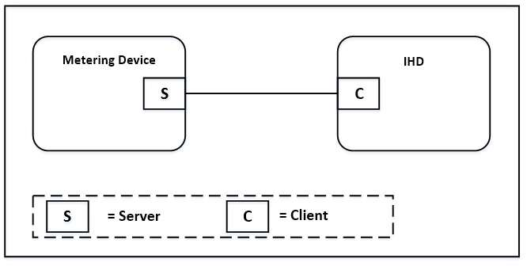
Note: Device names are examples for illustration purposes only
217 NEW CERTIFIABLE CLUSTER IN THIS LIBRARY
Figure 10-189. Mirrored BOMD Event Cluster Client/Server Example ¶
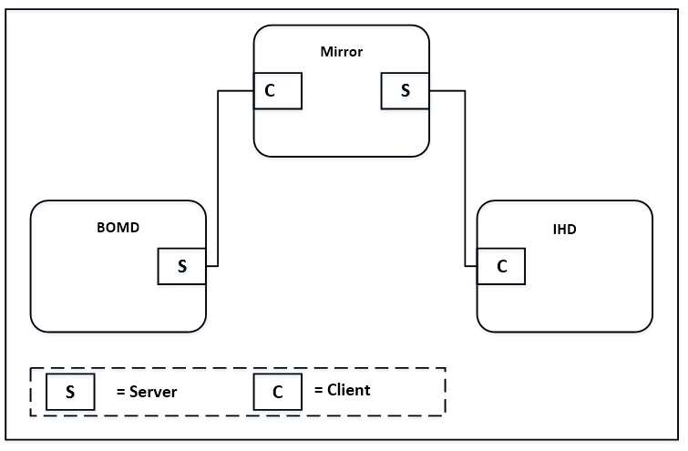
Note: Device names are examples for illustration purposes only
10.11.1.1 Revision History ¶
The global ClusterRevision attribute value SHALL be the highest revision number in the table below.
| Rev | Description |
|---|---|
| 1 | mandatory global ClusterRevision attribute added; Added from SE1.4. |
10.11.1.2 Classification ¶
| Hierarchy | Role | PICS Code | Primary Transaction |
|---|---|---|---|
| Base | Application | SEEV | Type 1 (client to server) |
10.11.1.3 Cluster Identifiers ¶
| Identifier | Name |
|---|---|
| 0x0709 | Events (Smart Energy) |
10.11.2 Server ¶
10.11.2.1 Dependencies ¶
- Events carried using this cluster include a timestamp with the assumption that target devices maintain a real time clock. Devices can acquire and synchronize their internal clocks via the Time cluster server.
- A server device supporting this cluster should also support the Device Management cluster in order to allow events to be configured over the air.
- In order that Events Cluster client devices are able the receive events published from an Events Cluster server on a BOMD, the BOMD mirror should support both an Events cluster client and server. The BOMD should publish events to the mirror and the mirror should, if required (based on the control flags in the PublishEvent command), publish events to all bound Events Cluster client devices.
- Events Cluster client devices wishing to receive events published from a BOMD shall bind to the Events Cluster server on the BOMD mirror.
- A Mirror may store the events pushed from a BOMD, effectively mirroring the BOMD event logs. The Mirror may also support the reading and clearing of event logs by Events Cluster client devices.
- How events are internally stored within an Events Cluster server device is out of scope of this specification.
10.11.2.2 Attributes ¶
None.
10.11.2.3 Commands Received ¶
Table 10-201 lists cluster-specific commands that are received by the server. ¶
Table 10-201. Cluster -specific Commands Received by the Events Cluster Server ¶
| Command Identifier FieldValue | Description | M |
|---|---|---|
| 0x00 | GetEventLog | O |
| 0x01 | Clear Event Log Request | O |
10.11.2.3.1 Get Event Log Command ¶
The GetEventLog command allows a client to request events from a server’s event logs. One or more Publi-shEventLog commands are returned on receipt of this command.
The LogID sub-field, in conjunction with the Event ID field, shall provide the filtering to enable the desired event(s) to be identified. The following examples show the usage of these 2 fields:-
- Get all events from the Security Event Log (Log ID = Security (4), Event ID = 0x0000)
- Get all events from all logs (Log ID = 0, Event ID = 0x0000)
- Get all occurrences of a specific event 0x1111 from all logs (Log ID = 0, Event ID = 0x1111)
- Get all occurrences of a specific event 0x1111 from the Security Event log (Log ID = Security (4), Event ID = 0x1111).
10.11.2.3.1.1 Payload Format ¶
Figure 10-190. Format of the Get Event Log Command Payload ¶
| Octets | 1 | 2 | 4 | 4 | 1 | 2 |
|---|---|---|---|---|---|---|
| Data Type | map8 | uint16 | UTC | UTC | uint8 | uint16 |
| Field Name | Event Control/ Log ID (M) | Event ID (M) | Start Time (M) | End Time (M) | Number of Events (M) | Event Off- set (M) |
10.11.2.3.1.2 Payload Details ¶
Event Control/Log ID (mandatory): The least significant nibble is an enumeration indicating the Log ID (see Table 10-202). The most significant nibble is a bitmap indicating control options (see Table 10-203):
Table 10-202. Log ID Enumeration ¶
| Bit | Enumerated Value | Description |
|---|---|---|
| 0-3 | 0x0 | All logs |
| 0x1 | Tamper Log | |
| 0x2 | Fault Log | |
| 0x3 | General Event Log | |
| 0x4 | Security Event Log | |
| 0x5 | Network Event Log |
Table 10-203. Event Control Bitmap ¶
| Bit | Description |
|---|---|
| 4 | 0- retrieve the minimal information per event (Event ID and Time) 1-retrieve the full information per event (Event ID, Time and Octet string, if available) |
Event ID (mandatory): The Event ID specifies a particular event to be queried; a value of 0x0000 is reserved to indicate all Event IDs. The Event IDs for the Smart Energy profile are detailed in tables Table 10-192 to
Table 10-200. ¶
Note: If event configuration is supported via the device management cluster the Zigbee Event IDs are defined in tables Table 10-192 to Table 10-200.
Start Time (mandatory): This field specifies the start time (earliest time) of the range of events to be returned. Events that match the search criteria and have a timestamp greater than or equal to the start time shall be returned.
End Time (mandatory): specifies the end time (latest time) of the range of events to be reported in the response. Events that match the search criteria and have a timestamp less than the specified end time shall be returned. Events with a timestamp equal to that of the End Time shall not be returned; this ensures that, in the case where the End Time is set to the current time, events generated whilst reading the event log are not included in the response.
Number of Events (mandatory): This parameter indicates the maximum number of events requested i.e. the maximum number of events that the client is willing to receive; the value 0x00 indicates all events that fall into the defined criteria.
Event Offset (mandatory): The Event Offset field provides a mechanism to allow client devices to page through multiple events which match a given search criteria. As an example, a client device requests two events from a given search criteria with an Event Offset of 0. The server returns the two most recent events (events 1 and 2) in a PublishEvent command and indicates that 4 events match the given criteria. The client re-sending the original Get Event Log command, but with the Event Offset field now set to 2, shall result in the server returning events 3 and 4.
10.11.2.3.1.3 Effect on Receipt ¶
On receipt of this command, the device shall respond with a PublishEventLog command A Default Response with status NOT_FOUND shall be returned if no events match the given search criteria.
10.11.2.3.2 Clear Event Log Request Command ¶
This command requests that an Events server device clear the specified event log(s). The Events server device SHOULD clear the requested events logs, however it is understood that market specific restrictions may be applied to prevent this.
10.11.2.3.2.1 Payload Format ¶
Figure 10-191. Format of the Clear Event Log Request Command Payload ¶
| Octets | 1 |
|---|---|
| Data Type | map8 |
| Field Name | Log ID (M) |
10.11.2.3.2.2 Payload Details ¶
Log ID (mandatory): The least significant nibble specifies the Log to be cleared (see Table 10-202). The most significant nibble is reserved.
10.11.2.3.2.3 Effect on Receipt ¶
On receipt of this command, a device supporting the Events cluster as a server should clear the specified event logs. A Clear Event Log Response command shall be generated, indicating which event logs have been successfully cleared.
10.11.2.4 Commands Generated ¶
Table 10-204 lists cluster-specific commands that are generated by the server. ¶
Table 10-204. Cluster -specific Commands Generated by the Events Cluster Server ¶
| Command Identifier FieldValue | Description | M |
|---|---|---|
| 0x00 | Publish Event | O |
| 0x01 | Publish EventLog | O |
| 0x02 | Clear Event Log Response | O |
10.11.2.4.1 Publish Event Command ¶
This command is generated upon an event trigger from within the reporting device and if enabled by the associated Event Configuration (bitmap) attribute in the Device Management cluster (see Table 10-193 for further information).
10.11.2.4.1.1 Payload Format ¶
Figure 10-192. Format of the Publish Event Command Payload ¶
| Octets | 1 | 2 | 4 | 1 | 1..255 |
|---|---|---|---|---|---|
| Data Type | map8 | uint16 | UTC | map8 | octstr |
| Field Name | Log ID (M) | Event ID (M) | Event Time (M) | Event Control (M) | Event Data (M) |
10.11.2.4.1.2 Payload Details ¶
Log ID (mandatory): The least significant nibble is an enumeration indicating the Log ID (see Table 10-202). The most significant nibble is reserved.
Event ID (mandatory): The Event ID specifies a particular event. If event configuration is supported (via the Device Management cluster), the Zigbee Event IDs are as defined in Table 10-192 to Table 10-200.
Event Time (mandatory): The timestamp of the event occurrence in UTC format.
Event Control (mandatory): An 8-bit bitmap specifying actions to be taken regarding this event:
Table 10-205. Event Action Control Bitmap ¶
| Bit | Description (if set) |
|---|---|
| 0 | Report Event to HAN devices – this flag indicates that the event is intended for the HAN; the event should be published to all bound Events cluster client devices. If the event is generated by a BOMD and received by a mirror, the mirror should publish this event to all bound Events cluster clients. |
| 1 | Report Event to the WAN – this flag indicates that the event is intended for the WAN; if the receiving device is capable, it should report this event to the WAN. |
Event Data (mandatory): A variable length octet string array used to hold additional information captured when the event occurred. The first element (element 0) of the array indicates the length of the string, NOT including the first element.
10.11.2.4.2 Publish Event Log Command ¶
This command is generated on receipt of a Get Event Log command. The command shall return the most recent event first, up to the number of events requested.
10.11.2.4.2.1 Payload Format ¶
Figure 10-193. Format of the Publish Event Log Command Payload ¶
| Octets | 2 | 1 | 1 | 1..xx |
|---|---|---|---|---|
| Data Type | uint16 | uint8 | uint8 | opaque |
| Field Name | Total Num- ber of Match- ing Events (M) | Command Index (M) | Total Commands (M) | Log Payload (M) |
10.11.2.4.2.2 Payload Details ¶
Total Number of Matching Events (mandatory): This field indicates the total number of events found which match the search criteria received in the associated Get Event Log command. The value of this field may be greater than the total number of events requested; if this is the case then further events may be retrieved using the Event Offset field of the Get Event Log command (see 10.11.2.3.1).
Command Index (mandatory): In the case where the entire number of events being returned does not fit into a single message, the Command Index is used to count the required number of Publish Event Log commands. The Command Index starts at 0 and is incremented for each command returned due to the same Get Event Log command.
Total Commands (mandatory): This parameter indicates the total number of Publish Event Log commands that are required to return the requested event logs.
10.11.2.4.2.2.1 Log Payload ¶
The Log Payload is a series of events and associated data. The event payload consists of the logged events as detailed in Figure 10-194:
Figure 10-194. Format of the Publish Event Log Command Log Sub-Payload ¶
| Oc- tets | 1 | 1 | 2 | 4 | 1..255 | … | 1 | 2 | 4 | 1..255 |
|---|---|---|---|---|---|---|---|---|---|---|
| Data Type | map8 | map8 | uint16 | UTC | octstr | … | map8 | uint16 | UTC | octstr |
| Field Name | Number of Events / Log Payload Con- trol(M) | Log ID (M) | Event ID (M) | Event Time (M) | Event Data (M) | … | Log ID (O) | Event ID n (O) | Event Time n (O) | Event Data n (O) |
Number of Events /Log Payload Control (mandatory): This field is split into two parts; the least significant nibble represents the Log Payload Control as defined in Table 10-206, whilst the most significant nibble indicates the number of events contained within the log payload of this command. Note that an event which crosses a payload boundary is considered to be 1 event in the log payload. Wherever possible events SHOULD NOT be sent across payload boundaries.
Table 10-206. Log Payload Control Bitmap ¶
| Bit | Description |
|---|---|
| 0 | 0 - Events do not cross frame boundary 1 – An event in this log payload does cross a payload frame boundary |
Log ID (mandatory): The least significant nibble is an enumeration indicating the Log ID (see Table 10-202). The most significant nibble is reserved.
Event ID: The Event ID specifies a particular event. If event configuration is supported (via the Device Management cluster), Zigbee-specified Event IDs are as defined in Table 10-192 to Table 10-200.
Event Time: The timestamp of the event occurrence in UTC format.
Event Data: A variable length octet string array used to hold additional information captured when the event occurred. The first element (element 0) of the array indicates the length of the string, NOT including the first element. This field should contain a single octet of 0x00 when ‘minimal information’ is requested in the associated Get Event Log command (see 10.11.2.3.1.2 for further details).
10.11.2.4.3 Clear Event Log Response Command ¶
This command is generated on receipt of a Clear Event Log Request command.
10.11.2.4.3.1 Payload Format ¶
Figure 10-195. Format of the Clear Event Log Response Command Payload ¶
| Oc- tets | 1 |
|---|---|
| Data Type | map8 |
| Field Name | ClearedEventsLogs (M) |
10.11.2.4.3.2 Payload Details ¶
ClearedEventsLogs (mandatory): This 8-bit BitMap indicates which logs have been cleared, as detailed in Table 10-207.
Note: It is understood that certain markets may require that event logs cannot be cleared; this BitMask provides a method for the server device to indicate which logs have been successfully cleared.
Table 10-207. ClearedEventsLogs Bitmap ¶
| Bit | Description |
|---|---|
| 0 | 0 – All Logs NOT Cleared 1 - All Logs Cleared |
| 1 | 0 - Tamper Log NOT Cleared 1 - Tamper Log Cleared |
| 2 | 0 - Fault Log NOT Cleared 1 - Fault Log Cleared |
| 3 | 0 - General Event Log NOT Cleared 1 - General Event log Cleared |
| 4 | 0 - Security Event Log NOT Cleared 1 - Security Log Cleared |
| 5 | 0 - Network Event Log NOT cleared 1 - Network Event Log cleared |
10.11.3 Client ¶
10.11.3.1 Dependencies ¶
Events carried using this cluster include a timestamp with the assumption that target devices maintain a real time clock. Devices can acquire and synchronize their internal clocks via the Time cluster server.
10.11.3.2 Attributes ¶
None
10.11.3.3 Commands Received ¶
See section 10.11.2.4.
10.11.3.4 Commands Generated ¶
See section 10.11.2.3.
Sub-GHz218
10.12 ¶
10.12.1 Overview ¶
Please see Chapter 2 for a general cluster overview defining cluster architecture, revision, classification, identification, etc. The Sub-GHz cluster provides attributes and commands specific to the use of Sub-GHz frequencies for a Smart Energy network.
218 NEW CERTIFIABLE CLUSTER IN THIS LIBRARY
Figure 10-196. Sub-GHz Cluster Client/Server Example ¶
Smart Energy Coordinator
Device
S
C
C
S = Client
= Server
Note: Device names are examples for illustration purposes only
10.12.1.1 Revision History ¶
The global ClusterRevision attribute value SHALL be the highest revision number in the table below.
| Rev | Description |
|---|---|
| 1 | mandatory global ClusterRevision attribute added; Added from SE1.4. |
10.12.1.2 Classification ¶
| Hierarchy | Role | PICS Code | Primary Transaction |
|---|---|---|---|
| Base | Application | SESG | Type 1 (client to server) |
10.12.1.3 Cluster Identifiers ¶
| Identifier | Name |
|---|---|
| 0x070B | Sub-GHz (Smart Energy) |
10.12.2 Server ¶
10.12.2.1 Dependencies ¶
None.
10.12.2.2 Attributes ¶
Table 10-208. Sub-GHz Cluster Server Attributes ¶
| Id | Name | Type | Range | Acc | Def | M |
|---|---|---|---|---|---|---|
| 0x0000 | Channel Change | map32 | 0x00000000 to 0xFFFFFFFF | R | - | M |
| 0x0001 | Page 28 Channel Mask | map32 | 0xE0000000 to 0xE7FFFFFF | R | 0xE7FFFFFF | O |
| 0x0002 | Page 29 Channel Mask | map32 | 0xE8000000 to 0xE80001FF | R | 0xE80001FF | O |
| 0x0003 | Page 30 Channel Mask | map32 | 0xF0000000 to 0xF7FFFFFF | R | 0xF7FFFFFF | O |
| 0x0004 | Page 31 Channel Mask | map32 | 0xF8000000 to 0xFFFFFFFF | R | 0xFFFFFFFF | O |
10.12.2.2.1 Channel Change Attribute ¶
This is a 32-bit channel mask that defines the sub-GHz channel that the Coordinator’s Network Manager intends to move to. Bits 0 – 26 indicate the channel that is to be used, bits 27-31 indicate the binary-encoded channel page (see below for further details).
10.12.2.2.2 Page 28 Channel Mask Attribute ¶
This is a 32-bit channel mask that defines the channels that are to be scanned when forming, joining or rejoining a network. Page 28 defines the first 27 channels within the 863-876MHz frequency band. The format of this Bitmap is shown within Table 10-209.
Table 10-209. Page 28 Channel Mask ¶
| Bit | Description |
|---|---|
| 0 | 863 Channel 0 |
| 1 | 863 Channel 1 |
| 2 | 863 Channel 2 |
| 3 | 863 Channel 3 |
| 4 | 863 Channel 4 |
| 5 | 863 Channel 5 |
| 6 | 863 Channel 6 |
| 7 | 863 Channel 7 |
| 8 | 863 Channel 8 |
| 9 | 863 Channel 9 |
| 10 | 863 Channel 10 |
| 11 | 863 Channel 11 |
| 12 | 863 Channel 12 |
| 13 | 863 Channel 13 |
| 14 | 863 Channel 14 |
| 15 | 863 Channel 15 |
| Bit | Description |
|---|---|
| 16 | 863 Channel 16 |
| 17 | 863 Channel 17 |
| 18 | 863 Channel 18 |
| 19 | 863 Channel 19 |
| 20 | 863 Channel 20 |
| 21 | 863 Channel 21 |
| 22 | 863 Channel 22 |
| 23 | 863 Channel 23 |
| 24 | 863 Channel 24 |
| 25 | 863 Channel 25 |
| 26 | 863 Channel 26 |
| 27 – 31 | Page Number (11100b = 28d) |
10.12.2.2.3 Page 29 Channel Mask Attribute ¶
This is a 32-bit channel mask that defines the channels that are to be scanned when forming, joining or rejoining a network. Page 29 defines channels 27 to 34 and channel 62 of the 863-876MHz frequency band. The format of this Bitmap is shown within Table 10-210.
Table 10-210. Page 29 Channel Mask ¶
| Bit | Description |
|---|---|
| 0 | 863 Channel 27 |
| 1 | 863 Channel 28 |
| 2 | 863 Channel 29 |
| 3 | 863 Channel 30 |
| 4 | 863 Channel 31 |
| 5 | 863 Channel 32 |
| 6 | 863 Channel 33 |
| 7 | 863 Channel 34 |
| 8 | 863 Channel 62 |
| 9 – 26 | Unused (set to 0) |
| 27 – 31 | Page Number (11101b = 29d) |
10.12.2.2.4 Page 30 Channel Mask Attribute ¶
This is a 32-bit channel mask that defines the channels that are to be scanned when forming, joining or rejoining a network. Page 30 defines channels 35 to 61 of the 863-876MHz frequency band. The format of this Bitmap is shown within Table 10-211.
Table 10-211. Page 30 Channel Mask ¶
| Bit | Description |
|---|---|
| 0 | 863 Channel 35 |
| 1 | 863 Channel 36 |
| Bit | Description |
|---|---|
| 2 | 863 Channel 37 |
| 3 | 863 Channel 38 |
| 4 | 863 Channel 39 |
| 5 | 863 Channel 40 |
| 6 | 863 Channel 41 |
| 7 | 863 Channel 42 |
| 8 | 863 Channel 43 |
| 9 | 863 Channel 44 |
| 10 | 863 Channel 45 |
| 11 | 863 Channel 46 |
| 12 | 863 Channel 47 |
| 13 | 863 Channel 48 |
| 14 | 863 Channel 49 |
| 15 | 863 Channel 50 |
| 16 | 863 Channel 51 |
| 17 | 863 Channel 52 |
| 18 | 863 Channel 53 |
| 19 | 863 Channel 54 |
| 20 | 863 Channel 55 |
| 21 | 863 Channel 56 |
| 22 | 863 Channel 57 |
| 23 | 863 Channel 58 |
| 24 | 863 Channel 59 |
| 25 | 863 Channel 60 |
| 26 | 863 Channel 61 |
| 27 – 31 | Page Number (11110b = 30d) |
10.12.2.2.5 Page 31 Channel Mask Attribute ¶
This is a 32-bit channel mask that defines the channels that are to be scanned when forming, joining or rejoining a network. Page 31 defines the 27 channels within the 915-921MHz frequency band. The format of this Bitmap is shown within Table 10-212.
Table 10-212. Page 31 Channel Mask ¶
| Bit | Description |
|---|---|
| 0 | 915 Channel 0 |
| 1 | 915 Channel 1 |
| 2 | 915 Channel 2 |
| 3 | 915 Channel 3 |
| 4 | 915 Channel 4 |
| 5 | 915 Channel 5 |
| 6 | 915 Channel 6 |
| 7 | 915 Channel 7 |
| Bit | Description |
|---|---|
| 8 | 915 Channel 8 |
| 9 | 915 Channel 9 |
| 10 | 915 Channel 10 |
| 11 | 915 Channel 11 |
| 12 | 915 Channel 12 |
| 13 | 915 Channel 13 |
| 14 | 915 Channel 14 |
| 15 | 915 Channel 15 |
| 16 | 915 Channel 16 |
| 17 | 915 Channel 17 |
| 18 | 915 Channel 18 |
| 19 | 915 Channel 19 |
| 20 | 915 Channel 20 |
| 21 | 915 Channel 21 |
| 22 | 915 Channel 22 |
| 23 | 915 Channel 23 |
| 24 | 915 Channel 24 |
| 25 | 915 Channel 25 |
| 26 | 915 Channel 26 |
| 27 – 31 | Page Number (11111b = 31d) |
10.12.2.3 Commands Generated ¶
Table 10-213 lists cluster-specific commands that are generated by the server. ¶
Table 10-213. Cluster-specific Commands Generated by the Sub-GHz Cluster Server ¶
| Command Identifier FieldValue | Description | M |
|---|---|---|
| 0x00 | Suspend Cluster Messages | M |
10.12.2.3.1 Suspend Cluster Messages Command ¶
The Suspend Cluster Messages command is sent to client device(s) by the server device when the server device has determined that the client device(s) shall suspend their cluster communications to the server device for the period stated in the command. The command is also sent in response to a Get Suspend Cluster Mes-sages Status command.
10.12.2.3.1.1 Payload Format ¶
Figure 10-197. Format of the Suspend Cluster Messages Command Payload ¶
| Octets | 1 |
|---|
| Data Type | uint8 |
|---|---|
| Field Name | Suspension Period (M) |
10.12.2.3.1.2 Payload Details ¶
Suspension Period (mandatory): An unsigned 8-bit integer indicating the period, in minutes, during which cluster communications from the device shall be suspended. A value of zero shall indicate that cluster communications are not currently suspended.
10.12.2.3.1.3 When Generated ¶
This command is generated when the server device determines that cluster communications from the receiving client device shall be suspended in order to reduce the Duty Cycle of the server device. The command is also sent in response to a Get Suspend Cluster Messages Status command.
10.12.2.3.1.4 Effect on Receipt ¶
On receipt of this command with a non-zero payload, the device shall suspend its cluster communications to the server device for the period indicated by the payload, at which time normal operation may resume.
10.12.3 Client ¶
10.12.3.1 Dependencies ¶
None.
10.12.3.2 Attributes ¶
There are no attributes for the Sub-GHz cluster client.
10.12.3.3 Commands Generated ¶
Table 10-214 lists cluster-specific commands that are generated by the server. ¶
Table 10-214. Cluster-specific Commands Generated by the Sub-GHz Cluster Client ¶
| Command Identifier FieldValue | Description | M |
|---|---|---|
| 0x00 | Get Suspend Cluster Messages Sta- tus | M / O* |
*Mandatory for BOMDs, Optional for all other devices
10.12.3.3.1 Get Suspend Cluster Messages Status Command ¶
The Get Suspend Cluster Messages Status command allows a client device to request the current status of its cluster communications with the server. This command is Mandatory for BOMDs.
10.12.3.3.1.1 Payload Details ¶
There are no fields for this command.
10.12.3.3.1.2 When Generated ¶
This command is sent unsolicited whenever a client device wishes to determine the current status of its cluster communications from the server.
10.12.3.3.1.3 Effect on Receipt ¶
The server shall return a Suspend Cluster Messages command (see 10.12.2.3.1 for further details).
10.13 ¶
Meter Identification
10.13.1 Overview ¶
Please see Chapter 2 for a general cluster overview defining cluster architecture, revision, classification, identification, etc.
This cluster provides attributes and commands for determining advanced information about utility metering device, as shown in Figure 10-198.
Note: Where a physical node supports multiple endpoints it will often be the case that many of these settings will apply to the whole node, that is they are the same for every endpoint on the device. In such cases they can be implemented once for the node, and mapped to each endpoint.
Figure 10-198. Typical Usage of the Meter Identification Cluster ¶
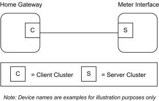
10.13.1.1 Revision History ¶
The global ClusterRevision attribute value SHALL be the highest revision number in the table below.
| Rev | Description |
|---|---|
| 1 | global mandatory ClusterRevision attribute added |
| 2 | Moved to this Energy chapter; CCB 2817 2860 |
10.13.1.2 Classification ¶
| Hierarchy | Role | PICS Code | Primary Transaction |
|---|---|---|---|
| Base | Application | MTRID | Type 2 (server to client) |
10.13.1.3 Cluster Identifiers ¶
| Identifier | Name |
|---|---|
| 0x0b01 | Meter Identification |
10.13.2 Server ¶
10.13.2.1 Meter Identification Attribute Set ¶
The Meter Identification server cluster contains the attributes summarized in Table 10-215.
Table 10-215. Attributes of the Meter Identification Server Cluster ¶
| Identifier | Name | Type | Range | Access | Def | M/O |
|---|---|---|---|---|---|---|
| 0x0000 | CompanyName | string | 0 to 16 Octets | R | MS | M |
| 0x0001 | MeterTypeID | uint16 | 0x0000 to 0xffff | R | MS | M |
| 0x0004 | DataQualityID | uint16 | 0x0000 to 0xffff | R | MS | M |
| 0x0005 | CustomerName | string | 0 to 16 Octets | RW | MS | O |
| 0x0006 | Model | octstr | 0 to 16 Octets | R | MS | O |
| 0x0007 | PartNumber | octstr | 0 to 16 Octets | R | MS | O |
| 0x0008 | ProductRevision | octstr | 0 to 6 Octets | R | MS | O |
| 0x000A | SoftwareRevision | octstr | 0 to 6 Octets | R | MS | O |
| 0x000B | UtilityName | string | 0 to 16 Octets | R | MS | O |
| 0x000C | POD | string | 0 to 16 Octets | R | MS | M |
| 0x000D | AvailablePower | int24 | 0x000000 to 0xffffff | R | MS | M |
| 0x000E | PowerThreshold | int24 | 0x000000 to 0xffffff | R | MS | M |
10.13.2.1.1 CompanyName Attribute ¶
CompanyName is an Octet String field capable of storing up to 16 character string (the first Octet indicates length) encoded in the UTF-8 format. Company Name defines the meter manufacturer name, decided by manufacturer.
10.13.2.1.2 MeterTypeID Attribute ¶
MeterTypeID defines the Meter installation features, decided by manufacturer. Though this attribute is defined as an unsigned, it is an enumeration.219 Table 10-216 provides Meter Type IDs field content.
219 CCB 2817 2860
Table 10-216. Meter Type IDs ¶
| Device | Meter Type ID |
|---|---|
| Utility Primary Meter | 0x0000 |
| Utility Production Meter | 0x0001 |
| Utility Secondary Meter | 0x0002 |
| Private Primary Meter | 0x0100 |
| Private Production Meter | 0x0101 |
| Private Secondary Meters | 0x0102 |
| Generic Meter | 0x0110 |
10.13.2.1.3 DataQualityID Attribute ¶
DataQualityID defines the Meter Simple Metering information certification type, decided by manufacturer. Though this attribute is defined as an unsigned, it is an enumeration. 220
Table 10-217 provides Data Quality IDs field content. ¶
Table 10-217. Data Quality IDs ¶
| Device | Meter Type ID |
|---|---|
| All Data Certified | 0x0000 |
| Only Instantaneous Power not Certified | 0x0001 |
| Only Cumulated Consumption not Certified | 0x0002 |
| Not Certified data | 0x0003 |
10.13.2.1.4 CustomerName Attribute ¶
CustomerName is a Character String field capable of storing up to 16 character string (the first Octet indicates length) encoded in the ASCII format.
220 CCB 2817 2860
10.13.2.1.5 Model Attribute ¶
Model is an Octet String field capable of storing up to 16 character string (the first Octet indicates length) encoded in the UTF-8 format. Model defines the meter model name, decided by manufacturer.
10.13.2.1.6 PartNumber Attribute ¶
PartNumber is an Octet String field capable of storing up to 16 character string (the first Octet indicates length) encoded in the UTF-8 format. PartNumber defines the meter part number, decided by manufacturer.
10.13.2.1.7 ProductRevision Attribute ¶
ProductRevision is an Octet String field capable of storing up to 6 character string (the first Octet indicates length) encoded in the UTF-8 format. ProductRevision defines the meter revision code, decided by manufacturer.
10.13.2.1.8 SoftwareRevision Attribute ¶
SoftwareRevision is an Octet String field capable of storing up to 6 character string (the first Octet indicates length) encoded in the UTF-8 format. SoftwareRevision defines the meter software revision code, decided by manufacturer.
10.13.2.1.9 UtilityName Attribute ¶
UtilityName is a Character String field capable of storing up to 16 character string (the first Octet indicates length) encoded in the ASCII format.
10.13.2.1.10 POD Attribute ¶
POD (Point of Delivery) is a Character String field capable of storing up to 16 character string (the first Octet indicates length) encoded in the ASCII format. POD is the unique identification ID of the premise connection point. It is also a contractual information known by the clients and indicated in the bill.
10.13.2.1.11 AvailablePower Attribute ¶
AvailablePower represents the InstantaneousDemand that can be distributed to the customer (e.g., 3.3KW power) without any risk of overload. The Available Power SHALL use the same formatting conventions as the one used in the simple metering cluster formatting attribute set for the InstantaneousDemand attribute, i.e., the UnitOfMeasure and DemandFormatting.
10.13.2.1.12 PowerThreshold Attribute ¶
PowerThreshold represents a threshold of InstantaneousDemand distributed to the customer (e.g., 4.191KW) that will lead to an imminent risk of overload. The PowerThreshold SHALL use the same formatting conventions as the one used in the AvailablePower attributes and therefore in the simple metering cluster formatting attribute set for the InstantaneousDemand attribute, i.e., the UnitOfMeasure and DemandFormatting.
10.13.2.1.13 Commands Received ¶
No cluster-specific commands are received or generated by the server.
10.13.3 Client ¶
The client has no dependencies and no cluster specific attributes. The client does not receive or generate any cluster specific commands.